Questão 1 · Obstetrícia · 4000201164Primigesta, 22 anos, vem à primeira consulta de pré-natal. Ela está com 8 semanas de gestação. O médico colhe sua anamnese, faz o exame físico e solicita os exames complementares. Ele classifica a gestante como de risco habitual, faz todas as orientações necessárias e prescreve:
A Sulfato ferroso, na dose de 200 a 300 mg/ dia, para profilaxia de anemia materna até o puerpério.
B Sulfato ferroso, na dose de 200 a 300 mg/ dia, para profilaxia de anemia materna até 16 semanas de gestação.
C Ácido fólico, na dose de 0,4 mg/dia, para prevenção de defeitos do fechamento do tubo neural até 12 semanas de gestação.
D Ácido fólico, na dose de 0,4 mg/dia, para prevenção de defeitos do fechamento do tubo neural a partir de 12 semanas de gestação.
E Ácido fólico na dose de 0,4 mg/dia e sulfato ferroso, na dose de 200 a 300 mg/ dia, para profilaxia de anemia materna até o parto.
Questão 2 · Obstetrícia · 4000201163Durante o exame obstétrico de uma gestante de 38 semanas, foi observada, na palpação abdominal pelas manobras obstétricas, a ausência de polo fetal ocupando o fundo uterino e escava vazia. De acordo com esses dados, assinale a alternativa correta:
A A situação fetal é transversa com apresentação córmica.
B A situação fetal é longitudinal com apresentação cefálica.
C A situação fetal é transversa com apresentação pélvica.
D A situação fetal é oblíqua com apresentação cefálica.
E A situação fetal é longitudinal com apresentação pélvica.
Questão 3 · Obstetrícia · 4000201162Considerando as práticas recomendadas e não recomendadas de cuidados intraparto da OMS, assinale a alternativa que indica a prática NÃO recomendada na assistência intraparto de gestante de risco habitual.
A Toque vaginal a cada 4 horas na fase ativa do trabalho de parto.
B Usar o critério de evolução da dilatação cervical de 1 cm/h no primeiro período do parto.
C A posição do parto deve ser escolhida pela gestante, mesmo com analgesia.
D Massagem perineal, compressas quentes e proteção perineal com as mãos.
E Ocitocina 10 UI intramuscular para todas as pacientes no terceiro período do parto.
Questão 4 · Obstetrícia · 4000201161Com relação aos exames que devem ser solicitados para a investigação de pré-eclâmpsia em gestantes com aumento dos níveis pressóricos a partir de 20 semanas, assinale a alternativa CORRETA:
A Deve ser solicitado hemograma, creatinina, transaminases, desidrogenase lática, bilirrubinas, relação proteína/creatinina e Dopplervelocimetria obstétrica.
B Deve ser solicitado hemograma, ureia, creatinina, transaminases, desidrogenase lática, bilirrubinas, ácido úrico, coagulograma e relação proteína/creatinina urinária.
C Deve ser solicitado hemograma, coagulograma, ureia, creatinina, transaminases, desidrogenase lática, bilirrubinas, proteína C reativa e proteinúria de 24 h.
D Deve ser solicitado hemograma, creatinina, transaminases, desidrogenase lática, albumina, urina 1, ácido úrico e Dopplervelocimetria obstétrica.
E Deve ser solicitado hemograma, coagulograma, transaminases, bilirrubinas, fosfatase alcalina, lipase, ureia, relação proteína/creatinina e Dopplervelocimetria obstétrica.
Questão 5 · Obstetrícia · 4000201160O fórcipe e o vácuo extrator devem ser aplicados somente se todas as condições de aplicabilidade estiverem presentes. Assinale a alternativa que NÃO indica uma condição de aplicabilidade do parto vaginal operatório.
A Colo completamente dilatado.
B Concepto vivo.
C Identificação da variedade de posição.
D Rotura das membranas fetais.
E Analgesia de parto.
Questão 6 · Obstetrícia · 4000199950Gestante, primigesta, atraso menstrual de 8 semanas, realizou ultrassom há uma semana que visualizou gestação tópica com embrião vivo de 6 semanas. Paciente vem ao pronto-socorro referindo sangramento vaginal intenso há 2 horas. Ao exame, apresenta-se descorada 1+/4, PA de 100 x 60 mmHg, FC de 100 bpm, abdome sem alterações, especular com sangramento moderado saindo pelo orifício externo do colo e toque vaginal com colo pérvio, sendo possível sentir material no canal cervical. A partir dos achados clínicos, qual é o diagnóstico e a conduta?
A Abortamento inevitável e aspiração manual intrauterina.
B Abortamento incompleto e espera por eliminação espontânea.
C Ameaça de abortamento e ultrassonografia transvaginal.
D Abortamento retido e misoprostol.
Questão 7 · Obstetrícia · 4000199949Gestante de 19 anos, primigesta, 33 semanas calculada pela DUM, vem à maternidade trazida pelo SAMU com sangramento vaginal e dor abdominal há 3 horas. Paciente usuária de crack e moradora de rua. Não fez pré-natal nem ultrassom nessa gestação. Ao exame, apresenta-se com PA = 150/90 mmHg, pulso = 110 bpm. Altura uterina de 34 cm, dinâmica uterina de difícil avaliação, difícil palpação de partes fetais, dor à palpação abdominal e tônus uterino aumentado. Batimentos cardíacos fetais = 120 bpm. Ao exame especular, apresenta sangramento coletado, visualização de colo impérvio e sangramento proveniente do canal cervical em pequena quantidade; toque vaginal não realizado. Com base nos achados clínicos, qual deve ser a conduta nesse momento?
A Realizar corticoterapia e cesariana após 48 horas.
B Realizar amniotomia e encaminhar para cesariana de emergência.
C Encaminhar a paciente para cesariana de emergência.
D Realizar tocólise, corticoterapia e ultrassonografia transvaginal.
Questão 8 · Obstetrícia · 4000199948Gestante de 30 anos, secundigesta com parto normal há 3 anos sem intercorrências, sem comorbidades. Iniciou o pré-natal com 8 semanas, sendo realizado exames laboratoriais com sorologias negativas, tipagem sanguínea O+, glicemia de jejum de 84 mg/dl, hemoglobina 12 g/dl, hematócrito 38%, urina 1 sem alterações, urocultura negativa. Paciente com vacinas em dia. Para essa gestante, quais exames devem ser solicitados no segundo e terceiro trimestre de gestação?
A Sorologias para hepatite B, sífilis e HIV, glicemia de jejum, hemograma e cultura para estreptococos do grupo B.
B Sorologias para toxoplasmose, sífilis e HIV, TTOG 75 g, urina 1 e urocultura, cultura para estreptococos do grupo B.
C Sorologias para sífilis, HIV, TTOG 75 g, hemograma e cultura para estreptococos do grupo B.
D Sorologias para hepatite B, toxoplasmose, sífilis, HIV, glicemia de jejum, hemograma, urina 1 e urocultura e cultura para estreptococos do grupo B.
Questão 9 · Obstetrícia · 4000199947Gestante de 28 anos, primigesta, 39 semanas e 5 dias, com gestação de risco habitual, foi admitida no centro de parto normal com 6 cm de dilatação, 4 contrações de 40” em 10 minutos, bolsa íntegra, apresentação cefálica etida, em ODP em plano -1 de De Lee. Feto com boa vitalidade e BCF de 144 bpm. Quatro horas após a admissão, foi examinada novamente e encontrava-se com 8 cm de dilatação, bolsa íntegra, apresentação cefálica etida em ODT, plano zero de De Lee, BCF de 140 bpm. Com base na evolução do trabalho de parto, assinale a alternativa que indica a conduta correta para esse caso.
A Realizar amniotomia, prescrever ocitocina em bomba de infusão e reavaliar em 2 horas.
B Suspender dieta, prescrever ocitocina e reavaliar em 1 hora; caso não ocorra progressão do parto, indicar cesariana por distocia de rotação.
C Manter ausculta fetal intermitente a cada 1 hora, realizar amniotomia e reavaliar em 2 horas.
D Manter ausculta fetal intermitente a cada 30 minutos e sugerir à parturiente caminhada e posições verticalizadas; reavaliar em 4 horas.
Questão 10 · Obstetrícia · 4000199946Gestante de 27 anos, primigesta, 31 semanas, vem à maternidade com dor em cólica há 2 horas. Ao exame físico: dinâmica uterina 3/30 seg/10 minutos, tônus uterino normal, 148 batimentos cardíacos fetais por minuto, colo pérvio para 2 cm, médio, medianizado, pélvico, bolsa íntegra. A conduta mais adequada nesse momento deve ser:
A Prescrição de progesterona via vaginal e observação ambulatorial.
B Nifedipina, betametasona e penicilina cristalina.
C Atosiban, penicilina cristalina e sulfato de magnésio.
D Sulfato de magnésio e cesariana.
Questão 11 · Rotura prematura de membranas ovulares RPM · Obstetrícia · 4000199199MSSC, 25 anos, G1P0, idade gestacional de 36 semanas, comparece à emergência referindo umidade excessiva na genitália externa, molhando sua peça íntima há 3 horas. Ao exame especular, observa- s e pequena quantidade de líquido claro em fundo de saco posterior da vagina. Exame de cristalização evidencia presença de estruturas que se assemelham à rami cações em folha de samambaia. Qual das complicações abaixo é
A Corioamnionite.
B Compressão do cordão umbilical.
C Descolamento prematuro da placenta.
D Hipoplasia pulmonar e deformidade dos membros.
Questão 12 · Trabalho de parto prematuro TPP · Obstetrícia · 4000199198AMN. 16 anos, G1P0, idade gestacional de 28 semanas, admitida na emergência com contações regulares (0 3 em 10 minutos, durando 50 segundos), perda de tampão mucoso, bolsa das águas íntegra e colo apagado, com 4 cm de dilatação. Podemos afirmar sobre a abordagem desta intercorrência, que:
A estudos recentes têm demonstrado boa eficácia da progesterona como agente tocolítico.
B corticoide para maturação pulmonar deve ser administrado em pacientes em trabalho de parto entre 21 e 36 semanas de gestação.
C nifedipina deve ser administrada por 48 h, tempo necessário para que ocorra a maturação pulmonar com corticoides e a transferência da paciente para maternidade de nível terciário.
D na constatação de corioamnionite, a resolução da gestação deve ser realizada após 48 h do início da antibioticoterapia.
Questão 13 · Modif icações f isiológicas da gestação · Obstetrícia · 4000199197Paciente em uso de sertralina, há 1 ano, comparece a sua consulta pré-natal no segundo trimestre de gestação, referindo aumento da sensação de tristeza, adinamia e choro. Quais das alterações siológicas da gravidez abaixo referidas, podem justificar sua queixa?
A Encurtamento dos tempos de esvaziamento gástrico e trânsito intestinal.
B Mudanças na atividade das enzimas citocromo P450 e N-acetiltransferase.
C Diminuição progressiva da taxa de filtração glomerular durante a gestação.
D Aumento da concentração de albumina sérica e redução do volume plasmático.
Questão 14 · Obstetrícia · 4000199196BSG, 35 anos, tentando gravidez há 2 anos, comparece a consulta com obstetra, no posto de saúde, queixando-se de amenorreia há 2 meses, mamas doloridas e com descarga mamilar bilateral. Deseja iniciar pré-natal. Em relação aos sinais diagnósticos de certeza da gestação, assinale a opção correta.
A Rechaço fetal intrauterino e auscuta dos batimentos cardiofetais.
B Amenorreia acima de 6 semanas e aumento do volume uterino ao toque.
C Palpação de movimentos fetais e observação da rede de Haller nas mamas.
D Amolecimento do istmo uterino e exame de toque apresentando útero globoso e pulso vaginal.
Questão 15 · Obstetrícia · 4000199195Adolescente, 18 anos, queixa-se de corrimento volumoso e fétido. Ao exame ginecológico, observa- se hiperemia vulvar, conteúdo vaginal amarelo-esverdeado, bolhoso e fétido, paredes vaginais hiperemiadas e colo uterino apresenta pequenas manchas vermelhas. O exame direto do conteúdo vaginal identi cou microorganismos com agelos móveis na lâmina. Diante deste quadro clínico, qual o tratamento indicado?
A Metronidazol 2g via oral, dose única.
B Miconazol creme aplicação vaginal 7 noites.
C Ceftriaxona 250mg intramuscular, dose única.
D Doxiciclina 100mg de 12 em 12h via oral, 7 dias
Questão 16 · Obstetrícia · 4000199194MTS, 20 anos, G0P0, em atendimento de rotina, traz o laudo de exame citológico do colo uterino recente que apresenta a seguinte conclusão: Células escamosas atípicas de significado indeterminado (ASCUS). Exame ginecológico sem alterações. De acordo com a recomendação do Ministério da Saúde, qual a conduta mais adequada neste caso?
A Solicitar teste para HPV.
B Repetir a citologia em 3 anos.
C Encaminhar para colposcopia.
D Realizar avaliação do canal endocervical.
Questão 17 · Obstetrícia · 4000199193JD, 35 anos, procura atendimento de emergência com quadro de dor abdominal intensa há dois dias. A o exame físico, apresenta estado geral regular, febril (38,6 oC), abdome ácido, doloroso à palpação profunda em hipogástrio e fossas ilíacas bilateralmente. Nega dor à descompressão súbita do abdome. Observa-se corrimento purulento uindo do canal cervical no exame especular e toque vaginal bimanual doloroso na mobilização do colo e em palpação de anexos. Qual a melhor conduta?
A Tratar com dose única de azitromicina e ciprofloxacino via oral.
B Iniciar ceftriaxona e clindamicina endovenoso e reavaliar após 48 horas.
C Solicitar cultura com antibiograma da secreção endocervical para definir tratamento antibiótico.
D Iniciar tratamento ambulatorial com ceftriaxona, doxiciclina e metronidazol e reavaliar com 48 horas.
Questão 18 · Obstetrícia · 4000199192LCA, 35 anos, 2 lhos, obesa (P=95Kg), tem ciclos menstruais regulares e uxo menstrual volumoso por 8 a 10 dias associado a cólicas intensas desde a menarca. Início da vida sexual aos 18 anos com uso irregular d e camisinha. Em tratamento com antidepressivos, deseja iniciar anticoncepção segura e e caz. Qual o método contraceptivo mais adequado para essa paciente?
A Acetato de medroxiprogesterona injetável trimestral.
B Anticonceptivo hormonal em adesivo transdérmico.
C Sistema intrauterino de Levonorgestrel.
D Dispositivo intrauterino de cobre.
Questão 19 · Ginecologia · Obstetrícia · 4000198821O organismo feminino sofre mudanças anatômicas e funcionais durante a gravidez, adaptando-se à presença do feto em desenvolvimento. Quais adaptações fazem parte desse período?
A Aumento do volume sanguíneo materno, atingindo valores 30 a 50% maiores do que os níveis prégestacionais, não guardando qualquer relação com a quantidade de tecido trofoblástico presente e estimulação direta dos receptores de TSH pela HCG.
B Alteração na regulação da tireoide devido à diminuição no nível de iodo sérico consequente a um aumento da sua depuração renal, aumento da proteína carreadora dos hormônios tireoideanos (THBG) e estimulação direta dos receptores de TSH pela HCG.
C Redução da glicemia basal materna na fase catabólica da gravidez, visando ao armazenamento de gordura, glicogênese hepática e transferência de glicose para o feto, sendo desencadeadas pelos hormônios sexuais placentários (estrógeno e progesterona).
D Enrijecimento das articulações de um modo geral, com diminuição de sua elasticidade, predispondo a gestante a dores crônicas, entorses, luxações e até fraturas e glicogênese hepática.
Questão 20 · Ginecologia · Obstetrícia · 4000198820A prevalência de infecções sexualmente transmissíveis (IST) vem aumentando na última década, inclusive na gestação, provavelmente pela redução das atitudes preventivas. Em relação ao tratamento da sí lis materna, é considerada situação
A Tratamento com penicilina for completo e adequado à fase clínica da doença.
B Parceiro ser tratado concomitantemente.
C Tratamento terminar 30 dias antes do parto.
D Tratamento incompleto, mesmo se feito com penicilina.
Questão 21 · Ginecologia · Obstetrícia · 4000198819Qual fenômeno plástico no polo cefálico
A Bossa serossanguínea
B Cavalgamento ósseo
C Cefalohematoma
D Transudação entre a derme e o periósteo dos ossos do crâneo fetal
Questão 22 · Ginecologia · Obstetrícia · 4000198818A gravidez ectópica é considerada, especialmente em países desenvolvidos, uma verdadeira questão de saúde pública. Neste contexto, o reconhecimento dos fatores de risco envolvidos torna-se relevante. Um fator de risco associado à gravidez ectópica é:
A Anticoncepção de emergência por alteração na motilidade dos espermatozoides.
B Uso de indutores da ovulação por diminuir a motilidade tubária.
C Tabagismo por estimulação nicotínica na atividade ciliar e na mobilidade tubária.
D História de Doença Inflamatória Pélvica pelos efeitos cicatriciais sobre o endométrio.
Questão 23 · Ginecologia · Obstetrícia · 4000198817A rotura prematura das membranas ovulares é definida como a rotura espontânea das membranas coriônica e amniótica antes do início do trabalho de parto. Sobre esta importante condição complicadora da gravidez, analise as seguintes afirmativas: I. O período de latência é inversamente relacionado com a idade gestacional em que ocorreu a rotura das membranas. II. São complicações fetais hipoplasia pulmonar, prematuridade e infecção neonatal. III. Como a prematuridade aumenta a morbidade e a mortalidade neonatais, a inibição do trabalho de parto prematuro nestes casos leva a uma melhor taxa de sobrevida neonatal. IV. A antibioticoprofilaxia aumenta o período de latência e diminui a morbidade e a letalidade neonatais. Estão corretas as afirmativas
A II, III e IV, apenas.
B I, III e IV, apenas.
C I, II e IV, apenas.
D I, II e III, apenas.
Questão 24 · Ginecologia · Obstetrícia · 4000198816A placenta prévia é condição clínica que pode ser grave, trazendo possibilidade de sangramento na última metade da gestação. Quais as características que melhor definem o sangramento nestes casos?
A Vermelho vivo, indolor, associado a trauma local, não afetando a vitalidade fetal.
B Vermelho escuro, discreto, doloroso, intermitente, associado à hipertonia uterina.
C Abrupto, intenso, único, doloroso, sem causa aparente, afetando a vitalidade fetal.
D Vermelho vivo, indolor, progressivo, sem causa aparente, não afetando a vitalidade fetal.
Questão 25 · Obstetrícia · 4000198637Primigesta, 12 semanas e 5 dias, assintomática, traz à consulta pré-natal o resultado da sorologia para toxoplasmose solicitada na primeira consulta: IgG negativa e IgM positiva. Diante desse achado, a conduta apropriada é:
A Solicitar o teste de avidez de IgG.
B Prescrever espiramicina e repetir sorologia em 2 semanas.
C Repetir IgM em 2 semanas.
D Realizar amniocentese com 18 semanas.
Questão 26 · Obstetrícia · 4000198636Primigesta, 12 semanas e 5 dias, assintomática, traz à consulta pré-natal o resultado da sorologia para toxoplasmose solicitada na primeira consulta: IgG negativa e IgM positiva. Paciente retorna com 17 semanas, e exames solicitados confirmam toxoplasmose aguda. Diante desse achado, qual deve ser a conduta nesse momento?
A Manter espiramicina.
B Iniciar espiramicina.
C Trocar espiramicina pelo esquema tríplice.
D Manter espiramicina e alternar com esquema tríplice.
Questão 27 · Obstetrícia · 4000198635Gestante 2G1Pn, com idade gestacional de 38 semanas e 5 dias, procura a maternidade com queixas de perda de líquido vaginal há 5 horas. Exame físico: AU = 35 cm, BCF = 150 bpm, DU ausente. Exame ginecológico: especular com presença de líquido claro coletado no fundo de saco vaginal. Toque: colo grosso, posterior, pérvio para 2 cm, cefálico. Cardiotocogra a: feto reativo. Diante do exposto, qual é a conduta para o caso?
A Conduta expectante por 24 horas.
B Indução do parto com ocitocina.
C Indução do parto com análogo da prostaglandina E1 via vaginal.
D Cesariana.
Questão 28 · Obstetrícia · 4000198634Gestante 2G1Pn, com idade gestacional de 38 semanas e 5 dias, procura a maternidade com queixas de perda de líquido vaginal há 5 horas. Exame físico: AU = 35 cm, BCF = 150 bpm, DU ausente. Exame ginecológico: especular com presença de líquido claro coletado no fundo de saco vaginal. Toque: colo grosso, posterior, pérvio para 2 cm, cefálico. Cardiotocografia: feto reativo. Três horas após o nascimento do concepto, paciente apresentou sangramento vaginal intenso, associado à hipotensão e à taquicardia. Diante do exposto, qual é a principal hipótese diagnóstica?
A Atonia uterina.
B Laceração do canal de parto.
C Retenção de tecido placentário.
D Inversão uterina.
Questão 29 · Obstetrícia · 4000198633Gestante 2G1Pn, com idade gestacional de 38 semanas e 5 dias, procura a maternidade com queixas de perda de líquido vaginal há 5 horas. Exame físico: AU = 35 cm, BCF = 150 bpm, DU ausente. Exame ginecológico: especular com presença de líquido claro coletado no fundo de saco vaginal. Toque: colo grosso, posterior, pérvio para 2 cm, cefálico. Cardiotocografia: feto reativo. Três horas após o nascimento do concepto, paciente apresentou sangramento vaginal intenso, associado à hipotensão e à taquicardia. Diante do exposto, qual é a conduta imediata?
A Curetagem uterina.
B Manobra de taxe.
C Sutura de laceração.
D Ocitocina endovenosa.
Questão 30 · Cardiopatias na gestação · 4000198012Mulher, 32 anos de idade, vem à primeira consulta de pré-natal preocupada, pois possui cardiopatia reumática e prótese valvar biológica, e está gestante de 10 semanas. Nega sintomas no momento e outras comorbidades. Último ecocardiograma, realizado há 3 meses, não evidenciava alterações cardíacas graves ou na prótese valvar biológica. Considerando o risco de recidiva de febre reumática, quanto à necessidade de pro laxia secundária, pode- se dizer que:
A Não está indicada na gestação visto que ela já possui prótese biológica.
B Está indicada Penicilina Benzatina 1.200.000UI, intramuscular profundo, a cada 21 dias.
C Está indicada Penicilina Benzatina 2.400.000UI, intramuscular profundo, a cada 21 dias.
D Está indicada Estearato de Eritromicina, 500mg, via oral, 1x por semana.
Questão 31 · Cardiopatias na gestação · 4000198011Mulher, 32 anos de idade, vem à primeira consulta de pré-natal preocupada, pois possui cardiopatia reumática e prótese valvar biológica, e está gestante de 10 semanas. Nega sintomas no momento e outras comorbidades. Último ecocardiograma, realizado há 3 meses, não evidenciava alterações cardíacas graves ou na prótese valvar biológica. Quanto a ser cardiopata com uso de prótese valvar, pode-se afirmar que essa gestante:
A Possui indicação de anticoagulação com Heparina Não fracionada, SC, a cada 12 horas em toda a gestação.
B Possui indicação de anticoagulação com Heparina Não fracionada, SC, a cada 12 horas até a 12ª semana e depois com anticoagulante oral até 35ª – 36ª semana de gestação.
C Possui indicação de uso de Varfarina desde o início da gestação, suspendendo somente quando parto a termo.
D Não possui indicação de anticoagulação no momento.
Questão 32 · Cardiopatias na gestação · 4000198010Mulher, 32 anos de idade, vem à primeira consulta de pré-natal preocupada, pois possui cardiopatia reumática e prótese valvar biológica, e está gestante de 10 semanas. Nega sintomas no momento e outras comorbidades. Último ecocardiograma, realizado há 3 meses, não evidenciava alterações cardíacas graves ou na prótese valvar biológica. Quanto à profilaxia de febre reumática no parto, caso venha a ser cesárea, pode-se afirmar que
A a paciente só precisa manter uso da Penicilina Benzatina ou Eritromicina, que já fazia durante a gestação.
B não é necessário uso de antibiótico durante a cesárea ou no parto vaginal.
C será necessário esquema profilático com antibiótico: Ampicilina ou Cefalosporinas de primeira geração.
D não é necessário uso de antibiótico durante a cesárea, apenas no parto por via vaginal, após rotura prematura de membranas, Ampicilina é a droga indicada.
Questão 33 · Dopplervelocimetria Doppler · Obstetrícia · 4000197938Qual é a importância do Doppler de primeiro trimestre das artérias uterinas na gravidez?
A Predição de infecção congênita.
B Predição de cardiopatia fatal.
C Predição de diabete gestacional.
D Predição de pré-eclâmpsia.
E Predição de insuficiência placentária.
Questão 34 · Obstetrícia · Assistência ao parto normal · 4000197936Paciente de 22 anos, primigesta, foi admitida em trabalho de parto com feto único em apresentação cefálica. Na assistência, existiu um questionamento sobre o trauma perineal. A esse respeito, analise as assertivas e assinale a alternativa que aponta a(s) correta(s). I. O trauma perineal está fora do controle obstetra, exceto quando realiza episiotomia de rotina, determinando aumento de chance de um trauma de terceiro ou quarto grau envolvendo esfíncter anal. II. Primeiro parto vaginal, feto grande, etnia (caucasiana ou asiática), ganho de peso excessivo na gravidez aumentam o risco de trauma perineal. III. Puxos dirigidos aumentam a chance de trauma perineal.
A Apenas I.
B Apenas I e II.
C Apenas I e III.
D Apenas II e III.
E I, II e III.
Questão 35 · Obstetrícia · Gestação múltipla gestação gemelar · 4000197912Qual é o tipo mais raro de gestação gemelar?
A Dicoriônica-diamniótica.
B Monocoriônica-diamniótica.
C Monocoriônica-monoamniótica.
D Tricoriônica-diamniótica.
E Dicoriônica-triamniótica.
Questão 36 · Ultrassom em obstetrícia USG · Obstetrícia · 4000197908Paciente de 18 anos realizou BETA-HCG quantitativo com resultado 720 ao procurar o Centro de Imagem e realizar, a pedido, um Ultrassom Pélvico Endovaginal, que revelou útero discretamente aumentado 99 cc com endométrio denso de 12 mm e ovários multifoliculares aumentados. Nesse caso, é correto afirmar que
A a paciente não está grávida e houve erro laboratorial.
B a paciente não está grávida e deve-se pensar em coriocarcinoma pela presença de beta-HCG positivo.
C o ultrassom, em uma fase precoce da gravidez, não consegue visualização e deveria ser repetido após nível discriminatório do beta-HCG quantitativo (acima de 1.000 ui).
D a paciente está grávida e possivelmente apresenta ectociese.
E a paciente está grávida e necessita de abordagem para Doença Trofoblástica Gestacional.
Questão 37 · Sif ilis na gestação · Obstetrícia · 4000197902Paciente de 21 anos, primigesta, iniciando pré- natal no PSF, trouxe um exame que a deixou preocupada: VDRL reativo 1-2. Foi solicitado o FTA-ABs, que foi não reativo. A respeito desse caso, assinale a alternativa correta.
A Trata-se de sífilis latente.
B Trata-se de sífilis primária.
C Trata-se de sífilis terciária.
D É um caso de neurosífilis.
E O resultado é falso positivo.
Questão 38 · Toxoplasmose na gestação · Obstetrícia · 4000197901Paciente de 31 anos, secundigesta, tendo início do pré-natal com sorologia para toxoplasmose IGG negativo – IGM positivo. Ultrassom obstétrico na idade gestacional de 18 semanas encontrou pé torto congênito. Iniciou uso de espiramicina e repetiu o exame, tendo o mesmo resultado: sorologia para toxoplasmose IGG negativo em 26 semanas de gestação. Quais são o diagnóstico provável e a melhor conduta?
A Infecção por toxoplasmose / Mudar medicação para condição de infecção fetal.
B Infecção por toxoplasmose / Manter espiramicina.
C Infecção por toxoplasmose/ Interrupção da gravidez.
D Infecção por toxoplasmose / Indicar punção de líquido amniótico.
E Falso IGM / Suspender a espiramicina.
Questão 39 · Obstetrícia · Assistência ao parto normal · 4000197894Paciente de 30 anos foi admitida em período expulsivo com feto único em apresentação cefálica. Na assistência, houve um questionamento sobre a episiotomia, com base nas considerações listadas a seguir: I. não está claro se a episiotomia é de fato indicada; II. a OMS, em 1996, indicou-a em situações especiais: sofrimento fetal, progressão inadequada do parto e risco de lacerações graves; III. a Federação Brasileira de Ginecologia e Obstetrícia (Febrasgo) não a recomenda de rotina; IV. é importante termo de consentimento a respeito da internação informando a paciente sobre o procedimento. Está(ão) correta(s):
A apenas I.
B apenas II.
C apenas III.
D apenas III e IV.
E I, II, III e IV.
Questão 40 · Obstetrícia · Alteração do volume de líquido amniótico ILA · 4000197881Paciente de 35 anos, Gesta 2 Para 1–1 cesariana, gestante de 33 semanas, realiza ultrassom com presença de ILA 27. O que indica essa informação?
A Poli-hidrâmnio.
B Oligoidrâmnio.
C Insuficiência placentária.
D Placenta prévia.
E Descolamento prematuro da placenta.
Questão 41 · Distúrbios hipertensivos na gestação DHEG · Obstetrícia · 4000197880Paciente de 33 anos, Gesta 2 Para 1, tem histórico de pré-eclâmpsia com 28 semanas e está iniciando uma nova gestação com 7 semanas de gestação. Qual conduta é necessária para a prevenção da pré-eclâmpsia, tendo histórico pessoal positivo?
A Iniciar Ácido Acetilsalicílico 100 mg com 12 semanas.
B Iniciar Apresolina 25 mg oral 2 vezes ao dia.
C Iniciar Metildopa 250 mg oral 2 vezes ao dia com 12 semanas.
D Corticoide.
E Nenhum medicamento e apenas observação da pressão arterial.
Questão 42 · Obstetrícia · Prénatal · 4000197879No pré-natal entre 24 e 28 semanas, realiza-se a pesquisa laboratorial para
A pré-eclâmpsia.
B eclâmpsia.
C diabete gestacional.
D endometrite.
E estreptococos beta-hemolíticos.
Questão 43 · Obstetrícia · Alteração do volume de líquido amniótico ILA · 4000197877Dentre as condições listadas a seguir, qual(is) é/são fator(es) de risco para o Oligoidrâmnnio? I. Insuficiência placentária. II. Amniorrexe prematuro (rotura prematura das membranas amnióticas). III. Agenesia renal. IV. Malformação uretral fetal.
A Apenas I.
B Apenas I e II.
C Apenas I, II e III.
D Apenas II, III e IV.
E I, II, III e IV.
Questão 44 · Distúrbios hipertensivos na gestação DHEG · Obstetrícia · 4000197875Paciente de 35 anos, primigesta, gestante de 35 semanas, apresenta cefaleia occipital, epigastralgia com náuseas e alteração visual com manchas luminosas na visão. Ao exame físico, encontrou o residente a pressão arterial em 170 a 110 e edema de membros inferiores 3+/4. Qual é o diagnóstico provável?
A Pré-eclâmpsia leve.
B Pré-eclâmpsia grave.
C Iminência de eclâmpsia.
D Hipertensão gestacional.
E Hipertensão crônica.
Questão 45 · Obstetrícia · Assistência ao parto normal · 4000197873Paciente de 17 anos, primigesta, gestante de 37 semanas, chega ansiosa a Pronto-Socorro referindo contrações e muito movimento fetal. Dor negativa para contrações – colo fechado e imaturo – e batimento cardiofetal 144 bpm. Qual é o diagnóstico provável?
A Trabalho de parto.
B Trabalho de parto prematuro.
C Sofrimento fetal.
D Falso trabalho de parto.
E Descolamento placentário.
Questão 46 · Ultrassom em obstetrícia USG · 4000197868Qual medida ao ultrassom tem menor variabilidade para cálculo da idade gestacional após 12 semanas de gestação?
A Comprimento da cabeça e das nádegas.
B Diâmetro biparietal.
C Circunferência do crânio.
D Comprimento do fêmur.
E Circunferência abdominal.
Questão 47 · Obstetrícia · Gestação múltipla gestação gemelar · 4000197866Qual é o tipo de apresentação mais comum na gestação gemelar?
A Cefálico-cefálico.
B Cefálico-pélvico.
C Pélvico-cefálico.
D Pélvico-pélvico.
E Córmica.
Questão 48 · Dopplervelocimetria Doppler · Obstetrícia · 4000197865O que é centralização ao Doppler?
A Redução da resistência na artéria cerebral média priorizando a vascularização do sistema nervoso central.
B Redução da resistência na artéria umbilical priorizando a parte cardiovascular fetal.
C Redução da resistência na artéria uterina priorizando a vascularização do leito placentário.
D Aumento da resistência na artéria cerebral média priorizando a vascularização do sistema nervoso central.
E Aumento da resistência na artéria umbilical priorizando a parte cardiovascular fetal.
Questão 49 · Toxoplasmose na gestação · Obstetrícia · 4000197864Paciente de 18 anos, primigesta, gestante de 9 semanas, tem visita de pré-natal com sorologia para toxoplasmose IGG negativo – IGM reagente baixo título. Realizou ultrassom obstétrico com boa evolução sem anormalidade. O pré-natalista iniciou espiramicina e solicitou novo exame em 3 meses. Repetindo exame na época do estudo morfológico normal em 21 semanas, o exame apresentou poli-hidrâmnio, imagens hiperecoicas em sistema nervoso central associadas a calci cações cerebrais e aumento de ventrículo lateral (1,5 cm) compatível com ventriculomegalia. Quais são o diagnóstico provável e a conduta?
A Infecção aguda por toxoplasmose / Manter medicamento.
B Falso IGM / Suspender medicamento.
C Infecção crônica por toxoplasmose / Aumentar dose do medicamento.
D Infecção fetal por toxoplasmose / Substituição da medicação após PCR positivo para toxoplasmose do líquido amniótico.
E Erro laboratorial / Suspender medicamento.
Questão 50 · Sif ilis na gestação · Obstetrícia · 4000197863Paciente de 25 anos, casada, gestante de 12 semanas, teve VDRL positivo 1-64 sem evidência de lesão. Qual é o tratamento indicado nesse caso?
A Penicilina G Benzatina 1.200.000, dose única.
B Penicilina G Benzatina 2.400.000, dose única.
C Penicilina G Benzatina 2.400.000 em 2 doses semanais.
D Penicilina G Benzatina 2.400.000 em 2 doses semanais – CASAL.
E Penicilina G Cristalina 2.400.000 em 2 doses semanais – CASAL.
Questão 51 · Rastreamento de anomalias cromossômicas · Obstetrícia · 4000197859Qual é o período certo para o estudo da Translucência Nucal na gestação?
A De 8 a 10 semanas.
B De 10 a 12 semanas.
C De 11 a 13 semanas.
D De 13 a 15 semanas.
E De 15 a 17 semanas.
Questão 52 · Ultrassom em obstetrícia USG · Obstetrícia · 4000197858Qual é o período certo para o estudo morfológico fetal na gravidez?
A De 11 a 13 semanas.
B De 13 a 16 semanas.
C De 16 a 20 semanas.
D De 20 a 24 semanas.
E De 24 a 28 semanas.
Questão 53 · Obstetrícia · Alteração do volume de líquido amniótico ILA · 4000197784Gestante, 41 anos de idade, multípara, foi diagnosticada com diabetes gestacional com 26 semanas de gestação. Na época fez reeducação alimentar e iniciou atividade física, e não teve indicação de inserção de terapia medicamentosa. Com 28 semanas, ao fazer ultrassonogra a, constatou-se aumento do líquido amniótico, acima do percentil 90. Identifique outros diagnósticos diferenciais possíveis para o polidrâmnio:
A Hipercalcemia materna, hérnia diafragmática e agenesia renal.
B Hipocalcemia materna, cardiopatia de alto débito fetal, atresia esofágica.
C Hipercalcemia materna, fenda lábio-palatina, hérnia diafragmática.
D Hipocalcemia materna, fenda lábio-palatina, cardiopatia de alto débito fetal.
Questão 54 · Obstetrícia · Alteração do volume de líquido amniótico ILA · 4000197782Gestante, 41 anos de idade, multípara, foi diagnosticada com diabetes gestacional com 26 semanas de gestação. Na época fez reeducação alimentar e iniciou atividade física, e não teve indicação de inserção de terapia medicamentosa. Com 28 semanas, ao fazer ultrassonogra a, constatou-se aumento do líquido amniótico, acima do percentil 90. Indique o Índice de Líquido Amniótico (ILA) que define polidrâmnio:
A ILA > 8cm.
B ILA > 18cm.
C ILA > 12cm.
D ILA > 25cm.
Questão 55 · Obstetrícia · Alteração do volume de líquido amniótico ILA · 4000197780Gestante, 41 anos de idade, multípara, foi diagnosticada com diabetes gestacional com 26 semanas de gestação. Na época fez reeducação alimentar e iniciou atividade física, e não teve indicação de inserção de terapia medicamentosa. Com 28 semanas, ao fazer ultrassonogra a, constatou-se aumento do líquido amniótico, acima do percentil 90. Com relação aos cuidados na alteração do volume de líquido amniótico, pode-se afirmar:
A Existe maior risco de prolapso de cordão umbilical no oligoâmnio que no polidrâmnio.
B O uso de ocitocina ou prostaglandinas, durante o preparo do colo uterino ou indução de trabalho de parto, é contraindicado no polidrâmnio.
C A melhor visualização do feto na ultrassonografia morfológica no oligoâmnio pode ser obtida com a infusão de 200mLde solução salina na cavidade amniótica.
D Em caso de agenesia renal bilateral a conduta deve ser: amnioinfusão, hiper-hidratação materna e terapia medicamentosa.
Questão 56 · Cardiopatias na gestação · 4000197711Mulher, 32 anos de idade, vem à primeira consulta de pré-natal preocupada, pois possui cardiopatia reumática e prótese valvar biológica, e está gestante de 10 semanas. Nega sintomas no momento e outras comorbidades. Último ecocardiograma, realizado há 3 meses, não evidenciava alterações cardíacas graves ou na prótese valvar biológica. Considerando o risco de recidiva de febre reumática, quanto à necessidade de pro laxia secundária, pode-se dizer que:
A Não está indicada na gestação visto que ela já possui prótese biológica.
B Está indicada Penicilina Benzatina 1.200.000UI, intramuscular profundo, a cada 21 dias.
C Está indicada Penicilina Benzatina 2.400.000UI, intramuscular profundo, a cada 21 dias.
D Está indicada Estearato de Eritromicina, 500mg, via oral, 1x por semana.
Questão 57 · Cardiopatias na gestação · 4000197709Mulher, 32 anos de idade, vem à primeira consulta de pré-natal preocupada, pois possui cardiopatia reumática e prótese valvar biológica, e está gestante de 10 semanas. Nega sintomas no momento e outras comorbidades. Último ecocardiograma, realizado há 3 meses, não evidenciava alterações cardíacas graves ou na prótese valvar biológica. Quanto a ser cardiopata com uso de prótese valvar, pode-se afirmar que essa gestante:
A Possui indicação de anticoagulação com Heparina Não fracionada, SC, a cada 12 horas em toda a gestação.
B Possui indicação de anticoagulação com Heparina Não fracionada, SC, a cada 12 horas até a 12a semana e depois com anticoagulante oral até 35a – 36a semana de gestação.
C Possui indicação de uso de Varfarina desde o início da gestação, suspendendo somente quando parto a termo.
D Não possui indicação de anticoagulação no momento.
Questão 58 · Cardiopatias na gestação · 4000197707Mulher, 32 anos de idade, vem à primeira consulta de pré-natal preocupada, pois possui cardiopatia reumática e prótese valvar biológica, e está gestante de 10 semanas. Nega sintomas no momento e outras comorbidades. Último ecocardiograma, realizado há 3 meses, não evidenciava alterações cardíacas graves ou na prótese valvar biológica. Quanto à profilaxia de febre reumática no parto, caso venha a ser cesárea, pode-se afirmar que
A a paciente só precisa manter uso da Penicilina Benzatina ou Eritromicina, que já fazia durante a gestação.
B não é necessário uso de antibiótico durante a cesárea ou no parto vaginal.
C será necessário esquema profilático com antibiótico: Ampicilina ou Cefalosporinas de primeira geração.
D não é necessário uso de antibiótico durante a cesárea, apenas no parto por via vaginal, após rotura prematura de membranas, Ampicilina é a droga indicada.
Questão 59 · Trombose na gestação · 4000197699Gestante, 33 anos de idade, 32 semanas de gestação, primigesta, e pesando 100kg, comparece em Pronto Atendimento referindo dor intensa associada à edema em membro inferior direito. A paciente refere que apresenta mutação em homozigose do fator V (Leiden). Nega outras comorbidades. Sem outras queixas. Nega uso de medicações no momento, exceto o sulfato ferroso. Ao exame: empastamento da panturrilha e dor à dorsi exão de pé direito. PA: 100x70mmHg, afebril, FC: 80bpm, eupneica. Dinâmica uterina ausente, BCF: 148bpm. Diante do caso, Indique o exame mais adequado para investigação da primeira suspeita diagnóstica:
A D-dímero.
B RNM do Membro Inferior Direito.
C Ultrassonografia Doppler de membros inferiores.
D Rx de Membro Inferior Direito.
Questão 60 · Trombose na gestação · 4000197692Gestante, 33 anos de idade, 32 semanas de gestação, primigesta, e pesando 100kg, comparece em Pronto Atendimento referindo dor intensa associada à edema em membro inferior direito. A paciente refere que apresenta mutação em homozigose do fator V (Leiden). Nega outras comorbidades. Sem outras queixas. Nega uso de medicações no momento, exceto o sulfato ferroso. Ao exame: empastamento da panturrilha e dor à dorsi exão de pé direito. PA: 100x70mmHg, afebril, FC: 80bpm, eupneica. Dinâmica uterina ausente, BCF: 148bpm. Diante do caso, Indique o melhor esquema de tratamento para o momento de diagnóstico:
A Enoxaparina, 40mg, subcutânea, a cada 12 horas.
B Heparina não fracionada, em bolus IV, 5000UI e a seguir 2000UI/hora visando TTPA: 1,5-2,5 vezes o padrão.
C Heparina não fracionada, em bolus IV, 10000UI e a seguir 5000UI/hora visando TTPA: 1,5-2,5 vezes o padrão.
D Heparina não fracionada, em bolus IV, 5000UI e a seguir 2000UI/hora visando TTPA: 2,0-3,5 vezes o padrão.
Questão 61 · Trombose na gestação · 4000197690Gestante, 33 anos de idade, 32 semanas de gestação, primigesta, e pesando 100kg, comparece em Pronto Atendimento referindo dor intensa associada à edema em membro inferior direito. A paciente refere que apresenta mutação em homozigose do fator V (Leiden). Nega outras comorbidades. Sem outras queixas. Nega uso de medicações no momento, exceto o sulfato ferroso. Ao exame: empastamento da panturrilha e dor à dorsi exão de pé direito. PA: 100x70mmHg, afebril, FC: 80bpm, eupneica. Dinâmica uterina ausente, BCF: 148bpm. Diante do caso, Indique o esquema terapêutico para uso contínuo durante a gestação da paciente:
A Enoxaparina, 20mg, subcutâneo, 1x ao dia.
B Enoxaparina, 60mg, subcutâneo, 1x ao dia.
C Heparina não fracionada 10000UI, subcutânea, a cada 8 horas.
D Heparina não fracionada 5000UI, subcutânea, 1x ao dia.
Questão 62 · Obstetrícia · 4000197291Qual é tipo de bacia materna onde o maior diâmetro do estreito superior é anteroposterior?
A Ginecoide.
B Antropoide.
C Androide.
D Platipeloide.
Questão 63 · Ultrassom em obstetrícia USG · Obstetrícia · 4000197288A circunferência abdominal e a estimativa de peso fetal pela biometria fetal são medidas mais precisas para o diagnóstico de restrição de crescimento. Em que intervalo essas medidas devem ser feitas?
A 1 semana.
B 2 semana.
C 3 semana.
D 4 semana.
Questão 64 · Ultrassom em obstetrícia USG · Obstetrícia · 4000197245Se uma gestante com 35 semanas realiza uma ultrassonogra a, e o laudo consta que a placenta é grau 1, qual é o significado dessa informação?
A O feto ainda não está maduro.
B É necessário que a placenta atinja o grau 3 para se intervir fora da emergência.
C A placenta apresenta calcificações na placa basal, mas em pouca quantidade.
D O feto está maduro, pois a placenta zero é feto imaturo.
E É critério para gestações de risco habitual, não sendo referência para alto risco, só tendo valor para placentas grau 3 em idade gestacional precoce.
Questão 65 · Estática f etal · Def inição dos principais conceitos · Desprendimento cef álico · 4000197243A correta identi cação das relações útero-fetais durante o trabalho de parto é primordial para acompanhar o trabalho de parto e o parto; assim, pode-se afirmar corretamente que
A nos fetos em atitude de deflexão, o ponto de referência fetal encontra-se do mesmo lado do dorso.
B a rotação externa ou manobra de restituição é necessária para ajustar o biparietal no estreito superior.
C a linha de orientação de uma apresentação cefálica defletida de 1º grau é a linha facial.
D para desprender o polo cefálico após o hipomóclio, em um parto com a apresentação cefálica fletida, ele precisa fletir.
E nos fetos em apresentação cefálica fletida, o foco, isto é, o local de maior audibilidade dos batimentos cardíacos fetais encontra-se no mesmo lado que o ponto de referência fetal.
Questão 66 · Inf ecção puerperal endometrite puerperal · 4000197201Mulher G2P2, no oitavo dia de puerpério por cesariana. Há 4 dias, apresentou lóquios fétidos e picos febris de 38 a 39º C. Ferida cirúrgica limpa e mamas ácidas, sem sinais ogísticos. Iniciado esquema de antibiótico para endometrite com Clindamicina e Gentamicina. Após 48 horas do início do tratamento, paciente evoluiu com manutenção dos picos febris e apresentou FC de 100 bpm, sendo acrescentada Ampicilina endovenosa. Hoje, ainda persistem picos febris. Realizado ultrassom abdominal que não evidenciou anormalidades. Diante da evolução do quadro descrito, qual a melhor conduta?
A Trocar o esquema antibiótico.
B Realizar laparotomia exploradora.
C Solicitar cultura de lavado endometrial.
D Acrescentar heparina plena ao esquema de antibiótico.
Questão 67 · Toxoplasmose na gestação · Obstetrícia · 4000197200Gestante G2P1A0, 16 semanas de gestação, comparece ao pré-natal com sorologia positiva para toxoplasmose (IgG e IgM). Os exames foram realizados na 14ª semana de gestação. Diante desse resultado, qual a conduta mais adequada a ser tomada?
A Manter o seguimento pré-natal de rotina.
B Solicitar o teste de avidez de IgG para toxoplasmose.
C Iniciar espiramicina (3g/dia) e realizar amniocentese após 18 semanas.
D Iniciar pirimetamina, sulfadiazina e ácido folínico e manter até 36 semanas de gestação.
Questão 68 · Distúrbios hipertensivos na gestação DHEG · Obstetrícia · 4000197197Paciente E.F.S.A., 18 anos, secundigesta, atualmente no curso do primeiro trimestre de gestação, apresentando antecedente obstétrico de pré-eclâmpsia na gestação anterior. Diante do histórico da paciente, qual a conduta mais adequada?
A Acompanhar os níveis pressóricos semanalmente.
B Aconselhar repouso no leito e restrição de sódio na dieta.
C Fazer suplementação com cálcio durante toda a gestação.
D Prescrever ácido acetilsalicílico em baixa dose, 100-150 mg/dia à noite até o parto.
Questão 69 · Obstetrícia · 4000197196Mulher de 40 anos, G2 P1CA0, hipertensa crônica, com idade gestacional de 28 semanas, em acompanhamento semanal com Doppler desde 25 semanas por feto se encontrar entre o percentil 3 e 10 de peso estimado pela tabela de Hadlock. Doppler das artérias uterinas apresenta aumento da resistência, porém da artéria umbilical e cerebral média até então, vêm se apresentando dentro dos limites da normalidade. Hoje, ao realizar novo exame, apresentou um aumento da resistência da artéria umbilical e o ducto venoso pode ser avaliado na imagem do Doppler em anexo. Diante do caso, qual a melhor conduta?

A Realizar cesariana de imediato.
B Repetir o Doppler a cada 48 horas.
C Realizar cesárea 4 h depois de fazer Sulfato de Magnésio endovenoso.
D Prescrever corticoide por 48h, fazer novo Doppler para definir quando e como resolver a gestação.
Questão 70 · Trombof ilia na gestação · 4000197038Puérpera, 41 anos de idade, 70 kg de peso, portadora de mutação em heterozigose do fator V de Leiden, encontra-se em POI de cesárea eletiva sem intercorrências. Qual é a melhor recomendação no que se refere a anticoagulação farmacológica da paciente?
A Deverá receber 80 mg/dia heparina de baixo peso molecular.
B Deverá receber 20 mg/dia heparina de baixo peso molecular.
C Deverá receber 40 mg/dia heparina de baixo peso molecular.
D Não está indicada a anticoagulação farmacológica.
Questão 71 · Doenças associadas à gestação · Obstetrícia · 4000197036Gestante de 9 semanas, 35 anos de idade, sem antecedente de disfunção tireoidiana, apresenta TSH de 3,6 mU/L. Qual é a melhor conduta em relação a reposição de hormônio tiroidiano?
A Não está indicada.
B Está indicada se TRAB positivo.
C Está indicada independente da presença de anticorpos.
D Está indicada se anti-TPO positivo.
Questão 72 · Ginecologia · Obstetrícia · 4000196846Paciente, 28 anos, menarca aos 12 anos, refere estar há 3 anos tentando engravidar. Refere 2 uxos menstruais nos últimos 12 meses. Exame clínico geral apresenta índice de Ferriman 9; genitália normal; especular sem achados anormais; toque vaginal com útero com mobilidade preservada, volume habitual, regiões anexiais sem achados anormais. Qual o per l laboratorial compatível com a principal hipótese diagnóstica?
A FSH 33,5 mUI/mL; prolactina 45,3 ng/mL; LH 24,5 mUI/mL; cortisol 8,7 mg/mL; testosterona total 22 ng/mL.
B FSH 3,9 mUI/mL; prolactina 15,3 ng/mL; LH 12,5 mUI/mL; cortisol 6,7 mg/mL; testosterona total 72 ng/mL.
C FSH 1,2 mUI/mL; prolactina 11,3 ng/mL; LH 2,5 mUI/mL; cortisol 9,6 mg/mL; testosterona total 12 ng/mL.
D FSH 0,9 mUI/mL; prolactina 3,3 ng/mL; LH 0,5 mUI/mL; cortisol 0,7 mg/mL; testosterona total 68 ng/mL.
Questão 73 · Ginecologia · Obstetrícia · 4000196839Paciente, 17 anos, refere não ter apresentado menstruação até a presente data. Ao exame clínico, apresenta IMC 24, desenvolvimento mamário Tanner 3; pili cação Tanner 5; genital externo normal, hímen integro e perfurado. Mãe refere bom desempenho escolar. Ultrassom pélvico com útero de 23 cm³, ovários identi cados com 2 cm³; ausência de cistos ou tumorações. Dosagem laboratorial: FSH 5,7 mUI/mL; LH 0,3 mUI/mL; prolactina 12 ng/dL. Realizou investigação etiológica com infusão de gonadorrelina e dosagem de LH, após uma hora, com valor de 6,9 mUI/mL. Qual é a melhor hipótese diagnóstica?
A Insuficiência ovariana prematura.
B Puberdade constitucional.
C Pan-hipopituitarismo.
D Insensibilidade hormonal periférica.
Questão 74 · Seguimento pós molar · Intercorrências obstétricas obstetrícia patológica · 4000196800Doença trof oblástica gestacional Em relação à doença trofoblástica gestacional, assinale a alternativa INCORRETA.
A Após o esvaziamento molar da cavidade uterina, na maioria das pacientes, ocorre diminuição progressiva dos valores do
B O seguimento pós-molar pontual e rigoroso é necessário para que se possa garantir que a evolução clínica da mola hidatiforme foi para remissão espontânea.
C O principal item do seguimento pós-molar é a dosagem do
D A ausência de uma nova gravidez no período de seguimento pós-molar é fundamental, devendo- se iniciar contracepção imediatamente após o esvaziamento uterino, estando contraindicado o uso de anticoncepcional hormonal oral nesse período.
Questão 75 · Ameaça de abortamento · Abortamento · Intercorrências obstétricas obstetrícia patológica · 4000196799Em relação ao Hematoma Subcoriônico (HSC) no primeiro trimestre de gestação, analise as assertivas abaixo: I. O diagnóstico é realizado pelo exame ultrassonográ co, podendo ser incidental durante avaliação de rotina ou na avaliação de um sangramento no primeiro trimestre de gestação. II. Um diagnóstico diferencial importante é a fusão incompleta das decíduas parietal e capsular. III. O HSC tem maior associação com efeitos adversos na gestação, como abortamento, descolamento prematuro de placenta e trabalho de parto pré-termo. IV. O tratamento dos HSC, mesmo que assintomáticos, inclui repouso absoluto e uso de progesterona vaginal. Quais estão corretas?
A Apenas I e II.
B Apenas III e IV.
C Apenas I, II e III.
D Apenas I, III e IV.
Revisar: possível letra faltando em enunciado
Questão 76 · Trabalho de parto prematuro TPP · Intercorrências obstétricas obstetrícia patológica · Tratamento · 4000196798A droga tocolítica com menores efeitos adversos é:
A Atosibano.
B Nifedipina.
C Terbutalina.
D Ritodrina.
Questão 77 · Doenças associadas à gestação · Diabetes na gestação DMG · 4000196797Em relação à assistência obstétrica no Diabetes Gestacional (DG), analise as assertivas abaixo: I. Deve-se orientar o controle da movimentação fetal a partir de 28 semanas de gestação; II. A via de parto é de indicação obstétrica, estando indicada a cesariana na presença de peso fetal estimado superior à 4,5 kg; III. Em pacientes com bom controle glicêmico e tratamento não farmacológico, a interrupção da gestação deverá ser preferencialmente com 39–40 semanas de gestação; IV. No puerpério imediato, pode-se suspender o tratamento medicamentoso do DG. Quais estão CORRETAS?
A Apenas I e III.
B Apenas I, II e IV.
C Apenas II, III e IV.
D I, II, III e IV.
Questão 78 · Obstetrícia · 4000196313A primeira criança de uma paciente secundigesta de 25 anos nasceu com genitália externa ambígüa com hipertro a de clitóris e fusão labial. Ela e seu marido são portadores da mutação genética relacionada à deficiência de 21-alfahidroxilase. O casal gostaria de saber se é possível fazer algo para evitar os efeitos da doença sobre o feto. Você indica para a gestante o uso de qual medicação e com qual objetivo?
A Dexametasona para bloquear a glândula adrenal fetal.
B Estrogênio para bloquear os receptores esteroidais genitais fetais.
C Estrogênio para promover feedback negativo para a glândula pituitária materna.
D Dexametasona para bloquear a passagem transplacentária de andrógenos maternos.
Questão 79 · Doenças associadas à gestação · Medicina f etal · Tipagem sanguínea e coombs indireto · 4000196310Qual dos seguintes parâmetros Dopplervelocimétricos indica alto risco de anemia fetal em gestantes com aloimunização anti-D?
A Índice de pulsatilidade na artéria cerebral média acima do percentil 95.
B Pico de velocidade sistólica na artéria cerebral média acima de 1,5 múltiplos da mediana.
C Índice de pulsatilidade na artéria umbilical acima do percentil 95.
D Pico de velocidade sistólica na artéria umbilical acima de 1,5 múltiplos da mediana.
Questão 80 · Obstetrícia · 4000196309A classificação de Gratacòs e colaboradores utilizada nos casos de restrição de crescimento seletiva de um gemelar baseia-se:
A na Dopplervelocimetria da artéria umbilical do feto maior.
B na Dopplervelocimetria da artéria cerebral média do feto maior.
C na Dopplervelocimetria da artéria cerebral média do feto menor.
D na Dopplervelocimetria da artéria umbilical do feto menor.
Questão 81 · Desenvolvimento embriológico · 4000196304Após a fecundação, a implantação no útero ocorre em qual estágio do desenvolvimento?
A Embrião com oito células.
B Zigoto.
C Mórula.
D Blastocisto.
Questão 82 · Obstetrícia · 4000196303Na avaliação da vitalidade fetal a Dopplervelocimetria da artéria umbilical correlaciona-se com:
A a reserva de oxigênio fetal.
B o nível de oxigenação tecidual fetal.
C a porcentagem de vilosidades placentárias perfundidas.
D a pressão parcial de oxigênio (PO2) no sangue fetal.
Questão 83 · Medicina f etal · 4000196188Mulher 58 a, menopausada, IMC 40, G2C2FV2, com queixa de perda urina aos esforços. PARA O TRATAMENTO, EXCETO:
A Perda de peso.
B Fisioterapia do assoalho pélvico.
C Cirurgia de sling.
D Terapia estrogênica vaginal.
Questão 84 · Obstetrícia · 4000195018Gestante de 33 semanas e 2 dias, primigesta, dá entrada no hospital com queixa de mal-estar há 1 dia, com piora progressiva, náuseas e vômitos. Nega outras queixas. Nega comorbidades. Nega intercorrências no pré-natal. Ao exame: REG, ictérica 2+\4, descorada 2+\4, desidratada 2+/4; afebril, letárgica, PA 120/80 mmHg, pulso 100 bpm, AU: 32, BCF 140 bpm, DU presente 2/30seg/10 min, toque vaginal com colo médio, medianizado 2 cm, cefálico, bolsa íntegra. Dextro: 52. Realizados exames laboratoriais e cardiotocografia: hemograma - hb 11,3 ht 34, leuco 17.000, plaquetas 160.000, creatinina 1,6, Tgo 400, tgp 320, bt 4,0, DHL 1.000. A conduta deve ser:

A Internação hospitalar, corticoterapia e resolução da gestação após 48 horas.
B Internação hospitalar, sulfato de magnésio e indução do parto.
C Internação hospitalar, estabilização clínica da gestante e cesariana.
D Internação hospitalar, sulfato de magnésio, cesariana após estabilização clínica da gestante.
Questão 85 · Obstetrícia · 4000195017Gestante de 35 semanas, primigesta, em acompanhamento no pré-natal de alto risco por feto com anencefalia. Paciente optou por não interromper a gestação. Nega comorbidades. Nega outras alterações no pré-natal. Refere que há 1 semana vem apresentando piora progressiva da sensação de falta de ar e inchaço de membros inferiores. Ao exame: BEG, corada, acianótica afebril, Pa 120/80, pulso 100 bpm, fr 20, saturação 98%, temp. 36,2, au 42 cm, BCF 140, Tv com colo médio, mediatizado, 3 cm de dilatação, pélvico, bolsa integral e tensa. A ultrassonografia encontrou o achado a seguir: Qual é a conduta para esse caso?

A Internação para perfil glicêmico e introdução de insulina, se necessário.
B Internação para amniodrenagem e indução do parto.
C Internação para controle de vitalidade e indução do parto com 37 semanas.
D Internação para cesariana de urgência.
Questão 86 · Obstetrícia · 4000195016Gestante, primigesta, 40 anos, vem à consulta de pré-natal trazendo ultrassonogra a morfológica realizada com 12 semanas de gestação. O ultrassom mostra a seguinte imagem: A avaliação das imagens apresentadas indica:
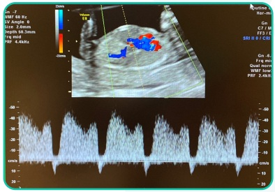
A Acompanhamento no pré-natal de rotina, com realização de ultrassonografia morfológica entre 20 e 24 semanas.
B Encaminhar para a maternidade para controle diário da vitalidade fetal e resolução a partir de 23 semanas.
C Acompanhamento no pré-natal de alto risco, amniocentese a partir de 15 semanas para cariótipo fetal, ecocardiograma fetal, ultrassom morfológico entre 20 e 24 semanas.
D Acompanhamento no pré-natal de alto risco, cordocentese para cariótipo fetal, ultrassonografia semanal com Dopplervelocimetria da artéria cerebral média.
Questão 87 · Obstetrícia · 4000195015Gestante 3G2PC vem à primeira consulta de pré-natal preocupada após realizar ultrassonogra a obstétrica evidenciando gestação trigemelar. As imagens ultrassonográ cas estão expostas a seguir. Sobre essa gestação, é possível afirmar:

A A gestação é trizigótica.
B A complicação mais temida é o entrelaçamento de cordões.
C A gestação é dicoriônica e triamniótica.
D Os fetos são idênticos.
Revisar: possível letra faltando em enunciado
Questão 88 · Obstetrícia · 4000195014Gestante 2G1PN por óbito fetal com 30 semanas vem ao ambulatório realizar ultrassonogra a obstétrica com Doppler com 8 semanas. Na ultrassonogra a, feto apresenta peso de 1.030 g (< percentil 3), ILA 10 cm, Doppler conforme as imagens a seguir. Cardiotocografia com feto reativo. A conduta deve ser:

A Avaliação semanal da vitalidade fetal e resolução se ducto venoso alterado ou diástole reversa da artéria umbilical, centralização de fluxo fetal, oligoâmnio ou cardiotocografia alterada.
B Corticoterapia e resolução da gestação após 48 horas.
C Resolução imediata da gestação por cesariana.
D Corticoterapia, avaliação diária da vitalidade fetal e resolução se ducto venoso alterado, diástole reversa da artéria umbilical, cardiotocografia ou perfil biofísico alterado.
Questão 89 · Obstetrícia · 4000194639Uma mulher com 20 anos foi atendida pela equipe de triagem de uma unidade de saúde da família, trazendo teste de gravidez de farmácia positivo. O médico que a atende, após anamnese completa e exame clínico, classifica-a como gestante de baixo risco e solicita testes rápidos para hepatite B e C, sí lis e HIV. Os resultados de todos os exames, exceto o de sí lis, são negativos. A paciente refere que apresentou o mesmo teste positivo há 1 ano, quando internou no hospital por conta de um abortamento espontâneo, recebendo uma injeção ainda no hospital, mas não voltou à USF desde então. Refere que seu parceiro atual não é o mesmo de 1 ano atrás. Após explicar a situação para a paciente, o médico:
A solicita VDRL, prescreve para a paciente penicilina benzatina 2,4 milhões UI, 1x por semana por 3 semanas, testa e trata as parcerias sexuais, notifica a vigilância epidemiológica e realiza VDRL mensalmente após o tratamento.
B solicita FTA-ABS e VDRL, prescreve para a paciente penicilina benzatina 2,4 milhões UI, 1x por semana por 3 semanas, testa e trata as parcerias sexuais, notifica a vigilância epidemiológica e realiza VDRL mensalmente após o tratamento.
C solicita VDRL, prescreve para a paciente penicilina benzatina 2,4 milhões UI, dose única, testa e trata o parceiro atual, notifica a vigilância epidemiológica e realiza VDRL e FTA-ABS mensalmente após o tratamento.
D solicita FTA-ABS e VDRL, prescreve para a paciente penicilina benzatina 2,4 milhões UI, 1x por semana por 2 semanas, testa e trata as parcerias sexuais, notifica a vigilância epidemiológica e realiza VDRL mensalmente após o tratamento.
Questão 90 · Obstetrícia · 4000194638Primigesta, com 25 anos, foi encaminhada pela unidade de saúde da família para o ambulatório de alto risco po r gestação gemelar monocoriônica e diamniótica d e 1 2 semanas. A paciente nega queixas e nega comorbidades. Durante a consulta, apresenta útero à 16 cm da sín se púbica, batimentos cardíacos fetais audíveis, pressão arterial de 110 x 60 mmHg, peso de 85 kg, altura de 1.60 m. A conduta a ser adotada nessa consulta, a fim de diminuir os riscos dessa gestação, é a prescrição de:
A progesterona 200 mg, 1x ao dia, via vaginal.
B progesterona 200 mg, 1x ao dia, via vaginal, e ácido acetilsalicílico 100 mg, uma vez ao dia, via oral.
C ácido acetilsalicílico 100 mg, uma vez ao dia, via oral.
D ácido acetilsalicílico 100 mg, uma vez ao dia, via oral, e enoxaparina 1 mg/kg, duas vezes ao dia, via subcutânea.
Questão 91 · Obstetrícia · 4000194637Uma primigesta com 26 anos comparece à unidade de saúde da família (USF) apresentando os resultados de exames solicitados na primeira consulta de pré-natal, realizada há 2 semanas, com 12 semanas de gestação. Nega queixas, refere estar usando regularmente o ácido fólico e o sulfato ferroso prescritos. O médico verifica que a tipagem sanguínea é O negativa, que os testes rápidos para sí lis, HIV e hepatite B e C foram não reagentes e que todos os outros exames estão dentro da normalidade. Nesse caso, a conduta a ser adotada é:
A solicitar Coombs indireto, tipagem sanguínea do pai do feto, realizar imunoglobulina anti-Rh com 28 semanas se o Coombs indireto for negativo e em até 72h pós-parto se o recém-nascido for Rh positivo.
B solicitar Coombs direto, tipagem sanguínea do pai do feto, realizar imunoglobulina anti-Rh com 28 semanas se o Coombs direto for negativo e em até 72h pós-parto se o recém-nascido for Rh positivo.
C solicitar Coombs indireto, tipagem sanguínea do pai do feto, realizar imunoglobulina anti-Rh em até 72h pós-parto se o Coombs indireto for negativo e o recém-nascido for Rh negativo.
D solicitar Coombs direto, tipagem sanguínea do pai do feto, realizar imunoglobulina anti-Rh em até 72h pós-parto se o Coombs direto for negativo e o recém-nascido for Rh positivo.
Questão 92 · Obstetrícia · 4000194636Uma paciente com 35 anos apresenta sangramento vaginal intenso, 6h após cesariana de urgência por descolamento prematuro de placenta. Refere ser hipertensa crônica em uso de metildopa durante a gestação. Ao exame físico, apresenta-se: em regular estado geral; orientada; com frequência cardíaca de 120 batimentos por minuto; pressão arterial de 90 x 60 mmHg; à ausculta cardíaca, com ritmo cardíaco regular em dois tempos, bulhas hipofonéticas, sem sopros; à ausculta pulmonar, com murmúrios vesiculares sem ruídos adventícios. O exame do abdome da paciente evidencia útero amolecido e palpável a 8 cm acima da cicatriz umbilical. Ferida operatória com boa aparência. Realizada ocitocina endovenosa e massagem uterina bimanual, sem melhora do quadro. A conduta preconizada, nesse momento, é:
A ringer lactato 1.000 mL endovenoso, transfusão de hemoconcentrado de hemácias, ácido tranexâmico endovenoso 1 g e ergotamina intramuscular 0,2 mg
B transfusão de hemoconcentrado de hemácias e misoprostol via retal 800 μg.
C ácido tranexâmico endovenoso 1 g, ergotamina intramuscular 0,2 mg e misoprostol via retal 800 μg.
D ringer lactato 1.000 mL endovenoso, transfusão de hemoconcentrado de hemácias, ácido tranexâmico endovenoso 1 g e misoprostol via retal 800 μg.
Questão 93 · Obstetrícia · 4000194635Uma mulher com 30 anos de idade, primigesta, na 39ª semana de gestação, deu entrada na maternidade com queixa de dores em baixo ventre há cerca de duas horas. Ao exame físico, apresentava dinâmica uterina de três contrações de 30 segundos em 10 minutos, batimentos cardíacos fetais de 140 bpm, colo uterino pérvio para 4 c m e c o m esvaecimento d e 80% . O resultado d a cardiotocogra a apresentou padrão tranquilizador. A imagem a seguir apresenta partograma com a evolução do quadro da parturiente. As informações apresentadas indicam a ocorrência de:

A período pélvico prolongado.
B parada secundária da dilatação.
C parada secundária da descida.
D fase ativa prolongada.
Questão 94 · Obstetrícia · 4000194609Paciente G2P1CA0, IG 20s4d, traz resultado de colpocitologia oncótica com “Lesão intraepitelial de alto grau”. Foi submetida a colposcopia com biópsia com resultado de NIC 3/LIEAG (lesão intraepitelial de alto grau). Qual a conduta?
A Excisão de zona de transformação.
B Cesareana eletiva com 39 semanas + histerectomia.
C Repetir citologia a cada 6 semanas e tratar apenas pós-parto.
D Repetir colposcopia a cada 6 semanas e tratar apenas pós-parto.
Questão 95 · Obstetrícia · 4000194608Paciente gestante de 15 semanas tem diagnóstico de câncer de colo uterino estadiamento 1A1, com desejo de manutenção da gestação. Qual deve ser a sua conduta?
A Adiar o tratamento até o pós-parto.
B Quimioterapia neoadjuvante.
C Conização clássica.
D Histerectomia com útero cheio.
Questão 96 · Obstetrícia · 4000194607Paciente de 24 anos, primigesta, vem à primeira consulta de pré-natal trazendo ultrassonogra a realizada há 1 semanas mostrando gestação tópica, gemelar dicoriônica e diamniótica de 12 semanas. Paciente nega comorbidades. Nesse caso, é necessário
A Orientar o uso de progesterona vaginal para diminuir o risco de prematuridade.
B Orientar o uso de ferro endovenoso para evitar anemia ferropriva.
C Orientar a realização de cerclagem uterina entre 12 e 16 semanas para reduzir o risco de prematuridade.
D Orientar o uso de AAS para diminuir o risco de pré-eclâmpsia.
Questão 97 · Obstetrícia · 4000194606No que se refere à indução do trabalho de parto em pacientes com óbito fetal de 32 semanas, assinale a alternativa correta.
A Se a paciente apresenta cesariana anterior e colo impérvio, está contraindicada a realização de indução do parto em decorrência do risco de rotura uterina.
B Para maturação cervical pode ser utilizado o método de Krause (Balão cervical).
C Se o índice de Bishop for maior do que 6, está indicado o uso de misoprostol 25 mcg via vaginal.
D O uso da ocitocina está contraindicado em decorrência do embolia amniótica.
Questão 98 · Obstetrícia · 4000194605Gestante, primigesta, 14 semanas, vem a consulta de pré-natal trazendo exames solicitados na primeira consulta: glicemia de jejum de 140 mg/dl. Nega doenças prévias. Considerando a disponibilidade técnica adequada, a melhor conduta essa paciente deve ser
A Solicitar hemoglobina glicada para avaliar a necessidade de insulinoterapia.
B Solicitar teste oral de tolerância à glicose com 75g imediatamente para confirmar o diagnóstico de diabetes mellitus.
C Orientar dieta, exercício físico, controle glicêmico e insulinoterapia.
D Orientar dieta, exercício físico, controle glicêmico e insulinoterapia.
Questão 99 · Obstetrícia · 4000194604Gestante, 34 anos, 4G2PN1A, vem à primeira consulta de pré-natal com 10 semanas. Refere ser portadora do vírus HIV, mas atualmente não está utilizando terapia antirretroviral. Traz carga viral indetectável realizada há 6 meses. Nesse caso, visando reduzir os riscos de transmissão vertical do HIV, é correto afirmar que
A Deve-se iniciar imediatamente o uso de tenofovir, lamivudina e dolutegravir.
B Deve-se solicitar carga viral, contagem de CD4 e genotipagem para avaliar a necessidade de terapia antirretroviral.
C Deve-se aguardar 12 semanas para iniciar o uso de tenofovir, lamivudina e dolutegravir.
D Como a carga viral é indetectável, não há necessidade de terapia antirretroviral durante a gestação.
Questão 100 · Obstetrícia · 4000194603Gestante, 3G2PN, 32 anos, 39 semanas, chega ao pronto socorro no período expulsivo do trabalho de parto. O parto vaginal ocorreu ainda na sala de admissão. Após saída da placenta, puérpera apresentou sangramento vaginal intenso e obstetra inicia massagem uterina bimanual e solicita a aplicação de ocitocina endovenosa, sem melhora do sangramento vaginal. Após as medidas iniciais, o útero estava contraído e abaixo da cicatriz umbilical. Neste caso, a próxima conduta deve ser
A Ergotamina intramuscular
B Misoprostol via retal
C Revisão do canal de parto
D Curetagem uterina
Questão 101 · Obstetrícia · 4000194602M.S.C, 35 anos, G2 P1C, vem à maternidade com 41 semanas em fase ativa de trabalho de parto. Foi observado bradicardia fetal durante o acompanhamento da vitalidade fetal. Realizado cardiotocogra a que mostrou bradicardia sustentada. Logo em seguida apresentou dor abdominal súbita, lancinante e interrupção das contrações. Ao exame físico: FC = 125 bpm, PA = 80 x 40mmHg, FR = 30 irpm. Atividade uterina ausente. Não foi evidenciado sangramento vaginal. No toque vaginal não foi possível sentir a apresentação fetal. Qual o diagnóstico e conduta adequados?
A Descolamento prematuro de placenta, amniotomia e cesárea de urgência.
B Rotura de aneurisma aórtico, laparotomia de urgência.
C Rotura uterina, cesariana de urgência.
D Embolia amniótica, anticoagulação plena.
Questão 102 · Obstetrícia · 4000194601F.M.D., 24 anos, 41 semanas e um dia de gestação, G2 P1C, encaminhada para a maternidade para resolução da gestação. Nega intercorrências. Ao exame físico: PA = 110 x 76mmHg, altura uterina de 36 cm, BCF = 154bpm, apresentação cefálica, colo dilatado 4 cm, esvaecido 60%, altura da apresentação no plano zero De Lee, colo amolecido e medianizado, dinâmica ausente, bolsa íntegra. Qual a conduta para esse caso?
A Preparo de colo uterino com misoprostol via vaginal a cada seis horas.
B Indução do trabalho de parto com ocitocina endovenosa em bomba de infusão.
C Amniotomia seguida de ocitocina endovenosa em bolus.
D Preparo de colo uterino com Sonda Foley.
Questão 103 · Obstetrícia · 4000194600R.M.S, 32 anos, submetida à cesariana há 5 dias, por desproporção cefalopélvica. Vem a maternidade pois apresenta febre há 1 dia. Ao exames: T =39 graus, PA = 110x80 mmHg, FC = 93 bpm, útero doloroso a palpação, acima da cicatriz umbilical. Especular sem loquiação, toque vaginal com útero doloroso à mobilização. Qual deve ser a conduta para esse caso?
A Internação hospitalar, clindamicina e gentamicina endovenosas.
B Internação hospitalar, ultrassom transvaginal e analgésico endovenoso.
C Observação clínica, cefalexina oral e analgésico endovenoso.
D Acompanhamento ambulatorial, cefalexina e analgésico oral.
Questão 104 · Obstetrícia · 4000194599A.A.C, 22 anos, primigesta, 32 semanas de gestação, vem ao pronto socorro com cefaleia e náuseas. Ao exame: edema de face e mãos, PA = 170x110 mmHg. AU = 29 cm, BCF = 144 bpm, dinâmica uterina ausente e boa movimentação fetal. Foi solicitada a transferência da gestante para Maternidade de Referência e administrado sulfato de magnésio (dose de ataque). Após 20 minutos, a ambulância para a transferência chegou e a paciente mantinha PA = 160x110 mmHg. A conduta nesse momento é:
A Prescrever nifedipina, 10 mg, via oral e transferir a gestante.
B Repetir a dose de ataque de sulfato de magnésio e transferir a gestante.
C Suspender a transferência até que a PA se estabilize.
D Prescrever metildopa 500 mg, via oral e transferir a gestante.
Questão 105 · Obstetrícia · 4000194598L.B.N, Gestante 39 semanas, G2P1N, portadora de HIV há 2 anos, com seguimento adequado em uso de terapia antirretroviral (TARV) com carga viral indetectável na 34ª semana. Queixa de perda de líquido há 2 horas e contrações. Ao exame: 6 cm de dilatação, esvaecimento de 80%, com saída de líquido claro com grumos, apresentação cefálica, BCF = 145 bpm. A conduta para esse caso é:
A Aguardar o parto vaginal, manter a TARV, não administrar AZT endovenoso.
B Aguardar o parto vaginal e administrar AZT endovenoso, pelo menos três horas antes do parto até o clampeamento do cordão.
C Realizar parto cesariana e administrar AZT endovenoso, pelo menos três horas antes do parto até o clampeamento do cordão.
D Realizar parto cesariana, manter a TARV e não administrar AZT endovenoso.
Questão 106 · Obstetrícia · 4000194597Gestante, primigesta, 35 anos, idade gestacional de 30 semanas pela ultrassonogra a de 9 semanas, vem a consulta de pré-natal de rotina. Ao exame apresenta PA 120/70 mmHg, AU 26 cm, BCF 150 bpm, DU ausente, MF presente. A conduta adequada para esse caso é
A Retorno em uma semana.
B ultrassonografia obstétrica.
C ultrassonografia morfológica.
D cardiotocografia anteparto.
Questão 107 · Obstetrícia · 4000194596Os sinais e sintomas que indicam pré-eclâmpsia grave podem ser alterações clínicas, laboratoriais ou ultrassonográficas. Dentre os achados a seguir, o que não configura sinal de gravidade na pré-eclâmpsia é
A Cefaleia não responsiva ao tratamento.
B Proteinúria > 5g em 24h.
C PA ≥ 160/110 mmHg.
D Diástole ausente da artéria umbilical.
Questão 108 · Obstetrícia · 4000194595Primigesta, 28 anos, idade gestacional de 20 semanas, realiza ultrassonogra a transvaginal com medida do colo uterino de 18 mm. Essa gestante deve ser orientada a:
A Repetir ultrassonografia em 2 semanas.
B Realizar cerclagem uterina.
C Usar progesterona vaginal.
D Colocar pessário uterino.
Questão 109 · Obstetrícia · 4000194594G2P1(Cesariana), com idade gestacional de 41 semanas, vem a maternidade encaminhada do pré-natal. Nega queixas. Ao exame apresenta BCF 140 bpm, AU 36 cm, DU ausente, TV com colo G\P\1cm, cefálico, bolsa integra. A conduta para essa gestante é
A Cesariana.
B Maturação cervical com balão de foley.
C Indução do parto com ocitocina.
D Dopplervelocimetria obstétrica a cada 2 dias.
Questão 110 · Obstetrícia · 4000194593Primigesta, 39 semanas, vem à maternidade com queixa de contrações fortes há 4 horas. Ao ser examinada, observa-se que a gestante está na fase ativa do trabalho de parto, com 7 cm de dilatação. Paciente evoluiu rapidamente para o período expulsivo. Qual a conduta recomendada nessa fase do trabalho de parto?
A Realizar episiotomia quando a cabeça fetal começar a abaular o períneo.
B Orientar a paciente a ficar na posição ginecológica.
C Fazer antissepsia e colocar campos estéreis.
D Realizar a ausculta dos batimentos cardíacos fetais a cada 5 min.
Questão 111 · Obstetrícia · 4000194592Primigesta, 13 semanas, vem ao retorno da primeira consulta de pré-natal trazendo os exames solicitados na primeira consulta: Tipagem sanguínea A positivo, glicemia de jejum 85 mg/dl, hemoglobina 12,8 mg/dl, hematócrito 38%, urocultura negativa, VDRL não reagente, sorologia para toxoplasmose IgG positivo e IgM negativo, HIV não reagente, HbsAg não reagente, anti-HBs reagente, anti-HCV não reagente. A conduta para essa gestante deve ser:
A Orientar medidas de prevenção de toxoplasmose.
B Solicitar teste oral de tolerância à glicose 75g entre 24 e 28 semanas.
C Realizar vacina de hepatite B.
D Solicitar tipagem sanguínea do parceiro.
Questão 112 · Obstetrícia · 4000194591Uma mulher com 20 anos, foi atendida pela equipe de triagem de uma unidade de saúde da família, trazendo teste de gravidez de farmácia positivo. O médico que a atende, após anamnese completa e exame clínico, classifica-a como gestante de baixo risco e solicita testes rápidos para hepatite B e C, sí lis e HIV. Os resultados de todos os exames, exceto o de sí lis, são negativos. A paciente refere que apresentou o mesmo teste positivo há 1 ano, quando internou no hospital por conta de um abortamento espontâneo, recebendo uma injeção ainda no hospital, mas não voltou à USF desde então. Refere que seu parceiro atual não é o mesmo de 1 ano atrás. Após explicar a situação para a paciente, o médico
A Solicita VDRL, prescreve para a paciente penicilina benzatina 2,4 milhões UI, 1x por semana por 3 semanas, testa e trata as parcerias sexuais, notifica à vigilância epidemiológica e realizar VDRL mensalmente após o tratamento.
B Solicitar FTA-ABS e VDRL, prescrever para a paciente penicilina benzatina 2,4 milhões UI, 1x por semana por 3 semanas, testar e tratar as parcerias sexuais, notificar à vigilância epidemiológica e realizar VDRL mensalmente após o tratamento.
C Solicita VDRL, prescrever para a paciente penicilina benzatina 2,4 milhões UI, dose única, testar e tratar o parceiro atual, notificar à vigilância epidemiológica e realizar VDRL e FTA-ABS mensalmente após o tratamento.
D Solicita FTA-ABS e VDRL, prescrever para a paciente penicilina benzatina 2,4 milhões UI, 1x por semana por 2 semanas, testar e tratar as parcerias sexuais, notificar à vigilância epidemiológica e realizar VDRL mensalmente após o tratamento.
Questão 113 · Obstetrícia · 4000194590Primigesta, com 25 anos, foi encaminhada pela unidade saúde da família para o ambulatório de alto risco por gestação gemelar monocoriônica e diamniótica de 12 semanas. A paciente nega queixas e nega comorbidades. Durante a consulta, apresenta útero à 16 cm da sín se púbica, batimentos cardíacos fetais audíveis, pressão arterial de 110 x 60 mmHg, peso de 85kg, altura de 1.60m. A conduta a ser adotada nessa consulta, a fim de diminuir os riscos dessa gestação é a prescrição de
A Progesterona 200 mg, 1x vezes ao dia, via vaginal.
B Progesterona 200 mg, 1x vezes ao dia, via vaginal e ácido acetilsalicílico 100 mg, uma vez ao dia, via oral.
C ácido acetilsalicílico 100 mg, uma vez ao dia, via oral.
D ácido acetilsalicílico 100 mg, uma vez ao dia, via oral e enoxparina 1 mg/kg, duas vezes ao dia, via subcutânea.
Questão 114 · Obstetrícia · 4000194589Uma paciente com 35 anos apresenta sangramento vaginal intenso, 6h após cesariana de urgência por descolamento prematuro de placenta. Refere ser hipertensa crônica em uso de metildopa durante a gestação. Ao exame físico, apresenta-se: em regular estado geral; orientada, com frequência cardíaca de 120 batimentos por minuto; pressão arterial de 90 x 60 mmHg; à ausculta cardíaca, com ritmo cardíaco regular em dois tempos, bulhas hipofonéticas, sem sopros; à ausculta pulmonar, com murmúrios vesiculares sem ruídos adventícios. O exame do abdome da paciente evidencia útero amolecido e palpável 8 cm acima da cicatriz umbilical. Feriada operatória com boa aparência. Realizado ocitocina endovenosa e massagem uterina bimanual, sem melhora do quadro. A conduta preconizada nesse momento é
A Ringer lactato 1.000 ml endovenoso, transfusão de hemoconcentrado de hemácias, ácido tranexâmico endovenoso 1g e ergotamina intramuscular 0,2 mg.
B Transfusão de hemoconcentrado de hemácias e misoprostol via retal 800 mcg.
C Ácido tranexâmico endovenoso 1g, ergotamina intramuscular 0,2 mg e misoprostol via retal 800 mcg.
D Ringer lactato 1.000 ml endovenoso, transfusão de hemoconcentrado de hemácias, ácido tranexâmico endovenoso 1g e misoprostol via retal 800 mcg.
Questão 115 · Obstetrícia · 4000194588Secundigesta, 35 anos, 28 semanas de gestação, relatando aumento dos níveis pressóricos há 1 semana. Paciente nega queixas ou comorbidades. Ao exame: BEG, edema +2/4, corada, PA 145 x 90 mmHg, confirmado após 4 horas. Realizado proteinúria de ta reagente +2. Qual deve ser a conduta para essa gestante?
A Prescrever metildopa e encaminhar a paciente para a maternidade para realizar exames laboratoriais e de vitalidade fetal para afastar situação de gravidade. Na ausência de situação de gravidade, encaminhar para acompanhamento ambulatorial no pré-natal de alto risco.
B Solicitar exames laboratoriais, ultrassom obstétrico com Doppler ambulatorialmente e orientar retorno em 15 dias com exames.
C Prescrever metildopa, solicitar exames laboratoriais e de vitalidade para serem realizados ambulatorialmente e encaminhar a paciente acompanhamento ambulatorial no pré-natal de alto risco.
D Internar a paciente, prescrever metildopa e corticoide e programar resolução da gestação em 48 horas.
Questão 116 · Obstetrícia · 4000194587Mulher de 39 anos de idade, 24 semanas de gestação, IIGIPN, comparece a consulta de pré-natal referindo nódulo na mama direita. Ao exame físico observa-se nódulo de 1,0 cm, indolor, endurecido, de limites mal definidos, localizado no quadrante súperolateral direito. Apresenta linfonodo axilar à direita endurecido. Foi submetida a biópsia por agulha grossa com resultado de carcinoma ductal invasivo, grau histológico III. Qual é a conduta indicada para este caso?
A Iniciar quimioterapia neoadjuvante e realizar a cirurgia após o parto.
B Realizar quadrantectomia e linfonodo sentinela seguido de radioterapia.
C Realizar quadrantectomia e esvaziamento axilar seguido de quimioterapia.
D Realizar mastectomia e esvaziamento axilar seguido de quimioterapia.
Questão 117 · Obstetrícia · 4000194586Puérpera, com parto há 20 dias, comparece a consulta referindo dor na mama direita. Ao exame físico observa-se mamas túrgidas, brilhantes e edemaciadas. Qual é a conduta indicada para este caso?
A Compressas de água fria, orientação para a correta técnica de amamentação e esvaziamento completo das mamas e prescrição de analgésicos.
B Compressas de água quente, interrupção da amamentação, prescrição de analgésicos.
C Compressas de água fria, orientação para a correta técnica de amamentação e esvaziamento completo das mamas e prescrição de analgésicos e antibióticoterapia.
D Compressas de água fria, orientação para a correta técnica de amamentação e esvaziamento completo das mamas e prescrição de analgésicos e antibióticoterapia, drenagem de abscesso.
Questão 118 · Obstetrícia · 4000194585Gestante de 35 semanas, refere saída de “leite” das suas mamas. Este acontecimento se refere à:
A Mamogênese
B Lactogênese I
C Lactogênese II
D Lactogênese III
Questão 119 · Placenta · Obstetrícia · Obstetrícia f isiológica · 4000194584Segundo a produção hormonal pela placenta, responda a alternativa correta.
A O hormônio tireotrófico coriônico apresenta concentrações maiores durante o primeiro trimestre e é semelhante ao TSH hipofisário, porém é mais potente que o TSH hipofisário.
B O hormônio liberador de corticotrofina (CRH) é responsável por estimular a síntese de prostaglandinas pela placenta e atua como vasodilatador na circulação uteroplacentária.
C A gonadotrofina coriônica humana (hCG) é uma glicoproteína de suas subunidades (alfa e beta) produzida pelo citotrofoblasto.
D A principal função do hormônio lactogênio placentário (hLP) é diminuir a resistência periférica à insulina.
Questão 120 · Modif icações f isiológicas da gestação · Modif icações sistêmicas · Sistema respiratório · 4000194583Dentre as modi cações siológicas na gestação estão as modi cações do sistema respiratório. Assinale a alternativa correta.
A Não há alteração do volume-minuto, já que a frequência respiratória não se altera durante a gestação.
B A capacidade inspiratória está aumentada durante a gestação devido ao volume corrente.
C O volume residual fica inalterado na grávida.
D A capacidade pulmonar total encontra-se diminuída porque a elevação do diafragma reduz o volume residual na grávida.
Questão 121 · Obstetrícia · 4000194582Primigesta com 10 semanas de gestação, comparece no pronto atendimento com náuseas e vômitos. Está em uso de nausedrona diária. Refere que perdeu peso, de 63 kilos para 58 kilos, desde o início da gestação. De acordo com esse quadro clínico, qual o desequilíbrio hidroeletrolítico mais comum e a conduta.
A Alcalose metabólica hipoclorêmica, internação, jejum, hidratação e correção do distúrbio hidroeletrolítico.
B Acidose metabólica hiperclorêmica, realizar hidratação e alterar o antiemético para outra classe de drogas como a meclizina ambulatorial.
C Acidose metabólica hiperclorêmica, internação, jejum hidratação e correção do distúrbio hidroeletrolítico.
D Alcalose metabólica hiperclorêmica, internação, dieta leve e correção do distúrbio hidroeletrolítico.
Questão 122 · Obstetrícia · 4000194581Existem vacinas indicadas nas gestantes em situações especiais ou em surtos epidêmicos. Assinale qual a vacinação considerada indicada nesses casos
A HPV
B Hepatite B
C dTpa
D Raiva humana
Questão 123 · Obstetrícia · 4000194580A cirurgia bariátrica é considerada segura, mas requer cuidados pré-concepção. Sabendo dos riscos na pré- concepção, assinale a alternativa incorreta.
A Deve-se evitar engravidar no 1º ano apo
B As mulheres obesas sa
C A cirurgia em y de Roux deve ser realizada a suplementação de vitamina B12, ferro, cálcio e tiamina.
D A cirurgia bariátrica aumenta o risco de complicac
Questão 124 · Obstetrícia · 4000194579Primigesta, com gravidez desejada de 7 semanas, confirmada por beta-hCG sanguíneo, comparece com queixa de sangramento vaginal e desconforto abdominal. Foi solicitado ultrassonogra a que diagnosticou uma gestação ectópica tubária à direita, íntegra com diâmetro de 10mm, BCF ausente. Foi solicitado beta-hCG quantitativo a cada 48 horas que evoluiu com os valores abaixo: Qual a melhor conduta neste caso:
A Conduta medicamentosa com metotrexato 50mg/m² intramuscular
B Conduta expectante
C Laparoscopia com salpingostomia
D Laparotomia com salpingectomia
Questão 125 · Obstetrícia · 4000194578Gestante, com atraso menstrual para 8 semanas, comparece no pronto-socorro com queixa de náuseas e vômitos, mal-estar e com sensação de batedeira. Como havia radiologista no local, foi realizado um ultrassom que demostrou a seguinte imagem: Diante dessa imagem e do quadro clínico, qual a conduta mais adequada para essa paciente?

A Realizar conduta expectante para abortamento espontâneo por 2 a 4 semanas e controle ultrassonográfico.
B Indicar internação imediata, aspiração do conteúdo com AMIU e fazer o seguimento semanal ou quinzenal com hCG.
C Indicar ressonância magnética para avaliar invasão por acretismo placentário.
D Indicar antibioticoterapia e curetagem devido aborto infectado com clindamicina e gentamicina endovenoso.
Questão 126 · Obstetrícia · 4000194577Em relação a medida realizada na pelvimetria da figura abaixo, responda a alternativa correta.
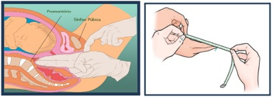
A A conjugata diagonalis é avaliada é o diâmetro verdadeiro que o feto vai passar, e por isso considerado a conjugata de maior importância.
B A conjugata obstétrica é calculada pela conjugata diagonalis menos 1,5 cm.
C A conjugata diagonalis é a distância entre o promontório e a borda posterior da sínfise púbica.
D A conjugata exitus é a distância aumento do diâmetro da borda superior da sínfise púbica ao cóccix, através da retropulsão.
Questão 127 · Obstetrícia · 4000194576Sobre a utilização do sulfato de magnésio no trabalho de parto prematuro, assinale a alternativa correta.
A Ela está indicada nas gestantes com idade gestacional menor que 34 semanas.
B Ela está indicada como primeira conduta no início do trabalho de parto prematuro para assegurar a neuroproteção fetal.
C Deve ser evitada a sua associação com a nifedipina.
D Está indicado apenas nas pacientes hipertensas gestacionais que apresentam trabalho de parto prematuro menores que 32 semanas.
Questão 128 · Obstetrícia · 4000194575Puérpera de parto vaginal evoluiu após 30 minutos com sangramento vaginal intenso e profuso visualizado extravasando pelo forro vaginal. Ao exame: pulso 110bpm, PA: 80x50 mmHg, FR: 20 irpm, Temp: 36ºC. Na palpação abdominal, observa-se útero contraído na cicatriz umbilical e ausência de lacerações vulvares, vaginais ou de colo uterino. IC: índice de choque Diante do quadro clínico acima, qual a sua conduta.
A Iniciar massagem uterina, ocitocina e ácido tranexâmico imediatamente; IC: 1,37 e indicar transfusão maciça de sangue.
B Iniciar misoprostol via retal; IC: 1,2 e avaliar necessidade de transfusão sanguínea.
C Avaliar restos placentários; IC: 1,37 e avaliar necessidade de transfusão sanguínea.
D Avaliar coagulopatias ou uso de anticoagulantes; IC: 1,2 e avaliar necessidade de transfusão sanguínea.
Questão 129 · Sangramento segunda metade da gestação · Intercorrências obstétricas obstetrícia patológica · 4000194574Obstetrícia Gestante secundigesta, com 1 parto cesariano anterior, realiza ultrassonogra a de rotina com 24 semanas e a área placentária descrita como na imagem pelo número 4. Para o planejamento do parto dessa paciente, oriente a melhor conduta.

A Deve-se manter a via obstétrica, de preferência parto vaginal devido 1 parto cesariana anterior. Realizar dequitação espontânea da placenta com ocitocina endovenosa 20UI profilática por 24 horas.
B Contraindicar o parto vaginal, realizar planejamento cirúrgico por parto cesariano com 38 semanas com remoção da placenta e curagem uterina rigorosa e ocitocina 20UI profilática.
C Realizar o parto cesariano com 40 semanas e realizar a dequitação sem curagem uterina.
D Indicar parto cesariano e programado a histerectomia puerperal com a placenta in loco entre 34 e 36 semanas.
Questão 130 · Obstetrícia · 4000194573Gestante quartigesta, com 3 partos cesarianos anteriores, com idade gestacional de 38 semanas, comparece na maternidade com queixa de dor súbita em baixo ventre e diminuição da movimentação fetal. Ao exame: pulso 108 bpm, PA: 90x50 mmHg, FR:20 irpm, temp: 36ºC. Além disso, apresenta na inspeção abdominal a imagem a seguir: Através da descrição do caso clínico, assinale a alternativa correta.
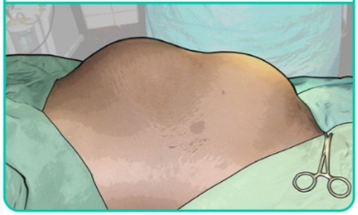
A Este é um quadro de descolamento prematuro de placenta, sendo indicado parto de preferência vaginal.
B Este é o sinal de Bandl-Frommel, um sinal de iminência de rotura uterina, sendo indicado parto cesariano imediato.
C Este é um sinal de rotura de vasa prévia, sendo indicado monitorização fetal contínua.
D Este é um sinal de contração uterina por parto taquitócito, sendo indicado suspender a ocitocina endovenosa e indicar a analgesia de parto.
Questão 131 · Obstetrícia · 4000194572Gestante diabética gestacional com controle glicêmico adequado com uso de insulina na gestação evoluiu para parto vaginal sem intercorrências. Descreva quais foram as orientações após o parto para essa gestante e dê o diagnóstico atual após o TOTG de 75g realizado 6 semanas após o parto.
A Foi mantido a insulina NPH até a realização do TOTG de 75g e o diagnóstico foi de diabetes mellitus.
B Foi mantido a insulina NPH após o parto e suspenso na alta hospitalar, e ao solicitar o TOTG de 75g foi diagnosticado como intolerância à glicose.
C Foi suspenso a insulina NPH após o parto, mantido o controle com glicemia capilar até a alta, e ao ser solicitado TOTG de 75g com 6 semanas após o parto, a paciente foi diagnosticada com diabetes mellitus.
D Foi suspenso a insulina NPH após o parto, mantido o controle com glicemia capilar até a alta, e ao ser solicitado TOTG de 75g com 6 semanas após o parto, a paciente foi diagnosticada com intolerância à glicose.
Questão 132 · Obstetrícia · 4000194571Secundigesta, 1 aborto anterior, 43 anos de idade, com 10 semanas de gestação, comparece para checar exames solicitados no seu pré-natal com TSH de 3,8 um/L. foi solicitado o anti-TPO maior que 600,0 UI/mL. Qual a conduta correta a ser tomada?
A Levotiroxina 50mcg por dia.
B Levotiroxina 1,6 mcg por kilo.
C Não deve ser tratada já que o TSH está normal.
D Levotiroxina 1,0 mcg por kilo.
Questão 133 · Obstetrícia · 4000194570Gestante com 17 semanas, comparece na maternidade com convulsão tônico-clônica generalizada que foi autolimitada e realizado proteção física, manutenção de vias aéreas e oxigenação. Qual a medicação de escolha no caso de crises convulsivas prolongadas ou repetidas?
A Lamotrigina
B Gabapentina
C Fenitoína
D Valproato de sódio
Questão 134 · Obstetrícia · 4000194569Primigesta com 32 semanas comparece para atendimento com queixa de prurido moderado nos braços, pernas e regiões palmoplantares não acompanhado por rash cutâneo. Após 3 semanas refere que cou com a pele levemente amarelada, com elevação de bilirrubinas, principalmente a bilirrubina direta e aumento de 10 vezes a fosfatase alcalina. Assinale a principal hipótese diagnóstica e o tratamento mais adequado.
A Pápulas e placas urticariformes da gravidez, observação clínica e corticoide tópico.
B Pré-eclâmpsia grave, internação e sulfato de magnésio.
C Pré-eclâmpsia grave, internação e sulfato de magnésio.
D Colestase gravídica, controle periódico da função hepatobiliar e fatores de coagulação e tratamento com ácido ursodesoxicólico (UDCA).
Questão 135 · Obstetrícia · 4000194568Puérpera de parto cesariano, retorna para atendimento 5 dias após parto cesariano com quadro de febre de 39,2ºC. Inicia tratamento com antibioticoterapia endovenosa com clindamicina e gentamicina, mas após 48 horas a febre continua. Foi solicitado tomogra a computadorizada com contraste com visualização de trombo sépticos em vasos menores e veia ovariana. Qual o diagnóstico e a conduta para essa paciente.
A Tromboflebite pélvica séptica, iniciar enoxaparina em doses plenas e manutenção da antibioticoterapia de amplo espectro.
B Tromboflebite pélvica séptica, indicar tratamento cirúrgico imediato.
C Tromboembolia pumonar, suspender antibioticoterapia e indicar enoxaparina em doses plenas.
D Infecção puerperal e aguardar por mais 48 horas. De mantido quadro febril deve-se trocar a antibioticoterapia guiada pela hemocultura.
Questão 136 · Obstetrícia · 4000194567A razão de mortalidade materna re ete a qualidade da atenção à saúde e as condições de acesso aos serviços para a população feminina em idade reprodutiva. Sobre a razão de mortalidade materna assinale a alternativa correta.
A É uma medida de risco de óbito da mulher, no período transcorrido desde que a se torna grávida até 42 dias após o término da gravidez.
B Utiliza como denominador o número de gestações ocorridas em período de um ano.
C Considera morte materna qualquer causa de morte relacionada ou agravada pela gravidez, ou por medidas em relação a ela, incluindo causas acidentais ou incidentais.
D É obtida dividindo-se o número de óbitos por causas ligadas à gestação, parto e puerpério, em uma certa área e período, pelo número de nascidos vivos no mesmo local e período, multiplicado por 1000.
Questão 137 · Obstetrícia · 4000194566Gestante, atendente de telemarketing, com 30 semanas e diagnóstico de placenta prévia, inicia quadro de sangramento vaginal de pequena quantidade. Foi internada para observação clínica e melhora dos sintomas. O médico indicou repouso relativo e afastamento de suas atividades laborais. Porém, paciente com medo de perder o emprego e precisando do salário, questiona se será reduzido. De acordo com as leis trabalhista, assinale a alternativa correta.
A A gestante poderá ser afastada para atendimento em outra atividade temporária, mas seu salário poderá ser reduzido em até 2/3.
B A gestante não poderá ser afastada ou readaptada temporária de seu cargo, se sua atividade inicial não for insalubre.
C A paciente não pode readaptada na gestação de forma temporária, ao menos que entre em acordo de redução transitória do salário.
D A gestante deverá ser afastada readaptada na gestação de forma temporária e deve ser imediatamente iniciada a licença-maternidade.
Questão 138 · Doenças associadas à gestação · Obstetrícia · 4000194565Paciente deseja comparece em consulta para programar sua primeira gestação. Está ansiosa porque apresenta diagnóstico de hipotireoidismo subclínico em uso de levotiroxina de 50 mcg. Trouxe exames recentes com TSH de 3,2 mU/L e anti-TPO positivo. Qual deve ser a conduta para essa paciente quanto a programação de sua gestação?
A Deve-se manter o nível de controle do TSH até 4,0 mU/L sem modificação da dose da levotiroxina.
B Deve-se manter o nível de TSH até 2,5 mU/L com aumento da dose da levotiroxina em 30%.
C Deve-se aumentar a levotiroxina para 100 mcg por dia e manter o TSH até 4,0 mU/L.
D Não se indica alterar a levotiroxina prévio a gestação se o TSH estiver menor que 4,0. Realizar o ajuste no primeiro trimestre da gestação.
Questão 139 · Obstetrícia · 4000194564Paciente 1G, 38 semanas, dá entrada no pronto-socorro com queixa de contrações regulares há 3 horas. A paciente apresenta estenose mitral moderada por doença reumática e não apresentou intercorrências na gestação. No exame obstétrico apresenta 3 contrações moderadas em 10 minutos, colo dilatado para 5 cm, médio e medianizado, apresentação cefálica e bolsa íntegra. Em relação à assistência ao parto dessa paciente, assinale a alternativa correta.
A Encaminhar a paciente para cesárea devido à contraindicação ao parto vaginal pela cardiopatia, devendo ser realizada profilaxia para endocardite.
B Manter a assistência ao parto vaginal, devendo iniciar ocitocina para acelerar o parto e realizar fórcipe de alívio ´para abreviação do período expulsivo.
C Encaminhar a paciente para analgesia imediatamente, manter a assistência ao parto e realizar profilaxia para endocardite.
D Solicitar avaliação cardiológica e ecocardiograma de urgência para definição da via de parto.
Questão 140 · Obstetrícia · 4000194563Segundo a OMS, a sepse materna é uma condição de ameaça à vida, secundária à disfunção dos órgãos decorrente da infecção durante a gestação, parto, puerpério e pós-aborto. O diagnóstico da sepse materna pode ser di cultado, pois alguns sinais e sintomas podem ser confundidos com alterações siológicas da gestação. Em relação a esse tema, assinale a alternativa correta.
A O uso do escore qSOFA (quick sequencial organ failure assessment) pode ser empregado em gestantes a fim de identificar as pacientes com maior risco de morte.
B Nos casos de choque séptico não é indicado o uso de noradrenalina pelo risco de redução do fluxo placentário pela vasoconstrição.
C A presença de plaquetas abaixo de 150.000 em gestantes sempre deve ser considerada como um critério de gravidade importante para na sepse.
D Os principais fatores de risco para sepse materna são: pesquisa positiva para Streptococcus do grupo B, rotura prematura de membranas ovulares e trabalho de parto prolongado.
Questão 141 · Obstetrícia · 4000194562Gestante de 8 semanas vem à sua primeira consulta de pré-natal. Ela está bastante preocupada, pois faz uso de amitriptilina para tratamento de depressão e leu que isso pode causar problemas para o bebê. A paciente encontra-se bem compensada de seus sintomas e está em uso dessa dose há 2 anos. Diante desse caso, qual alternativa apresenta uma conduta adequada.
A A medicação deve ser suspensa imediatamente por se tratar de medicação classe C e somente deve ser retomada ao final do primeiro trimestre.
B O obstetra deve fazer a substituição da amitriptilina por sertralina por se tratar de medicação mais segura em gestantes.
C A medicação deve ser mantida, devendo ser modificada caso haja recomendação por parte do psiquiatra.
D Como a paciente encontra-se assintomática, a medicação deve ser suspensa e deve ser iniciada psicoterapia. Caso os sintomas retornem, a paciente deve retormar o uso da medicação.
Questão 142 · Obstetrícia · 4000194561Gestante de 12 semanas de gestação realizou por conta própria uma pesquisa para trombo lias e em seu resultado apresenta uma mutação heterozigótica para metilenotetraidofolato redutase (MTHFR), com demais exames normais. Ela está com medo, pois leu que essa alteração aumenta o risco de trombose. Qual a conduta adequada em relação ao seguimento pré-natal dessa paciente?
A Tranquilizar a paciente e falar que não há aumento do risco de trombose nessas situações, devendo seguir o pré-natal regularmente.
B Deve ser iniciada anticoagulação profilática em função do aumento de risco de trombose venosa na gestação.
C Tal mutação, isoladamente, não confere aumento do risco de trombose, entretanto é recomendada a repetição dos exames de trombofilia durante a gestação.
D Apesar de não haver aumento do risco de trombose na gestação, existe aumento do risco de resultados gestacionais adversos, tais como pré-eclâmpsia, sendo indicado prescrever aspirina.
Questão 143 · Obstetrícia · 4000194560A morte materna é definida como a morte de uma mulher durante a gestação ou até 42 dias após o seu término, independente da duração ou da localização da gravidez, devida a qualquer causa relacionada ou agravada pela gravidez ou por medidas em relação a ela, exceto causas acidentais ou incidentais. A análise dos casos de morte materna em associação como os dados de morbidade materna grave e de near miss são fundamentais para a elaboração de medidas preventivas e corretivas. Em relação a essas avaliações, assinale a alternativa correta:
A O near miss materno é a situação em que uma mulher com uma complicação obstétrica extremamente grave acaba sobrevivendo.
B São consideradas situações de near miss materno: perda de consciência por 6 horas ou mais, frequência respiratória acima de 32 e PAM inferior a 60 mmHg.
C O dado empregado para avaliação da mortalidade materna é a razão de mortalidade materna que representa o número de óbitos a cada 1000 nascidos vivos.
D No Brasil, a principal causa de morte materna são as hemorragias relacionadas ao parto.
Questão 144 · Obstetrícia · 4000194534Paciente de 24 anos, primigesta, vem à primeira consulta de pré-natal trazendo ultrassonogra a realizada há 1 semana, mostrando gestação tópica, gemelar dicoriônica e diamniótica de 12 semanas. Paciente nega comorbidades. Nesse caso, é necessário:
A Orientar o uso de progesterona vaginal para diminuir o risco de prematuridade.
B Orientar o uso de ferro endovenoso para evitar anemia ferropriva.
C Orientar o uso de heparina de baixo peso molecular a fim de reduzir o risco de trombose.
D Orientar o uso de AAS para diminuir o risco de pré-eclâmpsia.
E Orientar a realização de cerclagem uterina entre 12 e 16 semanas para reduzir o risco de prematuridade.
Questão 145 · Obstetrícia · 4000194533No que se refere à indução do trabalho de parto em pacientes com óbito fetal, assinale a alternativa correta.
A Se a paciente apresenta cesariana anterior e colo impérvio, está contraindicada a realização de indução do parto em decorrência do risco de rotura uterina.
B Para maturação cervical, pode ser utilizado o método de Krause (Balão cervical).
C Se o índice de Bishop for maior do que 6, está indicado o uso de misoprostol 25 mcg via vaginal.
D O uso da ocitocina está contraindicado em decorrência da embolia amniótica.
E Caso o óbito tenha ocorrido há mais de 4 semanas, está contraindicada a indução do parto pelo maior risco de coagulopatias.
Questão 146 · Obstetrícia · 4000194532Gestante, primigesta, 14 semanas, vem à consulta de pré-natal trazendo exames solicitados na primeira consulta: glicemia de jejum de 140 mg/dl. Nega doenças prévias. Considerando a disponibilidade técnica adequada, a melhor conduta para essa paciente deve ser:
A Solicitar hemoglobina glicada para avaliar a necessidade de insulinoterapia.
B Solicitar teste oral de tolerância à glicose com 75g imediatamente, para confirmar o diagnóstico de diabetes
C Solicitar teste oral de tolerância à glicose com 75g entre 24 e 28 semanas de gestação.
D Orientar dieta, exercício físico e controle glicêmico.
E Orientar dieta, exercício físico, controle glicêmico e insulinoterapia.
Questão 147 · Obstetrícia · 4000194531Gestante, 34 anos, 4G2PN1A, vem à primeira consulta de pré-natal com 10 semanas. Refere ser portadora do vírus HIV, mas atualmente não está utilizando terapia antirretroviral. Traz carga viral indetectável realizada há 6 meses. Nesse caso, visando reduzir os riscos de transmissão vertical do HIV, é correto afirmar que:
A Deve-se iniciar imediatamente o uso de tenofovir, lamivudina e dolutegravir.
B Deve-se solicitar carga viral, contagem de CD4 e genotipagem para avaliar a necessidade de terapia antirretroviral.
C Deve-se aguardar 12 semanas para iniciar o uso de tenofovir, lamivudina e dolutegravir.
D Como a carga viral é indetectável, não há necessidade de terapia antirretroviral durante a gestação.
E Deve-se fazer carga viral a cada 4 semanas para avaliar a necessidade de terapia antirretroviral.
Questão 148 · Obstetrícia · 4000194530Gestante, 3G2PN, 32 anos, 39 semanas, chega ao pronto-socorro no período expulsivo do trabalho de parto. O parto vaginal ocorreu ainda na sala de admissão. Após saída da placenta, a puérpera apresentou sangramento vaginal intenso e o obstetra iniciou massagem uterina bimanual e solicitou a aplicação de ocitocina endovenosa, sem melhora do sangramento vaginal. Após as medidas iniciais, o útero estava contraído e abaixo da cicatriz umbilical. Nesse caso, a próxima conduta deve ser
A Ergotamina intramuscular
B Misoprostol via retal
C Revisão do canal de parto
D Curetagem uterina
E Balão de Bakri
Questão 149 · Ginecologia · Obstetrícia · 4000194485Sobre a doença inflamatória pélvica (DIP) é correto afirmar:
A parcerias sexuais dos últimos 2 meses antes do diagnóstico, sintomáticas ou não, devem ser tratadas empiricamente para infecção por
B em caso de pessoas que utilizam DIU, este deve ser removido imediatamente
C o tratamento ambulatorial de primeira opção é composto por ceftriaxona + doxiciclina
D em caso de DIP em gestante, contraindica-se o tratamento hospitalar, para diminuir a exposição da gestante a microrganismos multirresistentes
Questão 150 · Ginecologia · Obstetrícia · 4000194483Sobre a solicitação de ultrassonografia (USG) obstétrica em gestações de baixo risco, é correto afirmar:
A recomenda-se a realização de USG com 32 semanas para avaliação fetal próxima ao termo
B a USG obstétrica, quando realizada entre 18 e 20 semanas, tem alta sensibilidade para o diagnóstico de malformações fetais
C recomenda-se a realização de pelo menos uma USG morfológica ao longo do pré-natal, de preferência próximo às 24 semanas de gestação
D recomenda-se solicitar a USG quando há incerteza sobre a DUM, quando a gestante apresenta ciclos menstruais irregulares ou quando houver discrepância entre a altura uterina e a IG presumida.
Questão 151 · Ginecologia · Obstetrícia · 4000194482Sobre as doenças infecciosas durante a gravidez, pode-se afirma que:
A a vaginose bacteriana tem sido associada ao nascimento de crianças com baixo peso
B a ocorrência de síndrome da varicela congénita é a mais alta no Brasil, comparada com toxoplasmose e sífilis
C a infecção pelo vírus da rubéola, pode resultar em morte fetal, principalmente durante as últimas 16 semanas de gestação
D devido à baixa taxa de toxoplasmose congénita, atualmente não se recomenda a testagem durante as consultas de pré-natal de rotina
Questão 152 · Ginecologia · Obstetrícia · 4000194481Em relação à solicitação de exames complementares durante o climatério, é correto afirmar que:
A a solicitação de FSH e LH são fundamentais para a confirmação do climatério
B a densitometria óssea deve ser solicitada após 6 meses sem menstruação
C toda mulher no climatério deve seguir a orientação de realizar mamografia e ultrassonografia vaginal anualmente
D na maioria das vezes não é necessário solicitar exames complementares, sendo o diagnóstico predominantemente clínico
Questão 153 · Ginecologia · Obstetrícia · 4000194480A conduta correta após um primeiro resultado de um exame citopatológico do colo do útero com resultado de células escamosas atípicas de significado indeterminado, talvez não neoplásica (ASC-US) em uma mulher com 25 anos de idade é:
A encaminhar para biópsia
B encaminhar para colposcopia
C repetir o citopatológico em 3 anos
D repetir o citopatológico em 12 meses
Questão 154 · Ginecologia · Obstetrícia · 4000194479A elevação da pressão arterial anterior à gestação ou pressão arterial associada à idade gestacional de até 20 semanas e presente 12 semanas após o parto, é classificada como:
A hipertensão gestacional
B hipertensão crónica
C pré-eclâmpsia
D eclampsia
Questão 155 · Ginecologia · Obstetrícia · 4000194478Dentre as causas genéticas de amenorreia, podemos citar:
A sínéquias uterinas
B síndrome de Turner
C síndrome de Cushing
D exercício físico excessivo
Questão 156 · Ginecologia · Obstetrícia · 4000194476Um quadro de abortamento retido está adequadamente descrito por:
A gestação inviável em que não houve expulsão de nenhum produto da concepção, com ausência da abertura do colo do útero
B expulsão de todos os produtos da concepção, acompanhado por sangramento e dor
C sangramento genital de intensidade moderada com odor fétido, dor abdominal e febre
D expulsão parcial dos produtos da concepção acompanhado de dores intensas e colo do útero aberto
Questão 157 · Ginecologia · Obstetrícia · 4000194475Em relação à gravidez ectópica, é correto afirmar:
A tem a nuliparidade como maior fator de risco
B é diagnosticada através de histeroscopia diagnóstica
C devem ser abordadas com medicação abortiva assim que suspeitada
D cursa com implantação e desenvolvimento do embrião fora da cavidade endometrial
Questão 158 · Ginecologia · Obstetrícia · 4000194474O puerpério é o período que se inicia após o parto e dequitação da placenta e tem seus estágios correspondentes corretamente descritos por:
A imediato: 1° ao 20° dia
B tardio: 30 ao 45° dia
C remoto: além do 45° dia
D intermediário: 10° ao 20° dia
Questão 159 · Ginecologia · Obstetrícia · 4000194441Em relação ao fibroadenoma da mama, assinale a afirmativa
A É o tumor benigno mais frequente da mama da mulher.
B É rara sua associação com malignidade.
C É um tumor exclusivamente glandular.
D É mais comum no menacme.
Questão 160 · Ginecologia · Obstetrícia · 4000194440Durante a gestação, as alterações sofridas pelo organismo materno são profundas e multissistêmicas. A sua integração visa proporcionar as condições necessárias para o desenvolvimento fetal em equilíbrio com o sistema materno. As adaptações ocorrem em resposta a estímulos provenientes do feto. Sobre as modi cações adaptativas do organismo materno durante a gravidez, assinale a alternativa INCORRETA
A Pode ocorrer redução do peristaltismo intestinal pela ação miorrelaxante da progesterona.
B Pode ocorrer glicosúria e proteinúria pelo aumento do ritmo de filtração glomerular.
C Ocorre efeito hipoglicemiante materno pelo aumento sérico do hormônio lactogênio placentário.
D Ocorre aumento dos níveis séricos de colesterol LDL para esteroidogênese placentária.
Questão 161 · Ginecologia · Obstetrícia · 4000194439Paciente primigesta, gestação de 40 semanas e pré-natal sem intercorrências. Admitida às 6hs no centro obstétrico em fase ativa do trabalho de parto, colo 90% apagado, com dilatação de 5cm, DU=2/30”/10’. Apresentação cefálica, bolsa íntegra, BCF 140bpm, plano de De Lee -3, transverso à direita. Avaliação das 11h mostrou colo no central, permeável para 6cm, plano De Lee zero, transverso à direita, amniorrexe com líquido claro traçado cardiotocográ co tranquilizador. Às 13h, dilatação de 7cm, De Lee +1, occipito direito anterior. Às 15h apresentava 10cm de dilatação, De Lee +2, occipito púbico. Às 19h paciente está completamente exausta e ainda se encontra com 10cm, De Lee de +2, líquido meconial uido e BCF 100bpm, 4/40”/10”. Considerando o caso descrito, a conduta
A Parto vaginal operatório e indicação do uso de vácuo extrator.
B Parto vaginal operatório e indicação de fórceps de Simpson.
C Parto vaginal operatório e indicação de fórceps de Kieland.
D Parto operatório e indicação de cesariana de urgência.
Revisar: possível letra faltando em enunciado
Questão 162 · Ginecologia · Obstetrícia · 4000194438Paciente, 25 anos, primigesta, 28 semanas e 4 dias de gravidez, sem queixas, pré-natal em dia e exames normais. Até o momento ganhou 14kg. No cartão de pré-natal consta glicemia de jejum de 88mg/dl com 12 semanas. Traz o exame do teste de tolerância oral à glicose realizado há uma semana, com os seguintes resultados: • Glicemia de jejum de 97mg/dl. • Glicemia após 1 hora de dextrosol de 183mg/dl. • Glicemia após 2 horas de dextrosol 2 horas de 150mg/dl. Sobre o quadro exposto, é CORRETO afirmar que:
A O teste de tolerância oral à glicose é desnecessário caso a paciente gestante apresente valores de glicemia de jejum no primeiro trimestre inferiores a 92mg/dL.
B O fato de a gestante ser obesa e ter familiares com DM tipo 2 na família obriga à realização de teste de tolerância oral à glicose no primeiro trimestre.
C A melhor conduta nesse caso é realizar um segundo teste confirmatório, que poderá ser glicemia de jejum ou hemoglobina glicosilada.
D O diagnóstico da gestante é Diabetes Mellitus Gestacional (DMG) e a conduta inicial é orientação de dieta e prática de atividades físicas, tendo como base o teste de tolerância oral à glicose.
Questão 163 · Ginecologia · Obstetrícia · 4000194437Paciente de 36 anos, primigesta, obesa, IG de 26 semanas e 1 dia, apresenta no ultrassom feto com peso no percentil 2, artéria umbilical com diástole reversa e ducto venoso com onda A positiva. Considerando o caso descrito, assinale a alternativa que apresenta melhor conduta.
A CIUR estágio 1, acompanhamento semanal.
B CIUR estágio 2, acompanhamento 2x na semana.
C CIUR estágio 3, acompanhamento diário.
D CIUR estágio 4, parto.
Questão 164 · Ginecologia · Obstetrícia · 4000194436Paciente 17 anos, primigesta, IG 37 semanas e 2 dias, nega comorbidades. Dá entrada na maternidade com PA: 170x120mmHg, queixando cefaleia e epigastralgia. Informa movimentação fetal usual, nega perdas vaginais. Solicitado propedêutica HELLP, com resultado dentro da normalidade, exceto pela proteinúria positiva. De acordo com o quadro apresentado, assinale a
A Internação para controle da pressão com prescrição de metildopa, alta com seguimento ambulatorial após estabilidade dos níveis pressóricos.
B Prescrição de sulfato de magnésio para prevenção de eclampsia, hidralazina EV devido a níveis pressóricos e internação para parto, com via de parto obstétrica.
C Internação para cesariana imediata devido ao risco eminente de óbito fetal.
D Informação sobre a normalidade do quadro atual, prescrever anti-hipertensivo e dar alta da urgência.
Questão 165 · Ginecologia · Obstetrícia · 4000194434Paciente de 18 anos, nuligesta, comparece a consulta ginecológica queixando-se de corrimento amareloesverdeado, ardor genital e dispareunia. Ao exame especular visualizado secreção bolhosa e colo uterino com aspecto de morango. Assinale a alternativa que apresenta
A Candidíase e fenticonazol via vaginal por 7 dias.
B Vaginose e metronidazol via oral 500mg de 12/12 horas por 7 dias.
C Tricomoníase e metronidazol via oral 2g dose única, recomendado ainda o tratamento do parceiro.
D Tricomoníase e metronidazol via oral 2g dose única, não recomendado o tratamento do parceiro.
Questão 166 · Ginecologia · Obstetrícia · 4000194373A ligadura da artéria hipogástrica é indicada na abordagem da hemorragia pélvica feminina maciça, quando outras medidas falham. Em relação a esse enunciado assinale a alternativa CORRETA:
A A artéria hipogástrica origina-se cranialmente à bifurcação da artéria ilíaca comum
B A ligadura da artéria hipogástrica aumenta a pressão de pulso da pelve
C As estruturas pélvicas continuam sendo irrigadas por canais colaterais da circulação
D As pacientes submetidas à ligadura bilateral das artérias hipogástricas não tem possibilidade de futura gestação
Questão 167 · Ginecologia · Obstetrícia · 4000194371Paciente de 26 anos procura o centro de saúde relatando dor pélvica há 45 dias. Nega uso de contraceptivos orais ou atividade sexual nos últimos 6 meses. Foi realizado exame de ultrassonogra a endovaginal que revelou massa cística de 4,5cm, anecoica e de limites regulares em ovário direito. Qual a MELHOR CONDUTA
A Indicar cirurgia (ooforoplastia)
B Punção do cisto guiado por ultrassonografia pélvica
C Tratamento conservador: observação e/ou supressão ovariana por 2 meses
D Videolaparoscopia diagnóstica
Questão 168 · Ginecologia · Obstetrícia · 4000194370O uso de comprimidos apenas de levonorgestrel é o método de escolha para contracepção de emergência. Em realção a esse assunto, assinale a alternativa CORRETA:
A A OMS preconiza a dose de 1,5 mg em dose única até uma semana após o coito desprotegido
B O levonorgestrel isolado é menos seguro que as preparações contendo estrogênio
C O levonorgestrel pós-coito é abortivo
D O principal mecanismo de ação é o atraso da ovulação
Questão 169 · Ginecologia · Obstetrícia · 4000194369Paciente de 31 anos de idade, G4P3A0, gestação de 25 semanas, comparece a consulta pré-natal sem queixas. Na anamnese, a paciente relata que em todos os pré-natais tem problemas com o exame de VDRL, mesmo ela e o parceiro terem realizado tratamento com injeções. Os exames laboratoriais do início da gravidez encontravam-se normais; os exames de rotina de segundo trimestre mostram VDRL positivo 1:64. Assinale a alternativa que apresenta
A Iniciar imediatamente tratamento com penicilina benzatina, pois não há possibilidade de se afastar sífilis.
B Não há nada a fazer, pois o resultado do VDRL é um falso positivo, uma vez que a paciente já fez tratamento em gestação anterior.
C Solicitar novo VDRL, para confirmar resultado do exame anterior e só depois iniciar o tratamento.
D Solicitar prova treponêmica para definir o diagnóstico e, se FTaBs for negativo, não precisa de tratamento.
Questão 170 · Ginecologia · Obstetrícia · 4000194368Qual eventos abaixo e com anormalidades da anatomia pélvica:
A Agenesia vaginal com anormalidades variáveis do ducto de Muller
B Bloqueio transversal do sistema mulleriano
C Digenesia gonadal pura
D Insensibilidade androgênica congênita completa
Questão 171 · Ginecologia · Obstetrícia · 4000194367Paciente de 20 anos comparece ao posto de saúde trazendo o seguinte resultado de seu primeiro exame preventivo: Lesão intra-epitelial escamosa de baixo grau (LSIL). Qual a paciente?
A Encaminhar para exame colposcópico
B Realizar a ressecção da zona de transformação atípica do colo uterino com cirurgia de alta frequência (CAF)
C Retorno em 12 meses para novo exame clínico e coleta de citologia
D Retorno em 6 meses para nova citologia de controle
Questão 172 · Ginecologia · Obstetrícia · 4000194366Com relação ao câncer de mama, assinale a alternativa ERRADA:
A A punção biópsia (core biopsy) pode ser realizada em nódulos mamários palpáveis ou impalpáveis
B O rastreamento com mamografia reduz a mortalidade de câncer de mama em mulheres acima de 50 anos
C O risco de câncer de mama é inversamente proporcional à duração da fase reprodutiva da mulher
D Um dos objetivos de rastreamento é detectar tumores menores que 1 cm
Questão 173 · Ginecologia · Obstetrícia · 4000194365Em qual das situações abaixo é MENOR o nível de suspeição de endometriose:
A Mulheres com infertilidade
B Pacientes com dismenorreia após anos de menstruação sem dor
C Pacientes com dispaurenia ou dor pélvica crônica
D Pacientes de raça negra e de baixo nível sócio econômico
Questão 174 · Ginecologia · Obstetrícia · 4000194364Paciente de 32 anos de idade, G3P1A1, com 37 semanas de gestação, um parto normal prévio a termo sem intercorrências, com 39 semanas de gestação, é admitida na maternidade devido à hipertensão arterial crônica e crise convulsiva há 2 horas. Faz uso de metildopa (1,5g por dia). Ao exame físico apresenta PA=160x100mmHg, pulso 92bpm, dinâmica uterina sem contrações, batimentos cardiofetais de 130bpm, colo grosso posterior e dilatado 2,0cm. A respeito desse quadro clínico, assinale a alternativa que apresenta a MELHOR CONDUTA a ser tomada:
A Prescrever corticoide intramuscular por 48h e recomendar controle materno fetal, após afastar hipótese de epilepsia .
B Prescrever hidralazina endovenosa e indicar resolução da gestação, após afastar hipótese de epilepsia.
C Prescrever nifedipina via oral associada à alfametildopa e recomendar controle materno fetal ate atingir 39 semanas.
D Prescrever sulfato de magnésio endovenoso e indicar resolução da gestação quando ocorrer estabilidade do quadro materno.
Questão 175 · Ginecologia · Obstetrícia · 4000194363Paciente primigesta, gestação a termo, encaminhada pelo posto de saúde em fase inicial de trabalho de parto e membranas íntegras. Durante o pre-natal foi verificado os seguintes exames: HbsAg positivo, anti- HBe positivo, anti-HBc positivo. A conduta ADEQUADA deve ser é:
A Cesárea eletiva e aleitamento artificial, independentemente da vacinação do recém-nascido.
B Parto de acordo com a indicação obstétrica e aleitamento natural após administração de imunoglobulina e vacinação do recém-nascido.
C Permitir aleitamento natural se gestante receber imunoglobulina durante o trabalho de parto.
D Via de parto deverá ser indicada conforme carga viral detectada na gestante
Questão 176 · Ginecologia · Obstetrícia · 4000194362A incontinência urinária de esforço (IUE) é o tipo de perda de urina mais comum em mulheres e podemos indicar tratamento não cirúrgico ou cirúrgico. Em relação a esse assunto, assinale a alternativa ERRADA:
A As intervenções no estilo de vida reduzem a ocorrência de IUE
B O tratamento cirúrgico pode ser realizado com os slings por via retropúbica e transbturatória
C Os exercícios da musculatura do assoalho pélvico não devem ser indicados como primeira linha de tratamento
D Os pessários com suporte podem ser indicados como tratamento conservador
Questão 177 · Doenças inf ecciosas na gestação HIV síf ilis hepatites herpes · Sif ilis na gestação · Obstetrícia · 4000194340Uma mulher com 26 anos, foi atendida pela equipe de triagem de uma unidade de saúde da família localizada na área rural de um município de pequeno porte. Em razão de queixa de atraso de alguns dias da menstruação, a paciente realizou um teste rápido de gravidez, que se revelou positivo. O médico que a atende, após anamnese completa e exame clínico, classifica-a como gestante de baixo risco e solicita testes rápidos para hepatite B, sí lis (teste treponêmico) e HIV. Os resultados de todos os exames, exceto o de sí lis, são negativos. A paciente relata que não tem alergia a medicamentos, que nunca teve sí lis nem realizou tratamento medicamentoso para essa doença. O médico solicita que ela compareça com seu parceiro à próxima consulta, para que ele também realize os testes rápidos e decide, então, iniciar, para a paciente, o tratamento para sífilis tardia. Após solicitar todos os exames laboratoriais para o pré-natal de baixo risco e o exame VDRL confirmar a doença, o médico prescreve que seja administrado à paciente, na unidade de saúde, benzilpenicilina benzatina de 1.200.000 Ul (intramuscular), em
A 1 dose por semana, durante 3 semanas; o VDRL deverá ser monitorado mensalmente; o indicador de cura é que o VDRL reduza pelo menos 1 diluição em relação ao VDRL constatado no momento do diagnóstico.
B 2 doses por semana, durante 3 semanas; o VDRL deverá ser monitorado mensalmente; o indicador de cura é que o VDRL reduza pelo menos 2 diluições em relação ao VDRL constatado no momento do diagnóstico.
C 2 doses por semana, durante 2 semanas; o VDRL deverá ser monitorado no 3°, no 9° e no 12° mês após o diagnóstico; o indicador de cura é que o VDRL reduza pelo menos 1 diluição em relação ao VDRL verificado no momento do diagnóstico.
D 1 dose por semana, durante 2 semanas; o VDRL deverá ser monitorado no 3°, no 9° e no 12° mês após o diagnóstico; o indicador de cura é que o VDRL reduza pelo menos 2 diluições em relação ao VDRL verificado no momento do diagnóstico.
Questão 178 · Doenças inf ecciosas na gestação HIV síf ilis hepatites herpes · Sif ilis na gestação · Obstetrícia · 4000194321Uma paciente de 20 anos, primigesta, idade gestacional de 12 semanas, comparece à consulta de pré-natal apresentando lesões em alto relevo e aveludadas na região genital próxima ao clitóris. Relata aparecimento, há 1 semana, de lesões cutâneas papulosas eritêmato-acastanhadas no abdome e nas regiões palmar e plantar. Ela apresenta VDRL positivo. Diante dessas condições, o diagnóstico e o tratamento devem ser, respectivamente,
A sífilis recente primária; iniciar penicilina benzatina 2.400.000 UI (intramuscular) em dose única.
B sífilis recente secundária; iniciar penicilina benzatina 2.400.000 UI (intramuscular) em dose única.
C sífilis latente tardia; iniciar penicilina benzatina 2.400.000 UI (intramuscular) uma vez por semana, por 3 semanas.
D sífilis latente recente; iniciar penicilina benzatina 2.400.000 UI (intramuscular) uma vez por semana, por 3 semanas.
Questão 179 · Predição e prevenção · Distúrbios hipertensivos na gestação DHEG · Obstetrícia · 4000194311Uma paciente secundigesta, com 27 anos, foi encaminhada pela atenção primária de saúde ao ambulatório de gestação de alto risco para iniciar pré-natal, devido à história obstétrica anterior de pré-eclâmpsia leve e descolamento prematuro de placenta intraparto. Durante a consulta, evidenciou-se que a gestante se encontrava com 16 semanas de gestação, apresentando pressão arterial de 135 × 83 mmHg. Foi realizada a avaliação de proteinúria com fita, cujo resultado foi negativo. A conduta a ser imediatamente adotada, a m de melhorar o prognóstico materno e perinatal dessa gestação, é a prescrição de
A hidralazina 25 mg, duas vezes ao dia, via oral.
B metildopa 250 mg, duas vezes ao dia, via oral.
C ácido acetilsalicílico 100 mg, uma vez ao dia, via oral.
D enoxparina 1 mg/kg, duas vezes ao dia, via subcutânea.
Questão 180 · Hepatite B e C · Assistência prénatal · Obstetrícia · 4000194310Uma primigesta com 22 anos, dona de casa, comparece à unidade de saúde da família (USF) apresentando os resultados de exames solicitados na primeira consulta de pré-natal, realizada há 3 semanas, ao nal do primeiro trimestre de gestação. Permanece sem queixas, refere estar usando regularmente o ácido fólico e o sulfato ferroso prescritos, mas diz estar preocupada com o exame de hepatite B. O médico verifica que a tipagem sanguínea é O+, que os testes rápidos para sífilis, HIV e hepatite C foram não reagentes e que todos os outros exames estão dentro da normalidade, apresentando a gestante, no entanto, AgHBs não reagente, Anti-HBc total não reagente e Anti-HBs reagente. Nesse caso, a interpretação dos últimos exames da paciente e a conduta a ser adotada são, respectivamente,
A resultado compatível com hepatite B aguda; solicitar exames bioquímicos e encaminhar a paciente para acompanhamento no pré-natal de alto risco.
B resultado compatível com hepatite B crônica; solicitar exames mais específicos e encaminhar a paciente para acompanhamento no pré-natal de alto risco.
C resultado indicativo de suscetibilidade ao vírus da hepatite B; orientar a paciente a iniciar o esquema vacinal e a continuar o acompanhamento pré-natal na USF.
D resultado indicativo de imunidade ao vírus da hepatite B; esclarecer a paciente de que não há motivo de preocupação e orientá-la a continuar o acompanhamento pré-natal na USF.
Questão 181 · Trabalho de parto prematuro TPP · Obstetrícia · 4000194306Uma paciente primigesta de 16 anos, com 36 semanas de idade gestacional, procura a unidade básica de saúde apresentando ruptura prematura de membranas ovulares. Encaminhada ao hospital em franco trabalho de parto, é admitida em período expulsivo. O recém-nascido (RN), acolhido pela equipe de neonatologia, tem peso adequado para a idade gestacional e sua avaliação na escala Apgar é de 9/9 no primeiro e quinto minutos. No entanto, após 36 horas do nascimento, o RN apresenta quadro de pneumonia e evolui rapidamente para sepse. Nesse caso, para prevenir a ocorrência da sepse, deveria ter sido realizado durante o pré-natal o rastreio e a quimioprofilaxia de qual agente etiológico?
A Streptococcus
B Chlamydia trachomatis.
C Staphylococcus aureus.
D Escherichia coli.
Questão 182 · Medicina f etal · Restrição de crescimento f etal RCF · Obstetrícia · 4000194301A restrição de crescimento fetal intrauterino ocorre quando o feto não atinge o potencial de crescimento e desenvolvimento em decorrência de uma disfunção placentária. Isso ocorre em 5% a 10% das gestações e é a segunda causa mais frequente de mortalidade perinatal, responsável por cerca de 30% dos natimortos. Com relação ao rastreio, diagnóstico e manejo do crescimento fetal restrito, assinale a opção correta.
A O crescimento fetal restrito pode ser classificado como precoce quando ocorre antes de 35 semanas de gestação, e tardio, após esse período.
B A medida do fundo uterino entre a 24ª e a 38ª semanas de gestação tem sensibilidade e especificidade que permitem a detecção do crescimento intrauterino fetal restrito.
C Na avaliação do crescimento fetal restrito com doppler normal e líquido amniótico dentro do estimado para a idade gestacional, a resolução da gestação deve ser programada após a 40ª semana.
D O estágio 2 é quando o doppler das artérias uterinas apresenta diástole zero, havendo risco de óbito fetal, o que requer avaliação semanal do peso fetal e controle quinzenal da vitalidade até a 36ª semana.
Questão 183 · Predição e prevenção de prematuridade · Obstetrícia · 4000194296O nascimento prematuro continua sendo a principal causa de mortalidade e morbidade perinatais, sendo responsável por até dois terços das mortes neonatais e por dé cits físicos, mentais e do desenvolvimento de longo prazo. Nos últimos trinta anos, os avanços foram significativos nos cuidados neonatais e na redução da mortalidade infantil na prematuridade, porém as morbidades e as consequências em longo prazo permanecem. Acerca dos cuidados gestacionais para evitar a prematuridade, assinale a opção correta.
A As evidências científicas indicam a eficácia de uso de progesterona por toda gestante na prevenção à prematuridade.
B As pacientes no estágio 3, conforme a Classificação de Risco de Hobel, devem continuar em acompanhamento ambulatorial.
C A infecção urinária é fator de risco para a prematuridade, devendo toda gestante com bacteriúria assintomática ser submetida à antibioticoterapia.
D Os bloqueadores de canal de cálcio são medicamentos proibidos na inibição dos trabalhos de parto por causarem hipotensão materna e baixo fluxo placentário.
Questão 184 · Tonus atonia uterina · 4000194291Uma paciente com 24 anos apresenta sangramento vaginal volumoso no puerpério imediato de parto vaginal sem episiotomia. Relata como antecedentes pré-natal e parto vaginal sem intercorrências ou morbidade associada à gestação. Ao exame físico, apresenta-se: em regular estado geral; confusa; com frequência cardíaca de 138 batimentos por minuto; pressão arterial de 80 × 50 mmHg; à ausculta cardíaca, com ritmo cardíaco regular em dois tempos, bulhas hipofonéticas, sem sopros; à ausculta pulmonar, com murmúrios vesiculares sem ruídos adventícios. O exame do abdome da paciente evidencia útero amolecido e palpável 8 cm acima da cicatriz umbilical. Em análise do partograma, foi constatado uso de ocitocina 05 UI durante as 14 horas de condução do trabalho de parto. Diante do quadro apresentado, a conduta inicial adequada é
A iniciar imediatamente a infusão de Ringer Lactato 1.000 ml em acesso venoso calibroso, realizar massagem uterina e usar drogas uterotônicas.
B encaminhar a paciente para a ultrassonografia de urgência e solicitar hemograma, para avaliar necessidade de hemotransfusão.
C realizar laparotomia de urgência e histerectomia, com hemotransfusão, sem necessidade de prova cruzada.
D tranquilizar a paciente, esclarecendo que se trata de loquiação fisiológica do puerpério imediato.
Questão 185 · Avaliação da estática f etal · 4000194286ma paciente com 39 semanas e 2 dias de idade gestacional chega à unidade de pronto atendimento para avaliação obstétrica e, após anamnese e exame físico geral, foi constatada, no exame de toque vaginal, uma apresentação fetal como a ilustrada na foto a seguir. Com relação à foto, é correto afirmar que se trata de uma apresentação cefálica
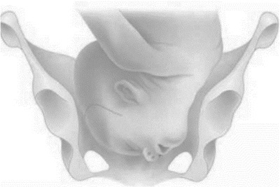
A defletida de 1° grau, bregmática.
B defletida de 2° grau, de fronte.
C defletida de 3° grau, de face.
D fletida, occipital.
Questão 186 · Teste oral de tolerância à glicose 75g TOTG 75g · 4000194281Uma paciente com 10 semanas de idade gestacional comparece a consulta para avaliação de resultados dos exames solicitados na rotina do pré-natal. Apresenta exame de glicemia de jejum 91 mg/dL. O teste oral de tolerância à glicose (TOTG) com avaliação da glicemia de jejum, após uma hora e após duas horas, tem os limites para o DMG de 92 mg/dL (jejum), de 180 mg/dL (após uma hora) e de 153 mg/dL (após duas horas). Nesse caso, a conduta recomendada para o rastreamento e para a definição da presença ou não de diabetes gestacional é realizar o TOTG com
A 100 g, entre 32 e 36 semanas gestacional, já que o diagnóstico é feito com pelo menos um valor alterado.
B 75 g, entre 24 e 28 semanas de gestação, visto que o diagnóstico é feito com pelo menos um valor alterado.
C 75 g, entre 22 e 28 semanas de gestação, pois o diagnóstico é feito com pelo menos dois valores alterados.
D 100 g, entre 34 e 36 semanas de gestação, uma vez que o diagnóstico é feito com pelo menos dois valores alterados.
Questão 187 · Gestação ectópica · 4000194276Uma paciente com 30 anos, primigesta, tipagem sanguínea B+, sem comorbidades, sem queixas atuais e estável hemodinamicamente, chega a uma unidade ambulatorial com o seguinte resultado de exame feito no mesmo dia: BHCG de 2.500 mUI/ml, e com ecogra a mostrando uma massa anexial de 2,0 cm (sem embrião vivo) e ausência de gestação intrauterina. A paciente já havia feito exames há 3 dias que mostraram um BHCG de 1.500 mUI/ml. Considerando-se que essa paciente deseja gestar no futuro, que todos os demais exames laboratoriais estão normais e que ela tem possibilidade de dar seguimento ao tratamento proposto, é melhor
A indicar cirurgia aberta.
B adotar conduta expectante.
C adotar conduta medicamentosa com metotrexato.
D indicar cirurgia videolaparoscópica para salpingoplastia.
Questão 188 · Descolamento prematuro de placenta DPP · Obstetrícia · 4000194271Uma paciente com 27 anos, primigesta, com 37 semanas, foi admitida no pronto atendimento com quadro de dor abdominal súbita, sangramento vaginal vermelho vivo de pequena/moderada quantidade. Foi realizado o diagnóstico de descolamento prematuro de placenta e um dos médicos da equipe propôs a realização de amniotomia durante o toque vaginal, pois, ao exame físico, constatou-se que o colo é pérvio para 4 cm e é possível a palpação das membranas com facilidade, e que o bebê está em nível + 1 de plano de apresentação. Com relação à proposta da amniotomia, o médico estava
A incorreto, pois a amniotomia se relaciona a um aumento de risco de embolia amniótica.
B correto, pois a amniotomia se relaciona a um menor tempo de dequitação da placenta após o parto.
C correto, pois a amniotomia se relaciona a redução do risco de coagulação intravascular disseminada.
D incorreto, pois a amniotomia se relaciona a um risco aumentado de piora da zona de descolamento de placenta.
Questão 189 · Gestação ectópica · 4000194256Uma mulher de 19 anos comparece a uma unidade de emergência com dor em fossa ilíaca esquerda há 3 dias, mais intensa neste dia. Nega febre e a rma ter relação sexual heterossexual, utilizando-se de condon como meio de anticoncepção, de forma irregular. Refere que a última menstruação ocorreu há 45 dias. Ao exame físico, apresenta pressão arterial de 90 × 50 mmHg, frequência cardíaca de 110 batimentos por minuto, temperatura axilar de 36,7 oC, abdome doloroso em andar inferior, principalmente em fossa ilíaca esquerda, com descompressão dolorosa. Ao exame especular, nota-se sangramento discreto pelo orifício externo do colo; toque com dor a palpação de região anexial esquerda, útero intrapélvico, colo fechado. Considerando-se o quadro descrito e os dados apresentados, o principal diagnóstico e a conduta adequada são, respectivamente
A gravidez ectópica esquerda; solicitar Beta HCG e ultrassonografia transvaginal.
B torção anexial esquerda; solicitar ultrassonografia de abdome total e hemograma.
C doença inflamatória pélvica; solicitar hemograma e PCR para pesquisa de clamídia.
D cisto roto de ovário esquerdo; solicitar hemograma e tomografia de abdome e pelve.
Questão 190 · Ginecologia · Obstetrícia · 4000194183Em caso de gestação gemelar, onde há discordância no tamanho dos fetos, sem patologias detectadas, o cálculo da idade gestacional deve ser feito preferencialmente pelo(a):
A Feto maior.
B Feto menor.
C Média dos dois fetos.
D Não é viável o cálculo nesse caso
Questão 191 · Ginecologia · Obstetrícia · 4000194182Infecções por clamídia podem complicar a gestação e causar prematuridade, baixo peso ao nascer, rotura prematura de membranas, entre outras. São opções medicamentosas para tratamento de infecção por Clamídia em gestantes, exceto:
A Azitromicina.
B Eritromicina.
C Doxiciclina.
D Amoxicilina.
Questão 192 · Ginecologia · Obstetrícia · 4000194181A teoria da “metástase benigna” sugere que a presença da patologia X em órgãos distantes como pulmão e cérebro pode surgir após disseminação linfática e hematogênica. A patologia X seria:
A Miomatose uterina.
B Endometriose.
C Displasia cervical.
D Tumor benigno de ovário.
Questão 193 · Ginecologia · Obstetrícia · 4000194180Uma gestante de 32 semanas em quadro de pré-eclâmpsia grave deve ser submetida da pro laxia com Sulfato de Magnésio endovenoso, devendo o Plantonista ter em registro impresso os seguintes parâmetros, exceto:
A Reflexo patelar.
B Escala de coma de Glasgow.
C Diurese.
D Frequência respiratória.
Questão 194 · Ginecologia · Obstetrícia · 4000194179Uma mulher de 52 anos, em amenorreia há 1 ano, com queixa de fogachos e ressecamento vaginal, solicita ao Ginecologista terapia hormonal. A situação que não é contraindicação de TH é:
A Infarto Agudo do Miocárdio há 8 meses.
B Câncer de Mama tratado há 5 anos.
C Osteoporose diagnosticada com densitometria.
D Trombose Venosa Profunda em tratamento com anticoagulante.
Questão 195 · Ginecologia · Obstetrícia · 4000194178Uma atleta com queixa de dor mamária bilateral não cíclica, não usuária de contraceptivos, realiza ultrassom mamário que evidencia BI-RADS 1. O diagnóstico mais provável é:
A Nevralgia intercostal.
B Fibroadenoma.
C Mastopatia fibrocística.
D Eczema areolar.
Questão 196 · Ginecologia · Obstetrícia · 4000194176Na pesquisa de infertilidade em paciente com mais de 38 anos, a dosagem do FSH sérico do 2º ao 4º dia do ciclo representa rara chance de gravidez quando acima de:
A 5,0 UI/ml.
B 8,0 UI/ml.
C 15,0 UI/ml.
D 25,0 UI/ml.
Questão 197 · Ginecologia · Obstetrícia · 4000194175Uma paciente de 30 anos refere nunca ter conseguido intercurso sexual por sentir dor intensa nas tentativas de penetração. O exame ginecológico é prejudicado por contração da musculatura pélvica e espasmo de intróito vaginal. O tratamento que não está indicado nesse caso é:
A Correção cirúrgica.
B Terapia psíquica.
C Exercícios de Kegel.
D Dilatadores graduados de borracha.
Questão 198 · Ginecologia · Obstetrícia · 4000194174Gestante de 34 semanas dá entrada na maternidade com queixa de sangramento vaginal de moderada intensidade, indolor, com BCF 140 bpm. Na cardiotocogra a, feto com boa vitalidade. A mais provável causa é:
A Descolamento prematuro de placenta.
B Rotura de vasa prévia.
C Placenta prévia.
D Amnionite.
Questão 199 · Ginecologia · Obstetrícia · 4000194173Paciente de 23 anos com quadro de dor pélvica de início há 6 meses, é diagnosticada como Doença Inflamatória Pélvica (DIP). Assinale a alternativa correta:
A A DIP não tem relação com quadro de infertilidade.
B Os contraceptivos orais combinados aumentam a chance de contrair DIP.
C A paciente tem risco aumentado de desenvolver prenhez ectópica no futuro.
D O principal agente etiológico nesse caso é a
Questão 200 · Ginecologia · Obstetrícia · 4000194172Mulher de 35 anos com suspeita de infertilidade deseja realizar pesquisa de permeabilidade tubária. A melhor época para agendar a histerossalpingografia é:
A Durante a menstruação.
B Antes da ovulação.
C Durante a ovulação.
D Logo após a ovulação.
Questão 201 · Ginecologia · Obstetrícia · 4000194171Paciente comparece a consulta ginecológica com queixa de corrimento vaginal. No exame ginecológico o Médico ca em dúvida sobre qual seria a origem do corrimento e opta por avaliar no microscópio. A secreção vaginal na lâmina após adicionado hidróxido de potássio, evidenciou pseudo-hifas. O mais provável diagnóstico nesse caso é:
A Doença inflamatória pélvica aguda.
B Vaginose bacteriana.
C Candidíase.
D Citólise.
Revisar: possível letra faltando em enunciado
Questão 202 · Ginecologia · Obstetrícia · 4000194169Mulher de 34 anos com antecedente de hipertensão arterial bem controlada, solicita ao ginecologista o melhor método contraceptivo do ponto de vista de eficácia. Nesse caso, a melhor alternativa é:
A Implante de etonogestrel.
B Pílula combinada oral 24+4.
C Pílula combinada oral 21+7.
D Injetável mensal.
Questão 203 · Ginecologia · Obstetrícia · 4000194168Uma paciente de 21 anos comparece ao consultório do ginecologista solicitando coleta de Papanicolaou. Durante o exame o Ginecologista nota a presença de dois colos uterinos. Solicitado ultrassom endovaginal, fica evidente a duplicação total do útero. Trata-se, portanto, de útero:
A Arqueado.
B Didelfo.
C Septado.
D de Rokitansky.
Questão 204 · Ginecologia · Obstetrícia · 4000194167Uma paciente de 48 anos, com 3 lhos, não usuária de contraceptivos, com queixa de aumento do uxo menstrual. Realizou ultrassom endovaginal que evidenciou útero pouco aumentado com presença de cistos miometriais. O diagnóstico mais provável é:
A Adenomiose.
B Miomatose.
C Cisto ovariano.
D Sarcomatose.
Questão 205 · Ginecologia · Obstetrícia · 4000194166Uma mulher de 30 anos procura o Ginecologista com queixa de dor pélvica há 4 meses. Refere dor nas relações sexuais e nega corrimento. Ao toque, o Obstetra nota dor importante à mobilização de útero e anexos. O mais provável agente etiológico nesse caso é:
A Gardnerella vaginalis.
B Trichomonas Vaginalis.
C Treponema pallidum.
D Chlamydia trachomatis.
Questão 206 · Ginecologia · Obstetrícia · 4000194165Em uma paciente de 45 anos, a mamogra a encontrou microcalci cações pleomór cas agrupadas em um trajeto de 1,5 cm. Nesse caso o laudo é BI-RADS:
A 2
B 3
C 4
D 5
Revisar: possível letra faltando em enunciado
Questão 207 · Ginecologia · Obstetrícia · 4000194164Uma mulher de 62 anos, histerectomizada por miomatose uterina, procura o ginecologista com resultado de uma densitometria óssea que evidencia T-score= -2,3 DP de colo de fêmur. Refere que a mãe teve fratura de fêmur aos 72 anos, evoluindo com óbito por tromboembolismo pulmonar no sétimo dia de internação. Neste caso o melhor tratamento é:
A Estrogênio.
B Bifosfonato.
C Estrogênio e progesterona.
D Cálcio e vitamina D.
Questão 208 · Ginecologia · Obstetrícia · 4000194006Leia as afirmativas abaixo e assinale a alternativa CORRETA
A O surfactante alveolar, produzido nos pneumócitos do tipo I, aumenta a tensão superficial dos alvéolos e facilita a respiração neonatal.
B A deflexão do polo cefálico fetal ocasiona substituição de seus diâmetros anteroposteriores e facilita a insinuação durante o parto.
C O fluxo de sangue na veia cava inferior do feto tem velocidade diferente, de acordo com a sua origem.
D O rim fetal é responsável pela formação do líquido amniótico durante toda a gestação, que é hipertônico em relação ao plasma materno.
E A cavidade amniótica surge do endoderma extraembrionário e se funde com o celoma extraembrionário após a segunda semana do desenvolvimento ovular.
Questão 209 · Ginecologia · Obstetrícia · 4000194005Assinale a alternativa CORRETA em relação aos dados abaixo, encontrados no exame físico de primigesta com 34 semanas.
A A observação de rechaço do polo fetal, identificado no fundo uterino, condiz com apresentação pélvica.
B A manobra de Leopold confirmará apresentação pélvica com mobilidade presente.
C O maior eixo fetal, de regra, encontra-se perpendicular ao maior eixo materno.
D O foco de ausculta dos batimentos cardíacos fetais será localizado no lado materno em que se identificar o tórax fetal.
E Nesta idade gestacional, a escava materna encontra-se ocupada e a situação fetal será transversa.
Questão 210 · Ginecologia · Obstetrícia · 4000194004Assinale a alternativa CORRETA em relação ao rastreamento do diabetes que ocorre na gestação
A O teste de tolerância oral à glicose, realizado antes de 24 semanas, está indicado para as gestantes que apresentarem glicemia de jejum alterada no primeiro trimestre da gestação.
B O teste de tolerância oral à glicose alterado, em gestante com glicemia de jejum normal e assintomática, não indica diagnóstico de diabetes.
C Não há necessidade de rastreamento em gestante assintomática e sem fatores de risco.
D A glicemia de jejum e o teste de tolerância oral à glicose normais, no início da gestação, afastam a necessidade de investigação posterior.
E A glicemia de jejum deverá ser repetida ou substituída pelo teste de tolerância oral à glicose, ao redor de 24 semanas, quando seus valores forem normais no primeiro trimestre da gestação.
Questão 211 · Ginecologia · Obstetrícia · 4000194003Vários fatores interferem, sobremaneira, no prognóstico das gestações gemelares. Sobre esse tema, responda corretamente, escolhendo uma das seguintes alternativas.
A A transfusão feto-fetal depende de anastomoses vasculares desbalanceadas, que ocorrem nas gestações dicoriônicas.
B O entrelaçamento de cordões é um risco associado com todas as gestações monocoriônicas.
C Quanto mais precoce for a divisão do ovo nas gestações monozigóticas, tanto maiores serão as suas complicações.
D Tanto nos dizigóticos como nos monozigóticos, a corionia é definida pelo momento de divisão do ovo.
E Gêmeos dizigóticos têm cariótipos sempre diferentes e serão, obrigatoriamente, dicoriônicos e diamnióticos.
Questão 212 · Ginecologia · Obstetrícia · 4000194002No parto eutócico, como encontraremos o polo cefálico na fase de desprendimento do período expulsivo?
A Em OP e no plano +3 de DeLee.
B Em OS e no plano +3 de DeLee.
C Em OS e no plano -3 de DeLee. Obstetrícia e Ginecologia
D Em ODT e no plano -3 de DeLee.
E Em ODT e no plano +3 de DeLee.
Questão 213 · Ginecologia · Obstetrícia · 4000194001Em relação à pré-eclâmpsia assinale a alternativa CORRETA.
A Os diuréticos são medicamentos de primeira linha no tratamento.
B Apesar do avanço da medicina, não há ainda método de rastreamento da pré-eclâmpsia.
C Na ultrassonografia, a avaliação com Doppler das artérias umbilicais auxilia no rastreamento.
D Em pacientes consideradas de risco pelo rastreamento, o uso profilático de AAS 100 a 150 mg à noite, iniciado antes de 16 semanas, diminui o risco de desenvolvimento das formas graves e precoces de pré-eclâmpsia.
E A idade gestacional em que o diagnóstico é feito não influencia no prognóstico materno e fetal.
Questão 214 · Ginecologia · Obstetrícia · 4000194000No dia 08/11/2022, a paciente C.P.L deu entrada no PSGO queixando-se de perda de líquido claro em grande quantidade, via vaginal, há 2 horas. Contou que esta é a sua quarta gestação e, anteriormente, ela já teve três abortos. Referia data da última menstruação (DUM) em 01/02/2022, datação coerente com ultrassonogra a de primeiro trimestre. Ao exame: PA 120x80 mmHg, dinâmica uterina negativa, altura uterina de 37 cm, BCF 150 bpm. Toque vaginal evidenciou colo amolecido, grosso, posterior, pérvio para 2 cm de dilatação, apresentação cefálica. Especular: saída de líquido claro pelo orifício externo do colo uterino. Cardiotocogra a com padrão tranquilizador. Sobre este caso clínico, assinale a alternativa CORRETA em relação à nomenclatura, diagnóstico e conduta:
A Quartigesta, nulípara. Amniorrexe prematura a termo. Indução do parto.
B Quartigesta, tercípara. Amniorrexe prematura a termo. Indução do parto.
C Tercigesta, nulípara. Amniorrexe prematura a termo. Indução do parto.
D Quartigesta, nulípara. Amniorrexe prematura pré-termo. Inibição do trabalho de parto.
E Quartigesta, tercípara. Amniorrexe prematura pré-termo. Inibição do trabalho de parto.
Questão 215 · Ginecologia · Obstetrícia · 4000193999Paciente L.F.S, 38 anos, gestante, 36 semanas de gestação pela amenorréia. Faz acompanhamento no pré- natal de alto risco devido à pré-eclâmpsia, em uso de metildopa 1g/dia. Comparece ao PSGO para avaliar a vitalidade fetal e se diz confusa sobre quanto tempo de gestação está. Mostra o 1º ultrassom, realizado com 8 semanas. Por ele, a idade gestacional é de 35 semanas e 6 dias. Pelo 2º ultrassom, realizado com 20 semanas, hoje a idade gestacional é de 34 semanas. Pelo 3º ultrassom, realizado com 30 semanas, hoje a idade gestacional é de 32 semanas. Realizou um ultrassom no PSGO hoje e a idade gestacional pela biometria fetal é de 33 semanas. Com base no descrito acima, qual a idade gestacional CORRETA e o diagnóstico mais provável:
A 34 semanas. Erro de data.
B 36 semanas. Restrição de crescimento fetal.
C 35 semanas. Restrição de crescimento fetal.
D 33 semanas. Erro de data.
E 36 semanas. Crescimento fetal adequado.
Questão 216 · Ginecologia · Obstetrícia · 4000193998ALS, 20 anos, deu entrada no hospital com quadro de dor abdominal. Quadro iniciado há 1 semana. DUM: há 8 dias. MAC: pílula. Ao exame físico, corada, apirética, normotensa, abdome doloroso, descompressão brusca negativa, colo uterino com hiperemia e secreção turva e, ao toque, útero doloroso à mobilização, anexos não palpáveis. Assinale a alternativa mais adequada ao caso:
A Cervicite com indicação de antibioticoterapia domiciliar.
B Doença inflamatória pélvica com indicação de internação.
C Doença inflamatória pélvica com indicação de antibioticoterapia domiciliar.
D Cisto anexial, indicação de USTV.
E Cervicite com indicação de internação
Questão 217 · Ginecologia · Obstetrícia · 4000193997NAS, 18 anos, procura o serviço de ginecologia do Hospital Universitário devido quadro de amenorreia secundária (5 meses). História de ciclos oligomenorreicos. Vida sexual ativa. MAC: condom. Ao exame físico, caracteres sexuais e somáticos compatíveis, sobrepeso, hirsutismo e exame ginecológico sem alterações. Assinale a alternativa mais adequada ao caso:
A Síndrome anovulatória, solicitar exames laboratoriais e de imagem.
B Disgenesia gonadal, indicado cariótipo e perfil hormonal.
C Distúrbio do desenvolvimento sexual, solicitar cariótipo.
D Má formação dos dutos mesonéfricos, solicitar exame de imagem.
E Gravidez, solicitar USTV.
Questão 218 · Ginecologia · Obstetrícia · 4000193996Paciente, 55 anos, com queixa de sangramento pós-menopausa. Exame físico sem alterações. Qual o primeiro exame a solicitar?
A B-HCG
B Ultrasson transvaginal
C Perfil hormonal
D Histeroscopia
E Biópsia de endométrio
Questão 219 · Ginecologia · Obstetrícia · 4000193995Paciente, 66 anos, deseja saber se ainda precisa realizar exames de citologia oncológica de colo uterino e mamografia. Entre as alternativas, qual o esclarecimento mais CORRETO?
A Caso venha realizando tais exames em rotina regular, estará liberada.
B Em relação a citologia, caso ainda tenha atividade sexual, deve continuar a realizar e manter a mamografia
C Caso a paciente tenha história de tratamento para HSIL, deve manter a citologia e a mamografia deve ser mantida
D Após um teste de HPV negativo, estará liberada da citologia, e manter a mamografia.
E Deve manter ambos os exames.
Questão 220 · Ginecologia · Obstetrícia · 4000193994Paciente, 40 anos, com diagnóstico de endometriose profunda e infertilidade primária. Deseja engravidar. Nega dor. Assinale a alternativa mais CORRETA para esse caso:
A Inseminação artificial.
B Videolaparoscopia terapêutica.
C Ciclo induzido por 6 meses.
D Induzir amenorreia por 6 meses e depois reavaliar.
E FIV.
Questão 221 · Ginecologia · Obstetrícia · 4000193993Paciente, 40 anos, comparece à consulta médica com teste rápido reagente para sí lis. Tem história de tratamento para sí lis, comprovado. Atualmente sem sinais ou sintomas. Assinale a alternativa CORRETA para esse caso:
A Indicado retratar com penicilina benzatina 7,2 milhões de unidades.
B Indicado retratar com penicilina benzatina 2,4 milhões de unidades.
C Indicado realizar sorologia com teste treponêmico confirmatório.
D Indicado solicitar teste não treponêmico.
E Não tem indicação de retratamento.
Questão 222 · Ginecologia · Obstetrícia · 4000193992Paciente, 25 anos, queixa de nódulo mamário esquerdo. Ao exame físico, área nodular em QSE da ME, medindo em torno de 2cm, bem delimitado, móvel e fibro-elástico. Assinale a conduta inicial mais adequada:
A Mamografia.
B US.
C Agendar a nodulectomia.
D PAAF.
E US e mamografia.
Questão 223 · Ginecologia · Obstetrícia · 4000193991Paciente, 18 anos, com verrugas difusas na região vulvar. MAC: pílula. DUM há 10 dias. Assinale a alternativa mais adequada:
A Biopsiar e programar o tratamento.
B Colher a citologia oncológica do colo uterino antes de tratar.
C Realizar o teste de HPV para indicar o tratamento mais adequado.
D Programar o tratamento conforme tamanho e extensão das lesões.
E Vacinar contra o HPV e acompanhar a evolução.
Questão 224 · Ginecologia · Obstetrícia · 4000193933Paciente de 25 anos, nuligesta, sem uso de anticoncepção comparece ao consultório ginecológico para exames de rotina, sem queixas. No ultrassom transvaginal foi identi cado em ovário esquerdo a presença de cisto unilocular, conteúdo líquido, de pequeno volume com maior dimensão 1,2cm. Em relação aos cistos foliculares, analise as assertivas e assinale a correta. I. São cistos benignos. II. Na maioria das vezes necessitam de tratamento cirúrgico. III. São mais comuns em mulheres menopausadas. IV. São os mais comuns dos cistos funcionais.
A Estão corretas I e II.
B Estão corretas I, II e III.
C Estão corretas I e IV.
D Está correta apenas a I.
E Estão corretas II, IV.
Revisar: possível letra faltando em enunciado
Questão 225 · Ginecologia · Obstetrícia · 4000193932Sobre o câncer de mama, assinale a alternativa correta.
A O tamoxifeno tem importante papel na prevenção do câncer de mama, mas não reduz a chance de recidivas.
B O estudo dos linfonodos axilares não tem importância no prognóstico do câncer de mama.
C A mastectomia está indicada em pacientes com esclerodermia ativa, independente do tamanho do tumor.
D As taxas de recorrência são maiores em pacientes idosas do que em pacientes jovens.
E A pesquisa do linfonodo sentinela apresenta altas taxas de falso-negativos, não devendo ser utilizada em lugar da dissecção axilar.
Questão 226 · Ginecologia · Obstetrícia · 4000193930Paciente de 28 anos, foi submetida a videolaparoscopia por dor pélvica crônica e infertilidade. Durante a cirurgia foi visualizado que a paciente era portadora de endometriose profunda. Isto quer dizer que:
A A pelve está “congelada”.
B A única solução para o caso é a fertilização in vitro.
C Há acometimento da região retrocervical.
D Há acometimento do reto e sigmoide.
E Há acometimento peritoneal, com focos da doença penetrando mais do que 5mm
Questão 227 · Ginecologia · Obstetrícia · 4000193929Mulher de 38 anos, procurou o serviço ginecológico para avaliação de amenorreia secundária. Foi realizado teste da progesterona com resultado negativo; realizado teste com anticoncepcional combinado e paciente apresentou uxo menstrual. Exames laboratoriais: BHCG negativo; TSH: 2,3 e T4l: 1,0, Prolactina: 6,0 e FSH: 45,0. Repetido novamente o FSH após 01 mês com valor de 40,0. Diante da hipótese diagnóstica mais provável, assinale a alternativa correta.
A Ao contrário da menopausa natural, não há evidências científicas do impacto dessa doença no humor das pacientes.
B Ao contrário da menopausa natural, o impacto ósseo nessa paciente é inexistente.
C O risco de gestação é extremamente baixo, portanto, em pacientes sem desejo de gestar, não precisamos preocupar com anticoncepção.
D Pacientes com esse quadro clínico, podem apresentar ondas de calor antes da manifestação de irregularidade menstrual.
E Se a terapia de reposição hormonal for indicada, ele deve durar no máximo 05 anos, devido à idade da paciente
Questão 228 · Ginecologia · Obstetrícia · 4000193928Mulher de 42 anos, com desejo de gestar, procura orientação médica para avaliação da reserva ovariana. A dosagem de quais exames poderiam ajudar na elucidação?
A Progesterona, estradiol no 5º dia do ciclo menstrual.
B FSH, LH, estradiol e hormônio antimulleriano no 14º dia do ciclo menstrual.
C Prolactina e hormônio antimulleriano no 3º dia do ciclo menstrual.
D FSH, estradiol e hormônio antimulleriano no 3º dia do ciclo menstrual.
E Progesterona, FSH no 14º dia do ciclo menstrual.
Questão 229 · Ginecologia · Obstetrícia · 4000193927Paciente de 60 anos, multigesta, comparece para consulta de rotina e relata perda urinária há alguns anos, não sabe dizer ao certo, se ocorre piora da perda aos esforços. Realizado exame físico onde não foi detectado perda de urina a manobra de valsava. Optado pela realização do estudo urodinâmico que evidenciou pressão de perda aos esforços de 40cmH2O. Qual o provável diagnóstico?
A IU metabólica por defeito muscarínico.
B IU mista com predominância colinérgica.
C IU por defeito esfincteriano da uretra.
D IU associado aos esforços.
E IU por contrações não inibidas do detrusor
Questão 230 · Ginecologia · Obstetrícia · 4000193926Paciente de 18 anos, nuligesta, refere presença de úlceras genitais há 01 semana com piora do quadro. Após exame clínico, foi constatado o diagnóstico de linfogranuloma venéreo. Indique o agente patogênico envolvido.
A Haemophilus ducreyi.
B Neisseria gonorrhoeae.
C Chlamydia trachomatis.
D Trichomonas vaginalis.
E Ureoplasma urealyticum.
Questão 231 · Ginecologia · Obstetrícia · 4000193925Gestante é portadora de herpes genital e comparece na consulta com 39 semanas de gestação, relatando presença de lesões perineais confirmadas ao exame clínico. Nesse caso:
A Podemos permitir o parto vaginal e observar o recém-nascido.
B Podemos permitir o parto vaginal e tratar o recém-nascido com aciclovir.
C Indicar cesariana eletiva para proteção do recém-nascido .
D Indicar cesariana apenas se a gestante apresentar amniorrexe prematura.
E Podemos permitir o parto vaginal e tratar o recém-nascido com globulina.
Questão 232 · Ginecologia · Obstetrícia · 4000193924Secundigesta, com gestação a termo, em trabalho de parto há mais ou menos 10 horas, comunica a equipe de enfermagem dor intensa e súbita em região de baixo ventre. Associado, equipe percebe queda na pressão arterial e sangramento vaginal intenso. Ao toque, observa-se dilatação total com polo cefálico acima do estreito superior. Os batimentos cardíacos fetais não estão audíveis. Qual a melhor conduta?
A Infusão de ocitocina.
B Fórceps de Kielland.
C Fórceps de Simpson.
D Laparotomia.
E Compressão do fundo uterino.
Questão 233 · Ginecologia · Obstetrícia · 4000193923Gestante de 27 anos, primigesta, IG: 10 semanas, comparece ao pronto atendimento com queixa de sangramento vaginal há 03 dias associado à dor pélvica, adinamia e febre não termometrada. Realizou ultrassonogra a há 02 semanas com gestação em curso, sem alterações. Ao exame físico, evidenciado dor à palpação de baixo ventre, sem sinais de irritação peritoneal, TAX: 38,7º, presença de sangramento vaginal exteriorizando pelo colo associado a material necrótico com odor desagradável, dor à mobilização de colo uterino. O diagnóstico é de:
A Doença inflamatória pélvica.
B Mola hidatiforme.
C Neoplasia de sítio placentário.
D Abortamento infectado.
E Gravidez ectópica infectada.
Questão 234 · Obstetrícia · 4000193873Durante o pré-natal de uma gestante, 2G1PN, com 10 semanas, é realizado teste rápido para sí lis que resulta positivo. A paciente refere tratamento na gestação anterior com três doses de penicilina benzatina, mas o parceiro não foi tratado. Nega queixas ou alergias. Com base nesse resultado, nos dados da entrevista clínica e no resultado do teste rápido, assinale a opção correta.
A Como a paciente já foi tratada na gestação anterior, trata-se de cicatriz sorológica e não há necessidade de tratamento na gestação atual.
B Deve-se solicitar VDRL e aguardar o resultado para iniciar o tratamento.
C Deve-se iniciar imediatamente o tratamento com penicilina benzatina para a gestante e o parceiro e solicitar VDRL para o casal.
D Deve-se iniciar imediatamente o tratamento com penicilina benzatina para a gestante e solicitar VDRL para o parceiro.
Questão 235 · Obstetrícia · 4000193872Paciente, parda, 22 anos, primigesta, passou pelo acolhimento da unidade básica de saúde um dia após ter descoberto que estava grávida. O enfermeiro realizou o acolhimento e classi cou a gestante como risco intermediário. A situação que indicou essa classificação foi:
A IMC de 40 kg/m².
B Asma controlada, sem necessidade de medicação contínua.
C Hipertensão arterial crônica.
D Doença falciforme.
Questão 236 · Obstetrícia · 4000193871Secundigesta, 35 anos, 28 semanas de gestação, relatando aumento dos níveis pressóricos há 1 semana. Paciente nega queixas ou comorbidades. Ao exame: BEG, edema +2/4, corada, PA 145 x 90 mmHg, confirmado após 4 horas. Realizada proteinúria de ta reagente +2. Qual deve ser a conduta para essa gestante?
A Prescrever metildopa e encaminhar a paciente para a maternidade para realizar exames laboratoriais e de vitalidade fetal para afastar situação de gravidade. Na ausência de situação de gravidade, encaminhar para acompanhamento ambulatorial no pré-natal de alto risco.
B Solicitar exames laboratoriais, ultrassom obstétrico com Doppler ambulatorialmente e orientar retorno em 15 dias com exames.
C Prescrever metildopa, solicitar exames laboratoriais e de vitalidade para serem realizados ambulatorialmente e encaminhar a paciente para acompanhamento ambulatorial no pré-natal de alto risco.
D Internar a paciente, prescrever metildopa e corticoide e programar resolução da gestação em 48 horas.
Questão 237 · Obstetrícia · 4000193870Gestante de 39 anos de idade, 2G0P1A, vem à maternidade com atraso menstrual de 2 semanas, sangramento vaginal de pequena quantidade e dor abdominal iniciada hoje. Ao exame: BEG, descorada +/4, PA 110/70 mmHg, FC 90 bpm, abdome com dor leve em hipogástrio, descompressão brusca negativa. Toque vaginal com colo impérvio e sangramento coletado em pequena quantidade, sem sangramento ativo. Realizado BHcg quantitativo com resultado no valor de 1750 mUI/dL. Ultrassom transvaginal evidenciou cavidade uterina vazia e anexos sem alterações. Diante das informações apresentadas, qual é a conduta a ser realizada?
A Metotrexato intramuscular
B Laparoscopia
C Repetir BHcg em 48 horas
D Ultrassonografia em 15 dias
Questão 238 · Obstetrícia · 4000193869Primigesta, 28 anos, 10 semanas de gestação, sem comorbidades prévias, vem ao retorno de pré-natal trazendo exames de rotina do primeiro trimestre. Os exames apresentam-se normais, exceto pela glicemia de jejum no valor de 135 mg/dl. Qual é a conduta obstétrica indicada para essa paciente?
A Solicitar nova glicemia de jejum para confirmar o diagnóstico
B Solicitar curva glicêmica imediatamente.
C Iniciar tratamento para diabetes prévio à gestação
D Iniciar tratamento para diabetes gestacional.
Questão 239 · Diagnóstico · 4000193687Gestante, 26 semanas, com obesidade grau 2, nega comorbidades. Tercigesta e primípara, vem para consulta de pré-natal com ultrassonogra a morfológica de 2º trimestre, evidenciando feto único vivo, cefálico, placenta grau 0, peso estimado no percentil 95, ILA sem alterações. Ausência de alterações na morfologia fetal. Sobre o diagnóstico de diabetes gestacional, é correto afirmar que
A está estabelecido, nesse caso, pois já há 2 critérios maiores importantes: obesidade e feto no percentil 95.
B será estabelecido, caso haja constatação de glicemia de jejum ≥ 92mg/dL e ≤ 125mg/dL.
C será estabelecido, caso haja constatação de glicemia após a primeira hora ≥ 153mg/d, no Teste de Tolerância Oral a Glicose com 100g.
D será estabelecido, caso haja constatação de glicemia após a primeira hora ≥ 180mg/dL, no Teste de Tolerância Oral a Glicose com 100g.
Questão 240 · Diagnóstico · 4000193686Gestante, 26 semanas, com obesidade grau 2, nega comorbidades. Tercigesta e primípara, vem para consulta de pré-natal com ultrassonogra a morfológica de 2º trimestre, evidenciando feto único vivo, cefálico, placenta grau 0, peso estimado no percentil 95, ILA sem alterações. Ausência de alterações na morfologia fetal. Uma vez confirmada a principal suspeita diagnóstica no acompanhamento pós-parto para reclassi cação diagnóstica, especifique o exame indicado para definição de Diabetes pós-gestacional:
A Dosagem de hemoglobina glicada 6 semanas após o parto.
B Nova glicemia de jejum 6 meses após o parto.
C Teste de Tolerância Oral a Glicose (TOTG 75g) 6 semanas após o parto.
D Teste de Tolerância Oral a Glicose (TOTG 75g) 6 meses após o parto.
Questão 241 · Distócia de ombro · 4000193685Gestante, 26 semanas, com obesidade grau 2, nega comorbidades. Tercigesta e primípara, vem para consulta de pré-natal com ultrassonogra a morfológica de 2º trimestre, evidenciando feto único vivo, cefálico, placenta grau 0, peso estimado no percentil 95, ILA sem alterações. Ausência de alterações na morfologia fetal. Uma das maiores preocupações no parto normal de fetos, em casos como esse, é a distocia de ombros. Indique a manobra utilizada na tentativa de desprendimento do ovoide córmico.
A McRoberts.
B Leopold.
C Ritgen.
D Jacob Dublin.
Questão 242 · Préeclâmpsia com sinais de gravidade · PréEclâmpsia · 4000193684Em consulta de pré-natal, gestante de 34 anos de idade, na 30a semana de gestação,a rma que vem apresentando cefaleia e cansaço com piora nos últimos três dias. Também relata que apresentou turvação visual ao se levantar hoje. Nega comorbidades prévias. Ao exame físico, PA: 140x100mmHg, edema de membros inferiores ++/4+. Teste de proteinúria: positivo. Diante do quadro clinico, indique a principal suspeita diagnóstica:
A Hipertensão gestacional.
B Eclâmpsia.
C Pre-eclâmpsia leve.
D Pre-eclâmpsia grave.
Questão 243 · PréEclâmpsia · 4000193683Em consulta de pré-natal, gestante de 34 anos de idade, na 30a semana de gestação,a rma que vem apresentando cefaleia e cansaço com piora nos últimos três dias. Também relata que apresentou turvação visual ao se levantar hoje. Nega comorbidades prévias. Ao exame físico, PA: 140x100mmHg, edema de membros inferiores ++/4+. Teste de proteinúria: positivo. Frente ao caso, indique a conduta a ser adotada:
A Solicitar exames laboratoriais, M.A.P.A e retorno em uma semana.
B Realizar cardiotocografia, exames laboratoriais e solicitar retorno em uma semana.
C Internar a paciente para observação e solicitar e exames.
D Solicitar exames laboratoriais e ultrassom obstétrico e pedir retorno com exames em uma semana.
Questão 244 · PréEclâmpsia · 4000193682Em consulta de pré-natal, gestante de 34 anos de idade, na 30a semana de gestação,a rma que vem apresentando cefaleia e cansaço com piora nos últimos três dias. Também relata que apresentou turvação visual ao se levantar hoje. Nega comorbidades prévias. Ao exame físico, PA: 140x100mmHg, edema de membros inferiores ++/4+. Teste de proteinúria: positivo. Indique a medicação que deverá inicialmente ser prescrita para essa paciente.
A Hidralazina.
B Sulfato de magnésio.
C Nifedipina ou metildopa.
D Metildopa.
Questão 245 · Cardiotocograf ia intraparto · Interpretação · 4000193594G.A.Z, 29 anos, G2P1A0, vem para maternidade com 40 semanas de gestação para indução do trabalho de parto. O exame cervical mostra um colo com 2 cm de dilatação, anterior, rme, 50% apagado e na altura de -1 de DeLee. Ela recebe medicação para maturação cervical e é colocada em monitorização fetal com cardiotocogra a, conforme a imagem seguinte. Após algumas horas de indução do parto, o traçado da monitorização fetal é

A posição materna sobre o lado esquerdo.
B hiperestimulação uterina pelo agente da maturação cervical.
C trabalho de parto distócico, indicando cesariana urgente.
D compressão da cabeça fetal mediada pelo nervo vago.
E posição materna sobre o lado direito.
Questão 246 · Parto taquitócito · 4000193593Gestante, 28 anos e com parto normal anterior, é admitida na maternidade em trabalho de parto. A evolução do parto é representada pelo registro no partograma a seguir: A distocia diagnosticada pelo partograma é
A período pélvico prolongado.
B parto precipitado.
C parada secundária da dilatação.
D parada secundária da descida.
E parto eutócico.
Questão 247 · Distocia de dilatação · Funcional · 4000193592Secundigesta, 39 semanas de gestação, em trabalho de parto, admitida com 6 cm de dilação cervical à 01:00 hora da madrugada. Ao exame físico obstétrico às 09h da manhã: tônus uterino normal, 2 contrações de 20 segundos em 10 minutos, 145 batimentos cardíacos fetais por minuto, ausência de sangramento vaginal, bolsa amniótica íntegra, colo esvaecido 70%, pérvio para 7 cm, apresentação cefálica em - 1 de De Lee. Ao exame físico obstétrico às 11h da manhã: tônus uterino normal, 2 contrações de 18 segundos em 10 minutos, 131 batimentos cardíacos fetais por minuto, ausência de sangramento vaginal, bolsa amniótica íntegra, amnioscopia revela líquido claro com grumos grossos, colo esvaecido 60%, pérvio para 7 cm, apresentação cefálica em -1 de De Lee. Em relação à evolução do trabalho de parto, o diagnóstico correto é
A parto eutócico, com evolução normal.
B distocia funcional por hiperatividade uterina.
C sofrimento fetal agudo.
D distocia funcional por hipoatividade uterina.
E distocia óssea.
Questão 248 · Abortamento incompleto · 4000193591Primigesta com 19 semanas de idade gestacional, vem ao pronto atendimento com queixa de dor intensa em baixo ventre e sangramento vaginal profuso iniciado há cerca de 4 horas. Nega febre. Ao exame físico: altura uterina= 15 cm, sangramento uterino moderado, colo uterino dilatado 1 cm, eliminação de material amorfo entremeado ao sangue. Ultrassonografia transvaginal identifica material amorfo intrauterino e não identifica o concepto. Com base no quadro clínico, o diagnóstico correto é
A ameaça de abortamento.
B abortamento inevitável.
C abortamento retido.
D abortamento incompleto.
E abortamento completo.
Questão 249 · Interpretação · 4000193590Paciente de 15 anos, G2P0A1, atualmente com 39 semanas de gestação, em seguimento em pré-natal de alto risco devido à síndrome hipertensiva gestacional. Indicada resolução da gestação sendo encaminhada para a maternidade para indução do parto, após cardiotocogra a para avaliar a vitalidade fetal. O traçado acima é classificado como
A inconclusivo.
B categoria I.
C categoria II.
D categoria III.
E categoria IV.
Questão 250 · Partograma · 4000193589Observe o partograma a seguir. O diagnóstico correto é
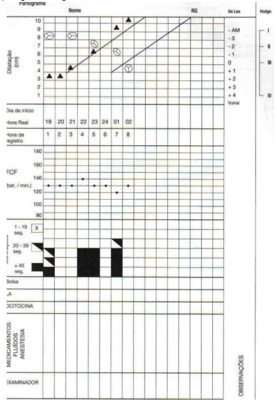
A parada secundária da descida.
B parto eutócico fisiológico.
C parto taquitócico.
D fase ativa prolongada.
E período expulsivo prolongado.
Questão 251 · Tempos da apresentação cef álica · Mecanismo de parto · 4000193587A respeito dos mecanismos do trabalho de parto, é correto afirmar:
A O ponto de referência fetal nas apresentações cefálicas fletidas é o bregma ou pequena fontanela.
B O diâmetro do estreito inferior é medido de acordo com os planos de Lee.
C Os tempos do mecanismo do trabalho de parto são: insinuação, descida e desprendimento.
D Os períodos clínicos do parto são dois: dilatação e expulsão.
E Na defletida de terceiro grau, o ponto de referência é o bregma.
Questão 252 · Interpretação · Conduta · Indicações · 4000193584O per l biofísico fetal é um exame solicitado para avaliar a vitalidade fetal muito utilizado para pacientes portadoras de diabetes gestacional ou com gestação múltipla. Sobre o per l biofísico fetal, analise as afirmativas seguintes. I. É um exame capaz de detectar sofrimento fetal agudo. II. Deve ser feito observando os parâmetros por, pelo menos, 30 minutos. III. O primeiro parâmetro a se alterar são os movimentos corporais. IV. O líquido amniótico é um marcador agudo de sofrimento fetal. V. Diante de resultados abaixo ou iguais a 4, deve-se resolver a gestação imediatamente. Estão corretas
A I, II e V, somente.
B I, II, III e V, somente.
C I, III, IV e V, somente.
D II e IV, somente.
E III e IV, somente.
Questão 253 · Dopplervelocimetria Doppler · 4000193582A centralização fetal, que ocorre em determinados casos de gestação de alto risco, pode ser identificada por meio do exame denominado
A cardiotocografia.
B ecocardiografia fetal.
C ecografia morfológica fetal.
D dopplervelocimetria fetal.
E ultrassonografia transvaginal.
Questão 254 · Pontos de ref erência da apresentação f etal · Pontos de ref erência da bacia materna · 4000193579Avaliação da estática f etal Durante o trabalho de parto, as linhas de orientação são importantes para delimitar melhor o posicionamento fetal, em relação ao diâmetro materno de insinuação. Nas apresentações de etidas de bregma, face e fronte, têm-se como linhas de orientação, respectivamente,
A sutura sagital, linha metópica, linha facial.
B sutura sagitometópica, dorso, linha facial.
C sutura sagital, sutura sagitometópica, linha facial.
D linha facial, dorso, linha metópica.
E sutura sagitometópica, linha facial, linha metópica.
Questão 255 · Imunizaçao na gestação · 4000193578As imunizações antes, durante e após a gravidez promovem não apenas a saúde materna, mas também, por meio de imunidade passiva, gravidez e período pós-natal saudáveis. As vacinas que devem ser oferecias durante a gestação em nosso estado são
A tuberculose, Influenza, hepatite A.
B Influenza, hepatite B, DTPa.
C Influenza, febre amarela, hepatite B.
D hepatite A, DTPa, tuberculose.
E Influenza, hepatite A, DTPa.
Questão 256 · Inf ecção Urinária e Bacteriúria Assintomática na gestação ITU · 4000193572Gestante comparece à unidade básica de saúde para sua consulta pré-natal. Não refere queixas no momento do atendimento, porém entrega o seguinte exame ao médico de família e comunidade: urocultura > 100.000 UFC. A impressão diagnóstica e o manejo adequados são
A provável contaminação genital; repetir o exame.
B bacteriúria assintomática; iniciar tratamento.
C bacteriúria assintomática; orientar aumento da ingesta hídrica.
D infecção do trato urinário; referenciar para o pré-natal de alto risco.
E infecção do trato urinário; iniciar profilaxia para pielonefrite.
Questão 257 · Assistência ao puerpério f isiológico · Dispositivos intrauterinos · 4000193512Larissa Garcia, 19 anos, retorna à unidade básica de saúde 3 semanas após o parto. Está fazendo aleitamento materno exclusivo e não teve um período menstrual após o parto. Relata desejo de colocar um DIU. O passo seguinte mais apropriado no momento dessa consulta é
A planejar inserir o DIU na consulta pós-parto de 6 semanas.
B prescrever minipílula até que ela deixe de amamentar e então inserir o DIU.
C aconselhar que não precisa de contracepção até deixar de amamentar.
D inserir o DIU no momento da consulta.
E informar que o DIU está contraindicado e abordar outros métodos contraceptivos disponíveis no SUS.
Questão 258 · Cálculo da idade gestacional pela ultrassonograf ia IG USG · 4000193505Uma mulher de 30 anos vem para a primeira consulta pré-natal na UBS. Com base na data da sua última menstruação, está com 9 semanas de gestação. Quando indagada por mais tempo, observou-se que não tem certeza do primeiro dia da data da última menstruação. A estimativa mais e caz para o cálculo da idade gestacional seria
A ultrassonografia de primeiro trimestre.
B ultrassonografia de segundo trimestre.
C nível quantitativo de hCG sérica.
D continuar usando a data da última menstruação se ela for compatível com a altura uterina.
E Utilizar a altura uterina como referência para a estimativa da idade gestacional.
Questão 259 · Diagnóstico laboratorial na RPM · 4000190715O pH vaginal mais sugestivo de amniorrexe é de:
A 2
B 4
C 4,5
D 7
Questão 260 · Diagnóstico · 4000190713O exame laboratorial normalmente aumentado em gestações gemelares é:
A Ácido úrico.
B Transaminase.
C Contagem de plaquetas.
D Hemoglobina.
Questão 261 · Medida do colo uterino · 4000190711Atualmente a medida ultrassonográ ca de comprimento de colo uterino mais aceita como fator de risco para prematuridade é abaixo de:
A 40 mm.
B 30 mm.
C 10 mm.
D 25 mm.
Revisar: possível letra faltando em enunciado
Questão 262 · Inf ecção Urinária e Bacteriúria Assintomática na gestação ITU · 4000190709Gestante de 30 semanas comparece ao ambulatório de pré-natal com queixa de disúria. Sem oportunidade de realizar uma urocultura, o Ginecologista opta por antibiótico com espectro principalmente para:
A Staphylococcus aureus.
B Klebsiela pneumoniae.
C Echerichia coli.
D Proteus mirabilis.
Questão 263 · Assistência ao parto na gestação multipla · 4000190707As gestações gemelares monocoriônicas / monoamnióticas devem ter o parto programado para a idade gestacional:
A 39 a 40 semanas.
B 37 a 38 semanas.
C 35 a 37 semanas.
D 32 a 34 semanas.
Questão 264 · Etiologia e f isiopatologia · 4000190705São características comuns na pré-eclâmpsia, exceto:
A Aumento do tromboxane.
B Aumento da taxa de filtração glomerular.
C Plaquetopenia.
D Lesão endotelial.
Questão 265 · Rastreamento de anomalias cromossômicas · 4000190703Gestante em acompanhamento pré-natal na Unidade Básica realiza ultrassom com 13 semanas que demonstrou osso nasal ausente e transluscência nucal fetal de 4,0 mm. O exame é considerado como sugestivo de maior risco para:
A defeitos abertos do tubo neural.
B gastrosquise.
C trissomias.
D anencefalia.
Questão 266 · Ameaça de abortamento · 4000190701Uma gestante de 9 semanas procura o pronto atendimento com queixa de sangramento vaginal em pequena quantidade e cólicas leves. Ao exame físico, colo uterino fechado com sangramento discreto. O ultrassom visualizou embrião com batimentos cardíacos presentes e discreta área de descolamento coriônico, com coágulo que ocupa aproximadamente 20% da superfície placentária. O diagnóstico mais provável é:
A Descolamento Prematuro de Placenta.
B Aborto incompleto.
C Aborto retido.
D Ameaça de aborto.
Questão 267 · Covid na gestação · 4000190698Uma vez que a determinação da gravidade do estado da gestante pode ser desa adora, recomendamos que os profissionais de saúde utilizem o Escore de Alerta Precoce. Sobre isso, podemos afirmar que:
A Mulheres com dois ou mais sinais de alerta amarelo ou um ou mais sinais de alerta vermelho, assim como aquelas com síndrome respiratória aguda grave (SRAG), têm risco reduzido de evolução desfavorável e, portanto, merecem cuidado diferenciado.
B Mulheres com dois ou mais sinais de alerta amarelo ou um ou mais sinais de alerta vermelho, assim como aquelas com síndrome respiratória aguda grave (SRAG), têm risco aumentado de evolução desfavorável e, portanto, não merecem cuidado diferenciado.
C Mulheres com dois ou mais sinais de alerta amarelo ou um ou mais sinais de alerta vermelho, assim como aquelas com síndrome respiratória aguda grave (SRAG), têm risco aumentado de evolução desfavorável e, portanto, merecem cuidado diferenciado.
D Mulheres com dois ou menos sinais de alerta amarelo ou um ou menos sinais de alerta vermelho, assim como aquelas com síndrome respiratória aguda grave (SRAG), têm risco aumentado de evolução desfavorável e, portanto, merecem cuidado diferenciado.
Questão 268 · Covid na gestação · 4000190696Em relação ao desfecho materno e neonatal desfavorável na presença da Covid-19 moderada e grave:
A As gestantes infectadas por SARS-CoV-2 têm menor chance de hospitalização, admissão em unidade de terapia intensiva e ventilação mecânica. É possível que as alterações gravídicas afetem a resposta imunológica.
B As gestantes infectadas por SARS-CoV-2 têm maior chance de hospitalização, admissão em unidade de terapia intensiva e não de ventilação mecânica. É possível que as alterações gravídicas afetem a resposta imunológica.
C As gestantes infectadas por SARS-CoV-2 têm maior chance de hospitalização, mas não de admissão em unidade de terapia intensiva e ventilação mecânica. É possível que as alterações gravídicas afetem a resposta imunológica.
D As gestantes infectadas por SARS-CoV-2 têm maior chance de hospitalização, admissão em unidade de terapia intensiva e ventilação mecânica. É possível que as alterações gravídicas afetem a resposta imunológica.
Questão 269 · Transmissão vertical · Hepatites na gestação · 4000190695A infecção crônica pelo HBV ocorre, primariamente, por transmissão vertical ou pela infecção na infância. Está correto que:
A A infecção do feto ou do neonato pelo HBV é dependente do estado imune e da carga viral da mãe. Situações que levam à mistura do sangue da mãe e do feto também possibilitam a infecção.
B A infecção do feto ou do neonato pelo HBV não é dependente do estado imune e da carga viral da mãe. Situações que levam à mistura do sangue da mãe e do feto também possibilitam a infecção.
C A infecção do feto ou do neonato pelo HBV é dependente do estado imune e nunca da carga viral da mãe. Situações que levam à mistura do sangue da mãe e do feto também possibilitam a infecção.
D A infecção do feto ou do neonato pelo HBV é dependente do estado imune e da carga viral da mãe. Situações que levam à mistura do sangue da mãe e do feto não possibilitam a infecção.
Questão 270 · Complicações da prematuridade · Classif icação de prematuridade · 4000190656Certo recém-nascido (RN) de 30 semanas, nascido de parto cesariana, com peso de nascimento = 1.000 gramas, foi internado em unidade de terapia intensiva neonatal. Com sete dias de vida, iniciou episódios de apneia, com bradicardia e cianose. No que tange à apneia do RN, assinale a alternativa correta.
A A utilização de sulfato de magnésio na parturiente pode ser causa de apneia em RN prematuros.
B Os eventos de apneia em RN pré-termo aumentam por volta do final do primeiro mês de vida.
C As pausas respiratórias periódicas ocorrem com importante queda da saturação e duram maior tempo que a apneia.
D A utilização do CPAP nasal não está indicada por não conseguir proporcionar adequadas pressões e (ou) volume residual pulmonar.
E O tratamento medicamentoso de escolha da apneia primária da prematuridade é a teofilina, pois tem menos efeitos colaterais.
Questão 271 · Hipertensão gestacional · Tratamento f armacológico · 4000190653O uso de algumas medicações durante o ciclo gravídico pode interferir no desenvolvimento fetal de diversas maneiras. Em relação aos medicamentos e às possíveis malformações fetais associadas, assinale a alternativa correta.
A Losartana: insuficiência renal fetal; talidomida: focomelia; nimesulida: vasoconstricção do ducto arterioso.
B Digoxina: malformações cardíacas; captopril: polidrâmnio; heparina: síndrome de Down.
C Varfarina: síndrome varfarínica fetal; tenoxicam: vasoconstricção do ducto venoso; digoxina: agenesia renal unilateral.
D Heparina: abortamento; lamotrigina: defeito do tubo neural; talidomida: defeito do tubo neural.
E Losartana: focomelia; digoxina: agenesia renal; paracetamol: agenesia hepática.
Questão 272 · Diagnóstico · 4000190652O diagnóstico de diabetes gestacional vem sofrendo alterações ao longo dos anos, porém é um tema bastante importante no que diz respeito à assistência maternofetal. Acerca desse assunto, assinale a alternativa correta.
A O diagnóstico de diabetes prévio à gravidez, ou overt diabetes, ocorre quando se obtém uma hemoglobina glicada acima de 5,7% e (ou) uma glicemia de jejum entre 100 e 126.
B O tratamento inicial comumente relacionado a diabetes gestacional inclui o uso de hipoglicemiantes orais como a metformina, com estudos que descartam o risco de malformações fetais.
C As complicações relacionadas a diabetes incluem prematuridade, oligoâmnio, macrossomia fetal e morte súbita fetal, independentemente do controle glicêmico adequado.
D O diagnóstico de diabetes gestacional pode ser feito por meio do teste de tolerância à glicose pós 75 g de dextrosol com valores de: jejum, acima de 92; 1 hora após, acima de 180; e 2 horas após, acima de 153.
E A associação entre a diabetes e a dislipidemia e (ou) a obesidade deve ser considerada e, muitas vezes, o uso de medicações hipolipemiantes pode se relacionar a uma diminuição dos riscos cardiovasculares.
Questão 273 · Síndrome HELLP · 4000190651As doenças hipertensivas da gestação ainda representam uma importante causa de óbito materno no Brasil. No que se refere ao diagnóstico e ao manejo dessas condições, assinale a alternativa correta.
A O diagnóstico de pré-eclâmpsia sempre exige a comprovação de proteinúria > 300 mg / 24 horas.
B O uso do sulfato de magnésio, no contexto do manejo da pré-eclâmpsia com sinais de gravidade, tem como objetivo a neuroproteção fetal.
C A observação de níveis pressóricos superiores a 140 mmHg x 90 mmHg antes das 20 semanas de idade gestacional, sem proteinúria associada, permite o diagnóstico de hipertensão gestacional.
D Nos casos de hipertensão arterial sistêmica prévia à gestação, a recomendação atual é que seja mantido o anti-hipertensivo de uso habitual da paciente, apenas com ajuste de posologia, independentemente da classe a que pertencer o medicamento.
E O manejo dos distúrbios hipertensivos da gestação inclui a solicitação de rotina laboratorial, apresentando como objetivo, entre outros, a identificação de critérios laboratoriais de gravidade e síndrome HELLP.
Questão 274 · Quadro clínico · 4000190650Os sangramentos que ocorrem na primeira metade da gestação representam uma grande porcentagem dos atendimentos nas emergências gineco-obstétricas. A respeito desse diagnóstico diferencial e do respectivo manejo, assinale a alternativa correta.
A Atraso menstrual associado a queixa de dor abdominal ou pélvica, com ou sem sangramento vaginal, deve suscitar a hipótese diagnóstica de gestação ectópica.
B Exame especular revelando sangramento leve a moderado e colo uterino entreaberto com eliminação de material sugestivo de restos ovulares permitem o diagnóstico de abortamento em curso, que deve ser sempre imediatamente abordado com conduta ativa, por meio de aspiração manual intrauterina (AMIU).
C Uma dosagem sérica de beta hCG no contexto de sangramento no primeiro trimestre gestacional, com níveis superiores a 100.000 mUI/mL, deve sempre suscitar a hipótese diagnóstica de abortamento, sem pensar em doença trofoblástica gestacional.
D Nos casos de ameaça de abortamento, evidencia-se colo uterino aberto com saída de restos ovulares ao exame especular, bem como características de viabilidade gestacional à ultrassonografia.
E Os casos de abortamento infectado devem ser conduzidos com histerectomia pelo risco de sepse, com tratamento com antibioticoterapia posterior ao procedimento.
Questão 275 · Parto taquitócito · 4000190649Fonte da imagem: Parto, aborto e puerpério: assistência humanizada à mulher - Ministério da Saúde, 2001. Com base nos dados do partograma apresentado, assinale a alternativa que indica o diagnóstico correto.


A Parto eutócico
B Parto taquitócico
C Parada secundária da descida
D Parada secundária da dilatação
E Período pélvico prolongado
Questão 276 · Tipos de gestações múltiplas · 4000190598Em caso de gestação gemelar, onde há discordância no tamanho dos fetos, sem patologias detectadas, o cálculo da idade gestacional deve ser feito preferencialmente pelo(a):
A Feto maior.
B Feto menor.
C Média dos dois fetos.
D Não é viável o cálculo nesse caso.
Questão 277 · Préeclâmpsia com sinais de gravidade · Tratamento f armacológico · 4000190595Uma gestante de 32 semanas em quadro de pré-eclâmpsia grave deve ser submetida da pro laxia com Sulfato de Magnésio endovenoso, devendo o Plantonista ter em registro impresso os seguintes parâmetros, exceto:
A Reflexo patelar.
B Escala de coma de Glasgow.
C Diurese.
D Frequência respiratória.
Questão 278 · Cardiopatias na gestação · 4000190585Não existe boa correlação entre carga de esforço e FC para avaliação de gestantes, sendo:
A O TCPE teste cardiopulmonar de exercício realizado nas cardiopatas grávidas em situações específicas (exceto doença valvar e cardiopatias congênitas), após exclusão das contraindicações clínicas e obstétricas absolutas e em nível submáximo.
B O TCPE teste cardiopulmonar de exercício realizado nas cardiopatas grávidas em situações específicas (doença valvar e cardiopatias congênitas), após exclusão das contraindicações clínicas e obstétricas absolutas e em nível apenas máximo.
C O TCPE teste cardiopulmonar de exercício nunca realizado nas cardiopatas grávidas em situações específicas (doença valvar e cardiopatias congênitas), após exclusão das ontraindicações clínicas e obstétricas absolutas e em nível submáximo.
D O TCPE teste cardiopulmonar de exercício realizado nas cardiopatas grávidas em situações específicas (doença valvar e cardiopatias congênitas), após exclusão das contraindicações clínicas e obstétricas absolutas e em nível submáximo.
Questão 279 · Prevenção de sepse neonatal · Conduta na RPM entre 24 a 33 67 semanas · 4000190583RN de 32 semanas de idade gestacional, masculino, com peso de nascimento de 1450g de parto cesárea por indicação materna (doença hipertensiva especí ca da gestação), fora de trabalho de parto e com bolsa rota no ato. Diante do caso descrito, assinale a alternativa que descreve a recomendação da Sociedade Brasileira de Pediatria.
A Coleta de hemograma, proteína C reativa, hemocultura e líquor e início de antibiótico empírico.
B Coleta de hemocultura e monitoramento clínico sem a introdução de antibiótico nesse momento.
C Coleta de hemocultura e início de antibioticoterapia para Streptococcos do grupo B.
D Coleta de hemograma, proteína C reativa e monitoramento clínico sem antibioticoterapia.
Revisar: possível letra faltando em enunciado
Questão 280 · Imunizaçao na gestação · 4000190543Secundigesta com um parto normal há 2 anos de 37 anos, com idade gestacional de 8 semanas e 1 dia pela DUM, vem para primeira consulta de pré-natal. Traz carteira da vacinação com as seguintes anotações: dT (difteria e tétano) com 3 doses há 2 anos, tríplice viral há 16 anos, influenza há 2 anos. Assinale a alternativa que indica a correta orientação vacinal.
A Indicar agora a vacina contra influenza e o esquema vacinal para hepatite B (3 doses) e aguardar a 20ª semana para administrar 1 dose de dTpa.
B Indicar agora a dTpa e aguardar a 20ª semana para administrar esquema vacinal da hepatite B (3 doses) e Influenza.
C Indicar agora o esquema vacinal de hepatite B e influenza. Sem necessidade de outras complementações durante a gestação.
D Indicar agora o esquema vacinal de hepatite B e Influenza. Aguardar a 20ª semana para realizar dTpa e reforço da tríplice viral.
Questão 281 · Dieta · Diagnóstico · Atividade f ísica · 4000190542Primigesta de 36 anos, inicia o pré-natal com 25 semanas na UBS e são solicitados exames de rastreamento de risco da gestação. Após 3 semanas retorna com o seguinte exame de teste de tolerância oral à glicose com 75 g: Jejum 91 mg/dL; 1ª hora 179 mg/dL; 2ª hora 159 mg/dL Assinale a alternativa correta com o diagnóstico e conduta inicial.
A Diabetes gestacional. Introdução de atividade física e dieta composta por 30 a 40% de proteínas.
B Diabetes mellitus pré-gestacional. Introdução de hipoglicemiante oral e dieta composta por 30 a 40% de proteínas.
C Diabetes gestacional. Introdução de dieta fracionada de acordo com IMC e introdução de atividade física.
D Diabetes mellitus pré-gestacional. Introdução de dieta fracionada de acordo com IMC e insulina com controle de glicemia capilar.
Questão 282 · Conduta obstétrica · Tratamento f armacológico · 4000190541Primigesta de 36 anos com idade gestacional de 34 semanas está em consulta pré-natal na UBS. Não relata antecedentes pessoais mórbidos. Está sem queixas, no entanto, a medida da PA na consulta foi de 140x100 mmHg (duas medidas após repouso sentada) e o peso corporal aumentou 4 Kg em relação à consulta passada há 20 dias. Traz uma ultrassonogra a que mostra idade gestacional compatível com a DUM, líquido amniótico normal e placenta posterior, normoimplantada. Na palpação abdominal percebe-se apresentação cefálica, posição esquerda e escava vazia, altura uterina 33 cm e BCF presente e rítmico. Apresenta edema depressível e indolor de membros inferiores 1+/4. Fez teste de proteinúria de fita > 1+. Diante desse quadro, com a paciente já internada, assinale a conduta adequada.
A Avaliar se não existem alterações de exames laboratoriais que indiquem gravidade do quadro materno ou perda da vitalidade fetal. Prescrever corticosteroide para maturação pulmonar fetal, 750 mg de metildopa por dia e induzir o parto vaginal quando a PA atingir 120x80 mmHg.
B Avaliar se não existem sinais laboratoriais de gravidade materna e se estiver normal, administrar 750 mg de metildopa/dia e diurético poupador de potássio por via oral. Indicar o parto cesáreo com 40 semanas após a PA diastólica ter reduzido em 30%.
C Avaliar se não existe comprometimento das condições fetais e se estiver normal, administrar diurético tiazídico para redução do edema materno, sedação com benzodiazepínicos e 750 mg de metildopa por dia. Induzir o parto vaginal quando a PA diastólica reduzir 20%.
D Avaliar se não existem alterações de exames laboratoriais que indiquem gravidade do quadro materno ou perda da vitalidade fetal. Prescrever benzodiazepínicos e 750mg de metildopa por dia. Aguardar a 37a semana se as condições maternas e fetais se mantiverem estáveis e PA reduzir em 20%.
Questão 283 · Tratamento · 4000190540Gestante de 35 anos, 10 semanas de gestação com antecedente de abortamento anterior há 2 anos, apresenta sangramento vaginal há 12 horas. Ao exame especular é visualizado sangramento pelo orifício externo do colo uterino. Ao toque vaginal, o colo está impérvio e o útero aumentado para 16 semanas. Realizado beta HCG qualitativo com resultado positivo e ultrassonogra a transvaginal que descreve imagens intrauterinas de flocos de neve e cistos ovarianos tecaluteínicos bilateralmente. Diante do quadro, assinale a alternativa com a conduta a ser tomada nesse momento.
A Internar, solicitar hemograma, coagulograma, eletrólitos e tipagem sanguínea e preparar para histerectomia abdominal.
B Internar, solicitar hemograma, tipagem sanguínea, betaHCG quantitativo e instalar infusão endovenosa de ocitocina para dilatação do colo uterino e esvaziamento.
C Internar, solicitar hemograma, tipagem sanguínea, betaHCG quantitativo e realizar o esvaziamento do conteúdo intrauterino preferencialmente por aspiração manual intrauterina.
D Internar, solicitar hemograma, tipagem sanguínea e beta HCG quantitativo seriado e aguardar resolução espontânea do quadro.
Questão 284 · Tratamento · Diagnóstico · 4000190539Primigesta de 20 anos com 36 semanas de gestação chega ao PS com queixa de dor abdominal em cólicas de forte intensidade e parada de movimentação fetal há 3 horas. Faz pré-natal com diagnóstico de DHEG grave e está medicada com metildopa 2 g/dia e anlodipino 5 mg/dia. Ao exame: regular estado geral, PA = 110x65 mmHg, FC: 100 bpm, mucosas descoradas 3+/4+, altura uterina 36 cm, útero hipertônico e BCF não audível. Apresentação cefálica não insinuada pela palpação do abdômen. No exame especular nota-se sangramento escurecido em pequena quantidade saindo do orifício do colo. Ao toque o colo está dilatado 2 cm, esvaecido < 50%, bolsa íntegra e tensa. Assinale a alternativa que corresponde ao diagnóstico mais provável e a conduta adequada ao caso.
A Descolamento prematuro de placenta; realizar estabilização hemodinâmica, romper bolsa e indicar cesariana.
B Placenta prévia com sangramento ativo; solicitar ultrassonografia para confirmação do diagnóstico e avaliar o bem-estar fetal para indicar indução do parto via vaginal.
C Placenta prévia com sangramento ativo, realizar reposição volêmica e estabilização hemodinâmica, romper a bolsa e realizar cesariana.
D Descolamento prematuro de placenta; solicitar ultrassonografia para confirmação do descolamento placentário e avaliar o bem-estar fetal para indicar indução do parto via vaginal.
Questão 285 · Eclâmpsia · 4000190538Primigesta de 35 anos apresentou turvação visual e cefaleia e por isso chamou o transporte do SAMU para que a levasse ao hospital de referência. Na chegada ao PS, o enfermeiro do transporte informa que a paciente acabou de convulsionar ainda dentro da viatura. Pela carteira de acompanhamento pré-natal calcula-se idade gestacional de 36 semanas e confirma-se a prescrição de metildopa 2,0 g e anlodipino 20 mg ao dia. Ao exame físico: mal estado geral, torporosa, edema de membros e abdômen 3+/4+. PA 170x120 mmHg, FR 20 ipm, FC 100 bpm, T axilar 36,7º C. Ausculta cardiopulmonar sem alterações importantes, exceto pela taquicardia. Abdômen: altura uterina 31 cm, BCF 170 bpm, com desacelerações frequentes. Assinale a alternativa que descreve a condução adequada para o caso.
A Administrar benzodiazepínico endovenoso para controle da convulsão e metoprolol 100 mg ao dia por via oral para controle dos níveis pressóricos e aguardar até o termo da gestação para a indução do parto vaginal.
B Administrar metoprolol 100 mg ao dia por via oral para controle da pressão e sedação com benzodiazepínicos via oral para indicar a cesariana quando atingir o termo da gestação, já que o feto ainda não é viável.
C Administrar dose de ataque de sulfato de magnésio endovenoso, cateter de O2 e indicar a interrupção imediata da gravidez após estabilização dos níveis pressóricos com hidralazina endovenosa por se tratar de feto vivo e viável.
D Administrar benzodiazepínico endovenoso e dose de ataque de sulfato de magnésio endovenoso para evitar nova convulsão e indicar interrupção da gestação após administração de corticoides para maturação pulmonar fetal.
Questão 286 · Parada secundária da descida · 4000190536Primigesta com 35 anos de idade e 38 semanas de idade gestacional confirmada pela DUM, diabética gestacional controlada com dieta. É admitida no PS com exame obstétrico: altura uterina 37 cm; dinâmica uterina = 4 contrações de mais de 40 segundos em 10 minutos; BCF:144 bpm, com aceleração transitória presente. Ao toque vaginal o colo uterino estava dilatado para 3 cm, esvaecido 80% e anteriorizado; apresentação cefálica, bolsa rota, líquido claro e grumos presentes. A evolução do trabalho de parto é apresentada no partograma ilustrado abaixo: De acordo com o quadro clínico e evolução, assinale a alternativa com a conduta mais adequada, baseada nos princípios da OMS de 2018.

A Indicar parto cesáreo devido à hipótese de desproporção céfalo-pélvica.
B Administrar ocitocina e guardar o desprendimento do polo cefálico.
C Solicitar que a paciente deambule e aguardar a descida do feto.
D Realizar episiotomia e aguardar o desprendimento do polo cefálico.
Questão 287 · Cardiotocograf ia intraparto · Interpretação · 4000190535Primigesta de 25 anos de idade, com 38 semanas de gestação é admitida em trabalho de parto com 6 cm de dilatação do colo uterino, apresentação cefálica etida, bolsa rota espontânea no momento do exame, com líquido claro com grumos. Restante do exame físico em bom estado geral, PA 110/70 mmHg; altura uterina de 34 cm. Realizou uma cardiotocografia que está apresentada abaixo: Assinale a alternativa que representa corretamente a interpretação da cardiotocogra a e a conduta adequada.
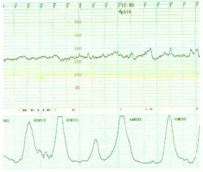
A Categoria III - anormal; resolução da gestação por cesárea devido ao risco de óbito fetal iminente por suspeita de anóxia fetal.
B Categoria II - indeterminada; oferecer dieta leve e mudança de decúbito para reavaliar mudança para categoria I – normal.
C Categoria II - indeterminada; resolução da gestação por cesariana pela suspeita de sofrimento fetal agudo.
D Categoria I - normal; observar a evolução do trabalho de parto e verificar condições materna e fetal periodicamente.
Questão 288 · Quarto período primeira hora pós parto período de Greenberg · 4000190534Parturiente de 39 anos com 39 semanas de gestação, multípara, com 5 partos normais anteriores com as seguintes informações do pré-natal: 5 consultas, última há 15 dias. Exames realizados no 1º trimestre: sorologias negativas, hemograma normal e glicemia 98mg/dL. Último exame obstétrico: Bom estado, corada, hidratada, peso 95kg (ganho ponderal de 15kg), PA: 130x90mmHg, altura uterina 39cm, BCF presente, movimentação fetal presente, toque: colo amolecido, pérvio para 1,5cm, não esvaecido, apresentação cefálica, alta e móvel. Entrou em trabalho de parto em casa, e o parto ocorreu por via vaginal sem episiotomia com dequitação espontânea após 10 minutos. Após o parto, a paciente foi encaminhada ao hospital para acompanhamento do puerpério imediato e internada. Diante do caso, assinale a alternativa correta sobre a hospitalização dessa paciente.
A A administração de ocitocina e a valorização da 1a hora pós-parto em ambiente hospitalar reduz a mortalidade materna em pacientes com fatores de risco como ela.
B A internação foi desnecessária, já que a paciente não apresentou intercorrências no 1º, 2º e 3º períodos do parto, dessa forma não teria problemas no 4º período do parto.
C Diante dos fatores de risco apresentados, a paciente deve ser monitorada em unidade de terapia intensiva pois o risco de hemorragia é considerado alto.
D A internação foi desnecessária, já que a recomendação de observação do sangramento puerperal e massagem uterina seriam suficientes para prevenção.
Questão 289 · Anamnese · 4000190533Secundigesta de 36 anos com um parto fórcipe anterior há 10 anos chega à 1ª consulta de prénatal no início da gestação. Refere muita preocupação por ter sofrido laceração e rotura perineal que evoluiu com incontinência fecal por ter sido submetida ao fórceps no parto anterior. Assinale a alternativa que descreve a melhor conduta a ser tomada pelo obstetra nesse primeiro momento.
A Tranquiliza-la sobre o risco da rotura durante os partos vaginais e determinar nessa consulta a indicação de parto cesáreo quando atingir o termo da gestação.
B Tranquiliza-la, realizar o exame perineal para se certificar sobre a rotura relatada e recriminar a conduta do colega que indicou o parto fórceps, caracterizando-o como violência obstétrica.
C Tranquiliza-la e orientá-la quanto à elaboração de plano de parto. Orientar sobre a segurança das vias de parto adequadas quando oportunamente entrar em trabalho de parto.
D Tranquiliza-la esclarecendo que a intercorrência no parto anterior não ocorrerá, necessariamente, neste parto e que no plano de parto deverá constar a indicação de parto vaginal.
Questão 290 · Indicações e contraindicações · 4000190442Paciente GII PI 1N (há 3 anos) A0, deu entrada no pronto-socorro obstétrico (PSO) por perda de líquido via vaginal há cerca de 2 horas. IG por ultrassom precoce de 36 semanas. Nega comorbidades. Pesquisa de EGB (Streptococcus agalactiae beta hemolítico do grupo B) negativo (< 5 semanas). Nega dor tipo contração uterina. Ao exame obstétrico: DU (dinâmica uterina) ausente, exa- me especular: saída de líquido claro pelo orifício externo do colo uterino, BCF (batimentos cardíacos fetais): 140 bpm, MF presentes, toque vaginal (TV): colo impérvio, grosso e posterior. Cardiotocogra a: normal. PA 100 x 70 mmHg. Assinale a alternativa que demonstra a conduta adequada para o caso.
A Coleta de hemograma, PCR, Urocultura. Se exames normais, alta, com orientações de retorno no PSO 3/3 dias.
B Coleta de hemograma, PCR e urocultura. Se exames alterados, prescrever Amoxicilina e Azitromicina via oral, via ambulatorial e retorno ao pré-natal.
C Internação, coleta de exames laboratoriais e parto cesariano.
D Internação, coleta de exames laboratoriais e indução do trabalho de parto com misoprostol.
E Internação, coleta de exames laboratoriais e dilata- ção do colo uterino com sonda de Foley.
Questão 291 · Prof ilaxia materna intraparto · 4000190440Pesquisa Streptococcus do grupo B Strepto B EGB swab para pequisa Strepto B Paciente GII PI 1N (há 3 anos) A0, deu entrada no pronto-socorro obstétrico (PSO) por perda de líquido via vaginal há cerca de 2 horas. IG por ultrassom precoce de 36 semanas. Nega comorbidades. Pesquisa de EGB (Streptococcus agalactiae beta hemolítico do grupo B) negativo (< 5 semanas). Nega dor tipo contração uterina. Ao exame obstétrico: DU (dinâmica uterina) ausente, exa- me especular: saída de líquido claro pelo orifício externo do colo uterino, BCF (batimentos cardíacos fetais): 140 bpm, MF presentes, toque vaginal (TV): colo impérvio, grosso e posterior. Cardiotocogra a: normal. PA 100 x 70 mmHg. Em um determinado momento, a paciente entrou em tra- balho de parto. Nega alergias. Foi reavaliada, sendo o exame físico/obstétrico: bom estado geral, afebril, eucárdica e eupneica; TV: 4-5 cm, médio, medianizado, bolsa rota (líquido claro) há 18 horas, sem sinais de sometria, apresentação cefálica. Exames laboratoriais normais. DU: 3/10’/40”, BCF: 130 bpm. Sobre a continuação da condução do caso, assinale a alternativa correta
A Introdução de Ampicilina dose de ataque e manutenção, por prematuridade fetal.
B Introdução de Ampicilina dose de ataque e manutenção, por ser um caso de RPMO (ruptura prematura de membranas) há 18 horas.
C Introdução de Penicilina G cristalina dose de ataque e manutenção, por prematuridade fetal.
D Introdução de Penicilina G cristalina dose de ataque e manutenção, por ser um caso de RPMO (ruptura prematura de membranas) há 18 horas.
E Não há necessidade de antibioticoprofilaxia, por pesquisa EGB ter sido negativa há menos de 5 semanas, no pré-natal.
Questão 292 · Diagnóstico · 4000190439Paciente de 38 anos, GII P0 AI, deu entrada no PSO com queixa de sangramento vaginal em pequena quantida- de e dor em hipogástrio de início súbito. IG cronológica de 7 semanas. Nega ultrassom prévio. PA 90 x 60 mmHg, FC: 105 bpm, exame físico: TV (toque vaginal) bimanual: dor à descompressão brusca positiva, colo impérvio, grosso e posterior. Dor à mobilização do colo uterino. Fundo uteri- no intra-pélvico. Especular: vagina com mínima quantidade de sangue. Sem sangramento ativo. Beta HCG quantitativo: 3.000 mIU/mL. Diante do quadro exposto, assinale a alter- nativa que apresenta a suspeita diagnóstica mais provável.
A Aborto retido.
B Ameaça de aborto.
C Gestação molar.
D Gestação ectópica rota.
E Torção de ovário.
Questão 293 · Tratamento · Quadro clínico · 4000190437Paciente de 34 anos, GII PI 1C (há 5 anos) A0, IG 34 semanas. Deu entrada do PSO com queixa de dor abdo- minal de início súbito e sangramento vaginal em moderada quantidade vermelho escuro. Ao exame físico/obstétrico: PA 150 x 100 mmHg, BCF 120 bpm, DU ausente, tônus uterino aumentado, dor à descompressão brusca negati- va. Especular: moderada quantidade de sangue vermelho escuro coletado em conduto vaginal, associado a coágu- los. Frente ao caso, assinale a alternativa que representa o diagnóstico e a conduta adequados.
A Placenta prévia; ultrassom transvaginal, internação para controle de sangramento.
B Descolamento prematuro de placenta; cesárea de emergência.
C Rotura de vasa prévia; cesárea de emergência.
D Ruptura de seio marginal; internação e controle de sangramento.
E Rotura uterina; cesárea de emergência.
Questão 294 · Diagnóstico · 4000190355Outubro é o mês eleito para o combate a sí lis congênita. Em 2021 foram noti cados 355 casos, em 2020 foram 370 e em 2019 foram 330 casos em todo o estado da Paraíba. A diferença do número de casos pode ter sido decorrente da falta do diagnóstico precoce e tratamento secundários à pandemia pela covid-19. O controle e redução desses números está diretamente relacionado à aplicação das diretrizes para o controle da sífilis congênita traduzido pelos exames abaixo:
A FTA-Abs (Fluorescent Treponema Antibody Absorvent Test), e o VDRL (Veneral Diseases Research Laboratoy) são respectivamente teste para gestante e para recém-nascido de mãe com sífilis.
B O VDRL (Veneral Diseases Research Laboratoy) é um bom teste para diagnóstico mas não se presta para seguimento.
C FTA-Abs (Fluorescent Treponema Antibody Absorvent Test), sendo um teste treponêmico, é usado para diagnóstico e seguimento da gestante.
D FTA-Abs (Fluorescent Treponema Antibody Absorvent Test), e o VDRL (Veneral Diseases Research Laboratoy), são respectivamente testes para rastreamento e seguimento.
E O VDRL (Veneral Diseases Research Laboratoy) e o RPR (Rapid Plasma Reagin) são os testes utilizados para a triagem sorológica da sífilis em gestantes e da adquirida.
Questão 295 · PréEclâmpsia · 4000190332A redução de desfechos graves de pré-eclâmpsia está na dependência de:
A Avaliação do balanço angiogênico (PIGF) pré-concepcional.
B USG doppler das artérias uterinas com 20 semanas.
C Reposição de cálcio (principalmente em mulheres com baixa ingesta diária) e AAS em baixa dose (75 a 150 mg) em mulheres selecionadas com fatores de risco.
D Controle hipotensor efetivo de pressão arterial, tendo como meta os níveis de normotensão.
E Interrupção precoce de gestantes identificadas com fatores de risco.
Questão 296 · Seguimento pós molar · 4000190331Com relação ao seguimento de paciente acometida por doença trofoblástica gestacional:
A USG transvaginal semanal até remissão dos cistos tecaluteínicos.
B A contracepção imediata deve ser instituída por métodos naturais até a normalização dos títulos de beta-hCG.
C Dosagem de beta-hCG sérico semanal até a normalização por três dosagens consecutivas, seguida de avaliação mensal durante seis meses.
D Pesquisa trimestral de metástase hepática, pulmonar e cerebral.
E Cistos tecaluteínicos devem receber radioterapia em mulheres sem prole constituída visando a redução de riscos de torção e de metástase.
Questão 297 · Sangramento segunda metade da gestação · Placenta prévia PP · 4000190329Diagnóstico dif erencial sangramento da segunda metade da gestação As hemorragias da segunda metade da gestação respondem por uma parcela significativa de morbimortalidade materna e fetal. Com relação à conduta baseada na sua etiologia podemos afirmar que:
A No acretismo placentária de mulheres sem prole constituída objetivando preservar o útero deve ser feita a ressecção da porção uterina acometida e sutura posterior.
B Frente a um diagnóstico de placenta prévia por ultrassom é necessário, principalmente em casos de pacientes com cicatrizes uterinas, solicitar avaliação sobre a existência ou não de acretismo placentário. Essa informação é de enorme utilidade para o planejamento do parto e para a prevenção da morbimortalidade associada a essa condição.
C A histerectomia subtotal é o tratamento-padrão nos casos de incretismo ou percretismo.
D A ligadura de artéria ilíaca interna (hipogástrica) deve ser considerada, e pode resolver o quadro hemorrágico de placenta increta e percreta nas mulheres que pretendem ter filhos.
E A paciente com acretismo placentário deverá receber imediatamente após extração fetal ocitocina endovenosa, metilergometrina intramuscular e misoprostol para auxiliar na contratilidade uterina.
Questão 298 · Assistência ao parto normal · 4000190327A Organização Mundial da Saúde (OMS) determina como nascimento normal aquele com início espontâneo do trabalho de parto (TP), em pacientes com risco habitual e que permanecem assim durante todo o pré- parto e o parto. São recomendações para a assistência aos quatro estágios do processo de nascimento:
A Nas parturientes de risco habitual não há necessidade de monitorização eletrônica contínua no primeiro período, e é mandatória no segundo período na assistência ao parto seguro.
B A amniotomia de rotina pode ser realizada nas gestações de alto risco por antecipar substancialmente a evolução do TP.
C As evidências recomendam que a monitoração eletrônica contínua da frequência cardíaca fetal deve ser utilizada para avaliação do bem-estar fetal diante da eliminação de mecônio durante o TP.
D A monitorização contínua deve ser restrita às gestações de alto risco, ou nas situações de anormalidades diagnosticadas durante o trabalho de parto.
E O contato pele a pele deve ser realizado após a ligadura do cordão nos partos vaginais e após sutura dos planos nas cesarianas.
Questão 299 · Conduta na RPM entre 34 a 36 67 semanas · Antibioticoprof ilaxia para EGB na RPM · 4000190324Paciente 27 anos, G2 P1, 1 parto eutócico, idade gestacional 34 semanas, admitida com bolsa rota há 4 horas. Na admissão:
A A corioamnionite é indicação absoluta de interrupção da gestação, independentemente da idade gestacional, e deve ser antecedida de antibiótico profilático e corticoide para garantir maturidade pulmonar fetal.
B Inibir trabalho de parto e administrar: ampicilina 2g IV 6/6 horas por 48 horas + azitromicina 1g VO dose única. Após 48 horas, substituir a ampicilina por amoxicilina 500 mg VO de 8/8 horas por 5 dias, visando aumentar período de latência entre a perda de líquido e o trabalho de parto.
C Inibir trabalho de parto e administrar: betametasona 12mg via intramuscular de 24/24 horas por 48 horas. Droga alternativa: dexametasona 6mg, IM, de 12/12h por 48h (4 doses – total 24mg) visando acelerar a maturidade pulmonar fetal.
D Prescrever sulfato de magnésio visando neuroproteção fetal entre 28 e 36,6 semanas.
E Pesquisar a presença de infecção materna e/ou fetal: clínica (febre) + exames laboratoriais; solicitar pesquisa de streptococcus do grupo B com coleta de Swab vaginal e anal.
Questão 300 · Fatores de risco · Descolamento prematuro de placenta DPP · 4000190320O descolamento prematuro de placenta normalmente inserida (DPPNI) representa causa significativa de morbimortalidade materna e perinatal. A taxa de mortalidade perinatal é aproximadamente 20 vezes maior em relação às gestações sem DPP (12% versus 0,6%, respectivamente). A maioria das mortes perinatais (até 77%) ocorre intraútero. É a prematuridade a principal causa de mortalidade pós-natal. Cumpre-nos frente a um sangramento da segunda metade da gravidez
A associar às síndromes hipertensivas que representam a condição clínica mais frequentemente associada ao DPP. As mulheres hipertensas têm um risco cinco vezes maior de DPP grave em comparação com mulheres normotensas, e a terapia anti-hipertensiva não parece reduzir o risco de descolamento placentário entre mulheres com hipertensão crônica.
B realizar sistematicamente USG pélvica e associar um hematoma retroplacentário ao DPPNI, sendo esse o achado clássico que apoia fortemente o diagnóstico clínico, e na sua ausência, a rotura de seio marginal, corresponde a causa mais frequente de sangramento.
C com aspecto vermelho vivo, em coágulos, indolor, feto vivo, indicar interrupção pela via obstétrica mais rápida e na dependência da idade gestacional.
D a ruptura uterina seguida de distúrbios de coagulação são as complicações maternas mais comuns do DPPNI e o sofrimento fetal por anóxia o desfecho mais comum aos fetos quando não interrompida a gestação em tempo hábil.
E evitar a amniotomia por aumentar hemorragia materna e induzir a passagem de tromboplastina para a corrente sanguínea da mãe, e elevar riscos de infecção materna e fetal, em especial pelo estreptococos beta-hemolítico.
Questão 301 · Assistência prénatal · 4000190310A Organização Mundial da Saúde (OMS) definiu que a proteção à maternidade tem como objetivo garantir a saúde das mulheres durante a gestação, o puerpério e o aleitamento, além de ensinar os cuidados dispensados às crianças. Na assistência pré-natal de risco habitual
A o uso de ácido fólico na dose de 0,4 mg/dia, com o objetivo de prevenir defeitos de fechamento do tubo neural, iniciado um mês antes da gravidez, deverá ser mantido durante o período de embriogênese (até 16 semanas). Ideal seria que as gestantes portadoras de doenças crônicas já estivessem com sua medicação de uso contínuo adequada previamente à gravidez.
B a prenhez intrauterina por ultrassonografia endovaginal corresponde a hCG acima de 5000 mLU/mL. Níveis entre 4000 e 3999mL/mL sugere gravidez anormal ou ectópica. Níveis de hCG maiores do que o normal indicam gravidez molar ou múltipla.
C a ultrassonografia morfológica de primeiro trimestre deve ser realizada entre a 14ª e 16ª semanas, com o objetivo de detectar a síndrome de Down (89%) e a trissomia do 18 (95%) através da medida da translucência nucal e avaliação do osso nasal eleva o índice de detecção de síndrome de Down para cerca de 95%.
D o rastreamento de diabetes gestacional é na primeira consulta pré-natal com 75 mg de dextrozol, e os valores propostos para diagnóstico foram jejum de 90 mg/dL; 1ª hora de 165 mg/dL; 2ª hora de 143 mg/dL.
E a cultura de estreptococo do grupo B do introito vaginal e perianal se associa ao aumento da morbimortalidade perinatal. Pode ser transmitida ao recém-nascido durante a gestação e o parto, levando à pneumonia, meningite e septicemia. O exame deve ser realizado na primeira consulta pré- natal e, quando negativo, repetir com 22 semanas por volta de 35 semanas; e quando positivo, fazer a antibioticoprofilaxia anteparto.
Questão 302 · Tratamento · Abaixo de 34 semanas · 4000190308O trabalho de parto prematuro (TPP) é responsável por 75% dos nascimentos antes da 37ª semana de gestação. A sua prevenção durante o pré-natal é poucas vezes possível, pois, geralmente, apresenta etiologia multifatorial ou desconhecida. Na assistência à mulher com TPP:
A Não é recomendado o uso de antibióticos de largo espectro com o intuito de prolongar a gestação, considerando baixa efetividade e efeitos adversos fetais.
B A utilização de 400 mg/d de progesterona natural pela via vaginal em pacientes com TPP anterior, gemelar, macrossomia, polidrâmnio, incontinência istimo cervical, aumenta o período de latência para o parto de 12 dias.
C Recomendada entre a 26ª e a 34ª semana de gestação, é utilizada a betametasona sob a dose de 12 mg por via intramuscular ao dia, com intervalo de 24 horas num total de duas aplicações. O efeito máximo inicia-se após 24 horas e persiste por 7 dias.
D Há três tipos de uterolíticos mais utilizados em TPP: agonistas beta-adrenérgicos, bloqueadores do canal de cálcio e antagonistas do receptor de ocitocina. Outras drogas também utilizadas para inibir o TPP (sulfato de magnésio, inibidores de prostaglandinas e doadores de óxido nítrico) e devem ser utilizados entre 24 e 36 semanas, tendo seu início no diagnóstico e manutenção até feto atingir maturidade.
E O TPP tardio pode ser conduzido na atenção secundária à saúde, e o TPP precoce em serviço terciário de atenção à saúde.
Questão 303 · Imunizaçao na gestação · 4000190307Mulher de 30 anos de idade, com idade gestacional de 6 semanas, comparece à primeira consulta de pré- natal. Tem história prévia de três gestações e dois partos, sendo o último ocorrido há 1 ano. No momento está assintomática, e apresenta carteira de vacinação com duas doses de vacina para hepatite B, uma dose de DTPa, realizada na última gestação, e uma dose de vacina para In uenza, realizada na campanha do último ano. Quais as orientações que devem ser feitas neste momento a cerca da vacinação da paciente?
A Realizar nova dose de Influenza, no caso de nova campanha.
B Reiniciar esquema vacinal para hepatite B.
C Não há necessidade de qualquer vacina nessa gestação.
D Não realizar nova dose de DTPa nessa gestação.
Questão 304 · Imunizaçao na gestação · 4000190306Qual vacina NÃO deve ser indicada para a paciente durante a gestação?
A Triplice viral
B Febre amarela
C Meningoco
D Pneumococo
Questão 305 · Herpes na gestação · Indicações de cesárea · 4000190303Mulher de 36 anos de idade, primigesta, com idade gestacional de 38 semanas, é admitida na unidade de emergência com queixa de saída de secreção vaginal líquida há 3 horas e contrações irregulares. Ao exame clínico, apresenta dinâmica uterina de 2 contrações de 45 segundos em 10 minutos, líquido claro coletado em fundo de saco posterior visualizado em exame especular e toque vaginal com 5cm de dilatação cervical. À inspeção vulvar, são visualizadas lesões vesiculares e ulceradas, intensamente dolorosas, que segundo a paciente surgiram há 2 dias. Também relatou história de quadro semelhante anteriormente à gestação. A sorologia para HIV foi negativa e o VDRL foi de 1:8. A paciente nega ter realizado qualquer tratamento previamente. Qual é a conduta que deve ser adotada neste momento?
A Iniciar esquema de aciclovir e realizar assistência ao parto.
B Indicar a realização imediata de parto cesárea.
C Iniciar ocitocina para diminuir o tempo de trabalho de parto.
D Assistência ao trabalho de parto por via baixa.
Questão 306 · Incidência · Parto cesárea · Assistencia ao parto pélvico · 4000190302Estudos recentes da OMS sugerem que taxas populacionais de cesariana superiores a 10% não contribuem para a redução da mortalidade materna, perinatal ou neonatal. Considerando as características da nossa população, que apresenta entre outros distintivos um elevado número de operações cesarianas anteriores, a taxa de referência ajustada para a população brasileira gerada a partir do instrumento desenvolvido para esse fim pela OMS estaria ao redor de 25-30%. Objetivando alcançar essa meta, sobre o parto cesariana:
A A avaliação ultrassonográfica da cicatriz uterina pós-cesariana segmentar e pelvimetria são recomendadas de rotina em mulheres com uma ou mais cesarianas prévias que irão ser submetidas à condução de parto eutócico.
B No caso de gestação gemelar não complicada, cujo primeiro feto tenha apresentação cefálica e o segundo pélvico, a cesariana é recomendada.
C A cesariana é recomendada como forma de prevenção da transmissão vertical em gestantes com infecção por vírus da hepatite B, C e herpes tipo ll.
D Em apresentação pélvica, e na ausência de contraindicações, a versão cefálica externa é recomendada a partir de 36 semanas de idade gestacional, mediante termo de consentimento livre e esclarecido. A versão cefálica externa deve ser ofertada às mulheres e realizada por profissional experiente com essa manobra em ambiente hospitalar.
E É recomendado o cuidado térmico para o recém-nascido de cesariana, e o contato pele-a-pele precoce entre a mãe e o recém-nascido deve ser assegurado e facilitado imediatamente após concluído o procedimento cirúrgico no ambiente de pós-operatório.
Questão 307 · Diagnóstico da síf ilis · 4000190301Mulher de 36 anos de idade, primigesta, com idade gestacional de 38 semanas, é admitida na unidade de emergência com queixa de saída de secreção vaginal líquida há 3 horas e contrações irregulares. Ao exame clínico, apresenta dinâmica uterina de 2 contrações de 45 segundos em 10 minutos, líquido claro coletado em fundo de saco posterior visualizado em exame especular e toque vaginal com 5cm de dilatação cervical. À inspeção vulvar, são visualizadas lesões vesiculares e ulceradas, intensamente dolorosas, que segundo a paciente surgiram há 2 dias. Também relatou história de quadro semelhante anteriormente à gestação. A sorologia para HIV foi negativa e o VDRL foi de 1:8. A paciente nega ter realizado qualquer tratamento previamente. Qual é a conduta que deve ser adotada em relação ao resultado das sorologias?
A Iniciar o tratamento com antibiótico para sifilis.
B Repetir a sorologia para sifilis e HIV novamente em 1 mês.
C Aguardar as sorologias do recém-nascido para definir a conduta.
D Realizar teste treponêmico para confirmar o diagnóstico.
Questão 308 · Síndrome da transf usão f etof etal STFF · Introdução · Etiologia · 4000190300O crescimento intrauterino restrito (CIUR), apresenta morbidade perinatal cinco vezes maior quando comparado aos fetos com desenvolvimento adequado. Atenção especial deve ser dada à(ao)
A uso do doppler da artéria uterina é o principal preditor de CIUR quando feito na fase préconcepcional.
B diabetes gestacional insulinodependente cursa em 30% das gestações com comprometimento do desenvolvimento fetal pelas malformações comuns a esses fetos.
C tipo II – simétrico ou intrínseco, ou proporcional, ou hipoplásico: ocorre em 20% dos casos, sendo decorrente de fatores etiológicos que atuam no final da gravidez, na fase de hiperplasia celular, reduzindo o número de células dos órgãos.
D tipo I – assimétrico ou desproporcional: ocorre em 75% dos casos, sendo geralmente decorrente de insuficiência placentária.
E gestação múltipla tende a manifestar redução de crescimento de um ou ambos os fetos, quando comparados com fetos de gestação única. É mais frequente em gestações monocoriônicas complicadas pela síndrome da transfusão feto-fetal.
Questão 309 · Inf ecção Urinária e Bacteriúria Assintomática na gestação ITU · 4000190298Mulher, com idade gestacional de 20 semanas, comparece à unidade de emergência com queixa de dor em baixo ventre, ardência urinar e aumento da frequência de micção há dois dias. Nega febre ou outros sintomas no momento. Tem história de quatro gestações, com três partos, sendo os dois últimos cesarianas. Também relatou que teve um episódio semelhante com 13 semanas de gestação, o qual foi tratado com resolução total dos sintomas, e que na segunda consulta de pré-natal precisou fazer uso de antibiótico para tratar uma infecção urinária (ITU), mesmo sem ter nenhum sintoma na ocasião. Qual é a conduta que deve ser adotada neste momento?
A Aguardar resultado de urocultura e antibiograma para iniciar tratamento.
B Solicitar uma ultrassonografia de vias urinárias para definição da terapêutica.
C Internar a paciente para realização de antibioticoterapia endovenosa.
D Tratar a ITU imediatamente após a coleta de material para urocultura.
Questão 310 · Abortamento completo · Ameaça de abortamento · 4000190296M.S.B., 32 anos, GII P0 AI, deu entrada no PSO com sangramento vaginal em pequena quantidade e leve dor tipo cólica. Refere preocupação, pois já teve um aborto anterior. Beta HCG quantitativo de 450 mUI/mL. IG cronológica: 5 semanas. Refere ciclos menstruais regulares, antes da gestação. Ao exame físico: corada, eucárdica. Especular: colo uterino sem lesões. Pequena quantidade de sangue em fórnice posterior. Toque vaginal bimanual: colo impérvio, fundo uterino intrapélvico. Anexos não palpáveis. Assinale a alternativa que apresenta os exames complementares importantes para a confirmação diagnóstica e conduta para o caso.
A Ultrassom transvaginal e hemograma.
B Ultrassom transvaginal e tipagem sanguínea.
C RNM de pelve e tipagem sanguínea.
D Tomografia computadorizada de pelve e tipagem sanguínea.
E RNM de pelve e hemograma.
Questão 311 · Inf ecção Urinária e Bacteriúria Assintomática na gestação ITU · 4000190295Mulher, com idade gestacional de 20 semanas, comparece à unidade de emergência com queixa de dor em baixo ventre, ardência urinar e aumento da frequência de micção há dois dias. Nega febre ou outros sintomas no momento. Tem história de quatro gestações, com três partos, sendo os dois últimos cesarianas. Também relatou que teve um episódio semelhante com 13 semanas de gestação, o qual foi tratado com resolução total dos sintomas, e que na segunda consulta de pré-natal precisou fazer uso de antibiótico para tratar uma infecção urinária (ITU), mesmo sem ter nenhum sintoma na ocasião. Considerando-se o histórico da paciente, qual é a orientação que deve ser realizada após a resolução do quadro atual?
A Indicar que a paciente realize profilaxia para ITU sempre após o coito.
B Solicitar nova urocultura após o tratamento e, se negativa, não indicar a profilaxia.
C indicar a profilaxia antibiótica para ITU até o final do período puerperal.
D Iniciar a profilaxia antibiótica, caso a paciente tenha novo episódio de infecção urinária.
Questão 312 · Fatores de risco da RPM · 4000190290A vulvovaginite que mais fortemente se associa à prematuridade e à amniorrexe prematura é a
A vaginose bacteriana.
B vaginite citolítica.
C tricomoníase vaginal.
D infecção por HPV.
E candidíase.
Questão 313 · Artéria umbilical · 4000190287S.A., 34 anos, GIV PII (1N 1C) AI, IG usg precoce: 29 semanas e 1 dia, deu entrada no PSO com PA de 150 x 100 mmHg, encaminhada do pré natal, assintomática. Nega aumento prévio de níveis pressóricos. Ao exame obstétrico: AU 25 cm, DU ausente, BCF 150 bpm. Submetida a ultrassom obstétrico que demonstrou: FUV (feto único e vivo), apresentação cefálica, placenta anterior, grau II de Grannum, MBV (maior bolsão vertical): 2,5 cm, peso fetal 890 g, percentil 0,3. Exames laboratoriais: relação proteína na urina / creatinina na urina: 0,4. Realizado, também, doppler da artéria umbilical: diástole zero (de acordo com a imagem a seguir) e do ducto venoso: IP (índice de pulsatilidade) 0,45. Assinale a alternativa que apresenta a interpretação correta da imagem a seguir.
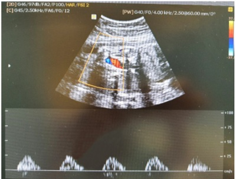
A Provavelmente o índice de resistência da artéria cerebral média encontra-se normal.
B Provavelmente o índice de pulsatilidade da artéria cerebral média encontra-se aumentado.
C O ducto venoso está, necessariamente alterado, quando há diástole zero na artéria umbilical.
D Diminuição do índice de resistência da artéria umbilical.
E Aumento do índice de pulsatilidade da artéria umbilical.
Questão 314 · Períodos da gestação · 4000190284Paciente foi submetida a exame complementar, que demonstrou imagem intrauterina, anecogênica, em topogra a fúndica, contornos regulares, com diâmetro médio de 4,1 mm. Não identi cados embrião ou vesícula vitelínica em seu interior. Ovários sem alterações. Útero em anteversão, medindo 7,6 x 4,8 x 5,3 cm, volume de 103,7 cc. Assinale a alternativa que apresenta o diagnóstico final adequado.
A Aborto retido.
B Gestação incipiente.
C Mola completa.
D Pólipo endometrial.
E Mola parcial.
Questão 315 · Conduta · 4000190279S.A., 34 anos, GIV PII (1N 1C) AI, IG usg precoce: 29 semanas e 1 dia, deu entrada no PSO com PA de 150 x 100 mmHg, encaminhada do pré natal, assintomática. Nega aumento prévio de níveis pressóricos. Ao exame obstétrico: AU 25 cm, DU ausente, BCF 150 bpm. Submetida a ultrassom obstétrico que demonstrou: FUV (feto único e vivo), apresentação cefálica, placenta anterior, grau II de Grannum, MBV (maior bolsão vertical): 2,5 cm, peso fetal 890 g, percentil 0,3. Exames laboratoriais: relação proteína na urina / creatinina na urina: 0,4. Doppler velocimetria: Artéria umbilical: diástole zero. Ducto venoso: IP: 0,45. Artéria cerebral média: IP: 0,7. Diante desse caso, assinale a alternativa que apresenta conduta correta.
A Indução do trabalho de parto com Misoprostol.
B Internação e controle de doppler diário até IG 34 semanas, se ducto venoso mantiver-se normal.
C Internação, corticoterapia, sulfato de magnésio e parto cesáreo.
D Interrupção da gestação via alta com urgência.
E Preparo do colo uterino com sonda de Foley.
Questão 316 · Métodos mecânicos · 4000190277V.P., 30 anos, GIV PI 1C (há 3 anos) AII, IG usg precoce: 40 semanas. EGB (estreptococo grupo B) negativo. Comorbidade: hipotireoidismo, em uso de levotiroxina 100 mcg/dia. Veio ao PSO para avaliação da vitalidade fetal. Carditocografia normal. Assinale a alternativa que apresenta a conduta correta.
A Alta com retorno a cada 2-3 dias para controle da vitalidade fetal.
B Internação para parto cesáreo.
C Internação para preparo do colo uterino com sonda de Foley.
D Alta com retorno ao pré-natal 7/7 dias.
E Internação para indução do trabalho de parto com Misoprostol.
Questão 317 · Determinação da corionicidade e amnionicidade · 4000190272J.R.G., 35 anos, GII PI1C A0, IG cronológica de 18 semanas, deu entrada no PSO referindo dor em hipogástrio. Não iniciou pré-natal. Sem ultrassom prévio. Submetida a ultrassom “point of care”, para avaliar BCF, ILA e placenta. Identi cada imagem a seguir. De acordo com a imagem, assinale a alternativa que apresenta o diagnóstico correto.
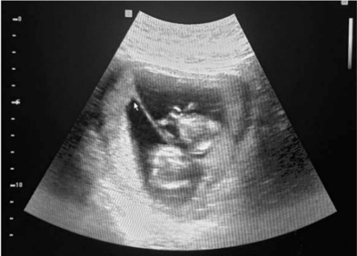
A Gestação única.
B Gestação gemelar dicoriônica e monoamniótica.
C Gestação gemelar monocoriônica e diamniótica.
D Gestação gemelar dicoriônica e diamniótica.
E Gestação gemelar monocoriônica e monoamniótica.
Questão 318 · Diagnóstico · 4000190259Paciente primigesta, IG usg: 8 semanas, veio à primeira consulta de pré-natal com resultado de glicemia de jejum de 93 mg/dL. Assinale a alternativa que apresenta o diagnóstico e/ou conduta correta frente a esse caso.
A Deve-se solicitar TOTG (teste oral de tolerância à glicose) com 24 a 28 semanas de idade gestacional.
B Trata-se de diabetes gestacional.
C Deve-se solicitar TOTG imediatamente.
D Trata-se de aumento do índice de resistência à insulina.
E Trata-se de diabetes mellitus pré gestacional (overt diabetes).
Questão 319 · Ameaça de abortamento · 4000190257M.S.B., 32 anos, GII P0 AI, deu entrada no PSO com sangramento vaginal em pequena quantidade e leve dor tipo cólica. Refere preocupação, pois já teve um aborto anterior. Beta HCG quantitativo de 450 mUI/mL. IG cronológica: 5 semanas. Refere ciclos menstruais regulares, antes da gestação. Ao exame físico: corada, eucárdica. Especular: colo uterino sem lesões. Pequena quantidade de sangue em fórnice posterior. Toque vaginal bimanual: colo impérvio, fundo uterino intrapélvico, colo indolor à mobilização. Anexos não palpáveis. Assinale a alternativa que apresenta a hipótese diagnóstica mais provável para o caso. Assinale a alternativa que apresenta a hipótese diagnóstica mais provável para o caso.
A Gestação molar.
B Ameaça de aborto.
C Aborto incompleto.
D Gestação ectópica.
E Aborto completo.
Questão 320 · Criterios diagnósticos da préeclampsia · Classif icação · 4000190256S.A., 34 anos, GIV PII (1N 1C) AI, IG usg precoce: 29 semanas e 1 dia, deu entrada no PSO com PA de 150 x 100 mmHg, encaminhada do pré natal, assintomática. Nega aumento prévio de níveis pressóricos. Ao exame obstétrico: AU 25 cm, DU ausente, BCF 150 bpm. Submetida a ultrassom obstétrico que demonstrou: FUV (feto único e vivo), apresentação cefálica, placenta anterior, grau II de Grannum, MBV (maior bolsão vertical): 2,5 cm, peso fetal 890 g, percentil 0,3. Exames laboratoriais: relação proteína na urina / creatinina na urina: 0,4. De acordo com o caso, assinale a alternativa que apresenta os diagnósticos corretos. De acordo com o caso, assinale a alternativa que apresenta os diagnósticos corretos.
A Síndrome hipertensiva gestacional; normoidrâmnio; RCIU tardio.
B Pré-eclâmpsia superajuntada; normoidrâmnio, RCIU tardio.
C Iminência de eclâmpsia; oligoâmnio; RCIU precoce.
D Pré-eclâmpsia; normoidrâmnio, RCIU precoce.
E Eclâmpsia; oligoâmnio; RCIU precoce.
Questão 321 · Classif icação de prematuridade · 4000190154No Brasil, o número de mortes por prematuridade, as xia e infecção é muito acima do esperado e, em grande parte, relacionado às causas sensíveis à atenção de qualidade no pré-natal e no nascimento. Nesse contexto, sobre o Recém-Nascido (RN) de baixo peso, é CORRETO afirmar que:
A O peso ao nascer deve ser inferior a 2.000g para que o recém-nascido possa ser classificado como RN de baixo peso, independentemente da idade gestacional.
B O RN de baixo peso, pode se subdividir em dois grupos, sendo RN de peso extremamente baixo ao nascer < 1.500g e baixo peso ao nascer entre 1.500g e 2.499g.
C O RN pré-termo, ou prematuro, é aquele que possui idade gestacional menor que 37 semanas, podendo ainda ser dividido em dois subgrupos: imaturidade extrema, com idade gestacional inferior a 28 semanas de gestação e RN pré-termo, de 28 a 36 semanas de gestação.
D A variação de peso considerada normal para cada período da gestação está entre os percentis de 20 e 80 e RN pode ser classificado como Pequeno para Idade Gestacional (PIG), se estiver abaixo de 20.
Questão 322 · O trabalho de parto e o parto · Avaliação inicial da parturiente · 4000190140O trabalho de parto consiste em uma série de contrações ritmadas e progressivas do útero que gradualmente movem o feto através da parte inferior do útero (colo do útero) e do canal vaginal (vagina) para o mundo exterior. A Organização Mundial da Saúde (OMS) desenvolveu uma classificação das práticas comuns na condução do parto normal, orientando para o que deve e o que não deve ser feito no processo do parto. Esta classificação foi baseada em evidências cienti cas concluídas através de pesquisas feitas no mundo todo. Sobre as boas praticas consideradas em obstetrícia, analise as afirmativas a seguir: I - A utilização da cardiotocogra a como teste de rotina a ser realizado na admissão da paciente mostrou inquestionáveis benefícios ao prognóstico fetal. II - Não há evidências de que a utilização rotineira de enemas e de tricotomia perineal durante o trabalho. III - O número de avaliações das condições do colo do útero não é estabelecido na literatura; porém, preconiza-se que seja realizada a quantidade mínima necessária para que se tenham informações sobre a evolução do trabalho de parto, sem que se aumente o risco de infecções. IV - Antes da analgesia intraparto é recomendado evitar o toque vaginal, com objetivo de evitar estimulação das contrações uterinas. Estão CORRETAS as afirmativas:
A I, II e IV apenas.
B II, III e IV apenas.
C I e IV apenas.
D II e III apenas.
Revisar: possível letra faltando em enunciado
Questão 323 · Síndrome de Down · Amniocentese · 4000190138Mulher de 34 anos, primigesta, com 24 semanas de gestação, é submetida a um exame ultrassonográfico devido a biometria discordante. A ultrassonogra a morfológica revela polidrâmnio com Índice de Liquido Amniótico (ILA) de 35cm. O abdome fetal revela uma massa cística na região abdominal direita, e outra na área abdominal esquerda. Assinale a alternativa que apresenta CORRETAMENTE a condição associada mais provável e o exame confirmatório.
A Síndrome de Down e cariótipo fetal por amniocentese.
B Hidropisia fetal e rastreio infeccioso.
C Diabetes Gestacional Descompensada e GPD após 75g de dextrosol.
D Tumores ovarianos congênitos e avaliação após o nascimento.
Questão 324 · Rotura de vasa prévia · 4000190137Gestante de 31 anos, G5P4, hoje com 35 semanas e 6 dias de gestação (FIV por infertilidade masculina), è internada na maternidade para avaliação de contrações uterinas. Faz uso de vitaminas, suplemento de ferro e ácido fólico. Ao exame, a PA: 120X80mmHg. FC: 90bpm e a FR: 17irpm. A altura do fundo do útero é de 35cm. O colo tem 4em de dilatação com apagamento de 90%. Após 2 horas de trabalho de parto, a paciente atinge 6em de dilatação. Após a ruptura da membrana espontânea da membrana, é observada quantidade moderada de sangramento vaginal. O traçado da cardiotocogra a era inicialmente 140bpm e depois aumenta para 170bpm. apresentando aspecto sinusoidal. Assinale a alternativa que apresenta a condição associada MAIS provavel
A Descolamento prematuro de placenta.
B Rotura de vasa prévia.
C Placenta prévia total.
D Rotura da artéria uterina.
Questão 325 · Fisiopatologia · 4000190135A gestação é caracterizada por acréscimo na resistência periférica à insulina e por incremento na produção de insulina pelas células beta do pâncreas. A resistência à insulina aumenta durante a gestação em virtude da secreção placentária de alguns hormônios considerados diabetogênicos, como hormônio do crescimento, cortisol e hormônio lactogênico placentário. Em relação a Diabetes Mellitus Gestacional (DMG), são considerados fatores de risco para DMG, EXCETO:
A Antecedente familiar de primeiro grau de diabetes mellitus.
B Antecedente de macrossomia fetal e/ou feto grande para a idade gestacional.
C Hipertensão arterial.
D História obstétrica de malformação fetal.
Questão 326 · Obstetrícia · 4000190103Considerando as diretrizes brasileiras do Ministério da Saúde (INCA, 2016) para o rastreamento do câncer de colo uterino, é correto afirmar que:
A a coleta do exame colpocitológico em gestantes deve ser evitada, assim como o esfregaço endocervical
B mulheres com vírus HIV devem realizar o exame colpocitológico anualmente caso os dois primeiros exames com intervalo de 6 meses estejam normais
C a faixa etária recomendada para rastreamento é de 25 a 60 anos, com exames a cada três anos caso os dois primeiros exames com intervalo anual estejam normais
D a utilização de estrogênio tópico previamente à realização da coleta deve ser evitada nas mulheres pósmenopausa, sob o risco de aumentar os resultados falso-positivos
Questão 327 · Obstetrícia · 4000190100A sí lis afeta um milhão de gestantes por ano em todo o mundo, levando a mais de 300 mil mortes fetais e neonatais e colocando em risco de morte prematura mais de 200 mil crianças. Na América Latina e Caribe, estima-se que entre 166.000 e 344.000 crianças nasçam com sí lis congênita anualmente (Boletim Epidemiológico da Sífilis, 2019). Sobre a sífilis na gestação, é correto afirmar que:
A as taxas de infecção por sífilis vêm diminuindo no Brasil ao longo dos últimos anos
B a infecção prévia confere imunidade protetora, sendo desaconselhado o teste de VDRL nesses casos
C a queda da titulação do VDRL em pelo menos duas diluições, após três meses do término do tratamento, é o controle de cura
D o teste rápido de sífilis, por ser um teste treponêmico, está indicado para o monitoramento da resposta ao tratamento
Questão 328 · Obstetrícia · 4000190098Mulher de 54 anos, G1P1A0 (1 parto vaginal), busca sua Unidade de Atenção Primária para atendimento relatando hipertensão arterial e dislipidemia. A última menstruação ocorreu há cerca de três anos e, no momento, queixa-se de fogachos, dispareunia e ressecamento vaginal. Está em uso de iso avona de soja 150mg/dia com significativa melhora dos sintomas. Há três meses, apresentou sangramento vaginal observado em duas ocasiões. Nega dor pélvica ou sintomatologia urinária. Nesse atendimento, a médica deve:
A contraindicar uso de isoflavona de soja pelo risco de piora do sangramento uterino disfuncional
B prescrever terapia de reposição hormonal visando à melhoria da qualidade de vida no climatério
C solicitar histeroscopia diagnóstica para avaliação do endométrio e investigação de possível neoplasia
D orientar que o sangramento vaginal apresentado tem caráter autolimitado, não demandando investigação adicional
Questão 329 · Inf ecção Urinária e Bacteriúria Assintomática na gestação ITU · 4000190070Assinale a alternativa que apresenta os antimicrobianos que NÃO devem ser utilizados no tratamento de infecção urinária na gestação.
A Cefalosporinas.
B Quinolonas.
C Nitrofurantoína.
D Amoxicilina.
Questão 330 · Exames laboratoriais · 4000190006Exame não necessário no primeiro trimestre da gravidez.
A Hemograma Completo.
B Urina tipo I com Urocultura.
C Glicemia.
D Pesquisa de colonização por GBS.
Questão 331 · Sinais de presunção de gestação · 4000190004Dentre os sinais de presunção de gravidez, qual a alternativa incorreta.
A Atraso menstrual.
B Salivação excessiva.
C Amolecimento da cérvice uterina.
D Coloração violácea vulvar.
Questão 332 · Cálculo da data provável do parto DPP regra de Negele · 4000190002Paciente chega ao consultório com data de ultima menstruação (DUM) 13/09/2022. Segundo as diferentes formas de cálculo a data provável de parto seria (DPP).
A 17/5/2023.
B 20/06/2023.
C 01/7/2023.
D 10/06/2023.
Questão 333 · Abortamento inevitável · Abortamento incompleto · 4000190001Caracteriza-se por perda da integridade do ovo, sangramento moderado a acentuado contendo coágulos e/ou restos ovulares, colo uterino permeável, dor em cólica de forte intensidade e redução do volume uterino em relação à idade gestacional. São indicativos de:
A Ameaça de abortamento.
B Aborto retido.
C Aborto infectado.
D Aborto inevitável/incompleto.
Questão 334 · Fisiopatologia · 4000189999A Diabetes Mellitus gestacional (DMG) é definida como uma alteração no metabolismo dos carboidratos, resultando em hiperglicemia de intensidade variável, que é diagnosticada pela primeira vez ou se inicia durante a gestação, podendo ou não persistir após o parto. A prevalência estimada de DMG no Brasil é de 7,6% entre as gestantes com mais de 20 anos. Existem fatores de risco que devemos identi car e acompanhar. Assinale o que não caracterizado como fator de risco.
A Baixa estatura (≤ 1,50m).
B Fator RH Negativo.
C Sobrepeso, obesidade ou ganho de peso excessivo na gestação atual.
D Síndrome de ovários policísticos.
Questão 335 · Préeclâmpsia com sinais de gravidade · 4000189992A pré-eclâmpsia é classificada em leve ou grave, de acordo com o grau de comprometimento. Considera-se grave quando presente os critérios. Exceto:
A Pressão arterial diastólica igual/maior que 110mmHg.
B Proteinúria igual/maior que 2,0g em 24 horas ou 2+ em fita urinária.
C Idade gestacional de 16 semanas.
D Oligúria (menor que 500ml/dia, ou 25ml/hora).
Questão 336 · Obstetrícia · 4000189843G.N., 59 anos, negra, casada, queixa de perda urinária há 3 anos ao tossir e ao gargalhar. Nega noctúria ou urge-incontinência. Nega disúria ou polaciúria. 3G 3P (vaginais). Exame físico: BEG, perda urinária à manobra de esforço. Especular: colo epitelizado, conteúdo siológico, procidência da parede vaginal anterior atingindo o intróito vaginal à Valsalva, quando o ponto Ba mede 0. Realizou urina tipo 1 e urocultura, que estavam normais. Também fez teste urodinâmico que revelou perda urinária com pressão de 25 cm H2O. Pela história clínica e segundo as medidas de POP-Q, esta paciente apresenta:
A incontinência urinária de esforço por hiperatividade do detrusor e prolapso parcial da vagina posterior.
B incontinência urinária de esforço por hipermobilidade uretral e prolapso parcial da vagina anterior.
C incontinência urinária de esforço por hipermobilidade uretral sem prolapso vaginal.
D incontinência urinária de esforço por hiperatividade do detrusor e prolapso parcial da vagina anterior.
E incontinência urinária de esforço por hiperatividade do detrusor e prolapso total da vagina anterior
Questão 337 · Obstetrícia · 4000189841A tríade clássica por alterações dos neonatos clinicamente alterados pela infecção fetal da toxoplasmose é:
A macrocrania, coriorretinite e retardo mental.
B fenda palatina, coriorretinite e hidrocefalia.
C coriorretinite, calcificações intracranianas e hidrocefalia.
D calcificações intracranianas, microcefalia e coriorretinite.
E hidrocefalia, coriorretinite e convulsões.
Questão 338 · Obstetrícia · 4000189840Uma secundigesta de 23 anos é exposta à varicela no último mês de gestação. Ela não tem história anterior desta virose. Recomenda-se:
A vacina da varicela dentro de 24h.
B administração de vacina e aciclovir.
C administração imediata de VZIG (imunoglobulina varicela-zoster) e aciclovir.
D teste sorológico imediato para varicela e, se resultado negativo, administrar VZIG.
E VZIG nas próximas 96h.
Questão 339 · Obstetrícia · 4000189838O ultrassom obstétrico de 1º trimestre revela feto único, vivo, com comprimento cabeça-nádega de 50mm, BCF 160bpm e translucência nucal igual a 6,6mm. A placenta apresenta-se com várias áreas císticas em meio a tecido trofoblástico normal. Qual a mais provável hipótese diagnóstica?
A trissomia do cromossomo 21.
B infecção por citomegalovírus.
C aloimunização Rh.
D malformação cardíaca.
E mola hidatiforme parcial.
Questão 340 · Obstetrícia · 4000189837Paciente feminina com 12 anos de idade com sangramento menstrual intenso desde a sua menarca, que ocorreu há 6 meses. Sobre a investigação e conduta, se deve:
A solicitar ultrassom pélvico para avaliar a principal hipótese, que é alterações polipóides e/ou miomatosas, e iniciar AINH (anti-inflamatórios não hormonais)
B solicitar ultrassom pélvico para avaliar possibilidade de endometriose profunda devido à quadro descrito acima e iniciar contraceptivo combinado.
C solicitar exames de hemograma e coagulograma para avaliação da principal hipótese nessa idade.
D encaminhar a paciente a um ginecologista infanto-puberal para investigação de menarca /puberdade precoce
E internar a paciente para investigação por ressonância magnética da pelve para afastar malformações mullerianas.
Questão 341 · Obstetrícia · 4000189835O uso do sulfato de magnésio para controle das convulsões em casos de eclâmpsia apresenta algumas características para a segurança materna. Sobre o tema, assinale a alternativa INCORRETA:
A a excreção do magnésio é primordialmente hepática.
B o reflexo patelar abolido é parâmetro que indica efeito tóxico do magnésio.
C a concentração sérica adequada terapêutica é de 4 a 8 mg/dl do magnésio.
D as ações do aumento do magnésio na junção muscular são antagonizadas pelo cálcio.
E o risco de toxicidade é maior nos esquemas de administração exclusivamente endovenosas.
Questão 342 · Obstetrícia · 4000189834Paciente de 18 anos, nuligesta, procura atendimento médico para iniciar uso de método contraceptivo. Sexualmente ativa há 1 ano, faz uso apenas de coito interrompido. Apresentou quadro de trombose venosa profunda há menos de 3 meses sem causa aparente. Não faz uso de medicamentos, exceto o anticoagulante. Sem outras queixas ou dados significativos na anamnese. Exame das mamas e ginecológico normais. Qual dos seguintes métodos deve-se indicar para a paciente?
A adesivo transdérmico.
B contraceptivo oral combinado.
C anel vaginal.
D dispositivo intrauterino de cobre.
E injetável mensal.
Questão 343 · Obstetrícia · 4000189832Primigesta com 36 semanas e 4 dias de gestação, internada com diagnóstico de coriomniorrexe prematura há 6 horas, em indução do trabalho de parto, apresentando colo no e 4 cm de dilatação. No cartão de pré- natal há informação sobre pesquisa de estreptococo do grupo B (swab vaginal/anal) negativa realizada há 60 dias. A melhor conduta nesse caso será:
A aguardar trabalho de parto franco e então iniciar infusão endovenosa de penicilina.
B fazer profilaxia para infecção estreptocócica somente se houver episódio de febre materna intraparto.
C iniciar imediatamente infusão endovenosa de penicilina cristalina.
D iniciar infusão endovenosa de penicilina somente após 18 horas de bolsa rota.
E não fazer profilaxia para infecção estreptocócica.
Questão 344 · Obstetrícia · 4000189831Não é considerado categoria 2 na classificação BI-RADS®:
A nódulo com densidade de gordura.
B nódulo com componente parcial de gordura.
C no
D nódulo redondos com margens circunscritas.
E nódulo caracterizado como cisto na mamografia.
Questão 345 · Obstetrícia · 4000189822Primigesta, na 37ª semana de gestac vaginal de moderada quantidade ha bpm e mucosas descoradas. Freque cervical de 5,0 cm. Qual a melhor conduta imediata a ser definida pela equipe de plantão?
A internação, ultrassonogra a para confirmac
B internação, estabilização materna e amniotomia.
C observação, estabilização materna e aguardar a evoluc
D internação, estabilização materna e ultrassonogra a para confirmac
E reposição volêmica, ultrassonografia para confirmação diagnóstica e indução do trabalho de parto.
Questão 346 · Obstetrícia · 4000189534Gestante, 30 anos, comparece à primeira consulta de pré-natal com 12 semanas de idade gestacional, apresentando sorologias: anti-HIV negativo, HBsAg negativo, anti-HBsAg positivo, anti-HBc total negativo, VDRL negativo, toxoplasmose IgM positivo, toxoplasmose IgG negativo. Nega sintomas e não tem contato com animais domésticos ou em parques e ingere comida com boa higienização. Qual o próximo passo?
A Teste da avidez.
B Espiramicina alternada com sulfadiazina, pirimetamina e ácido folínico a cada 3 semanas.
C Dosagem de IgA.
D PCR no líquido amniótico.
Questão 347 · Obstetrícia · 4000189533Mulher, 32 anos, G2P1A0, IG: 33 semanas e 4 dias de idade gestacional, apresenta perda de líquido por via vaginal espontaneamente há 12 horas. Nega febre, dor abdominal, corrimento vaginal, traumas locais e problemas durante a gestação. Ao exame clínico: bom estado geral, corada, hidratada, afebril. Especular: saída de líquido cristalino pelo orifício cervical, sem odor fétido. Teste do fenol vermelho: pH 7,0. Teste da cristalização do líquido amniótico: aspecto de folha de samambaia. Dinâmica uterina ausente, altura uterina: 32cm. Cardiotocogra a tranquilizadora. Sinais vitais maternos estáveis, BCF: 145bpm. Qual a próxima conduta?
A Cesárea de urgência.
B Corticoide, antibiótico e indução do parto.
C Retorno em consulta de pré-natal em 1 semana.
D Sulfato de magnésio.
Questão 348 · Obstetrícia · 4000189531Paciente, 18 anos, com vida sexual ativa e heterossexual, sem uso de preservativo, apresenta episódio de sangramento vaginal há 2 horas. Relata sangramento vaginal importante, odor fétido e dor abdominal intensa. Nega violência com parceiro íntimo. Ao exame físico: regular estado geral, descorada +/4, hidratada, temperatura axilar: 38,3 C, frequência cardíaca: 108bpm, pressão arterial: 100 x 60 mmHg, frequência respiratória: 22 irpm. Boa perfusão periférica, discreta dor em baixo ventre à palpação, sem sinais de peritonite. Especular: colo aberto, com odor fétido local. Ultrassonogra a transvaginal: espessamento endometrial. Qual a conduta mais apropriada neste momento?
A Clindamicina e ampicilina.
B Ampicilina.
C Clindamicina, gentamicina e ampicilina.
D Clindamicina e gentamicina.
Questão 349 · Obstetrícia · 4000189530Paciente secundigesta de 38 anos, com 30 semanas de gestação tópica, previamente hipertensa e tabagista, comparece à emergência por queixa de sangramento vaginal discreto, associado a dor abdominal há 2 horas. Nega traumas locais, outros antecedentes gestacionais importantes e uso de drogas ilícitas. Refere não ter tido queixa semelhante na gestação anterior. Ao exame físico: regular estado geral, descorada 2+/4, desidratada +/4, pressão arterial 182, com abdome gravídico, lenhoso e com aumento de tônus. Cardiotocogra a demonstra DIP 2, BCF 100 bpm. Difícil avaliação de dinâmica uterina pelo tônus aumentado. Presença de discreta quantidade de sangue coletado em fundo de saco vaginal, colo grosso e impérvio. Qual a provável hipótese diagnóstica e a conduta?
A Placenta prévia e cesárea.
B Placenta prévia e parto vaginal.
C Descolamento prematuro de placenta e cesárea.
D Descolamento prematuro de placenta e parto vaginal.
Questão 350 · Obstetrícia · 4000189527Gestante de 36 anos comparece à segunda consulta de pré-natal, com 9 semanas de gestação. Antecedentes pessoais: sobrepeso e hipertensa, em uso de diurético clortalidona, com bom controle pressórico. Traz exames laboratoriais solicitados anteriormente: Hb 11,5 g/dL, Ht 34%, glicemia de jejum: 91 mg/dL, sorologias para HIV, hepatites B, C e sí lis não reagentes. Realiza um teste oral de tolerância à glicose na 27ª semana de gestação com valores em jejum, após 1 e 2 horas, respectivamente, de 91, 183 e 150 mg/dL. Sobre a patologia mencionada, qual a alternativa correta?
A A dieta deverá focar em manter glicemia de jejum, pós prandial após 1 e 2 horas, respectivamente, abaixo de 95, 150 e 140 mg/dL.
B Malformações congênitas cardíacas são as mais específicas complicações desta patologia.
C Hipoglicemiantes orais devem ser iniciados já neste momento.
D Caso seja iniciada insulinoterapia durante a gestação, reduções bruscas na sua dose no último trimestre devem levar à hipótese de insuficiência placentária.
Questão 351 · Sulf ato de magnésio na RPM prétermo · 4000189457Certo recém-nascido (RN) de 30 semanas, nascido de parto cesariana, com peso de nascimento = 1.000 gramas, foi internado em unidade de terapia intensiva neonatal. Com sete dias de vida, iniciou episódios de apneia, com bradicardia e cianose. No que tange à apneia do RN, assinale a alternativa correta.
A A utilização de sulfato de magnésio na parturiente pode ser causa de apneia em RN prematuros.
B Os eventos de apneia em RN pré-termo aumentam por volta do final do primeiro mês de vida.
C As pausas respiratórias periódicas ocorrem com importante queda da saturação e duram maior tempo que a apneia.
D A utilização do CPAP nasal não está indicada por não conseguir proporcionar adequadas pressões e (ou) volume residual pulmonar.
E O tratamento medicamentoso de escolha da apneia primária da prematuridade é a teofilina, pois tem menos efeitos colaterais.
Questão 352 · Diagnóstico · 4000189452O diagnóstico de diabetes gestacional vem sofrendo alterações ao longo dos anos, porém é um tema bastante importante no que diz respeito à assistência maternofetal. Acerca desse assunto, assinale a alternativa correta.
A O diagnóstico de diabetes prévio à gravidez, ou overt diabetes, ocorre quando se obtém uma hemoglobina glicada acima de 5,7% e (ou) uma glicemia de jejum entre 100 e 126.
B O tratamento inicial comumente relacionado a diabetes gestacional inclui o uso de hipoglicemiantes orais como a metformina, com estudos que descartam o risco de malformações fetais.
C As complicações relacionadas a diabetes incluem prematuridade, oligoâmnio, macrossomia fetal e morte súbita fetal, independentemente do controle glicêmico adequado.
D O diagnóstico de diabetes gestacional pode ser feito por meio do teste de tolerância à glicose pós 75 g de dextrosol com valores de: jejum, acima de 92; 1 hora após, acima de 180; e 2 horas após, acima de 153.
E A associação entre a diabetes e a dislipidemia e (ou) a obesidade deve ser considerada e, muitas vezes, o uso de medicações hipolipemiantes pode se relacionar a uma diminuição dos riscos cardiovasculares.
Questão 353 · Síndrome HELLP · 4000189451As doenças hipertensivas da gestação ainda representam uma importante causa de óbito materno no Brasil. No que se refere ao diagnóstico e ao manejo dessas condições, assinale a alternativa correta.
A O diagnóstico de pré-eclâmpsia sempre exige a comprovação de proteinúria > 300 mg / 24 horas.
B O uso do sulfato de magnésio, no contexto do manejo da pré-eclâmpsia com sinais de gravidade, tem como objetivo a neuroproteção fetal.
C A observação de níveis pressóricos superiores a 140 mmHg x 90 mmHg antes das 20 semanas de idade gestacional, sem proteinúria associada, permite o diagnóstico de hipertensão gestacional.
D Nos casos de hipertensão arterial sistêmica prévia à gestação, a recomendação atual é que seja mantido o anti-hipertensivo de uso habitual da paciente, apenas com ajuste de posologia, independentemente da classe a que pertencer o medicamento.
E O manejo dos distúrbios hipertensivos da gestação inclui a solicitação de rotina laboratorial, apresentando como objetivo, entre outros, a identificação de critérios laboratoriais de gravidade e síndrome HELLP.
Questão 354 · Quadro clínico · Def inição · 4000189450Os sangramentos que ocorrem na primeira metade da gestação representam uma grande porcentagem dos atendimentos nas emergências gineco-obstétricas. A respeito desse diagnóstico diferencial e do respectivo manejo, assinale a alternativa correta.
A Atraso menstrual associado a queixa de dor abdominal ou pélvica, com ou sem sangramento vaginal, deve suscitar a hipótese diagnóstica de gestação ectópica.
B Exame especular revelando sangramento leve a moderado e colo uterino entreaberto com eliminação de material sugestivo de restos ovulares permitem o diagnóstico de abortamento em curso, que deve ser sempre imediatamente abordado com conduta ativa, por meio de aspiração manual intrauterina (AMIU).
C Uma dosagem sérica de beta hCG no contexto de sangramento no primeiro trimestre gestacional, com níveis superiores a 100.000 mUI/mL, deve sempre suscitar a hipótese diagnóstica de abortamento, sem pensar em doença trofoblástica gestacional.
D Nos casos de ameaça de abortamento, evidencia-se colo uterino aberto com saída de restos ovulares ao exame especular, bem como características de viabilidade gestacional à ultrassonografia
E Os casos de abortamento infectado devem ser conduzidos com histerectomia pelo risco de sepse, com tratamento com antibioticoterapia posterior ao procedimento.
Questão 355 · Parto taquitócito · 4000189449Com base nos dados do partograma apresentado, assinale a alternativa que indica o diagnóstico correto.
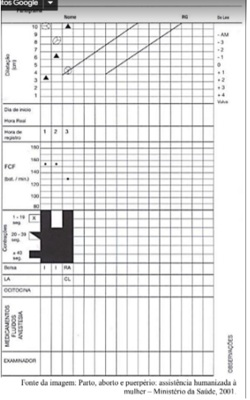
A Parto eutócico
B Parto taquitócico
C Parada secundária da descida
D Parada secundária da dilatação
E Período pélvico prolongado
Questão 356 · Hepatite B e C · Síf ilis · HIV · 4000189367Uma avaliação do status sorológico das principais infecções que podem afetar o curso da gravidez faz parte da consulta pré-concepcional. Essa avaliação facilitará a interpretação dos resultados das sorologias durante o pré-natal, permitirá que a mulher receba as imunizações necessárias e, assim, auxiliará a prevenção de malformações fetais. Neste caso, além do HIV e sífilis, devem ser solicitadas as seguintes sorologias:
A Hepatite C e herpes.
B Rubéola e glicemia.
C CMV e hemograma.
D Toxoplasmose e hepatite B.
Questão 357 · Diagnóstico · 4000189366O diagnóstico de Diabetes Mellitus gestacional é feito por:
A Glicemia de jejum entre 92 e 125 mg/dL abaixo de 20 semanas de gestação.
B Glicemia de jejum maior que 126 mg/dL no último trimestre de gestação.
C Glicemia de jejum a partir de 90 mg/dL em qualquer momento da gestação.
D Glicemia de jejum a partir de 101 mg/dL em qualquer momento da gestação.
Questão 358 · Cardiotocograf ia CTB · 4000189360A Cardiotocogra a é um método biofísico não invasivo de avaliação do bem-estar fetal. Os parâmetros analisados nesse exame são:
A Gravidez ectópica e contrações uterinas.
B Hipertensão e taquicardia gestacional.
C Movimentos fetais e dispaurenia.
D Frequência cardíaca fetal e atividade uterina.
Questão 359 · Criterios diagnósticos da préeclampsia · 4000189355Paciente, 33 anos, nuligesta e na 25° semana de gravidez. Chega ao pronto-socorro obstétrico do hospital de sua cidade relatando cefaleia de moderada intensidade. Nega hipertensão, diabetes e outras comorbidades. Ao exame obstétrico: dinâmica uterina, ausente; feto em apresentação córmica; batimentos fetais de 140 bpm; altura de fundo uterino de 22,5 cm; e pressão arterial 140 x 90 mmHg (confirmada por duas vezes e após repouso em decúbito lateral esquerdo). Exame de urina com proteinúria 2+/4+. Considerando as informações, a conduta inicial CORRETA é:
A Orientar dieta com restrição de sal, programar retorno com intervalos frequentes, encaminhar para o pré-natal de alto risco e solicitar exames laboratoriais complementares.
B Orientar dieta com restrição de sal, prescrever anti-hipertensivo (metildopa 750 mg/dia), programar retorno com intervalos frequentes, encaminhar para o pré-natal de alto risco e solicitar exames laboratoriais complementares.
C Programar retorno com intervalos frequentes, continuar o acompanhamento pré-natal na UBS e solicitar exames laboratoriais complementares.
D Programar retorno com intervalos frequentes, encaminhar ao pré-natal de alto risco e solicitar exames laboratoriais complementares.
Questão 360 · Tratamento · Quadro clínico · Descolamento prematuro de placenta DPP · 4000189348Gestante, 16 anos, em situação de rua, chega em consulta queixando-se de dor abdominal súbita e sangramento pela vagina de média intensidade há 2 horas. A idade gestacional é desconhecida. Ao exame PA: 150/100 mmHg, FC: 110 bpm, altura uterina: 30,5 cm, BCF: 130 bpm. Útero com tônus aumentado, sem relaxamento. Toque: colo pérvio para 6 cm, bolsa tensa. Relata tabagismo e uso de drogas ilícitas. A conduta para essa paciente é:
A A via de parto deve ser cesariana devido à instabilidade materna, diminuindo os riscos maternos e fetais.
B Se paciente multípara, deve-se aguardar o parto vaginal e monitorar atentamente o tônus uterino no pós-parto.
C Deve ser indicado fórcipe de alívio por exaustão materna e para nascimento mais rápido.
D A via de parto deve ser cesariana, pois assim será possível avaliar melhor os graus de acretismo placentário.
Questão 361 · Tratamento · Diagnóstico · Corticóide · 4000189306Gestante, 30 semanas de idade gestacional, DHEG grave, internada há 4 dias inibindo trabalho de parto prematuro, sem outras alterações no pré natal. Evoluiu com piora clínica sendo necessária cesariana de urgência. RN nasceu bem, transferido a UTIN em CPAP nasal, realizou RX de tórax abaixo. Sobre o diagnóstico mais provável e a indicação de corticoide ante natal assinale a alternativa correta:

A Síndrome do desconforto respiratório, corticóide ante natal era indicada para mãe.
B Taquipneia transitória do recém-nascido, conticóide ante natal não era indicada para mãe.
C RX normal para o prematuro, corticóide ante natal era indicada para mãe.
D Pneumonia, corticóide ante natal não era indicada para mãe.
Questão 362 · Obstétrico USG obst · Classif icação · 4000189301No acompanhamento pré-natal de uma primigesta, observa-se a curva de crescimento uterino (imagem a seguir). Foi solicitado US obstétrico com o seguinte resultado: peso fetal no percentil 30, líquido amniótico normal e resistência normal na dopplerfluxometria da artéria umbilical. O diagnóstico é:
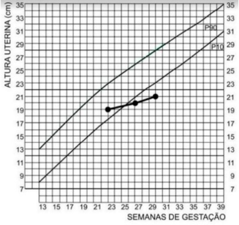
A feto grande para idade gestacional.
B crescimento fetal normal.
C feto pequeno constitucional.
D restrição de crescimento fetal.
Questão 363 · Exames laboratoriais · 4000189300O teste pré-natal não invasivo (NIPT: non-invasive prenatal testing) é um exame utilizado para a avaliação de aneuploidias durante o pré-natal. Sobre esse teste, é correto afirmar que:
A substitui os exames invasivos para confirmação do diagnóstico pré-natal de aneuploidias
B pode ser realizado a partir de sete semanas de idade gestacional
C avalia o cariótipo do feto a partir do DNA fetal livre no sangue materno
D apresenta alto risco para aneuploidias, uma fração de DNA fetal menor que 4%
Questão 364 · Clínico · 4000189298Paciente é encaminhada para acompanhamento e tratamento de gestação ectópica. Encontra-se clinicamente estável, apresentando ultrassonogra a com imagem de 2,9cm em anexo direito, com uxo ao Doppler em 2/3 da massa e presença de embrião sem batimentos cardíacos. Apresentou 2.224UI/L há dois dias e 3.987UI/L no dia da internação. A conduta que deverá ser adotada é:
A seguir com conduta expectante
B solicitar novo
C iniciar tratamento com metotrexate 50mg/m² por via intramuscular
D indicar laparotomia, se houver novo aumento do
Questão 365 · Exames laboratoriais · 4000189295Paciente, 29 anos, gestante 7 semanas, comparece ao atendimento no centro de saúde para iniciar o pré- natal de baixo risco. Nega queixas. A quantidade mínima de consultas de pré-natal e os exames necessários na primeira consulta do pré-natal de baixo risco, preconizado pelo Ministério da Saúde são, respectivamente:
A 5 consultas. Tipagem Sanguínea, Hb/Ht, VDRL, Glicemia em jejum, urina rotina e urocultura, Anti- HIV 1 e 2, HBsAg, Toxoplasmose IgM e IgG, Sorologia para Rubéola, Sorologia Citomegalovírus, colpocitologia oncótica caso não tenha realizado no ano anterior.
B 6 consultas. Tipagem Sanguínea, Hb/Ht, VDRL, Glicemia em jejum e hemoglobina glicada, ultrassonografia morfológica, urina rotina e urocultura, Anti-HIV 1 e 2, HBsAg, Toxoplasmose IgM e IgG, Sorologia para Rubéola, Sorologia Citomegalovírus, colpocitologia oncótica caso não tenha realizado no ano anterior.
C 5 consultas. Tipagem Sanguínea, Hb/Ht, VDRL, Glicemia em jejum, ultrassonografia morfológica, urina rotina e urocultura, Anti- HIV 1 e 2, HBsAg, Toxoplasmose IgM e IgG, Sorologia para Rubéola, Sorologia Citomegalovírus, colpocitologia oncótica caso não tenha realizado no ano anterior.
D 6 consultas. Tipagem Sanguínea, Hb/Ht, VDRL, Glicemia em jejum, urina rotina e urocultura, Anti- HIV 1 e 2, HBsAg, Toxoplasmose IgM e IgG, colpocitologia oncótica caso não tenha realizado no ano anterior.
Questão 366 · Medida do colo uterino · Medida do colo uterino · Progesterona vaginal · 4000189294Gestante com 20 semanas de idade gestacional, terceira gestação com antecendente de prematuridade com dois partos vaginais de 34 semanas e 30 semanas, respectivamente, vem para consulta de pré-natal de rotina sem queixas. USG gestacional solicitado na última consulta com comprimento do colo de 40 mm. Exame físico normal. Nesse momento, a melhor conduta é:
A Nifedipina
B Carbonato de cálcio.
C Progesterona
D Cerclagem
Questão 367 · Conduta · Interpretação · 4000189293Primigesta, previamente hígida, 39 semanas de gestação, encontra-se internada para acompanhamento do trabalho de parto. Ao exame: 3 contrações fortes em 10 minutos com desaceleração dos batimentos fetais próximos às contrações. Ao toque: colo médio, amolecido, prévio para 7 cm, apresentação cefálica em variedade OEA. Cardiotocogra a: batimento cardíaco fetal com linha de base em 150 bpm e quedas simétricas da frequência cardíaca fetal para 130 a 134 bpm, com nadir cerca de 30 segundos após cada uma das contrações e posterior retorno à linha de base. Sobre este resultado, é correto afirmar que:
A Trata-se de desacelerações tardias. Indica compressão do cordão umbilical e apenas raramente se relaciona à hipóxia fetal.
B Trata-se de desacelerações precoce. São observadas em todos os trabalhos de parto nesta fase de dilatação.
C Trata-se de desacelerações precoces. Indica compressão do polo cefálico durante as contrações, e não reflete hipóxia fetal.
D Trata-se de desacelerações tardias. Indica aumento da probabilidade de hipóxia e acidose metabólica fetal.
Questão 368 · Herpes na gestação · 4000189208Há uma infecção congênita que ocorre, geralmente, por infecção genital materna. É mais comum sua transmissão durante o trabalho de parto ou pós-natal e chega a 50% no parto vaginal. Mulheres com primo- infecção geralmente são assintomáticas, enquanto aquelas com infecção recidivante têm a transmissão intraparto diminuída para uma taxa de 3% a 5% pela presença de anticorpos preexistentes. A alternativa correspondente à infecção é:
A Infecção congênita por herpes simples.
B Sífilis congênita precoce.
C Infecção congênita por citomegalovírus.
D Rubéola congênita.
Questão 369 · TSH · Hipertireoidismo clínico · 4000189177Qual das seguintes perguntas seria MAIS PROVÁVEL em auxiliar para descoberta da causa da tireotoxicose em um paciente com sintomas tireotoxicose com sete meses de duração, níveis de hormônio estimulador da tireoide suprimidos e com baixa captação de iodo marcado (I123) na cintilografia?
A Você tem prurido ocular, olhos secos e edema nos olhos?
B Você tem história familiar de doenças na tireoide?
C Você já foi exposto à radiação ionizante?
D Você geralmente sente alguma dor ou desconforto cervical?
E Você está tomando recentemente algum suplemento que auxilia na perda de peso?
Questão 370 · Tratamento · Diagnóstico · 4000189175Gestante, 16 anos, G1P0, vem para sua primeira consulta pré-Natal referindo estar no quinto mês de gravidez. Refere coitarca aos 13 anos e nega relacionamento conjugal estável. Na assistência a essa usuária, o pro ssional de saúde realizou os testes rápidos na unidade básica sendo detectado teste positivo para Sí lis. Diante do achado, qual a MELHOR CONDUTA a ser adotada:
A Tranquilizar a gestante e pedir que ela repita o teste num segundo momento para confirmação diagnóstica.
B Solicitar o VDRL quantitativo e pedir que a gestante retorne com 7 dias para mostrar o resultado e iniciar o tratamento caso se confirme o diagnóstico.
C Solicitar teste treponêmico e iniciar Penicilina benzatina na dose de 1,2 milhões de unidades internacionais, semanalmente, durante 2 semanas.
D Iniciar o tratamento com Penicilina benzatina mesmo antes de outro teste confirmatório, durante 3 semanas.
E Solicitar o VDRL e só tratar se vier com titulação maior que 1:16.
Questão 371 · Tratamento da toxoplasmose na gestação · Epidemiologia da toxoplasmose · Toxoplasmose · 4000189174A assistência Pré-Natal é uma oportunidade para a promoção à saúde da mulher e nesse período é possível diagnosticar diversas afecções que podem comprometer a saúde materna e fetal. A Toxoplasmose é uma infecção com grande importância epidemiológica em razão das repercussões fetais durante a primoinfecção na gestação e sobre ela é INCORRETO afirmar:
A É uma doença infecciosa causada pelo protozoário Toxoplasma gondii e apresenta quadro clínico variado, desde infecção assintomática, autolimitada a manifestações sistêmicas graves.
B É considerado como caso suspeito quando há detecção de DNA do Toxoplasma gondii em amostra de líquido amniótico, em tecido placentário, fetal ou de órgãos independente do perfil sorológico.
C Diante de um rastreio positivo, o teste de avidez do IgG deve ser solicitado até 16 semanas de gravidez pois, após esse período, uma alta avidez não descarta a infecção adquirida durante a gestação.
D Caso o diagnóstico seja feito antes de 16 semanas de gestação, o tratamento deve ser iniciado com Espiramicina 3g/dia e, caso se confirme a infecção fetal, deve-se trocar o esquema por Sulfadiazina, pirimetamina e ácido folínico até o parto.
E A maioria dos casos de toxoplasmose em gestantes e recém-nascidos (RN) são assintomáticas ou com sintomas inespecíficos.
Questão 372 · Assistência ao parto normal · 4000189171Recentemente, a Organização Mundial da Saúde (OMS) recomendou uma série de medidas e orientações sobre as Boas práticas na assistência ao Trabalho de Parto e parto, apresentando um modelo global de atendimento intraparto, que leva em conta a complexidade e a natureza diversi cada dos modelos predominantes de atendimento e da prática contemporânea. Sobre essas recomendações, é INCORRETO afirmar:
A Considerar que a duração normal do primeiro estágio é controversa e variável para cada paciente, geralmente não se prolongando mais de 12 horas em nulíparas e 10 horas em multíparas, não necessitando intervenções.
B Não se recomenda tricotomia, enemas e embrocação vaginal de rotina na assistência ao trabalho de parto e parto.
C Ocitocina deve ser utilizada sempre que se optar por analgesia de parto devido o elevado risco de atonia uterina.
D A Episiotomia deve ser evitada de forma rotineira assim como pressão no fundo uterino durante o segundo estágio do trabalho de parto.
E A posição no parto, mesmo com analgesia, pode ser de escolha da paciente em situações normais.
Questão 373 · Hemorragias pós parto HPP e rotura uterina · Tratamento na HPP · 4000189170A Mortalidade materna é definida pela Classi cação Mundial de Doenças (CID 10) da OMS como a morte de uma mulher na gestação ou em um período de 42 dias após seu término, independente da duração ou da localização da gravidez e, é quanti cada pela razão de morte materna (RMM). No Brasil, em 2021, a RMM alcançou 107.53 mortes a cada 100 mil nascidos vivos estando ainda muito longe da meta estabelecida pela Organização das Nações Unidas (ONU). A hemorragia pós-parto (HPP) é uma das principais causas de óbito materno no mundo, e sobre ela, leia as afirmações abaixo e depois marque a alternativa CORRETA: I. - A principal causa relacionada a HPP são os distúrbios da coagulação não diagnosticados durante o Pré- Natal; II. - Recomenda-se a prevenção medicamentosa universal com Ocitocina intra-muscular ou endovenosa, após o nascimento, o que reduz em mais de 50% os casos de atonia uterina; III. - A terapia antifibrinolítica com ácido tranexâmico está indicada em todos os casos de HPP independente da causa subjacente; IV. - As suturas compressivas tipo B-Lynch podem ser realizadas sempre que a terapia medicamentosa falhar, antes de se indicar a histerectomia.
A I, II e III estão corretas.
B Apenas I e IV estão corretas.
C Apenas II e IV estão corretas.
D II, III e IV estão corretas.
E Todas estão corretas.
Questão 374 · Quadro clínico · 4000189169A gravidez ectópica ocorre quando o embrião se xa e começa a se desenvolver fora da cavidade uterina, podendo causar grandes complicações. Com relação à gravidez ectópica, é INCORRETO afirmar:
A A gravidez intrauterina e extrauterina combinada é rara, com exceção entre as mulheres que concebem por meio de fertilização in vitro.
B A laparoscopia minimamente invasiva é a abordagem cirúrgica preferida nas pacientes hemodinamicamente estáveis.
C Pacientes com gravidez ectópica prévia têm quatro vezes mais probabilidades de não terem sucesso no tratamento com MTX.
D A tríade dor abdominal ou pélvica, atraso ou irregularidade menstrual e sangramento vaginal é indispensável para o diagnóstico.
Questão 375 · Diabetes na gestação DMG · Diagnóstico · Síndrome HELLP · 4000189168O Diabetes gestacional assim como os distúrbios hipertensivos quando surgem na gravidez requerem cuidados específicos e maior vigilância do binômio materno-fetal. Sobre essas afecções durante a gestação, analise as sentenças abaixo e marque a (V) para Verdadeiro e (F) para Falso, e depois assinale a alternativa CORRETA. ( ) O diagnóstico de diabetes gestacional é feito pela dosagem da glicemia de jejum no primeiro trimestre quando acima de 91mg/dL e a partir do segundo trimestre através do teste oral de tolerância a glicose que deverá ser solicitado em todas as gestantes que não tiverem diagnóstico prévio. ( ) O Teste oral de tolerância à glicose deve ser solicitado quando a glicemia de jejum for maior que 126mg/dL para confirmar o diagnóstico de Diabete prégestacional. ( ) Para definição de Pré-eclâmpsia é necessário a presença da hipertensão, da proteinúria maciça e do edema de extremidades após 20 semanas de gravidez. ( ) O Sulfato de Magnésio está indicado apenas diante de convulsões tônico-clônicas generalizadas, o que caracteriza a Eclâmpsia, e deve ser mantido por 24 horas após a interrupção da gestação. ( ) A síndrome HELLP é uma quadro grave e se caracteriza, em sua forma completa, por plaquetopenia, elevação das enzimas hepáticas e hemólise, podendo ocorrer em pacientes sem proteinúria.
A V, F, F, F, V.
B V, V, F, F, F.
C F, V, V, V, F.
D F, F, V, V, V.
E V, F, F, V , F.
Questão 376 · Placenta · Desenvolvimento embriológico · 4000189167A placenta é uma estrutura formada durante a gestação que apresenta diversas funções, como a produção do hormônio hCG. A principal função atribuída a esse hormônio que está diretamente relacionado com a manutenção da gestação é:
A Promove o deslocamento do endométrio.
B Garante a liberação de outros óvulos.
C Impede a destruição do corpo-lúteo.
D Estimula a síntese de LH e FSH.
Questão 377 · Rubéola · Rubéola Congênita · 4000189156Acerca da rubéola na gestação, é CORRETO afirmar:
A Até um terço dos bebês assintomáticos expostos podem desenvolver manifestações tardias, incluindo diabetes melito, distúrbios da tireoide e puberdade precoce.
B O diagnóstico pré-natal é feito pela identificação de anticorpos IgM específicos da rubéola nas amostras sanguíneas fetais obtidas em menos de 22 semanas de gestação.
C Tendo em vista a frequência e o aparecimento precoce de alterações ósseas, a avaliação radiológica de ossos longos apresenta grande importância diagnóstica.
D A infecção é confirmada pelo teste de solubilidade. Se a paciente for soropositiva para IgG na primeira titulação, há risco aparente para o feto.
Questão 378 · TSH · 4000189155Sobre a endocrinologia na gestação, é INCORRETO afirmar:
A Durante a gestação, os hormônios são produzidos e secretados por glândulas endócrinas maternas, por glândulas endócrinas fetais e pela placenta.
B A produção do hormônio liberador da gonadotrofina (GnRH) pelo hipotálamo é suspensa durante a gestação e a secreção dos hormônios folículo-estimulante (FSH) e luteinizante (LH) é extremamente reduzida, não havendo resposta a estímulos do GnRH.
C A concentração sérica de hormônio do crescimento (GH) aumenta durante a gestação: no primeiro trimestre é de 0,5 a 7,5 ng/ml e, depois, mantém aumento gradual.
D A principal função do tri-iodotironina é corrigir a hipocalcemia, sendo rapidamente liberado das glândulas paratireoides em resposta à redução do íon cálcio plasmático.
Questão 379 · Sistema pulmonar · Desenvolvimento embriológico · 4000189154O desenvolvimento pulmonar do embrião pode ser dividido em cinco períodos. Os cinco períodos na ordem CORRETA são:
A Embrionário, pseudoglandular, canalicular, sacular e alveolar.
B Embrionário, canalicular, pseudoglandular, alveolar e sacular.
C Embrionário, pseudoglandular, sacular, canalicular e alveolar.
D Embrionário, canalicular, alveolar, pseudoglandular e sacular.
Questão 380 · Malf ormações f etais · Teratologia · 4000189149Sobre os agentes teratogênicos, é CORRETO afirmar:
A A maioria dos compostos estrogênicos afeta o desenvolvimento embrionário, como, por exemplo, os anticoncepcionais orais hormonais.
B A teratogênese de um agente deve ser avaliada em três importantes princípios: período crítico do desenvolvimento, dose ou magnitude da exposição e genótipo do embrião.
C A caxumba é uma infecção aguda causada por vírus RNA, porém, não aumenta o risco de abortamento espontâneo e óbito intrauterino.
D De todos os agentes teratogênicos, o uso de álcool não merece grande atenção pois não é um dos maiores causadores de deficiência mental em crianças.
Questão 381 · Sorologias · 4000189143Os exames laboratoriais têm importante papel na assistência pré-natal, como forma de rastreamento e prevenção de possíveis doenças. Um exame que deve ser solicitado no terceiro trimestre é:
A Sorologia para sífilis e para HIV.
B Hemograma.
C Sorologia para rubéola.
D Urocultura.
Questão 382 · Covid na gestação · 4000189109Quanto aos benefícios neonatais da vacinação de gestantes contra COVID-19, é CORRETO afirmar:
A A vacinação materna é eficaz na redução do risco de hospitalização por COVID-19 em crianças até seis meses de vida.
B A vacinação materna é eficaz, contudo crianças com idade abaixo de seis meses apresentam um risco menor de formas graves da doença com necessidade de hospitalização, comparados com crianças maiores.
C A vacinação materna não é eficaz, uma vez que ocorreram grande número de reações com necessidade de atendimento médico em pacientes vacinadas durante a gestação.
D A vacinação materna é eficaz, contudo, a vacinação contra COVID-19 durante a gravidez aumenta o risco de abortamento em relação à população geral.
Questão 383 · Programação da gestação · 4000189042O planejamento pré-concepcional deve preceder a gravidez, como um investimento. Uma porcentagem significativa de gestações não é planejada e potenciais danos ao desenvolvimento fetal podem surgir antes mesmo da gravidez ocorrer. Um homem transgênero de 28 anos de idade, com relacionamento homoafetivo, procura o serviço especializado com desejo de gravidez. Possui catamênios regulares, nega tentativa de gravidez pregressa, nega comorbidades e nega hormonização. Em relação ao desejo gestacional nesse paciente em específico, a conduta mais adequada quanto ao planejamento pré-concepcional é:
A indicar fertilização in vitro com útero de substituição, pois se trata de um homem transgênero.
B indicar início de hormonização para aumentar a possibilidade de gestação espontânea e encaminhar para pré-natal de alto risco quanto beta Hcg positivo.
C indicar seguimento em pré-natal de risco habitual e sugerir suplementação de ácido fólico para o paciente já no período pré- concepcional.
D indicar ovodoação e sugerir utilização do gameta masculino do paciente para implantação no seu cônjuge
E encaminhar o casal para serviço de adoção, pela inviabilidade de gravidez em homem transgênero com relacionamento homoafetivo.
Questão 384 · Tonus atonia uterina · 4000189041Primípara, na primeira hora após parto normal, apresenta hemorragia com instabilidade hemodinâmica e atonia uterina, não responsiva à terapêutica medicamentosa. Qual o próximo passo do tratamento?
A Sutura hemostática de B-Lynch.
B Tamponamento uterino com balão de Bakri.
C Histerectomia abdominal subtotal.
D Ligadura cirúrgica de artérias uterinas.
E Embolização arteriográfica de artérias ilíacas internas.
Questão 385 · Bases f ísicas da Dopplervelocimentria · 4000189035No estudo da vitalidade fetal através da dopplervelocimetria, considere os itens abaixo: A- uxo diastólico ausente ou reverso na artéria umbilical ocorre quando pelo menos 70% da vasculatura placentária encontra- se lesionada. B- Alteração no espectro de uxo no ducto venoso é considerado um marcador de acidose ao nascimento. C- A velocidade máxima do fluxo da artéria cerebral média não é preditiva de anemia fetal. É (são) incorreto (s) o (s) item(ns):
A Apenas A.
B Apenas A e C.
C Apenas B.
D Apenas C.
E Apenas B e C.
Questão 386 · PréEclâmpsia · 4000189034Paciente de 27 anos de idade, G2P0A1, 35 semanas e 5 dias de gestação, foi trazida por familiares ao pronto atendimento desacordada, com história de crise convulsiva em casa. Ao exame: pressão arterial de 160 x 110 mmHg, altura uterina de 31 cm, dinâmica uterina ausente e colo impérvio. Os familiares negam história de epilepsia e na carteira de pré-natal há registro de aumento de níveis pressóricos a partir de 27 semanas de gravidez, quando foi indicado uso de alfametildopa. A cardiotocogra a 130 batimentos por minuto em linha de base, ausência de desacelerações, presença de acelerações transitórias e variabilidade moderada. Diante desse quadro, a conduta correta é:
A administração de hidralazina, sulfato de magnésio e resolução da gestação após estabilização do quadro.
B administração de sulfato de magnésio e corticoterapia.
C cesariana imediata.
D prescrição de hidralazina, indução do parto e administração de sulfato de magnésio no puerpério imediato.
E acompanhamento da vitalidade fetal até 37 semanas de gestação
Questão 387 · Tratamento da toxoplasmose na gestação · Diagnóstico · 4000189033Paciente de 26 anos de idade, G2P1A0, sem comorbidades, está hoje com 12 semanas de gestação. Vem a consulta com exames do primeiro trimestre (realizados com 8 semanas de gestação) solicitados por outro pro ssional: Toxoplasmose IgM e IgG reagentes. Teste de avidez IgG para toxoplasmose com avidez fraca. Nas anotações da caderneta de pré-natal da primeira gestação, os exames para toxoplasmose IgM e IgG eram negativos. A conduta neste caso é:
A prescrever Pirimetamina.
B solicitar novo exame de avidez IgG para toxoplasmose.
C prescrever espiramicina.
D orientar a paciente que a doença ocorreu antes da gestação e que deve seguir prénatal de risco habitual.
E indicar aborto terapêutico.
Questão 388 · Período expulsivo prolongado · 4000189032Uma paciente de 31 anos de idade, G2P0A1, no decorrer de 40 semanas de gestação, encontra- se em fase ativa do trabalho de parto. O desenvolvimento do trabalho de parto está caracterizado no partograma abaixo. O diagnóstico do partograma abaixo é:
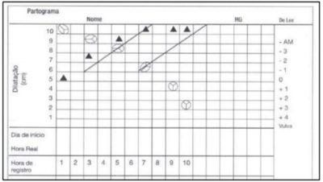
A parada secundária da descida, que foi diagnosticada por dois toques sucessivos, com intervalo de 1 hora ou mais, após atingir dilatação do colo uterino completa
B período pélvico prolongado manifesta-se no partograma com a descida progressiva da apresentação, mas excessivamente lenta. Nota-se dilatação completa do colo uterino e demora na descida e expulsão do feto.
C parada secundária da dilatação, que foi diagnosticada por dois toques sucessivos após a sétima hora de trabalho de parto.
D parto taquitócico, que foi diagnosticado após a rápida evolução do trabalho de parto ao atingir a linha de ação.
E fase ativa prolongada, resultante da abertura do partograma em variedade de posição Occipício Direita Posterior (ODP).
Questão 389 · Diagnóstico · 4000189028Multípara, 35 anos de idade, com 5 partos normais anteriores, 31 semanas de gestação. Relata que apresentou vários episódios de pequeno sangramento vaginal vermelho vivo desde o sexto mês de gestação. Exame físico: hipocorada 1+/4, PA= 90/60 mmhg, pulso =71 ppm, tônus uterino normal, dinâmica uterina ausente, contorno uterino normal, batimentos cardíacos fetais=145 bpm, presença de sangramento uterino ativo em pequena quantidade, colo grosso, posterior impérvio. Considerando o quadro clínico, a principal hipótese diagnóstica e sua respectiva conduta mais adequada são:
A trata-se de descolamento prematuro de placenta, devendo-se realizar ultrassonografia obstétrica para confirmar diagnóstico.
B trata-se de rotura uterina, devendo-se realizar laparotomia exploradora interrupção da gravidez imediatamente.
C trata-se de placenta de inserção baixa (placenta previa), devendo-se solicitar ultrassonografia, fazer controle de anemia materna e de vitalidade fetal.
D trata-se de trabalho de parto prematuro, devendo-se iniciar tocolítico para retardar o nascimento.
E trata-se de placenta prévia acompanhada de instabilidade hemodinâmica materna, devendo-se realizar cesariana imediatamente.
Questão 390 · Tratamento · Diagnóstico · Inf ecção puerperal endometrite puerperal · 4000189027Primípara, 24 anos de idade, quarto dia de pós- parto vaginal, queixando-se de febre e dor pélvica há 24 horas. Ao exame físico: PA= 110/70 mmHg, febril (temperatura axilar= 39 °C); abdome plano, normotenso e indolor; conteúdo vaginal com odor fétido; útero doloroso a mobilização e colo pérvio para 1 cm. Considerando o diagnóstico mais provável, a principal complicação e a conduta mais correta dentre as opções abaixo são:
A sepse e iniciar antibioticoterapia de amplo espectro imediatamente.
B hemorragia uterina e introdução de balão intra-uterino.
C hemorragia uterina e introdução de misoprostol retal.
D sepse e realizar histerectomia puerperal.
E mastite e ordenha de ambas as mamas.
Questão 391 · Síndrome HELLP · Eclâmpsia · 4000189025Primigesta, 21 anos de idade, 28 semanas de gestação, passou a apresentar hipertensão arterial desde a 260 semana de gravidez, em uso de metildopa e nifedipina há 1 semana, comparece a urgência e emergência obstétrica, referindo cefaléia e visão turva. Nega hipertensão arterial antes da gestação. Exame físico: pressão arterial= 170/ 110 mmHg. dinâmica uterina ausente, tônus uterino normal, Batimentos cardíacos fetais= 95 bpm, colo uterino impérvio. Os exames laboratoriais mostram plaquetopenia, transaminases três vezes maior que o valor normal e elevação de bilirrubinas. A ultrassonogra a obstétrica mostra Indice de Liquido Amniótico (ILA)= 6 cm. Considerando o caso descrito pode-se obter as seguintes impressões diagnósticas:
A hipertensão arterial crônica, migrânia e sofrimento fetal.
B pré-eclâmpsia, normohidrâmnio e síndrome HELLP.
C pré-eclâmpsia, hepatite medicamentosa e normohidrâmnio.
D iminência de eclâmpsia, sofrimento fetal e síndrome HELLP.
E iminência de eclâmpsia, bem estar fetal e oligoâmnio.
Questão 392 · Aborto inf ectado · 4000189023Mulher de 22 anos comparece ao serviço de urgência e emergência obstétrica referindo sangramento vaginal há 7 dias, dor pélvica há 3 dias e febre há 2 dias. Relata que há duas semanas submeteu-se a um aborto em clínica clandestina. Exame físico: pressão arterial igual a 90/60 mmHg, temperatura axilar de 38,20C, sangramento uterino vermelho vivo de pequena intensidade entremeado á secreção amarela com odor; colo uterino pérvio para 1 cm; útero intra-pélvico de pequeno volume, doloroso a mobilização. Ultrassonogra a transvaginal mostra ecos amorfos intra-uterinos e ausência de feto ou embrião. O diagnóstico e a respectiva conduta são:
A abortamento completo e conduta conservadora com orientação e retorno ao domicílio.
B abortamento completo e antibioticoterapia de amplo espectro.
C aborto incompleto infectado, antibioticoterapia e esvaziamento uterino.
D abortamento retido e esvaziamento uterino com aspiração manual intra-uterina.
E abortamento incompleto e esvaziamento uterino com aspiração manual intra-uterina.
Questão 393 · Primeiro período f ase de dilatação · 4000189014Sobre a maturação (UFPB - do colo uterino, utiliza-se, frequentemente, o índice de Bishop para a sua avaliação clínica. Fazem parte desta avaliação os itens abaixo, exceto:
A Dilatação cervical.
B Altura da apresentação fetal.
C Esvaecimento cervical.
D Linhas de orientação da apresentação fetal.
E Consistência cervical.
Questão 394 · Toxoplasmose congênita · Rastreamento na gestação · 4000189002A toxoplasmose congênita é uma doença evitável se os cuidados com a gestante, a interpretação dos exames durante o pré-natal e a indicação do tratamento forem corretos. Nesse contexto, é um erro a rmar que:
A A transmissão vertical em gestante com infecção crônica é improvável, exceto se ela for imunodeprimida.
B A espiramicina é medicação para a profilaxia da toxoplasmose congênita.
C Se a IgG e a IgM forem positivas para toxoplasmose e o resultado de teste de avidez for baixo durante a gravidez, isto significa que a gestante tem infecção recente e o tratamento para toxoplasmose deve ser iniciado imediatamente.
D Havendo soroconversão durante a gravidez, é indicada a pesquisa de DNA do toxoplasma pela técnica de PCR em líquido amniótico para investigar infecção fetal.
E Se a IgG e a IgM forem negativas para toxoplasmose no primeiro trimestre de gestação, o feto não será infectado e não está indicado o tratamento da gestante.
Questão 395 · Covid na gestação · COVID 19 · 4000188991Gestante com 39 semanas, apresentou quadro gripal leve há quatro dias e evoluiu com coriza, tosse e dor torácica. Hoje recebeu o diagnóstico de Covid-19 e logo a seguir passou a apresentar as dores do parto. Chega em trabalho de parto e dá à luz a recémnascido em bom estado geral, assintomático, pesando 2.700 gramas. Em relação ao RN, a conduta correta é:
A A liberar alojamento conjunto e amamentação ao seio materno, respeitando o distanciamento social de no mínimo dois metros.
B Afastar RN da mãe e deixar com suplementação de fórmula láctea, respeitando o distanciamento social de no mínimo dois metros.
C Liberar alojamento conjunto e amamentação ao seio com máscara, respeitando o distanciamento social de no mínimo dois metros.
D Afastar da mãe por quatro semanas e oferecer leite materno ordenhado no copo, respeitando o distanciamento social de no mínimo dois metros.
Questão 396 · Tratamento · Diagnóstico · 4000188943Uma puérpera, no 8º dia pós-cesárea, apresenta temperatura de 39ºC, mialgia, astenia, aumento da loquiação e dor à mobilização do útero. Está em aleitamento exclusivo. O provável diagnóstico e a conduta correta para esse caso são, respectivamente:
A Infecção puerperal; antibioticoterapia, curetagem e suspensão do aleitamento.
B Mastite puerperal; suspensão do aleitamento e conduta expectante.
C Infecção puerperal; antibioticoterapia e manutenção do aleitamento.
D Infecção hospitalar; tratamento expectante e manutenção do aleitamento.
Questão 397 · Sistema respiratório · 4000188941Em relação às modificações fisiológicas da gestação no sistema respiratório, podemos dizer que:
A Ocorre hipoventilação fisiológica.
B A capacidade pulmonar total não se altera.
C O volume corrente e o volume-minuto diminuem.
D O volume residual diminui.
Questão 398 · Variedade de posição · 4000188940Durante o trabalho de parto, o preceptor faz um toque vaginal na paciente e diz ao residente que o feto está em OET. Essa nomenclatura obstétrica permite descrever as relações entre o feto e a gestante e, nesse caso, a letra T faz referência à:
A Apresentação fetal.
B Posição fetal.
C Situação fetal.
D Variedade de posição fetal.
Questão 399 · Paralisia obstétrica · Quadro clínico e classif icação de Narakas · 4000188938Recém-nascido de parto vaginal a fórceps apresenta reflexo de Moro assimétrico no primeiro dia de vida, com pouco movimento do braço esquerdo, que ca mantido em rotação interna ao lado do corpo com o antebraço estendido e em pronação. O restante do exame físico é normal, inclusive a preensão palmar da mãe esquerda. O provável diagnóstico é:
A Fratura de clavícula.
B Paralisia do nervo frênico.
C Paralisia de Erb-Duchenne.
D Paralisia de Klumpke.
Revisar: possível letra faltando em enunciado
Questão 400 · Rastreamento de anomalias cromossômicas · 4000188853A Translucência Nucal (TN) deve ser aferida entre 11 e 14 semanas incompletas de gestação como parte do rastreio de aneuploidias fetais. Sobre esse marcador, assinale a assertiva incorreta:
A a presença do osso nasal e padrão de fluxo no ducto venoso são outros marcadores biofísicos utilizados no rastreio de aneuploidias fetais
B malformações cardíacas e dos grandes vasos podem levar a TN alterada
C aloimunização pelo fator RH não é causa de TN aumentada
D a TN alterada está relacionada a agentes do grupo TORCH
Questão 401 · Def inição · Tipos de gestações múltiplas · 4000188852Com relação à gemelidade, podemos afirmar que a gestação:
A dicoriônica e diamniótica nem sempre é dizigótica
B monocoriônica nem sempre é monozigótica
C monocoriônica nem sempre tem o sexo concordante
D dicoriônica tem sempre o sexo discordante
Questão 402 · Primeiro período f ase de dilatação · Segundo período período expulsivo · 4000188851Com relação ao trabalho de parto normal, considere as afirmativas a seguir: |- O parto é o período que vai do início das contrações uterinas regulares até a expulsão da placenta. || - O trabalho de parto é caracterizado por contrações uterinas que geram o apagamento e a dilatação do colo. III - O 2º estágio do trabalho de parto começa quando a dilatação cervical está completa. IV - Na fase ativa do trabalho de parto, a velocidade esperada de dilatação do colo é, em média, de 1 cm/h. Estão corretas:
A I,II
B I, III
C II, III
D I, II, III, IV
Questão 403 · Tratamento da síf ilis na gestação · Outros · Diagnóstico · 4000188850Uma primigesta de 18 anos, com 9 semanas de gestação, comparece à Unidade Básica de Saúde da Família para consulta de pré-natal de rotina. Está assintomática no momento da consulta. Dentre os exames de rastreamento de 1º trimestre de gestação, observa-se VDRL com titulação de 1:4. Qual é a conduta mais adequada?
A prescrever tratamento com penicilina benzatina
B repetir o VDRL em 2 semanas para confirmar o diagnóstico
C solicitar o FTA-ABS, porque o resuItado pode ser falso positivo
D repetir o VDRL entre a 24o e a 28o semanas de gravidez
Questão 404 · Antibioticoprof ilaxia para EGB na RPM · 4000188849Uma gestante, G3P2, com 38 semanas, é internada com o na maternidade com diagnóstico de trabalho de parto. Após anamnese, avaliação do cartão de pré-natal e exame físico, foi iniciado ampicilina para pro laxia de sepse neonatal. O achado que pode ter sido identi cado durante a internação da paciente para justi car essa conduta é:
A urinocultura positiva para Streptococcus agalactiae na 1a gestação
B amniorrexis 12 horas antes da internação
C resultado do swab vaginal e retal colhido no pré-natal desconhecido
D história de sepse por S. agalactiae na gestação anterior
Revisar: possível letra faltando em enunciado
Questão 405 · Aplicação do f órcipe · 4000188848São consideradas condições obrigatórias para a practibilidade do fórcipe na apresentação cefálica as relacionadas a seguir, exceto:
A dilatação total do colo uterino
B membranas ovulares rotas
C identificação da variedade de posição
D realização de raquianestesia
Questão 406 · Tratamento · Quadro clínico · Diagnóstico · 4000188847Uma gestante procura a Emergência Em queixa de sangramento transvaginal de média intensidade e de início súbito há cerca 25 minutos associado a dor abdominal. Refere pré-natal sem intercorrências, G3Pn2, idade gestacional de 33 semanas. Exame obstétrico:altura uterina = 31cm, tônus uterino aumentado, FCF = 120bpm. Toque vaginal: colo longo, posterior, pérvio à polpa digital. Sangramento escurecido em moderada quantidade. Quais são a principal hipótese diagnóstica e a conduta?
A descolamento prematuro de placenta; internação e cesariana de urgência
B placenta prévia; internação, repouso e corticoterapia; cesariana caso não haja controle do sangramento
C descolamento prematuro de placenta; internação, corticoterapia e cesariana
D placenta prévia: internação, ultrassonografia obstétrica com Doppler e cardiotocografia para avaliação do bem-estar fetal
Questão 407 · Préeclâmpsia com sinais de gravidade · PréEclâmpsia · 4000188846Uma primigesta de 16 anos, com idade gestacional de 35 semanas, chega ao prontosocorro apresentando cefaleia com escotomas e epigastralgia. Apresenta-se com aumento inédito dos níveis pressóricos (PA =150x100mmhHg), BCF = 140bpm e ausência de edemas. Em reavaliação após 4 horas, mantém queixa de cefaleia com escotomas e epigastralgia, PA = 150x110mmHg e BCF = 144bpm. Exames laboratoriais evidenciam relação proteina-creatinina na urina = 0,6mg/dL, hemoglobina = 12g/dL, plaquetas = 110.000/mm3 e transaminases hepáticas e creatinina sérica sem alterações. Quais são o diagnóstico e a conduta para a paciente?
A hipertensão gestacional, anti-hipertensivo oral e parto no termo
B pré-eclâmpsia leve, anti-hipertensivo e indução do parto
C síndrome HELLP, betametasona e cesárea
D pré-eclâmpsia grave, sulfato de magnésio e indução do parto
Questão 408 · Rotura de vasa prévia · 4000188845Uma gestante de 18 anos, G1PO, IG = 40 semanas, sem comorbidades prévias, foi internada em trabalho de parto inicial. Durante o 1° período do trabalho de parto, evoluiu sem intercorrências, e 5 horas após a internação encontrava-se com dilatação total. Durante o período expulsivo, foi realizada amniotomia e iniciou-se um sangramento vaginal intenso, vermelho vivo, acompanhado de bradicardia fetal. A provável causa do sangramento e do sofrimento fetal agudo foi:
A descolamento prematuro de placenta
B rotura da vasa prévia
C rotura de seio marginal
D placenta prévia
Questão 409 · Diagnóstico · 4000188793Paciente G1P0A0, 27 anos, previamente saudável, IMC 28, PA 100/80mmHg, Idade Gestacional de 13 semanas, vem a segunda consulta de pré-natal com todos os exames solicitados e o médico de família e comunidade reparou que a glicemia de jejum se encontra 92mg/dl. De acordo com as novas recomendações do Ministério da Saúde, qual seria a conduta mais apropriada?
A Solicitar uma hemoglobina glicada, pois precisamos descartar o diagnóstico de diabetes que é muito comum em pacientes com IMC acima de 25.
B Realizar o TOTG entre 24-28 semanas.
C Definir como diabetes mellitus e tratar.
D Definir como diabetes mellitus gestacional e tratar.
E Repetir o exame de glicemia de jejum como contraprova.
Questão 410 · Tratamento · Diagnóstico · 4000188775Mulher 38 anos, Gesta IV Para IV A0 - uma Cesaria anterior, comparece a unidade de pronto atendimento com queixa de febre e dor abdominal. Encontra-se no décimo dia do pós - parto. Ao exame físico: FC=100 bpm, temperatura axilar =38,5 graus centígrados, mamas sem alterações. Útero na cicatriz um umbilical e colo uterino prévio para uma polpa digital. Ultrassonogra a abdominal evidência útero com 500 cm cúbicos de volume e endométrio com 15 mm sem espessamentos focais. Com anexos normais. Quais o diagnóstico e conduta diante deste caso clínico?
A Tromboflebite pélvica; iniciar anticoagulação com heparina e antibioticoterapia.
B Endometrite puerperal; iniciar antibioticoterapia hospitalar.
C Infecção urinária com cistite; iniciar antibioticoterapia após coleta de cultura.
D Restos ovulares intrauterino infectados; iniciar antibioticoterapia e curetagem.
E Febre da ""chegada do leite"" fisiológica; antitérmico e manter aleitamento.
Questão 411 · Terminologia · 4000188768Mulher gestante com data da última menstruação (DUM), em 01/03/2022 e ultrassonogra a de primeiro trimestre, compatível com a DUM. Refere ter dois lhos de partos normais e um aborto espontâneo. Chega na urgência o hospital universitário de sua cidade, referindo perda de líquido vaginal há 1 hora. Nega dor abdominal. O feto apresenta seu maior eixo concordando com o maior eixo do útero, a cabeça fetal no estreito superior da bacia materna com o exame físico sem alterações. BCF = 146bpm. Especulo evidência colo uterino epitelizado, deixando fluir líquido claro por seu orifício externo. Dilatação cervical de 2 cm. Diante desta condição clínica, em relação ao número de gestações e paridade desta paciente, responda.
A Trata-se de uma Gesta IV Para III.
B Trata-se de uma Gesta II Para IV.
C Trata-se de uma Gesta IV Para II.
D Trata-se de uma Gesta III Para III.
E Trata-se de uma Gesta III para II.
Questão 412 · Eclâmpsia · 4000188765Gestante de 19 anos, Gesta I para 0, idade gestacional de 37 semanas, trazida à emergência com quadro de convulsão tônico-clônica generalizada. A acompanhante relata que era saudável, sem convulsões prévias, ou complicações no pré-natal. Ao exame: PA = 160x 100mmHg, desorientada, BCF= 120 bpm, ausência de contração uterina. Qual a melhor conduta?
A Hidralazina EV até a PA reduzir a 120x80 mmHg.
B Verificar vias aéreas superiores, acesso venoso e parto imediato.
C Sulfato de Magnésio, mesmo se diurese e função renal desconhecidas.
D Fenitoína EV e solicitar ultrassonografia para confirmar idade gestacional.
E Estabilizar a paciente e encaminha-la para pesquisa de maturidade fetal.
Questão 413 · Complicações · Síndrome da transf usão f etof etal STFF · 4000188762A gestação gemelar é considerada uma gravidez de alto risco, pois apresenta altas taxas de morbimortalidade materna e fetais. Dentre as a rmativas abaixo, em relação as gestações múltiplas, marque a resposta correta.
A Nas gestações múltiplas, as hemorragias pós-parto decorrem principalmente, de lesões do canal do parto.
B A síndrome de transfusão feto-fetal (STFF), ocorre sempre que houver conexões entre as placentas.
C O parto normal está contra-indicado quando da apresentação pélvica do segundo gemelar se o peso estimado for >1.500g.
D O diagnóstico da STFF pela ultrassonografia é feito se o maior bolsão de um dos fetos for >8 cm e do outro feto, for < 2 cm (monocoriônico - diamniótico).
E A pré-eclâmpsia é rara, devido a maior dilatação do leito vascular na gestação múltipla.
Questão 414 · Bloqueio de pudendo · 4000188716Durante o trabalho de parto, o médico identi ca a necessidade de realizar anestesia por bloqueio de pudendo. Para aplicar o anestésico, ele deve palpar
A o ligamento sacroespinhal.
B a eminência ileopectínica.
C a borda lateral do forame obturatório.
D a espinha isquiática.
E o ligamento cardinal.
Revisar: possível letra faltando em enunciado
Questão 415 · Modif icações locais · 4000188710Durante a gravidez, a produção de leite materno está inibida pois
A os níveis altos de estrogênios mantêm a prolactina em baixas concentrações até o próximo ao parto.
B o hormônio lactogênico placentário estimula os receptores mamários de prolactina somente após a dequitação.
C os níveis de prolactina só aumentam após o descolamento placentário.
D não existe ainda a sucção mamilar, responsável pela liberação de ocitocina que aumenta a produção láctea.
E os receptores de prolactina nos alvéolos estão inibidos pelas elevadas concentrações de progesterona e de hormônio lactogênico placentário.
Questão 416 · Diabetes na gestação DMG · Diagnóstico · 4000188708Eduarda de 33 anos de idade, com 12 semanas, comparece a sua primeira consulta de pré-natal. Não refere nenhum antecedente pessoal e não faz uso de nenhuma medicação. Tem PA: 120 x 80 mmHg e IMC: 29 kg/m². O exame obstétrico é compatível com a idade gestacional. Traz resultado de exames solicitados na UBS e coletados há uma semana, sem ter feito jejum: hemoglobina: 12 mg/dL, plaquetas: 180 mil/mm³, glicemia: 210 mg/dL, sorologias todas negativas. Nesse caso,
A caracteriza-se diabetes gestacional.
B caracteriza-se diabetes mellitus diagnosticado na gravidez.
C é fundamental a realização de teste oral de tolerância à glicose antes de considerá-la diabética.
D é necessário repetir a glicemia com jejum adequado para diagnóstico de diabetes.
E considera-se normal o resultado da glicemia, já que não foi feita em jejum, devendo ser repetida no próximo mês.
Questão 417 · Quadro clínico · Diagnóstico · 4000188703Bruna, primeira gestação, 39 anos de idade, hipertensa, encontra-se em trabalho de parto há 5 horas, refere sensação de desmaio repentino e forte dor abdominal. Exame físico: PA: 140x100 mmHg. Pulso: 110 bpm, DU: 5/10 minutos com contrações com duração de 1 minuto, foco fetal: 100 bpm, toque: 2 cm de dilatação, centralizado, sangramento vaginal moderado com coágulos. O diagnóstico mais provável é:
A Rotura uterina de primeiro grau.
B Descolamento prematuro de placenta.
C Franco trabalho de parto.
D Eclâmpsia intraparto.
E Sangramento devido à cervicodilatação.
Questão 418 · Distócia de ombro · 4000188692Maria, 26 anos, primigesta, com idade gestacional de 40 semanas está em período expulsivo do trabalho de parto. Neste momento, nota-se distócia de ombro direito. Qual das manobras está indicada para a assistência ao caso neste momento?
A Indicar cesárea de urgência.
B Utilizar o vácuo extrator dorsal.
C Rebater o feto sobre o ventre materno.
D Mudar a paciente para decúbito lateral.
E Pressão suprapúbica e hiperflexão pernas.
Questão 419 · Eclâmpsia · 4000188690Fatima, 34 anos, com antecedente de pré-eclâmpsia, está no puerpério imediato de parto cesáreo. Durante o parto, ocorreu hipotonia uterina que foi revertida com misoprostol por via retal. Ainda no centro obstétrico, apresentou crise convulsiva tônico-clônica generalizada, que cessou após a terapêutica adequada. A paciente foi transferida para recuperação pós-anestésica. No momento, está orientada, sonolenta, em regular estado geral. Útero contraído, com loquiação siológica. Os controles de sinais vitais e diurese estão apresentados a seguir. Qual a conduta para o caso neste momento?
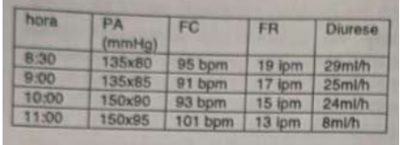
A Gluconato de cálcio.
B Hidratação endovenosa.
C Transfusão de hemácias.
D Furosemida endovenosa.
E Conduta expectante.
Questão 420 · Tratamento da toxoplasmose na gestação · 4000188679Diante de soroconversão materna para toxoplasmose entre a 8a e 14a semanas de gestação, a conduta a ser adotada é
A iniciar espiramicina e alternar com pirimetamina, a cada três semanas.
B iniciar tratamento fetal com espiramicina, sulfadiazina e pirimetamina.
C iniciar espiramicina, e realizar a pesquisa do Toxoplasma em líquido amniótico.
D realizar ultrassonografia morfológica fetal periodicamente até o final da gestação para avaliar necessidade de tratamento fetal.
E iniciar tratamento fetal com sulfadiazina e pirimetamina.
Questão 421 · Modif icações f isiológicas da gestação · 4000188631Mulher de 37 anos com gestação dupla na 22ª semana relata que as modi cações corporais ocorridas na gestação provocam sentimentos ambivalentes com relação à sexualidade. Neste contexto, é CORRETO afirmar que
A congestão das mamas diminui a sensibilidade dolorosa no toque.
B maior vascularização pélvica determina maior tensão sexual.
C contrações uterinas no orgasmo promovem dilatação cervical.
D aumento do volume uterino resulta em conforto na penetração.
E o edema e congestão vaginais favorecem penetração indolor.
Questão 422 · Assistência ao puerpério f isiológico · 4000188629Puérpera no 40o dia pós-parto deseja orientações para o reinício da prática sexual. O parto vaginal ocorreu em evento de emergência. Qual das estratégias abaixo contribui para uma função sexual adequada no puerpério? Marque a alternativa CORRETA.
A Hidratante vaginal.
B Episiotomia.
C Contraceptivo conjugado.
D Atrofia vulvovaginal.
E Dispositivo intrauterino.
Questão 423 · Medicina f etal · 4000188610Dentre as implicações obstétricas e fetais a seguir, qual apresenta pior prognóstico neonatal?
A Gastrosquise.
B Malformação de Arnold-Chiari tipo 2.
C Aneurisma de veia de Galeno.
D Rins policísticos (Doença de Potter tipo 1).
E Hérnia diafragmática congênita.
Questão 424 · Diagnóstico · Tratamento · 4000188608Gestante, 30 anos, G3P2A0, 2 cesarianas prévias, idade gestacional atual de 34 semanas; apresenta sangramento genital avermelhado, indolor, moderada quantidade; tônus uterino normal. US gestacional revela placenta oclusiva, centro-total. Qual conduta a seguir?
A Conduta ambulatorial; tocolítico e analgésico.
B Internação hospitalar; conduta conservadora e US para avaliar acretismo placentário.
C Conduta ativa; cesariana de emergência.
D Cardiotocografia; parto por via obstétrica.
E Internação hospitalar; conduta conservadora e ressonância magnética para avaliar pelve materna.
Questão 425 · Obstétrico USG obst · Morf ológico 2o trimestre USG 2o trim · 4000188605A ecocardiogra a fetal é um método diagnóstico pré-natal que tem crescido em solicitação nos últimos anos. Podemos afirmar que, dentre as possibilidades diagnósticas, estão as seguintes situações, EXCETO:
A transposição de grandes vasos.
B persistência do canal arterioso.
C hipoplasia de coração esquerdo.
D truncus arterioso.
E isomerismo esquerdo cardíaco.
Questão 426 · Urina Iurina tipo I sumário de urina EAS e urocultura · TSH · Exames laboratoriais · 4000188603Na abordagem das paciente com perdas fetais ou abortamentos recorrentes, o médico obstetra deve atentar para vários fatores clínicos e laboratoriais. Assinale a CORRETA.
A A síndrome trombolfílica hereditária é clinicamente definida por tromboses recorrentes, arteriais ou venosas, perdas fetais de repetição e, laboratorialmente, pela presença de anticorpos antifosfolipídeos (aPL), a saber: anticardiolipina (aCL), anti-beta2 glicoproteína1 (B2GP1) e o Lúpus Anticoagulante (LAC).
B O tratamento de pacientes com síndrome antifosfolipídeo e antecedentes de abortamentos precoces ou perdas fetais tardias, e em nova gestação, deve ser realizado com dicumarínicos, durante toda a gestação e puerpério.
C Todas as mulheres portadoras de hipotireoidismo, especialmente aquelas com pretensão a engravidar, devem ser estimuladas a obter um bom controle da sua doença antes da concepção. O tratamento baseia-se na reposição de levotiroxina.
D A incompetência istmo-cervical caracteriza-se por abortamentos recorrentes até 12 semanas de gestação e deve ser tratada com procedimento cirúrgico eletivo (cerclagem do colo uterino ou pessário cervical).
E As infecções feto-placentárias são causas raras de perdas fetais, tendo o seu custo não justificável na propedêutica investigativa.
Questão 427 · Mola hidatif orme · 4000188600Paciente de 44 anos, com sangramento genital irregular na gestação atual e achados ultrassonográ cos com conteúdo hiperecogênico e múltiplas vesículas anecóicas de permeio; dosagem de gonadotro na coriônica humana (HCG) de 182.000 mUI/mL. A conduta adequada nesse caso é
A iniciar tratamento quimioterápico.
B biópsia da lesão por videohisteroscopia.
C repetir a dosagem do beta-HCG em duas semanas.
D iniciar radioterapia pélvica.
E proceder esvaziamento uterino.
Revisar: possível letra faltando em enunciado
Questão 428 · Aspectos legais relacionados à gestação · 4000188599Quantos aos aspectos éticos em Obstetrícia e tendo em vista a adequada relação médico-paciente, assinale a alternativa CORRETA.
A Nas situações de risco iminente de morte materna por causa obstétrica, o médico pode realizar a interrupção da gestação, tendo o aval do juiz de direito.
B Nos casos de anencefalia fetal, não é punida a interrupção da gestação, porém necessita de autorização judicial para a sua realização.
C Diante de um caso de abortamento provocado, o médico deve comunicar o fato à autoridade policial ou judicial para que sejam tomadas as medidas necessárias.
D Nas malformações incompatíveis com a vida extra-uterina, necessita-se de autorização judicial e do consentimento da gestante para proceder à interrupção da gestação.
E Nos casos de interrupção de gravidez por estupro, faz-se necessário o consentimento da gestante, um parecer com autorização do comitê de ética do hospital e registro de ocorrência policial.
Questão 429 · Classif icação · Fatores de risco · Etiologia · 4000188596A assistência clínica ao trabalho de parto consiste no complexo trabalho assistencial da equipe interdisciplinar no contexto obstétrico. De acordo com as boas práticas no manejo do trabalho de parto, assinale a afirmativa CORRETA.
A Durante a cervicodilatação, período composto por fase latente e ativa, caracteriza-se por ser o período mais longo do trabalho de parto; devido ao potencial cirúrgico e das complicações anestésicas, a parturiente deve ser desencorajada a se alimentar na fase ativa.
B O período expulsivo ou terceiro período do trabalho de parto é considerado normal até um período de 1 hora.
C O manejo ativo da saída da placenta, dequitação ou secundamento, consiste na tração controlada do cordão associado a massagem uterina.
D A verticalização das posições das parturientes na cervicodilatação e período expulsivo tendem a aumentar os tocotraumatismos maternos e fetais.
E Quanto às hemorragias puerperais, a primeira hora após o secundamento deve ser momento de atenção e rigor para a vigilância materna.
Questão 430 · Etiologia · 4000188594São condições associadas ao polidrâmnio, EXCETO:
A displasias esqueléticas fetais.
B diabetes gestacional.
C atresia duodenal.
D holoprosencefalia semi-lobar.
E rins policísticos: doença de Potter I.
Questão 431 · Préeclâmpsia com sinais de gravidade · PréEclâmpsia · 4000188592Primigesta com 34 semanas, edema de mãos, face e membros inferiores, refere cefaléia intensa e turvação visual há cerca de 1 hora. Ao exame: feto vivo, único, cefálico, bcf= 150 bpm; tonus uterino normal. PA= 170X120 mmHg. Qual a melhor associação de fármacos nos cuidados iniciais na emergência?
A Nifedipina e nitropussiato de sódio.
B Sulfato de magnésio e nitroprussiato de sódio.
C Nifedipina e metildopa.
D Sulfato de magnésio e hidralazina.
E Sulfato de magnésio e metildopa.
Questão 432 · Desenvolvimento embriológico · 4000188589O processo de fertilização e as fases no processo embriológico caracterizam-se por mudanças embriológicas. Assim, a chegada do produto conceptual no útero ocorre sob a forma de:
A blastocisto.
B mórula.
C gástrula.
D sinciciotrofoblasto.
E trofoblasto.
Questão 433 · Medicina f etal · 4000188455Em relação a primeira semana embrionária, qual estrutura encontraremos no interior da cavidade uterina?
A Zigoto
B Mórula
C Blastocisto
D Embrioblasto
Questão 434 · Placenta · 4000188454É função da placenta: I - Nutrição do feto; II - Trocas gasosas; III - Produção hormonal; IV - Imunológica; Está CORRETO o contido em:
A I e II apenas
B I, II e III apenas
C III e IV apenas
D I, II, III e IV
Questão 435 · Diabetes na gestação DMG · 4000188453Maria Luiza iniciou pré-natal com 10 semanas de gestação. Nega história prévia de diabetes. Ao retornar com os exames de rotina no primeiro trimestre, apresentava glicemia de jejum = 95mg/dl. Relata ter feito 10 horas de jejum antes de colher o sangue. Desta forma, qual a melhor conduta?
A Nada a fazer. Considera-se exame normal. Realizar TOTG 75 entre 24 e 28 semanas.
B Repetir glicemia de jejum com melhor preparo.
C Informar que se trata de diabetes gestacional, iniciar orientação dietética e atividade física. Realizar controle glicêmico ambulatorialmente.
D Internar para perfil glicêmico
Questão 436 · Diagnóstico · Rastreamento na gestação · 4000188452Em relação a toxoplasmose na gestação, correlacione as colunas: I - Sorologia com 12 semanas de gestação: IgG + e IgM+; II - Sorologia com 12 semanas de gestação: IgG - e IgM+; III - Sorologia com 12 semanas IgG - e IgM - e sorologia de 20 semanas de gestação: IgG - e IgM+; IV - Sorologia com 18 semanas de gestação: IgG + e IgM-; ( ) Paciente imune, não há necessidade de realizar nova sorologia para toxoplasmose na gestação; ( ) Infecção recente ou falso positivo do IgM. Repetir nova sorologia IgM e IgG em 2 semanas; ( ) Solicitar IgG de avidez imediatamente; ( ) Soroconversão. Iniciar tratamento. A sequência correta é:
A I, IV, II, III
B I, II, III, IV
C III, II, I, IV
D IV, II, I, III
Questão 437 · Eclâmpsia · 4000188451Sabrina é hipertensa crônica, encontra-se no 3º trimestre de gestação. foi encaminhada a emergência da maternidade por apresentar crise convulsiva há 30 minutos. Durante o exame físico, foi aferido PA = 150 x 100 mmHg, edema em MMII ++/4+. O diagnóstico correto e a medicação indicada são:
A Eclâmpsia e sulfato de magnésio.
B Epilepsia e benzodiazepínico.
C Eclâmpsia e benzodiazepínico.
D Crise hipertensiva e hidralazina venosa.
Questão 438 · Síndrome HELLP · 4000188450Qual dos critérios a seguir NÃO é utilizado para definir a síndrome HELLP:
A Creatinina > 1,2 mg/dL.
B Bilirrubinas > 1,2 mg/dL.
C LDH > 600 UI/L.
D TGO > 70 UI/L.
Questão 439 · Inf ecção Urinária e Bacteriúria Assintomática na gestação ITU · 4000188448Com relação às infecções urinárias na gestação, assinale a opção correta:
A São causadas pelo Enterobacter sp. em 80% dos casos.
B O tratamento de cistite ou bacteriúria assintomática pode ser realizado com cefalosporina de primeira geração ou de acordo com o resultado da urocultura.
C Durante o acompanhamento de pré-natal, a ausência de sintomas urinários dispensa a coleta para urocultura.
D As pacientes com diagnóstico de pielonefrite aguda devem ser monitorizadas a cada 2 dias para avaliação do bem estar fetal e tratadas a nível ambulatorial.
Questão 440 · Sif ilis na gestação · 4000188443Fabiane iniciou o pré-natal com 12 semanas de gestação. Relata tratamento prévio para sí lis na gestação anterior. Realizou teste rápido para sífilis. Qual o resultado do exame e a conduta a seguir:
A Teste rápido não reagente. Paciente tratada adequadamente. Realizar novo teste rápido a cada trimestre.
B Teste rápido reagente. Paciente reinfectada. Iniciar tratamento imediatamente.
C Teste rápido reagente. O rastreio de sífilis na gestação será através de um teste não treponêmico.
D Teste rápido não reagente. Paciente imune. Não há necessidade de novos exames.
Questão 441 · Altura uterina AU · 4000188441Patrícia procurou a emergência da maternidade para atendimento, entretanto, não levou consigo o cartão de pré-natal. Informa apenas que fez uma ultrassonogra a que identi cava feto único. Não se lembra da DUM. Ao exame físico, o fundo uterino encontrava-se a meia distância entre a sín se púbica e o umbigo. Desta forma, podemos crer que se trata de uma gestação por volta da:
A 12ª semana.
B 14ª semana.
C 16ª semana.
D 20ª semana.
Questão 442 · Distócia de ombro · 4000188438Vânia, gesta 5 para 4 partos normais, dá entrada na emergência da maternidade em período expulsivo, com dilatação total, apresentação pélvica, exteriorizando membros inferiores até a altura dos joelhos do feto. Levada ao Centro Obstétrico, é realizada a manobra de Mauriceau, que consiste na liberação de:
A Alça de cordão.
B Quadril fetal.
C Ombro fetal.
D Polo cefálico fetal.
Questão 443 · Cardiotocograf ia CTB · 4000188413Sobre a cardiotocografia como técnica de avaliação da vitalidade, podemos afirmar que:
A O uso da monitorização intra-parto reduziu a morbi-mortalidade perinatal na maioria das séries que fizeram tal avaliação.
B É um exame muito pouco específico, e a maior parte dos traçados alterados não corresponde, isoladamente, a situações de real comprometimento fetal.
C A presença de traçados não tranquilizadores é um forte preditor de acidose fetal e de risco de paralisia cerebral.
D A cardiotocografia categoria I, ou francamente normal, exige a presença de acelerações transitórias.
Questão 444 · Clínico · 4000188412L.S, 19 anos, consulta no OS com BHCg positivo, títulos de 1800mUI/mL, apresentando quando de dor abdominal há 2 dias, que se intensi cou nas últimas horas. Ao exame, visualizada cavidade uterina com conteúdo anecoico, irregular, e imagem anexial de 3,5cm, anecoica e com conteúdo sólido no interior, sugestiva de saco gestacional ectópico; não foi visualizada atividade cardíaca embrionária. Sobre esse caso e sobre o possível tratamento a ser empregado, assinale a alternativa correta.
A O tratamento cirúrgico por via laparoscópica é a melhor opção, tendo em vista que há critérios que preveem resposta insatisfatória com tratamento clínico com metotrexate.
B Dentre os preditores de sucesso com o tratamento clínico em dose única utilizando metotrexate, o nível sérico de BHCg é o melhor indicador isolado.
C O monitoramento pós administração de dose inicial de 50mg/m² de metotrexate indica êxito, sem necessidade de se administrar novas doses, quando o nível BHCg apresenta queda de no mínimo 25% entre os dias 4 e 7 após primeira dose.
D A conduta cirúrgica por via minimamente invasiva (laparoscopia) somente é bem indicada em gestações ectópicas integras, como no caso em questão, mas é inadequada naquelas em que houve ruptura.
Questão 445 · Fatores de risco · Prevenção · 4000188411A hemorragia puerperal é causa de relevante morbi-mortalidade materna, e é potencialmente evitável, ao se adotar uma estratégia de vigilância, detecção precoce e medidas rápidas e adequadas. Sobre assunto, assinale a alternativa CORRETA:
A A causa mais frequente de sangramento puerperal é a discrasia dos fatores de coagulação, levando à coagulopatia de consumo.
B A indução do trabalho de parto com uterotônicos e o uso de maturação cervical com prostaglandinas aumenta o risco de sangramento puerperal subsequente.
C A existência de choque refratário a medidas farmacológicas e à massagem uterina é uma indicação de histerectomia puerperal como próxima medida para salvar a vida da mãe.
D Dentre as medidas farmacológicas disponíveis, destaca-se a ocitocina, os derivados do ergot e os análogos das prostaglandinas, como o misoprostol; há evidência bem estabelecida da eficácia superior da ocitocina em comparação aos demais agentes.
Questão 446 · Determinação da corionicidade e amnionicidade · Tipos de gestações múltiplas · 4000188410Sobre as gestações gemelares, assinale a alternativa correta:
A A existência de gêmeos unidos ou acolados é uma complicação potencial das gestações monocoriônicas e monoamnióticas.
B As gestações gemelares diamnioticas se associam a elevadas taxas de mortalidade fetal, dentre outras causas, por entrelaçamento de cordões umbilicais.
C Uma informação essencial para o manejo pré-natal das gestações gemelares é a informação de corionicidade; para isso o ideal é o da ultrassonografia precoce, observando-se o chamado 'sinal do T' nas gestações dicoriônicas e o 'sinal do lambda' nas monocorionicas.
D Nas gestações dicoriônicas há que se manter elevada vigilâncias para sinais de transfusão gemelo- gemelar, complicação que pode acarretar elevada morbi-mortalidade fetal e perinatal.
Questão 447 · Classif icação · Hipertensão gestacional · 4000188409Sobre a hipertensão crônica complicando a gravidez, considere as seguintes a rmativas e assinale a INCORRETA:
A Nas mulheres com hipertensão crônica, observa-se uma redução dos níveis tensionais no início da gravidez.
B Mulheres cronicamente hipertensas em uso de bloqueadores de receptores de angiotensina precisam substituir o tratamento por outro fármaco, ainda que apresentem controle pressórico satisfatório previamente.
C A hipertensão crônica é fator de risco para o desenvolvimento de pré-eclâmpsia; há intervenções com eficácia significativa para se prevenir o risco de desenvolvimento precoce de pré-eclâmpsia sobreposta.
D O controle dos níveis tensionais nas hipertensas crônicas é benéfico, e deve-se buscar um controle estritamente rigoroso, não havendo potenciais prejuízos à gestação ao se obter tal controle.
Questão 448 · Def inição · Causas · 4000188408Sobre a perda gestacional na primeira metade da gravidez, também denominada abortamento, podemos afirmar que:
A Cerca de 30% dos abortamentos ocorrem até as 12 semanas de idade gestacional.
B Fatores infecciosos maternos são considerados como de grande importância dentre as possíveis causas de abortamento esporádico.
C Pode-se dizer que, dos abortamentos espontâneos, cerca de 50% são identificados como anembrionados, ou seja, sem desenvolvimento embrionário associado, ao passo que os outros 50% são embrionários, em que há desenvolvimento do embrião, mas surge alguma anomalia nesse desenvolvimento.
D Fala-se em ameaça de aborto quando ocorre sangramento vaginal na primeira metade da gestação, associada a algum grau de dilatação ou modificação cervical.
Questão 449 · Diagnóstico · 4000188407L.S, 28 anos, G1, IG de 10 semanas, comparece à consulta pré-natal preocupada com resultados de exames sorológicos feitos no dia anterior, que mostraram: sorologia para toxoplasmose IgM reagente, IgG reagente. Sobre tal quadro, considere as seguintes afirmações e assinale a correta:
A Devemos considerar o diagnóstico de toxoplasmose aguda na gestação e encaminhar para pré-natal de alto risco, que deverá iniciar o tratamento.
B Podemos considerar o quadro como toxoplasmose adquirida antes da gravidez e pode-se seguir o acompanhamento no baixo risco, sem necessidade de tratamento.
C A avidez de IgG é o exame recomendado como próximo passo na investigação, sendo que o achado de baixa avidez permite tranquilizar a gestante quanto à ausência de risco adicional, sendo desnecessário o tratamento.
D Devemos solicitar o exame de avidez de IgM - se baixa avidez, trata-se de toxoplasmose aguda, sendo necessário encaminhamento para tratamento; se alta avidez, toxoplasmose antiga, não sendo necessário tratamento.
Questão 450 · Abortamento habitual Abortamento de repetição e insuf iciência istmocervical · 4000188404A Organização Mundial de Saúde define abortamento como o término da gestação antes de 20 semanas ou com o nascimento de um feto de peso inferior a 500g. Sobre tal evento, assinale a alternativa INCORRETA:
A A incompetência istmo-cervical é causa importante de abortamentos recorrentes de primeiro trimestre.
B Define-se ameaça de aborto como a ocorrência de sangramento uterino na primeira metade da gravidez, sem modificações simultâneas do colo uterino.
C Dentre os diagnósticos diferenciais de abortamento, ou ameaça de aborto, está gestação ectópica, já que o quadro clínico inicial costuma ser bastante semelhante.
D Mais de 80% dos casos de abortamento ocorrem nas primeiras 12 semanas, sendo as causas genéticas responsáveis pela maioria desses casos.
Questão 451 · Criterios diagnósticos da préeclampsia · Préeclâmpsia com sinais de gravidade · 4000188402G.S, 35 anos, G1, idade gestacional de 30 semanas, procura consulta em pronto socorro referindo queixa de cefaleia. Nega outras queixas significativas. Nega história prévia de doença hipertensiva. Ao exame, apresenta PA = 160x110; BCF variando entre 130 e 150bpm; estática fetal com feto longitudinal, cefálico, dorso à direita; movimentos fetais presentes; dinâmica uterina ausente; toque vaginal com colo longo, grosso, posterior, impérvio. Presença de edema de mãos e de membros inferiores até acima dos joelhos. Realizado exame com ta urinária no momento da consulta, que evidenciou presença de 3+++ de proteinúria. Sobre o caso, podemos afirmar:
A A paciente é portadora de pré-eclâmpsia, já que possui hipertensão e mais dois outros critérios diagnósticos - proteinúria e edema.
B O uso de medicações anti-hipertensivas em um quadro como esse não é capaz de impedir a progressão do curso da doença, e tem o objetivo apenas de evitar complicações associadas à hipertensão grave, como hemorragia cerebrovascular e encefalopatia hipertensiva.
C A droga de escolha para a prevenção das convulsões eclâmpticas em quadros como esse é o sulfato de magnésio, devido a maior segurança para o feto, apesar de sua eficácia ser inferior a outras drogas, como a fenitoína.
D Na ocorrência de convulsões eclâmpticas, o manejo recomendado é o controle farmacológico da convulsão e a interrupção imediata da gestação via cesareana, de modo a prevenir novas crises.
Questão 452 · Introdução · 4000188332Sobre a doença hipertensiva específica da gestação (DHEG),assinale a alternativa incorreta:
A A ausência de proteinúria praticamente afasta o diagnóstico de DHEG, mesmo que a hipertensão arterial esteja acompanhada de sintomas abdominais, visuais ou por trombocitocitose e aumento de enzimas cardíacas.
B Os principais fatores de risco para DHEG são SAAF, história prévia de DHEG, diabetes e gemelaridade.
C A síndrome HELLP é uma forma grave de DHEG, com alta taxa de mortalidade materna, em que nem sempre as 3 alterações (hemólise, elevação de enzimas hepáticas e trombocitopenia)aparecem simultaneamente (conceito de HELLP parcial).
D O sulfato de magnésio tem efeito profilático para desenvolvimento de convulsão, devendo ser iniciado próximo ao termo, com duração até 24h do pós parto, sendo o gluconato de cálcio, um antídoto para sua intoxicação.
E A presença de proteinúria pode contribuir com o diagnóstico de DHEG, mesmo que a hipertensão arterial esteja acompanhada de sintomas abdominais, visuais ou por trombocitocitose e aumento de enzimas cardíacas.
Questão 453 · Modif icações f isiológicas da gestação · 4000188273As alterações siológicas observadas na gravidez decorrem, principalmente de fatores hormonais e mecânicos. No estado gravídico, apesar de serem normais, essas alterações podem trazer sintomas desconfortáveis à mulher. São consideradas modi cações siológicas do organismo materno, as assertivas abaixo, EXCETO:
A Maior mobilidade das articulações e frouxidão dos ligamentos.
B Leucocitose.
C Hipertrigliceridemia.
D Aumento da frequência cardíaca e débito cardíaco.
E Redução da taxa de filtração glomerular
Questão 454 · Def inição dos principais conceitos · 4000188272Em relação a estática fetal é correto afirmar que:
A O assinclitismo posterior ou obliquidade de Litzmann ocorre quando a sutura sagital fetal se aproxima do pube e o parietal posterior é o primeiro a penetrar na escavação pélvica.
B A apresentação pélvica simples ocorre quando o polo pélvico fetal encontra-se no estreito superior da bacia com as coxas e pernas fletidas.
C A posição fetal representa a relação entre os grandes eixos longitudinais fetal e uterino.
D Insinuação representa a passagem do maior plano perpendicular à linha de orientação pelo estreito inferior, ou seja, é a passagem do biparietral nas apresentações cefálicas e do bitrocanteriano nas apresentações pélvicas.
E A variedade de posição refere-se a relação entre o ponto mais baixo da apresentação e o plano que passa no diâmetro biespinha ciática, podendo variar de -5 a +5.
Questão 455 · Quadro clínico · Ultrassonograf ia · 4000188270Paciente, 21 anos, é atendida na emergência com queixa de dor em FIE de forte intensidade associada a sangramento vaginal discreto, sudorese e palidez. Refere diagnóstico recente de gestação, após realização de BHCG. Ao exame: FC 120 bpm, PA: 80x50 mmHg, abdômen doloroso a palpação super cial e profunda, peristalse débil com sinal de descompressão dolorosa. Toque vaginal: colo posterior, longo, fechado, doloroso a mobilização, com sangramento discreto em dedo de luva. Realizada culdocentese com saída de sangue. A principal hipótese diagnóstica é:
A Abortamento infectado
B Abortamento completo
C Abortamento em curso
D Gestação ectópica rota
E Prenhez cervical
Questão 456 · Dopplervelocimetria Doppler · 4000188267O crescimento intrauterino restrito define o feto que não consegue atingir o seu potencial genético de crescimento. O Doppler é o método de eleição para avaliar a vitabilidade fetal nesses casos. São sinais de comprometimento fetal no Doppler, EXCETO:
A Diástole zero na artéria umbilical.
B Centralização fetal.
C Relação umbílico-cerebral > 1.
D Ducto venoso com onda A reversa.
E Incisura bilateral das artérias uterinas.
Questão 457 · Tonus atonia uterina · 4000188266A sutura de B-Lynch é um procedimento realizado nos casos de:
A Inversão uterina
B Atonia uterina
C Laceração de colo
D Laceração vaginal
E Incompetência istmo-cervical
Questão 458 · Aplicação do f órcipe · 4000188264Em relação às condições de aplicabilidade do fórcipe, considere verdadeira (V) ou falsa (F) as seguintes condições necessárias para a sua aplicação. ( ) Colo com dilatação acima de 7 cm; ( ) Bolsa amniótica rota. ( ) Proporcionalidade cefalopélvica. ( ) Feto Vivo. ( ) Diagnóstico da variedade de posição. Assinale a alternativa que contém, de cima para baixo, a sequência correta:
A F, V, V, V, V
B F, F, V, V, V
C V, F, V, F, V
D V, V, V, F, F
E V, F, F, F, V
Questão 459 · Conduta · Diagnóstico · 4000188263Paciente com 18 anos de idade relata atraso menstrual de sete semanas e queixa-se de dor hipogástrica com sangramento vaginal discreto, estando hemodinamicamente estável. A dosagem de beta-hCG foi de 700 mUl/ml e o ultrassom pélvico endovaginal não detectou a presença de saco gestacional intrauterino e nem massas anexiais. Assinale a alternativa que contém a próxima etapa indicada na conduta desta paciente:
A Iniciar tratamento com metotrexato
B Realizar videolaparoscopia de urgência.
C Repetir dosagem de beta-hCG em 48 horas.
D Repetir ultrassonografia em 24 horas.
E Realizar histerossalpingografia.
Questão 460 · Préeclâmpsia com sinais de gravidade · 4000188262Primigesta, 16 anos, 36 semanas e 2 dias com queixa de cefaléia intensa e escotomas cintilantes. PA: 148x92 mmHg, FU: 32 cm, metrossístoles ausentes, bcf: 120 bpm, colo posterior, longo e fechado. Qual a melhor conduta:
A Cesariana imediata e internação no CTI no pós-operatório.
B Hidralazina venosa, internação e curva de pressão arterial de 4/4h.
C Metildopa dose máxima, Sulfato de magnésio por 48h e postergar a gestação, se possível, até 37 semanas.
D Sulfato de magnésio e interrupção da gestação após 4-6h de estabilização do quadro.
E Hidralazina venosa, corticoterapia e acompanhamento ambulatorial 32 semanas, independente da via de parto.
Questão 461 · Síndrome HELLP · 4000188261Em relação ao uso de sulfato de magnésio é INCORRETO afirmar:
A Deve-se evitar a sua administração concomitante ao uso de bloqueadores de canal de cálcio.
B A síndrome HELLP é uma contraindicação ao seu uso.
C A diurese e frequência respiratória são parâmetros importantes no acompanhamento das pacientes em uso dessa medicação.
D O gluconato de cálcio deve ser administrado nos casos de intoxicação por magnésio.
E Está indicado para neuroproteção nos casos de interrupção da gestação abaixo de 32 semanas, independente da via de parto.
Questão 462 · Placenta · 4000188260A partir do espaço interviloso, barreira placentária é formada por:
A Citotrofoblasto, sinciciotrofoblasto, conjuntivo e capilar fetal
B Capilar fetal, conjuntivo, sinciciotrofoblasto, citotrofoblasto
C Sinciciotrofoblasto, citotrofoblasto, conjuntivo, capilar fetal
D Sinciciotrofoblasto, conjuntivo, endotelio fetal, citotrofoblásto
E Sinciotrofoblasto, endotelio fetal, conjuntivo, citotrofoblásto
Questão 463 · Rastreamento de anomalias cromossômicas · 4000188259A translucência nucal, osso nasal e ducto venoso são marcadores biofísicos para rastreamento de aneuploidias no primeiro trimestre. São considerados marcadores bioquímicos para o rastreamento de aneuploidias no primeiro trimestre:
A PAPP-A e
B β
C α
D -fetoproteína e estriol livre. α
E PAPP-A e estriol livre.
Questão 464 · Síndrome HELLP · 4000188257Para realização de cesariana em pacientes com síndrome HELLP, a anestesia de escolha é a:
A Peridural
B Raquidiana
C Local
D Geral
E Duplo bloqueio de neuro-eixo
Questão 465 · Prostaglandinas · 4000188254Mulher, 25a, G1POCOA0, foi admitida em trabalho de parto e evoluiu para parto fórcipe de Simpson para abreviação de período expulsivo. 20 minutos após a dequitação, apresentou sangramento vaginal intenso com instabilidade hemodinâmica. Exame obstétrico: útero amolecido, 5 cm acima da cicatriz umbilical. Revisão de canal de parto e curagem sem alterações. Após receber 20 UI de ocitocina intravenosa, uma ampola de ergotamina intramuscular e uma ampola de ácido tranexâmico intravenoso persiste com sangramento. A conduta a seguir é:
A Inserção de Balão de Bakri.
B Administração de misoprostol por via retal.
C Realização de histerectomia.
D Embolização de artérias uterinas.
E Complexo protrombínico 1500 UI intravenoso.
Questão 466 · Inversão uterina · 4000188253A correção manual, primeira e imediata medida necessária após o diagnóstico de inversão uterina aguda pós parto, é feita por meio da manobra:
A De taxe
B De Credé
C De Hamilton
D De Huntington
E De Leopold
Questão 467 · Doenças inf ecciosas na gestação HIV síf ilis hepatites herpes · Síf ilis congênita · 4000188234No Brasil, recentemente, ao longo de anos, foi observado um aumento constante no número de casos de sí lis em gestantes, sí lis congênita e sí lis adquirida. São hipóteses possíveis para este incremento, EXCETO:
A Aumento na letalidade, devido à redução de tratamento adequado.
B Aumento nos números de testagem, isto é, aumento na detecção de casos.
C Aumento na incidência devido à redução do uso de preservativos.
D Aumento na prevalência, devido ao desabastecimento de penicilina.
E Aumento de casos de transmissão vertical, por tratamento inadequado da gestante.
Questão 468 · Modif icações f isiológicas da gestação · 4000188190Faz(em) parte das alterações fisiológicas no organismo materno:
A A elevação da uréia e creatinina
B A glicosúria e o aumento da filtração glomerular
C A redução do diâmetro transverso da caixa torácica
D A hipervolemia e o aumento da viscosidade sanguínea
E O aumento da resistência vascular periférica
Questão 469 · Préeclâmpsia com sinais de gravidade · 4000188187Primigesta, 34 semanas e 05 dias de gestação, com ganho excessivo de peso, edema de mãos, de face e membros inferiores e pressão arterial de 190x120mmhg, associada a cefaléia, escotomas e epigastralgia. Dentre as condutas indicadas, qual a mais adequada para estabilização clínica da paciente?
A Fenitoína e nitroprussiato de sódio
B Sulfato de magnésio e nifedipina
C Diazepam e nifedipina
D Sulfato de magnésio e hidralazina
E Nidralazina, nifedipina e metildopa
Questão 470 · Diagnóstico na gestação · 4000188184G3P2, 24 anos de idade, com 9 semanas de gestação, chega na consulta de retorno de pré natal, com os seguintes resultados sorológicos para toxoplasmose: elisa-IGM = 150mui (cut-o =0,5mui), elisa-iGG=230mui (cut-off= 0,9mui). Qual seria a conduta?
A Solicitar o teste de avidez de IGG para toxoplasmose e iniciar tratamento materno imediato com clindamicina e sulfa.
B Fazer a cordocentese ou a amniocentese para a pesquisa de DNA do toxoplasma gondii.
C Solicitar o teste de avidez de IGG para toxoplasmose e iniciar o tratamento da infecção fetal com sulfa e pirimetamina.
D Solicitar o teste de avidez de IGG para toxoplasmose e iniciar imediatamente espiramicina.
E Solicitar o teste de avidez de IGG para toxoplasmose e aguardar o resultado.
Questão 471 · Precoce · Def inição · 4000188181Qual conduta abaixo NÃO ESTÁ CORRETA no abortamento precoce:
A A dose inicial recomendada de misoprostol é de 800 mcg vaginal.
B Medicações para dor não devem ser prescritas à paciente.
C Mulheres RH negativas não sensibilizadas devem receber a imunoglobulina anti RH dentro de 72h da primeira dose do misoprostol.
D O seguimento para documentar a completa expulsão do ovo deve ser realizado pelo exame de ultrassom dentro de 7 a 14 dias.
E Se o misoprostol falhar, a paciente poderá optar pelo tratamento expectante ou pelo cirúrgico.
Questão 472 · Distócia de ombro · 4000188178Paciente multípara, portadora de diabetes mellitus gestacional, chegou na maternidade apresentando período expulsivo de trabalho de parto com 40 semanas de amenorréia. Após o desprendimento do polo cefálico, observa-se que o desprendimento dos ombros não aconteceu, mesmo após terem se passado 30 segundos. Qual a melhor conduta imediata?
A Aguardar 5 minutos para que o desprendimento ocorra de forma natural.
B Aumentar a força de tração sobre a cabeça fetal.
C Solicitar ao auxiliar que realize pressão sob o fundo uterino materno, no mesmo momento em que o obstetra aumenta a tração sobre a cabeça fetal.
D Encorajar os puxos maternos.
E Fazer hiperflexão e abdução das coxas maternas associado a pressão suprapúbica para facilitar o desprendimento dos ombros.
Questão 473 · Quadro clínico · 4000188166Assinale a única afirmativa abaixo que não faz parte do diagnóstico diferencial de dor pélvica aguda:
A Salpingite ístmica nodosa
B Gravidez ectópica
C Cisto endometriótico roto
D Torção de cisto ovariano
E Apendicite aguda
Questão 474 · Relação entre a idade gestacional e achados ultrassonográf icos · 4000188151Uma grande modi cação surgiu na condução do acompanhamento de pré-natal após a introdução do uso do exame ultrassonográ co para o estudo da gestação, o que permitiu ao longo do tempo se proceder a avaliação de diversos parâmetros associados à saúde fetal, à siologia placentária, bem como a morfologia fetal, tornando esse tipo de exame uma ferramenta quase imprescindível nessa condução assistencial. Foi pr e c i s o também se regulamentar as indicações, os períodos de realização e tabular os achados, determinando os índices de normalidade dos referidos parâmetros. Assim, sobre a ultrassonografia realizada durante a gravidez está CORRETO afirmar:
A A vesícula vitelina só pode ser visualizada a partir de 7 semanas e só a partir de 9 semanas, o eco embrionário com os batimentos cardiofetais são percebidos.
B A presença de uma ou mais circulares cervicais tem o mesmo significado clínico e deve ser prontamente relatada ao obstetra para as providências em relação aos riscos fetais.
C A avaliação morfológica só deve ser solicitada após a 24ª semana completa.
D A estimativa do peso ao nascer costuma ser muito próxima (erro inferior a 10%) e serve como parâmetro de avaliação do profissional que realiza o exame.
E O melhor parâmetro de análise da datação da gravidez é a medida do comprimento da cabeça- nádega no primeiro trimestre.
Revisar: possível letra faltando em enunciado
Questão 475 · Determinação da corionicidade e amnionicidade · 4000188148É chamada de gravidez múltipla aquela em que há o desenvolvimento intrauterino de mais de um zigoto ou a divisão de um mesmo zigoto. É possível classificar as gestações múltiplas, de acordo com a zigoticidade, em monozigóticas, aquelas que resultam da divisão de massa embrionária inicial comum, e em polizigóticas, aquelas que resultam da fecundação de mais de um óvulo. Sobre a gravidez gemelar monozigótica, sabe-se que em 30% dos casos ela é dicoriônica e diamniótica. Pode-se afirmar, portanto, que nesses casos a divisão do ovo se deu entre:
A 8° e 13° dia.
B 14° e 17° dia.
C 1° e 3° dia.
D 4° e 8° dia.
E Gravidezes monozigóticas não podem ser diamnióticas e dicoriônicas.
Questão 476 · Tonus atonia uterina · 4000188144Uma multípara, G5P5(PV)A0 chega à maternidade com 41 semanas e 6 dias de gestação, assintomática, tendo sido indicada a indução do parto com ocitocina. Após 6 horas de trabalho de parto teve parto via vaginal com episiotomia e fórceps de alívio, de RN masculino com 3.875 gramas, e 40 minutos após o parto evoluiu com quadro de sangramento vaginal importante. A paciente se apresenta hipocorada, PA: 70x40mmHg, FC: 140 bpm e com sangramento vaginal vultuoso. Ao exame abdominal o útero encontra-se acima da cicatriz umbilical e de consistência amolecida. Foram coletados exames e instituído acesso venoso de grande calibre. Frente ao caso acima, afirma-se: A . A hipótese diagnóstica mais provável é que a causa da hemorragia esteja associada a lacerações de trajeto, tendo em vista que a paciente foi submetida a parto com fórceps de um feto macrossômico. Assim, além da ressuscitação volêmica inicial, a primeira linha de manejo é levar a paciente à sala de parto para identificar as lacerações e promover sutura imediata dos focos sangrantes. B. Para o tratamento da hipotonia uterina é recomendada massagem uterina, sondagem vesical para esvaziamento da bexiga e uso de ocitocina endovenosa e ácido tranexâmico. Na ausência de resposta, outras drogas uterotônicas, como misoprostol e metilergometrina, devem ser utilizadas. C. Na ausência de resposta ao manejo clínico conservador, o manejo cirúrgico torna-se imperativo, sendo a histerectomia total a medida cirúrgica inicial de escolha para o pronto controle da hemorragia e diminuição do risco de mortalidade materna. Está certo o contido apenas na(s) afirmativa(s):
A A e B
B A e C.
C B.
D A, B e C.
E B e C.
Questão 477 · Diagnóstico · 4000188139As alterações no organismo materno durante a gravidez são siologicamente diabetogênicas. O desenvolvimento da resistência à insulina a partir da segunda metade da gestação é uma adaptação siológica que visa transferir o metabolismo de energia materna da oxidação dos carboidratos para o de lipídios, preservando a glicose a ser fornecida ao feto. O diagnóstico de diabetes gestacional pode ser confirmado _______________:
A Glicemia de jejum entre 90 mg/dL e 120 mg/dL - macrossomia fetal e hiperglicemia neonatal.
B Glicemia de jejum > 99 mg/dL - pré-eclâmpsia e hiperglicemia neonatal.
C Glicemia de jejum > 126 mg/dL - malformação fetal e hipoglicemia neonatal.
D Glicemia de jejum > 126 mg/dL - macrossomia fetal e acretismo placentário.
E Glicemia de jejum entre 92 mg/dL e 126 mg/dL - pré-eclâmpsia e tocotraumatismo.
Questão 478 · Def inição dos principais conceitos · Avaliação da estática f etal · 4000188138Para descrever e estudar o mecanismo de parto, é necessário conhecer as relações espaciais entre o organismo materno e o produto conceptual, utilizando-se para isso nomenclatura e definições convencionadas. Tal nomenclatura orienta a documentação do parto e a comunicação entre os pro ssionais para que haja, posteriormente, entendimento dos acontecimentos. Em relação ao mecanismo de parto, na variedade de posição occípito-ilíaca-esquerda -anterior, os movimentos que o feto executa até o nascimento são:
A Descida, rotação interna, insinuação, rotação externa, deflexão e desprendimento das espáduas.
B Descida, insinuação, rotação externa, deflexão, rotação interna e desprendimentos das espáduas.
C Insinuação, descida, rotação externa, rotação interna, deflexão e desprendimento das espáduas.
D Insinuação, descida, rotação interna, deflexão, rotação externa e desprendimento das espáduas.
E Descida, insinuação, rotação interna, deflexão, rotação externa e desprendimento das espáduas.
Questão 479 · Situação · 4000188113Na Estática Fetal o Termo Situação significa:
A A relação do Dorso Fetal com o lado Direito e Esquerdo Materno
B A relação entre o maior eixo fetal (cabeça-nádegas) com o maior eixo uterino (canal cervical-corpo uterino)
C A relação entre o pólo fetal e o estreito superior da pelve materna
D A relação dos pontos de referências materno e fetal
Questão 480 · Def inição dos principais conceitos · Avaliação da estática f etal · 4000188110Na assistência ao parto nas apresentações cefálicas o movimento de restituição consiste em:
A Movimento de flexão da cabeça após o desprendimento
B Correção do assinclitismo fisiológico do polo cefálico
C Retorno do occipital para o lado onde se encontrava na insinuação
D Ajuste do maior diâmetro da cabeça ao maior diâmetro da pelve
Questão 481 · Def inições · Fatores de Risco · 4000188108Em relação a Infecção puerperal, marque a opção INCORRETA:
A A Infecção puerperal, também denominada de morbidade febril puerperal, caracteriza um quadro de infecção do trato genital, ocorrendo em qualquer momento entre a ruptura das membranas ou o trabalho de parto e o 42º dia após o parto
B A cesariana é o principal fator de risco isolado para a infecção puerperal, sendo o risco 4,7 vezes maior quando a cesárea é realizada após início do trabalho de parto
C A Infecção da episiotomia ou lacerações perineais são frequentes (mais de 10%) e geralmente ocorrem durante a primeira semana após o parto. Em alguns casos, podem apresentar sinais e sintomas em até três semanas depois
D A endometrite puerperal é tipicamente uma infecção polimicrobiana, envolvendo aeróbios e anaeróbios do trato genital
Questão 482 · Classif icação · Etiologia · 4000188103A hemorragia pós-parto (HPP) é uma das principais causas de morbimortalidade materna no mundo. HPP é responsável por 150 mil mortes por ano em todo o mundo. Marque dentre as principais medidas propostas para a prevenção da HPP a opção ERRADA:
A Uso universal da ocitocina após o parto. Injetar 10 UI de ocitocina, via IM, logo após o nascimento, em todos os partos (vaginais e cesarianas)
B Clampeamento oportuno do cordão umbilical. Realizar o clampeamento do cordão umbilical após 60 segundos na ausência de contraindicações
C Retirada manual da placenta e curagem logo após o desprendimento fetal
D Vigilância/massagem uterina após dequitação. Massagem suave, a cada 15 minutos, nas primeiras duas horas, após a retirada da placenta
Questão 483 · Síndrome HELLP · 4000188101Segundo o “MANUAL DE GESTAÇÃO DE ALTO RISCO 2022”, podemos afirmar que:
A Independentemente da idade gestacional, o reconhecimento Síndrome HELLP, indica o término da gravidez
B Em gestantes, o estado hipertensivo com pressão arterial (PA) sistólica ≥140 mmHg e/ou PA diastólica ≥90 mmHg, confirmada por intervalo de 15 minutos, aferida com técnica adequada, caracteriza um “SINAL DE GRAVIDADE” da Pré- Eclâmpsia
C Os anti-hipertensivos beta bloqueadores pindolol, metoprolol, carvedilol e propranolol podem ser utilizados na gestação
D A definição de hipertensão arterial na gravidez é: Pressão arterial sistólica maior ou igual a 120 mmHg e/ou Pressão arterial diastólica maior ou igual a 80 mmHg
Questão 484 · Medicamentoso · 4000188099Segundo o “MANUAL DE GESTAÇÃO DE ALTO RISCO 2022”, podemos afirmar que:
A Recomenda-se para diagnóstico da hiperglicemia na gestação o rastreamento em mulheres com, ao menos, dois fatores de risco presentes
B O controle da glicemia materna, em gestantes diabéticas, tem como meta alcançar e manter níveis de normoglicemia. Os níveis almejados são: Jejum <92 mg/dL, uma hora pós-prandial <180 mg/dL e duas horas pós-prandial <153 mg/dL
C A associação de insulina está indicada sempre que as medidas não farmacológicas (adequação nutricional e exercício) não forem suficientes para atingir as metas do controle glicêmico materno (30% ou mais dos valores glicêmicos alterados)
D Nas gestações complicadas pelo DMG, merecem especial atenção o crescimento fetal, mais comumente o restrito
Questão 485 · Modif icações f isiológicas da gestação · Imunologia na gestação · 4000188095O puerpério dura de 6 a 12 semanas e é o período de adaptação após o nascimento do bebê, o corpo volta ao seu estado pré concepcional quando as alterações anatômicas e siológicas são revertidas. São observados os seguintes eventos, EXCETO:
A A secreção puerperal normal começa com lóquios rubros, que contém sangue, restos de tecidos e decídua, e lóquios serosos, quando se tornam mais claros
B A puérpera que amamenta apresenta atrofia do epitélio vaginal por queda do nível de estrogênio
C As contrações miometriais pós parto favorecem a involução do útero, principalmente nas mães que amamentam, pela liberação de ocitocina
D No puerpério imediato, a contagem de leucócitos pode chegar a 2.000/ml
Questão 486 · Trabalho de parto prematuro TPP · 4000188093Uma paciente (quarta gestação, três partos), com 35 semanas de idade gestacional apresentou sangramento vaginal abundante há 3 horas. Ao exame: sinais vitais maternos normais; tônus uterino normal, sem contrações; frequência cardíaca fetal regular, em torno de 156 batimentos por minuto; apresentação cefálica; não há sangramento evidente ou sinais de ruptura de membranas. Qual o diagnóstico mais provável?
A Placenta prévia
B Descolamento de placenta
C Rotura de vasa prévia
D Trabalho de parto prematuro
Questão 487 · Conduta · 4000188011Clarice trabalha como médica de família e comunidade no centro de saúde do Morro do Pau da Bandeira há cerca de 20 anos. Em mais um dia de trabalho recebe a paciente Lóri, mulher preta, cisgênero e heterossexual, de 18 anos, em uma consulta de demanda espontânea. Na consulta, Lóri se queixa de um sangramento vaginal com coágulos de início há 2 dias, associado as cólicas intensas. Conta que sua menstruação estava com um atraso de cerca de 3 semanas e sempre teve ciclos regulares. Quando questionada, a paciente responde que às vezes tem relações sexuais desprotegidas com o namorado e que frequentemente se esquece de tomar a pílula anticoncepcional. Última relação desprotegida há mais de 72 horas. Clarice percebe que a paciente se encontra muito nervosa e agitada. Ao perguntá-la sobre suas preocupações, Lóri começa a chorar dizendo que está com muito medo de estar grávida, pois trabalha sem carteira assinada durante o dia e estuda à noite. Não tem um bom vínculo com sua família e seu parceiro está desempregado. Teme que ele possa abandoná-la se estiver grávida. Acredita que não teria condições de criar um lho sozinha. Pede para que Clarice resolva a situação dela por ali mesmo, pois con a muito na "Doutora" e morre de medo de car internada em um hospital. Clarice tenta acalmar a paciente e pactuam realização de um teste rápido de gravidez, seguido de avaliação por exame físico. O teste de gravidez vem positivo. O tipo sanguíneo de Lóri é sabidamente O positivo. Ao exame físico: paciente afebril, hemodinamicamente estável. Sem alterações no exame abdominal. Especular: sangramento de moderada intensidade e, paredes vaginais e em colo uterino. Sem corrimento aparente. Colo em fenda. Sangramento sem odor fétido em espéculo. Toque vaginal: colo aberto, sem dor importante à palpação e mobilização de anexos. Sobre o caso clínico, além de oferecer sorologias para infecções sexualmente transmissíveis e fazer uma abordagem de saúde mental, qual a conduta mais apropriada.
A Encaminhar a paciente à maternidade, haja vista a possibilidade de abortamento incompleto, na qual há necessidade de abordagem cirúrgica com aspiração a vácuo com dilatação.
B Informar sobre o abortamento e, a partir de decisão compartilhada, fazer conduta expectante, reforçando à paciente sobre os sinais de alerta para ida imediata à maternidade.
C Encaminhar à maternidade para avaliar se ocorreu um abortamento completo ou incompleto, pois nesse último caso não seria possível fazer uma conduta expectante, haja visto o maior risco de abortamento infectado.
D Informar sobre o abortamento ocorrido e tranquilizar paciente, informando que ocorreu um abortamento completo, sem necessidade de intervenções, orientando sobre sinais de alerta.
Questão 488 · Transmissão vertical TV · 4000188009Maria Isabel, 32 anos, é uma mulher vivendo com HIV que está grávida. Ela acompanha há 2 anos com o médico de família e comunidade Roberto e na consulta ela pergunta sobre quais são os cuidados para ter um parto normal e evitar transmitir HIV para o bebê. Assinale a alternativa correta sobre qual a orientação adequada que o médico Roberto deve informá-la:
A Se sua carga viral estiver menor que 1.000 cópias/mL, com 34 semanas de idade gestacional, o parto poderá ser normal e a cesariana realizada somente se tiver outras indicações.
B Se sua carga viral estiver indetectável com 24 semanas de idade gestacional, o parto poderá ser normal e a cesariana realizada somente se tiver outras indicações.
C Se sua carga viral for maior que 500 cópias/mL, com 35 semanas de idade gestacional, o parto deverá ser por cesariana eletiva.
D Se sua carga viral estiver indetectável com 12 semanas de idade gestacional, o parto poderá ser normal e a cesariana realizada somente se tiver outras indicações.
Questão 489 · Hábitos · Doenças crônicas · Anamnese · 4000188007Sabendo que 40% das gestações no mundo não são planejadas, você ca muito feliz quando recebe o casal formado por Jéssica e Rosimeri para uma consulta préconcepcional. Elas são mulheres cisgêneras em um relacionamento há um ano e estão se planejando para serem mães. Já sabem que querem contratar uma clínica de fertilização in vitro e que Jéssica quer ser a gestante, mas trazem hoje várias dúvidas. Jéssica é tabagista, fuma 5 cigarros ao dia, nunca gestou antes, está com o exame de Papanicolau em dia já que tem relações penetrativas com Rosimeri, faz uso da pro laxia pré-exposição (PREP) diariamente, nega histórico familiar de doenças cardiovasculares ou diabetes. Rosimeri é portadora do vírus HIV, faz uso da terapia antirretroviral (TARV) regularmente, tem a carga viral indetectável há anos e gostaria de saber se pode amamentar, pois ouviu falar que é possível indução da amamentação na mãe não gestante. Além da prescrição de ácido fólico para prevenir doenças de defeito do tubo neural e de encaminhá-la para sala de imunizações para verificar se já tem as vacinas da hepatite B, qual alternativa melhor descreve as demais condutas que você deveria tomar nessa consulta de cuidados pré-concepcionais?
A Não há indicação de solicitação de exames neste momento. Tranquilizar Jéssica quanto ao tabagismo pela baixa carga tabágica e explicar que pode manter o uso da PREP. Explicar que Rosimeri não poderá amamentar por ser portadora do HIV.
B Solicitar tipagem ABO-Rh, sorologias, glicemia de jejum, hemograma. Aconselhar à Jéssica a cessação do tabagismo antes da concepção e interromper o uso da PREP por ser teratogênica. Explicar que Rosimeri pode amamentar já que está com a carga viral indetectável há anos.
C Não há indicação de solicitação de exames neste momento. Aconselhar à Jéssica a cessação do tabagismo antes da concepção e explicar que pode manter o uso da PREP. Explicar que Rosimeri pode amamentar já que está com a carga viral indetectável há anos.
D Solicitar tipagem ABO-Rh, sorologias, glicemia de jejum, hemograma. Aconselhar à Jéssica a cessação do tabagismo antes da concepção e explicar que pode manter o uso da PREP. Explicar que Rosimeri não poderá amamentar por ser portadora do HIV.
Revisar: possível letra faltando em enunciado
Questão 490 · Uso de medicações · 4000188004Karina, 29 anos, comparece para a primeira consulta de pré-natal na equipe, muito assustada. Conta que sua gravidez não foi planejada e tem receio de complicações devido a seu quadro de epilepsia, com uso de medicamento controlado. Você investiga que a paciente tem 9 semanas de amenorreia, faz uso diário regular de ácido valpróico e fenobarbital e teve sua última crise (tônico clônica generalizada) há 3 anos. Nega outras comorbidades ou medicamentos contínuos. Assinale a alternativa mais correta sobre a avaliação e o manejo do caso:
A Durante a gravidez, observa-se tendência natural à redução na frequência de crises epilépticas, devido a fatores hormonais, metabólicos e volêmicos.
B Até o final do primeiro trimestre, Karina tem indicação do uso de dose padrão de ácido fólico (0,4 mg) para prevenção de defeitos de fechamento do tubo neural.
C Caso tivesse ocorrido acompanhamento pré-concepcional, estaria indicada reavaliação dos medicamentos atuais, considerando-se a substituição por lamotrigina ou levetiracetam.
D No contexto gestacional, a politerapia é preferível, pois o uso de múltiplas medicações em doses mais baixas pode otimizar controle de crises e minimizar riscos fetais.
Questão 491 · Atividade f ísica · 4000188003Laura, 28 anos, chega para sua segunda consulta pré-natal no centro de saúde (CS). É a sua primeira gestação e ela está muito ansiosa para saber sobre o resultado de seus exames do primeiro trimestre. Não possui comorbidades e está com 11 semanas pela data da última menstruação. Você verifica o resultado dos exames trazidos por Laura, que estão dentro do valor de referência, exceto a glicose de jejum, com valor de 102 mg/dL. Foi realizado outro teste em laboratório, apresentando valor de glicemia de jejum de 107 mg/dL. Assinale a alternativa correta sobre este caso.
A Trata-se de rastreio positivo para diabetes gestacional, devendo ser orientado dieta e atividade física e realizar exame de teste oral de tolerância à glicose entre 24 e 28 semanas.
B Laura deve ser encaminhada ao centro de referência em gestação de alto risco para acompanhamento especializado com brevidade para iniciar tratamento medicamentoso.
C Laura deve ser orientada a realizar dieta, atividade física e realizar o automonitoramento da glicemia capilar antes e após as principais refeições, retornando para consulta no CS em duas semanas.
D Os critérios de rastreio de diabetes gestacional são bem estabelecidos, sendo que há boas evidências de que iniciado no primeiro trimestre gestacional há redução da mortalidade materno- fetal.
Questão 492 · Transmissão vertical TV · 4000187992Ana Cláudia é uma recém-nascida de 30 dias que é trazida para a consulta de rotina de puericultura por sua mãe, Cristina, de 32 anos. Cristina descobriu HIV durante o parto. Ela havia realizado o teste de HIV durante a gestação somente na primeira consulta, no primeiro trimestre. Assinale a alternativa correta sobre qual a conduta mais adequada que o médico de família e comunidade (MFC) deve tomar em relação ao cuidado de rotina da criança exposta ao HIV:
A O MFC deve confirmar que o recém-nascido iniciou zidovudina (AZT) e nevirapina (NPV) após o nascimento e use ambos até completar 60 dias de vida.
B O MFC deve confirmar que o recém-nascido iniciou AZT após o nascimento e tenha feito uso até completar 28 dias de vida.
C O MFC deve confirmar que o recém-nascido iniciou AZT após o nascimento e use até completar 60 dias de vida.
D O MFC deve confirmar que o recém-nascido iniciou AZT e NPV após o nascimento e tenha feito uso até completar 28 dias de vida.
Questão 493 · Modif icações f isiológicas da gestação · 4000187935Durante a gestação o organismo feminino sofre múltiplas adaptações para receber o novo concepto. São consideradas modificações fisiológicas do organismo materno:
A Aumento do débito cardíaco e diminuição da resistência vascular periférica.
B Aumento da frequência respiratória e do volume residual pulmonar.
C Diminuição da massa eritrocitária e dos níveis de fibrinogênio.
D Diminuição do fluxo plasmático renal e da taxa de filtração glomerular.
Questão 494 · Imunizaçao na gestação · 4000187934Gestante retorna para a segunda consulta de pré-natal de risco habitual, com resultado da rotina de 1º trimestre mostrando anti-HBs não reagente. Na primeira consulta, apresentou cartão vacinal comprovando 3 doses da vacina para Hepatite B na infância. Diante do exposto, qual a conduta a ser tomada?
A Iniciar novo esquema vacinal com 3 doses para Hepatite B.
B Considerar a gestante imunizada.
C Aplicar 1 dose de reforço para Hepatite B.
D Repetir a dosagem de anti-HBs em laboratório diferente.
Questão 495 · Mola hidatif orme · 4000187933Gestante de 40 anos de idade, sem comorbidades, refere atraso menstrual de 16 semanas, porém ainda não iniciou pré- natal. Procura atendimento médico de emergência com quadro de vômitos incoercíveis e sangramento vaginal intermitente de pequena intensidade. Ao exame, apresenta fundo uterino de 20cm, batimentos cardiofetais inaudíveis ao sonar e pressão arterial = 150/100mmHg. Qual o diagnóstico mais provável?
A Pré-eclâmpsia.
B Placenta prévia.
C Mola Hidatiforme.
D Êmese gravídica.
Questão 496 · Cef álica · 4000187932Dentre as opções abaixo, assinale a alternativa que representa contraindicação absoluta ao parto vaginal:
A Placenta prévia marginal.
B Histórico de 2 cesarianas prévias.
C Primoinfecção herpética no 1º trimestre.
D Apresentação de face mento-posterior.
Questão 497 · Rotura prematura de membranas ovulares RPM · 4000187931Primigesta de 21 anos, com 32 semanas de gestação, procura pronto atendimento com queixa de contrações e perda líquida vaginal. Ao exame: batimentos cardiofetais regulares, saída de líquido claro pelo orifício externo do colo, colo uterino dilatado 4cm, apresentação cefálica. Assinale a opção que apresenta a conduta adequada para o caso:
A Iniciar tocólise oral, corticoide para a maturação pulmonar fetal, antibioticoprofilaxia para GBS.
B Iniciar tocólise venosa, corticoide para maturação pulmonar fetal, antibioticoprofilaxia para GBS.
C Antibioticoprofilaxia para GBS, corticoide para maturação pulmonar fetal, acompanhamento do trabalho de parto.
D Conduta expectante, antibioticoterapia de latência e corticoide para maturação pulmonar fetal.
Questão 498 · Préeclâmpsia com sinais de gravidade · 4000187930Primigesta com 36 semanas de gestação chega à maternidade com quadro de cefaleia e dor em hipocôndrio direito. Ao exame: PA = 150/90mmHg em duas aferições, BCF = 144bpm, atividade uterina ausente, colo uterino fechado. Diante do quadro, qual a melhor conduta, além de iniciar sulfato de magnésio?
A Metildopa, manter curva pressórica.
B Indicar cesariana.
C Interromper a gestação com 37 semanas.
D Avaliar indução do parto.
Questão 499 · Inversão uterina · 4000187929A correção manual da inversão uterina aguda pode ser realizada por meio da manobra de:
A Taxe.
B Huntington.
C Woods.
D Mc Roberts.
Questão 500 · Tipos de f órcipes · 4000187928Quando grandes rotações da cabeça fetal são necessárias, qual o fórcipe mais indicado?
A Simpson.
B Piper.
C Tamier.
D Kielland.
Questão 501 · Classif icação · Crescimento f etal · 4000187927Quando um feto não atinge o seu potencial genético de crescimento podemos dizer que ocorre Restrição do Crescimento Fetal (RCF). Na RCF do tipo assimétrico, qual a medida fetal mais afetada?
A Circunferência cefálica.
B Circunferência abdominal.
C Comprimento do fêmur.
D Diâmetro Biparietal.
Questão 502 · Síndrome da transf usão f etof etal STFF · 4000187926Sobre a Síndrome da Transfusão Feto-fetal que ocorre em algumas gestações gemelares, podemos a rmar que:
A As alterações ocorrem devido a fístulas arterioarteriais superficiais placentárias.
B O feto receptor torna-se anêmico e macrossômico.
C O feto doador cursa com hipovolemia e oligodramnia.
D O feto receptor torna-se pletórico e hipovolêmico.
Questão 503 · Hepatite B e C · 4000187925Durante a assistência ao nascimento de um recém-nascido a termo, observa-se que durante o pré-natal, não foi realizada avaliação do estado imunológico materno em relação à Hepatite B. Qual conduta deve ser tomada?
A A imunoglobulina humana anti-hepatite B deverá ser realizada em até 7 dias de vida, se o HbsAg materno for positivo.
B A administração da vacina Hepatite B só pode ser realizada após a verificação do estado imunológico materno.
C Sendo o HbsAg materno negativo, deverá ser realizada a aplicação da Vacina Hepatite B e da imunoglobulina humana anti-hepatite B ao recém-nascido.
D Não é necessário a realização de HbsAg materno, desde que seja aplicada imunoglobulina humana anti-hepatite B ao recém-nascido e a vacina Hepatite B seja contraindicada.
Questão 504 · Parto · Transmissão vertical TV · 4000187913Gestante de 20 anos, O+, G1/P1/A0, não realizou pré-natal. Chegou à maternidade em trabalho de parto ativo, com teste rápido positivo para HIV na admissão. Realizado parto cesáreo com bolsa rota no ato, com recém-nascido de 38 semanas de idade gestacional, peso de nascimento 2970g, AIG, APGAR 8/9. Foi administrada zidovudina intravenosa à parturiente até o momento do clampeamento do cordão umbilical que ocorreu de forma precoce. O pediatra da sala de parto realizou adequadamente os cuidados recomendados para o recém- nascido. Classi que o risco de transmissão vertical do HIV e identi que a quimiopro laxia oral adequada para o recém- nascido.
A Baixo risco, zidovudina.
B Alto risco, zidovudina, lamivudina e raltegravir.
C Baixo risco, zidovudina e nevirapina.
D Alto risco, zidovudina, lamivudina e nevirapina.
Questão 505 · Aspectos f etais · 4000187910Recém-nascido com 24 horas de vida, macrossômico, apresentando durante avaliação em alojamento conjunto, adução e rotação interna do braço esquerdo, com pronação do antebraço e reflexo de Moro ausente no lado afetado. Qual o diagnóstico?
A Paralisia de Erb-Duchenne.
B Pseudoparalisia de Parrot.
C Sinostose radioulnar.
D Fratura de clavícula.
Questão 506 · Sif ilis na gestação · Características gerais · Manif estações clínicas · 4000187887Assinale a alternativa correta: (Aveleira JCR., Bottino G. Sí lis: diagnóstico, tratamento e controle. Educação Médica Continuada. An. Bras. Dermatol. 81 (2) • Mar 2006.)
A O Treponema pallidum, quando presente na corrente sanguínea da gestante, não atravessa a barreira placentária.
B A transmissão desta bactéria para o feto pode ocorrer em qualquer fase da gestação, estando, entretanto, na dependência do estado da infecção na gestante, ou seja, quanto mais tardia a infecção, mais treponemas estarão circulantes e, portanto, mais gravemente o feto será atingido.
C A infecção recente leva à formação progressiva de anticorpos pela mãe, o que atenuará a infecção ao concepto, produzindo lesões mais tardias.
D As alternativas acima estão corretas.
E As alternativas acima estão erradas
Questão 507 · Diagnóstico · 4000187878A toxoplasmose é uma infecção muito comum, mas a manifestação clínica da doença é rara. Sobre esta infecção é incorreto a rmar: (Brasil. Ministério da Saúde. Protocolo de Noti cação e Investigação: Toxoplasmose gestacional e congênita. 2018.)
A Uma gestante suspeita é aquela que apresenta resultado para anticorpo IgM anti-T.gondii reagente ou indeterminado.
B Gestantes que apresentem resultados não reagentes para anticorpos IgM e IgG são suscetíveis.
C A reinfecção pode ser caracterizada, em uma gestante com infecção crônica pelo T. gondii e conhecida ausência de IgM, pela identificação de IgM reagente/positivo novamente.
D Será descartado como Toxoplasmose o caso suspeito em que IgG reagente mais de três meses antes da concepção.
E Em gestantes suspeitas, a confirmação deve ser realizada pela pesquisa direta de T. gondii na saliva
Questão 508 · Relação entre a idade gestacional e achados ultrassonográf icos · 4000187784A ultrassonogra a tem sido utilizada há mais de quatro décadas em obstetrícia. Seu papel na avaliação da gestação tem crescido se desenvolvido cada vez mais. Sobre esse tema, assinale a alternativa correta: I. A ultrassonogra a não está associada a risco para a mãe e o feto, por isso deve ser o método de imagem de escolha na gravidez (ACOG, 2016). Porém é contraindicada ser realizada por via transvaginal quando há sangramento de 1º trimestre. II. Na assistência pré-natal moderna a ultrassonogra a mais importante é aquela de primeiro trimestre. Serve para datação da gravidez, rastreamento de aneuploidias, diagnóstico de algumas anomalias fetais, diagnóstico de gemelaridade e predição de toxemia gravídica e de parto pré-termo. III. Com a ultrassonogra a transvaginal, é possível identi car o Saco gestacional com cinco semanas. A vesícula vitelina pode ser visualizada a partir de 5,5 semanas, e com seis semanas, o eco embrionário com os batimentos cardiofetais (BCF). IV. Em torno de 6-7 semanas, aparece espessamento no saco gestacional, que representa a placenta em desenvolvimento e o seu lugar de implantação no útero. Com 8 semanas, a placenta pode ser facilmente identificada e com 10 semanas tem estrutura definida. (TRATADO DE OBSTETRICIA FEBRASGO, CAPITULO 15, ASSISTÊNCIA PRÉ-NATAL, ULTRASSOM OBSTÉTRICO: ROTINA, DATAÇÃO E AVALIAÇÃO DO CRESCIMENTO).
A Todas as alternativas estão corretas.
B Estão corretas as alternativas I e IV
C Estão corretas as alternativas I e II.
D Estão corretas as alternativas II e III.
E Estão corretas as alternativas III e IV.
Questão 509 · Descolamento prematuro de placenta DPP · 4000187783Paciente, primigesta de 18 anos, com idade gestacional de 37 semanas, da entrada na maternidade com queixa que há 2 horas iniciou com queixa de pequeno sangramento vaginal vermelho vivo, associado a dor abdominal. Ao exame físico: hidratada, eupnéica, afebril, hipocorada 2+/4+ pressão arterial de 80x50 mmHg, frequência cardíaca de 120 bpm, altura uterina de 35 cm, apresentação fetal cefálica, batimento cardíaco fetal de 110bpm, tônus uterino aumentado, exame especular com saída de pequena quantidade de sangue vivo coletado em fundo de saco vaginal e ao toque vaginal, colo uterino com 2 cm. Qual sua hipótese diagnóstica e conduta? (GINECOLOGIA E OBSTETRICIA. FEBRASGO PARA O MÉDICO RESIDENTE, CAPITULO 110)
A Descolamento prematuro de placenta, cesariana de emergência.
B Trabalho de parto, conduta expectante.
C Placenta prévia, indução do trabalho de parto
D Placenta prévia, internamento com 72h de observação hospitalar
E Descolamento prematuro de placenta, indução do trabalho de parto.
Questão 510 · Classif icação de prematuridade · 4000187782A prematuridade permanece, nos dias atuais, como sério problema perinatal, sendo responsável por em torno de 75% de toda a morbidade e mortalidade neonatais. Nos Estados Unidos da América, tem sido responsável por 70% de todas as mortes neonatais, um terço das mortes infantis e por 25% a 50% dos casos com alterações neurológicas tardias (ACOG, 2016). Assinale a alternativa correta: I. A utilização de substâncias tocolíticas, capazes de inibir a atividade contrátil do miométrio, é uma estratégia importante para tentar reduzir os índices de prematuridade espontânea, tais como terbutalina e nifedipino. II. Apesar de o sulfato de magnésio não apresentar atividade tocolítica satisfatória, nos últimos anos tem sido enfatizado seu papel na neuroproteção ao concepto, diminuindo as chances de paralisia cerebral. Diversos protocolos propostos por importantes sociedades são favoráveis à sua utilização em gestantes com idade gestacional inferior a 32 semanas. III. O uso de corticoterapia antenatal é recomendada entre 24 e 34 semanas de gestação, e previnem complicações respiratórias neonatais. IV. O chamado ciclo de corticoide pode ser realizado preferencialmente com betametasona (12 mg intramuscular por dia, em dois dias consecutivos) ou com dexametasona (6 mg intramuscular a cada 12 horas, por dois dias). Seu efeito bené co já pode ser notado após as primeiras horas do início da medicação, mas o efeito ideal ocorre após 24 horas de completado o esquema terapêutico. A ação possui duração de até sete dias. (TRATADO DE OBSTETRICIA FEBRASGO, CAPITULO 26, TRABALHO DE PARTO E PARTO PRÉ TERMO: DO CONCEITO AO CUIDADO)
A Estão corretas as alternativas I e IV.
B Estão corretas as alternativas I e II.
C Todas as alternativas estão corretas.
D Estão corretas as alternativas II e III.
E Estão corretas as alternativas III e IV.
Revisar: possível letra faltando em enunciado
Questão 511 · Introdução · 4000187781Pré-eclâmpsia é definida como uma doença multifatorial e multissistêmica, especí ca da gestação. Assinale a alternativa INCORRETA: (TRATADO DE OBSTETRICIA FEBRASGO, CAPITULO 28)
A É uma doença endotelial materna, mediada pela placenta e decorrente da insuficiente invasão trofoblástica das arteríolas espiraladas do útero.
B O principal sintoma é a ocorrência de crise convulsiva, tônico clônica generalizada ou coma em gestante.
C É definida pela presença de hipertensão arterial associada à proteinúria, que se manifesta em gestante previamente normotensa, após a 20ª semana de gestação.
D Uma vez identificada clinicamente, se não ocorrer o término da gestação, tende a evoluir para situações de gravidade como eclâmpsia, acidente vascular cerebral hemorrágico, síndrome HELLP, insuficiência renal, edema agudo de pulmão e morte.
E A pré-eclâmpsia pode causar restrição do crescimento e oligodrâmnio, bem como parto prematuro.
Revisar: possível letra faltando em enunciado
Questão 512 · Predição e prevenção · 4000187780Paciente de 41 anos, G2C1, gestante de 12 semanas, com história de pré-eclâmpsia em gestação anterior, procura atendimento para iniciar o pré-natal, o que você orientaria como prevenção para pré-eclâmpsia? (TRATADO DE OBSTETRICIA FEBRASGO, CAPITULO 28)
A Administração de aspirina, 100 mg/ dia a partir de 36 semanas de gestação.
B Vitamina D 500 u/dia.
C Ácido fólico 5 mg/dia.
D Suplementação de cálcio, de 1,5g a 2g/dia.
E Vitamina C 500 mg/dia.
Questão 513 · Diagnóstico na gestação · Tratamento · 4000187779M.S.P. retorna para sua segunda consulta de pré-natal e traz consigo os exames solicitados na consulta anterior e dentre os resultados está o exame de toxoplasmose com resultado de IGG reagente e IGM reagente. No dia de hoje ela está gestante de 13 semanas. Assinale a alternativa com a conduta correta: (MANUAL DE GESTAÇÃO DE ALTO RISCO 2022.CAPITULO 21)
A Solicitar teste de avidez e iniciar espiracimicina se avidez alta.
B Iniciar espiramicina imediatamente e repetir a sorologia para toxoplasmose em duas a três semanas.
C Deve-se repetir a sorologia, idealmente, todos os meses ou, no máximo, com intervalo de dois meses para detectar precocemente uma soroconversão.
D O resultado da avidez não modifica a conduta, ou seja, se a avidez for baixa, intermediária ou alta, a gestante será conduzida como infecção aguda.
E Iniciar espiramicina e deve ser solicitado o teste de avidez.
Questão 514 · Diagnóstico · 4000187778Teste oral de tolerância à glicose (TOTG) 75g, é realizado na gestação entre 24 e 28 semanas e está indicado em qual situação? Assinale a alternativa correta: (MANUAL DE GESTAÇÃO DE ALTO RISCO 2022.CAPITULO 10)
A É um exame de rastreio que todas a gestantes devem realizar.
B Gestantes com resultado de glicemia de jejum na primeira rotina de pré-natal abaixo de 92 mg/dl.
C Gestantes com resultado de glicemia de jejum na primeira rotina de pré-natal entre 92 -125 mg/dl.
D Gestantes com resultado de glicemia de jejum na primeira rotina de pré-natal acima de 125 mg/d.
E Gestantes com fator de risco, como obesidade e história familiar de diabetes, independente do resultado da primeira rotina.
Questão 515 · Aborto retido · 4000187777Gestante de 12 semanas procura atendimento por queixa de saída de secreção marrom via vaginal. No seu exame físico você não encontrou BCF, o colo uterino estava impérvio e permanecia com discreto sangramento em borra de café. Imediatamente a paciente é encaminhada ao ultrassom transvaginal que traz os seguintes dados: Presença de embrião com 10 mm, porém sem atividade cardíaca. Qual o diagnóstico: (MANUAL DE GESTAÇÃO DE ALTO RISCO 2022.CAPITULO 4).
A Gestação anembrionada.
B Abortamento incompleto.
C Abortamento completo.
D Abortamento retido.
E Ameaça de abortamento.
Questão 516 · Cálculo da data provável do parto DPP regra de Negele · 4000187766Utilizando a regra de NAEGELE, calcule a data provável do parto (DPP), de uma gestante em sua segunda gestação e data da última menstruação em 12 de novembro de 2022.
A 02 de agosto de 2023
B 05 de agosto de 2023
C 12 de agosto de 2023
D 22 de agosto de 2023
E 19 de agosto de 2023
Questão 517 · Préeclâmpsia com sinais de gravidade · 4000187638Primigesta, IG 37 chega à emergência queixando-se de mal estar acompanhado de epigastralgia, cefaléianucal e turvação visual. Nega comorbidades e intercorrências durante a gestação. Negou perdas e sangramento vaginal e refere redução da movimentação há 2 horas. Ao exame: BEG, Glasgow 15, PA 180x120mmHg, AU 34 cm, tônus uterino normal, DU ausente, BCF 142 bpm, colo uterino impérvio, MMII com edema 3+/4+ e reflexos patelares vivos com aumento de área reflexógena. Qual a conduta inicial frente ao caso?
A Hidralazina e metildopa
B Perfil biofísico fetal e nifedipino
C Sulfato de magnésio e hidralazina
D Interrupção imediata da gravidez com cesárea de urgência
E Sulfato de magnésio e misoprostol
Questão 518 · Parada secundária da descida · 4000187636Avalie o partograma abaixo e assinale o diagnóstico correto.
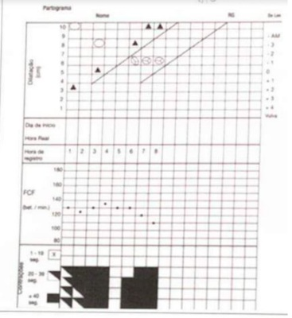
A Paradasecundária da descida
B Período pélvico prolongado
C Parto taquitócico
D Distócia funcional
E Parada secundária da dilatação
Questão 519 · Fatores de risco da RPM · 4000187634A aminiorexe prematura essa associada às seguintes morbidades maternas e fetais, exceto:
A Descolamento prematuro de placenta
B Corioamnionite
C Sepse perinatal
D Sofrimento feta
E Colestase gestacional
Questão 520 · Abortamento completo · 4000187632Gestante com 7 semanas de idade gestacional dá entrada ao PS com sangramento vaginal. Ao exame especular observado restos ovulares saindo pelo orifício interno de colo uterino, material foi retirado e encaminhado para análise. TV com colo uterino dilatado 1cm. Realizado ultrassom transvaginal sendo evidenciado endométrio centrado com espessura de 7 mm. Trata-se de:
A Aborto inevitável
B Aborto completo
C Ameaça de aborto
D Aborto incompleto
E Gestação anembrionada
Questão 521 · Indicações e contraindicações · 4000187631Gestante G2P0A1 com idade gestacional de 41 semanas, hígida, interna por pós datismo para avaliar via de parto. Ao exame: BEG, AU 38 cm, dinâmica uterina ausente, feto com boa vitalidade fetal, TV com colo amolecido de posição intermediária e 70% esvaecido, com 3 cm de dilatação, apresentação cefálica em -1 de DeLee. Sobre este caso, é correto afirmar:
A Necessário preparo de colo uterino com misoprostol
B Ocitocina pode ser utilizada na dose de 1 a 8 mU/min para indução do trabalho de parto
C Índice de Bishop de 6, portanto indicado condução com amniotomia
D Uso de Sonda de Foley para amadurecimento cervical não deve ser utilizada por ser considerado violência obstétrica
E Indicado parto cesárea por suspeita de DCP
Questão 522 · Etiologia · 4000187630A regra dos “4 T” é utilizada para identi car as causas de hemorragia pós parto. Assinale a opção que NÃO pertence a regra:
A Tecido
B Tônus
C Trombina
D Trauma
E Trajeto
Questão 523 · Imunizaçao na gestação · 4000187628Leia atentamente as afirmações abaixo: I - Mulheres vacinadas com vírus vivos ou vírus atenuados devem ser aconselhadas a evitar a gravidez por pelo menos 1 mês; II - A vacina de gripe não deve ser administrada no primeiro trimestre; III - A vacina de varicela, contraindicada durante a gestação, pode ser administrada no pós-parto apenas em mulheres que não estão amamentando; IVA vacina tríplice bacteriana acelular deve ser administrada no 3º trimestre e repetida a cada gestação. Estão corretas as afirmações:
A I, IV
B III, IV
C I, II
D I, III, IV
E I, II, III, IV
Questão 524 · Indicações de cesárea · 4000187626São indicações absolutas de cesariana, EXCETO:
A Placenta acreta
B Câncer cervical invasivo
C Descolamento prematuro de placenta com feto vivo
D Desproporção céfalo-pélvica
E Placenta prévia
Questão 525 · Etiologia · 4000187625Em relação ao líquido amniótico, se houver membranas intactas, rim fetal funcionante e sistema urinário desobstruído, a sua diminuição pode corresponder a:
A Diabetes gestacional
B Hipóxia fetal crônica
C Anencefalia
D Atresia de esôfago
E Infecção por sífilis ou toxoplasmose
Questão 526 · Cerclagem uterina · 4000187622A imagem corresponde a:
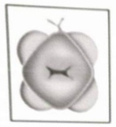
A Cerclagemtransabdominal pela técnica de Benson &Durfee
B EZT tipo II
C Colpectomia
D Cerclagem pela técnica de McDonald
E Operação de Shirodkar
Questão 527 · Cardiotocograf ia intraparto · Conduta · 4000187618Primigesta, 21 anos, idade gestacional 39 semanas e 1 dia, dá entrada em emergência referindo dor em baixo ventre há 3 horas com perda de secreção semelhante a catarro por via vaginal. Ao exame físico, corada, hidratada, pressão arterial 120/70 mmHg, Altura uterina 37 cm, dinâmica de: 3 contrações de 50 segundos em 10 minutos. Toque vaginal: colo no, 6 cm de dilatação, bolsa íntegra, apresentação cefálica, occipício esquerdo transverso, plano + 1 De Lee. Internada para condução do trabalho de parto, sendo realizada a seguinte cardiotocografia. Qual a conduta nesse caso?
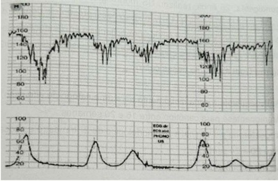
A Cardiotocografia categoria II, decúbito lateral esquerdo e oxigenioterapia.
B Cardiotocografia não reativa, amniotomia e ocitocina.
C Cardiotocografia categoria III, resolução do parto por cesárea.
D Cardiotocografia categoria II, posição vertical e glicose hipertônica.
Questão 528 · Assistência ao parto na gestação multipla · 4000187616Paciente, 26 anos, 2G, 1PN,0A, com pré-natal normal e gestação gemelar de 39 semanas, da entrada no pronto socorro obstétrico apresentando bolsa rota há 1 hora e 6 cm de dilatação ao toque uterino. Ecogra a recente mostra o primeiro feto em apresentação cefálica e o segundo em apresentação pélvica. A conduta neste caso é:
A Indicar parto normal para primeiro feto e realizar cesariana para o segundo.
B Indicar parto normal para os dois fetos e realizar cesariana somente em casos de intercorrências.
C Indicar parto normal para os dois fetos e realizar cesariana para o segundo se houver líquido meconial.
D Indicar cesariana por se tratar de gestação gemelar.
Questão 529 · Predição e prevenção · 4000187615Segundigesta, 28 anos, realizou US morfológico de 1º trimestre o qual evidenciou feto único, CCN 78 mm, TN: 1,5 mm, osso nasal presente e doppler do ducto venoso com onda "a" positiva. Refere ter tido pré- eclâmpsia em gestação anterior. A gestação atual foi por FIV. Ao exame apresentasse com pressão arterial 140/90 mmHg, IMC: 30 kg/m². Qual a conduta nesse caso?
A Anticoagulante e encaminhamento para ambulatório de alto risco.
B Amniocentese para cariótipo entre 16 e 20 semanas.
C Progesterona via vaginal e US morfológico de 2º trimestre e ecocardiografia fetal entre 20 e 24 semanas.
D Aspirina 150mg/dia.
Questão 530 · Antibioticoterapia para aumentar o período de latência · 4000187614Sabe-se que a rotura prematura de membranas ovulares pré-termo é importante causa de parto prematuro no mundo. Os atuais estudos mostram benefício do uso de antibioticoterapia na conduta expectante nos casos de rotura prematura de membranas ovulares pré-termo. Nesse contexto, o uso de antibiótico tem como principal objetivo:
A Profilaxia de trombose neonatal.
B Prevenção de síndrome de angústia do recém-nascido.
C Aumentar o período de latência.
D Tratamento de vaginose bacteriana.
Questão 531 · Conduta na RPM termo a partir de 37 semanas · 4000187613Primigesta, 22 anos, com idade gestacional de 37 semanas, vem em consulta no PS de obstetrícia, relatando que há dois dias apresenta quadro de perda de líquido por via vaginal em moderada quantidade. O pré-natal até o momento sem intercorrências, porém não trouxe o cartão de pré-natal. Refere presença de movimentos fetais. Ao exame: bom estado geral, ativa, contactuante, eupneica. Sinais vitais: pressão arterial 110/70 mmHg, frequência cardíaca 78 bpm, temperatura axilar 36,7°C. Exame cardíaco e respiratório sem alterações. Abdômen: gravídico, altura uterina 32 cm, batimentos cardíacos fetais 136 bpm, dinâmica uterina ausente, tônus uterino normal. Ao exame ginecológico especular observa-se saída de líquido vaginal claro pelo orifício externo do colo; toque colo grosso, posterior, pérvio para uma polpa justa, apresentação cefálica. Frente ao descrito qual a conduta?
A Prescrever penicilina cristalina e induzir o parto.
B Prescrever azitromicina e corticoide e induzir o parto.
C Prescrever corticoide, azitromicina e ampicilina.
D Prescrever azitromicina e ampicilina.
Questão 532 · Tecido retenção de tecido placentário · 4000187612Secundigesta, 36 anos, 1 parto cesárea anterior, idade gestacional de 32 semanas, vem em consulta no PS de obstetrícia, apresentando perda de sangue vermelho vivo via vaginal em pequena quantidade. Não trouxe o cartão do pré-natal, mas refere idade gestacional de 28 semanas. Refere presença de movimentos fetais. Ao exame encontra-se em bom estado geral, ativa, contactuante, eupneica, descorada +2/+4. Pressão arterial 110/70 mmHg, frequência cardíaca 98 bpm, temperatura axilar 36,7°C. Exame cardíaco e respiratório sem alterações. Abdômen: gravídico, altura uterina 30 cm, batimentos cardíacos fetais 136 bpm, dinâmica uterina ausente, tônus uterino normal. Frente à principal hipótese diagnóstica, qual a conduta inicial?
A Realizar exame especular para avaliar possíveis ginecopatias e toque para avaliar dilatação do colo.
B Realizar exame especular para avaliar ginecopatias e solicitar USG transvaginal para avaliar localização placentária.
C Solicitar cardiotocografia para avaliar vitalidade fetal.
D Solicitar perfil biofísico para avaliar vitalidade fetal e realizar toque vaginal para avaliar dilatação.
Questão 533 · Medicamentoso · 4000187611Tercigesta, 38 anos, parto cesárea anterior há três anos. Idade gestacional de 28 semanas, faz pré-natal de alto risco devido diabetes gestacional até o momento com controle dietético. Refere presença de movimentos fetais e nega perdas vaginais. Ao exame: pressão arterial 110/70 mmHg, frequência cardíaca 88 bpm, temperatura axilar 36,7°C. Abdômen gravídico, altura uterina 29 cm, batimentos cardíacos fetais 136 bpm, dinâmica uterina ausente, tônus uterino normal. Exame ginecológico não realizado. Traz o perfil glicêmico abaixo, qual a conduta?
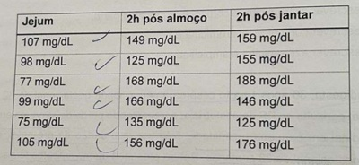
A Manter dieta e atividade física.
B Aumentar atividade física.
C Prescrever insulina.
D Prescrever metformina.
Questão 534 · Relação entre a idade gestacional e achados ultrassonográf icos · 4000187517Em um acompanhamento pré-natal, havendo dúvidas, o melhor parâmetro para cálculo da idade gestacional é a medida de:
A Diâmetro Biparietal.
B Comprimento Cabeça Nádega.
C Comprimento do Fêmur.
D Altura Uterina Materna
Questão 535 · Tipos de f órcipes · Aplicação do f órcipe · 4000187515No acompanhamento de trabalho de parto com dilatação total, feto em Occípito-Púbica, bolsa rota, altura + 3 de De Lee, período expulsivo prolongado, o fórcipe mais indicado nesse momento é:
A Simpsom-Braum.
B Piper.
C Mauriceau.
D Kielland.
Questão 536 · Rotura uterina · 4000187513Primigesta de 38 semanas, gestação complicada por diabete, encontra-se em trabalho de parto, dilatação de 8 cm, bolsa rota há 6 horas, apresentação cefálica. O obstetra nota o sinal de BandlFrommel, que é característico de:
A Sofrimento fetal agudo.
B Descolamento de placenta.
C Infecção amniótica.
D Iminência de rotura uterina.
Questão 537 · Tratamento · Seguimento prénatal · 4000187511Em caso de gestação complicada por HIV, o início da terapia antirretroviral deve ser a partir da idade gestacional de:
A 8 semanas.
B 10 semanas.
C 14 semanas.
D 20 semanas.
Questão 538 · Clínico · 4000187509São consideradas contraindicações para o tratamento clínico da prenhez ectópica com Metotrexato, exceto:
A Instabilidade hemodinâmica.
B Gravidez ectópica íntegra.
C Amamentação.
D Úlcera péptica ativa.
Questão 539 · Tratamento da insuf iciência istmocervical · Diagnóstico da insuf iciência istmocervical · 4000187507São características da incontinência cervical, exceto:
A a cerclagem deve ser feita com fio inabsorvível.
B o diagnóstico de infecção amniótica não contraindica a cerclagem.
C a malformação fetal incompatível com a vida é contraindicação à cerclagem.
D a melhor época para a cerclagem é em torno de 14 a 16 semanas de gestação.
Questão 540 · Mola hidatif orme · Hipertireoidismo secundário · 4000187506A semelhança molecular entre hCG e TSH, em algumas situações, pode causar hipertiroidismo clínico exacerbado. A situação mais propícia a este acontecimento é:
A Gestação Gemelar.
B Mola Hidatiforme.
C Abortamento Tardio.
D Infecção Amniótica.
Questão 541 · Quadro clínico · 4000187505Entende-se como o “Grito de Douglas”:
A ameaça de aborto.
B sinal clássico de endometriose.
C dor da infecção urinária.
D presença de sangue em fundo de saco.
Questão 542 · Interpretação · 4000187503O traçado de cardiotocografia que apresenta o padrão sinusoidal geralmente tem relação com:
A Normalidade.
B Infecção fetal.
C Isoimunização.
D Pós-datismo.
Questão 543 · Covid na gestação · 4000187497Observa-se no grupo de gestantes que desenvolvem a infecção Covid-19:
A Elevadas taxas de parto pré-termo e não cesariana. As taxas de prematuridade e de cesariana variam entre 30% a 80%.
B Elevadas taxas de parto pré-termo e cesariana. As taxas de prematuridade e de cesariana variam entre 3% a 8%.
C Elevadas taxas de parto pré-termo e cesariana. As taxas de prematuridade e de cesariana variam entre 30% a 80%.
D Baixas taxas de parto pré-termo e cesariana. As taxas de prematuridade e de cesariana variam entre 30% a 80%.
Questão 544 · Criterios diagnósticos da préeclampsia · 4000187437Mulher de 34 anos de idade, primigesta, com idade gestacional de 32 semanas e história prévia de hipertensão arterial crônica, comparece a consulta de pré-natal. No momento está assintomática. Apresentou a monitorização residencial de pressão arterial solicitada na consulta anterior, que evidenciou pressões sistólicas variando entre 130 e 150mmHg e diastólicas entre 95 e 100mmHg. Está em uso de ácido acetilsalicílico 100mg (iniciado na 12ª semana de gestação), carbonato de cálcio (iniciado na 20ª semana de gestação) e alfa metildopa 750mg/dia. Previamente à gestação, tinha bom controle pressórico com uso de hidroclorotiazida 25mg/dia. Ao exame físico, apresenta pressão arterial de 160x100mmHg, sentada, e de 140x95mmHg, em decúbito lateral esquerdo. Tinha altura uterina de 28cm, dinâmica uterina ausente, batimento cardíaco fetal de 145bpm, com movimentação fetal ativa durante o exame. Apresentou a última ultrassonogra a, realizada com idade gestacional de 31 semanas e 3 dias, que mostrou feto único, cefálico, com placenta anterior alta grau II e líquido amniótico normal. O peso fetal estava no percentil 10 e a doppler uxometria não tinha alterações. Neste momento, foi optado por aumento de dose da alfa metildopa para 1g/dia. Qual é o diagnóstico da paciente?
A Iminência de eclâmpsia
B Hipertensão do jaleco branco
C Hipertensão arterial crônica
D Pré-eclâmpsia sobreposta
Questão 545 · Conduta obstétrica · 4000187436Mulher de 34 anos de idade, primigesta, com idade gestacional de 32 semanas e história prévia de hipertensão arterial crônica, comparece a consulta de pré-natal. No momento está assintomática. Apresentou a monitorização residencial de pressão arterial solicitada na consulta anterior, que evidenciou pressões sistólicas variando entre 130 e 150mmHg e diastólicas entre 95 e 100mmHg. Está em uso de ácido acetilsalicílico 100mg (iniciado na 12ª semana de gestação), carbonato de cálcio (iniciado na 20ª semana de gestação) e alfa metildopa 750mg/dia. Previamente à gestação, tinha bom controle pressórico com uso de hidroclorotiazida 25mg/dia. Ao exame físico, apresenta pressão arterial de 160x100mmHg, sentada, e de 140x95mmHg, em decúbito lateral esquerdo. Tinha altura uterina de 28cm, dinâmica uterina ausente, batimento cardíaco fetal de 145bpm, com movimentação fetal ativa durante o exame. Apresentou a última ultrassonogra a, realizada com idade gestacional de 31 semanas e 3 dias, que mostrou feto único, cefálico, com placenta anterior alta grau II e líquido amniótico normal. O peso fetal estava no percentil 10 e a doppler uxometria não tinha alterações. Neste momento, foi optado por aumento de dose da alfa metildopa para 1g/dia. Uma semana após a consulta anterior, a paciente retorna com bons controles pressóricos e exames laboratoriais solicitados dentro da normalidade. Ela o questiona sobre a programação de parto. Qual é a orientação que deve ser dada à paciente neste momento?
A Resolução da gestação com 34 semanas.
B Resolução da gestação com 37 semanas.
C Resolução da gestação com 39 semanas.
D Resolução da gestação após 40 semanas.
Questão 546 · Ultrassonograf ia · 4000187435Mulher de 40 anos de idade comparece à emergência por dor intensa em baixo ventre e sangramento vaginal em pequena quantidade há 3 dias. Sem outras queixas. Tem história prévia de 2 gestações, com um parto normal sem intercorrência e um aborto. Não sabe relatar quando foi a sua última menstruação, mas acha que está atrasada. Não compareceu em consultas ginecológicas ou de pré-natal no último ano. Ao exame físico, apresenta frequência cardíaca de 88bpm e pressão arterial de 110x70mmHg, com abdome ácido e doloroso à palpação difusamente. O exame especular demonstrou a presença de sangramento em fundo de saco, em mínima quantidade. Ao toque vaginal, apresentou útero intrapélvico, anexos não palpáveis e dor à mobilização do colo uterino. Foi solicitada dosagem de beta-hCG, que foi positiva, e ultrassonogra a transvaginal, que evidenciou massa anexial à esquerda, medindo 5,1cm em seu maior diâmetro, íntegra, com embrião com batimento cardíaco embrionário. Qual é o diagnóstico?
A Cisto ovariano hemorrágico
B Abortamento
C Gestação ectópica
D Mola hidatiforme
Questão 547 · Cirúrgico · 4000187434Mulher de 40 anos de idade comparece à emergência por dor intensa em baixo ventre e sangramento vaginal em pequena quantidade há 3 dias. Sem outras queixas. Tem história prévia de 2 gestações, com um parto normal sem intercorrência e um aborto. Não sabe relatar quando foi a sua última menstruação, mas acha que está atrasada. Não compareceu em consultas ginecológicas ou de pré-natal no último ano. Ao exame físico, apresenta frequência cardíaca de 88bpm e pressão arterial de 110x70mmHg, com abdome ácido e doloroso à palpação difusamente. O exame especular demonstrou a presença de sangramento em fundo de saco, em mínima quantidade. Ao toque vaginal, apresentou útero intrapélvico, anexos não palpáveis e dor à mobilização do colo uterino. Foi solicitada dosagem de beta-hCG, que foi positiva, e ultrassonogra a transvaginal, que evidenciou massa anexial à esquerda, medindo 5,1cm em seu maior diâmetro, íntegra, com embrião com batimento cardíaco embrionário. Qual é a conduta que deve ser adotada neste momento?
A Iniciar tratamento com metotrexato local.
B Solicitar beta-hCG quantitativo em 48 horas.
C Iniciar o uso de misoprostol por via vaginal.
D Indicar a realização de laparotomia.
Questão 548 · Identif icação · 4000187412Assinale os casos em que seria indicado encaminhamento da paciente ao pré-natal de alto risco, segundo o Ministério da Saúde:
A Um episódio de pielonefrite, asma, hipotireoidismo.
B Hipotireoidismo subclínico, 2 abortamentos anteriores, apneia do sono.
C Isoimunização Rh, hipertireoidismo, dois episódios de pielonefrite.
D Gestação resultante de estupro, insuficiência mitral, Covid-19.
Questão 549 · Ultrassonograf ia no primeiro trimestre · 4000187411Qual parâmetro NÃO pode ser avaliado no ultrassom morfológico de 1º trimestre?
A Placenta de inserção baixa
B Translucência nucal
C Comprimento do colo uterino
D Presença de osso nasal
Questão 550 · Imunizaçao na gestação · 4000187410Marta está na sua segunda gestação. Durante a consulta, trouxe a sua carteirinha vacinal. Refere que soube que o governo está fazendo uma campanha de vacinação contra o sarampo e contra a gripe e pergunta a sua opinião sobre as vacinas durante a gestação. Marque a alternativa correta:
A Oriento a paciente a tomar as duas vacinas e prescrevo a dTpa após 20 semanas.
B Oriento Marta a não tomar nenhuma das vacinas, pois ambas são de vírus vivos, podendo fazer mal ao feto.
C Oriento Marta a não tomar vacinas durante a gestação, porque elas fazem mal ao feto.
D Oriento Marta a não tomar a vacina de sarampo durante a gestação e a tomar a vacina contra a Influenza.
Questão 551 · Exames laboratoriais · 4000187409Quais exames devem ser solicitados no primeiro trimestre de todas as gestantes, segundo o Ministério da Saúde?
A Colpocitologia oncótica, cultura de secreção vaginal e colposcopia.
B Hemograma, sorologia para toxoplasmose, urocultura.
C Hemograma, eletroforese de hemoglobina e glicemia de jejum.
D TSH e T4 livre, sorologia para rubéola e hemograma.
Questão 552 · Ameaça de abortamento · 4000187405Joyce, paciente de 33 anos, chega em consulta de pronto-socorro para avaliação. Está na primeira gestação, atualmente com 8 semanas e 3 dias, segundo a data da última menstruação, a qual é compatível com o primeiro ultrassom. Refere sangramento vaginal identi cado há 3 horas. Ao exame especular, colo normoepitelizado, com presença de sangramento vaginal coletado em moderada quantidade. Ao toque vaginal, foi identi cado colo amolecido, impérvio, útero intrapélvico, anexos não palpáveis. Ultrassonogra a transvaginal identi cou batimentos cardíacos fetais presentes, com hematoma subcoriônico medindo 15x6mm. Considerando o caso, qual o diagnóstico?
A Abortamento inevitável
B Ameaça de abortamento
C Aborto retido
D Abortamento incompleto
Revisar: possível letra faltando em enunciado
Questão 553 · Etiologia · 4000187361Das alternativas apresentadas abaixo, qual não é uma condição em que encontra-se polidrâminio com frequência?
A Atresia duodenal.
B Doença de Hirschprung.
C Atresia pilórica.
D Atresia de esôfago tipo A de Gross.
Questão 554 · Fatores de risco · 4000187340O principal fator de risco isoladamente para a ocorrência de prenhez ectópica é:
A Antecedente de cirurgia tubária.
B Tabagismo.
C Infecção pélvica.
D Prenhez ectópica prévia.
Questão 555 · Medida do colo uterino · 4000187336Em um ultrassom obstétrico em gestação de 24 semanas, com colo uterino apresentando comprimento de 15 mm, o desfecho esperado é:
A Restrição de crescimento fetal.
B Infecção amniótica.
C Prematuridade.
D Descolamento prematuro de placenta.
Questão 556 · Diagnóstico · 4000187333Em uma consulta pré-natal de rotina, o obstetra nota aumento de 1 cm na altura uterina entre as consultas mensais. O diagnóstico mais provável nesse caso é:
A Diabete Gestacional.
B Restrição de Crescimento Fetal.
C Atresia de Esôfago Fetal.
D Isoimunização Rh.
Questão 557 · Bacia obstétrica trajeto duro · 4000187330O menor diâmetro anteroposterior da bacia e, portanto, o que representa a conjugata vera obstétrica, vai do bordo:
A superior da sínfise púbica até o promontório.
B inferior da sínfise púbica até o promontório.
C posterior da sínfise púbica até o promontório.
D inferior da sínfise púbica até o cóccix.
Questão 558 · Rastreamento de anomalias cromossômicas · 4000187329No ultrassom para pesquisa de trissomias na gestação, o doppler serve para investigar:
A Artéria umbilical.
B Ducto venoso.
C Artéria uterina.
D Artéria cerebral média.
Questão 559 · Conduta · 4000187327Uma gestante de 32 semanas, apresenta ultrassom sugerindo restrição de crescimento fetal assimétrico, líquido amniótico de volume normal e perfil hemodinâmico fetal (PHF) <1. Isso significa:
A existe hipoxemia fetal e a conduta é resolutiva no momento.
B existe hipoxemia fetal, mas a conduta é expectante, no momento, com repetição do doppler em 30 dias.
C o feto está bem oxigenado até o momento, e a conduta é expectante.
D não existe sofrimento fetal e a interrupção pode ser com 37 semanas, sem necessidade de nova avaliação com doppler.
Questão 560 · Bacia obstétrica trajeto duro · 4000187325Em relação à anatomia da bacia obstétrica, assinale a alternativa correta.
A Estreito médio: vai do bordo inferior da sínfise púbica ao promontório.
B Estreito inferior: entre borda superior da sínfise púbica e espinhas ciáticas.
C Estreito superior: vai do bordo superior da sínfise púbica ao promontório.
D Conjugata diagonalis: borda superior da sínfise púbica ao promontório.
Questão 561 · Anamnese · 4000187320Carteira da Gestante: a gestante deve recebê-la na primeira consulta de pré-natal, nela:
A Deve conter todas as informações sobre o seu estado de saúde, desenvolvimento do bebê e não resultados de exames realizados.
B Deve conter todas as informações sobre o seu estado de saúde, desenvolvimento do bebê e resultados de exames realizados.
C Deve conter todas as informações sobre o seu estado de saúde, desenvolvimento do bebê e resultados de exames não realizados.
D Deve conter todas as informações sobre o seu estado de saúde, não do desenvolvimento do bebê e resultados de exames realizados.
Questão 562 · Controle glicêmico · 4000187319A automonitorização da glicemia capilar por meio de tas reagentes é recomendada para todas as grávidas com diabetes. Sendo correto que:
A A frequência dessa monitorização irá depender do tipo de tratamento do diabetes e da viabilidade financeira e técnica do local onde a gestante está sendo assistida.
B A frequência dessa monitorização nunca irá depender do tipo de tratamento do diabetes e da viabilidade financeira e técnica do local onde a gestante está sendo assistida.
C A frequência dessa monitorização irá depender do tipo de tratamento do diabetes e não da viabilidade financeira e técnica do local onde a gestante está sendo assistida.
D A frequência dessa monitorização irá depender do tipo de tratamento do diabetes e da viabilidade financeira e não da técnica do local onde a gestante está sendo assistida.
Questão 563 · Def inição · 4000187318A variação de duração do puerpério está relacionada especialmente às mudanças anatômicas e siológicas no organismo da mulher, embora questões de ordem psicossocial:
A não relacionadas à maternidade, à sexualidade, à autoestima, à reorganização da vida pessoal e familiar estejam ocorrendo concomitantemente e influenciem a passagem desse período.
B relacionadas à maternidade, à sexualidade, à autoestima, à reorganização da vida pessoal e familiar estejam ocorrendo concomitantemente e influenciem a passagem desse período.
C relacionadas à maternidade, à sexualidade, à autoestima, à reorganização da vida pessoal e não familiar estejam ocorrendo concomitantemente e influenciem a passagem desse período.
D relacionadas à maternidade, à sexualidade, à autoestima, à reorganização da vida pessoal e familiar estejam ocorrendo concomitantemente e não influenciem a passagem desse período.
Questão 564 · Controle glicêmico · 4000187316Todos os sistemas de monitorização glicêmica dependem da e ciência do instrumento de medida e das habilidades de seus usuários. Sendo correto que:
A É desnecessária a orientação quanto ao uso de tais ferramentas por profissionais de saúde devidamente treinados para tanto, assim como a averiguação frequente da sua utilização ao longo de toda a gravidez.
B É necessária a orientação quanto ao uso de tais ferramentas por profissionais de saúde devidamente treinados para tanto, assim como a averiguação frequente da sua utilização ao longo de toda a gravidez.
C É necessária a orientação quanto ao uso de tais ferramentas por profissionais de saúde indevidamente treinados para tanto, assim como a averiguação frequente da sua utilização ao longo de toda a gravidez.
D É necessária a orientação quanto ao uso de tais ferramentas por profissionais de saúde devidamente treinados para tanto, assim como a averiguação eventual da sua utilização ao longo de toda a gravidez.
Questão 565 · Antecedentes f amiliares · 4000187312Existem ainda efeitos genéticos que ocorrem intraútero e que podem persistir por gerações. Sendo correto que:
A Nenhuma influência sobre a obesidade podem ocorrer no útero ou até mesmo duas gerações passadas quando os oócitos são formados na avó.
B Algumas influências sobre a obesidade podem ocorrer no útero, mas não de gerações passadas quando os oócitos são formados na avó.
C Algumas influências sobre a obesidade podem ocorrer no útero ou até mesmo duas gerações passadas quando os oócitos são formados na avó.
D Algumas influências sobre a obesidade nunca podem ocorrer no útero ou até mesmo duas gerações passadas quando os oócitos são formados na avó.
Questão 566 · Hiperêmese gravídica · 4000187307Mulher de 22 anos de idade, com idade gestacional de 9 semanas, comparece em consulta pré-natal com queixa de náuseas e vômitos persistentes há um mês. Neste período, tem sentido náusea por cerca de 4 horas no período da manhã, que ocorrem predominantemente logo após acordar, com ocorrência de 2 a 3 episódios de vômitos, sem sangue ou restos alimentares. Adicionalmente, nega a ocorrência de salivação intensa ou episódios de esforço de vômito sem êmese durante o período. Sem outras queixas no momento. Tem história prévia de enxaqueca com sintomas de aura, bem controlada com medidas comportamentais e uso de anti-inflamatórios durante as crises, que ocorrem menos de uma vez no mês. Ao exame físico, está em bom estado geral, normocorada e hidratada, com frequência cardíaca de 68bpm, pressão arterial de 110x70mmHg (sem variação postural) e tempo de enchimento capilar de 2 segundos. Sem outras alterações. Além da prescrição de terapia antiemética, que outras orientações devem ser feitas à paciente?
A Recomendar que a paciente priorize a ingestão de alimentos muito doces e ricos em gorduras e suplementar niacina.
B Recomendar que a paciente coma um lanche rico em proteína antes de se levantar e suplementar piridoxina.
C Recomendar a realização de múltiplas pequenas refeições a cada duas horas e suplementar tiamina.
D Recomendar a ingestão das refeições com líquidos, como sucos de frutas cítricas ou café e suplementar cobalamina.
Questão 567 · Hiperêmese gravídica · 4000187306Mulher de 22 anos de idade, com idade gestacional de 9 semanas, comparece em consulta pré-natal com queixa de náuseas e vômitos persistentes há um mês. Neste período, tem sentido náusea por cerca de 4 horas no período da manhã, que ocorrem predominantemente logo após acordar, com ocorrência de 2 a 3 episódios de vômitos, sem sangue ou restos alimentares. Adicionalmente, nega a ocorrência de salivação intensa ou episódios de esforço de vômito sem êmese durante o período. Sem outras queixas no momento. Tem história prévia de enxaqueca com sintomas de aura, bem controlada com medidas comportamentais e uso de anti-inflamatórios durante as crises, que ocorrem menos de uma vez no mês. Ao exame físico, está em bom estado geral, normocorada e hidratada, com frequência cardíaca de 68bpm, pressão arterial de 110x70mmHg (sem variação postural) e tempo de enchimento capilar de 2 segundos. Sem outras alterações. Quais exames devem ser solicitados para a avaliação inicial da paciente?
A Eletrólitos séricos, urina tipo 1 e ultrassonografia obstétrica.
B Hemograma, TSH e endoscopia digestiva alta com pesquisa de H. pylori.
C Dosagem de AST/ALT, amilase, lipase e ultrassom de abdome superior.
D Creatinina, ureia, proteína C reativa e ultrassonografia de abdome total.
Questão 568 · Colagenoses na gestação Lupus eritematoso Sistêmico LES · 4000187297Durante visita na Unidade de Alojamento Conjunto, você avalia um recém-nascido de 2 dias de vida, nascido a termo, de parto vaginal e sem intercorrências. Sabe-se que a mãe é portadora de Lúpus Eritematoso Sistêmico, em uso de hidroxicloroquina e com atividade de doença controlada no pré-natal. Ao examinar a criança, você observa palidez cutânea, com extremidades frias e tempo de enchimento capilar de 4 segundos. À ausculta cardíaca, o ritmo é irregular, bulhas normofonéticas, sem sopros. A frequência cardíaca é de 65bpm. O restante do exame físico está normal. Diante do achado, foi realizado o eletrocardiograma a seguir e foram solicitadas pesquisas de autoanticorpos no sangue materno e da criança. Assinale a alternativa que contém o ritmo identi cado no eletrocardiograma e o autoanticorpo mais frequentemente encontrado no caso em questão:
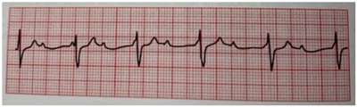
A Bloqueio atrioventricular de primeiro grau - Anti-La/SSB.
B Bloqueio atrioventricular de segundo grau tipo Mobitz I - Anti-La/SSB.
C Bloqueio atrioventricular total - Anti-Ro/SSA.
D Bloqueio atrioventricular de segundo grau tipo Mobitz II - Anti-U1RNP.
Revisar: possível letra faltando em enunciado
Questão 569 · Componentes do partograma · 4000187237Uma gestante dá entrada na maternidade em trabalho de parto. Ao toque colo dilatado 4 cm, bolsa rota, apresentação cefálica. Aberto o partograma de Friedmann, o Obstetra deve traçar a linha de ação:
A 2 horas após a linha de alerta.
B 2 horas antes da linha de alerta.
C 4 horas após a linha de alerta.
D 4 horas antes da linha de alerta.
Questão 570 · Avaliação do colo uterino · 4000187235Considere as seguintes características do toque obstétrico: I. Dilatação do colo. II. Altura da apresentação. III. Flexão cefálica fetal. IV. Apagamento do colo. São avaliados no Índice de Bishop:
A I e II, somente.
B I, II e III, somente.
C II e IV, somente.
D I, II e IV, somente.
Questão 571 · Tonus atonia uterina · 4000187233A sutura de B-Lynch é realizada para tratamento de:
A Hemorragia puerperal por laceração de canal de parto.
B Hemorragia puerperal por atonia uterina.
C Fixação do ligamento cardinal ao coto vaginal em histerectomia.
D Fixação dos ovários ao coto vaginal em histerectomia.
Questão 572 · Rastreamento de anomalias cromossômicas · 4000187226Gestante de 40 anos comparece a consulta com obstetra apresentando ultrassom de 12 semanas de gestação com medida de translucencia nucal de 3,8 mm e ausência de osso nasal. Esse laudo representa aumento do risco de:
A Gastrosquise.
B Anencefalia.
C Defeito aberto do tubo neural.
D Trissomia.
Questão 573 · Hepatite B e C · 4000187225Gestante de 11 semanas que realizava pré-natal na Espanha, muda para o Brasil e em sua primeira consulta de pré-natal apresenta laudo de exame onde consta Antígeno Austrália positivo. Isso significa que ela tem:
A Herpes.
B Hepatite B.
C Sífilis.
D Toxoplasmose.
Questão 574 · Diagnóstico na gestação · Rastreamento na gestação · 4000187224Uma gestante de 12 semanas apresenta sorologia Toxoplasmose IgM negativo e IgG positivo. O melhor tratamento neste caso é:
A Espiramicina.
B Espiramicina + Sulfadiazina + Pirimetamina.
C Sulfadiazina + Pirimetamina + Ácido Folínico.
D Não necessita tratamento.
Questão 575 · Tratamento · 4000187223Gestante de 35 semanas, com diagnóstico de Isoimunização, retorna à consulta pré-natal com laudo de Coombs Indireto de 1/128. O ultrassom evidencia hidropsia fetal. A conduta mais adequada neste caso é:
A Interrupção da gestação.
B Cordocentese.
C Amniocentese.
D Repetir Coombs indireto em 1 semana.
Questão 576 · Cálculo da idade gestacional pela ultrassonograf ia IG USG · 4000187222Para avaliação ultrassonográ ca da estimativa de peso fetal ao ultrassom, a medida que normalmente não é utilizada é:
A Comprimento do fêmur.
B Diâmetro bi-parietal.
C Comprimento tibial.
D Circunferência abdominal
Revisar: possível letra faltando em enunciado
Questão 577 · Relação entre a idade gestacional e achados ultrassonográf icos · 4000187155Gestante procura obstetra preocupada pois o laudo de ultrassom não evidenciou os batimentos cardíacos fetais. O ultrassom endovaginal é capaz de visualizar a atividade cardíaca do feto quando o CCN tem pelo menos:
A 6 mm.
B 12 mm.
C 15 mm.
D 18 mm.
Questão 578 · Rastreamento na gestação · 4000187154Em uma paciente com sorologia para toxoplasmose IgM e IgG positivos e teste de avidez em 90%, o diagnóstico é:
A Infecção recente.
B Infecção ativa.
C Infecção remota reagudizada.
D Infecção remota.
Questão 579 · Identif icação · Doenças crônicas · 4000187153Em gestações complicadas por asma, é maior o risco de:
A atonia uterina.
B baixo peso ao nascimento.
C polidramnia.
D defeitos abertos do tubo neural.
Questão 580 · Indicações · 4000187149A utilização do ultrassom doppler com medida da velocidade sistólica máxima de artéria cerebral fetal tem como objetivo o acompanhamento de:
A insuficiência placentária em pré-eclâmpsia.
B gestações complicadas por diabete.
C doença hemolítica perinatal.
D restrição de crescimento fetal simétrico.
Questão 581 · Avaliação do volume de líquido amniótico · Fisiologia do líquido amniótico · 4000187147A classificação de medida do líquido amniótico pelo ILA (índice de líquido amniótico), considera como valores de normalidade entre:
A 5,0 e 8,0 cm.
B 8,0 e 18,0 cm.
C 5,0 e 8,0 mm.
D 18 e 25 mm.
Questão 582 · Diagnóstico de toxoplasmose congênita · 4000187145Gestante de 14 semanas com sorologia para toxoplasmose IgM positivo e IgG negativo. O melhor método diagnóstico de infecção fetal é:
A Reação de fixação do complemento.
B Sorologia do cordão umbilical.
C PCR do líquido amniótico.
D Intradermorreação de Frei.
Questão 583 · Desenvolvimento f etal · 4000187143Diversos hormônios podem exercer efeitos teratógenos quando ingeridos no primeiro trimestre da gravidez, porém somente em quantidades muito superiores ao convencional. O hormônio que tem potencial de teratogenicidade em genitália, mesmo em doses usuais, é:
A Desogestrel.
B Estradiol.
C Etinilestradiol.
D Danazol.
Questão 584 · Diagnóstico · Diagnóstico · 4000187129Uma das grandes di culdades na prática clínica é quando a pessoa infectada com sí lis apresenta teste treponêmico reagente e titulos baixos de teste nao treponemico, normalmente ≤1:4. Sendo correto que:
A Nesse caso, há de se diferenciar entre sífilis recente, sífilis latente e não resposta imunológica benigna (cicatriz sorológica).
B Nesse caso, há de se diferenciar entre sífilis recente, sífilis latente e resposta imunológica benigna (cicatriz sorológica).
C Nesse caso, há de se diferenciar entre sífilis recente, sífilis latente e resposta imunológica maligna (cicatriz sorológica).
D Nesse caso, há de se diferenciar entre sífilis recente, sífilis latente e resposta imunológica benigna (cicatriz não sorológica).
Questão 585 · Repercussões do diabetes na gestação · 4000187128Diabetes é uma das condições médicas mais comuns durante a gravidez. Sendo correto que:
A Estima-se que um em cada seis nascidos vivos (16,8%) é filho de mulher com alguma forma de diabetes durante a gestação. A hiperglicemia na gestação está associada ao risco de diversos desfechos perinatais adversos.
B Estima-se que um em cada seis nascidos vivos (16,8%) é filho de mulher com alguma forma de diabetes durante a gestação. A hiperglicemia na gestação está dissociada ao risco de diversos desfechos perinatais adversos.
C Estima-se que um em cada seis nascidos vivos (16,8%) é filho de mulher com alguma forma de diabetes durante a gestação. A hiperglicemia na gestação não está associada ao risco de diversos desfechos perinatais adversos.
D Estima-se que cinco em cada seis nascidos vivos é filho de mulher com alguma forma de diabetes durante a gestação. A hiperglicemia na gestação está associada ao risco de diversos desfechos perinatais adversos.
Questão 586 · Trombof ilia na gestação · Síndrome do anticorpo antif osf olipídeo SAAF · 4000187048Uma gestante de 14 semanas com diagnóstico de Síndrome Anti-fosfolípide, tem indicação de:
A Heparina somente.
B Heparina e AAS.
C AAS somente.
D Corticoide e AAS
Questão 587 · Mola hidatif orme · 4000187042Paciente com diagnóstico de Mola Hidatiforme é internada e submetida a esvaziamento uterino. Na alta hospitalar deve ser prescrito um método contraceptivo, exceto:
A combinado oral.
B DIU de cobre.
C Injetável mensal.
D desogestrel via oral.
Questão 588 · Diagnóstico de toxoplasmose congênita · Diagnóstico na gestação · 4000187035Tratamento da toxoplasmose na gestação Gestante de 30 semanas, apresenta sorologia Toxoplasmose IgM+ e IgG+ (tinha sorologias prévias negativas). A melhor conduta é:
A solicitar teste de avidez.
B espiramicina + sulfadiazina + pirimetamina.
C espiramicina e sugerir amniocentese.
D nada a fazer.
Questão 589 · Tonus atonia uterina · 4000187034A sutura de B-Lynch foi idealizada para:
A incontinência cervical.
B atonia uterina.
C laqueadura tubária.
D correção de incontinência urinária.
Questão 590 · Tocotraumatismo · 4000187029Após um parto normal, sem complicações, o pai da criança questiona o obstetra a respeito da bossa que o bebê apresenta. A resposta mais adequada é que:
A é um edema no couro cabeludo que deve desaparecer em 1 semana.
B é uma hemorragia no couro cabeludo que deve desaparecer em 24 a 48 horas.
C é um edema no couro cabeludo que deve desaparecer em 24 a 48 horas.
D é uma hemorragia no couro cabeludo que deve desaparecer em 1 semana.
Questão 591 · Interpretação · 4000187027Em uma gestação de 34 semanas complicada por pré-eclâmpsia, o ultrassom revela perda do tônus fetal. Isso significa:
A Hipoxemia leve, pois o tônus é o primeiro parâmetro a se alterar no PBF.
B Hipoxemia moderada, pois o tônus é um parâmetro intermediário nos critérios de gravidade do PBF.
C A perda do tônus fetal não tem relação com o grau de hipoxemia fetal.
D Hipoxemia gravíssima, pois o tônus é o último parâmetro a se alterar no PBF.
Questão 592 · Indicações de cesárea · 4000187025É considerada indicação absoluta de parto cesárea:
A Síndrome de Marfan.
B Placenta prévia marginal.
C Iminência de eclampsia.
D Estenose mitral.
Questão 593 · Fisiopatogenia · Peso · 4000187009O momento biológico passível de prevenir o ganho de peso é de fundamental importância.
A No sexo feminino o momento de menor risco parece ser a idade reprodutiva, especificamente a gestação e os dois primeiros anos pós-parto e pós menopausa.
B No sexo feminino o momento de maior risco parece ser a idade não reprodutiva, especificamente a gestação e os dois primeiros anos pós-parto e pós menopausa.
C No sexo feminino o momento de maior risco parece ser a idade reprodutiva, especificamente a gestação e os dois primeiros anos antes do parto e pós menopausa.
D No sexo feminino o momento de maior risco parece ser a idade reprodutiva, especificamente a gestação e os dois primeiros anos pós-parto e pós menopausa.
Questão 594 · Assinclitismo · 4000187005Paciente com idade gestacional de 38s, em trabalho de parto, apresenta ao toque vaginal a sutura sagital da cabeça fetal próxima ao pube materno. O diagnóstico é de:
A Rotação interna.
B Rotação externa.
C Sinclitismo.
D Assinclitismo de Nagele.
E Assinclitismo de Litzmann.
Questão 595 · Pontos de ref erência da apresentação f etal · 4000187002Gestante, com 39s, apresenta ao toque vaginal, feto em apresentação cefálica de etida de 2° grau. Qual o ponto de referência e a linha de orientação, respectivamente?
A Lambda e sutura sagital.
B Lambda e sutura metópica.
C Bregma e sutura sagital.
D Bregma e sutura metópica.
E Glabela e sutura metópica.
Questão 596 · Etiologia e f isiopatologia · 4000186998Primigesta com 17 anos de idade está com 30 semanas de gestação. Durante as duas últimas consultas de pré-natal apresentou pressão arterial de 160x100mmHg, cefaleia, proteinúria de 24 horas, acima de 300mg. Pode-se concluir que a paciente apresenta níveis de tromboxano e de prostaciclina, respectivamente:
A Aumentados e diminuídos.
B Aumentados e aumentados.
C Diminuídos e aumentados.
D Diminuídos e diminuídos.
E Semelhantes aos níveis antes da gravidez.
Questão 597 · Distócia de ombro · 4000186994Paciente admitida com 38 semanas de gestação, observa-se altura uterina de 42 cm. Durante o parto vaginal ocorreu distócia de ombro e o obstetra inseriu os dedos de uma das mãos na vagina atrás do ombro anterior do feto, empurrando o ombro em direção ao tórax do feto. Esta manobra denomina-se:
A Manobra de McRoberts.
B Manobra de Rubin I.
C Manobra de Rubin II.
D Manobra de Woods.
E Manobra de Woods reversa.
Questão 598 · Prevenção · 4000186992A administração de imunoglobulina anti-D deve ser feita em todas as mulheres Rh negativas com parceiro Rh positivo nas seguintes situações, EXCETO:
A Gravidez ectópica.
B Gravidez molar.
C Abortamentos.
D Puérperas com títulos de Coombs indireto inferiores a 1/8.
E Gestante Rh negativa na 28ª semana gestacional caso não esteja sensibilizada.
Questão 599 · Tratamento · Diagnóstico · Rastreamento na gestação · 4000186991Gestante, 23 anos, com 12 semanas de gestação, apresenta exame de toxoplasmose com IgM e IgG positivos. Qual a melhor conduta?
A Iniciar tratamento se o teste de avidez for baixo.
B Realizar amniocentese para verificar acometimento fetal.
C Não iniciar medicação uma vez que a espiramicina é contraindicada no 1º trimestre.
D Iniciar tratamento imediatamente, independente do teste de avidez.
E Iniciar tratamento se o teste de avidez estiver alto.
Questão 600 · Sistema digestório · 4000186989Gestante, 33 anos, apresenta diminuição da motilidade gástrica. Tal fato ocorre devido a níveis aumentados de:
A Prolactina.
B Estrogênio.
C Progesterona.
D Androstenediona.
E Testosterona.
Questão 601 · Determinação da corionicidade e amnionicidade · Diagnóstico · Tipos de gestações múltiplas · 4000186988Na gestação gemelar, com gêmeos acolados, a divisão do ovo ocorre quanto tempo após a fertilização?
A Nas primeiras 24 horas.
B Nas primeiras 72 horas.
C Entre o 4º e 8º dia.
D Entre o 9º e 13º dia.
E Após o 13º dia.
Questão 602 · Mola hidatif orme · Def inição · Mola completa · 4000186987É característico da mola hidatiforme completa, EXCETO:
A Cariótipo sempre diploide.
B Feto ausente.
C É formada por genoma paterno.
D Baixo risco (<1%) de desenvolver doença trofoblástica gestacional.
E Presença de degeneração hidrópica de todas as vilosidades coriais.
Questão 603 · Rotura uterina · 4000186986Paciente 28 anos, com histórico de 2 cesarianas anteriores, com idade gestacional de 38 semanas é internada com presença de dinâmica uterina e dilatação do colo de 6 cm. Observa-se distensão segmentária, com ligamentos redondos retesados, desviados para a face ventral do útero. O sinal descrito é denominado:
A Sinal de Bandl.
B Sinal de Farabeuf.
C Sinal de Halban.
D Sinal de Frommel.
E Sinal de Piskacek.
Questão 604 · Etiologia · 4000186965Das alternativas apresentadas abaixo, qual não é uma condição em que encontra-se polidrâminio com frequência?
A Doença de Hirschprung.
B Atresia duodenal.
C Atresia pilórica.
D Atresia de esôfago tipo A de Gross.
Questão 605 · Exames laboratoriais · Outros · 4000186952Sobre os exames de Pré-Natal é INCORRETO afirmar:
A As mulheres não imunizadas contra a doença devem ser testadas na gravidez e orientadas para realizar a imunização logo após o parto.
B É recomendada triagem de rotina para vaginose bacteriana em gestantes assintomáticas. O benefício do tratamento dessa doença para prevenir parto pré-termo recorrente é demonstrado.
C O estreptococo do grupo B é uma bactéria que pode colonizar o trato intestinal materno e ser transmitida durante o parto para o recém-nascido, podendo ter como consequência infecção grave, septicemia precoce e morte neonatal.
D No rastreamento da tuberculose, as gestantes com resultado reator >ou = 5mm devem ser encaminhadas para investigação complementar em serviço especializado.
E O hipotireoidismo materno pode afetar o desenvolvimento neurológico do feto, e o hipertireoidismo materno por causar complicações maternas e fetais.
Questão 606 · Diagnóstico · 4000186939Em uma consulta pré-natal de rotina, o obstetra nota aumento de 1 cm na altura uterina entre as consultas mensais. O diagnóstico mais provável nesse caso é:
A Diabete Gestacional.
B Atresia de Esôfago Fetal.
C Restrição de Crescimento Fetal.
D Isoimunização Rh.
Questão 607 · Bacia obstétrica trajeto duro · 4000186928O menor diâmetro anteroposterior da bacia e, portanto, o que representa a conjugata vera obstetrícia, vai do bordo:
A superior da sínfise púbica até o promontório.
B posterior da sínfise púbica até o promontório.
C inferior da sínfise púbica até o promontório.
D inferior da sínfise púbica até o cóccix.
Questão 608 · Ducto venoso DV · 4000186927No ultrassom para pesquisa de trissomias na gestação, o doppler serve para investigar:
A Artéria umbilical.
B Artéria uterina.
C Ducto venoso.
D Artéria cerebral média.
Questão 609 · Conduta · 4000186925Uma gestante de 32 semanas, apresenta ultrassom sugerindo restrição de crescimento fetal assimétrico, líquido amniótico de volume normal e perfil hemodinâmico fetal (PHF) <1. Isso significa:
A o feto está bem oxigenado até o momento, e a conduta é expectante.
B existe hipoxemia fetal e a conduta é resolutiva no momento.
C existe hipoxemia fetal, mas a conduta é expectante, no momento, com repetição do doppler em 30 dias.
D não existe sofrimento fetal e a interrupção pode ser com 37 semanas, sem necessidade de nova avaliação com doppler.
Questão 610 · Bacia obstétrica trajeto duro · 4000186921Em relação à anatomia da bacia obstétrica, assinale a alternativa correta
A Estreito médio: vai do bordo inferior da sínfise púbica ao promontório.
B Estreito superior: vai do bordo superior da sínfise púbica ao promontório.
C Estreito inferior: entre borda superior da sínfise púbica e espinhas ciáticas.
D Conjugata diagonais: borda superior da sínfise púbica ao promontório.
Questão 611 · Assistência ao puerpério f isiológico · 4000186919A variação de duração do puerpério está relacionada especialmente às mudanças anatômicas e siológicas no organismo da mulher, embora questões de ordem psicossocial:
A relacionadas à maternidade, à sexualidade, à autoestima, à reorganização da vida pessoal e familiar estejam ocorrendo concomitantemente e influenciem a passagem desse período.
B não relacionadas à maternidade, à sexualidade, à autoestima, à reorganização da vida pessoal e familiar estejam ocorrendo concomitantemente e influenciem a passagem desse período.
C relacionadas à maternidade, à sexualidade, à autoestima, à reorganização da vida pessoal e não familiar estejam ocorrendo concomitantemente e influenciem a passagem desse período.
D relacionadas à maternidade, à sexualidade, à autoestima, à reorganização da vida pessoal e familiar estejam ocorrendo concomitantemente e não influenciem a passagem desse período.
Questão 612 · Dosagem beta hCG · Ultrassonograf ia · Diagnóstico · 4000186847Sobre a Mola Hidatiforme considere as seguintes assertivas: I. O BHCG geralmente é inferior ao da gestação normal na mesma idade gestacional. II. A altura uterina é maior que o esperado para a idade gestacional. III. O achado ultrassonográfico clássico é a imagem em “sinal da correia dentada”. Está(ão) correta(s) a(s) afirmativa(s):
A I e II, apenas.
B II e III, apenas.
C II, apenas.
D III, apenas.
Questão 613 · Investigação do obito f etal · Composição do líquido amniótico · Morte f etal Óbito f etal OF · 4000186845O encontro de líquido amniótico de característica “achocolatado” é sugestivo de:
A Doença hemolítica perinatal.
B Óbito fetal.
C Corioamnionite.
D Mecônio.
Questão 614 · Fatores de risco · 4000186843Em relação à placenta prévia, assinale um fator não relacionado:
A pré-eclâmpsia.
B multiparidade.
C uso de cocaína.
D tabagismo.
Questão 615 · Investigação diagnóstica e tratamento · Trombof ilia na gestação · 4000186841Abortamento habitual Abortamento de repetição e insuf iciência istmocervical Gestante com antecedente de 3 perdas gestacionais entre 10 e 14 semanas, encontra-se atualmente com idade gestacional de 8 semanas. Além dos exames de rotina, o que mais deve ser investigado no momento nesse caso é:
A Insuficiência de Corpo Lúteo.
B Síndrome Antifosfolípide.
C Placentação Anômala.
D Endometriose.
Questão 616 · Determinação da corionicidade e amnionicidade · Tipos de gestações múltiplas · 4000186838Gestante comparece a consulta de rotina do pré-natal, apresentando ultrassom evidenciando gestação gemelar com sinal do T invertido. Provavelmente é uma gemelaridade:
A Monocoriônica / monoamniótica.
B Dicoriônica / diamniótica.
C Com óbito fetal.
D Monocoriônica / diamniótica.
Questão 617 · Cardiotocograf ia intraparto · Interpretação · Parâmetros da cardiotocograf ia · 4000186836O exame de cardiotocogra a que demonstra traçado de desacelerações periódicas com intervalo de decalagem de 50 segundos tem o nome de:
A Acelerações transitórias.
B Desacelerações.
C DIP II.
D Padrão sinusoidal.
Questão 618 · Anemias na gestação · Uso de medicações · 4000186832O Ferro elementar pode aumentar o estresse oxidativo placentário e, portanto, deve ter seu uso limitado na gravidez:
A no segundo trimestre.
B no primeiro trimestre.
C no terceiro trimestre.
D durante toda a gestação.
Questão 619 · Puerpério f isiológico · Def inição · 4000186823O puerpério se inicia imediatamente após o parto e dura:
A em média (visto que o término é imprevisto), duas semanas após este, havendo variabilidade na duração entre as mulheres.
B em média (visto que o término é imprevisto), seis semanas após este, havendo variabilidade na duração entre as mulheres.
C em média (visto que o término é imprevisto), seis semanas após este, não havendo variabilidade na duração entre as mulheres.
D em média (visto que o término é previsto), seis semanas após este, nunca havendo variabilidade na duração entre as mulheres.
Questão 620 · Tratamento · Diagnóstico · 4000186815Gestante de 30 anos, com idade gestacional de 34 semanas e 2 dias, procura atendimento por sangramento vaginal moderado com 2 h de evolução associado a cólicas abdominais. Ao exame observa-se PA de 170x 100 mmHg, frequência cardíaca materna de 108 bpm, frequência cardíaca fetal de 100 bpm, hipertonia uterina, dilatação cervical de 2 cm, feto com apresentação alta e bolsa amniótica íntegra. Qual a melhor conduta ante o caso exposto?
A Cesariana de emergência.
B Iniciar condução do parto com ocitocina.
C Iniciar nifedipina via oral para inibição do trabalho de parto.
D Amniotomia para acelerar o parto vaginal.
E Conduta expectante.
Questão 621 · Rotura de vasa prévia · 4000186814Sobre os sangramentos de 3º trimestre, é correto afirmar:
A A origem do sangramento na rotura de vasa prévia é materna.
B É comum observar sofrimento fetal em casos de rotura do seio marginal.
C A rotura de vasa prévia costuma acontecer no momento da amniorrexe.
D A origem do sangramento na rotura de seio marginal é fetal.
E Tabagismo não aumenta o risco para acretismo placentário.
Questão 622 · Tratamento · Quadro clínico · Diagnóstico · 4000186813Primigesta com 38 semanas de gestação procura atendimento hospitalar com queixa de dor abdominal e sangramento vaginal há 40 minutos. Ao exame, observa-se PA de 90x50 mmHg, útero hipertônico e bradicardia fetal à cardiotocogra a. Toque vaginal com colo dilatado para 4 cm, apresentação cefálica em De Lee -3. Dentre as alternativas abaixo, qual a que descreve a hipótese diagnóstica e a melhor conduta?
A Placenta prévia; amniotomia e indução do parto.
B Placenta prévia; amniotomia e cesariana.
C Acretismo de placenta; cesariana.
D Descolamento prematuro de placenta; conduta expectante.
E Descolamento prematuro de placenta; amniotomia e cesariana.
Questão 623 · Complicações · Síndrome da transf usão f etof etal STFF · Tipos de gestações múltiplas · 4000186812Sobre as gestações gemelares é correto afirmar:
A As taxas de mortalidade fetal são maiores nas gestações dicoriônicas que nas monocoriônicas.
B Toda gestação monocoriônica é dizigótica.
C Toda gestação monozigótica é monocoriônica.
D É possível gestação dicoriônica monoamniótica.
E Não é possível a ocorrência de síndrome de transfusão feto-fetal em gestações dicoriônicas.
Questão 624 · Determinação da corionicidade e amnionicidade · Tipos de gestações múltiplas · Outros · 4000186811Mulher de 22 anos procura clínica de imagem para avaliação ecográfica de gestação inicial, diagnosticada por atraso menstrual e exame de b-hcg positivo. No início do exame o médico examinador identi ca gestação gemelar, com 2 fetos vivos de aproximadamente 14 semanas. Ele também observa um parâmetro que permite a rmar que a gravidez é monocoriônica e diamniótica. Assinale a alternativa abaixo que corresponde a este parâmetro.
A Discordância dos sexos fetais.
B Concordância dos sexos fetais.
C Sinal do Y.
D Sinal do T.
E Sinal do Delta.
Revisar: possível letra faltando em enunciado
Questão 625 · Complicações · Prematuridade · Modif icações maternas na gestação múltipla · 4000186810Sobre gestações gemelares, assinale a alternativa mais correta dentre as proposições a seguir.
A O risco de pré-eclampsia está aumentado em gestações gemelares.
B O risco de diabetes gestacional está aumentado em gestações gemelares.
C O risco de trombose venosa profunda está aumentado em gestações gemelares.
D O risco de parto prematuro está aumentado em gestações gemelares.
E Todas as alternativas anteriores estão corretas.
Questão 626 · O trabalho de parto e o parto · Assistência ao parto normal · 4000186809Num domingo de manhã, você está de plantão numa cidade pequena, a qual dispõe apenas de um pequeno hospital para atendimento das emergências que ocorrem na cidade. Chamam-lhe às pressas ao pronto atendimento pois há uma gestante em trabalho de parto. Não há cartão de pré-natal e a paciente relata não ter feito nenhuma consulta. Ela diz ter 18 anos e menciona que esta é a sua primeira gestação. Ao exame, você observa altura uterina de 33 cm. Útero apresentando contrações com frequência de 4 por minuto, retornando normalmente ao tônus de base entre as contrações. Os batimentos cardíacos fetais estão em 140 bpm, sem desacelerações. Ao toque vaginal, observa-se o polo cefálico em planos positivos de De Lee, já mobilizando estruturas vulvares durante as contrações e com colo uterino totalmente dilatado. Neste caso, assinale a alternativa que representa a melhor conduta que você pode tomar:
A Entrar em contato imediatamente com o obstetra de plantão da cidade vizinha (localizada a 80 km de seu local) para transferir a gestante.
B Acionar o anestesista de sobreaviso e preparar o centro cirúrgico para cesariana.
C Iniciar terbutalina E.V. para inibir as contrações enquanto transfere a paciente para o obstetra na cidade vizinha.
D Realizar manobra de Zavaneli e realizar cesariana imediatamente.
E Aguardar a evolução do parto vaginal, observando as manobras necessárias para sua adequada evolução.
Questão 627 · Parto vaginal operatório · Indicações e contraindicações · 4000186808Sobre o procedimento de episiotomia médio-lateral direita no parto vaginal, qual das alternativas abaixo corresponde a assertiva correta com base em evidências científicas atuais?
A Não constitui fator de risco para incontinência urinária de esforço no pós-menopausa.
B Deiscências da ferida, abscessos e fístulas são complicações possíveis.
C Deve ser realizada rotineiramente apenas nos partos vaginais de primigestas.
D Sua realização precoce no período expulsivo reduz o tempo de evolução ao parto vaginal.
E Deve ser realizada rotineiramente em todo parto vaginal.
Questão 628 · Medicina f etal · Indicações de cesárea · 4000186805Gestante de 28 anos, G3 P2, com idade gestacional de 36 semanas e 1 dia, obesidade grau 3 pré- concepcional e último RN com 2 anos de idade e peso ao nascimento de 4050 gramas. Também é sedentária e desenvolveu diabetes mellitus gestacional, diagnosticada na primeira glicemia da gravidez. Ao longo do pré-natal, houve ganho ponderal total de 16 kg e consequentemente houve a necessidade de introdução de insulina NPH e regular com doses progressivamente maiores ao longo da gestação. Está internada por cólicas abdominais e queixa de ausência de movimentação fetal. Ao exame, observa-se altura uterina de 44 cm, contrações de Braxton-Hicks de fraca intensidade e baixa frequência e colo uterino com 1 cm de dilatação. A cardiotocogra a mostrou padrão não-tranquilizador do tipo ondulatório e o per l biofísico fetal foi de 2/10 (o único parâmetro normal foi o maior bolsão vertical de líquido amniótico). A amnioscopia mostra líquido amniótico de coloração verde. A biometria fetal realizada via US mostrou peso fetal estimado de 5800 gramas. Qual a melhor conduta frente a situação descrita?
A Induzir o parto vaginal com ocitocina.
B Manter conduta expectante e repetir as provas de vitalidade fetal em 48 h.
C Realizar cesariana.
D Induzir o parto vaginal com misoprostol.
E Inibir as contrações com nifedipina e manter monitoração fetal contínua.
Questão 629 · Modif icações f isiológicas da gestação · 4000186803Assinale a alternativa abaixo que NÃO corresponde a modificação fisiológica da gravidez:
A Leucorréia clara e inodora, sem outros sintomas associados, que aumenta em quantidade com a progressão da gravidez.
B Crises de cefaléia durante o primeiro trimestre de gestação.
C Parestesias de extremidades, em especial no terceiro trimestre.
D Anemia hipocrômica macrocítica no primeiro trimestre de gestação.
E Cólicas em abdome inferior, especialmente no início do primeiro trimestre e final do terceiro trimestre.
Questão 630 · Diagnóstico · 4000186798Mulher de 20 anos, tabagista, histórico prévio de cervicite e nuligesta, procura pronto atendimento médico por dor em abdome inferior, contínua, de início há 3 dias e com piora progressiva. Também relata sangramento vaginal de moderada quantidade há 1 dia. Menciona atraso menstrual de 2 meses antes deste sangramento e nega uso de qualquer tipo de contraceptivo apesar de referir vida sexual ativa. Sobre o caso, assinale a alternativa abaixo mais correta em relação à conduta a ser tomada pelo médico plantonista:
A Dar alta com prescrição de analgésico e solicitação de US transvaginal.
B Dar alta com solicitação de hemograma, VHS e US transvaginal.
C Internar a paciente, iniciar antibioticoterapia endovenosa de amplo espectro e agendar laparotomia.
D Internar a paciente, solicitar B-hCG sérico e US transvaginal e monitorar sinais vitais.
E Dar alta e tranquilizar a paciente de que a dor é apenas dor do meio do ciclo.
Questão 631 · Modif icações f isiologicas do puerpério · Fisiologia do aleitamento materno · 4000186758Após o parto, a produção de leite pela mulher ainda é pequena. A "descida do leite", ou apojadura, quando as mamas ficam maiores e a lactante passa a produzir mais leite, ocorre geralmente:
A Do terceiro ao quinto dia após o parto.
B A partir de uma semana do parto.
C Nas primeiras horas após o parto.
D No segundo dia após o parto.
E Com 15 dias do parto.
Questão 632 · Fatores de Risco · 4000186722Com relação ao puerpério, assinale a alternativa correta:
A O puerpério é o período que inicia no final do primeiro estágio do trabalho de parto ao retorno do organismo feminino ao estado pré-concepcional, fase esta que termina no terceiro mês após o nascimento da criança.
B A Pré-eclâmpsia/eclampsia é a segunda causa de óbito materno no Brasil. Sendo os fatores de risco para pré-eclâmpsia/eclâmpsia no puerpério os mesmos da gestação.
C A hemorragia pós-parto é a principal causa de morte materna no puerpério. Sendo definida como perda de 30% do volume sanguíneo estimado, independente da alteração hemodinâmica nas primeiras 36 horas.
D Mulheres com depressão pós-parto são menos propensas a aderir às consultas de rotina do puerpério ou a vacinar em dia seus filhos. Entretanto bebês de mulheres com depressão têm maior probabilidade de desenvolvimento neuropsicomotor acima do esperado se comparados às crianças em que as mães não são acometidas pela depressão pós-parto.
E A principal causa de sepse no puerpério é infecção no trato genital, especialmente infecção uterina.
Questão 633 · Rastreamento de anomalias cromossômicas · 4000186703Gestante, 36 anos, primigesta, 17 semanas, comparece ao pré-natal querendo orientações, pois em exame de rastreio de 1º trimestre foi evidenciado feto com translucência nucal medindo 3,1mm. Sobre a propedêutica que deve ser proposta, assinale a alternativa CORRETA:
A Manter controle com ultrassonografia seriada.
B Cariótipo através da biópsia de vilo corial.
C Cariótipo através de amniocentese.
D Orientar que exame está normal e manter seguimento pré-natal.
Questão 634 · Indicações e contraindicações · 4000186701Paciente primigesta comparece à maternidade com 41 semanas gestacionais para indução eletiva do trabalho de parto. Nega histórico de comorbidades ou cirurgias prévias. Ao exame clínico foi constatado colo com 3 cm de dilatação, 60% apagado, macio, anteriorizado e feto cefálico plano -1 de De Lee. Em relação à conduta escolhida para essa paciente, assinale a alternativa MAIS apropriada:
A Iniciar amadurecimento cervical com misoprostol.
B Optar pela indução do trabalho de parto com ocitocina devido a Bishop favorável.
C Iniciar indução mecânica através do método de Krause.
D Orientar que a paciente possui contraindicações aos métodos de indução e encaminhá-la para cesárea.
Questão 635 · Clínico · 4000186700Paciente de 21 anos, secundigesta, com história prévia de uma gestação ectópica, comparece ao pronto atendimento queixando sangramento vaginal leve e dor mais localizada em fossa ilíaca direita. Ao exame físico paciente encontrava-se estável hemodinamicamente e sem sinais de defesa abdominal. Em propedêutica adicional foi evidenciado BHCG de 3.000UI/L, e ultrassom evidenciando massa em anexo direito medindo 2,8cm. Em relação aos critérios de sucesso para o uso de metotrexato, assinale a alternativa INCORRETA:
A Nível sérico de b-hCG menor que 5.000UI/L.
B Massa ectópica menor que 3,5cm.
C Ausência de atividade cardíaca fetal.
D Plaquetopenia < 100.000/mm³.
Questão 636 · Período expulsivo prolongado · 4000186696Paciente G3 PV2 é admitida em pronto atendimento obstétrico em trabalho de parto espontâneo com 38 semanas e 6 dias. Ao verificar o partograma, o plantonista constata que essa se encontra em período expulsivo há 3 horas, sem raquianestesia. Ao examinar verifica-se colo dilatado 10cm, feto cefálico em OP e plano +2 de De Lee. Assinale a alternativa que apresenta o diagnóstico e a conduta MAIS apropriada para essa paciente:
A Parada secundária da descida e estimular verticalização.
B Parada secundária da dilatação e prescrever ocitócito.
C Período expulsivo prolongado e propor parto vaginal operatório.
D Período expulsivo adequado e manter acompanhamento do trabalho de parto.
Questão 637 · Quadro clínico · Diagnóstico · Diagnóstico · 4000186635Gestante, 35 anos, G3PC2, idade gestacional de 36 semanas (datada por ecogra a de 7 semanas), vem à consulta pré-natal assintomática após longo período sem acompanhamento médico, trazendo ressonância magnética de abdômen/pelve solicitada devido a sangramento vaginal na 35ª semana de gestação com a seguinte descrição: útero gravídico, contendo feto único, em situação longitudinal e apresentação cefálica. Identi cada placenta anterior recobrindo totalmente o orifício cervical interno, com áreas de inde nição completa de sua interface com o miométrio, causando abaulamento do contorno uterino externo e acometendo quase a totalidade da parede uterina anterior. A melhor conduta para o caso é planejar a interrupção da gestação com _______________ semanas por meio de cesariana e/com _______________ .
A 36 - descolamento manual da placenta
B 36 - histerectomia no mesmo tempo cirúrgico
C 39 - descolamento manual da placenta
D 39 - histerectomia no mesmo tempo cirúrgico
Revisar: possível letra faltando em enunciado
Questão 638 · Prematuridade e baixo peso · Diagnóstico · Fatores de risco · 4000186634Primigesta, 40 anos, vem à consulta trazendo ecogra a obstétrica de 34 semanas com crescimento fetal no percentil menor que 5. Em relação ao caso, afirma-se: I. Entre as possíveis complicações no período neonatal estão hipoglicemia, hipotermia, policitemia e hipocalcemia. II. É frequente a associação de restrição de crescimento de início tardio (após 32 semanas) com préeclâmpsia. III. O uso de ácido acetilsalicílico (AAS) está indicado em casos de restrição de crescimento de início tardio (após 32 semanas) como tratamento adjunto na redução de mortalidade fetal. Está/Estão correta(s) a(s) afirmativa(s)
A I, apenas.
B II, apenas.
C II e III, apenas.
D I, II e III.
Questão 639 · Quadro clínico · Diagnóstico · Clínico · 4000186633Mulher, 25 anos, com data de última menstruação incerta, usuária de DIU de cobre, chega à emergência com queixa de dor de moderada intensidade em fossa ilíaca direita há cerca de 5 dias, associada a pequeno sangramento vaginal. Os sinais vitais são estáveis. Os exames complementares evidenciaram: - Beta- hCG: 3.000 mUI/mL; - Hemograma, função renal e hepática sem alterações; - Ecogra a transvaginal com identi cação de massa heterogênea em topogra a de anexo direito com 3,0 cm em seu maior diâmetro e ausência de gestação intraútero. Sobre o caso clínico, afirma-se: I. O diagnóstico de gestação ectópica deve ser considerado. Nesse contexto, o principal local acometido seria a região ístmica da trompa, seguida pela ampola. II. Quando há falha contraceptiva, a probabilidade de desenvolver gravidez ectópica é maior nas usuárias de DIU quando comparada a mulheres que não utilizam contracepção. III. O metotrexato é uma opção terapêutica, uma vez que a paciente apresenta estabilidade hemodinâmica, massa anexial menor que 4,0 cm no maior diâmetro e Beta-hCG sérico menor que 5.000 mUI/mL. Estão corretas as afirmativas
A I e II, apenas.
B I e III, apenas.
C II e III, apenas.
D I, II e III.
Questão 640 · Antibioticoprof ilaxia para EGB na RPM · 4000186632Secundigesta, com 39 semanas de gestação, é internada por ruptura de membranas há 2 horas. Ao exame, ainda não apresenta sinais de trabalho de parto. Em seu acompanhamento pré-natal, há o registro de bacteriúria assintomática por Streptococcus agalactiae do grupo B na 24ª semana de gestação, a qual foi tratada com ampicilina via oral. Posteriormente, realizou urocultura de controle negativa. Referente ao caso, assinale V (verdadeiro) ou F (falso). ( ) A paciente deve iniciar pro laxia para Streptococcus agalactiae do grupo B, assim que iniciar o trabalho de parto. ( ) Não há necessidade de pro laxia para Streptococcus agalactiae do grupo B, uma vez que bacteriúria assintomática foi tratada durante o pré-natal e a paciente apresenta urocultura negativa após o tratamento. ( ) Caso a paciente opte por cesariana, a profilaxia para Streptococcus agalactiae do grupo B está indicada. O correto preenchimento dos parênteses, de cima para baixo, é
A V-V-F
B V-F-V
C F-V-F
D F-F-V
Questão 641 · Tocólise · Sulf ato de magnésio · Tratamento · 4000186631Gestante, 25 anos, G2P1 (parto normal a termo), tabagista (10 cigarros por dia), gestação única com idade gestacional de 31 semanas e 4 dias por ecogra a precoce, procura a emergência obstétrica por desconforto abdominal tipo cólica e aumento da frequência urinária. Relata secreção vaginal mucoide com traços de sangue. Ao exame físico, apresenta sinais vitais estáveis, AU 28 cm, DU 2/10'/40", BCF 146 bpm, exame especular com secreção mucoide, sem sangramento ativo: toque vaginal: colo no, centrado, 4 cm, feto em apresentação cefálica. Em relação ao caso, afirma-se: I. Após a inibição do trabalho de parto prematuro, está indicado uso de progesterona e nifedipina até as 36 semanas de idade gestacional. II. O uso de sulfato de magnésio para neuroproteção do concepto está indicado, a m de diminuir a incidência e a gravidade de danos cerebrais. III. O uso de corticoide antenatal para amadurecimento pulmonar está indicado, sendo associado à redução da incidência de membrana hialina, embora não tenha impacto na incidência de hemorragia intracraniana. Está/Estão correta(s) apenas a(s) afirmativa(s)
A I.
B II.
C I e III.
D II e III.
Questão 642 · Complicações · Gêmeo acárdico · 4000186630Primigesta, 18 semanas de gestação, é encaminhada para pré-natal de alto risco, após diagnóstico de gestação gemelar com um dos fetos acárdico. Sobre essa condição, afirma-se: I. A perfusão sanguínea intrauterina do gêmeo acárdico se mantém graças à presença de anastomose arterio-arterial com o feto normal. II. O gemelar normal pode morrer em decorrência de insu ciência cardíaca congestiva, uma vez que atua como bomba de perfusão para o feto acárdico. III. Devido ao oligodrâmnio frequente, a gestação apresenta risco acrescido de compressão de cordão, com morte do feto normal. Estão corretas as afirmativas
A I e II, apenas.
B I e III, apenas.
C II e III, apenas.
D I, II e III.
Questão 643 · Parada secundária da descida · 4000186535Uma mulher de 24 anos de idade, G2P0A1, no decorrer de 41 semanas de gestação, encontrase em fase ativa do trabalho de parto, está fazendo força, mas sem progresso. O desenvolvimento do trabalho de parto está caracterizado no partograma abaixo. A análise adequada do caso clínico é:
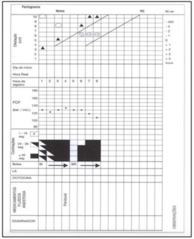
A O partograma demonstra período pélvico prolongado, pois a descida da apresentação é progressiva, mas excessivamente lenta.
B A evolução do trabalho de parto é normal, pois a paciente foi submetida à analgesia peridural.
C O partograma evidencia evolução anormal do trabalho de parto. A causa mais frequente desse tipo de distocia é a desproporção céfalopélvica.
D Houve uma parada secundária da dilatação e deverá ser aplicado um fórcipe de Simpson para ultimação do parto.
Questão 644 · Tratamento · Diagnóstico da síf ilis · 4000186532Gestante com Sí lis Primária, 17 semanas de gravidez, com resultado de laboratório, VDRL 1:16. Sabemos que a transmissão vertical é possível, qual a medida terapêutica de escolha para este caso?
A Penicilina G Cristalina 3.000.000 UI EV por 10 dias.
B Penicilina G Benzatina 2.400.000 UI IM uma vez por semana por 3 semanas.
C Penicilina G Benzatina 2.400.000 UI IM em dose única.
D Penicilina G Cristalina 4.000.000 UI EV em dose única.
Questão 645 · Modif icações locais · Modif icações sistêmicas · 4000186531As modificações hormonais no período gravídico – puerperal são determinadas por que fatores?
A Glândulas endócrinas fetais e placentárias.
B Glândulas endócrinas maternas, fetais e placentárias.
C Glândulas endócrinas maternas e placentárias.
D Glândulas endócrinas maternas e fetais.
Questão 646 · Préeclâmpsia com sinais de gravidade · 4000186530Grávida de 34 semanas, chega à Triagem da Santa Casa, referindo cefaleia frontal, epigastralgias, escotomas visuais, edema acentuado de membros inferiores, face e oliguria. AO Exame: PA 190 X 120 mmHg AU: 30 cm BCF: 152 bpm DU: ausente. Toque vaginal não realizado. Diante do quadro apresentado acima, qual a hipótese diagnóstica e qual a conduta de imediato?
A Eclampsia, administrar MgSO4 e Hidralazina via oral.
B Pré-eclâmpsia grave, controle ambulatorial.
C Iminência de Eclampsia, administrar MgSO4 e Hidralazina EV.
D Pré-eclâmpsia leve, Metildopa 2.000 mg dia.
Questão 647 · Ameaça de abortamento · 4000186529Paciente GII PI N AI, obesa, deu entrada na UPA do Guamá, referindo dor no baixo ventre, semelhante à cólica menstrual e sangramento vaginal aumentado, após 4 meses de amenorreia. Refere que engordou 30 kg na sua gravidez e não conseguiu emagrecer desde então, atualmente com IMC de 40. Ao exame: Abdome globoso, com massa palpável em região hipogástrica. Toque bimanual: Colo congesto, impérvio, útero aumentado de volume, no limite da sín se púbica, sangramento moderado vermelho vivo. O que fazer neste caso?
A Solicitar um BHCG para afastar a possibilidade de uma ameaça de abortamento.
B Realizar conduta ativa para SUA -O.
C Encaminhar para o centro obstétrico para fazer Curetagem uterina.
D Solicitar uma ultrassonografia abdominal.
Questão 648 · Distócia de ombro · 4000186524Paciente primigesta admitida em trabalho de parto, período expulsivo, foi submetida à Manobra de Gunn – Zavanelli-O’Leary para finalmente nascer o seu bebê. Em que consiste essa manobra?
A É o nome dado à manobra de 4 apoios na distocia de ombros.
B É o nome dado à flexão das coxas sobre o abdome.
C É o nome da manobra do desprendimento do braço posterior. É
D É a recolocação da cabeça fetal na pelve materna, dentro do útero após a exteriorização na vulva e realizar a cesárea.
Questão 649 · Criterios diagnósticos da préeclampsia · Préeclâmpsia com sinais de gravidade · 4000186486Gestante de 16 anos, primigesta, idade gestacional 39 semanas, sem patologias prévias, pré-natal sem intercorrências. É admitida na emergência apresentando convulsões tônico-clônicas generalizadas, pressão arterial 210x130 mmHg e edema generalizado. É imediatamente iniciadoinfusão de sulfato de magnésio e hidralazina endovenoso. Os exames laboratoriais realizados evidenciam 2+ de proteinúria em ta e 87.000 plaquetas/mm³. Assinale a alternativa correta sobre a patologia que acomete esta paciente:
A as lesões hepáticas podem ser do tipo hemorragias periportais ou necrose hemorrágica periportal. Embora graves e podendo evoluir para formação de hematoma subcapsular, normalmente não estão associadas a elevação das transaminases.
B as alterações circulatórias causadas pela doença não afetam o fluxo uteroplacentário, preservando assim o aporte de nutrientes e oxigênio para o feto.
C o fluxo plasmático renal e a filtração glomerular estão aumentados, resultando no aumento dos níveis séricos de ácido úrico, ureia e creatinina.
D a pressão arterial é o resultado do débito cardíaco e da resistência vascular periférica. Nesta paciente podemos afirmar que o aumento dos níveis pressóricos ocorre devido ao aumento da volemia.
E há lesão endotelial associada a aumento da permeabilidade capilar e, portanto, extravasamento do plasma para o meio extravascular gerando edema e hemoconcentração.
Questão 650 · Mola parcial ou incompleta · 4000186485Paciente, 42 anos, é atendida na maternidade devido achado de óbito fetal intraútero de 11 semanas de idade gestacional, identificado em ultrassonografia de rotina. A equipe de plantão decide por realizar uma aspiração manual intraútero (AMIU) e enviar o material para anatomia patológica. No retorno ambulatorial após 30 dias, o laudo do histopatológico dessa AMIU informa achado compatível com mola hidatiforme parcial. Sobre esse caso clínico, assinale a alternativa correta.
A o cariótipo desse feto apresenta trissomia do cromossomo 21, do cromossomo 18 ou do cromossomo 13.
B a paciente é considerada curada após a AMIU e pode ser liberada para uma nova gestação após esta consulta.
C deve ser solicitado nessa consulta uma dosagem de beta-HCG, seguido de dosagens mensais durante 12 meses, independente do resultado desse primeiro exame.
D o cariótipo desse feto é triploide.
E esta paciente deve ser encaminhada para quimioterapia após esta consulta.
Questão 651 · Diagnóstico · 4000186484“A associação de hiperglicemia e gravidez diferencia principalmente três grupos de pacientes: (i) aquelas com diabetes mellitus tipos 1 (DM1) e 2 (DM2), com diagnóstico confirmado antes da gestação, denominado de DM prévio; (ii) as mulheres com DM diagnosticado na gestação, mas com níveis glicêmicos que atingem os critérios da Organização Mundial de Saúde (OMS) estabelecidos para o diagnóstico do DM fora da gestação (DM diagnosticado na gestação); e (iii) aquelas com DM gestacional (DMG) com níveis glicêmicos que não atingem os critérios para o diagnóstico do DM fora da gestação” - Cuidados obstétricos em diabetes mellitus gestacional no Brasil [recurso eletrônico] / Ministério da Saúde, Organização Pan-Americana da Saúde, Federação Brasileira das Associações de Ginecologia e Obstetrícia, Sociedade Brasileira de Diabetes – Brasília : Ministério da Saúde, 2021. Considere uma paciente de 23 anos, primigesta, com 22 semanas de idade gestacional, sem patologias prévias à gestação que comparece para consulta de pré-natal na unidade básica de saúde. Ao observar seu cartão de pré- natal observamos uma glicemia de jejum realizada na 10ª semana de gestação com resultado de 87 mg/dL. Por tratar-se de paciente com sobrepeso, o médico que a acompanha solicitou um TOTG 75g que ela realizou na 20ª semana de gestação e apresenta agora para avaliação: jejum = 112 mg/dL; 1hora = 204 mg/dL; 2 horas = 145 mg/dL. A paciente está assintomática. Avaliando o acima exposto, podemos concluir sobre o diagnóstico dessa paciente:
A trata-se de paciente com diagnóstico de DM diagnosticado na gestação.
B trata-se de paciente com diagnóstico de DM prévio.
C trata-se de paciente com diagnóstico de DM gestacional (DMG).
D trata-se de paciente com avaliação normal quanto à glicemia.
E trata-se de paciente que deve realizar novamente o TOTG 75g entre 24 e 28 semanas de gestação.
Questão 652 · Predição e prevenção de prematuridade · Progesterona vaginal · 4000186481"O parto pré-termo é aquele que ocorre em até 36 semanas e 6 dias de idade gestacional, excluindo o período considerado como de abortamento. Sua ocorrência é grande em todo mundo; no Brasil, está em torno de 11%. As complicações da prematuridade são a maior causa de morte neonatal. São três as principais causas de partos pré-termo: o trabalho de parto prematuro, a rotura prematura pré-termo das membranas ovulares e a prematuridade terapêutica (quando alguma condição mórbida materna e/ou fetal ocasiona a antecipação do parto).” - Manual de gestação de alto risco [recurso eletrônico] / Ministério da Saúde, Secretaria de Atenção Primária à Saúde. Departamento de Ações Programáticas. – Brasília: Ministério da Saúde, 2022. Avalie as afirmativas abaixo: I. O uso de progesterona via vaginal é recomendado para mulheres que tiveram parto prematuro espontâneo anterior, independentemente da medida de colo uterino com o objetivo de prevenir o parto pré-termo. II. A administração de corticosteroides tem como resultado acelerar a maturação pulmonar fetal e reduzir hemorragia periventricular porém aumenta o risco de enterocolite necrosante. III. A nifedipina, que tem sido recomendada como primeira escolha na tocólise, cujo objetivo é evitar o parto no período de 48 horas, possivelmente, por até 7 dias. Esse ganho de tempo é considerado bené co para garantir tempo adequado para administração de corticosteroide e/ou transferência da gestante para uma instituição com maiores recursos antes que ocorra o parto prematuro. IV. A antibioticopro laxia para estreptococo do grupo B está indicada apenas nos casos de partos pré-termo associados a rotura prematura pré-termo das membranas ovulares, sendo dispensada nos casos com membranas integras. Sobre a prematuridade, é correto o que se afirma em:
A I apenas.
B I e III apenas.
C I, II e III apenas.
D III apenas.
E I, II, III e IV.
Revisar: possível letra faltando em enunciado
Questão 653 · Imunizaçao na gestação · 4000186480“Agência da ONU atualizou lista de imunizantes indicados para mulheres que esperam bebês e confirma e cácia e segurança das vacinas Coronavac, Bharat Biotech e Novavax. Brasil é citado no documento como exemplo positivo por ter vacinado mais de 1 milhão de grávidas sem que fosse identi cada nenhuma preocupação de segurança” - 15 Fevereiro 2022, Saúde <https://news.un.org/pt/story/2022/02/1779802>. A vacinação durante a gestação objetiva não somente a proteção da gestante, mas, também, a proteção do feto. Não há evidências de que, em gestantes, a administração de vacinas de vírus inativados, de bactérias mortas, toxoides e de vacinas constituídas por componentes de agentes acarrete qualquer risco para o feto. Assinale a alternativa correta quanto à vacinação durante o pré-natal:
A Por considerar os riscos da gestante não vacinada de contrair hepatite B e de haver transmissão vertical, recomenda-se que as gestantes não imunizadas recebam a vacina contra hepatite B.
B A vacina contra raiva humana é contraindicada durante a gestação e mesmo mulheres em situações de pós-exposição não podem recebê-la.
C A vacina para sarampo é composta por vírus inativados e, portanto, segura para o uso em gestantes.
D A vacina para rubéola deve ser administrada para as gestantes no primeiro trimestre para prevenir a síndrome da rubéola congênita.
E A vacina contra a influenza é recomendada apenas para gestantes com idade gestacional superior a 20 semanas.
Questão 654 · Imunizaçao na gestação · 4000186461A prevenção de doenças infecciosas no neonato pode ser obtida pela transferência de anticorpos maternos através da vacinação da gestante. Essa estratégia é preconizada pelo Programa Nacional de Imunizações (PNI) do Brasil nas seguintes doenças imunopreveníveis:
A Hepatite B, coqueluche e meningite C.
B Tétano neonatal, coqueluche e diarreia por rotavírus.
C Tétano neonatal, coqueluche e meningite B.
D Influenza, doença pneumocócica e hepatite B.
E Influenza, coqueluche e tétano neonatal.
Questão 655 · Insuf iciência istmocervical · Diagnóstico da insuf iciência istmocervical · 4000186432Gestante de 27 anos, g-2 p-1 (01 parto a fórceps), cursando a 24ª semana comparece à maternidade com queixa de perda de secreção gelatinosa e desconforto no baixo ventre. Ao exame, ausência de contrações em 10 minutos, colo pérvio para 4,0 centímetros, apresentação cefálica, utuante. Qual o diagnóstico provável?
A Amniorrexe prematura
B Abortamento evitável
C Insuficiência cervical
D Abortamento incompleto
Questão 656 · Acompanhamento neonatal · Prevenção · Diagnóstico · 4000186431Na incompatibilidade sanguínea materno-fetal, devemos administrar a imunoglobulina anti-D no pós parto em qual condição?
A Na puérpera Rh negativa, marido Rh positivo, recém nato Rh negativo, teste de Coombs indireto negativo
B Na puérpera Rh negativa, marido Rh positivo, recém nato Rh positivo, teste de Coombs indireto positivo.
C Na puérpera Rh negativa, marido Rh positivo, recém nato Rh positivo, teste de Coombs indireto negativo.
D Na puérpera Rh positiva, marido Rh negativo, recém nato Rh negativo.
Questão 657 · Cardiotocograf ia intraparto · Conduta · Parâmetros da cardiotocograf ia · 4000186429Paciente de 28 anos, primigesta, cursando a 34° semana de gestação, comparece à maternidade com queixa de dor no baixo ventre. Ao exame é constatado quatro contrações em 10 minutos de 45 segundos, colo apagado 80%, dilatado para 4 cm, apresentação cefálica, 1°plano de Hodge, bolsa íntegra, batimentos cardiofetais de 148 bpm. Realizado cardiotocogra a que apresentou características compatíveis com desacelerações tardias. Qual a conduta a ser adotada?
A Tocólise venosa e interrupção da gestação após administração de corticoide por 48 horas.
B Decúbito lateral esquerdo, oxigênio nasal e interrupção imediata da gestação.
C Decúbito lateral esquerdo, oxigênio nasal e aceleração do parto com ocitocina.
D Acelerar o parto com ocitocina e utilizar fórcipes de alívio.
Questão 658 · Diagnóstico · 4000186428Gestante na 30ª semana, g-4p-2 (02 cesarianas e 01 aborto) procura a maternidade com queixa de sangramento vermelho vivo moderado e indolor. O exame obstétrico revela altura uterina de 29 cm, tônus uterino normal com ausência de contrações em 10 minutos, bcf-142 bpm e ao exame especular presença de sangramento vermelho vivo fluindo através do colo uterino. Qual é a principal hipótese diagnóstica?
A Descolamento prematuro de placenta.
B Ruptura de vasa prévia.
C Sangramento do colo uterino.
D Placenta prévia.
Questão 659 · Hiperêmese gravídica · 4000186425Em relação á hiperêmese gravídica, assinale a afirmativa ERRADA;
A Na gestação, a hiperêmese gravídica é a quarta causa mais frequente de internação hospitalar.
B Na forma grave da hiperêmese gravídica, encontramos perda ponderal de 6 a 8%.
C A Síndrome de Wernicke é caracterizada por ataxia predominantemente da marcha, disfunção vestibular, confusão mental e anormalidades da motilidade ocular.
D O tratamento de primeira linha da êmese gravídica consiste na associação de piridoxina e doxilamina.
Questão 660 · Terminologia · 4000186409Renata, 36 anos, chega para sua primeira consulta de pré-natal após engravidar novamente. Durante a anamnese obstétrica, o médico responsável pelo atendimento descobre que ela tem 3 lhos vivos, além de ter tido uma perda gestacional de 1º trimestre, um aborto provocado com medicamentos na adolescência e um lho que sofreu morte intra-útero, com cerca de 35 semanas de gestação, sendo realizada indução de um parto vaginal. Dos seus lhos vivos, o primeiro nasceu de parto normal e os dois próximos foram gêmeos, que nasceram por parto cesárea. Em relação à nomenclatura "gesta, para e aborto", essa paciente é:
A G VI P III A II
B G VI P IV A II
C G VII P III A II
D G VI P IV A II
E G VI P II A III
Questão 661 · Polidrâmnio · Tratamento · Hiperêmese gravídica · 4000186391Sobre as doenças específicas da gestação, analise as seguintes afirmativas. I - Na hiperemese gravídica, o pico dos sintomas está relacionado ao nadir dos níveis séricos da gonadotrofina coriônica humana (HCG). II - O tratamento da gravidez tubária invariavelmente passa por cirurgia, seja em caráter de urgência, em caso de paciente instável hemodinamicamente, ou com preparo e programação, quando a paciente encontra-se estável. III - As definições de oligohidramnia e polihidramnia pela medicação da maior bolsa vertical (MBV) são, respectivamente, 2cm e 8cm. IV - Na ruptura prematura de 34 semanas de idade gestacional, está indicado o parto pela via obstétrica mais adequada. V - O tabagismo e o uso de substâncias como cocaína, heroína, álcool, alguns anticonvulsionantes e varfarina estão associados a crescimento intrauterino restrito. Estão corretas apenas as afirmativas:
A (I) (II) (III)
B (I) (II) (IV)
C (I) (III) (V)
D (III) (IV) (V)
E (II) (IV) (V)
Questão 662 · Imunizaçao na gestação · 4000186345Constituem vacinas permitidas durante a gestação, EXCETO:
A tríplice bacteriana acelular (tétano, difteria, pertussis).
B tríplice viral (sarampo, caxumba, rubéola).
C influenza.
D hepatite A.
E hepatite B.
Questão 663 · Def inição · 4000186333A doença trofoblástica gestacional (DTG) é um evento patológico relacionado com a fertilização aberrante, representando formas clínicas distintas, geralmente evolutivas, sistematizadas por Ewing (1910) em:
A mola hidatiforme (MH), mola invasora e carcinoma espinocelular.
B mola hidatiforme (MH), mola invasora e coriocarcinoma.
C mola invasora (MI), mola hidatiforme e adenocarcinoma.
D mola hidatiforme (MH), molinvasora e carcinossarcoma.
Questão 664 · Fatores de risco · Clínico · Def inição · 4000186332A gravidez ectópica se localiza mais frequentemente na tuba uterina. No entanto, a gestação ectópica pode ocorrer também na porção intersticial da tuba, no ovário, na cérvix e na cavidade abdominal. Neste contexto, sabe-se que:
A gravidez heterotópica é quando ocorre uma gestação ectópica tubária combinada com outra gravidez ectópica na outra tuba uterina.
B o metrotrexato deve ser reservado para o tratamento da gravidez ectópica rota.
C a salpingectomia total deve ser aplicada em todos os casos com diagnóstico de gravidez tubária.
D dentre os fatores de risco pode-se citar, gravidez ectópica prévia, cirurgia tubária prévia, doença inflamatória pélvica e endometriose.
Questão 665 · Fatores de risco · Classif icação · Def inição · 4000186331A placenta prévia e o acretismo placentário podem levar a hemorragia obstétrica e ainda consiste em causa importante de morte materna. Neste contexto, sabe-se que:
A A placenta prévia pode ser definida como a presença de tecido placentário na cavidade abdominal.
B A placenta prévia geralmente causa sangramento doloroso, hipertonia uterina e sofrimento fetal agudo.
C A placenta acreta invade o miométrio, a increta ultrapassa o miométrio atingindo a serosa, enquanto que a percreta adere ao miométrio sem atingir a serosa.
D A associação entre cesárea anterior e placenta acreta é conhecida, sendo a inserção baixa da placenta ocasionada pela incisão uterina e reparo inadequado das camadas uterinas.
Questão 666 · Tratamento · 4000186330O descolamento prematuro da placenta (DPP) é definido como a separação da placenta, normalmente implantada, do corpo do útero, antes da expulsão fetal, após a 20ª semana de gestação. Sobre a conduta obstétrica do DPP, quando o parto vaginal não for iminente, deve-se indicar:
A maturação pulmonar fetal com corticoides e aguardar 72 horas para indução do parto.
B interrupção por via alta 24 horas após a amniotomia.
C interrupção imediata por via alta.
D antibioticoterapia e aguardar 1 semana.
Questão 667 · Síndrome HELLP · 4000186329A Síndrome HELLP na pré-eclâmpsia ou eclâmpsia é uma condição grave na gravidez. De acordo com Luis Weinstein (1982), qual é o significado desta sigla?
A H- Hemolysis. EL- Lower Liver Enzimes. LP- Low Platelets.
B H- Hemolysis. EL- Lower Liver Enzimes. LP- High Platelets.
C H- Hemolysis. EL- Elevated Liver Enzimes. LP- High Platelets.
D H- Hemolysis. EL- Elevated Liver Enzimes. LP- Low Platelets.
Questão 668 · Variáveis · 4000186328O per l biofísico fetal, desenvolvido por Manning em 1980, é um teste de avaliação anteparto da vitalidade fetal, que observa, além da frequência cardíaca fetal (FCF) pela cardiotocogra a (CTG), outras 4 variáveis sonográficas durante 30 minutos que são:
A movimento respiratório materno, movimento fetal, diurese e volume do líquido amniótico.
B movimento respiratório fetal, movimento fetal, tônus e volume do líquido amniótico.
C movimento respiratório fetal, contração uterina e dilatação do colo, tônus e volume urinário.
D movimento respiratório fetal, Doppler da artéria uterina, tônus materno e volume do líquido amniótico.
Questão 669 · Avaliação da vitalidade f etal durante o prénatal · Variáveis · 4000186327A avaliação anteparto da viabilidade fetal está indicada especialmente nas gestantes que cursam com insu ciência placentária capaz de determinar sofrimento fetal crônico. Os principais testes de avaliação anteparto podem ser assim nomeados:
A contagem de movimentos fetais, leucograma, perfil biofísico fetal/volume do líquido amniótico e EAS e urocultura.
B contagem de movimentos fetais, cardiotocografia, perfil biofísico fetal/radiografia fetal e ressonância magnética.
C contagem de movimentos fetais, cardiotocografia, perfil biofísico fetal/volume do líquido amniótico e Doppler.
D contagem de movimentos fetais, hemograma, perfil biofísico fetal/tomografia e radiografia de tórax.
Questão 670 · Fisiologia do líquido amniótico · 4000186325O líquido amniótico (LA) é um componente importante do ambiente intrauterino para adequado desenvolvimento fetal. Sobre a quantidade do LA durante a gravidez sabe-se que:
A é estável e constante durante toda a gestação.
B diminui progressivamente de 8 semanas até 34 semanas.
C aumenta consideravelmente após 34 semanas de gravidez até o parto.
D aumenta progressivamente após 8 semanas até 34 semanas de gestação e existe um leve declínio, até o termo da gestação, após as 34 semanas.
Questão 671 · Colagenoses na gestação Lupus eritematoso Sistêmico LES · 4000186255Paciente jovem de 19 anos com LES, com plano de engravidar. Quais autoanticorpos podem interferir diretamente na gravidez?
A Anti SM, anti Beta 2 glicoproteína 1, anticoagulante lúpico.
B Anti Beta 2 glicoproteína 1, anti SSA/RO, anticoagulante lúpico.
C Anticoagulante lúpico, anti RNP, anti SSA/RO.
D Anti SM, anti RNP, anti SSA/RO.
Questão 672 · Préeclâmpsia com sinais de gravidade · 4000186224Paciente chega ao pronto atendimento com idade gestacional de 34 semanas com epigastralgia e cefaleia intensa. Ao exame físico, apresenta PA de 160 x 100 mmHg, edema de face e hiperre exia. Qual a hipótese diagnóstica e conduta para o caso, respectivamente?
A Pré-eclâmpsia grave e prescrição de sulfato de magnésio seguida da interrupção da gestação após 1 hora.
B Pré-eclâmpsia grave e prescrição de sulfato de magnésio seguida da interrupção da gestação em 24 h.
C Iminência de eclâmpsia e prescrição de sulfato de magnésio seguida da interrupção da gestação em 24 h.
D Iminência de eclâmpsia e prescrição de sulfato de magnésio seguida de interrupção da gestação após 1 hora.
Questão 673 · Criterios diagnósticos da préeclampsia · 4000186223Na pré-eclâmpsia, os seguintes parâmetros elevados são marcadores de comprometimento da função renal:
A proteinúria e ureia.
B ácido úrico e ureia.
C proteinúria e creatinina.
D ácido úrico e desidrogenase láctica.
Questão 674 · Epidemiologia e etiologia da RPM · 4000186222Paciente chega ao pronto atendimento com idade gestacional de 34 semanas com perda de líquido em grande quantidade. Ao exame especular, evidenciada amniorrexe prematura. Dentre as possíveis etiologias a causa mais frequente é
A vaginose bacteriana.
B infecção do trato urinário.
C infecção por Chlamydia trachomatis.
D incompetência istmocervical.
Questão 675 · Diagnóstico · 4000186221Em relação ao diagnóstico diabetes gestacional, considerando uma paciente com glicemia de jejum menor que 92 mg/dL no primeiro trimestre, quando se deve realizar a curva glicêmica e qual resultado é considerado normal, respectivamente?
A entre 28-32 semanas e TOTG jejum < 92 mg/dL, Ih <160 mg/dL, 2h <153 mg/dL.
B entre 28-32 semanas e TOTG jejum < 105 mg/dL, Ih <180 mg/dL, 2h <153 mg/dL.
C entre 24-28 semanas e TOTG jejum <92 mg/dL, 1h <195 mg/dL, 2h <153 mg/dL.
D entre 24-28 semanas e TOTG jejum < 92 mg/dL, 1h <180 mg/dL, 2h <153 mg/dL.
Questão 676 · Complicações maternas · 4000186220Paciente com diagnóstico de diabetes gestacional em uso de insulina chega ao pré-natal com 35 semanas, apresentando vários episódios de hipoglicemia. Nega mudança na dieta e refere o uso correto da insulina. A melhor hipótese para o caso é:
A insuficiência placentária e redução na produção de estrogênio e progesterona
B insuficiência placentária e redução na produção de prolactina.
C insuficiência placentária e redução na produção de TSH e T4 livre
D insuficiência placentária e redução na produção de glucagon.
Questão 677 · Primeiro periodo dilatação · O trabalho de parto e o parto · Avaliação inicial da parturiente · 4000186219Paciente com idade gestacional de 32 semanas chega ao pronto atendimento com duas contrações de 40 segundos e 10 minutos. Ao exame físico, apresenta colo dilatado para 3 cm, bolsa íntegra e BCF de 140 bpm. O feto apresenta diagnóstico de trissomia do cromossomo 18. A melhor conduta para o caso é:
A acompanhamento ambulatorial.
B internação e corticoterapia.
C internação e tocólise
D internação e conduta expectante
Questão 678 · Fase ativa prolongada · 4000186218Clinicamente, o estudo do parto analisa três fases principais. Marque a alternativa que apresenta a associação correta entre a fase do trabalho de parto e o fenômeno ou conduta descrito.
A Na chamada fase de expulsão, ocorre a formação do canal do parto, pelo apagamento do colo e dilatação da cérvice.
B Na assistência à fase de dilatação, a incoordenação uterina será caracterizada pela verificação na dinâmica uterina com contrações curtas e irregulares.
C A fase de secundamento tem seu início quando a dilatação está completa e se encerra com a saída do feto.
D Por ocasião da expulsão, a paciente deverá ser colocada na posição de Laborie-Duncan, que objetiva ampliar o estreito médio da bacia.
Questão 679 · Classif icação · Tratamento · 4000186217Paciente deu entrada no pronto atendimento de obstetrícia com gestação de 32 semanas e sangramento vaginal abundante, indolor, sem sinais de hipertonia e com BCF de 132 bpm. Realizado o exame de ultrassonogra a obstétrica na urgência, foi evidenciada placenta prévia. Com base no caso descrito e no esquema do Zugaib, marque a afirmativa correta.
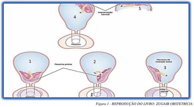
A Se a placenta prévia apresentar implantação do tipo 1 da figura acima, a avaliação para possível presença de acretismo placentário será facultativa, pois a conduta já está definida.
B Se a paciente apresentar implantação de placenta conforme o esquema 3 da figura acima, deverá ser indicada cesariana imediata.
C Caso a paciente apresente implantação da placenta conforme esquema 1 da figura, estará caracterizada placenta prévia centro total e contraindicada a realização de parto vaginal.
D Se a placenta prévia for de implantação do tipo 2 do esquema da figura acima, os episódios de sangramento na gestação e o parto ocorrerão somente na fase expulsiva do parto vaginal
Questão 680 · Aborto inf ectado · 4000186216Paciente MSN, 23 anos, solteira, gesta 1 para 0 aborto-0, deu entrada na emergência obstétrica com relato de atraso menstrual de 10 semanas, dores pélvicas e abdominais em cólicas. Hipertermia, sangramento vaginal discreto acompanhado de saída de material purulento pelo canal vaginal. Útero doloroso à palpação. No toque vaginal, o colo uterino é pérvio doloroso à mobilização. No exame especular, observada saída de material purulento pelo canal cervical. O diagnóstico e tratamento corretos são:
A Abortamento incompleto e possível infecção; o tratamento que se impõe é a histerectomia, pois trata-se de uma forma disseminada refratária ao tratamento clínico.
B Ameaça de aborto e infecção; o tratamento é clínico apenas, e consiste, principalmente, em tratar a hipovolemia e combate à infecção com antibióticos de amplo espectro.
C Aborto retido e infecção; o tratamento é expectante até a eliminação de restos ovulares e a necessidade de esvaziamento uterino por meio de curetagem uterina apenas quando ocorrer falha no tratamento proposto.
D Aborto infectado; o tratamento, na evidência de restos ovulares ao ultrassom, se impõe a necessidade de esvaziamento uterino por meio de curetagem ou aspiração manual intrauterina (AMIU) e antibioticoterapia.
Questão 681 · Diagnóstico da síf ilis · 4000186214Considerando o rastreamento de sífilis no pré-natal, analise as afirmativas. I. O rastreamento da doença é recomendado na primeira consulta de pré-natal, entre 28 e 32 semanas de gestação, e no período periparto com o FTA-Abs. II. Se o VDRL for positivo, a confirmação diagnóstica deve ser realizada com teste treponêmico, que detecta anticorpos específicos contra o treponema. III. O exame MHA-TP será útil no seguimento terapêutico por meio do acompanhamento dos níveis plasmáticos. É considerada resposta adequada ao tratamento a queda dos títulos em quatro vezes. IV. O VDRL toma-se positivo cinco a seis semanas após a infecção, razão pela qual, habitualmente, não se encontra positivo na fase de manifestação clínica do cancro. Testes na janela de positivação do VDRL podem apresentar positividade com os testes treponêmicos. Estão corretas as afirmativas
A II e III
B I e III
C II e IV
D I e IV
Questão 682 · Periodicidade das consultas · 4000186188Na atenção primária em Saúde, em Unidades básicas de saúde, são realizadas consultas de prénatal de baixo risco. Sobre esse tema, assinale a afirmativa correta.
A Durante o primeiro e o segundo trimestres, as consultas podem ser intercaladas entre o médico e a enfermeira.
B O valor de referência para glicemia de jejum na gestante é inferior a 99 mg/dL.
C O Ministério da Saúde considera adequado para um pré-natal de baixo risco um número mínimo de 04 consultas.
D A suplementação com ferro para a gestante deve iniciar um mês antes da concepção e encerrar apenas após o puerpério.
Questão 683 · Abortamento inevitável · Abortamento · Sangramento primeira metade · 4000186109Você atende uma primigesta com queixa de sangramento e dor tipo cólica em baixo ventre. A paciente tem 20 anos e está com idade gestacional de 9 semanas. Os exames de pré-natal estão normais. Ao exame físico você identi ca que a paciente não apresenta alterações hemodinâmicas, observa a presença de sangramento ativo de moderada quantidade no orifício cervical externo do colo uterino e no toque o colo encontra-se impérvio. Você solicita ultrassonogrta a, que apresenta saco gestacional, batimentos cardíacos fetais presentes e descolamento da placenta em 30% do diâmetro do saco gestacional. Qual o diagnóstico e conduta para o caso?
A Abortamento inevitável. Repouso e Progesterona.
B Ameaça de abortamento. Curetagem uterina.
C Abortamento inevitável. Conduta expectante.
D Ameaça de abortamento. Repouso e evitar relação sexual.
E Abortamento inevitável. Curetagem uterina.
Revisar: possível letra faltando em enunciado
Questão 684 · Deglutição f etal e absorção gastrointestinal · Urina f etal · Fisiologia do líquido amniótico · 4000186108O Líquido Amniótico desempenha papel fundamental no crescimento e desenvolvimento do feto, além de ser barreira contra infecções. A quantidade de Líquido Amniótico é o resultado de um balanço entre a sua produção e eliminação. Quanto à medida da quantidade de Líquido Amniótico de uma gestante, é CORRETO afirmar:
A Dentre as causas fetais do Polidramnio, destacam-se as anomalias nefrourológicas.
B Ìndice de Líquido Amniótico menor que 5cm em gestante de 32 semanas é indicação de interrupção da gestação.
C Dentre as causas de Oligodrâmnio, destaca-se o Diabetes Materno.
D O método para rastreio de alteração do volume de Líquido Amniótico é a medida do maior bolsão vertical que contenha as partes fetais.
E No polidramnio leve, o Índice de Líquido Amniótico esta entre 24 a 29cm.
Questão 685 · Inf ecção Urinária e Bacteriúria Assintomática na gestação ITU · 4000186106Você atende uma paciente gestante que retorna na consulta de pré-natal para mostrar os resultados dos exames de pré-natal. Ela está com 8 semanas de gestação e não apresenta queixas. A Urocultura mostra presença de Escherichia Coli na quantidade de 100 mil UFC. Qual a sua conduta?
A Nitrofurantoína 100mg via oral de 6 em 6 horas por 7 dias.
B Expectante, pois trata-se de bacteriúria assintomática.
C Fosfomicina Trometamol 3gr via oral em dose única.
D Sulfametoxazol e Trimetropima 800/160 mg via oral de 12 em 12 horas.
E Norfloxacina 400mg via oral de 12 em 12 horas por 7 dias.
Questão 686 · Fase ativa prolongada · Aspectos f etais · 4000186105Você está acompanhando uma paciente secundigesta, com 1 parto normal prévio, em trabalho de parto. Após 6 horas de evolução, você identi ca no partograma uma distócia por hipoatividade uterina. Nesta situação e considerando-se o partograma, qual é a conduta imediata mais indicada?
A Cesárea.
B Expectante.
C Analgesia.
D Ocitocina via oral.
E Ocitocina endovenosa.
Revisar: possível letra faltando em enunciado
Questão 687 · Tratamento na HPP · 4000186104A hemorragia pós parto é uma das principais causas de morbimortalidade materna no mundo. Segundo a OMS, ela é a principal causa primária de quase um quarto de todas as mortes maternas. Na assistência ao parto, é consenso que algumas medidas podem prevenir a hemorragia no pós parto. Você está realizando o parto de uma paciente que é gesta 5 com 4 partos vaginais. Qual medida preventiva de hemorragia pós- parto você adota?
A Manejo ativo no terceiro período e clampeamento precoce do cordão umbilical (antes de 1 minuto).
B Clampeamento do cordão umbilical com tempo menor que 1 minuto e ocitocina após a dequitação.
C Tração controlada do cordão umbilical e uso de ergotamina após a dequitação.
D Manejo ativo no terceiro período e uso de ocitocina após a dequitação.
E Massagem uterina intermitente.
Questão 688 · Avaliação do risco gestacional · Predição e prevenção · Anamnese · 4000186102Você começa a trabalhar em uma Unidade de Saúde e sua primeira paciente é uma primigesta com 30 anos, que vem à consulta de pré-natal. Trata-se de uma paciente com 14 semanas de gestação, exames de pré- natal normais e com história familiar de pré-eclâmpsia. No seu exame físico, você identi ca um IMC=30Kg/m² , PA= 110X70 mmHg, e Batimentos Cardíacos fetais presentes. Qual medida você adota para prevenção de Pré-eclâmpsia, considerando-se os dados da paciente?
A Repouso e dieta restritiva de sal.
B Ácido Acetil Salicílico e suplementação de cálcio.
C Ácido fólico 4mg ao dia.
D A paciente não possui indicação para prevenção de pré-eclâmpsia.
E Heparina em baixas doses.
Revisar: possível letra faltando em enunciado
Questão 689 · Diagnóstico · 4000186101Durante o pré-natal de uma paciente de 21 anos, primigesta, baixo risco, que não apresenta nenhuma alteração clínica e sem doenças prévias, o rastreamento de Diabetes Mellitus Gestacional deve ser feito de que maneira?
A Dosagem da Glicemia de jejum no primeiro trimestre e se o resultado for menor que 92mg/dl não há indicação para realizar Teste Oral de Tolerância à Glicose.
B Glicemia de jejum no primeiro trimestre e se o resultado estiver entre 92mg/dl e 125 mg/dl deve-se realizar Teste Oral de Tolerância à Glicose com 75g entre 20 e 28 semanas, com avaliação da glicemia no jejum, 1 hora e 2 horas.
C Glicemia de jejum no primeiro trimestre e se o resultado for menor que 92mg/dl deve-se realizar Teste Oral de Tolerância à Glicose com 75g entre 24 e 28 semanas, com avaliação da glicemia no jejum, 1 hora e 2 horas.
D Dosagem da Glicemia de jejum no primeiro trimestre e se estiver normal repetir no segundo trimestre e no terceiro trimestre.
E Glicemia de jejum no primeiro trimestre e se o resultado for menor que 125 mg/dl deve-se realizar Teste Oral de Tolerância à Glicose com 125g entre 20 e 24 semanas, com avaliação da glicemia no jejum, 1 hora e 2 horas.
Questão 690 · Primeiro periodo dilatação · Fase ativa · Def inição · 4000186100Primigesta, 34 anos, 39 semanas de gestação, esta na sala de PPP (pre parto, parto e puerpério). No seu plano de parto, a única consideração da paciente é que ela não quer a utilização de ocitocina. A paciente encontra-se em fase ativa de trabalho de parto, com contrações efetivas e 6 cm de dilatação. Você decide instalar uma Cardiotocogra a intra parto e no traçado você observa uma Frequência Cardíaca Fetal de 130bpm, com variabilidade moderada. Frente a esse resultado de Cardiotocogra a, qual a sua conduta imediata?
A Expectante.
B Indica Cesárea.
C Indica Analgesia.
D Indica medidas de reanimação intrauterina.
E Indica repetir a Cardiotocografia em 15 minutos.
Questão 691 · COVID 19 · Assistência prénatal · Anamnese · 4000186099Primigesta de 21 anos, 37 semanas, pré-natal de baixo risco e normal, é atendida no Serviço de emergência com queixa de febre, mialgia, tosse e coriza. Ela está fora de trabalho de parto, os batimentos cardíacos fetais estão normais e o colo impérvio. A PA= 110X80mmHg, SatO₂= 96%, FR=17rpm, FC=90bpm e T=37,8ºC. Você solicita RT-qPCR para Sars-Cov-2 que resulta positivo. Qual sua conduta?
A Internação para Cesárea de urgência.
B Internação, medidas de suporte, oxigenioterapia e observar evolução.
C Internação, medidas de suporte, oxigenioterapia e preparo para interrupção da gestação.
D Isolamento, medidas de suporte, oxigenioterapia em domicilio, corticoterapia.
E Isolamento, medidas de suporte, orientações sobre sinais de gravidade, monitorização da evolução dos sintomas pela equipe de saúde.
Questão 692 · Cardiopatias na gestação · 4000185960Paciente com 35 anos, primigesta, gemelar dicoriônico, 29 semanas, diagnóstico de diabetes gestacional na avaliação de primeiro trimestre controlado com dieta, procura pronto atendimento com queixa de cólicas frequentes. Após avaliação foi diagnosticado trabalho de parto prematuro inibível. Fetos com vitalidade normal, optou-se pela inibição de trabalho de parto. Como medida inicial foi administrado levomepromazina e hidratação endovenosa, sem sucesso, seguindo-se inibição com terbutalina endovenosa. Realizada administração de corticoterapia para maturação pulmonar e sulfato de magnésio para neuroproteção. Urocultura negativa. Durante o terceiro dia de internação paciente apresenta queixa importante de dispneia ao repouso necessitando de suporte respiratório. Teste de antígeno para COVID-19 negativo. A ausculta pulmonar apresentava murmúrios vesiculares presentes com estertores crepitantes bilateralmente poupando somente os ápices pulmonares. A ausculta cardíaca apresentava bulhas rítmicas normofonéticas, com sopro sistólico ejetivo principalmente em bordo esternal esquerdo. Quais são a etiologia mais provável, a investigação e o tratamento propostos para o caso?
A Tromboembolismo pulmonar, angiotomografia, ateplase.
B Estenose mitral, ecocardiograma, furosemida e beta bloqueador.
C Miocardite periparto, ecocardiograma, corticoterapia.
D Síndrome angústia respiratória por COVID, tomografia de tórax, corticoterapia.
E Edema agudo de pulmão, raio X de tórax, furosemida.
Questão 693 · Artéria cerebral média ACM · Vasos estudados · Dopplervelocimetria Doppler · 4000185959Primigesta, 42 anos, idade gestacional de 36 semanas e 1 dia, sem comorbidades prévias, assintomática, exame clínico sem alterações. Realizou ultrassonogra a obstétrica com doppler uxometria por queda no crescimento da altura uterina nas últimas semanas. Feto único, vivo, apresentação cefálica, sem mal formações visíveis, peso estimado fetal de 2.100g, percentil 3, índice de líquido amniótico = 2,7cm; movimento respiratório presente, doppler demonstrado abaixo: Valores referência para idade gestacional: Umbilical PI: 0,69 a 1,09 – Umbilical A/B: 1,40 a 3,75 ACM PI: 1,42 a 2,04 ; Quando devemos considerar a realização do parto?
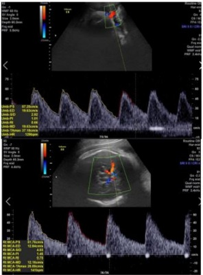
A Durante o termo tardio visto a ausência de comorbidades da paciente.
B Com 37 semanas visto o diagnóstico ultrassonográfico.
C Resolução imediata frente ao risco de insuficiência placentária crônica.
D Resolução após corticoterapia para maturação pulmonar.
E Resolução com 40 semanas a fim de se evitar pós-datismo.
Questão 694 · Métodos de alivio da dor no parto · 4000185957Paciente interna em trabalho de parto em fase ativa. Apresenta muita dor durante a contração e pergunta se pode receber analgesia pois não está aguentando. Qual é a a rmativa correta relacionada a analgesia de parto?
A A analgesia pode ser realizada durante a fase ativa do trabalho de parto após solicitação da paciente e, no mínimo, após 5 cm de dilatação.
B A analgesia pode ser realizada durante a fase ativa do trabalho de parto mas deve-se advertir a paciente que realizá-la precocemente pode aumentar a frequência de cesáreas.
C A analgesia pode ser realizada durante a fase ativa do trabalho de parto após solicitação da paciente e falha de métodos não farmacológicos de alívio da dor.
D A analgesia não deve ser realizada durante a fase ativa do trabalho de parto sendo seu uso exclusivo para o momento da fase expulsiva.
E A analgesia pode ser realizada desde que seja realizada exclusivamente no espaço peridural com o uso de anestésico local não sendo associados opiáceos.
Questão 695 · Tratamento da insuf iciência istmocervical · Insuf iciência istmocervical · 4000185956Diagnóstico da insuf iciência istmocervical Paciente com histórico de algumas perdas fetais praticamente indolores com evolução rápida para trabalho de parto avançado, inicialmente na transição do segundo para o terceiro trimestre mas, recentemente, tem apresentado perdas mais precoces, logo no início do segundo trimestre de gestação. Nesses episódios os fetos encontravam-se vivos durante o processo e com peso compatível com a idade gestacional. Paciente encontra-se atualmente com 6 semanas de gestação. Qual é a conduta mais adequada para esta paciente?
A Pesquisa de trombofilias adquiridas visto o agravamento sequencial dos casos.
B Cerclagem de emergência com 10 semanas de gravidez para correção cervical.
C Pesquisa de tamanho de colo uterino com 20 semanas e progesterona vaginal.
D Pesquisa sequencial de tamanho de colo uterino à ultrassonografia abdominal.
E Cerclagem profilática com 12 semanas após avaliação morfológica de 1° trimestre.
Questão 696 · Rotura de vasa prévia · Diagnóstico dif erencial sangramento da segunda metade da gestação · 4000185954Durante a assistência ao trabalho de parto de parturiente de termo, com antecedente de hipertensão arterial crônica e uma cesárea prévia, foi constatado sangramento genital importante sem repercussões cardiovasculares maternas. No momento do sangramento a paciente reclamava somente da dor durante as contrações uterinas do trabalho de parto. Após a avaliação de vitalidade fetal, abaixo demonstrada, foi indicado o parto cesarea. Após o nascimento foi observada a placenta. Qual é a a rmativa correta considerando as informações apresentadas?
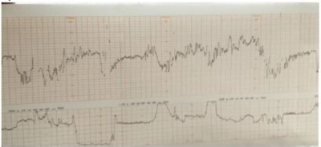
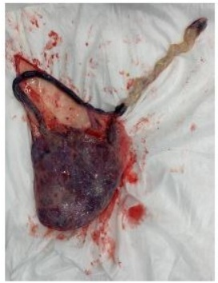
A Sangramento de origem materna, provocado por provável lesão de canal de parto devido a período expulsivo prolongado e sofrimento fetal.
B Sangramento de origem materno-fetal, causado por descolamento prematuro de placenta com necessidade de cesárea por sofrimento fetal agudo.
C Sangramento de origem fetal, causado por inserção velamentosa de cordão, ocasionando sofrimento fetal.
D Sangramento de origem materna, causado por descolamento prematuro de placenta com necessidade de cesárea por sofrimento fetal agudo.
E Sangramento de origem materno fetal, devido a provável rotura uterina em local de cicatriz previa de cesárea.
Questão 697 · Conduta inicial na RPM · Antibioticoprof ilaxia para EGB na RPM · 4000185867Conduta na RPM entre 24 a 33 67 semanas Primigesta com 30 semanas e 2 dias chega ao pronto-socorro com queixa de perda de líquido pela vagina em grande quantidade há 30 minutos. O exame clínico confirma o diagnóstico de rotura prematura das membranas ovulares no pré-termo. Não há sinal de infecção, e o feto encontra-se com boa vitalidade fetal. Em relação à pro laxia da sepse neonatal pelo Streptococcus agalactiae, de acordo com o Colégio Americano de Obstetras e Ginecologistas, assinale a alternativa que apresenta a conduta correta.
A Colher a cultura de secreção vaginal e anal, iniciar antibiótico e suspender 48 horas após, se gestante não evoluir para trabalho de parto.
B Iniciar antibiótico. Se gestante não evoluir para trabalho de parto, suspender 48 horas após e colher cultura de secreção vaginal e anal.
C Por se tratar de feto pré-termo, iniciar antibiótico e manter por sete dias ou até o período expulsivo, se o parto ocorrer antes de sete dias.
D Introduzir antibiótico somente quando iniciarem as contrações de trabalho de parto.
E Introduzir antibiótico somente se apresentar sinal clínico ou laboratorial de infecção.
Questão 698 · Inf ecção Urinária e Bacteriúria Assintomática na gestação ITU · 4000185866Em relação à infecção urinária na gestação, está correto afirmar que
A bacteriúria assintomática em gestantes não precisa ser tratada.
B bacteriúria assintomática em gestantes pode evoluir para pielonefrite.
C a presença de mais de 100 000 UFC de Streptococcus agalactiae em urocultura durante a gestação não requer tratamento.
D na gestação, Urina 1 com mais de 100 000 leucócitos indica tratamento, independentemente da urocultura.
E a pielonefrite na gestação é mais comum à esquerda.
Questão 699 · Tratamento f armacológico · 4000185864Primigesta, com 40 anos, preta, casada, com gestação de 33 semanas e 2 dias, procura o pronto-socorro com queixa de escotomas há 40 minutos. Nega episódio anterior. Refere aumento de peso de 5 kg em uma semana, com edema de membros inferiores, mãos e face. Nega cefaleia, epigastralgia e perdas vaginais. Nega comorbidades prévias. Ao exame clínico, PA 150 x 100 mmHg, AU 27 cm, Bcf 144, DU ausente, edema de mmii 3+/4+. Em relação ao uso de sulfato de magnésio para essa paciente, é correto afirmar que
A não há indicação para seu uso porque, para ser iminência de eclâmpsia, precisa ter também cefaleia e epigastralgia.
B não está indicado antes do resultado da proteinúria de 24 horas.
C não está indicado antes do hipotensor de ação rápida.
D não prescinde dos exames laboratoriais para seu início.
E não deverá ser realizado antes da avaliação da vitalidade fetal.
Questão 700 · Líquido Amniótico · Repercussões do diabetes na gestação · Complicações f etais · 4000185863O diabetes gestacional está relacionado a maior risco de
A macrossomia.
B oligoâmnio.
C cardiopatia fetal.
D hiperglicemia neonatal.
E gestação prolongada.
Questão 701 · Ética médica no contexto da gestação · O trabalho de parto e o parto · Assistência ao parto normal · 4000185862Em relação à humanização da assistência ao parto, qual das práticas a seguir está fora do contexto?
A Manter deambulação da gestante.
B Realização de cesárea.
C Toque vaginal de hora em hora.
D Uso de métodos não farmacológicos para alívio da dor.
E Uso seletivo da ocitocina.
Questão 702 · Predição e prevenção de prematuridade · Fatores de risco para prematuridade · 4000185861Triagem inf ecciosa A prematuridade acomete mais de 10% de todas as gestações no mundo todo e se associa aos piores desfechos neonatais, elevando sobremaneira o custo assistencial dos recém-nascidos. Em relação à prematuridade, está correto afirmar que
A o tratamento da candidíase vaginal reduz sua incidência.
B os extremos da idade apresentam menor incidência.
C a progesterona natural micronizada deve ser usada preferencialmente por via oral, em mulheres com antecedente de prematuridade.
D o índice de Bishop está indicado para se rastrear mulheres com maior risco de prematuridade.
E em mulheres com antecedente de prematuridade, a medida do colo uterino por via vaginal deve ser antecipada para 16 semanas.
Questão 703 · Cesárea a pedido · Complicações · Indicações de cesárea · 4000185858Na atualidade, existe grande preocupação com o aumento na realização de cesáreas a pedido materno, que não apresentam indicação médica ou obstétrica para sua realização. Diante da preocupação com a realização de cesáreas de repetição, encontra-se:
A maior risco de descolamento prematuro de placenta normalmente inserida.
B maior risco de abortamento.
C maior risco de cesárea seguida de histerectomia puerperal.
D maior risco de rotura prematura de membranas ovulares.
E maior risco de miomatose uterina.
Questão 704 · Abortamento inevitável · 4000185857Paciente chega ao pronto-socorro com quadro de dor em baixo ventre tipo cólica, acompanhada de sangramento genital há duas horas. Refere Beta HCG positivo há duas semanas. Paciente em bom estado geral, corada e afebril. P 92 ppm e PA 100 x 60 mmHg. Exame especular com sangramento moderado vermelho vivo e presença de membranas em orifício externo do colo uterino. Toque revela útero aumentado para 8 semanas de gestação com colo uterino amolecido e pérvio para uma polpa, tocando-se material amorfo nessa região. Esse quadro provavelmente se refere a
A abortamento retido.
B abortamento evitável.
C insuficiência istmocervical.
D abortamento completo.
E abortamento em curso.
Questão 705 · Diagnóstico · 4000185856Em relação ao diagnóstico de diabetes na gravidez, é correto afirmar que
A se glicemia de jejum da primeira consulta for maior que 92 e menor que 126, um teste de tolerância à glicose deverá ser realizado entre 24 e 28 semanas de gestação.
B se a glicemia de jejum da primeira consulta for maior que 125, faz-se o diagnóstico de diabetes pré- gestacional.
C um teste de tolerância à glicose deve ser oferecido a todas as gestantes obesas na primeira consulta de pré-natal.
D gestantes com cirurgia bariátrica prévia devem fazer o teste de tolerância à glicose com sobrecarga de 50 g de dextrosol.
E gestantes que apresentam glicosúria devem ser submetidas a um teste de tolerância à glicose, independentemente da idade gestacional.
Questão 706 · Quadro clínico · Diagnóstico · beta HCG · 4000185848Paciente de 27 anos, parda, solteira, chega ao pronto-socorro com queixa de dor em região pélvica há 7 dias, com piora há 1 dia, acompanhada de febre não medida e corrimento amarelado com odor fétido. Apresenta atraso menstrual de 10 dias com sangramento irregular após. Refere que, há 2 meses, vem apresentando dispareunia de profundidade. Tem ciclos menstruais regulares e usa como método contraceptivo abstinência periódica. Refere disúria inicial e nega queixas intestinais. Ao exame físico se apresenta em bom estado geral, corada, afebril, eupneica. P 92 ppm e PA 100 X 75 mmHg. Exame especular com conteúdo amarelado espesso e colo com ectrópio friável. Toque vaginal revela dor à mobilização do útero e região anexial dolorosa à direita. Urina 1 normal e leucograma com 12500 leucócitos sem desvio à esquerda. Ultrassonogra a sem coleções, mostra massa heterogênea de 1,5 cm em região anexial à D, útero sem anormalidades. Nega episódio semelhante anterior. A conduta adequada, nesse momento, é pensar em
A MIPA e tratar com doxiciclina e metronidazol.
B ITU e tratar com ciprofloxacino.
C rotura de cisto ovariano e adotar conduta expectante.
D endometriose e recomendar contraceptivo hormonal oral.
E prenhez ectópica e realizar dosagem de beta Hcg.
Questão 707 · Hepatite B e C · Prevenção · Vacina contra hepatite B · 4000185820Paciente grávida de 23 anos (G0P0) com transtorno por uso de substância ativa (heroína) se apresenta para sua primeira consulta pré-natal com 18 semanas de gestação. O exame físico inicial é normal, o bebê tem batimentos cardíacos fetais normais e a mãe está bem, apesar de sintomas leves de abstinência. Ela tomou a primeira dose da vacina contra hepatite B há 13 meses. Em relação à testagem e vacinação para hepatite B, a ação mais adequada é
A aconselhar a paciente quanto à necessidade de completar essa série de vacinas e recomendar que ela as receba somente após o parto.
B administrar a segunda dose da vacina contra hepatite B agora e não há necessidade de realizar teste sorológico.
C administrar a segunda dose da vacina contra hepatite imediatamente após a obtenção do teste sorológico para hepatite.
D reiniciar o esquema vacinal e aplicar novamente a primeira dose da vacina contra hepatite B agora, sem teste sorológico, pois o cronograma foi interrompido.
E solicitar carga viral sérica para o vírus da hepatite B e administrar a vacina somente se o resultado for negativo.
Questão 708 · Programação da gestação · 4000185819Mulher saudável de 26 anos de idade é atendida em consulta de rotina. Ela não tem lho e menciona que ela e seu marido estão pensando em começar uma família em breve. Constitui uma intervenção recomendada antes da gravidez, que demonstrou ter um claro resultado benéfico para a mulher e seu filho em potencial:
A tipagem sanguínea e testes de anticorpos.
B triagem para papilomavírus humano.
C triagem para clamídia.
D triagem para transtorno mental.
E uso de 0,4 a 0,8 mg de ácido fólico diariamente.
Questão 709 · Diagnóstico na gestação · Rastreamento na gestação · 4000185782Quando a infecção por toxoplasmose é adquirida pela primeira vez durante a gravidez, os parasitas podem ser transmitidos da mãe para o feto, resultando em toxoplasmose congênita. Uma gestante de 14 semanas comparece à consulta trazendo resultados da primeira rotina laboratorial. Possui sorologia para toxoplasmose IgG não reagente e IgM não reagente. Qual a conduta mais correta a ser seguida?
A Considerar a paciente imune e tranquilizá-la com relação à doença.
B Solicitar teste de avidez para determinar quando houve a infecção e avaliar se há necessidade de tratamento.
C Iniciar o tratamento com Espiramicina imediatamente.
D Considerar a paciente não imunizada e repetir a sorologia no segundo e no terceiro trimestres, além de orientar sobre a alimentação e os riscos da infecção.
Questão 710 · Classif icação · 4000185781A pré-eclâmpsia aumenta os riscos de morte materna e perinatal, sendo responsável pelo aumento na incidência da prematuridade. Com relação a pré-eclâmpsia, assinale a alternativa incorreta.
A A pré-eclâmpsia é uma doença progressiva, multissistêmica, caracterizada pelo início de hipertensão e proteinúria ou início de hipertensão e disfunção significativa de órgãos-alvo, com ou sem proteinúria, na última metade da gravidez ou pós-parto.
B A hipertensão gestacional verdadeira deve se resolver até o parto. Se persistir pós-parto, o diagnóstico é ""revisado"" para hipertensão crônica que foi mascarada pela diminuição fisiológica da pressão arterial que ocorre no início da gravidez.
C A pré-eclâmpsia é causada por disfunção vascular placentária e materna e se resolve após o nascimento em um período de tempo variável.
D A síndrome HELLP (hemólise, elevação das enzimas hepáticas, plaquetas baixas), provavelmente representa um tipo de pré-eclâmpsia com características graves.
Questão 711 · Intercorrências obstétricas obstetrícia patológica · Introdução · 4000185779De acordo com o caderno de atenção básica do Ministério da Saúde do Brasil, dentre as situações abaixo, qual a alternativa que não indica encaminhamento imediato da gestante para o serviço de urgência obstétrica?
A Pressão arterial 150/100 mmHg.
B Anemia sintomática (dispneia, taquicardia, hipotensão).
C Doença falciforme com crise álgica.
D Sangramento vaginal ativo com dor abdominal, colo uterino aberto e saída de material sugestivo de restos ovulares ao exame especular.
Questão 712 · Monitorização pós tratamento · Diagnóstico da síf ilis · 4000185777Assinale a alternativa incorreta sobre sífilis na gestação:
A A penicilina benzatina é a única opção segura e eficaz para o tratamento de sífilis na gestante.
B O VDRL é o método de escolha para triagem diagnóstica.
C O tratamento deve ser iniciado com apenas um teste reagente, treponêmico ou não, sem aguardar o resultado do segundo teste.
D O Fta-Abs é um teste treponêmico utilizado para monitoramento da resposta ao tratamento.
Questão 713 · Diagnóstico · Teste oral de tolerância à glicose 75g TOTG 75g · 4000185775A realização do teste oral de tolerância à glicose com 75 g de glicose é considerada um teste de triagem de diabetes gestacional em mulheres no pré-natal. Assinale a alternativa que apresenta o tempo ideal preconizado para a realização desse teste.
A Entre 24 e 28 semanas de gestação.
B Entre 18 e 22 semanas de gestação.
C Logo no início da gestação.
D Seis meses após o parto.
Questão 714 · Ultrassonograf ia no primeiro trimestre · Obstetrícia · Diagnóstico e datação da gestação · 4000185677Sobre o diagnóstico de gravidez e gestação inicial, analise as assertivas abaixo considerando V para verdadeiro e F para falso e assinale a alternativa que apresenta a sequência correta. ( ) A detecção da hCG no sangue ou na urina maternos é a base dos testes endócrinos para o diagnóstico de gravidez. ( ) A medida ultrassonográ ca do comprimento cabeça-nádega (CCN) constitui o índice biométrico mais preciso para estimar a idade gestacional. ( ) Através do sonar, os batimentos cardíacos do concepto são audíveis a partir da 7ª semana de gestação na consulta de rotina de prénatal.
A VVF
B FVF
C FFF
D VVV
E VFV
Revisar: possível letra faltando em enunciado
Questão 715 · Obstetrícia · Sangramento primeira metade · 4000185676Na anamnese, gestante com idade gestacional estimada em 8 semanas refere sangramento genital vermelho vivo com cólicas que cessou após eliminação de "bola de carne" pela vagina. Ao exame: colo impérvio ao toque, com discreto sangramento em "borra de café" em dedo de luva. Nesse caso, a principal hipótese diagnóstica é:
A Abortamento retido.
B Abortamento completo.
C Ameaça de abortamento.
D Abortamento inevitável.
E Abortamento incompleto.
Questão 716 · Trabalho de parto prematuro TPP · Obstetrícia · 4000185674Assinale a alternativa que não representa um fator de risco para parto prematuro.
A Candidíase vaginal
B Gestação múltipla
C Infecção intra-amniótica
D Colo uterino curto
E Polidrâmnio
Questão 717 · Obstetrícia · Assistência ao parto normal · 4000185673Em relação à assistência ao parto normal, é correto afirmar que:
A O parto vaginal espontâneo em apresentação fletida impõe maior risco na maioria das comorbidades maternas em comparação com a cesárea.
B O término do primeiro estágio do trabalho de parto é anunciado pelo início da distensão do períneo e visualização do couro cabeludo do feto no canal vaginal.
C A episiotomia de rotina é recomendada para prevenção de trauma perineal grave.
D A apresentação occipito-sacra (OP) persistente permite um segundo estágio do trabalho de parto mais rápido.
E O terceiro estágio inicia-se logo após o nascimento do feto e termina com a expulsão da placenta.
Questão 718 · Distúrbios hipertensivos na gestação DHEG · Obstetrícia · 4000185671Gestante no curso da nona semana de gestação, com hipertensão crônica leve, chega na primeira consulta de pré-natal utilizando 50 mg de captopril ao dia. A pressão arterial foi aferida duas vezes estando 100 x 50 mmHg. Diante do exposto, qual a conduta ideal?
A Aumentar a dose de captopril para 100 mg/dia.
B Diminuir a dose de captopril para 25 mg/dia.
C Substituir o captopril pelo uso de 2 g de alfa-metildopa/dia.
D Substituir o captopril pelo uso de 750mg de alfa-metildopa/dia.
E Suspender o captopril e observar os níveis pressóricos.
Questão 719 · Obstetrícia · 4000185566Paciente do sexo feminino, 34 anos de idade, primigesta, sem comorbidades, IG: 28 semanas, durante a consulta de pré-natal relata episódios de lipotimia e sensação de palpitação. Com relação ao quadro clínico descrito acima, quanto às adaptações do sistema cardiovascular materno à gravidez normal, assinale a alternativa CORRETA.
A Na gestação há aumento da resistência vascular periférica e da pressão arterial média justificando as queixas.
B Na gestação há diminuição da pressão arterial média e aumento da frequência cardíaca justificando as queixas.
C Na gestação há diminuição do débito cardíaco e da resistência vascular periférica justificando as queixas.
D Na gestação há diminuição da frequência cardíaca e da resistência vascular periférica
Questão 720 · Obstetrícia · 4000185565Paciente do sexo feminino, 40 anos de idade, G 4 P 3 (3pn), IG: 18 semanas, sem comorbidades e sem comprovante de vacinação, com histórico de Sí lis na gestação anterior. Compareceu à Unidade Básica de Saúde para início de pré-natal. Realizou sorologias preconizadas pelo ministério da saúde, apresentando os seguintes resultados: anti-HIV não reagente; HBsAg não reagente; anti-HBS reagente; anti HCV não reagente; VDRL título ¼ e toxoplasmose IgM e IgG positivos. Com relação ao quadro clínico descrito acima, frente aos resultados, assinale a alternativa que apresenta qual a conduta médica mais adequada.
A Indicar vacinação para Hepatite B; solicitar teste FTA-ABS, para avaliar a necessidade de tratamento para Sífilis; e teste de avidez de IgG para toxoplasmose.
B Indicar vacinação; convocar parceiro e iniciar tratamento com penicilina benzatina para Sífilis; e solicitar teste de avidez de IgG para toxoplasmose.
C Considerar status vacinal como adequado; convocar parceiro, iniciar tratamento com penicilina benzatina para Sífilis e espiramicina para toxoplasmose; e realizar notificação.
D Considerar status vacinal como adequado; solicitar FTA-ABS; iniciar espiramicina imediatamente, solicitar amniocentese com realização de PCR para toxoplasmose em líquido amniótico. Realizar a notificação imediatamente.
Questão 721 · Obstetrícia · 4000185564O parto vaginal operatório torna-se necessário em algumas situações e suas indicações podem se distribuir em causas maternas, fetais e pro láticas. Assinale a alternativa que apresenta quando há contraindicação a aplicabilidade do fórceps ou vácuo extrator.
A Sofrimento fetal.
B Exaustão materna.
C Condições maternas que necessitam da abreviação do período expulsivo.
D Desproporção cefalopélvica.
Questão 722 · Obstetrícia · 4000185563O grande fator de risco para parto pré-termo é a história de prematuridade na gravidez anterior. Assinale a alternativa que apresenta quais os três grandes marcadores de parto prétermo, que existem atualmente.
A Vaginose bacteriana, vaginose fúngica e fibronectina fetal.
B Medida do comprimento do colo, fibronectina fetal e infecção pelo vírus do herpes.
C Vaginose fúngica, medida do comprimento do colo e fibronectina fetal.
D Vaginose bacteriana, medida do comprimento do colo e fibronectina fetal.
Questão 723 · Obstetrícia · 4000185562Paciente do sexo feminino, 28 anos de idade, G ll P l (1PN), IG: 38 semanas, sem comorbidades, sem intercorrências ao longo da gestação, chega para consulta de pré-natal queixando-se de dispneia aos médios esforços. Quanto às principais modificações respiratórias na gestação, assinale a alternativa CORRETA.
A Há aumento da frequência respiratória e da capacidade residual funcional.
B Há diminuição do volume-corrente e do volume-minuto.
C Há diminuição da capacidade residual funcional e hiperventilação fisiológica.
D Há diminuição do volume-corrente e aumento da capacidade residual.
Questão 724 · Obstetrícia · 4000185561Paciente do sexo feminino, 17 anos de idade, primigesta, IG: 39 semanas + 3 dias, sem comorbidades prévias, deu entrada na emergência da maternidade, referindo cefaleia persistente, associada a epigastralgia e escotomas. Ao exame: tônus uterino normal, BCF=138 bpm, PA=150/110 mmhg, índice de Bishop 5, cardiotocogra a categoria 1 e ultrassom obstétrico com Doppler dentro da normalidade. Com relação ao quadro clínico descrito acima, assinale a alternativa que apresenta qual a conduta a ser adotada.
A Trata-se de alterações esperadas na gestação. A paciente deve ser medicada com hidralazina e liberada para manter acompanhamento pré-natal, sem necessidade de antecipação do parto.
B Trata-se de uma pré-eclâmpsia leve. Deve-se iniciar metildopa na dose de 1 g/dia. Orientar a paciente a seguir acompanhamento pré-natal, sem necessidade de antecipação do parto.
C Trata-se de uma pré-eclâmpsia grave. A paciente deve ser hospitalizada, encaminhada para cesárea de urgência, sem necessidade de medidas prévias.
D Trata-se de uma pré-eclâmpsia grave. A paciente deve ser hospitalizada, iniciado sulfato de magnésio e hidralazina. Mediante estabilização do quadro, iniciar indução de parto com misoprostol.
Questão 725 · Obstetrícia · 4000185560Paciente do sexo feminino, primigesta, gestação a termo, de risco habitual, encontra-se em trabalho de parto espontâneo, sem uso de ocitocina. Ao exame: tu normal, ms 4/10/45, bcf: 144 bpm, toque: colo central, 100% apagado, 9 cm dilatado, bolsa rota, apresentação cefálica, no plano 0. A residente que acompanhava o trabalho de parto observou alteração do batimento cardiofetal, optando por realizar uma cardiotocogra a intraparto. Observe o traçado abaixo. Com relação ao quadro clínico descrito acima, diante do resultado da cardiotocografia apresentada, assinale a alternativa que apresenta qual a conduta obstétrica mais adequada.
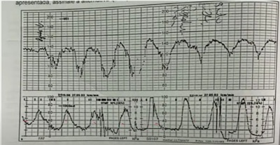
A Parto vaginal operatório com abreviação do período expulsivo.
B Seguir acompanhamento do trabalho de parto, sem necessidade de intervenção.
C Interromper o acompanhamento de parto e encaminhar a paciente para cesárea de urgência.
D Alterar a postura materna, iniciar ocitocina em bomba de infusão e seguir acompanhamento de trabalho de parto.
Questão 726 · Hemorragias pós parto HPP e rotura uterina · Obstetrícia · 4000185527Você foi solicitado a comparecer ao alojamento conjunto para avaliar um sangramento em puérpera 6 horas após parto normal induzido. É o primeiro parto de mulher de 20 anos, sem comorbidades, que foi induzido porque a gestação alcançou 41 semanas de gravidez e não havia sinais de parto. A puérpera estava orientada no tempo e espaço, pálida e sudorética, pulso no, com frequência cardíaca de 125bpm, pressão arterial de 100x60mmHg, útero hipotônico e com sangramento vermelho vivo vazando o absorvente e molhando o lençol. Considerando os dados obtidos, a tabela de grau de choque fornecida abaixo e o cálculo do índice de choque, assinale a alternativa CORRETA.
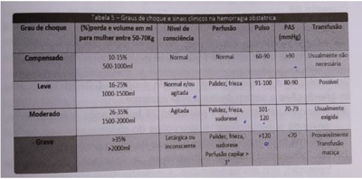
A Trata-se de choque grave, considerando a frequência cardíaca e índice de choque maior que 1
B Trata-se de choque moderado, considerando o volume do sangramento e índice de choque igual a 1,25
C Trata-se de choque compensado, considerando a pressão arterial sistólica e índice de choque igual a 0,8
D Trata-se de choque moderado, considerando o nível de consciência e índice de choque igual a 0,8
Questão 727 · Modif icações f isiológicas da gestação · Obstetrícia · 4000185524Sobre as modificações adaptativas do organismo materno durante a gravidez, assinale a opção ERRADA:
A Ocorre aumento dos níveis séricos de colesterol LDL para esteroidogênese placentária
B Ocorre efeito hipoglicemiante materno pelo aumento sérico do hormônio lactogênio placentário
C Pode ocorrer glicosúria e proteinúria pelo aumento do ritmo de filtração glomerular
D Pode ocorrer redução do peristaltismo intestinal pela ação miorrelaxante da progesterona
Questão 728 · Distúrbios hipertensivos na gestação DHEG · Obstetrícia · 4000185523Paciente de 26 anos, primigesta, previamente hígida, acompanhada em Centro de Saúde, com 32 semanas de gestação evolui com aumento pressórico. Refere que nas últimas semanas compareceu à unidade de saúde onde foram aferidas várias medidas pressóricas acima de 140x90mmHg. Foi solicitada Proteinúria de 24 horas com resultado de 395mg/24h. A relação proteinúria/creatininúria (mg/dL) da última semana resultou em 0,25. Acerca da CONDUÇÃO ADEQUADA para essa paciente, assinale a alternativa CORRETA:
A A restrição de sal deve ser indicada imediatamente, não só para controle pressórico, mas para a redução do volume intravascular. Repouso também é indicado pelo mesmo motivo
B Devido a ser um quadro de pré-eclâmpsia com sinais de gravidade devido aos valores pressóricos, a gestante deve ser internada para se aprofundar a avaliação e ter certeza de que não existem sinais/sintomas que indiquem a interrupção da gestação
C Pode ser acompanhada no Centro de Saúde, desde que não evolua com alterações laboratoriais
D Se a gestante mantiver a pressão arterial controlada, a resolução da gestação deve ocorrer com 37 semanas. A indução do parto pode ser proposta
Questão 729 · Sif ilis na gestação · Obstetrícia · 4000185519Paciente procura a Maternidade, insegura com a orientação recebida na Unidade Básica de Saúde (UBS) onde realiza o pré-natal de risco habitual. Apresentou VDRL reativo até 1/16 e teste rápido para treponema positivo, sem histórico de tratamento prévio; foi solicitado o VDRL para o parceiro que veio negativo e a recomendação foi de que só ela deveria tratar já que o parceiro não apresentava sí lis. Considerando o diagnóstico de sí lis para a paciente e iniciando logo seu tratamento, assinale a conduta CORRETA em relação a seu parceiro sexual.
A Realizar um teste treponêmico e só tratar se o teste for positivo
B Repetir o teste não-treponêmico e só tratar se o novo teste for positivo
C Realizar um teste treponêmico e tratar como sífilis, independentemente do resultado do teste. A dose preconizada vai diferir se o teste for positivo ou negativo
D Considerar que a sífilis foi excluída e que não precisa tratar
Questão 730 · Restrição de crescimento f etal RCF · Obstetrícia · 4000185518Paciente de 28 anos, G2PC1A0, IG 31 semanas, encaminhada ao Pré-Natal de Alto Risco (PNAR) devido a quadro de crescimento intrauterino restrito (CIUR). Na história clínica: tabagismo 10 cigarros/dia desde a adolescência e lho anterior nasceu com 34 semanas devido a quadro de CIUR. Não apresentava doenças sistêmicas. Ao exame clínico apresentava UF de 28cm e BCF de 132bpm. O último US era de 27 semanas com peso fetal estimado entre os percentis 3 e 10, sem Doppler. Solicitado ultrassonogra a com Doppler na urgência que confirmou o CIUR. Assinale a opção com a avaliação pela Dopplervelocimetria que, se estiver alterada, define a necessidade da interromper a gestação:
A Estudo da artéria cerebral média (ACM) que é marcador do mecanismo de compensação fetal
B Estudo das artérias umbilicais, um marcador da reserva funcional placentária
C Estudo das artérias uterinas que avalia o fluxo uteroplacentário
D Estudo do ducto venoso que é marcador da descompensação e da exaustão do mecanismo de compensação
Questão 731 · Avaliação do risco gestacional · Obstetrícia · 4000185508A estrati cação de risco obstétrico durante a assistência pré-natal é um dos fatores determinantes para a redução da mortalidade materno-fetal. De acordo com o Manual de Gestação de Alto Risco do Ministério da Saúde, qual das opções abaixo NÃO É característica individual e/ou condição sociodemográ ca que deve ser considerada como critério de encaminhamento de gestante/puérpera à unidade de maior nível hierárquico de pré-natal:
A Dependência ou uso abusivo de tabaco, álcool ou outras drogas
B Idade inferior a 15 anos e maior de 40 anos
C Sobrepeso
D Transtornos alimentares (bulimia, anorexia)
Revisar: possível letra faltando em enunciado
Questão 732 · Inibidores do sistema reninaangiotensinaaldosterona · Cardiopatias na gestação · 4000185450Mulher, 36 anos, tem antecedentes de hipertensão arterial e troca valvar mitral por prótese metálica há 9 anos. Está em uso regular de enalapril 10 mg 12/12h e varfarina 5 mg/dia, com bom controle dos níveis pressóricos e do tempo de protrombina. Após atraso menstrual, procurou ginecologista e foi confirmada gravidez. Encontra-se na 6a semana de gestação, confirmada por ultrassonografia transvaginal. Qual é a conduta correta neste momento?
A Manter o enalapril, pois está em controle adequado da hipertensão arterial. Manter a varfarina, pois a terapêutica encontra-se otimizada.
B Substituir enalapril por metildopa e varfarina por heparina de baixo peso molecular.
C Substituir enalapril por hidralazina. Manter o uso de varfarina até a 12ª semana e, após, substituir por heparina de baixo peso molecular.
D Substituir enalapril por nifedipina. Manter o uso de varfarina até a 36ª semana e, após, substituir por enoxaparina.
E Manter o enalapril e substituir a varfarina por apixabana.
Questão 733 · Inibição da amamentação · Situações em que há restrições ao aleitamento materno · 4000185413Em relação à alimentação de um recém-nascido, lho de mãe HIV positiva, em uso de antirretroviral, o Ministério da Saúde recomenda oferecer:
A aleitamento materno exclusivo.
B aleitamento materno cruzado.
C leite materno pausterizado.
D aleitamento misto.
E fórmula infantil.
Questão 734 · Aborto retido · 4000185393Para responder à questão, leia o caso a seguir. M.F.B., 23 anos, primigesta, deu entrada no PSO com queixa de sangramento vaginal em pequena quantidade. Dor tipo cólica, leve. Ao exame especular: colo uterino sem lesões. Pequena quantidade de sangue vermelho vivo coletado em fórnice posterior. Ao toque vaginal bimanual: fundo uterino na altura da sínfise púbica, colo uterino impérvio, grosso e posterior. Submetida a ultrassom que identi cou: feto único, gestação tópica, CCN 52,5 mm, TN 1,1 mm; BCF inaudível, biometria compatível com 12 semanas de idade gestacional. Assinale o diagnóstico correto.
A Aborto retido.
B Aborto completo.
C Aborto incompleto.
D Gestação de mola incompleta.
E Gestação heterotópica.
Questão 735 · Aborto retido · 4000185392Para responder à questão, leia o caso a seguir. M.F.B., 23 anos, primigesta, deu entrada no PSO com queixa de sangramento vaginal em pequena quantidade. Dor tipo cólica, leve. Ao exame especular: colo uterino sem lesões. Pequena quantidade de sangue vermelho vivo coletado em fórnice posterior. Ao toque vaginal bimanual: fundo uterino na altura da sínfise púbica, colo uterino impérvio, grosso e posterior. Submetida a ultrassom que identi cou: feto único, gestação tópica, CCN 52,5 mm, TN 1,1 mm; BCF inaudível, biometria compatível com 12 semanas de idade gestacional. Assinale a alternativa com a conduta correta.
A Orientar abstinência sexual e repouso relativo.
B Internação para cerclagem uterina.
C Repetir ultrassom em cerca de 7 dias para reavaliar desenvolvimento fetal.
D Internação para AMIU (aspiração manual intrauterina).
E Internação para Misoprostol e curetagem uterina posterior, se necessário.
Questão 736 · O trabalho de parto e o parto · 40001853913. N.T.B., 32 anos, GII P0 AI, IG, pelo ultrassom (usg) precoce, de 34 semanas e 4 dias, deu entrada no PSO com queixa de dor tipo contração uterina. Nega comorbidades ou outros sintomas. Ao toque vaginal: colo 3 cm, fino, anterior, bolsa íntegra, apresentação cefálica. BCF 148 bpm, DU 2/10’/30”. De acordo com o caso, assinale a conduta correta.
A Corticoide e parto cesáreo.
B Sulfato de magnésio e condução do trabalho de parto com ocitocina.
C Corticoide e indução do trabalho de parto com misoprostol.
D Sulfato de magnésio e inibição do trabalho de parto com terbutalina.
E Conduta expectante, com reavaliação do toque vaginal em cerca de 1-2 horas.
Questão 737 · Morf ológico 1o trimestre USG 1o trim · 4000185390O ultrassom morfológico de primeiro trimestre proporciona o cáculo do risco de trissomias, de acordo com a idade materna e a avaliação de outros marcadores durante o exame. Assinale a alternativa que relata apenas marcadores maiores para cromossomopatias.
A Osso nasal, translucência nucal, IP médio das artérias uterinas.
B Osso nasal, ducto venoso e translucência nucal.
C Translucência intracraniana, ducto venoso, osso nasal.
D IP médio das artérias uterinas, artéria umbilical única, osso nasal.
E Regurgitação da tricúspide, ducto venoso e pielectasia.
Questão 738 · Conduta · 4000185389Para responder à questão, leia o caso a seguir. E.S.S, 29 anos, primigesta, IG por usg precoce de 28 semanas e 3 dias. Hipertensa crônica, em uso de metildopa 2 g/dia, deu entrada no PSO com ultrassom demonstrando diástole zero em artéria umbilical, peso fetal no percentil 6, ducto venoso IP: 0,50, maior bolsão vertical de 3 cm. Assintomática, PA de 130 x 80 mmHg. Assinale a conduta correta.
A Corticoide, sulfato de magnésio e interrupção da gestação via alta.
B Interrupção da gestação via alta de emergência, sem medidas prévias.
C Corticoide, sulfato de magnésio por iminência de eclâmpsia e indução do trabalho de parto com Misoprostol.
D Alta e retorno semanal para controle da vitalidade fetal.
E Internação para controle diário do doppler do ducto venoso.
Questão 739 · Bases f ísicas da Dopplervelocimentria · 4000185388Para responder à questão, leia o caso a seguir. E.S.S, 29 anos, primigesta, IG por usg precoce de 28 semanas e 3 dias. Hipertensa crônica, em uso de metildopa 2 g/dia, deu entrada no PSO com ultrassom demonstrando diástole zero em artéria umbilical, peso fetal no percentil 6, ducto venoso IP: 0,50, maior bolsão vertical de 3 cm. Assintomática, PA de 130 x 80 mmHg. Diante do caso, assinale a interpretação correta, em relação a diástole zero em artéria umbilical, ilustrada a seguir.
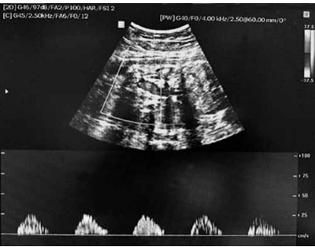
A Baixo índice de pulsatilidade em artéria umbilical.
B Provavelmente a artéria cerebral média encontra-se com alto índice de pulsatilidade.
C Provavelmente há um aumento da relação cérebro- -umbilical.
D Provavelmente a relação cérebro-umbilical está normal.
E O ducto venoso pode estar normal.
Questão 740 · Determinação da corionicidade e amnionicidade · 4000185387G.J.N., 36 anos, GII PI 1C (há 3 anos) A0, deu entrada no PSO com queixa de dor em hipogástrio. IG de 20 semanas por usg prévio. Gestação gemelar, porém, de corionicidade desconhecida. Submetida à ultrassonografia após o primeiro atendimento. Imagem da placenta identificada, conforme ilustração a seguir. De acordo com a imagem, assinale a classificação correta da gestação gemelar e o sinal identificado.
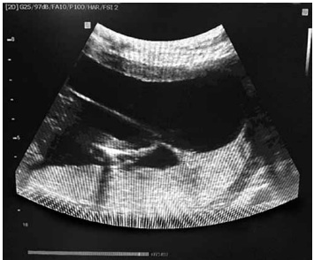
A Dicoriônica e monoamniótica, sinal do T.
B Dicoriônica e diamniótica, sinal do Lâmbda.
C Monocoriônica e monoamniótica, sem sinal do T ou do Lâmbda.
D Monocoriônica e diamniótica, sinal do T.
E Monocoriônica e triamniótica, sinal do T.
Questão 741 · Indicações e contraindicações · 4000185386K.G.B., 32 anos, GII PI(1N) A0, IG 37 semanas, sem comorbidades, veio à consulta de pré-natal de rotina com resultado de ultrassom obstétrico demonstrando ILA (índice de líquido amniótico) de 4,5 cm e MBV (maior bolsão vertical) de 1,8 cm. Peso fetal no percentil 63, placenta posterior, grau II, feto em apresentação cefálica. Paciente sem queixas obstétricas. EF obstétrico sem alterações. Feto com boa vitalidade. De acordo com o caso dado, assinale a conduta correta.
A Retorno em 3 dias para reavaliação do ILA.
B Retorno ao pré-natal em 7 dias.
C Internação para interrupção da gestação por via alta.
D Internação para indução do trabalho de parto com misoprostol.
E Internação para preparo do colo uterino com sonda de Foley
Questão 742 · Criterios diagnósticos da préeclampsia · Diagnósticos dif erenciais · 4000185385Para responder à questão, leia o caso a seguir. C.S.A., 24 anos, primigesta, IG 31 semanas, encaminhada do pré-natal por elevação de PA, assintomática. Nega hipertensão prévia. Sem uso de medicação anti-hipertensiva. Ao exame físico: PA 150 x 100 mmHg, AU: 25 cm, DU ausente, colo uterino impérvio, BCF 158 bpm. Ultrassom pela medicina fetal do mesmo dia demonstrando feto em apresentação cefálica, peso fetal no percentil 3, diástole zero em artéria umbilical, ducto venoso IP: 0,60. Assinale a primeira abordagem que deve ser feita diante do caso a seguir.
A Metildopa, sulfato de magnésio e rotina pré-eclâmpsia.
B Hidralazina EV, corticoide e sulfato de magnésio.
C Levomepromazina, hidralazina EV e rotina pré- -eclâmpsia.
D Anlodipino, corticoide, rotina pré-eclâmpsia, sulfato de magnésio e SVD.
E Anlodipino, rotina pré-eclâmpsia, controle de PA e avaliação da vitalidade fetal.
Questão 743 · Síndrome HELLP · 4000185384Para responder à questão, leia o caso a seguir. C.S.A., 24 anos, primigesta, IG 31 semanas, encaminhada do pré-natal por elevação de PA, assintomática. Nega hipertensão prévia. Sem uso de medicação anti-hipertensiva. Ao exame físico: PA 150 x 100 mmHg, AU: 25 cm, DU ausente, colo uterino impérvio, BCF 158 bpm. Ultrassom pela medicina fetal do mesmo dia demonstrando feto em apresentação cefálica, peso fetal no percentil 3, diástole zero em artéria umbilical, ducto venoso IP: 0,60. Após resultados de exames, identi cados: plaquetas: 82000; TGO 140; TGP 100; DHL 900; ácido úrico 7, assinale o diagnóstico correto.
A Pré-eclâmpsia leve.
B Pré-eclâmpsia super-ajuntada.
C Síndrome HELLP.
D Eclâmpsia.
E Hipertensão gestacional.
Questão 744 · Eclâmpsia · 4000185383Para responder à questão, leia o caso a seguir. C.S.A., 24 anos, primigesta, IG 31 semanas, encaminhada do pré-natal por elevação de PA, assintomática. Nega hipertensão prévia. Sem uso de medicação anti-hipertensiva. Ao exame físico: PA 150 x 100 mmHg, AU: 25 cm, DU ausente, colo uterino impérvio, BCF 158 bpm. Ultrassom pela medicina fetal do mesmo dia demonstrando feto em apresentação cefálica, peso fetal no percentil 3, diástole zero em artéria umbilical, ducto venoso IP: 0,60. Assinale a conduta mais adequada.
A Corticoide, sulfato de magnésio e interrupção da gestação via alta.
B Sulfato de magnésio e indução do trabalho de parto com misoprostol.
C Corticoide e indução do trabalho de parto com misoprostol.
D Corticoide e repetir rotina pré-eclâmpsia em 24 horas.
E Corticoide, sulfato de magnésio e repetir rotina pré-eclâmpsia em 48 horas.
Questão 745 · Diagnóstico · 4000185326Gestante, 26 semanas, com obesidade grau 2, nega comorbidades. Tercigesta e primípara, vem para consulta de pré-natal com ultrassonogra a morfológica de 2º trimestre, evidenciando feto único vivo, cefálico, placenta grau 0, peso estimado no percentil 95, ILA sem alterações. Ausência de alterações na morfologia fetal. Sobre o diagnóstico de diabetes gestacional, é correto afirmar que
A está estabelecido, nesse caso, pois já há 2 critérios maiores importantes: obesidade e feto no percentil 95.
B será estabelecido, caso haja constatação de glicemia de jejum ≥ 92mg/dL e ≤ 125mg/dL.
C erá estabelecido, caso haja constatação de glicemia após a primeira hora ≥ 153mg/d, no Teste de Tolerância Oral a Glicose com 100g.
D será estabelecido, caso haja constatação de glicemia após a primeira hora ≥ 180mg/dL, no Teste de Tolerância Oral a Glicose com 100g.
Questão 746 · Diagnóstico · 4000185325Gestante, 26 semanas, com obesidade grau 2, nega comorbidades. Tercigesta e primípara, vem para consulta de pré-natal com ultrassonogra a morfológica de 2º trimestre, evidenciando feto único vivo, cefálico, placenta grau 0, peso estimado no percentil 95, ILA sem alterações. Ausência de alterações na morfologia fetal. Uma vez confirmada a principal suspeita diagnóstica no acompanhamento pós-parto para reclassi cação diagnóstica, especifique o exame indicado para definição de Diabetes pós-gestacional:
A Dosagem de hemoglobina glicada 6 semanas após o parto.
B Nova glicemia de jejum 6 meses após o parto.
C Teste de Tolerância Oral a Glicose (TOTG 75g) 6 semanas após o parto.
D Teste de Tolerância Oral a Glicose (TOTG 75g) 6 meses após o parto.
Questão 747 · Distócia de ombro · 4000185324Gestante, 26 semanas, com obesidade grau 2, nega comorbidades. Tercigesta e primípara, vem para consulta de pré-natal com ultrassonogra a morfológica de 2º trimestre, evidenciando feto único vivo, cefálico, placenta grau 0, peso estimado no percentil 95, ILA sem alterações. Ausência de alterações na morfologia fetal. Uma das maiores preocupações no parto normal de fetos, em casos como esse, é a distocia de ombros. Indique a manobra utilizada na tentativa de desprendimento do ovoide córmico.
A McRoberts.
B Leopold.
C Ritgen.
D Jacob Dublin.
Questão 748 · Criterios diagnósticos da préeclampsia · Préeclâmpsia com sinais de gravidade · 4000185323Diagnósticos dif erenciais Em consulta de pré-natal, gestante de 34 anos de idade, na 30a semana de gestação,a rma que vem apresentando cefaleia e cansaço com piora nos últimos três dias. Também relata que apresentou turvação visual ao se levantar hoje. Nega comorbidades prévias. Ao exame físico, PA: 140x100mmHg, edema de membros inferiores ++/4+. Teste de proteinúria: positivo. Diante do quadro clinico, indique a principal suspeita diagnóstica:
A Hipertensão gestacional.
B Eclâmpsia.
C Pre-eclâmpsia leve.
D Pre-eclâmpsia grave.
Questão 749 · Préeclâmpsia com sinais de gravidade · 4000185322Em consulta de pré-natal, gestante de 34 anos de idade, na 30a semana de gestação,a rma que vem apresentando cefaleia e cansaço com piora nos últimos três dias. Também relata que apresentou turvação visual ao se levantar hoje. Nega comorbidades prévias. Ao exame físico, PA: 140x100mmHg, edema de membros inferiores ++/4+. Teste de proteinúria: positivo. Frente ao caso, indique a conduta a ser adotada:
A Solicitar exames laboratoriais, M.A.P.A e retorno em uma semana.
B Realizar cardiotocografia, exames laboratoriais e solicitar retorno em uma semana.
C Internar a paciente para observação e solicitar e exames.
D Solicitar exames laboratoriais e ultrassom obstétrico e pedir retorno com exames em uma semana.
Questão 750 · Préeclâmpsia com sinais de gravidade · 4000185321Em consulta de pré-natal, gestante de 34 anos de idade, na 30a semana de gestação,a rma que vem apresentando cefaleia e cansaço com piora nos últimos três dias. Também relata que apresentou turvação visual ao se levantar hoje. Nega comorbidades prévias. Ao exame físico, PA: 140x100mmHg, edema de membros inferiores ++/4+. Teste de proteinúria: positivo. Indique a medicação que deverá inicialmente ser prescrita para essa paciente.
A Hidralazina.
B Sulfato de magnésio.
C Nifedipina ou metildopa.
D Metildopa.
Questão 751 · Parto cesárea · Obstetrícia · 4000185243Uma gestante de 18 anos de idade, com antecedentes de G2 P0 A1, idade gestacional de 37 semanas e 1 dia, gestação gemelar dicoriônica e diamniótica, deu entrada no pronto atendimento obstétrico com quadro de amniorrexe prematura. Foi realizada ultrassonogra a, que mostrou primeiro feto transverso e segundo feto pélvico. Considerando-se esse caso hipotético, é correto a rmar que, de acordo com a Classi cação de Robson, trata-se de um caso classificado como Robson
A 6.
B 7.
C 8.
D 9.
E 10.
Questão 752 · Obstetrícia · Indução de parto · 4000185242Gestante com idade gestacional de 39 semanas e 4 dias internou-se para a indução do trabalho de parto. Foi avaliada na admissão, e o exame de toque vaginal apresentava colo impérvio, longo (aproximadamente 3 cm), apresentação em plano 0 de De Lee, consistência intermediária e posição intermediária do colo. Nesse caso clínico, o Índice de Bishop é de
A 2.
B 3.
C 4.
D 5.
E 6.
Questão 753 · Procedimentos invasivos em medicina f etal · Obstetrícia · 4000185241A respeito dos procedimentos invasivos realizados em medicina fetal, assinale a alternativa correta.
A A amniocentese pode ser realizada a partir da 12.a semana de gestação.
B Após procedimentos invasivos, é necessário realizar profilaxia anti-D nas gestantes RH negativo.
C A cordocentese tem taxa de perda fetal de 0,3% a 0,5%.
D A amniocentese transplacentária aumenta a taxa de perda fetal.
E A biópsia de vilo corial tem baixa taxa de perda gestacional (0,2%), contudo a taxa de moisacismo é de 10%.
Questão 754 · Obstetrícia · Assistência ao parto normal · 4000185240Primípara a termo, com gestação de risco habitual, foi admitida no centro de parto normal com 5 cm de dilatação, 4 contrações de 50” em 10 minutos, bolsa íntegra, apresentação cefálica etida, em OEA em plano -1 de De Lee. Feto com boa vitalidade e BCF de 144 bpm. Uma hora após a admissão, apresentava-se com toque vaginal sem modificações comparado ao momento da admissão; feto com boa vitalidade. Assinale a alternativa que apresenta a conduta correta nesse caso clínico.
A suspender dieta, devido ao risco de distocia funcional e eventual necessidade de cesariana
B realizar amniotomia e instalação de soro com ocitocina, para acelerar a dilatação que, no partograma, aproxima-se da linha de alerta
C manter ausculta fetal intermitente a cada 30 minutos e sugerir à parturiente caminhada e posições verticalizadas
D instalar soro com ocitocina e reavaliar em 1 hora; se não houver progressão da dilatação, indicar cesariana por distocia funcional
E manter ausculta fetal intermitente a cada 1 hora e realizar amniotomia para evitar que a dilatação alcance a linha de ação no partograma
Questão 755 · Parto vaginal operatório · Obstetrícia · 4000185239Com relação ao fórceps, assinale a alternativa correta.
A É possível a aplicação de fórceps no caso de fetos em apresentação pélvica.
B O Fórceps de Kielland tem curvatura pélvica acentuada.
C O Fórceps de Simpson realiza rotações de 90°.
D A variedade de posição OEA necessita de rotação de 90° em sentido horário.
E A variedade de posição ODT necessita de rotação de 90° em sentido anti-horário.
Questão 756 · Obstetrícia · Alteração do volume de líquido amniótico ILA · 4000185238Considerando a imagem acima, assinale a alternativa que apresenta uma alteração ultrassonográ ca que pode se associar aos teratomas cervicais.
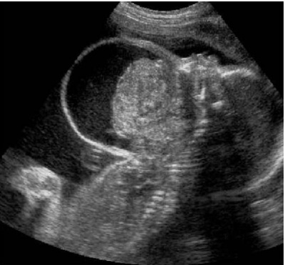
A É rara a associação com polidrâmnio.
B A placentomegalia não está presente.
C Há aumento de líquido na bexiga fetal.
D Há redução ou ausência da bolha gástrica.
E O líquido amniótico está reduzido.
Revisar: possível letra faltando em enunciado
Questão 757 · Distúrbios hipertensivos na gestação DHEG · Obstetrícia · 4000185237A pré-eclâmpsia é uma grave doença multissistêmica caracterizada por hipertensão e proteinúria, ocorrendo, geralmente, na segunda metade da gestação. Acerca dessa entidade clínica, assinale a alternativa correta.
A A fim de reduzir a incidência de pré-eclâmpsia em gestantes de alto risco, uso de ácido acetilsalicílico deve ser iniciado entre 8 e 12 semanas de gestação.
B A dieta pobre em sal é uma das formas de se evitar o surgimento da pré-eclâmpsia em gestantes de alto risco.
C Em áreas de baixa ingesta de cálcio, indica-se suplementação com 1,5 g a 2 g de cálcio, a fim de reduzir a incidência de pré-eclâmpsia.
D Gestantes com pré-eclâmpsia em uso de metildopa em dose mínima e níveis de pressão bem controlados podem aguardar o parto até 40 semanas.
E Os exames laboratoriais iniciais para critério de gravidade da pré-eclâmpsia incluem o coagulograma.
Questão 758 · Obstetrícia · Assistência ao parto normal · 4000185236A respeito do período expulsivo do trabalho de parto, assinale a alternativa correta.
A O período expulsivo inicia-se quando a parturiente passa a apresentar puxos espontâneos e a apresentação fetal é visível no introito vaginal.
B As posições verticalizadas apresentam vantagens, tais como: efeito da gravidade; menor compressão da aorta e cava; e maior eficiência da contratilidade uterina.
C É necessário uso de clorexidina, preparação com campos estéreis e luvas estéreis para assistência ao período expulsivo.
D Não há evidências de que massagem perineal e compressas mornas reduzam a incidência de lacerações de 3° e 4° graus.
E A avaliação da frequência cardíaca fetal deve ser realizada a cada 10 minutos, e presença de desacelerações precoces (DIP I) é indicativa de sofrimento fetal.
Questão 759 · Puerpério f isiológico · Obstetrícia · 4000185234O puerpério é o período que sucede o parto e, do ponto de vista siológico, compreende os processos involutivos das modi cações gravídicas locais e gerais ocorridas na gestação. Em relação a esse período, assinale a alternativa correta.
A A
B No primeiro dia pós-parto, ocorre a apojadura, que consiste na descida do leite.
C No 15.° dia pós-parto vaginal, o colo uterino permanece pérvio a um ou dois dedos.
D Deve ser postergada a contracepção com anticoncepcionais orais de progestógenos isolados nos primeiros 60 dias pós-parto.
E A inserção de DIU de cobre imediatamente após a dequitação apresenta taxa de expulsão de 75% nos primeiros seis meses pós-parto.
Questão 760 · Placenta · Útero e anexos · Sistema endócrino e metabolismo · 4000184803Pode-se a rmar que o hPL, também denominado somatomamotropina coriônica humana (hCS), tem atividade lactogênica e é produzido pelo:
A cório capsular
B sincíciotrofoblasto
C corpo lúteo
D âmnio fetal
Questão 761 · Avaliação do colo uterino · 4000184799Pode-se a rmar que para a indução do parto, utilizando-se o índice de desfavorável se o escore for:
A ≤ 4
B ≤ 5
C ≤ 6
D ≤ 3
Questão 762 · Cardiotocograf ia intraparto · Cardiotocograf ia anteparto · Parâmetros da cardiotocograf ia · 4000184798Pode-se a rmar que no sistema de interpretação da frequência cardíaca fetal (FCF) na cardiotocogra a em três categorias, representa melhor a categoria 3:
A aceleração presente.
B desacelerações variáveis repetidas (> 50%).
C desaceleração precoce presente.
D variabilidade da FCF basal moderada.
Questão 763 · Colagenoses na gestação Lupus eritematoso Sistêmico LES · 4000184797Pode-se a rmar que durante a gestação de uma mulher com lúpus eritematoso sistêmico (LES) está contraindicado o uso de:
A hidrocloroquina
B azatioprina
C leflunomida
D sulfassalazina
Questão 764 · Fase latente · 4000184796Pode-se afirmar, em relação ao trabalho de parto normal, que:
A o período expulsivo se encerra com a saída do feto e placenta.
B o primeiro período do parto tem início com a dilatação do colo em 1cm.
C a fase latente dura em média 20 horas nas primíparas e 14 horas nas multíparas.
D a amniorrexe é prematura quando se dá no início do trabalho de parto.
Questão 765 · Classif icação · 4000184794Um caso de descolamento prematuro de placenta é caracterizado por: sangramento vaginal; dor abdominal intensa; hipertonia uterina; feto em sofrimento, mas vivo. Pode-se a rmar que o mesmo classifica-se como grau:
A 1
B 2
C 3
D 0
Questão 766 · Diabetes na gestação DMG · Obstetrícia · 4000184716Paciente de 46 anos de idade, obesa, hipertensa crônica e tabagista, encontra-se na 10ª semana de gestação. Retorna para sua segunda consulta de pré-natal na Unidade Básica de Saúde e, ao serem avaliados os resultados dos exames solicitados, foi observado glicemia de jejum = 90 mg/dl. Neste caso, qual é a conduta adequada:
A Realizar Teste Oral de Tolerância à Glicose (TOTG) de 75 g entre 24 e 28 semanas de gestação.
B Solicitar nova glicemia de jejum e hemoglobina glicada entre 16 e 18 semanas de gestação.
C Repetir glicemia de jejum e, se manter o valor, iniciar hipoglicemiante por via oral, pois é um diagnóstico de diabetes gestacional.
D Manter rotina normal de consultas e solicitar nova glicemia de jejum na 24ª - 26ª e 34ª semana de gestação.
Questão 767 · Sif ilis na gestação · Obstetrícia · 4000184715Primigesta na 14° semana de gestação com VDRL 1:8, assintomática, sem tratamento anterior para sí lis, comparece para a sua segunda consulta de pré-natal em uma Unidade Básica de Saúde. Ao receber a receita, refere que é alérgica à penicilina. Nesses casos, a conduta adequada a ser realizada é:
A Realizar dessensibilização e tratar com Penicilina G Benzatina 2,4 milhões de UI/ IM por semana, durante 3 semanas, com controle quantitativo com teste não treponêmico mensal até o nascimento.
B Considerar paciente portadora de sífilis primária. Realizar dessensibilização e tratar com Penicilina G Benzatina, 2,4 milhões de UI/IM, com controle quantitativo com teste treponêmico trimestral até o final da gravidez.
C O tratamento diante nessas situações é eficaz para não ocorrer transmissão vertical com o uso de Ceftriaxona IV, uma vez ao dia, durante 14 dias.
D No momento não tratar, solicitar testes treponêmicos e não treponêmicos para afastar a possibilidade de cicatriz sorológica.
Questão 768 · Rotura prematura de membranas ovulares RPM · Obstetrícia · 4000184714Gestante de risco habitual, na 31ª semana, comparece para atendimento de emergência relatando perda de líquido por via vaginal há 4 horas. Exame físico geral sem alterações. Ao exame obstétrico, apresenta altura uterina de 29 cm, batimento cardíaco fetal: 148 bpm, dinâmica uterina ausente e exame especular: colo entreaberto, com saída de líquido pelo canal cervical. De acordo com esses dados, é correto realizar a seguinte conduta:
A Internação, repouso absoluto, inibição profilática do trabalho de parto prematuro e neuroproteção fetal.
B Aguardar resultado do exame ultrassonográfico para confirmar a hipótese de bolsa rota, depois iniciar as condutas.
C Internação, preparo do colo e indução imediata do parto por via vaginal devido a possibilidade de corioamnionite e hipoplasia pulmonar.
D Internação, repouso relativo, aceleração da maturidade pulmonar fetal com corticoide e antibioticoprofilaxia para Streptococcus do grupo B.
Questão 769 · Obstetrícia · Pósdatismo · 4000184713Uma gestante, em sua consulta de pré-natal em Unidade Básica de Saúde, está preocupada porque seu lho ainda não nasceu. De acordo com a data da última menstruação, está no momento da consulta com 42 semanas de gestação, que coincide com exame ultrassonográ co realizado na 8ª semana de gestação. Ao exame físico e obstétrico, apresenta: pressão arterial = 100x60 mmHg, altura uterina = 38 cm, frequência cardíaca fetal = 140 bpm, sem desacelerações, colo apagado 50%, fechado, feto único, cefálico e insinuado. De acordo com esses dados, qual é a conduta adequada:
A Orientar a gestante e encaminhar para a maternidade para avaliação da vitalidade fetal, preparo do colo e indução do parto.
B Internação, cardiotocografia, dopplervelocimetria de ducto venoso e perfil biofísico diários e, se alterados, realizar operação cesariana.
C Encaminhar a gestante para a maternidade de alto risco para realizar cesariana devido desproporção cefalopélvica e índice de Bishop desfavorável para indução de parto via vaginal.
D Tranquilizar a gestante e orientar para procurar a maternidade caso apresente perda de líquido e se constatar quantidade inferior a 6 movimentos fetais em duas horas de observação.
Revisar: possível letra faltando em enunciado
Questão 770 · Avaliação da vitalidade f etal · Obstetrícia · 4000184712Durante a condução de um trabalho de parto em uma gestante hipertensa, ao ser realizado exame cardiotocográ co, foram observadas desacelerações intraparto (DIP) do tipo II ou tardios. Esta alteração está relacionada a:
A Insuficiência placentária e hipóxia fetal.
B Desacelerações decorrentes de compressão funicular.
C Compressão do polo cefálico durante as contrações uterinas.
D Desacelerações variáveis devido à diminuição do líquido amniótico.
Revisar: possível letra faltando em enunciado
Questão 771 · Estática f etal · Obstetrícia · 4000184711Durante o exame obstétrico de uma gestante de 38 semanas, em trabalho de parto, foi observado: palpação abdominal (manobras de Leopold-Zweifel) = não evidenciado polo fetal ocupando o fundo uterino; fundo uterino pouco acima da cicatriz umbilical; batimentos cardíacos fetais= normais; dilatação cervical= 8 cm; bolsa das águas rota. De acordo com esses dados, assinale a alternativa correta:
A A situação fetal é transversa com apresentação córmica, cujo ponto de referência fetal é o acrômio e a conduta é operação cesariana.
B Trata-se de um caso de distócia do trajeto duro no estreito superior da bacia, com diâmetro diminuído da conjugata diagonalis e a conduta é posição verticalizada materna.
C Os dados relatados acima demonstram feto em apresentação pélvica incompleta, secundária a distócia de trajeto mole e a conduta é operação cesariana.
D Trata-se de um caso de distócia da posição fetal, com localização topográfica no estreito inferior da bacia e a conduta é a rotação para occipito púbica.
Questão 772 · Obstetrícia · Partograma · 4000184710Primigesta, gestação de risco usual, com a evolução do trabalho de parto demonstrada no partograma abaixo. Assinale a alternativa que contém o tipo de distócia apresentada e a conduta obstétrica:
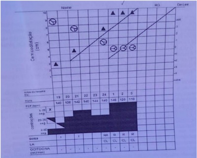
A Parada secundária da descida e fórceps de rotação
B Parada secundária da descida e operação cesariana
C Fase ativa protraída e infusão intravenosa de ocitocina
D Desproporção cefalopélvica relativa e infusão intravenosa de ocitocina
Questão 773 · Quadro clínico · Diagnóstico · 4000184627Adolescente de 15 anos, encaminhada ao pronto atendimento após quadro de desmaio, sangramento genital discreto e dor pélvica intensa. Paciente relata atraso menstrual há 3 meses. Nega uso de métodos anticoncepcionais. Ao exame: muito ansiosa, descorada ++/ 4+. PA: 80x40mmHg e FC: 134bpm. Abdome distendido e doloroso. Não foi auscultado batimentos cardíacos fetais. Ao toque colo amolecido, pérvio, sangramento discreto. Nesse contexto, assinale a alternativa que apresenta o PROVÁVEL diagnóstico dessa paciente.
A Mola hidatiforme com sinais de hipertireoidismo descompensado.
B Gestação tópica com óbito fetal.
C Planceta prévia.
D Gravidez ectópica tubária rota.
Questão 774 · Rotura de vasa prévia · 4000184619Paciente 17 anos, primigesta, idade gestacional 32 semanas, com diagnóstico ultrassonográ co de vasa prévia ao ultrassom. Para esse caso, assinale a alternativa que apresenta a MELHOR conduta a ser realizada.
A Encaminhar para cesariana o mais rápido possível após corticoterapia hemotransfusão.
B Realizar o parto cesárea com gestação de 35 semanas devido ao risco de morte fetal por rotura dos vasos placentários.
C Conduzir o parto por via vaginal, uma vez que se trata de uma adolescente e não se pode comprometer seu futuro obstétrico.
D Encaminhar para indução do parto vaginal após corticoterapia e hemotransfusão.
Revisar: possível letra faltando em enunciado
Questão 775 · Parto vaginal operatório · Fórcipe · Indicações e contraindicações · 4000184618Paciente primigesta, gestação de 40 semanas e pré-natal sem intercorrências. Admitida às 6hs no centro obstétrico em fase ativa do trabalho de parto, colo 90% apagado, com dilatação de 5cm, DU-2/30"/10". Apresentação cefálica, bolsa íntegra, BCF 140bpm. plano de De Lee -3, transverso à direita. Avaliação das 11h mostrou colo no central, permeável para 6cm, plano De Lee zero, transverso à direita, amniorrexe com líquido claro traçado cardiotocográ co tranquilizador. Às 13h, dilatação de 7cm, De Lee +1, occipito direito anterior. Às 15h apresentava 10cm de dilatação, De Lee +2, occipito púbico. Às 19h paciente está completamente exausta e ainda se encontra com 10cm, De Lee de +2, líquido meconial uido e BCF 100bpm, 4/40"/10". Considerando o caso descrito, a conduta MAIS apropriada nesse momento é o:
A Parto vaginal operatório e indicação do uso de vácuo extrator.
B Parto vaginal operatório e indicação de forceps de Kieland.
C Parto vaginal operatório e indicação de forceps de Simpson.
D Parto operatório e indicação de cesariana de urgência.
Revisar: possível letra faltando em enunciado
Questão 776 · Síndrome HELLP · 4000184617Paciente de 22 anos, primigesta, gestação de 35 semanas queixando cefaleia e epigastralgia. Ao exame: hidratada, corada, PA: 160x110mmHg, BCF: 140bpm. Nesse caso, a conduta MAIS indicada para a paciente é o de:
A Administrar antibiótico venoso para o feto, solicitar vaga em UTI neonatal e preparar para cesárea de urgência.
B Avaliar a vitalidade fetal, propedeutica HELLP, indução para parto normal, com administração de hidralazina e sulfato para a paciente.
C Induzir o parto normal, com administração de antibiótio venoso para o feto, hidralazina e sulfato de magnésio para a paciente.
D Avaliar vitalidade fetal, propedêutica HELLP, administração de hidralazina para a paciente e cesariana de urgência.
Questão 777 · Assistência prénatal · 4000184616Paciente 38 anos, solteira, do lar, gravidez não planejada, comparece ao pré-natal informando gestação de 24 semanas. Está assintomática e apresenta exames realizados há 1 semana: GS AB negativo, teste de Coombs indireto negativo, glicemia de jejum 85mg/dL, hemoglobina 11,6g/dL, sorologia para toxoplasmose IgG positivo e IgM negativo, teste HIV 1 e 2 negativo, HbsAg não reator, anti Hbs positivo, VDRL não reator, urocultura positiva, acima de 100.000 unidades formadoras de E.Coli. A respeito dessa consulta, é CORRETO afirmar que:
A O resultado em relação à hepatite B é compatível com susceptibilidade e justifica vacinação durante a gestação.
B A prescrição de sulfametoxazol + trimetoprima deve ser realizada para as infecções urinárias não complicadas na gravidez, evitando risco de prematuridade.
C O teste de Coombs indireto indica que a paciente precisa receber imunoglobulina anti-D o mais rápido possível.
D A dose de sulfato ferroso para essa paciente deve ser de 30 a 60mg de ferro elementar por dia.
Questão 778 · Artéria umbilical · 4000184615Paciente 39 anos, G3P2A0, nenhum lho vivo, gestação de 32 semanas, hipertensa crônica de difícil controle, em uso de metildopa 2 gramas por dia e amlodipina 5mg por dia. Ultrassonogra a mostra restrição de crescimento intraútero, circunferência abdominal percentil <10. Sobre a dopplervelocimetria fetal para esse caso, é CORRETO afirmar que:
A O último estágio do aumento da resistência na artéria umbilical identificado pelo doppler é a inversão do fluxo sanguíneo durante a diástole.
B A resistência ao fluxo sanguíneo nas artérias umbilicais é inversamente proporcional às condições da circulação uteroplacentária.
C Com a evolução da insuficiência uteroplacentária o aumento da resistência ao fluxo sanguíneo na artéria umbilical não impede o fluxo sanguíneo durante a diástole.
D O estado de centralização pode ser mensurado através do estudo da artéria cerebral média, que demonstrará diminuição do fluxo diastólico e da resistência em sua circulação.
Questão 779 · Diagnóstico · 4000184614Paciente, 25 anos, primigesta, 28 semanas e 4 dias de gravidez, sem queixas, pré-natal em dia e exames normais. Até o momento ganhou 14kg. No cartão de pré-natal consta glicemia de jejum de 88mg/dl com 12 semanas. Traz o exame do teste de tolerância oral à glicose realizado há uma semana, com os seguintes resultados: • Glicemia de jejum de 97g/dl. • Glicemia após 1 hora de dextrosol de 183 mg/dl. • Glicemia após 2 horas de dextrosol 2 horas de 150mg/dl. Sobre o quadro exposto, é CORRETO afirmar que:
A O fato de a gestante ser obesa e ter familiares com DM tipo 2 na família obriga à realização de teste de tolerância oral à glicose no primeiro trimestre.
B O diagnóstico da gestante é Diabetes Melitus Gestacional (DMG) e a conduta inicial é orientação de dieta e prática de atividades físicas, tendo como base o teste de tolerância oral à glicose.
C O teste de tolerância oral à glicose é desnecessário caso a paciente gestante apresente valores de glicemia de jejum no primeiro trimestre inferiores a 92mg/dL.
D A melhor conduta nesse caso é realizar um segundo teste confirmatório, que poderá ser glicemia de jejum ou hemoglobina glicosilada.
Questão 780 · Cardiopatias na gestação · 4000184578As complicações materno-fetais e perinatais são significativamente maiores em mulheres portadoras d e cardiopatias. A carência de protocolos no atendimento da gestante cardiopata e a frágil interação multidisciplinar contribuem para o mau desfecho da gravidez. Em relação às complicações fetais e perinatais nas gestações de mães cardiopatas, assinale com V as afirmativas verdadeiras e com F as falsas. ( ) A morbimortalidade perinatal é maior em recém-nascidos de mães cardiopatas, quando comparada à da população em geral. ( ) Múltiplos fatores maternos associam-se a maior incidência de perdas fetais, malformações, crescimento intrauterino restrito e prematuridade. ( ) A varfarina sódica, quando usada no primeiro trimestre, causa em 5% a 10% das gestantes a síndrome da varfarina fetal, que ocorre entre a sexta e a nona semana de gestação. ( ) Dentre os fatores maternos que comprometem o crescimento e desenvolvimento fetais, pode-se citar baixo débito cardíaco, cardiopatias cianogênicas e uso de medicamentos (anticoagulantes, betabloqueadores, diuréticos, antiarrítmicos). Assinale a sequência correta.
A F V F F
B V F V F
C V V V V
D F F F V
Questão 781 · Etiologia e f isiopatologia · 4000184576As alterações cardiovasculares associadas às síndromes hipertensivas da gravidez dependem da gravidade da pré-eclâmpsia, da hipertensão e da presença de doença crônica subjacente. Em algumas mulheres, essas alterações cardiovasculares podem preceder o surgimento da hipertensão. Considerando a função ventricular da paciente com pré-eclâmpsia, analise as afirmativas a seguir. I. Apesar da frequência relativamente alta de disfunção diastólica na pré-eclâmpsia, a função cardíaca na maioria das mulheres afetadas é apropriada. II. Tanto mulheres grávidas quanto aquelas com síndrome de pré-eclâmpsia podem ter ventrículos normais ou levemente hiperdinâmicos. III. Tanto mulheres grávidas quanto aquelas com síndrome de pré-eclâmpsia têm um débito cardíaco apropriado para as pressões de enchimento do lado esquerdo do coração. IV. As pressões de enchimento dependem do volume de uidos intravenosos. Dessa forma, hidratação agressiva resulta em função ventricular abertamente hiperdinâmica. Estão corretas as afirmativas
A I e II, apenas.
B II e III, apenas.
C III e IV, apenas.
D I, II, III, IV.
Questão 782 · Inf ecção Urinária e Bacteriúria Assintomática na gestação ITU · 4000184572A infecção do trato urinário (ITU) na gravidez é uma intercorrência muito comum, acometendo cerca de 10% a 12% das gestantes. Tem o potencial de promover complicações graves, tanto para a mãe quanto para o concepto, relacionando-se, principalmente, com aumento de anemia, prematuridade e baixo peso ao nascer. Considerando a ITU na gravidez, analise as afirmativas a seguir. I. Diversos fatores bioquímicos, metabólicos, endócrinos e mecânicos, próprios da adaptação siológica do organismo materno à gestação, dificultam o aparecimento da ITU. II. Os organismos que causam a ITU são aqueles da flora vulvoperineal normal. III. O agente etiológico mais comumente envolvido é a envolvidos (como estreptococos, estafilococos, Klebsielas, Proteus, Psedomonas, Enterococos). IV. Clinicamente, as ITUs podem ser classificadas como bacteriúria assintomática, cistite (infecção urinária baixa ou do trato urinário inferior) e a pielonefrite (do trato urinário superior). Estão corretas as afirmativas
A I e II, apenas.
B III e IV, apenas.
C II, III e IV, apenas.
D I, II, III e IV.
Questão 783 · Imunizaçao na gestação · 4000184570Com relação às vacinas durante a gestação, assinale a alternativa correta.
A A dose de dTpa deve ser administrada em todas as gestações, independentemente de já ter sido realizada em gestações anteriores.
B A vacinação da gripe (influenza) está recomendada nos meses da sazonalidade do vírus, mas apenas no terceiro trimestre de gestação.
C As pacientes não imunizadas devem ser orientadas a tomar a vacina da rubéola, da caxumba e do sarampo (tríplice viral) no segundo ou terceiro trimestre da gestação.
D A vacina contra febre amarela normalmente é indicada na gestação ou no puerpério, em dose única.
Questão 784 · Tratamento da síf ilis na gestação · 4000184563Gestante, 21 anos de idade, com idade gestacional de 19 semanas, comparece à consulta de pré-natal. Nega queixas, vícios ou morbidades. História de gestação anterior complicada por quadro de sí lis, mas sem sequelas para o concepto. Relata, como única intercorrência na gestação atual, um quadro de manchas na pele, coceira e febre por dois dias, no início da gestação. Entre os resultados de exames solicitados, apresenta teste treponêmico positivo. Em relação ao resultado positivo do teste treponêmico na gestante, recomenda-se
A oferecer início do tratamento e solicitar teste não treponêmico nessa consulta.
B solicitar um novo teste treponêmico nessa consulta, para confirmação da sífilis.
C solicitar VDRL nessa consulta, e iniciar o tratamento apenas se resultado ≥ 1:8.
D tranquilizar o casal sobre o quadro e repetir o exame início do terceiro trimestre.
Questão 785 · Obstetrícia · 4000184473Em relação ao NIPT ( fetais, assinale a alternativa correta.
A Trata-se de um exame com base na análise de DNA fetal livre no sangue materno que, em sua versão ampliada, pode avaliar o risco de algumas síndromes genéticas mais raras, como
B Trata-se de um teste bioquímico que avalia se o feto apresenta alto risco para aneuploidias nos cromossomos sexuais, como síndrome de Klinefelter (45,X) e de Turner (47,XXY).
C Trata-se de um exame com base na análise de DNA fetal livre no sangue materno que, em sua versão simples, pode avaliar se o feto apresenta alto risco de aneuploidias como a síndrome de Edwards (trissomia do 13) e síndrome de Patau (trissomia do 16).
D Trata-se de um exame com base na análise de DNA fetal livre no sangue materno, portanto não pode ser realizado em gestações gemelares.
E Trata-se de um exame genético que, pela análise do vilo corial, possibilita a cariotipagem por bandeamento G.
Questão 786 · Obstetrícia · 4000184472Acerca da toxoplasmose na gestação, assinale a alternativa correta.
A Nos casos de infecção aguda no terceiro trimestre (acima de 32 semanas), não é preconizada a administração de sulfadiazina, pirimetamina e ácido folínico sem a confirmação pré-natal da infecção fetal.
B A pirimetamina é agonista do ácido fólico, funcionando sinergicamente com a espiramicina no tratamento do feto contra taquizoítos de
C Durante o tratamento com sulfadiazina, pirimetamina e ácido folínico, deve-se solicitar ultrassonografia obstétrica com dopplervelocimetria da artéria cerebral média, devido à possibilidade de anemia fetal.
D Nos casos em que for confirmada a infecção fetal no primeiro trimestre, deve-se instituir imediatamente o tratamento com sulfadiazina, pirimetamina e ácido folínico.
E O uso de espiramicina em idade gestacional abaixo de 18 semanas deve ser evitado, devido à teratogenicidade.
Questão 787 · Obstetrícia · 4000184470Paciente secundigesta, com antecedente de parto normal prematuro, idade gestacional de 22 semanas, p o r ocasião do exame ultrassonográ co transvaginal realizado na mesma oportunidade da avaliação morfológica do segundo trimestre, apresentou colo medindo 18 mm de comprimento. Ao exame de toque vaginal, o colo apresentava 1,5 cm de dilatação e estava 80% esvaecido. Assinale a alternativa que apresenta a conduta apropriada nesse caso clínico hipotético.
A iniciar tocólise com betamiméticos.
B prescrever corticoide intramuscular, progesterona natural via oral, em altas doses e orientar repouso.
C realizar cerclagem abdominal laparoscópica.
D realizar cerclagem via vaginal em caráter de urgência.
E iniciar tocólise com bloqueadores dos canais de cálcio.
Revisar: possível letra faltando em enunciado
Questão 788 · Obstetrícia · 4000184469Uma gestante com 8 semanas de gravidez viajou para visitar sua família na primeira semana de outubro. Ao retornar, foi avisada de que seu sobrinho, com quem teve contato muito próximo durante a estadia, teve febre e erupção facial de início súbito e confirmou diagnóstico de eritema infeccioso ou “quinta doença”. No momento, a paciente queixa-se de dor articular nos joelhos e tornozelos, que atribui à viagem longa. Assinale a alternativa que apresenta, respectivamente, a principal hipótese diagnóstica e a conduta a ser adotada nesse caso hipotético.
A infecção por vírus Zika — solicitar pesquisa de anticorpos maternos IgG e IgM específicos para esse arbovírus, prescrever analgésicos e tranquilizar a paciente.
B infecção por parvovírus B19 — solicitar pesquisa de anticorpos maternos IgM e IgG específicos, prescrever analgésicos e pedir que a paciente fique atenta ao aparecimento de outros sintomas
C infecção por coronavírus — solicitar teste rápido materno IgM e IgG para SARS-Cov-2, prescrever analgésicos e orientar a realização imediata da quarta dose da vacina.
D infecção por vírus Zika — solicitar reação em cadeia de polimerase com transcriptase reversa (RT- PCR), específico para esse arbovírus, no sangue materno, prescrever analgésicos e informar sobre o alto risco de infecção congênita.
E infecção por parvovírus B19 — solicitar pesquisa de anticorpos maternos e fetais IgM e IgG específicos, prescrever valaciclovir e informar sobre o alto risco de infecção congênita.
Questão 789 · Obstetrícia · 4000184468Uma puérpera, no décimo dia pós-operatório de parto por cesariana compareceu ao pronto atendimento da obstetrícia. Ao exame físico, apresentava a clássica tríade de Bumm. Assinale a alternativa que apresenta a hipótese diagnóstica nesse caso hipotético.
A colangite, pois a paciente apresentava icterícia, dor abdominal e febre.
B mastite, pois as mamas da paciente encontravam-se ingurgitadas, hiperemiadas e dolorosas .
C trombose de veia ovariana, pois o útero era desviado lateralmente, de consistência lenhosa e doloroso à mobilização.
D tamponamento cardíaco puerperal, pois a paciente apresentava diminuição da pressão arterial, abafamento das bulhas cardíacas e dilatação das veias do pescoço.
E endometrite puerperal, pois o útero era doloroso à mobilização, amolecido e hipoinvoluído.
Questão 790 · Obstetrícia · 4000184467Uma paciente secundigesta, com antecedente de parto por cesariana, com 40 semanas de gestação, encontrava-se em período expulsivo há uma hora. O trabalho de parto foi taquitócico, tendo evoluído em menos de 4 horas. Ao toque, revelou-se o seguinte: dilatação total; bolsa rota; OP em plano +2 de De Lee. Decidiu-se pela aplicação de vácuo-extrator para alívio materno-fetal, mas à locação observou-se subida da apresentação e sangramento uterino moderado. Também cessaram as contrações uterinas. Assinale a alternativa que apresenta, respectivamente, o provável diagnóstico e a conduta a ser adotada nesse caso hipotético.
A descolamento de placenta — aplicação do fórcipe de Simpson-Braun
B rotura uterina — parto por cesariana
C descolamento de placenta — manobra de Kristeller
D desproporção cefalopélvica — associação de vácuo-extração à manobra de Kristeller
E rotura uterina — aplicação do fórcipe de Kielland
Questão 791 · Obstetrícia · 4000184466Com relação ao adequado acompanhamento pré-natal de gestantes hipertensas, assinale a alternativa correta.
A O ganho de peso excessivo (maior que 500 mg por semana), assim como níveis séricos de ácido úrico superiores a 3mg/dL no primeiro trimestre, são fatores preditores de pré-eclâmpsia.
B A prescrição de ácido acetilsalicílico (AAS), 150 mg, via oral, diariamente, a partir da 20ª semana de gestação é uma medida preventiva de pré-eclâmpsia.
C Uma gestante que apresente proteinúria de 600 mg/24 horas em total de 1.500 mL de urina excreta uma concentração proteica aproximada de 100 mg/dL, que poderá não ser detectada nos testes com fitas reagentes
D A osmolaridade plasmática modifica-se durante a gravidez, devido à inativação do sistema renina- angiotensina-aldosterona e ao aumento do limiar para secreção de hormônio antidiurético (ADH).
E A medida de proteinúria na urina de 24 horas pode ser estimada utilizando-se a razão proteinúria/creatinúria em amostra isolada de urina.
Questão 797 · Obstetrícia · Hepatites na gestação · 4000184335Mulher, 32a, gestante de 29 semanas, assintomática, foi encaminhada ao Pré-natal Especializado por apresentar os seguintes exames laboratoriais, coletados há sete dias: hemoglobina=12,1g/dL; hematócrito=36,4%; plaquetas=210.000/mm³; AST=15U/L; ALT=17U/L; HBsAg=positivo; anti-HBs=negativo; HBeAg=positivo; anti-HBe=negativo; anti-HBc=positivo.
A Solicitar carga viral do vírus da hepatite B, para definir tratamento materno; indicar vacina e imunoglobulina contra hepatite B para o recém-nascido.
B Iniciar tratamento materno apenas no puerpério; indicar vacina e imunoglobulina contra hepatite B para o recém-nascido.
C Realizar tratamento materno com tenofovir; indicar vacina e imunoglobulina contra hepatite B para o recém-nascido.
D Realizar controle periódico de enzimas hepáticas maternas; indicar vacina contra hepatite B para o recém-nascido.
Questão 798 · Diabetes na gestação DMG · Obstetrícia · 4000184334Mulher, 30a, G1P0A0, idade gestacional de 26 semanas, é encaminhada com a seguinte curva glicêmica gestacional (CGG): Jejum=89mg/dL; 1h=182mg/dL; 2h=154mg/dL. Antecedentes: obesidade grau II, pai e avô diabéticos.
A Euglicemia; orientar dieta, atividade física e repetir CGG com 28 semanas.
B Diabetes gestacional; orientar dieta, atividade física e controle glicêmico.
C Diabetes melito tipo 2; orientar dieta, atividade física e introduzir insulina.
D Intolerância à glicose; orientar dieta e atividade física, não sendo necessário repetir o exame.
Questão 799 · Rotura prematura de membranas ovulares RPM · Obstetrícia · 4000184333Mulher, 22a, G2P1A0, idade gestacional de 30 semanas, sem comorbidades, comparece ao Pronto Atendimento referindo dor em baixo ventre e sangramento vaginal discreto. Boa movimentação fetal. Exame físico: PA=102x62mmHg; FC=96bpm; altura uterina=28cm; BCF=152bpm; dinâmica uterina=ausente; especular=ausência de líquido ou sangue em vagina ou colo uterino; toque vaginal=colo dilatado 2cm, grosso, posterior. Após 30 minutos do exame, apresentou perda de líquido amniótico por via vaginal em grande quantidade. SÃO:
A Cardiotocografia, antibiótico de largo espectro para corioamnionite, sulfato de magnésio e indução do parto.
B Triagem infecciosa, ultrassonografia com Doppler, sulfato de magnésio e parto cesárea.
C Triagem infeciosa, corticoterapia, antibioticoprofilaxia para estreptococo do grupo B, sulfato de magnésio e tocolítico.
D Cardiotocografia, triagem infeciosa, corticoterapia, antibioticoprofilaxia para estreptococo do grupo B.
Questão 800 · Exames laboratoriais · Obstetrícia · 4000184330Mulher, 18a, G2P0A1, idade gestacional de 21 semanas, sem queixas ou alterações ao exame físico. Exames laboratoriais de rotina pré-natal: hemoglobina=11,4g/dL; hematócrito=36%; glicemia de jejum=82 mg/dL; exame de urina: normal; urocultura=negativa. Sorologias: sí lis=negativa; toxoplasmose=IgG positivo e I g M negativo; HIV=negativa; hepatite C=negativa; Hepatite B=AntiHBs positivo, HBsAg e antiHBc negativos. Refere que desde a menarca apresenta uxo menstrual intenso e com duração de sete dias. CORRETO AFIRMAR QUE:
A Os exames sugerem anemia na gestação; investigar com eletroforese de hemoglobina.
B Os exames estão normais; orientar dieta e prescrever 40mg de ferro elementar ao dia, em uso contínuo.
C Trata-se de anemia ferropriva; prescrever 200mg de ferro elementar ao dia, por três meses.
D Trata-se de traço talassêmico; prescrever 40mg de ferro elementar e 5mg de ácido fólico ao dia, por três meses.
Questão 801 · Distúrbios hipertensivos na gestação DHEG · Obstetrícia · 4000184329Mulher, 35a, G3P2A0, idade gestacional de 37 semanas, refere que há dois dias vem apresentando edema de membros inferiores, dor de estômago e alguns episódios de cefaleia, principalmente nucal. Antecedentes: hipertensão arterial há 10 anos, em uso regular de metildopa 750mg/dia. Exame físico: PA=152x92mmHg; FC=103bpm; altura uterina=32cm; dinâmica uterina=ausente; movimentos fetais=presentes; BCF=148bpm; edema em membros inferiores= 2+/4+.
A Pré-eclâmpsia; solicitar hemograma, creatinina, proteinúria e enzimas hepáticas, realizar cardiotocografia e indicar cesárea.
B Hipertensão arterial crônica não controlada; ajustar anti-hipertensivo, acompanhar em ambulatório de pré-natal e indicar parto com 38 semanas.
C Hipertensão arterial crônica com pré-eclâmpsia sobreposta; solicitar hemograma, creatinina, proteinúria e enzimas hepáticas, realizar cardiotocografia e avaliar indução de parto.
D Hipertensão arterial crônica controlada e enxaqueca; prescrever analgésico, acompanhar em ambulatório de pré-natal e indicar parto com 39 semanas.
Questão 802 · Cardiotocograf ia CTB · Obstetrícia · 4000184328Mulher, 37a, G4P3C0, sem comorbidades, com idade gestacional de 40 semanas e 4 dias, internada em Centro Obstétrico, em fase ativa de trabalho de parto (colo no, 9cm, cefálico em plano -1 de De Lee, bolsa rota com líquido com mecônio fluido), apresenta a seguinte cardiotocografia: A INTERPRETAÇÃO DA CARDIOTOCOGRAFIA E A CONDUTA OBSTÉTRICA NESTE MOMENTO SÃO:
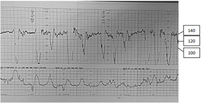
A Variabilidade normal com desacelerações precoces; manter assistência ao parto e cardiotocografia contínua.
B Ausência de variabilidade com desacelerações tardias; indicar cesárea imediata.
C Variabilidade diminuída com desacelerações variáveis; colocar em posição ginecológica e reduzir o colo uterino para parto vaginal imediato.
D Variabilidade normal com desacelerações variáveis; corrigir taquissistolia e manter cardiotocografia contínua.
Questão 803 · HIV na gestação · Obstetrícia · 4000184322Mulher, 29a, G1P0A0, 36 semanas de gestação, vem à consulta pré-natal e deseja parto normal. Exame físico e obstétrico normais para a idade gestacional, feto cefálico, com boa vitalidade. Antecedentes pessoais: HIV diagnosticado na décima semana de gestação, em uso regular de TARV potente. Carga viral realizada na 18ª e 35ª semanas de gestação: indetectável. Demais exames laboratoriais e ultrassonográ cos normais. ACORDO COM O MINISTÉRIO DA SAÚDE, ASSINALE A ALTERNATIVA CORRETA SOBRE ESTE PLANO DE PARTO:
A Via de parto obstétrica, preferencialmente vaginal; rotura artificial de membranas; evitar episiotomia; indicado AZT intravenoso durante todo o trabalho de parto.
B Via de parto obstétrica, preferencialmente vaginal; rotura espontânea de membranas; evitar episiotomia; sem necessidade de AZT intravenoso.
C Cesárea eletiva às 38 semanas; extração de feto empelicado; sem necessidade de AZT intravenoso.
D Cesárea eletiva às 38 semanas; extração de feto empelicado; indicado AZT intravenoso três horas antes do parto.
Revisar: possível letra faltando em enunciado
Questão 804 · Diabetes na gestação DMG · Obstetrícia · 4000184232Juliana, G1, está com 31 semanas e comparece na consulta de pré-natal para mostrar alguns exames de rotina. Dentre os exames, o teste oral de tolerância à glicose demonstra os seguintes valores: 95 mg/dl em jejum; 160 mg/dl uma hora após e 155 duas horas após. Em relação ao caso clínico relatado, considerando os valores de exames apresentados, julgue o item a seguir. É necessário solicitar o controle glicêmico e orientar sobre alimentação.
A Certo.
B Errado.
Questão 805 · Diabetes na gestação DMG · Obstetrícia · 4000184231Juliana, G1, está com 31 semanas e comparece na consulta de pré-natal para mostrar alguns exames de rotina. Dentre os exames, o teste oral de tolerância à glicose demonstra os seguintes valores: 95 mg/dl em jejum; 160 mg/dl uma hora após e 155 duas horas após. Em relação ao caso clínico relatado, considerando os valores de exames apresentados, julgue o item a seguir. Iniciar insulina NPH 0,3 UI/KG por dia.
A Certo.
B Errado.
Questão 806 · Diabetes na gestação DMG · Obstetrícia · 4000184230Juliana, G1, está com 31 semanas e comparece na consulta de pré-natal para mostrar alguns exames de rotina. Dentre os exames, o teste oral de tolerância à glicose demonstra os seguintes valores: 95 mg/dl em jejum; 160 mg/dl uma hora após e 155 duas horas após. Em relação ao caso clínico relatado, considerando os valores de exames apresentados, julgue o item a seguir. Apenas um valor do teste oral se encontra alterado.
A Certo.
B Errado.
Questão 807 · Diabetes na gestação DMG · Obstetrícia · 4000184229Juliana, G1, está com 31 semanas e comparece na consulta de pré-natal para mostrar alguns exames de rotina. Dentre os exames, o teste oral de tolerância à glicose demonstra os seguintes valores: 95 mg/dl em jejum; 160 mg/dl uma hora após e 155 duas horas após. Em relação ao caso clínico relatado, considerando os valores de exames apresentados, julgue o item a seguir. Indicar resolução do parto com 37 semanas devido ao diabetes gestacional.
A Certo.
B Errado.
Questão 808 · Diabetes na gestação DMG · Obstetrícia · 4000184228Juliana, G1, está com 31 semanas e comparece na consulta de pré-natal para mostrar alguns exames de rotina. Dentre os exames, o teste oral de tolerância à glicose demonstra os seguintes valores: 95 mg/dl em jejum; 160 mg/dl uma hora após e 155 duas horas após. Em relação ao caso clínico relatado, considerando os valores de exames apresentados, julgue o item a seguir. Apenas um valor alterado do teste oral já diagnostica diabetes gestacional.
A Certo.
B Errado.
Questão 809 · Diabetes na gestação DMG · Obstetrícia · 4000184227Juliana, G1, está com 31 semanas e comparece na consulta de pré-natal para mostrar alguns exames de rotina. Dentre os exames, o teste oral de tolerância à glicose demonstra os seguintes valores: 95 mg/dl em jejum; 160 mg/dl uma hora após e 155 duas horas após. Em relação ao caso clínico relatado, considerando os valores de exames apresentados, julgue o item a seguir. Controle alimentar e atividade física podem ser recomendados no caso descrito.
A Certo.
B Errado.
Questão 810 · Obstetrícia · Gestação ectópica · 4000184226Uma gestante de 9 semanas e 5 dias, datada pela última menstruação, procura atendimento por apresentar sangramento vaginal em pequena quantidade, há dois dias, associado à dor em região hipogástrica de intensidade moderada. Ao exame físico, sangue, em pequena quantidade, coletado em fundo de saco vaginal, sem sangramento ativo, dor intensa no toque vaginal, com colo impérvio. Abdome plano, ácido, dor à palpação de fossa ilíaca direita. Os sinais vitais são: PA: 100x60 mmHg, FC 80 bpm, stO₂ 98%. Tendo em vista esse caso clínico e os conhecimentos médicos correlatos, julgue o item a seguir. Solicitar beta Hcg quantitativo não ajudará a elucidar o diagnóstico.
A Certo.
B Errado.
Questão 811 · Obstetrícia · Gestação ectópica · 4000184225Uma gestante de 9 semanas e 5 dias, datada pela última menstruação, procura atendimento por apresentar sangramento vaginal em pequena quantidade, há dois dias, associado à dor em região hipogástrica de intensidade moderada. Ao exame físico, sangue, em pequena quantidade, coletado em fundo de saco vaginal, sem sangramento ativo, dor intensa no toque vaginal, com colo impérvio. Abdome plano, ácido, dor à palpação de fossa ilíaca direita. Os sinais vitais são: PA: 100x60 mmHg, FC 80 bpm, stO₂ 98%. Tendo em vista esse caso clínico e os conhecimentos médicos correlatos, julgue o item a seguir. É importante afastar a possibilidade de gravidez ectópica.
A Certo.
B Errado.
Questão 812 · Obstetrícia · Doença hemolítica perinatal DHPN · 4000184224Uma gestante de 9 semanas e 5 dias, datada pela última menstruação, procura atendimento por apresentar sangramento vaginal em pequena quantidade, há dois dias, associado à dor em região hipogástrica de intensidade moderada. Ao exame físico, sangue, em pequena quantidade, coletado em fundo de saco vaginal, sem sangramento ativo, dor intensa no toque vaginal, com colo impérvio. Abdome plano, ácido, dor à palpação de fossa ilíaca direita. Os sinais vitais são: PA: 100x60 mmHg, FC 80 bpm, stO₂ 98%. Tendo em vista esse caso clínico e os conhecimentos médicos correlatos, julgue o item a seguir. Caso a paciente tenha fator RH negativo, é necessário prescrever a imunoglobulina anti-RH.
A Certo.
B Errado.
Questão 813 · Obstetrícia · Sangramento primeira metade · 4000184223Uma gestante de 9 semanas e 5 dias, datada pela última menstruação, procura atendimento por apresentar sangramento vaginal em pequena quantidade, há dois dias, associado à dor em região hipogástrica de intensidade moderada. Ao exame físico, sangue, em pequena quantidade, coletado em fundo de saco vaginal, sem sangramento ativo, dor intensa no toque vaginal, com colo impérvio. Abdome plano, ácido, dor à palpação de fossa ilíaca direita. Os sinais vitais são: PA: 100x60 mmHg, FC 80 bpm, stO₂ 98%. Tendo em vista esse caso clínico e os conhecimentos médicos correlatos, julgue o item a seguir. O quadro se trata de uma ameaça de aborto, sendo necessário solicitar ultrassom ambulatorialmente e indicar progesterona.
A Certo.
B Errado.
Questão 814 · Obstetrícia · Sangramento primeira metade · 4000184222Uma gestante de 9 semanas e 5 dias, datada pela última menstruação, procura atendimento por apresentar sangramento vaginal em pequena quantidade, há dois dias, associado à dor em região hipogástrica de intensidade moderada. Ao exame físico, sangue, em pequena quantidade, coletado em fundo de saco vaginal, sem sangramento ativo, dor intensa no toque vaginal, com colo impérvio. Abdome plano, ácido, dor à palpação de fossa ilíaca direita. Os sinais vitais são: PA: 100x60 mmHg, FC 80 bpm, stO₂ 98%. Tendo em vista esse caso clínico e os conhecimentos médicos correlatos, julgue o item a seguir. Indicar curetagem devido ao aborto em curso.
A Certo.
B Errado.
Questão 815 · Obstetrícia · Sangramento primeira metade · 4000184221Uma gestante de 9 semanas e 5 dias, datada pela última menstruação, procura atendimento por apresentar sangramento vaginal em pequena quantidade, há dois dias, associado à dor em região hipogástrica de intensidade moderada. Ao exame físico, sangue, em pequena quantidade, coletado em fundo de saco vaginal, s e m sangramento ativo, dor intensa no toque vaginal, com colo impérvio. Abdome plano, ácido, dor à palpação de fossa ilíaca direita. Os sinais vitais são: PA: 100x60 mmHg, FC 80 bpm, stO₂ 98%. Tendo em vista esse caso clínico e os conhecimentos médicos correlatos, julgue o item a seguir. Indicar laparotomia de urgência por gravidez ectópica rota.
A Certo.
B Errado.
Questão 816 · Hemorragias pós parto HPP e rotura uterina · Obstetrícia · 4000184134Gestante primigesta de 24 anos, 32 semanas e 5 dias de gestação, chega ao Pronto-Socorro da Obstetrícia referindo dor de cabeça de forte intensidade associada a náuseas e mal-estar gástrico. Ao exame clínico: PA de 152x115 mmHg, FC 82 bpm, dinâmica uterina presente e fraca, altura uterina de 34 cm, batimentos cardíacos fetais de 150 bpm, edema +++/4 de MMII, hiperre exia patelar. Recebeu Hidralazina endovenosa e dose de ataque de Sulfato de Magnésio pelo esquema de Pritchard. Após 1 hora, refere dor abdominal de forte intensidade. Ao exame obstétrico, útero hipertônico e BCF 98 bpm. Foi encaminhada para o parto cesáreo com feto vivo, masculino, peso de 1.748 g e placenta com aspecto de descolamento de 20% de sua área total. Após histerorra a, útero mostrava-se bastante amolecido, pastoso, hipoinvoluído. Foi realizada massagem uterina, seguida de infusão de ocitocina. Qual é o próximo passo?
A Ergotamina.
B Balão de Bakri.
C Misoprostol.
D Sutura de B-Lynch.
Questão 817 · Trombose na gestação · Obstetrícia · 4000184133Paciente, 35 anos, encaminhada para aconselhamento pré-concepcional por ser portadora de prótese metálica em posição mitral, operada há 9 anos. Atualmente usa somente Varfarina sódica 5 mg ao dia. Paciente deseja engravidar e quer saber como irá ficar a anticoagulação durante a gestação. Qual é a orientação quanto ao uso de anticoagulante?
A Varfarina sódica (1º trimestre); Varfarina sódica (2º trimestre); Enoxaparina (após 36 semanas).
B Enoxaparina (1º trimestre); Enoxaparina (2º trimestre); Varfarina sódica (após 36 semanas).
C Varfarina sódica (1º trimestre); Enoxaparina (2º trimestre); Varfarina sódica (após 36 semanas).
D Enoxaparina (1º trimestre); Varfarina sódica (2º trimestre); Enoxaparina (após 36 semanas).
Questão 818 · Obstetrícia · Gestação múltipla gestação gemelar · 4000184132Gestante de 28 anos, 2G:1PN:0A, encontra-se internada na enfermaria de alto risco por gestação gemelar dicoriônica-diamniótica e perda de líquido amniótico há 4 dias. Hoje, 33 semanas e 4 dias de gestação, o primeiro gemelar está em apresentação pélvica e pesa 1.405 g, o segundo gemelar está em apresentação cefálica e pesa 1.712 g. A paciente queixa-se de dor em baixo ventre. Ao exame clínico PA 110x74 mmHg, FC 82 bpm, BCF de ambos presentes e rítmicos, dinâmica uterina de 2 contrações fracas em 10 minutos. Ao toque colo fino, pérvio para 3 cm. Qual é a conduta obstétrica?
A Parto cesáreo de urgência.
B Condução de trabalho de parto.
C Butil brometo de escopolamina e reavaliação.
D Inibição de trabalho de parto prematuro.
Questão 819 · Rastreamento de anomalias cromossômicas · Ultrassonograf ia no primeiro trimestre · Obstetrícia · 4000184131Paciente de 41 anos retorna em consulta de pré-natal trazendo o exame realizado com 12 semanas de gestação: translucência nucal: 2,5 mm e imagens apresentadas. Quando comparado à população dessa mesma idade, qual é o significado desse resultado?
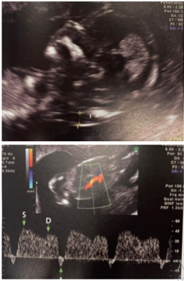
A Mantido o risco basal de cardiopatia fetal.
B Maior risco de meningomielocele.
C Maior risco de trissomia.
D Maior risco de espinha bífida.
Questão 820 · Obstetrícia · Sangramento primeira metade · 4000184130Paciente, 34 anos, chega ao Pronto-Socorro de Obstetrícia, referindo estar gestante de 7 semanas e com sangramento vaginal. Antecedente de 3 gestações com 1 parto vaginal e 1 aborto. Exame clínico: bom estado geral, descorada +/4, hidratada, pressão arterial de 120x74 mmHg, FC 72 bpm. Exame especular com sangramento moderado e presença do achado apresentado em canal vaginal. A paciente foi então encaminhada para exame de ultrassonogra a transvaginal, cuja imagem é apresentada. Endométrio: 23 mm. Qual é a conduta mais adequada?
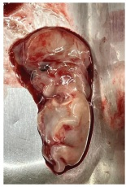
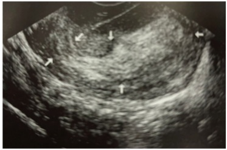
A Expectante.
B AMIU expectante.
C Curetagem puerperal.
D Histeroscopia cirúrgica.
Questão 821 · Modif icações f isiológicas da gestação · Obstetrícia · 4000184129Paciente de 24 semanas de gestação, em consulta de pré-natal refere problema na gengiva com presença de uma bola vermelha e dolorida. Relata frequente sangramento gengival ao escovar os dentes. Ao exame clínico, observa-se a seguinte imagem: Qual é a melhor conduta?
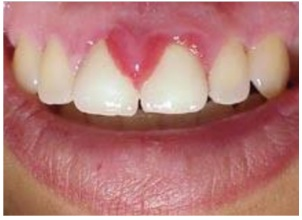
A Orientar higiene bucal.
B Solicitar biópsia.
C Encaminhar para exérese.
D Realizar cauterização.
Questão 822 · Avaliação da vitalidade f etal · Cardiotocograf ia CTB · Obstetrícia · 4000184128Gestante de 25 anos, 3G:2PN, chega ao pronto-socorro referindo dor em hipogástrio há 3 horas. Hoje com 33 semanas e 2 dias de gestação. Ao exame clínico: PA 113x76 mmHg, FC 74 bpm, presença de duas contrações uterinas por 10 minutos de fraca intensidade. Toque vaginal com colo grosso, posterior, pérvio para 3 cm, apresentação cefálica alta e móvel. Após analgesia, refere melhora das dores. Foi feita uma reavaliação do exame obstétrico que não demonstrou evolução do colo uterino, permanecendo com a mesma dilatação. Realiza a cardiotocogra a apresentada. Qual é a conclusão desta cardiotocografia?
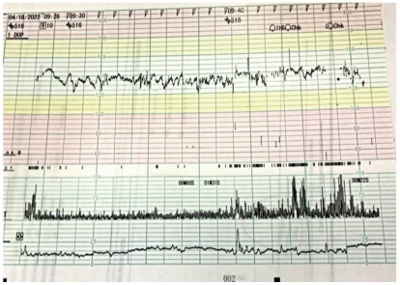
A Reatividade fetal após estímulo.
B Ausência de movimentação fetal.
C Atividade uterina excessiva.
D Bem-estar fetal.
Questão 823 · Obstetrícia · Assistência ao parto normal · 4000184127Gestante de 25 anos, 3G:2PN, chega ao pronto-socorro referindo dor em hipogástrio há 3 horas. Hoje com 33 semanas e 2 dias de gestação. Ao exame clínico: PA 113x76 mmHg, FC 74 bpm, presença de duas contrações uterinas por 10 minutos de fraca intensidade. Toque vaginal com colo grosso, posterior, pérvio para 3 cm, apresentação cefálica alta e móvel. Após analgesia, refere melhora das dores. Foi feita uma reavaliação do exame obstétrico que não demonstrou evolução do colo uterino, permanecendo com a mesma dilatação. Realiza a cardiotocogra a apresentada. Com relação ao caso apresentado acima, qual é a conduta clínica nesse momento?

A internar a paciente para inibir trabalho de parto prematuro.
B manter vigilância no Pronto-Socorro por mais 6 horas.
C liberar a paciente para casa com orientação de sinais de alarme.
D solicitar nova vitalidade em 48 horas.
Questão 824 · Estática f etal · Obstetrícia · 4000184126Gestante de 29 anos, 4G:3PN:0A, chega ao Pronto-Socorro Obstétrico trazida pelo SAMU em franco trabalho de parto. Não trouxe a carteira de pré-natal, refere data da última menstruação de 18/02/2022. Ao exame clínico, PA 123x82 mmHg, FC 84 bpm, altura uterina de 35 cm, batimento cardíaco fetal presente e rítmico. Ao toque vaginal, dilatação total, apresentação cefálica e alta, sendo percebida a variedade de posição representada na figura. Qual é a referência percebida ao toque que sinaliza dificuldade do parto vaginal?
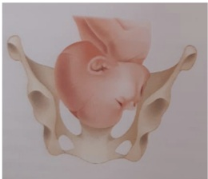
A Raiz do nariz.
B Occipício.
C Bregma.
D Mento.
Questão 825 · Toxoplasmose congênita · Rastreamento na gestação · 4000184075Recém-nascido a termo, adequado para idade gestacional, lho de mãe hígida com pré-natal adequado, ultrassom morfológico normal. Sorologia de toxoplasmose com 7 semanas de gestação: IgM (método elisa) positivo, IgG positivo, com alta avidez. Exame clínico normal ao nascimento. A conduta recomendada é:
A realizar avaliação de fundo de olho, ultrassonografia transfontanela e abdominal, hemograma, punção lombar e sorologias do recém-nascido, antes de indicar o tratamento.
B coletar sorologia para toxoplasmose do sangue do cordão e indicar o tratamento dependendo do resultado.
C iniciar tratamento com sulfadiazina, pirimetamina e ácido folínico por um ano, independentemente do resultado de exames.
D realizar cuidados de rotina, não havendo necessidade de investigação diagnóstica ou de tratamento do recém-nascido.
Questão 826 · Obstetrícia · Assistência ao parto normal · 4000184058Caso 4 Gestante, 42 anos, primigesta (fertilização assistida). Apresenta hipertensão arterial crônica há 7 anos, atualmente em uso de alfa metildopa 2,0 g ao dia, anlodipino 5,0 mg ao dia, AAS 100 mg ao dia e multivitamínico com ácido fólico e sulfato ferroso. Encontra-se em acompanhamento pré-natal de alto risco. Comparece à consulta pré-natal com 37 semanas de idade gestacional e realiza ultrassom obstétrico com os seguintes achados: feto em apresentação cefálica, peso estimado de 2.205 g, percentil 7, placenta posterior e índice de líquido amniótico de 11. A paciente está ansiosa e preocupada com o parto. Apresenta seu plano de parto com os seguintes desejos: I. parto por via vaginal; II. aguardar o tempo do bebê, com o trabalho de parto espontâneo até 42 semanas; III. presença do companheiro e de fisioterapeuta na sala de parto; IV. recusa uso de ocitocina endovenosa para acelerar as contrações; V. clampeamento do cordão umbilical pelo companheiro, em momento oportuno; VI. contato pele a pele com a criança, imediatamente após o nascimento. Todos os pontos apresentados foram discutidos com a paciente e com seu companheiro. Considerando as condições clínico-obstétricas e a segurança do binômio materno-fetal, qual é o item do plano de parto que não poderia ser contemplado na assistência obstétrica?
A Contato pele a pele imediato ao parto.
B Via de parto vaginal.
C Clampeamento do cordão.
D Aguardar trabalho de parto espontâneo.
Questão 827 · Obstetrícia · Indução de parto · 4000184057Caso 4 Gestante, 42 anos, primigesta (fertilização assistida). Apresenta hipertensão arterial crônica há 7 anos, atualmente em uso de alfa metildopa 2,0 g ao dia, anlodipino 5,0 mg ao dia, AAS 100 mg ao dia e multivitamínico com ácido fólico e sulfato ferroso. Encontra-se em acompanhamento pré-natal de alt o risco. Comparece à consulta pré-natal com 37 semanas de idade gestacional e realiza ultrassom obstétrico com os seguintes achados: feto em apresentação cefálica, peso estimado de 2.205 g, percentil 7, placenta posterior e índice de líquido amniótico de 11. A paciente está ansiosa e preocupada com o parto. Apresenta seu plano de parto com os seguintes desejos: I. parto por via vaginal; II. aguardar o tempo do bebê, com o trabalho de parto espontâneo até 42 semanas; III. presença do companheiro e de fisioterapeuta na sala de parto; IV. recusa uso de ocitocina endovenosa para acelerar as contrações; V. clampeamento do cordão umbilical pelo companheiro, em momento oportuno; VI. contato pele a pele com a criança, imediatamente após o nascimento. Todos os pontos apresentados foram discutidos com a paciente e com seu companheiro. Qual é a conduta obstétrica para resolução dessa gestação?
A Indução com ocitocina.
B Amniotomia.
C Preparo de colo com prostaglandina.
D Cesárea.
Questão 828 · Sif ilis na gestação · Obstetrícia · 4000184055Caso 5 Carla é gestante e, com 13 semanas de gestação, iniciou pré-natal com enfermeira da Equipe de Saúde da Família. Na primeira consulta, apresentou resultado positivo para sí lis em teste rápido. Nega exames ou tratamento prévios. Exame clínico sem alterações. No momento da abertura do pré-natal, o caso de sí lis foi noti cado à Vigilância e a enfermeira prescreveu penicilina benzatina, 2,4 milhões UI por semana, durante 3 semanas. A paciente refere que teve duas parcerias sexuais no último ano: Mateus, de quem está grávida e com quem não mantém mais relações sexuais há 8 semanas; e Sandro, o atual namorado, com quem iniciou relações há 3 semanas. O teste rápido de sí lis de Mateus foi positivo e o de Sandro foi negativo. Ambos sem exames ou história de tratamento prévios. Para as questões a seguir, considere as recomendações do Protocolo do Ministério da Saúde e a dose de penicilina benzatina de 2,4 milhões UI. Após a abordagem da médica, Carla passou a comparecer mais frequentemente às consultas. Com idade gestacional de 35 semanas, apresentava os seguintes resultados para o exame de VDRL: I. 13 semanas: 1:64. II. 26 semanas: 1:8. III. 32 semanas: 1:32. Qual é a conduta adequada?
A Tratar Carla com 2 doses de penicilina benzatina, com intervalo de uma semana; tratar Sandro com dose única de penicilina benzatina.
B Tratar Carla com 3 doses de penicilina benzatina, com intervalo de 1 semana; tratar Sandro com dose única de penicilina benzatina.
C Tratar Carla com 3 doses de penicilina benzatina, com intervalo de 1 semana; tratar Sandro com 3 doses de penicilina benzatina, com intervalo de 1 semana.
D Tratar Carla com dose única de penicilina benzatina; tratar Sandro com dose única de penicilina benzatina.
Revisar: possível letra faltando em enunciado
Questão 829 · Ginecologia · Obstetrícia · 4000183996Todos têm conhecimento de que a mamogra a é um exame importante para as mulheres. Qual a idade e m que se deve iniciar a fazer esse exame, qual a periodicidade e a vantagem desse método, segundo a Febrasgo e a Sociedade Brasileira de Mastologia?
A 30 anos – anual – prevenção primária de câncer de mama.
B 35 anos – anual – diagnóstico precoce do câncer de mama.
C 40 anos – anual – diagnóstico precoce do câncer de mama.
D 40 anos – dianual – prevenção do câncer de mama.
Questão 830 · Ginecologia · Obstetrícia · 4000183994Na assistência ao trabalho de parto de uma primigesta se constatou um quadro de distocia funcional, classificada como distocia de dilatação e, assim sendo, a primeira conduta a se tomar foi a amniotomia. A avaliação do bem-estar fetal mostrou que o feto estava bem. Em relação à amniotomia, é correto que
A a perfuração da membrana, na sua execução, deve ser na posição equivalente às 6 horas do mostrador de relógio.
B a perfuração da membrana, na sua execução, deve ser realizada no ápice da contração.
C a perfuração da membrana, na sua execução, deve ser na posição equivalente às 12 horas do mostrador de relógio.
D a perfuração da membrana, na sua execução, deve ser na posição equivalente ao centro do mostrador de relógio.
Questão 831 · Ginecologia · Obstetrícia · 4000183993Parturiente III, gesta com 2 partos anteriores vaginais, se encontra com colo medianizado, esvaecido, pérvio para 6 cm, BRLCl., OET +1. Frente a essa condição descrita, pode-se afirmar que
A a apresentação está insinuada, pois o ponto mais baixo do polo cefálico está abaixo das espinhas isquiáticas.
B a apresentação ainda não insinuou, pois o biparietal não chegou ao plano das espinhas isquiáticas.
C o polo está insinuado, pois se encontra em transverso, que é o diâmetro correto do estreito superior para a insinuação.
D para se avaliar a insinuação, é necessário um toque profundo para sentir se o biparietal passou o estreito superior da bacia.
Questão 832 · Aplicação do vácuo extrator · Tipos de f órcipes · Funções do f órcipe · 4000183992Para terminação do parto vaginal têm-se dois procedimentos instrumentais, isto é, o fórcipe e o vácuo- extrator. Em relação a esses procedimentos, pode-se afirmar que
A a vantagem do vácuo-extrator é que pode ser utilizado em apresentação pélvica.
B o vácuo-extrator não permite proceder rotações de variedade de posição,somente apresentações em OP.
C o fórcipe de Simpson-Braun é o indicado para abreviação de período expulsivo em variedades transversas.
D o fórcipe de Kjelland é o ideal para rotações, pois é um fórcipe reto, sem curvatura perineal.
Questão 833 · Diagnóstico · 4000183991Gestante com 88 kg, III gesta e II para, teve 1 natimorto com 4250 g e 1 RN com 3200 g. Iniciou pré-natal com 8 semanas. Nos exames de rotina, a glicemia veio com valor de 101 mg/dL. Frente a esse quadro descrito, é correto
A pedir TTGO ainda no primeiro trimestre diante do alto risco de diabetes gestacional pelo sobrepeso e história obstétrica.
B já se afirmar que se trata de uma diabética gestacional.
C pedir TTGO entre 24 e 28 semanas, seguindo o protocolo de diabetes gestacional.
D repetir a glicemia de jejum para se fazer diagnóstico, pois um valor somente não fecha critério diagnóstico na gestação.
Questão 834 · Criterios diagnósticos da préeclampsia · Classif icação · Préeclâmpsia com sinais de gravidade · 4000183990Gestante com 34 semanas de gravidez, sempre normotensa durante as consultas do pré-natal, apresenta PA de 150 x 110 mmHg. Frente a essa informação, é correto
A internar, administrar corticoide e resolver a gestação.
B investigar proteinúria e, se for acima de 300 mg em 24 horas, fecha-se diagnóstico de hipertensão gestacional.
C avaliar a presença de alterações laboratoriais ou clínicas de gravidade da doença.
D internar e prescrever alfa-metildopa 500 mg de 8 horas e reavaliar.
Questão 835 · Diagnóstico laboratorial na RPM · Diagnóstico clínico na RPM · Tocólise na RPM prétermo · 4000183989Mulher com 32 semanas de idade gestacional procura pronto-socorro com história de ter perdido água pela vagina. Frente a essa queixa é correto
A fazer exame de toque para avaliar se é perda de líquido mesmo ou é urina.
B confirmar a perda de água pela história, exame especular, avaliar a presença de dinâmica uterina e vitalidade fetal para discutir a conduta.
C que, em um exame em microscópio do conteúdo vaginal, a presença de cristalização afasta a rotura de membranas.
D se confirmada a rotura de membranas, é indicativo para administrar betamimético com a finalidade de evitar que ocorra parto prematuro.
Questão 836 · Prevenção · 4000183988Uma gestante I gesta com tipagem O Rh negativo e marido A positivo comparece no pré-natal. Baseando- se nesses exames, assinale a alternativa correta.
A Não há com o que se preocupar, pois se o marido é A e o feto for A, não irá sensibilizar pois a gestante tem anti A como anticorpo natural que impede a sensibilização.
B Ocorrendo a sensibilização, a propedêutica passa a ser o controle do Doppler da artéria uterina e da artéria umbilical.
C Na 28ª semana, se a pesquisa de anticorpos irregulares (Coombs indireto) for de até 1 para 32, deverá receber imunoglobulina.
D Se apresentar sangramento na gestação, deverá receber imunoglobulina anti-Rh.
Questão 837 · Quadro clínico · Diagnóstico · Tratamento · 4000183987Paciente, III gesta, II para, fez exame de ultrassonogra a no pré-natal que revelou o diagnóstico de placenta de inserção baixa. Os casos de placenta prévia, em geral, têm características e justi cam algumas condutas. Assinale a alternativa correta.
A O diagnóstico pode ser feito desde o período da nidação, baseando-se no local da implantação.
B O quadro clínico se deve ao sangramento, mas em 20% dos casos o sangramento é oculto, migrando para a cavidade amniótica.
C Quando a placenta é lateral ou marginal e, no trabalho de parto, o colo já está com dilatação, é possível romper a bolsa e, assim, diminuir o sangramento.
D No trabalho de parto, se apresentar algum sangramento, não se justifica fazer ultrassonografia, pois o diagnóstico do quadro iminentemente é clínico.
Questão 838 · Ginecologia · Obstetrícia · 4000183986No descolamento prematuro da placenta (DPP), é correto afirmar que
A quando associado à placenta prévia o prognóstico é pior.
B na assistência não se deve romper as membranas.
C se apresentar útero infiltrado (de Couvelaire), a histerectomia é a melhor solução.
D se o feto estiver vivo, só deve fazer parto vaginal se estiver quase nascendo.
Questão 839 · Classif icação · Conduta obstétrica · Conduta · 4000183985No Brasil, a primeira causa de morte materna se deve à hipertensão e à doença hipertensiva especí ca da gravidez (DHEG), nas suas diversas formas, é responsável pela maior parte desses casos. Assinale a alternativa correta em relação a esse quadro.
A Se a gestante chegar com quadro de cefaleia intensa, epigastralgia e escotomas com PA de 160 x 110 mmHg, a primeira conduta medicamentosa deve ser a administração de hidralazina.
B Os casos de síndrome de HELLP devem ser resolvidos na viabilidade fetal e deve-se administrar sulfato de magnésio nos casos de gestação abaixo de 32 semanas para neuroproteção fetal e também como profilaxia de convulsões.
C Se a gestação for abaixo de 34 semanas, num caso de eclâmpsia, deverá ser tratada, receber corticoide e operar após término do esquema de 48 horas.
D Se a gestante chegar com quadro de eclâmpsia e feto viável, deverá ir diretamente para o centro cirúrgico para fazer cesárea, evitando-se perda de tempo antes de interromper a gravidez.
Revisar: possível letra faltando em enunciado
Questão 840 · Obstetrícia · 4000183928Jeane, 33 anos, casada, comparece à UBS para realizar a segunda consulta de pré-natal. Refere que a data de sua última menstruação foi dia 15/08/22. Relata estar sem queixas e diz ter trazido o resultado dos exames solicitados na primeira consulta. Ao avaliar os exames, o médico verifica os seguintes resultados: ABO-RH: A+; hematócrito: 39%; toxoplasmose: IgG positivo e IgM negativo; glicemia: 93 mg/dl; EAS: sem alterações. Diante desse quadro, o médico deve
A informar que a glicemia está normal, e a paciente deve retornar para consulta com 1 mês.
B direcionar a paciente para consulta com o endocrinologista e orientar dieta com restrição de açúcares.
C encaminhar a paciente para o pré-natal de alto risco e orientar intervenções no estilo de vida.
D solicitar à paciente o teste oral de tolerância à glicose, pois pode se tratar de diabetes gestacional.
Questão 841 · Obstetrícia · 4000183870Gestante portadora do vírus C da Hepatite (anti-HCV reagente e HCV-RNA detectável), 34 semanas de idade gestacional, comparece à consulta médica para acompanhamento prénatal, sem intercorrências. Avalie, abaixo, algumas orientações repassadas à gestante sobre transmissão vertical da hepatite C. As orientações corretas, são
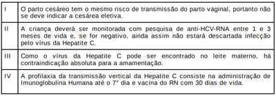
A III e IV.
B I e II.
C I e III.
D II e IV.
Questão 842 · Obstetrícia · 4000183862No ciclo gravídico-puerperal, o uso de drogas preocupa muitos pro ssionais de saúde, e sua indicação, muitas vezes, é de difícil escolha. Sobre a utilização de drogas durante a gravidez e a lactação, considere as afirmações abaixo. Das afirmações, estão corretas
A III e IV.
B I e II.
C II e III.
D I e IV.
Questão 843 · Obstetrícia · 4000183861Mulher de 25 anos, G1P0A0, foi admitida em trabalho de parto e evoluiu para um parto a fórceps para abreviação do período expulsivo. Após 20 minutos da dequitação, apresentou sangramento vaginal intenso com instabilidade hemodinâmica. Ao exame obstétrico, constatou-se o seguinte: útero amolecido com 5 cm acima da cicatriz umbilical, revisão do canal de parto e curagem sem alterações. Após receber 20 UI de ocitocina EV, uma ampola de ergotamina IM e uma ampola de ácido tranexâmico EV, persiste com sangramento. Nesse caso, a conduta mais adequada consiste em
A realizar embolização das artérias uterinas.
B realizar histerectomia.
C inserir balão de Bakri.
D administrar misoprostol via retal.
Questão 844 · Obstetrícia · 4000183860No Brasil, a mortalidade materna ainda é uma realidade frequente, e o tromboembolismo venoso é uma doença potencialmente fatal e está relacionada também com as causas de óbito materno. Sobre essa situação, avalie as afirmações abaixo. Das afirmações, estão corretas
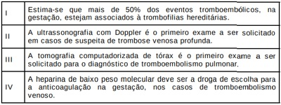
A apenas I e III.
B apenas II e IV.
C II, III e IV.
D I, II e IV.
Questão 845 · Obstetrícia · 4000183855Mulher, 25 anos, com atraso menstrual de 10 dias, comparece à emergência referindo cólicas moderadas. Nega disúria, febre ou sangramento vaginal. Na consulta, foram solicitados exames, cujos resultados são os seguintes: ß-hCG sérico de 1.100 mUI/ml e ultrassonogra a transvaginal com endométrio ecogênico medindo 17 mm; ausência de saco gestacional visível e imagem compatível com corpo lúteo em anexo direito; hemograma e exame qualitativo de urina normais. Considerando o quadro descrito, o provável diagnóstico e a conduta adequada são, respectivamente,
A abortamento incompleto; analgesia e repetir a ultrassonografia transvaginal em 48 horas.
B ameaça de abortamento; analgesia e repetir a ultrassonografia transvaginal em 7 dias.
C gravidez inicial; analgesia e repetir a dosagem de ß-hCG em 48 horas.
D gravidez ectópica; analgesia e repetir a dosagem de ß-hCG em 48 horas.
Questão 846 · Obstetrícia · 4000183854A gravidez gera uma série de mudanças siológicas no organismo da mulher. O elemento básico que provoca tais mudanças é a implantação da placenta e sua ação de sustentação da vida do feto. Durante a gestação,
A há uma tendência para a pressão arterial cair no primeiro trimestre, elevando-se fisiologicamente no final. Isso se deve ao fenômeno de vasoconstrição na gestação relacionada ao termo.
B há um aumento fisiológico do débito cardíaco e da frequência cardíaca maternas. A gestante também pode apresentar uma “dispneia fisiológica” devido ao aumento do volume corrente.
C a constipação é frequente em gestantes e está associada aos níveis hormonais de beta-hCG e tende a melhorar com a evolução da gravidez.
D a presença de sopro cardíaco pode ser um achado fisiológico na gestante, porém o mais frequente é a presença de sopro diastólico.
Questão 847 · Obstetrícia · 4000183852Dentre os anti-hipertensivos, propranolol não deverá ser empregado por gestantes que apresentem
A restrição de crescimento intrauterino.
B malformações renais.
C malformações cardíacas.
D oligodrâmnio.
Questão 848 · Obstetrícia · 4000183851O conhecimento da estática fetal é fundamental para instituir o diagnóstico, o prognóstico e o tratamento do parto distócico. A nomenclatura obstétrica permite descrever, com exatidão, as relações entre o feto e a mãe. Nos fetos em situação longitudinal, as 3 letras que compõem as siglas ODA, ODP, OEA, OEP se referem, respectivamente, à
A apresentação, variedade de posição e posição.
B posição, apresentação e variedade de posição.
C posição, variedade de posição e apresentação.
D apresentação, posição e variedade de posição.
Questão 849 · Obstetrícia · 4000183850Com o objetivo de reduzir a taxa de transmissão vertical, vários esforços são realizados durante o pré-natal, o intraparto e a amamentação. A importância do estudo do HIV (vírus da imunode ciência adquirida), na gravidez, reside no esforço de reduzir as taxas de transmissão vertical, a qual pode ocorrer via transplacentária, intraparto ou amamentação. Sabe-se que a carga viral elevada é importante fator de risco para a transmissão vertical. Assim, gestantes com HIV
A podem ter parto vaginal se a carga viral for indetectável.
B devem fazer cesárea, pois é imprescindível para proteção fetal.
C não necessitam realizar profilaxia para transmissão vertical intraparto, se a carga viral for baixa.
D não devem amamentar, sendo a realização da compressão mamária a alternativa mais indicada para diminuir a lactação.
Questão 850 · Obstetrícia · 4000183848Durante consulta pré-natal de uma gestante, observa-se a seguinte tipagem materna: A, RH negativo, DU negativo; e a seguinte paterna: O, Rh positivo. Foi realizado o teste de Coombs indireto, cujo resultado deu negativo. Nesse caso, o médico deve
A prescrever imunoglobulina anti-D para a mãe apenas após o parto, se o recém-nascido for RH positivo.
B realizar teste de Coombs no recém-nascido e, se negativo, prescrever vacina anti-RH para a mãe.
C realizar amniocentese na 28ª semana de gestação para verificar a presença de isoimunização RH.
D prescrever imunoglobulina anti-D para a mãe na 28ª semana e após o parto, se o recém-nascido for RH positivo.
Questão 851 · Obstetrícia · 4000183847A hipertensão na gestação é uma das maiores causas de morte materna e perinatal, mostrando a importância do conhecimento dessa patologia gestacional tanto para obstetras como neonatologistas. Entre as síndromes hipertensivas gestacionais, especial atenção deve ser dada à pré-eclâmpsia ou doença hipertensiva especí ca da gravidez que ocorre como forma isolada ou associada à hipertensão arterial crônica, pois estão ligadas aos piores resultados maternos e perinatais. O adequado controle pré-natal com seguimento rigoroso da gestante é a única forma de reduzir a mortalidade materna e perinatal. O uso de recurso de imagem, como a dopplervelocimetria, permite ao examinador diagnosticar insu ciência placentária e avaliar as condições circulatórias materno-fetal de forma segura e não invasiva. Em relação à hipertensão durante a gestação,
A a pré-eclampsia superposta à hipertensão crônica é caracterizada pela proteinúria após a 34ª semana em paciente com diagnóstico de hipertensão crônica.
B a pré-eclâmpsia é caracterizada como hipertensão arterial diagnosticada após a 20ª semana associada, frequentemente, à proteinúria e desaparece até 2 semanas após o parto.
C a síndrome HELLP é caracterizada pela plaquetopenia, elevação das enzimas hepáticas e diminuição da desidrogenase láctica.
D a crônica é diagnosticada antes da 20ª semana e não desaparece 12 semanas após o parto.
Revisar: possível letra faltando em enunciado
Questão 852 · Puerpério · Obstetrícia · 4000183815Sobre o puerpério é
A Nos primeiros dias após o parto temos
B Os lóquios contém eritrócitos, células epiteliais bactérias, leucócitos e decídua.
C A microscopia dos lóquios é recomendada para investigação de metrite puerperal.
D O volume total da loquiação é de 800 a 1000ml, com duração aproximada de 15 dias.
Questão 853 · Distúrbios hipertensivos na gestação DHEG · Obstetrícia · 4000183814Gestante de 25 semanas é atendida em uma Unidade de Saúde de Curitiba em sua consulta de rotina do pré-natal. Sem queixas, tem sua pressão arterial (PA) aferida com técnica correta e o médico encontra a PA em 160/110 mmHg, sendo repetida a aferição e confirmada a PA. Assinale a alternativa correta de acordo com as recomendações do Fluxo de Atendimento Clínico da APS (v.3 – 05/08/2022) da Secretaria Municipal da Saúde:
A Deve ser acionado o SAMU para transferência para a maternidade e administrar nifedipino 10 mg, via oral.
B Deve-se referenciar a gestante para o alto risco e mudar a vinculação para maternidade de alto risco.
C Iniciar inibidores da enzima conversora de angiotensina e reavaliar a PA em 30-40 minutos.
D Posicionar a gestante em decúbito ventral e administrar anti-hipertensivo EV até a PA sistólica e a PA diastólica atingirem níveis de normalidade.
Questão 854 · Hipotireoidismo na gestação · Obstetrícia · 4000183813Entre os exames laboratoriais solicitados no pré-natal temos o TSH. De acordo o Protocolo de Pré Natal e puerpério na Atenção Primária – 2022 Rede Mãe Curitibana Vale a Vida é
A Fisiologicamente há necessidade de ajustar as doses da levotiroxina na mulher com hipotireoidismo que engravida, sendo que a dose deve ser diminuída em torno de 30% para melhorar o desfecho da gestação.
B Nas pacientes com hipotireoidismo recomenda-se que a levotiroxina seja ingerida em jejum, com água, pelo menos de 30 a 60 minutos do café da manhã e com quatro horas de intervalo com os medicamentos interfiram na sua absorção.
C O hipotireoidismo é classificado na estratificação de risco como Médio Risco e o seu manejo compete ao ambulatório de especialidade de gestação de alto risco.
D Todas as pacientes com TSH abaixo da normalidade devem iniciar o uso de metimazol ou propiltiouracil, além de ser encaminhadas para pré-natal de alto risco e vinculadas a uma maternidade de alta complexidade.
Questão 855 · Inf ecção Urinária e Bacteriúria Assintomática na gestação ITU · Obstetrícia · 4000183812A infecção do trato urinário está entre as principais complicações na gestação, podendo trazer maior risco de prematuridade e risco à vida materna. Assinale a alternativa Clínico na APS (v.3 – 22/06/2022) sobre Infeção do Trato Urinário (ITU) em Gestantes:
A A primeira opção para tratamento da cistite é a cefalexina por 7 a 10 dias.
B Para quimioprofilaxia da ITU está recomendada como primeira opção a Amoxicilina 500 mg de 12 em 12 horas.
C As pacientes com pielonefrite e bom estado geral podem ser tratadas ambulatorialmente pela equipe da Unidade de Saúde.
D Na bacteriúria assintomática o antibiótico de primeira escolha é a fosfomicina trometamol.
Questão 856 · Obstetrícia · Inf ecção puerperal endometrite puerperal · 4000183810Puérpera apresenta-se com febre e dor abdominal, com útero doloroso à palpação, de consistência pastosa e hipoinvoluído. Lóquios escassos e sem odor fétido. Assinale a alternativa
A O esquema de tratamento mais usado é a associação de clindamicina com gentamicina, podendo associar ampicilina.
B A cultura de material do canal cervical é fundamental para a identificação do agente bacteriano e início do tratamento.
C A hemocultura é fundamental para a identificação do germe e da gravidade, sendo realizada rotineiramente em todas as suspeitas de infecção puerperal.
D A presença de leucocitose nessa paciente é indicativa de infecção puerperal, sem relação com o puerpério fisiológico.
Questão 857 · Cardiotocograf ia CTB · Obstetrícia · 4000183809Em alguns momentos da assistência à gestante há necessidade de utilização de meios de avaliação da vitalidade fetal. Sobre a cardiotocografia é
A As desacelerações precoces raramente ocorrem com membranas íntegras.
B Desacelerações tardias possuem decalagem menor que 15 cm.
C A variabilidade da frequência cardíaca fetal normal é >25 bpm.
D Acelerações transitórias antes de 32 semanas têm pico maior que 15 bpm e duração de no máximo 10 segundos.
Questão 858 · Ultrassonograf ia no primeiro trimestre · Obstetrícia · Diagnóstico e datação da gestação · 4000183808Gestante vem para consulta de pré-natal. Não sabe a data da última menstruação e traz a sua primeira ultrassonogra a, que mostrava saco gestacional sem visualização do embrião, a sua segunda ultrassonogra a que mostrava a medida do embrião de 8 semanas e a terceira ultrassonogra a que mostrava gestação de 14 semanas e morfologia normal. Assinale a alternativa
A A primeira ultrassonografia é a mais adequada para datação para essa paciente, pela medida do diâmetro médio do saco gestacional.
B A terceira ultrassonografia tem margem de erro de 2-3 dias para datação da gestação, sendo a mais adequada para tal.
C Mesmo não sendo o primeiro exame, a ultrassonografia que mostra o embrião de 8 semanas é mais precisa para datação da gestação.
D As três ultrassonografias possuem a mesma precisão para datação da gestação.
Questão 859 · Diabetes na gestação DMG · Obstetrícia · 4000183807O diabetes mellitus gestacional é a forma mais prevalente de hiperglicemia na gestação e por isso é fundamental ao pré-natalista seu conhecimento. Assinale a alternativa da Sociedade Brasileira de Diabetes (2022):
A A metformina é a medicação de primeira escolha para o controle do diabetes gestacional, não havendo contraindicação devido a sua segurança.
B A glibenclamida é a segunda opção dentre as medicações usadas para controle do diabetes gestacional, com a vantagem de ser via oral.
C Todas as pacientes com diabetes gestacional têm indicação de uso de medicamento para melhorar o desfecho materno e fetal, sendo indicado o uso de insulina.
D A meta do controle glicêmico com glicemia capilar é de glicemia em jejum entre >65 e < 95 mg/dL, 1 hora após refeição <140 mg/dL e 2horas pós refeição <120 mg/dL.
Questão 860 · Antecedentes pessoais · Uso de medicações · Uso de drogas · 4000183806Existem diversas causas de malformações congênitas. Sobre elas assinale a
A Os medicamentos, junto com outros agentes químicos, radiação e hipertermia são responsáveis por menos de 1% das malformações congênitas.
B Segundo a classificação das drogas na gestação, a categoria D do FDA, indica fármacos com risco não descartado, englobando cerca de 7% das mediações.
C O álcool etílico não traz riscos fetais, por isso a gestante está autorizada a ingerir doses de vinho ou cerveja.
D Dentre os anticonvulsivantes, o ácido valpróico é a medicação de escolha e é considerada categoria D na gestação.
Questão 861 · Malf ormações f etais · Desenvolvimento f etal · Desenvolvimento embriológico · 4000183776Com relação à Vigilância das Anomalias Congênitas ao Nascimento, avalie as a rmativas abaixo e assinale a alternativa I) As anomalias congênitas são alterações estruturais ou funcionais que ocorrem durante a vida intrauterina e que podem ser detectadas antes, durante ou após o nascimento. Trata-se de um grupo complexo de alterações que podem afetar diversos órgãos e sistemas do corpo humano. II) Entre as anomalias funcionais, as que representam consequências médicas, cirúrgicas, cosméticas ou de estilo de vida significativa são classificadas como anomalias congênitas maiores, em contraponto às menores, que geralmente não exigem intervenção clínica. III) O acompanhamento pré-natal possibilita o diagnóstico e a descoberta de determinadas anomalias congênitas ainda durante a gravidez. Existem diversos métodos de rastreamento e de diagnóstico pré-natal para a identi cação de anomalias morfológicas, bem como de alterações genéticas e cromossômicas, além de doenças infecciosas. IV) As anomalias congênitas são consideradas estruturais, ou morfológicas, quando estão relacionadas a problemas em estruturas anatômicas, como, por exemplo, fenda labial ou palatina, defeitos cardíacos, defeitos de membros, defeitos de tubo neural etc. Já as anomalias funcionais estão relacionadas às alterações na função de determinada parte do corpo e levam a de ciências no desenvolvimento, que podem incluir distúrbios metabólicos ou de comprometimento intelectual, comportamental, sensorial, degenerativo ou imunológico, por exemplo.
A Todas as afirmativas estão corretas.
B Todas as afirmativas estão incorretas.
C Apenas 1 afirmativa está correta.
D Apenas 1 afirmativa está incorreta.
Questão 862 · Diabetes na gestação DMG · Obstetrícia · 4000183724Quanto à hiperglicemia na gestação, assinale a alternativa correta.
A A gestante com glicemia capilar em jejum maior ou igual a 126 mg/dL pode ser diagnosticada com diabetes
B A hemoglobina glicada (HbA1C) pode ser usada para o diagnóstico da diabetes gestacional e, por esse motivo, consta entre os protocolos de rastreamento de várias sociedades.
C Tumor Trofobrástico Gestacional (TTG) 75 g poderá ser realizado imediatamente em gestantes com mais de 28 semanas, caso não tenha sido realizado na idade gestacional indicada pela Organização Mundial da Saúde, pela Sociedade Brasileira de Diabetes ou pela Federação Brasileira das Associações de Ginecologia e Obstetrícia.
D A diabetes
E Ao se tratar da diabetes
Questão 863 · Trabalho de parto prematuro TPP · Obstetrícia · 4000183723A respeito do trabalho de parto prematuro (TPP), assinale a alternativa correta.
A Para o diagnóstico de TPP é suficiente a identificação de contrações uterinas regulares, com intervalo de 5 minutos ou menos entre cada uma, depois de 22 semanas de gestação e antes de 37 semanas de gestação.
B Gestantes assintomáticas e com medida do colo uterino realizada com 24 semanas de gestação menor ou igual a 25 mm possuem maior risco de parto prematuro. Essas pacientes se beneficiam da progesterona micronizada na dose de 200 mg via vaginal, à noite.
C Ainda são controversos os benefícios do uso de sulfato de magnésio como medida de neuroproteção fetal para mulheres em trabalho de parto prematuro com idade gestacional entre 24 e 31 semanas e 6 dias de gestação.
D O uso de corticoide é indicado para pacientes entre 24 e 34 semanas de gestação, com alta probabilidade de parto prematuro dentro de 7 dias, e a droga de primeira escolha é a dexametasona 6 mg intramuscular de 12 em 12 horas por 48 horas (4 doses).
E Os antibióticos devem ser utilizados em gestantes em trabalho de parto prematuro com risco iminente de parto apenas nos casos em que houver diagnóstico de corioamnionite.
Questão 864 · Hemorragias pós parto HPP e rotura uterina · Obstetrícia · 4000183722Com relação às medidas de prevenção e ao tratamento da hemorragia pós-parto (HPP), assinale a alternativa correta.
A O uso de ocitocina endovenosa como medida terapêutica na HPP apresenta início de ação em 5 minutos e meia-vida de 15 a 60 minutos.
B O uso de ocitocina profilática após todos os partos é a medida mais eficaz na prevenção da HPP, devendo ser inserida como procedimento de rotina. O esquema mais utilizado após partos vaginais é a injeção de 20 Ui de ocitocina, em bolus, por via endovenosa.
C O clampeamento oportuno do cordão umbilical, associado à sua tração controlada, bem como a vigilância/massagem uterina após dequitação placentária podem substituir o uso universal de ocitocina profilática, pois apresentam taxas de eficácia semelhantes.
D A utilização de maleato de metilergometrina como medicação uterotônica no tratamento da HPP é contraindicada principalmente para pacientes hipertensas.
E O uso de ácido tranexâmico no tratamento da HPP fica restrito aos casos de sangramentos decorrentes de causas específicas, como coagulopatias e uso de medicações anticoagulantes, uma vez que o ácido tranexâmico é uma medicação antifibrinolítica.
Questão 865 · Avaliação da vitalidade f etal · Obstetrícia · 4000183718A avaliação da vitalidade fetal permite identi car situações de risco para eventos adversos ou para óbito do feto, e também atua, de forma preventiva, a m de evitar o insucesso da gestação. Com relação a esse assunto, assinale a alternativa correta.
A O perfil biofísico fetal é um método de avaliação ultrassonográfico do bem-estar fetal em tempo real, por meio do qual são observados quatro parâmetros: a cardiotocografia, na ausência de contrações; os movimentos respiratórios fetais; os movimentos fetais; e o tônus fetal.
B A presença de padrão sinusoidal (oscilações regulares em formato de sino, suaves, com variabilidade entre 5 bpm e 15 bpm, em frequência de 2 a 5 por minuto e duração de 30 minutos) na cardiotocografia anteparto indica bem-estar fetal preservado, classificando o exame como categoria 1.
C A presença de desacelerações precoces (quando o nadir da desaceleração coincide com o pico da contração) na cardiotocografia anteparto indica, de forma inequívoca, a presença de hipóxia e acidose fetal, sendo indicação de resolução imediata do parto.
D Dopplerfluxometria é um método que efetua a mensuração das velocidades de fluxo em vasos da circulação materna e fetal e promove informações a respeito do fluxo uteroplacentário e da resposta circulatória fetal a eventos fisiológicos e patológicos, propiciando uma análise das alterações hemodinâmicas que caracterizam a condição fetal.
E Na dopplerfluxometria utilizada como método de avaliação fetal, o índice de pulsatividade analisa as artérias uterinas, a artéria umbilical e a artéria cerebral média.
Questão 866 · Ultrassom em obstetrícia USG · Obstetrícia · 4000183716No que se refere à interrupção terapêutica da gestação de feto anencéfalo, assinale a alternativa correta.
A Um de seus fundamentos jurídicos é o entendimento de que o anencéfalo é uma vida em potencial, portanto, com proteção jurídica, conforme a ADPF 54, votada pelo Supremo Tribunal Federal (STF) em 2012.
B O mencionado procedimento depende de autorização judicial.
C Em conformidade com a Resolução do Conselho Federal de Medicina, para seu diagnóstico, é necessária uma ecografia gestacional com, no mínimo, duas fotografias do feto, uma com a face em posição sagital e a outra com a visualização do polo encefálico no corte transversal evidenciando ausência de calota craniana e de parênquima cerebral.
D A referida interrupção terapêutica independe da idade gestacional.
E De acordo com a Resolução do Conselho Federal de Medicina, para seu diagnóstico, é suficiente uma ecografia gestacional assinada por apenas um médico.
Questão 867 · Obstetrícia · Gestação múltipla gestação gemelar · 4000183619Primigesta, gemeligesta dizigótica, 36 semanas, em trabalho de parto com 6 cm de dilatação. O primeiro feto está em AEA e o segundo em OEA. Ambos têm peso estimado ao redor de 2.600 g. Indica-se
A aguardar o parto vaginal.
B extração podálica do segundo gemelar após o nascimento do primeiro.
C amniotomia e versão interna do primeiro gemelar.
D extração podálica do primeiro gemelar.
E cesárea.
Questão 868 · Obstetrícia · Diagnóstico e datação da gestação · 4000183618Pode haver falso-positivo em teste de gravidez nos casos de:
A Hipogonadismo hipogonadotrópico, uso de contraceptivos orais.
B Redução sérica de níveis de LH, lúpus eritematoso sistêmico.
C Hipotiroidismo, uso de anticonvulsivantes.
D Gravidez ectópica abdominal, uso de benzodiazepínicos.
E Tumores ovarianos produtores de hCG, gestação acima de 25 semanas.
Questão 869 · Obstetrícia · Assistência ao parto normal · 4000183617Primigesta, 41 semanas de gestação, pré-natal sem intercorrências, chega ao pronto-socorro com queixa de dor e saída de sangue pela vagina. Ao exame, apresenta PA: 130 × 70 mmHg, altura uterina de 34 cm, BCF: 144 bpm, 4 contrações em 10 minutos. Ao exame vaginal, observa-se apresentação cefálica, bolsa íntegra, colo esvaecido 60%, dilatação cervical de 5 cm, presença de grande quantidade de muco sanguinolento. Nesse momento, deve-se internar a paciente, monitorar vitalidade fetal e
A realizar amniotomia para observar se há hemoâmnio.
B orientar a paciente que há alto risco de indicação de cesárea pelo sangramento vaginal.
C utilizar métodos de maturação do colo, como misoprostol, por exemplo.
D iniciar ocitocina para indução do parto.
E iniciar o preenchimento do partograma para aguardar a evolução do parto.
Questão 870 · Estática f etal · Bacia obstétrica e pelvimetria · Obstetrícia · 4000183616Secundigesta em trabalho de parto, com 7 cm de dilatação e bolsa rota. Na palpação abdominal, o obstetra encontra o polo cefálico na escavação, apresentação etida e conclui que se trata de ODT. Considerando a pelve como um relógio, no toque vaginal espera-se observar o
A 9h.
B 12h.
C 8h.
D 3h.
E 6h.
Questão 871 · Distúrbios hipertensivos na gestação DHEG · Obstetrícia · 4000183614Primigesta de 32 anos de idade, comparece à primeira consulta de pré-natal com 15 semanas. Nega comorbidades. Referia apenas cefaleia e que se sentia bastante edemaciada desde o início da gravidez. Segundo sua informação, já havia ganhado 6 kg desde que descobriu a gravidez, há 2 meses. Durante o exame físico, observa-se PA: 150 × 100 mmHg, exame obstétrico compatível com 15 semanas, feto com batimentos cardíacos presentes. Edema +/4+ de membros inferiores. O médico realiza pesquisa de proteinúria de 24 horas, com resultado de 200 mg. É correto afirmar que se trata de
A pré-eclâmpsia leve.
B pré-eclâmpsia sobreposta.
C feocromocitoma.
D hipertensão arterial crônica.
E hipertensão gestacional.
Questão 872 · Obstetrícia · Placenta prévia PP · 4000183608São os principais fatores de risco para placenta prévia:
A Cesárea prévia, trabalho de parto prematuro, gemelaridade.
B Miomectomia, macrossomia, diabetes gestacional.
C Intervalo interpartal curto, amniorrexe prematura, tabagismo.
D Multiparidade, gemelaridade, oligoâmnio.
E Cesárea prévia, miomectomia, tabagismo.
Questão 873 · Obstetrícia · Mecanismo de parto · 4000183605Em relação ao mecanismo de parto é correto afirmar que:
A Na apresentação cefálica fletida o ponto de referência é o bregma, com o símbolo B.
B Na apresentação pélvica a linha de orientação é o dorso e o ponto de referência é o quadril.
C A descida fetal é mais acelerada na fase de desaceleração da dilatação cervical.
D A fase latente do parto é representada pela dilatação cervical de 1,2 cm/hora a 1,5 cm/hora.
E A posição fetal representa a parte fetal que ocupa o estreito superior da pelve materna.
Questão 874 · Inf ecção Urinária e Bacteriúria Assintomática na gestação ITU · Obstetrícia · 4000183603Primigesta, 29 anos, apresentou pielonefrite no primeiro trimestre ocasionada por adequada no acompanhamento pré-natal é
A realização de ressonância magnética das vias urinárias.
B antibioticoprofilaxia diária ao longo do pré-natal.
C prescrição de composto a base de
D ingesta adequada de líquido e micção a cada 6 horas.
E realização de urina I e urocultura em cada trimestre.
Questão 875 · Obstetrícia · Terceiro periodo dequitação · 4000183602No terceiro período de parto,
A a conduta ativa envolve o uso rotineiro de substâncias uterotônicas.
B deve-se aguardar 5 minutos após o nascimento para a secção do cordão umbilical.
C deve-se administrar ocitocina somente após pinçar e seccionar o cordão.
D a conduta ativa está mais associada a hemorragia do que a conduta fisiológica.
E 1 hora após o nascimento é considerado terceiro período prolongado.
Questão 876 · Obstetrícia · Hepatites na gestação · 4000183601Primigesta, 38 anos de idade, encontra-se no primeiro trimestre de gestação e cou assustada com os exames laboratoriais: Anti HVA positivo, Anti-HbS positivo, HBsAg negativo, Anti-HbcIgM negativo, anti- HBc total positivo. O diagnóstico, nesse caso, é
A infecção por hepatite B pregressa e resolvida.
B infecção aguda por hepatite A.
C infecção aguda por hepatite B.
D infecção crônica por hepatite B.
E imunidades adquiridas por vacinação.
Questão 877 · Ultrassonograf ia no primeiro trimestre · Obstetrícia · 4000183600Considere a imagem abaixo. Nessa imagem ultrassonográfica do final do primeiro trimestre de gestação observa-se feto com
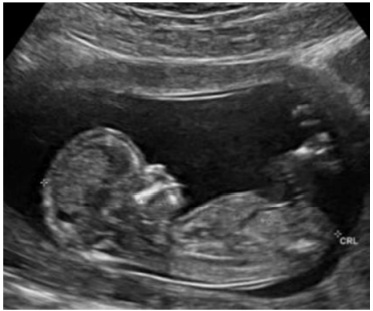
A ausência do osso nasal e pé torto congênito.
B osso nasal adequado e anencefalia.
C ausência de osso nasal e aumento da transluscência nucal.
D osso nasal e transluscência nucal adequados.
E higroma cístico e edema da calota craniana.
Questão 878 · Obstetrícia · COVID na gestação · 4000183597Tercigesta, 2 partos normais anteriores, encontra-se na 33ª semana de gestação, quando iniciou sintomas gripais (tosse, dor de garganta e coriza) acompanhada de febre há 1 dia. Está realizando pré-natal adequadamente e tem diagnóstico de diabetes gestacional controlada com dieta e exercício. Procurou o serviço de saúde onde se diagnosticou Covid-19. Nesse caso, é correto afirmar:
A A diabetes é fator de risco para complicações devendo-se ultimar o parto até a 34ª semana.
B Existe maior risco de polidrâmnio nas gestantes internadas por Covid-19.
C O quadro é considerado leve pois não há queixas de dispneia e a orientação é tratamento domiciliar.
D Para evitar sofrimento fetal é fundamental garantir a saturação de O₂ acima de 92%.
E Se a frequência respiratória for maior que 24 rpm será considerado síndrome respiratória aguda grave.
Questão 879 · Sif ilis na gestação · Obstetrícia · 4000183594Gestante de 26 anos, idade gestacional 14 semanas, assintomática, realiza teste rápido para sí lis em sua primeira consulta de pré-natal e o teste é positivo. Entre as opções abaixo, a melhor conduta para este caso é tratamento com Penicilina benzatina
A 2.400.000 UI em aplicação com intervalo de 1 semana, por 3 semanas (7.200.000 UI no total). Convocação dos parceiros sexuais para testagem e tratamento igual, caso o teste seja positivo.
B Coleta de teste treponêmico da gestante e tratamento imediato com Penicilina benzatina 2.400.000 UI em aplicação com intervalo de 1 semana, por 2 semanas (4.800.000 UI no total). Convocação dos parceiros sexuais para testagem e tratamento igual, caso o teste seja positivo.
C 2.400.000 UI em aplicação com intervalo de 1 semana, por 3 semanas (7.200.000 UI no total). Convocação dos parceiros sexuais para testagem e tratamento.
D 2.400.000 UI em aplicação com intervalo de 1 semana, por 2 semanas (4.800.000 UI no total). Convocação dos parceiros sexuais para testagem e tratamento.
E 1.200.000 UI em aplicação com intervalo de 1 semana, por 3 semanas (3.600.000 UI no total) Convocação dos parceiros sexuais para testagem e tratamento.
Questão 880 · Predição e prevenção · PréEclâmpsia · 4000183574Com relação à pré-eclâmpsia, assinale a alternativa CORRETA entre as abaixo relacionadas:
A São fatores de risco para pré-eclâmpsia (PE) nuliparidade, história familiar de PE, distopias placentárias e magreza (Índice de Massa Corpórea < 20);
B A Dopplervelocimetria das artérias uterinas isoladamente, avaliando a intensidade da invasão trofoblástica no 1º trimestre é o melhor método para predição da ocorrência de PE;
C O uso de ácido acetilsalicílico (60 a 150 mg/ dia) e cálcio (1,5 a 2 g/dia) são intervenções benéficas em grupos de risco para evitar o desenvolvimento da PE;
D O ganho de peso > 1 kg/semana, edema em mãos e face ou outros sintomas, como cefaleia persistente, juntamente com proteinúria são suficientes para o diagnóstico de PE.
Questão 881 · Def inição · Fatores de risco · 4000183573Parturiente, multípara (IIIG IIP 0A), 38 semanas, feto único, vivo e cefálico, com antecedente obstétrico de 2 cesáreas e de não ter frequentado assistência pré-natal adequada, se apresenta no plantão com dinâmica uterina inicial e, enquanto aguarda a definição do qual seria a conduta a ser tomada, apresenta bradicardia fetal sustentada (abaixo de 110 bpm), precedida de desacelerações tardias. Há distensão do segmento uterino inferior, com palpação do ligamento redondo retesado, desviado para a face ventral do órgão. A paciente estava ansiosa e agitada. Então, houve piora da dor e ao toque vaginal, não se percebe mais a apresentação fetal. A paciente se queixou de dor escapular e passou a apresentar hipotensão. Com relação a essa situação clínica, assinale a alternativa
A Aparentemente trata-se de um quadro de Descolamento Prematuro de Placenta, com os sinais clássicos da separação da placenta do leito placentário. A conduta a ser tomada será indução com misoprostol;
B Trata-se de um quadro clássico de Placenta Prévia Centro-Total, com os achados palpatórios típicos da inserção bai[a da placenta obstruindo a descida da apresentação. As cesáreas anteriores são fator risco para este quadro;
C Provavelmente estamos frente a um quadro clássico de prenhez ectópica rota e a dor referida na escápula é o denominado Sinal de Laffont que é provocado pela presença de sangue livre na cavidade abdominal;
D A evolução do processo sugere que seja uma ruptura uterina, emergência obstétrica pouco usual, mais comum em portadoras de cicatrizes uterinas. A conduta será a imediata laparotomia para retirada do concepto.
Questão 882 · Assistência prénatal · 4000183572Com relação ao impacto de condições clínicas na gravidez, todas as alternativas a seguir estão corretas, EXCETO:
A O hemograma completo serve para o rastreio da anemia e, se a hemoglobina for inferior a 11 g/dL e > 8 mg/dL, deve-se proceder ao e[ame parasitológico de fezes prescrevendo suplementação de ferro com sulfato ferroso terapêutico (120 a 240 mg de ferro elementar/dia);
B O rastreio universal do diabetes gestacional deve ser realizado com o e[ame de glicemia de jejum na primeira consulta de pré-natal e o teste oral de tolerância à glicose, com 75 gramas de de[trosol, entre 24 e 28 semanas;
C A avaliação tireoidiana na 1ª consulta de pré-natal é realizada por meio da palpação da glândula, sendo o rastreamento recomendado apenas em grupos cujo risco de tireopatia é aumentado;
D A detecção de teste não-treponêmico para sífilis reagente e simultaneamente do teste treponêmico reagente, permite inferir que pode tratar-se de um falso reagente, sobretudo nos casos de baixas titulações.
Questão 883 · Complicações · Classif icação · Classif icação · 4000183571Parturiente de termo, com quadro de placenta prévia centro-total, é submetida a cesárea. Durante o intraoperatório, o sangramento se torna de difícil controle. Assinale a alternativa relacionadas para situações como a descrita:
A Somente se caracterizará como hemorragia pós-parto se o volume de perda de sangue for superior a 1.000 ml, pois até então é considerado habitual para as perdas durante um parto por cesárea;
B O índice de choque (IC), que se obtém com a divisão da frequência cardíaca pela pressão arterial sistólica, permite identificar os casos de hemorragia pós-parto graves, se o IC > 1;
C A e[ecução da técnica de B-Lynch antes da histerotomia e da e[tração fetal é e[celente como método para evitar que ocorra o quadro de hemorragia pós-parto;
D Se houver a constatação de associação de acretismo placentário, a situação deverá ser rapidamente resolvida com a extração manual da placenta.
Questão 884 · Imunizaçao na gestação · 4000183570Entre as vacinas abaixo relacionadas, qual
A Tríplice viral (SCR);
B Vacina contra hepatite A;
C Vacina DTPA (Difteria, Tétano e Coqueluche Acelular);
D Vacina contra a COVID-19.
Questão 885 · Sangramento primeira metade · 4000183569São situações clínicas que se associam a quadros hemorrágicos, diagnosticadas no primeiro trimestre da gravidez todas as alternativas descritas a seguir, EXCETO:
A Doença trofoblástica;
B Abortamento;
C Gravidez ectópica;
D Placenta prévia.
Questão 886 · Monitorização pós tratamento · Tratamento da síf ilis na gestação · Diagnóstico da síf ilis · 4000183567Gestante inicia seu pré-natal com 18 semanas e, na primeira consulta da UBS, realiza os testes rápidos para HIV e para sífilis. Este último mostrou resultado positivo. Como proceder?
A Tratar o casal imediatamente e solicitar e[ames confirmatórios mensalmente;
B Aguardar o teste treponêmico para confirmar diagnóstico e depois tratar;
C Se a história confirmar ser sífilis tardia, tratar a paciente com eritromicina;
D Se o teste do parceiro for negativo, não há necessidade de o mesmo ser tratado.
Questão 887 · Obstetrícia · 4000183488Gestante G1P0A0 (8 semanas) com histórico vacinal desconhecido, chega à Unidade Básica de Saúde para acompanhamento. De acordo com o calendário nacional de vacinação da gestante, assinale a alternativa INCORRETA para o caso.
A Deve receber três doses da vacina hepatite B com intervalos entre doses recomendados (0, 1 e 6 meses), independentemente da idade gestacional.
B Caso perdesse a oportunidade de se vacinar durante o período gestacional, administrar uma dose da vacina dupla adulto (dT) no puerpério (até 45 dias).
C A 3ª dose da vacina hepatite B pode ser administrada com intervalo de 4 meses após a 1ª dose.
D Se fosse multípara, deveria ser aplicada uma dose reforço da vacina (dTpa) a cada gestação a partir da 20ª semana.
E Deve receber duas doses da vacina dupla adulto (dT) respeitando o intervalo entre as doses, e uma dose da (dTpa) a partir da 20ª semana de gestação.
Questão 888 · Obstetrícia · 4000183450Mulher de 25 anos chega à emergência obstétrica, com sangramento genital aumentado, sem cólica, há três dias. Traz consigo dosagem sérica da fração beta do HCG com valor de 1500UI. Pela data da sua menstruação, acha que está com 11 semanas de gravidez. O exame físico confirmou sangramento uterino com fundo uterino ultrapassando a sín se púbica em quatro centímetros. O exame ultrassonográ co revela massa intrauterina ecogênica completa contendo vários espaços císticos pequenos. Tecidos fetais e saco amniótico ausentes. De acordo com o quadro acima, é CORRETO afirmar que
A o provável diagnóstico é de mola completa com cariótipo 45XO.
B a maior possibilidade é de mola parcial com proliferação focal.
C se trata de uma mola parcial devido ao edema trofoblástico difuso.
D o diagnóstico é de mola completa onde ocorre hidropsia de vilosidades.
E devido ao HCG acima de 1000UI, trata-se de tumor de implantação.
Revisar: possível letra faltando em enunciado
Questão 889 · Obstetrícia · Assistência ao parto normal · 4000183449Assinale a alternativa INCORRETA referente às recomendações da Organização Mundial da Saúde (OMS) dos cuidados intrapartos para uma experiência positiva da gestante.
A A fase ativa do trabalho de parto é caracterizada por contrações uterinas dolorosas regulares, um grau substancial de apagamento cervical e dilatação cervical de 5 cm até a dilatação completa.
B A fase ativa do trabalho de parto usualmente não se estende, além de 12 horas no primeiro parto, e de 10 horas nos partos subsequentes.
C A taxa de dilatação cervical média de 1 cm/hora durante o primeiro estágio ativo, no primeiro parto (conforme linha de alerta do partograma), é bom preditor para identificar mulheres em risco de desfechos adversos no parto.
D A episiotomia seletiva é recomendada.
E A duração da segunda fase do trabalho de parto é variável, porém geralmente, no primeiro parto, o nascimento ocorre em 3 horas, enquanto nos partos subsequentes, o nascimento ocorre em 2 horas.
Questão 890 · Distócia de ombro · Obstetrícia · 4000183448Paciente 22 anos de idade, primigesta e na 41ª semana de gravidez. Veio para emergência obstétrica com queixa de dor em baixo ventre há 12h tipo cólica. Ao exame, dinâmica uterina de 4 contrações/10 minutos/55 segundos. Batimentos cardiofetais de 156 bpm. Altura de fundo uterino de 34cm. Toque vaginal com 6 cm de dilatação, bolsa das íntegras, cefálico e 80% de esvaecimento cervical. O trabalho de parto evoluiu de forma lenta e, durante o período expulsivo, ocorreu o sinal da tartaruga. Assinale a alternativa que NÃO é fator de risco para o diagnóstico do período expulsivo.
A Obesidade
B Termo tardio
C Macrossomia
D Parto vaginal assistido
E Lúpus eritematoso sistêmico
Questão 891 · Sif ilis na gestação · Obstetrícia · 4000183447Paciente 18 anos de idade, na 11ª semana de gestação, veio para sua 1ª consulta de pré-natal. Na anamnese, referiu uma ferida ulcerada única, indolor e sem ardor ou secreções purulentas em lábio vaginal direito há aproximadamente 8 meses, a qual regrediu espontaneamente sem tratamento. Nessa consulta trouxe exames préconcepcionais, que chamaram a atenção pelo VDRL de 1/16. Qual a conduta adequada que o pré-natalista deve fazer?
A Penicilina benzatina – 2.400.000 UI – 2 doses.
B Penicilina benzatina – 2.400.000 UI – 1 dose.
C Penicilina benzatina – 2.400.000 UI – 3 doses.
D Penicilina benzatina – 2.400.000 UI – 4 doses.
E Não administrar penicilina pelo risco de teratogenicidade. Adiar o tratamento para o 2º trimestre.
Questão 892 · Trabalho de parto prematuro TPP · Obstetrícia · 4000183446Em qual das alternativas abaixo está indicado iniciar medida medicamentosas para prevenção do trabalho de parto prematuro e a medicação recomendada?
A Parto prematuro anterior espontâneo - prostaglandina.
B Dosagem de fibronectina fetal positiva após a 22ª semana – prostaciclina.
C Ultrassonografia sugerindo colo de 3,0 cm de comprimento – prostaglandina.
D Ultrassonografia sugerindo colo de 2,0 cm de comprimento – progesterona.
E Toque vaginal sugerindo colo de 2,5 cm de comprimento – progesterona.
Questão 893 · Distúrbios hipertensivos na gestação DHEG · Obstetrícia · 4000183445Em qual das alternativas abaixo NÃO se encontra indicado iniciar medidas medicamentosas para prevenção da pré-eclâmpsia/eclâmpsia?
A Diabetes Mellitus clínico.
B Diabetes Mellitus gestacional.
C Pré-eclâmpsia em gestação anterior.
D Gestante de 41 anos e nulípara.
E Índice de massa corpórea de 31 kg/m²
Questão 894 · Diabetes na gestação DMG · Obstetrícia · 4000183444Gestante tercigesta na 12ª semana de gravidez, procurou o pré-natal trazendo resultado dos exames de rotina. No momento, refere cefaleia, tonturas, náuseas e vômitos. A glicemia de jejum foi de 92mg/dL. Assinale a alternativa CORRETA quanto à interpretação e conduta mais adequada.
A Exame normal. Prosseguir a investigação, realizando o teste de tolerância oral à glicose a 75g entre 24 e 28 semanas.
B Exame alterado. Repetir a glicemia de jejum para confirmar o resultado. São necessários dois valores alterados, para iniciar o tratamento.
C Exame alterado. Iniciar o tratamento e posteriormente, confirmar realizando o teste de tolerância oral à glicose a 75g entre 24 e 28 semanas.
D Exame normal. Repetir o exame, solicitar hemoglobina glicada e fazer o teste de tolerância oral à glicose a 75g entre 24 e 28 semanas.
E Exame alterado. Iniciar o tratamento.
Questão 895 · Abortamento · Obstetrícia · 4000183443Paciente primípara na 8ª semana de gestação procurou a emergência obstétrica com queixa de sangramento e dor em baixo ventre tipo cólica. Ao exame, no toque vaginal, percebeu-se o colo uterino pérvio e presença de sangramento. Baseando-se em evidências atuais, qual das opções terapêuticas abaixo é a menos recomendada?
A Curetagem uterina
B Aspiração manual intrauterina
C Misoprostol
D Mifepristone
E Expectante
Questão 896 · Distúrbios hipertensivos na gestação DHEG · Obstetrícia · 4000183442Paciente primigesta na 28ª semana de gravidez. Procurou a emergência com queixa de formigamento em mãos e inchaço em membros inferiores. Negava outras queixas. Exames complementares normais. Ao exame, pressão arterial de 150 x 100 mmHg (confirmada), dinâmica uterina ausente, edema 3+/4+ e batimentos cardíacos fetais de 146 bpm. Toque vaginal não realizado. A proteinúria de fita revelou +/4+. Assinale a hipótese diagnóstica mais provável, segundo as recomendações atuais.
A Hipertensão gestacional
B Pré-eclâmpsia não grave
C Pré-eclâmpsia grave
D Hipertensão transitória
E Hipertensão crônica
Questão 897 · Obstetrícia · Diagnóstico e datação da gestação · 4000183441No dia 14 de dezembro de 2022, paciente, primigesta, chegou à emergência obstétrica com queixa de sangramento discreto. Referia dia da última menstruação (DUM) em 15 de setembro de 2022 e que foi submetida a uma ultrassonogra a em 07 de novembro de 2022, a qual constatou idade gestacional pelo comprimento céfalo-nádegas de 8 semanas. Assinale a alternativa CORRETA que representa a idade gestacional mais adequada para acompanhamento da gravidez no dia da consulta da emergência.
A 12s6d
B 12s3d
C 13s2d
D 13s6d
E 13s0d
Questão 898 · Estática f etal · Obstetrícia · Mecanismo de parto · 4000183440Assinale a alternativa CORRETA sobre a definição de insinuação na apresentação cefálica.
A O menor diâmetro transverso ultrapassa o estreito superior da bacia.
B O maior diâmetro anteroposterior ultrapassa o estreito superior da bacia.
C O maior diâmetro transverso ultrapassa o estreito inferior.
D O diâmetro biparietal ultrapassa o estreito superior da bacia.
E O vértice do polo cefálico aproxima-se do plano II de Hodge.
Questão 899 · Abortamento habitual Abortamento de repetição e insuf iciência istmocervical · Obstetrícia · 4000183356Analise as assertivas abaixo sobre a insuficiência istmocervical: I. Ocorre dilatação indolor e recorrente do colo uterino, levando a perdas no primeiro trimestre. II. É idiopática, decorrente da fraqueza estrutural do colo. III. É secundária a procedimentos cirúrgicos como dilatação e curetagem. Quais estão corretas?
A Apenas I e II.
B Apenas I e III.
C Apenas II e III.
D I, II e III.
Questão 900 · Trabalho de parto prematuro TPP · Obstetrícia · 4000183346São tocolíticos utilizados para prolongar a gestação: I. 2-agonistas. β II. Inibidores da ciclo-oxigenase. III. Sulfato de magnésio. Quais estão corretos?
A Apenas I e II.
B Apenas I e III.
C Apenas II e III.
D I, II e III.
Questão 901 · Distúrbios hipertensivos na gestação DHEG · Obstetrícia · 4000183345São cuidados específicos na administração de sulfato de magnésio na pré-eclâmpsia: I. Deve-se manter o sulfato de magnésio durante 24 horas após a resolução da gestação, ou após a última crise convulsiva. II. A concentração do íon magnésio plasmático de 12 mEq/L referencia um reflexo patelar abolido e não parada respiratória. III. Deve-se interromper a infusão do sulfato de magnésio se a creatinina sérica for maior que 1 mg/dL. Quais estão corretos?
A Apenas I.
B Apenas II.
C Apenas I e III.
D I, II e III.
Questão 902 · Obstetrícia · Alteração do volume de líquido amniótico ILA · 4000183344A causa mais comum de polidrâmnio é:
A Devido a malformações do sistema digestivo.
B Devido a malformações cardíacas.
C Por hidropsia fetal não imune.
D Idiopática.
Questão 903 · Obstetrícia · Alteração do volume de líquido amniótico ILA · 4000183343O índice de líquido amniótico é considerado como “oligoâminio” quando o seu valor está:
A Menor que 5.
B Entre 5 e 8.
C Entre 9 e 10.
D Entre 11 e 12.
Questão 904 · Dopplervelocimetria Doppler · Avaliação da vitalidade f etal · Obstetrícia · 4000183342O aumento do pico sistólico da artéria cerebral média, na avaliação da anemia fetal, se deve por:
A Vasoconstrição periférica.
B Diminuição do retorno venoso.
C Diminuição da viscosidade sanguínea.
D Diminuição da contratilidade miocárdica.
Questão 905 · Restrição de crescimento f etal RCF · Obstetrícia · 4000183341Para um feto entre o 3º e o 10º percentil de crescimento, que não apresenta comprometimento da vitalidade, o momento ideal da interrupção da gestação será:
A Antes da 37ª semana.
B Entre a 37ª e 38ª semanas.
C Entre a 38ª e 39ª semanas.
D A partir da 39ª semana.
Questão 906 · Obstetrícia · 4000183229Em relação ao HCG ( a alternativa correta.
A Nas primeiras semanas de gestação, a produção do HCG triplica a cada 24 horas.
B A subunidade alfa é específica e responsável pelos efeitos biológicos do HCG.
C A principal função desse hormônio é dar suporte ao corpo lúteo na gravidez inicial.
D O HCG atinge seu pico máximo (50.000 a 150.000 mUI/mL) entre a 13ª e a 14ª semana de gestação, permanecendo inalterado até a 24ª semana de gestação.
E A subunidade beta é semelhante a outros hormônios hipofisários, como o hormônio luteinizante (LH), o folículo-estimulante (FSH) e tireoestimulante (TSH).
Questão 907 · Obstetrícia · Alteração do volume de líquido amniótico ILA · 4000183228O líquido amniótico (LA) é necessário para o adequado crescimento e desenvolvimento fetal. A análise de seus componentes permite a obtenção de dados sobre a maturidade e a vitalidade fetal, assim como de doenças genéticas e cromossômicas. Acerca do LA, assinale a alternativa correta.
A Em sua composição, o LA tem 90% de água e 10% de substâncias orgânicas.
B Os principais componentes orgânicos presentes no LA são proteínas, aminoácidos e eletrólitos.
C O oligoâmnio pode estar presente na placenta circunvalada e na trissomia do 21.
D A regulação do volume de LA, na segunda metade da gestação, sofre influência da diurese e da deglutição fetal.
E A diurese fetal é o fator mais importante no processo de produção do LA ao longo de toda a gestação.
Questão 908 · Obstetrícia · Imunizaçao na gestação · 4000183227Uma gestante com 21 semanas de gestação compareceu à unidade básica de saúde (UBS) para atualizar sua carteira vacinal. Apresentava vacinação incompleta, tendo recebido apenas uma dose de vacina, contendo o componente tetânico. Nessa situação hipotética, a gestante deve
A receber uma dose de dTpa a partir da 28ª semana de gestação.
B completar o esquema vacinal, recebendo duas doses de dT e uma dose de dTpa, respeitando o intervalo mínimo de um mês entre as doses.
C completar o esquema vacinal com uma dose de dT e uma dose de dTpa, devendo esta última ser aplicada a partir da 28ª semana de gestação, respeitando o intervalo mínimo de um mês entre elas.
D receber duas doses de dT a partir da 28ª semana de gestação, respeitando o intervalo mínimo de um mês entre elas.
E receber uma dose de dT e uma dose de dTpa dentro do intervalo mínimo de um mês entre elas.
Questão 909 · Obstetrícia · Placenta prévia PP · 4000183226A ocorrência de sangramento na segunda metade da gestação é responsável pelo aumento da morbidade gestacional. Entre as causas de hemorragia na gestação, está a placenta prévia. Quanto à placenta prévia, assinale a alternativa correta.
A A placenta prévia é definida como a presença de tecido placentário total ou parcialmente inserido no segmento inferior do útero após a 28ª semana de gestação.
B O diagnóstico clínico da placenta prévia inclui sangramento único, indolor, imotivado, com tônus uterino aumentado.
C O toque vaginal e a ultrassonografia transvaginal não são recomendados à paciente com placenta prévia, pelo risco de hemorragia.
D O parto cesáreo está sempre indicado nos casos de placenta de inserção baixa.
E A invasão da placenta no miométrio é denominada acretismo placentário, que pode ser total ou parcial.
Questão 910 · Estática f etal · Obstetrícia · 4000183225Sabendo que, ao exame de toque, o ponto de referência fetal corresponde à estrutura B na figura acima, assinale a alternativa que apresenta o ponto de referência e a apresentação fetal, respectivamente.
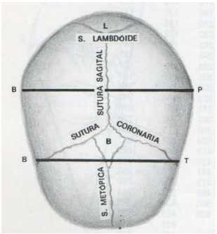
A lambda — cefálica fletida
B lambda — cefálica defletida de 1º grau
C bregma — cefálica defletida de 1º grau
D bregma — cefálica defletida de 2º grau
E lambda — cefálica defletida de 2º grau
Questão 911 · Bacia obstétrica e pelvimetria · Obstetrícia · 4000183224Tendo como referência a figura acima, que mostra a avaliação da bacia pela pelvimetria interna, assinale a alternativa que apresenta o estreito e o diâmetro da bacia que estão sendo avaliados na situação ilustrada.
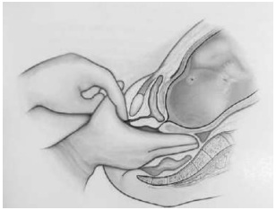
A o estreito inferior e, de forma indireta, a
B o estreito superior e, de forma indireta, a
C o estreito médio e, de forma direta, a
D o estreito médio e o diâmetro sacro médio do púbis.
E o estreito inferior e, de forma indireta, a
Questão 912 · Distúrbios hipertensivos na gestação DHEG · Obstetrícia · 4000183223Uma primigesta, com 33 semanas de gestação, sem comorbidades prévias, apresenta cefaleia occipital, turvação visual e epigastralgia. Encontra-se agitada e com pressão arterial de 170 mmHg × 120 mmHg, conforme exame físico. Os dados do exame obstétrico são os seguintes: útero globoso; AU = 32 cm; tônus uterino normal; batimentos cardíacos fetais = 140 bpm. Com relação ao caso clínico acima, assinale a alternativa que apresenta corretamente o diagnóstico e a opção terapêutica adequada, respectivamente.
A iminência de eclâmpsia — sulfato de magnésio e hidralazina na dose inicial de 5 mg, via intravenosa, repetindo-se a dose de 5 mg a cada vinte minutos, se necessário.
B hipertensão arterial superajuntada — nifedipino na dose inicial de 10 mg, via oral, repetindo-se, se necessário, a dose de 10 mg a cada vinte a trinta minutos.
C síndrome HELLP — hidralazina na dose inicial de 5 mg, via intravenosa, repetindo-se a dose de 10 mg a cada vinte minutos, se necessário.
D pré-eclâmpsia grave — sulfato de magnésio e alfa metildopa na dose de 750 mg a 2.000 mg por dia.
E eclâmpsia — sulfato de magnésio e hidralazina 5 mg, via intravenosa, repetindo-se a dose de 5 mg a cada vinte minutos, se necessário.
Questão 913 · Obstetrícia · Gestação múltipla gestação gemelar · 4000183222A respeito da gestação múltipla, assinale a alternativa correta.
A O risco de prematuridade e
B Nas gestações dicorio
C A síndrome da transfusão feto-fetal é uma complicação das gestações múltiplas dicoriônicas decorrente do desequilíbrio das comunicações vasculares placentárias entre os fetos.
D A corionicidade e
E O óbito de um dos fetos nas gestações dicorio
Questão 914 · Diabetes na gestação DMG · Obstetrícia · 4000183221Uma primigesta com 36 anos de idade, obesa (IMC = 32 kg/m²), apresentou, na 8ª semana de gestação, glicemia de jejum de 88 mg/dL. A partir desse caso clínico, assinale a alternativa correta quanto à hiperglicemia na gestação.
A Toda gestante com glicemia de jejum de 1º trimestre < 92 mg/dL deve realizar, entre 24 e 28 semanas de gestação, teste oral de tolerância a
B Para o diagnóstico de diabetes
C A adequação da dieta é o primeiro passo do tratamento clínico. Com essa medida, cerca de 40% das mulheres com diagnóstico de diabetes
D São repercussões neonatais frequentes da hiperglicemia na gestação: hiperbilirrubinemia; icterícia/
E O controle da glicemia materna tem como meta alcançar e manter os níveis de normoglicemia: < 92 mg/dL em jejum; e < 120 mg/dL uma hora pós-prandial.
Questão 915 · Ultrassom em obstetrícia USG · Obstetrícia · 4000183220Com relação à ultrassonografia obstétrica, assinale a alternativa correta.
A A determinação da idade gestacional com base na ultrassonografia, quando esta é realizada no 1º trimestre de gestação, sempre é mais eficaz do que por meio de fatores clínicos como a data da última menstruação e a data da concepção, nos casos de técnicas de reprodução assistida.
B O espessamento do saco gestacional em torno de dez a doze semanas de gestação representa sinal de alerta para a gestação.
C A ultrassonografia obstétrica é capaz de detectar diversas anomalias fetais, como a acrania, a espinha bífida e a onfalocele, por exemplo.
D A estimativa do peso fetal pode ser realizada pela obtenção do diâmetro biparietal.
E A translucência nucal aumentada no exame morfológico de 1º trimestre de gestação indica que o feto é portador da síndrome de Down.
Questão 916 · Obstetrícia · 4000183209Ana Paula, de dezoito anos de idade, procurou a UBS para solicitar a troca de método contraceptivo. A paciente, em relacionamento aberto, tem um lho vivo e passou por um aborto espontâneo. Refere que está em uso de anticoncepcional oral combinado, mas tem muita di culdade em lembrar de utilizá-lo todos os dias e é muito resistente a métodos de barreira. Na situação hipotética acima, além de reforçar a importância do uso de preservativos na prevenção de ISTs, o médico de família e comunidade pode, corretamente,
A oferecer inserção de DIU na UBS, caso esteja treinado para tanto, ou contraceptivos injetáveis.
B dizer que não há problema em se esquecer de tomar a pílula um dia, desde que a paciente tome duas pílulas no dia seguinte, além de ofertar pílula apenas de progestágeno, pois esta ser mais efetiva.
C oferecer anticoncepcional injetável ou encaminhar a paciente para inserção de DIU no serviço de ginecologia, pois só este está autorizado a realizar o procedimento.
D oferecer anticoncepcional injetável ou encaminhar a paciente ao planejamento familiar, para posterior realização de laqueadura, se for o desejo dela.
E orientar estratégias para que a paciente não se esqueça de tomar a pílula, mas, se a paciente não aderir, encaminhá-la à ginecologia, para tentar outros métodos.
Questão 917 · Obstetrícia · 4000183208Talita está fazendo o acompanhamento de seu pré-natal com a equipe de referência na UBS. Considerado de baixo risco, seu pré-natal, até o momento, não apresentou nenhuma intercorrência. Ela está com trinta semanas de gestação. Na situação hipotética acima, caso, nesse momento, o médico decida pedir exames a Talita, constar na lista de exames
A VDRL.
B hemograma.
C cultura para estreptococo B.
D urocultura.
E glicemia de jejum.
Questão 918 · Obstetrícia · Acretismo placentário · 4000183151Paciente com 33 semanas de gestação, quartigesta com 3 cesáreas anteriores, previamente assintomática, procura o pronto socorro queixando-se de sangramento vaginal moderado. Sabidamente, possui placenta de inserção baixa centro-total com sinais de acretismo em região ístmica uterina. Não apresenta dinâmica uterina, feto ativo. Ao exame especular, conteúdo sanguinolento residual, sem sangramento ativo. Qual é a conduta mais adequada?
A Resolução imediata da gestação por via alta, abdicando-se da corticoterapia.
B Corticoterapia, internação para controle clínico, cesárea eletiva após 36ª semana.
C Resolução da gestação por via alta, aguardando 48h da corticoterapia.
D Controle clínico domiciliar, retornar se novo episódio de sangramento.
Questão 919 · Trabalho de parto prematuro TPP · Distúrbios hipertensivos na gestação DHEG · Obstetrícia · 4000183149Paciente 30 anos, 3ª gestação, 14 semanas. Na 1ª gestação teve pré-eclâmpsia com 31 semanas, parto cesárea de emergência. Na 2ª gestação entrou em trabalho de parto prematuro, evoluindo para parto normal com 32 semanas. Mesmo parceiro. Qual é a orientações no pré-natal?
A Ácido fólico, sulfato ferroso e progesterona.
B Ácido acetilsalicílico, progesterona e sulfato ferroso.
C Ácido fólico, heparina de baixo peso molecular e progesterona.
D Sulfato ferroso, ácido acetilsalicílico e heparina de baixo peso molecular.
Questão 920 · Inf ecção Urinária e Bacteriúria Assintomática na gestação ITU · Obstetrícia · 4000183146Gestante de 24 semanas esteve internada por 3 dias, com quadro de mal-estar, náusea, cefaleia, dor lombar a direita e febre de 39°C. A rma ter recebido antibióticos por via endovenosa durante a internação. Retorna ao hospital, 7 dias após a alta, referindo febre há 48 horas, fraqueza intensa e dor lombar. Exame físico: REG, descorada +, desidrata 2+, pulso 110 bpm, PA 90 x 55 mmHg; murmúrio vesícular diminuído base direita. Abdome: AU = 24cm, DU ausente, BCF = 168 BPM, doloroso anco direito, sem sinais de irritação peritoneal. Qual é a hipótese diagnóstica mais provável?
A Pneumonia hospitalar.
B Pielonefrite complicada.
C Apendicite aguda complicada.
D Meningite aguda.
Questão 921 · Obstetrícia · Sangramento primeira metade · 4000183145Paciente com atraso menstrual de 7 semanas, assintomática, realiza ultrassom obstétrico inicial, visibilizado saco gestacional tópico e regular, embrião vivo compatível com a idade gestacional, vesícula vitelínica presente, ausência de áreas de descolamento ovular. Em região anexial, visibilizada formação cística anecoica de aproximadamente 6 cm de diâmetro, com reforço acústico posterior, sem septos ou áreas sólidas, vascularização periférica exuberante ao estudo Doppler. Frente a esses achados, qual é a conduta recomendada?
A Expectante, reavaliar imagem anexial em ultrassom seriado.
B Laparotomia exploradora ainda no 1º trimestre da gestação.
C Videolaparoscopia eletiva após a 12ª semana de gestação.
D Solicitar ressonância nuclear magnética e marcadores tumorais.
Questão 922 · Diabetes na gestação DMG · Obstetrícia · 4000183144Secundigesta, 38 anos de idade, com idade gestacional de 10 semanas, apresenta glicemia de jejum de 94 mg/dL, colhida há 2 dias. A gestação anterior, há 5 anos, transcorreu sem complicações e com parto normal a termo de recém-nascido com peso adequado (3300g). Qual deve ser a orientação, baseado no resultado laboratorial apresentado?
A Solicitar nova glicemia de jejum e Hb glicada após as 12 semanas.
B Solicitar curva glicêmica com 24 semanas.
C Não é necessário solicitar exames adicionais.
D Solicitar curva glicêmica com 28 semanas.
Questão 923 · Gestantes · Obstetrícia · Urgências Abdominais · 4000183143Gestante de 10 semanas procura o pronto socorro queixando-se de dor abdominal há 2 dias, periumbilical com irradiação para região lombar e fossa ilíaca direita, associada à inapetência. Há 4 horas, iniciou quadro de febre (38oC), vômitos e parada de eliminação de gases e fezes. Nega alteração do hábito urinário, disúria ou polaciúria. Ao ultrassom, gestação tópica, feto vivo, sem sinais de descolamento ovular, presença de discreta quantidade de líquido livre em região anexial direita. Hemograma com 18.800 leucócitos, desvio até metamielócitos. O Hospital não dispõe de ressonância nuclear magnética e não é possível transferência hospitalar neste momento. Qual é a conduta recomendada?
A Tomografia computadorizada de abdome para elucidar diagnóstico.
B Antibioticoterapia intravenosa e reavaliação clínica após 24 horas.
C Analgesia plena, antiemético, enteroclisma e reavaliação após evacuação.
D Cirurgia de urgência, preferencialmente por via laparoscópica.
Questão 924 · Trabalho de parto prematuro TPP · Rotura prematura de membranas ovulares RPM · Obstetrícia · 4000183141Primigesta de 27 semanas é internada com o diagnóstico de rotura das membranas. Na internação recebeu ciclo de corticoide (betametasona) e foi pesquisada a presença de Estreptococo beta hemolítico. Exames laboratoriais: Hb 11,3; Ht 34%; leucograma 8700 sem desvio; PCR 4,3. Ultrassonogra a: feto único em apresentação pélvica, placenta corporal anterior grau 0, ILA 5,6 cm (normal de 8 a 18 cm), peso estimado 950g (entre o percentil 10 e 50). No 3° dia de internação, paciente evolui com contrações uterinas ritmadas (3 em 10 minutos) e dolorosas. Qual é a melhor conduta?
A Prescrever dose de ataque de ampicilina e de sulfato de magnésio e realizar parto cesariana.
B Prescrever ampicilina e sulfato de magnésio até o parto, preferencialmente por via vaginal.
C Prescrever ampicilina e sulfato de magnésio até cessarem as contrações e concomitantemente inibir o parto com nifedipina.
D Prescrever ampicilina e sulfato de magnésio até cessarem as contrações e concomitantemente inibir o parto com terbutalina.
Questão 925 · Ginecologia · Obstetrícia · 4000183058Paciente 30 anos, foi ao ambulatório de ginecologia com dor mamária referindo nódulo em mama esquerda. Levou ultrassonogra a com achado de imagem anecóica, de paredes lisas, com reforço acústico posterior, medindo 40 mm. Qual a melhor conduta para este caso?
A Puncão por agulha fina
B Core biopsy
C Mamografia
D Ressonancia Magnética
Questão 926 · Rotura uterina · 4000183049Gestante 40 semanas, em fase ativa de trabalho de parto, apresentou dor abdominal súbita, lancinante com interrupção das contrações. Ao exame: PA: 70 x 40mmHg, FC:130 bpm, FR: 33 irpm, atividade uterina ausente, sem sangramento vaginal. Qual diagnóstico?
A Rotura uterina
B Descolamento de placenta
C Abdome agudo não obstétrico
D Abdome agudo obstétrico
Questão 927 · Ginecologia · Obstetrícia · 4000183048Paciente 36 anos, 12 semanas, trouxe exame morfológico de primeiro trimestre com medida da translucência nucal: 3,7 mm. Qual a conduta adequada?
A Realizar Cariótipo
B Tranquilizar a paciente
C Solicitar NIPT
D Solicitar PAPP-A
Questão 928 · Tratamento da toxoplasmose na gestação · 4000183047Gestante 12 semanas foi ao pré-natal com sorologia para toxoplasmose: IgG positivo, IgM reagente, avidez para toxoplasmose 80% (avidez alta). Qual a conduta adequada?
A Realizar amniocentese para PCR.
B Encaminhar ao Pré natal de risco habitual.
C Iniciar tratamento com espiramicina.
D Tratar com pirimetamina e Sulfadiazina.
Questão 929 · Ginecologia · Obstetrícia · 4000183045O padrão ouro no diagnostico de infecção fetal por rubéola é dado por qual exame:
A Avidez IgG
B IgM positivo
C Ultrassonografia
D PCR do liquido amniótico
Questão 930 · Ginecologia · Obstetrícia · 4000183044Na avaliação da idade gestacional, qual parâmetro é mais fidedigno:
A Comprimento cabeça nadegas
B Diametro Bi parietal
C Comprimento do Femur
D Avaliacao multiparamétrica
Questão 931 · Tratamento da insuf iciência istmocervical · 4000183043Gestante, primigesta, realizou exame morfológico cuja cervicometria foi 18mm. Qual conduta deve ser adotada conforme evidências cientificas?
A Acompanhamento pré-natal
B Colocação de Pesário
C Progesterona vaginal
D Reavaliar em uma semana
Questão 932 · Ginecologia · Obstetrícia · 4000183042Gestante primigesta, foi a consulta de pré-natal para mostrar exame de ultrassonogra a do primeiro trimestre que evidenciou índice de pulsatilidade das artérias uterinas acima do percentil 95. O risc o calculado para pré eclampsia pelo algoritmo da Fetal Medicine Foundation foi 1:100. Assinale conduta mais adequada para o caso.
A Iniciar nifedipina 40 mg.
B Reavaliar com 20 semanas.
C Realizar Monitorização da Pressão Arterial.
D Iniciar acido acetil salicílico 150 mg a noite.
Questão 933 · Etiologia · 4000183041Gestante 26 semanas, trouxe à consulta de pré-natal exame de ultrassonogra a que evidenciou oligodrâmnia acentuada. Qual das alternativas podem representar esse achado?
A Atresia de esôfago
B Síndrome de Potter
C Defeito aberto de Tubo Neural
D Síndrome de Turner
Questão 934 · Ginecologia · Obstetrícia · 4000183040O exame obstétrico de uma gestante de 20 semanas evidenciou altura uterina no apêndice xifóide. Qual das alternativas podem ser responsáveis por esse achado?
A Diabetes gestacional
B Insuficiência placentária
C Doença Hipertensiva específica da gravidez
D Síndrome de Prunny Belly
Questão 935 · Diagnósticos dif erenciais · Quadro clínico e classif icação de Narakas · 4000183038Você neonatologista diarista, responsável pelo alojamento conjunto, ao avaliar e examinar um recém-nascido de 4.300 Kg, notou ausência de movimentos ativos do membro superior esquerdo (MSE), do ombro até a mão, reflexo de Moro ausente, ptose palpebral, enoftalmia e miose à esquerda. O diagnóstico mais provável para esse caso é:
A Osteoartrite séptica de ombro e cotovelo.
B Tumor medular em nível cervical (C1-C2).
C Paralisia obstétrica (plexo braquial) total.
D Miopatia Aguda de músculos do ombro e cotovelo.
Questão 936 · Filhos de mães HIV positivo · Transmissão vertical TV · 4000183034Pedro é recém-nascido a termo, com peso de nascimento de 3 Kg, lho de mãe que descobriu HIV na 20ª semana de gestação. Iniciou uso de TARV, assim que teve o diagnóstico. No momento do Parto, não havia registro da Carga Viral, após o início da TARV. Qual a conduta mais adequada com Pedro na maternidade e seguimento:
A Coletar CV na sala de parto, aguardar resultado para iniciar TARV profilática por via oral e encaminhar para seguimento, com coleta de nova CV com: 14 dias, na 6ª e 12ª semana de vida.
B Coletar CV na sala de parto, iniciar AZT, 3TC e RAL por via oral e encaminhar para seguimento com coleta de nova CV com: 14 dias, na 6ª e 12ª semana de vida.
C Coletar CV na sala de parto, iniciar AZT por via oral e encaminhar para seguimento com coleta de nova CV com: 14 dias, na 6ª e 12ª semana de vida.
D Coletar CV na sala de parto, iniciar AZT, NVP por via oral e encaminhar para seguimento com coleta de nova CV com: 14 dias, na 6ª e 12ª semana de vida.
Questão 937 · Diabetes na gestação DMG · Obstetrícia · 4000182978Tercigesta de 36 anos inicia acompanhamento pré-natal com 8 semanas. AP: G3P2C0, macrossomia fetal (4.068g) na segunda gestação. Exame físico: IMC 30,2 Kg/m² . Glicemia de jejum (primeiro trimestre): 88 mg/dL. Nesse momento, o resultado do rastreamento do diabetes mellitus gestacional e a conduta são
A negativo; GTT 75g entre 24 e 28 semanas.
B positivo; GTT 100g entre 24 e 28 semanas.
C positivo; tratamento com dieta e atividade física.
D negativo; nova glicemia de jejum a partir da 32ª semana.
Questão 938 · Hemorragias pós parto HPP e rotura uterina · Obstetrícia · 4000182976Puérpera de 28 anos apresenta sangramento uterino em grande quantidade, quarenta minutos pós-parto vaginal sem intercorrências. AP: diabetes gestacional, polidrâmnio e feto GIG. Exame físico: FC 110 bpm, PA 100x60 mmHg, útero com tônus diminuído. O índice de choque, o principal fator de risco para hemorragia pós-parto e o tratamento inicial recomendado são, respectivamente:
A 1,83; diabetes gestacional; infusão de metilergometrina.
B 1,1; sobredistensão uterina; infusão de ocitocina + ácido tranexâmico.
C 1,83; sobredistensão uterina; infusão de ocitocina + misoprostol.
D 1,1; diabetes gestacional; infusão de ocitocina + ácido tranexâmico.
Questão 939 · Distúrbios hipertensivos na gestação DHEG · Obstetrícia · 4000182973Primigesta na 35ª semana de gestação refere há dois dias dor de cabeça que não melhora com analgésico, há um dia enxerga pontinhos brilhantes e apresenta dor de estômago acompanhada de enjoo. Exame físico: BEG, hidratada, corada, PA 150x110 mmHg e edema de membros inferiores (2/4+). Feto em apresentação cefálica e vivo (FCF 140 bpm). A melhor conduta imediata é
A fenitoína e metildopa.
B benzodiazepínico e hidralazina intravenosa.
C sulfato de magnésio e hidralazina intravenosa.
D sulfato de magnésio e inibidor de enzima conversora de angiotensina.
Questão 940 · Obstetrícia · Imunizaçao na gestação · 4000182971Durante a assistência pré-natal de baixo risco de gestante com 20 semanas, o resultado do AgHBs (antígeno de superfície do vírus da hepatite B) foi não reagente e em sua carteira de vacinação não há registro de vacina contra hepatite B. A conduta em relação a essa imunização é
A iniciar esquema de vacinação.
B orientar vacinação no terceiro trimestre.
C orientar vacinação no puerpério.
D contra-indicar vacinação na gestação.
Questão 941 · Obstetrícia · Sangramento primeira metade · 4000182969Secundigesta com 8 semanas de gestação comparece para consulta pré-natal em unidade básica de saúde, referindo há um dia dor tipo cólica em baixo ventre, acompanhada de sangramento vivo em pouca quantidade. A conduta correta é
A prescrever progesterona micronisada, devido a possibilidade de abortamento inevitável.
B encaminhar a paciente para uma unidade de atendimento terciário, pois trata-se de abortamento.
C solicitar ultrassom, pois é a única forma de estabelecer a hipótese diagnóstica nesse momento.
D realizar exame ginecológico, pois pode ser suficiente para estabelecer a hipótese diagnóstica e orientar a paciente.
Questão 942 · Descolamento prematuro de placenta DPP · Obstetrícia · 4000182967Gestante de 33 anos com 36 semanas refere dor em baixo ventre há duas horas. AP: G3P1A1. Exame físico: PA 140x100mmHg, FC 96bpm, dinâmica uterina com 5 contrações de 40 segundos em 10 minutos, BCF 164 bpm. Toque vaginal: colo médio, medianizado, dilatado 3cm, bolsa íntegra. Durante a avaliação a paciente apresenta aumento súbito da dor, seguido de sangramento vaginal escuro, em moderada quantidade e dificuldade para ausculta dos batimentos fetais. A hipótese diagnóstica e a conduta são:
A descolamento prematuro de placenta; rotura imediata da bolsa para reduzir a formação do coágulo retroplacentário e parto cesáreo de emergência.
B trabalho de parto taquitócico; analgesia de trabalho de parto para reduzir a dinâmica uterina.
C trabalho de parto taquitócico; rotura da bolsa para reduzir a dinâmica uterina e melhorar o fluxo útero-placentário.
D placenta prévia sem diagnóstico com sangramento decorrente do exame de toque vaginal; ultrassonografia de urgência para confirmação diagnóstica.
Questão 943 · Toxoplasmose na gestação · Obstetrícia · 4000182965Durante consulta de pré-natal na atenção primária, gestante apresenta os seguintes resultados de sorologia para toxoplasmose: As condutas corretas são:
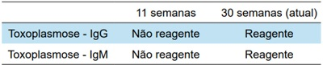
A espiramicina; encaminhar para a referência para realizar amniocentese.
B sulfadiazina, pirimetamina e ácido folínico; encaminhar para a referência para realizar amniocentese.
C espiramicina; não há necessidade de realizar a amniocentese.
D sulfadiazina, pirimetamina e ácido folínico; não há necessidade de realizar a amniocentese.
Questão 944 · Trabalho de parto prematuro TPP · Obstetrícia · 4000182962Primigesta de 19 anos, com idade gestacional de 32 semanas e 4 dias, apresenta dor em baixo ventre. Exame obstétrico: três contrações a cada 10 minutos, feto longitudinal e cefálico, BCF 148 bpm, colo uterino medianizado, esvaecido 50%, com dilatação de 4 cm e bolsa amniótica íntegra. A conduta correta é prescrever:
A corticoide, tocolítico, sulfato de magnésio e antibioticoprofilaxia para estreptococo do grupo B.
B tocolítico, sulfato de magnésio e antibioticoprofilaxia para estreptococo do grupo B.
C corticoide, tocolítico e antibioticoprofilaxia para estreptococo do grupo B.
D corticoide, tocolítico e sulfato de magnésio.
Questão 945 · Obstetrícia · Assistência ao parto normal · 4000182961Parturiente, com idade gestacional de 38 semanas, encontra-se no período expulsivo há 30 minutos, bolsa rota espontânea no início do trabalho de parto. AP: dois partos vaginais. Exame obstétrico: altura uterina 35cm, BCF 155bpm, dinâmica uterina 4 contrações (30”/30”/45”/45”), variedade da posição em occipício esquerda anterior, altura da apresentação +2 do plano De Lee. A conduta é
A aguardar evolução do parto.
B administrar ocitocina.
C indicar cesareana.
D indicar uso de vácuo extrator.
Questão 946 · Restrição de crescimento f etal RCF · Obstetrícia · 4000182960Primigesta na 35ª semana de gravidez, apresenta curva de altura uterina estacionada. Ultrassonogra a com Doppler: feto com peso no percentil 8, líquido amniótico normal, índice de pulsatibilidade menor que o percentil 95 na artéria umbilical e acima do percentil 5 na artéria cerebral média. O diagnóstico mais provável é
A restrição de crescimento fetal tardio.
B restrição de crescimento fetal precoce.
C pequeno para idade gestacional.
D crescimento fetal adequado.
Questão 947 · Puerpério f isiológico · Obstetrícia · 4000182808Primípara, com história de parto vaginal sem intercorrências há 2 dias, apresentou, no puerpério, lóquios sanguinolentos. Ao exame, encontrava-se hidratada e hipocorada 1+/4+, com pressão arterial de 110/70 mmHg. As mamas estavam ácidas com saída de colostro, e o útero, contraído, 2 cm abaixo da cicatriz umbilical. Que conduta, dentre as abaixo, está indicada?
A Orientar a alta hospitalar, por tratar-se de um puerpério fisiológico.
B Manter a paciente internada e intensificar o aleitamento até a apojadura.
C Solicitar realização de hemograma e ultrassonografia para afastar a suspeita de restos placentários.
D Realizar revisão do colo uterino, para afastar a suspeita de laceração no trajeto do parto.
Questão 948 · Obstetrícia · Assistência ao parto normal · 4000182807Assinale a assertiva correta sobre episiotomia.
A Deve ser realizada de rotina em partos de primigestas.
B Deve ser evitada em partos instrumentados, pois aumenta o risco de laceração do esfíncter anal.
C Deve-se dar preferência pela técnica mediana.
D Está indicada se houver necessidade de abreviar o 2º período do parto em casos de condição fetal não tranquilizadora.
Questão 949 · Obstetrícia · Doença hemolítica perinatal DHPN · 4000182806Paciente no 3º trimestre de gestação, Rh-isoimunizada, realizou ultrassonogra a obstétrica com Doppler. Que parâmetro ultrassonográfico, dentre os abaixo, deve ser considerado para avaliar anemia fetal?
A Relação sístole/diástole das artérias uterinas
B Índice de pulsatilidade da artéria umbilical
C Pico de velocidade sistólica da artéria cerebral média
D Índice de resistência do ducto venoso
Questão 950 · Descolamento prematuro de placenta DPP · Obstetrícia · 4000182805Paciente com 37 semanas de gestação procurou a Emergência Obstétrica por sangramento vaginal. Informou realizar pré-natal (risco habitual), sem intercorrências. Ao exame, apresentava pressão arterial de 140/90 mmHg, frequência cardíaca de 110 bpm, altura uterina de 32 cm, 5 contrações dolorosas em 10 minutos, útero hipertônico e batimentos cardiofetais de 100 bpm. O exame especular revelou sangramento pelo orifício cervical externo, sem dilatação. Qual o diagnóstico mais provável e qual a conduta a ser seguida?
A Placenta prévia – ultrassonografia para confirmação do diagnóstico
B Descolamento prematuro de placenta – cesariana de urgência
C Ruptura uterina – cesariana de urgência
D Vasa prévia – ultrassonografia para definir a origem fetal do sangramento
Questão 951 · Distúrbios hipertensivos na gestação DHEG · Obstetrícia · 4000182804Primigesta de 18 anos, com 28 semanas de gestação, apresentou convulsão tônico-clônica generalizada na UBS. Naquele momento, a pressão arterial era de 130/90 mmHg, e o exame de urina não revelou proteinúria. Mesmo desacompanhada, a paciente deverá ser imediatamente encaminhada a uma maternidade de alto risco. Para evitar convulsões durante o transporte, a conduta mais adequada é administrar
A sulfato de magnésio intramuscular.
B sulfato de magnésio intravenoso.
C diazepam intramuscular.
D fenitoína intravenosa.
Questão 952 · Trabalho de parto prematuro TPP · Obstetrícia · 4000182803Paciente de 26 anos, G3P2, veio à consulta na 18a semana de gestação. Em seu histórico, constavam partos com nascimentos nas idades gestacionais de 34 semanas e 30 semanas, nos quais apresentara contrações e ruptura de membranas. Negou uso de medicamentos. A urocultura realizada evidenciou grupo cardiofetais, de 132 bpm. Qual a conduta mais adequada?
A Observar clinicamente a paciente e repetir a urocultura em 7 dias.
B Prescrever apenas ampicilina por via oral.
C Prescrever progesterona por via vaginal e repetir a urocultura.
D Prescrever progesterona por via vaginal e ampicilina por via oral.
Questão 953 · Ultrassom em obstetrícia USG · Obstetrícia · 4000182802Primigesta de 20 anos, com 16 semanas de gestação, trouxe ao Ambulatório de Pré-natal uma ultrassonogra a obstétrica mostrando feto com anencefalia. Manifestou o desejo de interrupção imediata da gestação. Qual a conduta mais adequada neste momento?
A Encaminhar a paciente ao Centro Obstétrico para realizar a interrupção da gestação.
B Solicitar nova ultrassonografia e, confirmado o diagnóstico, interromper a gestação.
C Solicitar autorização judicial para interrupção da gestação.
D Negar o pedido de interrupção da gestação, pois a paciente tem menos de 25 anos.
Questão 954 · Assistência prénatal · Obstetrícia · 4000182801Que fármaco, dentre os abaixo, pode ser utilizado durante a gestação em pacientes com epilepsia?
A Lamotrigina
B Hidantoína
C Fenobarbital
D Ácido valproico
Questão 955 · Assistência prénatal · Obstetrícia · 4000182800Assinale a assertiva correta sobre assistência pré-natal.
A No exame físico da gestante, a ausculta dos batimentos cardiofetais pode ser feita a partir da 6a semana de gestação com sonar Doppler.
B No 3º trimestre de gestação, o decúbito dorsal materno pode levar ao efeito Poseiro, que se caracteriza por bradicardia materna e taquicardia fetal.
C Toda gestante deve receber pelo menos 1 dose da vacina dTpa, mesmo que tenha recebido dTpa na gestação anterior e dT na gestação atual.
D A presença de anticorpos IgG para toxoplasmose com baixa avidez no 1o trimestre de gestação indica infecção antiga e exclui infecção aguda nos últimos 3 meses.
Questão 956 · Obstetrícia · Diagnóstico e datação da gestação · 4000182799A regra de Nägele pode ser utilizada para o cálculo da data provável do parto. Considerando que uma gestante informou ter sido 01 de junho de 2022 a data da última menstruação, a data provável do parto será
A 26 de fevereiro de 2023.
B 01 de março de 2023.
C 04 de março de 2023.
D 08 de março de 2023.
Questão 957 · Obstetrícia · 4000182746Durante a gestação, ocorrem importantes modi cações do tecido mamário para que a amamentação ocorra. Entre os estágios do processo de lactação, a lactogênese da metade da gravidez ao segundo dia pós-parto caracteriza-se por: I. Aumento do peso mamário devido à proliferação dos ductos e do sistema glandular sob ação hormonal. II. Mudança do controle endócrino para autócrino. III. Início da síntese do leite e diferenciação das células alveolares em células secretoras. Está(ão) CORRETO(S):
A Somente o item I.
B Somente o item II.
C Somente o item III.
D Nenhum dos itens
Questão 958 · Ultrassom em obstetrícia USG · Obstetrícia · 4000182737São indicações de realização de exame ecográfico durante a gestação: I. Determinar a localização da gestação (intrauterina ou extrauterina). II. Avaliar sangramento vaginal ou dor pélvica. III. Avaliar colo do útero para risco de nascimento e perda pré-termo. IV. Avaliar massa pélvica. Estão CORRETOS:
A Somente os itens I e II.
B Somente os itens I, II e III.
C Somente os itens II e IV.
D Todos os itens.
Questão 959 · Doença trof oblástica gestacional · Obstetrícia · 4000182736Sobre a doença trofoblástica gestacional, numerar a 2ª coluna de acordo com a 1ª e, após, assinalar a alternativa que apresenta a sequência CORRETA: (1) Mola Hidatiforme Parcial. (2) Mola Hidatiforme Completa. (_) Apresenta tecido fetal ou embrionário. (_) Cariótipo diploide. (_) Cariótipo triploide. (_) Maior risco de evolução neoplásica entre as variáveis de Mola Hidatiforme. (_) Hiperplasia Trofoblástica difusa.
A 1 - 1 - 2 - 2 - 1.
B 1 - 2 - 1 - 2 - 2.
C 2 - 1 - 1 - 2 - 1.
D 2 - 2 - 2 - 1 - 2.
Questão 960 · Sangramento segunda metade da gestação · Obstetrícia · 4000182735Para o diagnóstico diferencial de hemorragias de terceiro trimestre da gestação, numerar a 2ª coluna de acordo com a 1ª e, após, assinalar a alternativa que apresenta a sequência CORRETA: (1) Ruptura uterina. (2) Descolamento prematuro de placenta. (_) Sinal de Bandl. (_) Sinal de Frommel. (_) Sinal de Clarke. (_) Hipertensão arterial é um fator de risco.
A 1 - 2 - 1 - 2.
B 2 - 1 - 2 - 1.
C 1 - 1 - 1 - 2.
D 2 - 2 - 2 - 1.
Questão 961 · Obstetrícia · Diagnóstico e datação da gestação · 4000182734O diagnóstico correto de gestação baseia-se na avaliação clínica de sinais e sintomas que fornecem dados iniciais a respeito do grau de probabilidade de tratar-se realmente de uma gravidez; esses sinais e sintomas podem ser classificados como sintomas e sinais de presunção, sinais de probabilidade e sinais de certeza. Estão entre os sinais de probabilidade de gestação,
A Atraso menstrual de 10-14 dias ou amenorreia secundária.
B Alterações em formato e em consistência do útero.
C Consistência cervical amolecida.
D Aumento do volume abdominal.
Questão 962 · Assistência prénatal · Obstetrícia · 4000182733De acordo com a OMS e com o manual técnico para o acompanhamento do pré-natal do Ministério da Saúde, analisar os itens abaixo: I. A primeira consulta de pré-natal deve ocorrer o mais cedo possível, preferivelmente antes da 16ª semana de gestação. II. Recomenda-se um mínimo de 6 consultas pré-natais: uma no 1º trimestre, duas no 2º e três no 3º. III. O acompanhamento pode ser feito com consulta médica e/ou de enfermagem. Estão CORRETOS:
A Somente os itens I e II.
B Somente os itens II e III.
C Somente os itens I e III.
D Todos os itens.
Questão 963 · Toxoplasmose na gestação · Obstetrícia · 4000182732RKC, 32 anos, primigesta, consulta com 16 semanas de gestação em uso de Espiramicina 3g/dia desde as 10 semanas, quando apresentou IgG e IgM positivos para toxoplasmose. Com 12 semanas, o exame de avidez de IgG foi de 10% (avidez baixa). Assinalar a alternativa que apresenta o manejo adequado dessa gestante:
A Suspender a Espiramicina, pois os exames indicam infecção anterior à gravidez.
B Manter a Espiramicina intercalando com Sulfadiazina, Pirimetamina e Ácido Folínico.
C Manter a Espiramicina e indicar a realização da amniocentese com exame de reação em cadeia da polimerase (PCR) a partir de 18 semanas.
D Trocar o tratamento para Sulfadiazina, Pirimetamina e Ácido Folínico.
Questão 964 · HIV na gestação · Inf ectologia · HIVAids · 4000182731JSS, 36 anos, casada, primigesta, com 18 semanas de gravidez e HIV positiva, refere fazer uso de antirretrovirais há 5 anos. A carga viral feita há 2 anos era indetectável. Repetiu há 6 meses com resultado de 3.300 cópias/ml e a última, que foi coletada 2 semanas antes da consulta, foi de 6.500 cópias/ml. Assinalar a alternativa que apresenta o manejo inicial mais adequado dessa gestante:
A Adicionar uma nova droga ao esquema em uso.
B Fazer o aconselhamento sobre adesão aos antirretrovirais e solicitar genotipagem.
C Suspender o tratamento antirretroviral para melhor avaliação.
D Indicar cesariana eletiva.
Questão 965 · Assistência prénatal · Obstetrícia · 4000182730É contraindicação absoluta à prática de exercícios físicos na gestante com:
A Anemia com Hb <10g/dL.
B DM 1 descompensado (glicemia capilar >200mg/dL ou <65mg/dL).
C Gestação gemelar >28 semanas.
D Parto pré-termo prévio.
Questão 966 · Distúrbios hipertensivos na gestação DHEG · Obstetrícia · 4000182729Assinalar a alternativa que apresenta menor evidência de risco para pré-eclâmpsia:
A Idade materna maior de 40 anos.
B Diabetes
C Gestação molar.
D Gestação gemelar.
Questão 967 · Obstetrícia · 4000182638Gestante com 33 semanas procura a maternidade com queixa de perda de líquido pela vagina há 2 horas, sem referir dores. Frente a esse quadro, é correto
A proceder ao exame clinico para confirmar o diagnóstico de perda de liquido, com toque protegido por luva estéril.
B trata-se de rotura prematura de membranas ovulares, pois está a gestação é pré-têrmo, com 33 semanas.
C pesquisar infecção clínica e laboratorial e introduzir corticóide e resolver o parto após 48 horas.
D se afirmar que o período de latência é inversamente proporcional à idade gestacional.
E fazer pesquisa de estreptococos do grupo B e se for positivo, entrar com antibiótico e resolver até 37 semanas.
Questão 968 · Obstetrícia · 4000182637Uma parturiente II gesta I para está em trabalho de parto há 8 horas, tendo tido parto normal com RN pesando 3890 g na primeira gestação. Suas últimas evoluções estão referidas na tabela a seguir. M= média intensidade m é colo médio Está em evolução natural, sem ocitocina e sem analgesia. Pelos dados apresentados, pode-se concluir que se trata de
A distócia de rotação, podendo-se abreviar o expulsivo com fórcipe de Kjelland.
B distócia de rotação, devendo fazer cesárea.
C desproporção céfalo pélvica devendo fazer cesárea.
D distócia de dilatação, devendo fazer analgesia e ocitocina se necessário.
E distócia funcional, devendo fazer cesárea.
Questão 969 · Obstetrícia · 4000182636O Ministério da Saúde do Brasil recomenda que se preencha o partograma em todos acompanhamentos dos trabalhos de parto. Sobre esse instrumento, é correto a rmar que ele é um registro gráfico da evolução do trabalho de parto, sendo preenchido
A no seguimento do trabalho de parto somente pelo médico e anotando os parâmetros de dinâmica uterina, dilatação, apresentação com variedade de posição e batimentos cardíacos fetais, de hora em hora.
B no seguimento do trabalho de parto, podendo ser preenchido pela equipe, sejam médicos(as) ou enfermeiros(as) obstétricas(as) e os toque devem ser realizados e registrados no mínimo a cada hora.
C desde que a gestante esteja em trabalho de parto, sendo que somente se deve traçar a linha de alerta e a de ação quando estiver na fase ativa.
D a cada exame clínico, e caso a linha de alerta seja ultrapassada, a parturiente deverá ser submetida a cesárea.
E somente nos dados da dinâmica uterina, dilatação, apresentação e batimentos cardio-fetais, sendo que o uso de ocitocina e analgesia devem ser anotados na folha de evolução da gestante, com horário e assinatura.
Questão 970 · Obstetrícia · 4000182635O conhecimento do mecanismo de parto é importante para o bem acompanhar a parturiente, de forma que o examinador tem condições de, por meio de seu exame, saber como o feto está evoluindo no trajeto pélvico. A esse respeito, assinale a alternativa correta.
A A insinuação, nas apresentações cefálicas fletidas, é a passagem do diâmetro bi-parietal pelo estreito superior da bacia.
B O examinador sabe que o feto está insinuado quando o ponto mais baixo da apresentação está no plano do estreito superior
C É fundamental para insinuação que o biparietal esteja no nível das espinhas isquiáticas.
D Se o feto ainda não insinuou, o trabalho de parto não se inicia.
E Se o examinador, ao fazer o exame vaginal, atingir o promontório, não poderá ocorrer a insinuação, pois existe vício pélvico.
Questão 971 · Obstetrícia · 4000182634Parturiente de 22 anos com IG de 38 semanas dá entrada na maternidade em franco trabalho de parto. É portadora de prótese valvar biológica há 2 anos e se acha em Classe Funcional I. Frente a esse quadro, qual a conduta assistencial?
A Condução do trabalho de parto com ocitocina, monitorização da PA, administração de antibiótico e parto normal.
B Antibioticoterapia, raquianestesia e cesárea.
C Oxigenioterapia materna contínua, cateterização venosa com soro glicosado, raquianalgesia para período expulsivo e parto normal com episiotomia.
D Conduta expectante, chamar o cardiologista, soro fisiológico para manter acesso venoso, anestesia e esquema antibiótico.
E Analgesia o mais precocemente possível, monitorizarão cardíaca, antibiótico para profilaxia da endocardite.
Questão 972 · Obstetrícia · 4000182633Todos os médicos devem ter conhecimento da associação diabetes e gravidez, pois essa associação é de alta prevalência e alguns cuidados devem estar ao alcance de todos, mesmo não sendo obstetras. É importante saber que
A as taxas de malformações fetais em diabéticas pré -gestacionais com hemoglobina glicada alta é muito elevada e, por isso, se uma mulher diabética no menacme, consultar um médico, ele deve abordar a situação de gestação e contracepção, além da compensação do estado diabético.
B os valores para se considerar que uma gestante tenha
C calcula-se que 18% das gestantes sejam portadoras de diabetes gestacional, que seria glicemia de jejum de 126 mg% ou mais, ou TTGO acima de 180 mg na primeira hora ou 153 mg na segunda hora.
D o TTGO deve ser realizado com 75 g de glicose no primeiro trimestre caso a gestante seja de alto risco para diabetes gestacional.
E caso a glicemia de jejum esteja entre 92 e 125 mg, deverá realizar TTGO entre 24 e 28 semanas de gestação.
Questão 973 · Obstetrícia · 4000182632As síndromes hipertensivas se constituem em causa importante de morte materna no Brasil. Como se consideram essas situações?
A Hipertensão que surge na primeira metade da gestação e se acompanha de proteinúria de 300 mg ou mais por dia caracteriza a pré-eclâmpsia.
B Se a hipertensão aparece na segunda metade da gestação com proteinúria de 300 mg ou mais por dia, trata-se de hipertensão gestacional.
C Se a gestante engravida na vigência de anti-hipertensivos, pois era hipertensa, ela será um a hipertensa crônica e não deverá ter pré-eclâmpsia.
D Existe um grupo de hipertensas que apresentam níveis elevados somente na consulta médica e, nos demais momentos, não; essas são as hipertensas gestacionais.
E Se a hipertensão surgir na segunda metade da gestação e mesmo sem apresentar proteinúria, poderá ser considerada pré-eclâmptica, caso apresente alguns sinais ou sintomas de gravidade da doença.
Questão 974 · Obstetrícia · 4000182631Gestante com 35 semanas de idade gestacional chega no pronto-socorro da maternidade com queixa de cefaleia intensa há 8 horas e alterações visuais. Na classificação de risco, a enfermeira mediu a PA, que estava 170 x 120 mmHg. Imediatamente chamou o médico. Frente a esse quadro, é correto
A encaminhar ao Centro Cirúrgico para cesárea, pois o caso é grave.
B fazer ultrassonografia para avaliação e confirmação da idade gestacional.
C administrar hidralazina como primeira medida, pois os níveis pressóricos estão muito elevados.
D iniciar esquema de sulfatação e avaliar a vitalidade fetal.
E administrar corticosteroide para acelerar a maturidade fetal.
Questão 975 · Obstetrícia · 4000182630O seguimento pré-natal numa gestante de risco habitual é fundamental para que o médico pré-natalista tenha a habilidade e a possibilidade de identi car eventuais situações e atuar, para avaliar o risco e talvez evitar um desfecho desfavorável. Assim, é correto
A solicitar para todas, já na primeira consulta, o teste de pesquisa de anticorpos irregulares (Coombs indireto) para avaliar o risco de isoimunização.
B solicitar nas UBS o exame de dopplervelocimetria para todas gestantes a fim de identificar as de risco para pré-eclâmpsia.
C realizar no mínimo 6 consultas de pré-natal com solicitação de sorologia para lues, toxoplasmose, rubéola, hepatite A-B-C, HIV, tipagem sanguínea, hemograma, eletroforese de hemoglobina, ácido úrico,T4 total, T3 total e TSH.
D prescrição de metilfolato desde a pré-concepção, podendo ir até o meio da gestação.
E administrar as vacina tríplice bacteriana acelular e a tríplice viral até a 28a semana para proteger o RN, principalmente da coqueluxe.
Questão 976 · Obstetrícia · 4000182629No acompanhamento da gestação, em especial nos casos de alto risco, muitas vezes é necessário se indicar antecipação do parto e, para isso, o conhecimento da idade gestacional correta é fundamental. Assim, é acertado se afirmar que a idade gestacional
A deve ser baseada na data da última menstruação quando for conhecida.
B não deve ser calculada pela data da última menstruação caso a gestante tenha usado anticoncepcional oral até três meses antes da falha menstrual.
C pode ser confirmada por uma ultrassonografia precoce, prevalecendo a idade pela ultrassonografia se neste exame a diferença for maior de 7 dias.
D deve ser aquela calculada pela ultrassonografia obstétrica quando a diferença for maior de 7 dias até a 32 semana de gravidez.
E deve ser confirmada com a percepção dos movimentos fetais que ocorre na 24a semana.
Questão 977 · Imunizaçao na gestação · 4000182518Sobre a vacinação da gestante, assinale a alternativa correta
A A vacina contra influenzae é contraindicada na gestação.
B A vacina tríplice bacteriana pode ser aplicada após as 20 semanas de idade gestacional.
C A vacina contra febre amarela tem contraindicação absoluta na gestação.
D A vacina tríplice viral pode ser aplicada após o primeiro trimestre da gestação.
E A vacina contra hepatite B deve ser evitada na gestação.
Questão 978 · Diagnóstico · 4000182517B.O.R., 39 anos, primigesta, IG 8 semanas, veio à primeira consulta de pré-natal, já com exames laboratoriais colhidos há 3 dias. Glicemia de jejum de 94 mg/dL, hemoglobina glicada de 5,2%. Assinale a alternativa que indica a conduta e/ou diagnóstico correto.
A Repetir glicemia de jejum com 24-28 semanas de idade gestacional.
B Solicitar TOTG (teste oral de tolerância à glicose) com 24-28 semanas de idade gestacional.
C Trata-se de
D Trata-se de
E Trata-se de aumento da resistência insulínica. Necessitando-se de TOTG de modo imediato.
Questão 979 · Conduta · Eclâmpsia · PréEclâmpsia · 4000182516Em relação à questão anterior, assinale a conduta mais adequada.
A Rotina pré-eclâmpsia, hidralazina, controle de PA, avaliação da vitalidade fetal.
B Metildopa, solicitar controle de PA ambulatorial, cardiotocografia.
C MgSO₄dose de ataque e manutenção, rotina pré- -eclâmpsia, hidralazina, controle de PA, avaliação da vitalidade fetal.
D MgSO₄ para neuro-proteção fetal, rotina pré-eclâmpsia, hidralazina, cardiotocografia.
E MgSO₄ dose de ataque e manutenção para neuro- -proteção fetal, cesárea de urgência.
Questão 980 · Préeclâmpsia com sinais de gravidade · 4000182515G.M.D., 21 anos, primigesta, IG 33 semanas, deu entrada no PSO com queixa de cefaleia fronto-ocipital, escotomas e náuseas. PA 170 x 110 mmHg. Nega aumento de PA prévio. Ao exame obstétrico: DU ausente, BCF 150 bpm, AU: 29 cm, TV: colo impérvio, bolsa íntegra. Assinale o diagnóstico correto.
A Iminência de eclâmpsia.
B Eclâmpsia.
C Hipertensão gestacional.
D Pré-eclâmpsia superajuntada.
E Hipertensão arterial crônica.
Questão 981 · Placenta prévia PP · Placenta prévia PP · 4000182514R.B.G., 35 anos, GIV PIII 3C A0, IG 35 semanas, deu entrada no PSO com queixa de sangramento vaginal vermelho vivo em moderada quantidade. Nega dor. Nega perda de líquido via vaginal. Ao exame obstétrico: BCF: 140 bpm, DU ausente. AU: 34 cm. Tônus uterino normal. Especular: grande quantidade de sangue vermelho vivo coletado em fórnice posterior. Não realizado toque vaginal. Sem história de coito recente. Assinale a alternativa que indica o diagnóstico mais provável.
A Descolamento prematuro de placenta.
B Placenta prévia.
C Rotura de vasa prévia.
D Rotura do seio marginal.
E Pólipo endocervical.
Questão 982 · Rotura prematura de membranas ovulares RPM · Ginecologia · Conduta na RPM · 4000182513R.F.G., 30 anos, GII PI 1N A0, IG 33 semanas, sem comorbidades, deu entrada no PSO referindo perda de líquido via vaginal em grande quantidade, confirmado pelo exame especular. Nega dor tipo contrações uterinas. Ao toque vaginal: colo 1 polpa, grosso e posterior. Cardiotocogra a normal. Ao ultrassom: ILA normal. Frente ao caso, assinale a conduta correta.
A Alta com orientações de repouso e retorno se contrações uterinas.
B Internação para interrupção da gestação via alta, logo após a corticoterapia.
C Internação para interrupção da gestação via baixa, logo após a corticoterapia.
D Internação para exames, corticoterapia, controle de vitalidade e indução do trabalho de parto com 34 semanas de idade gestacional.
E Antibioticoterapia via oral, controle de vitalidade e alta para programação de parto após 37 semanas de idade gestacional.
Questão 983 · Gestação ectópica · 4000182512Com base na questão anterior, assinale o diagnóstico mais provável.
A Ameaça de aborto.
B Aborto retido.
C Aborto incompleto.
D Aborto completo.
E Gestação ectópica rota.
Questão 984 · Ameaça de abortamento · 4000182511M.B.V., GII P0 AI, IG cronólogica de 7 semanas e 5 dias, deu entrada no PSO com dor abdominal de início súbito e história de sangramento vaginal em pequena quantidade. Sem exame de imagem prévio. Ao exame físico: BEG, hipocorada +/4+, PA 100 x 60 mmHg. Abdome: dor à descompressão brusca positiva. Murphy negativo. Giordano negativo. Especular: colo uterino sem lesões. Pequena quantidade de sangue em conduto vaginal. Sem sangramento ativo. Toque vaginal: colo impérvio, grosso e posterior, fundo uterino intrapélvico. Dor à mobilização do colo. Assinale os exames complementares mais importantes para diagnóstico.
A Beta HCG qualitativo e tomografia de abdome.
B Beta HCG quantitativo e ultrassom transvaginal.
C Hb, Htco e beta HCG quantitativo.
D Tipagem sanguínea, Hb, Htco e RNM de pelve.
E Beta HCG qualitativo e ultrassom de abdome total.
Questão 985 · Conduta · 4000182510B.M.B., 32 anos, primigesta, IG 32 semanas e 3 dias, deu entrada no PSO, encaminhada por USG obstétrico com alteração de doppler. Hipertensa crônica, em uso de Metildopa 1 g por dia. Assintomática. Apresentando controles pressóricos normais. Reavaliada com exame de imagem que demonstrou: feto único e vivo. Apresentação cefálica, placenta anterior, grau II/III de Grannum. Peso fetal no percentil < 3. Doppler: artéria umbilical com diástole reversa. Ducto venoso com IP de 1.5. A respeito desse caso, assinale a conduta correta.
A Internação e indução do trabalho de parto com Misoprostol.
B Internação e dilatação mecânica do colo uterino com sonda de Foley.
C Internação, sulfato de Mg para neuroproteção fetal, corticoide e parto cesáreo.
D Internação, sulfato de Mg por iminência de eclâmpsia, corticoide e parto cesáreo.
E Internação, corticoide e parto cesáreo.
Questão 986 · Ginecologia · Ultrassonograf ia no primeiro trimestre · 4000182509P.S., 23 anos, foi a consulta de pré-natal em que foi solicitado exame morfológico de 1o trimestre. No dia do exame, o CCN (comprimento cabeça-nádega) mediu 48.3 mm, com biometria compatível para 11 semanas e 4 dias. O osso nasal foi identificado. Com base nesse caso, e sabendo-se da importância e metodologia de avaliação do exame morfológico de 1º trimestre, assinale a alternativa correta.
A Não é possível avaliar o risco de trissomias, neste caso, por CCN estar abaixo de 50 mm.
B Uma medida de translucência nucal de 2 mm indica risco alto pra cromossomopatias.
C No exame morfológico de 1o trimestre, o doppler de artérias uterinas ainda não tem importância.
D A presença de osso nasal aumenta risco para cromossomopatias.
E Não há de se avaliar dopplervelocimetria de artérias umbilicais nessa fase.
Questão 989 · Distúrbios hipertensivos na gestação DHEG · Obstetrícia · 4000182417Mulher admitida em maternidade com gestação de 34 semanas e 2 dias, referindo cefaleia. Ao exame físico: PA: 170x110mmHg. Dinâmica uterina ausente, vitalidade fetal preservada; colo uterino fechado. Solicitados exames laboratoriais que evidenciaram: AST: 80UI, Hb: 10,5 mg/dL, Plaquetas: 92.000, LDH: 650U/L, bilirrubinas: 1,3mg/dL e proteinúria ++. Identifique a principal causa de óbito materno nesses casos:
A Ruptura hepática.
B Sangramento pós-parto por atonia uterina.
C Hemorragia cerebral (AVC hemorrágico).
D Intoxicação por sulfato de magnésio.
Questão 990 · Distúrbios hipertensivos na gestação DHEG · Obstetrícia · 4000182416Mulher admitida em maternidade com gestação de 34 semanas e 2 dias, referindo cefaleia. Ao exame físico: PA: 170x110mmHg. Dinâmica uterina ausente, vitalidade fetal preservada; colo uterino fechado. Solicitados exames laboratoriais que evidenciaram: AST: 80UI, Hb: 10,5 mg/dL, Plaquetas: 92.000, LDH: 650U/L, bilirrubinas: 1,3mg/dL e proteinúria ++. Indique a conduta imediata para o caso:
A Sulfato de magnésio, hidralazina e interrupção da gestação.
B Sulfato de magnésio, hidralazina e avaliar perfil biofísico fetal para decidir sobre interrupção da gestação.
C Hidralazina e acompanhamento, dispensando uso de sulfato de magnésio se houver correção da PA.
D Sulfato de magnésio e hidralazina, com liberação para acompanhamento ambulatorial se houver correção da PA.
Questão 991 · Distúrbios hipertensivos na gestação DHEG · Obstetrícia · 4000182415Mulher admitida em maternidade com gestação de 34 semanas e 2 dias, referindo cefaleia. Ao exame físico: PA: 170x110mmHg. Dinâmica uterina ausente, vitalidade fetal preservada; colo uterino fechado. Solicitados exames laboratoriais que evidenciaram: AST: 80UI, Hb: 10,5 mg/dL, Plaquetas: 92.000, LDH: 650U/L, bilirrubinas: 1,3mg/dL e proteinúria ++. Considerando esses dados clínicos, indique o diagnóstico mais provável:
A Eclampsia.
B Pré-eclampsia.
C Síndrome HELLP.
D Esteatose aguda da gravidez.
Questão 992 · Conduta · Interpretação · Cardiotocograf ia anteparto · 4000182378Mulher de 31 anos de idade, está na sua segunda gestação (um parto normal prévio, sem complicações), com idade gestacional de 41 semanas e pré-natal sem intercorrências até o momento. É admitida no centro obstétrico em condução de trabalho de parto normal. No momento, apresenta 4 contrações em 10 minutos, colo uterino médio, anteriorizado e com 5cm de dilatação. O feto se encontra cefálico, no plano -2 de DeLee, com bolsa rota. Realizou a seguinte cardiotocografia fetal: Qual é a classificação desta cardiotocografia e qual conduta deve ser adotada?
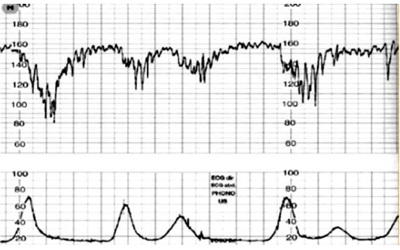
A Cardiotocografia categoria I. Conduta expectante no momento, com indicação de repetir cardiotocografia após 3 horas.
B Cardiotocografia categoria II. Realizar hidratação e repetir a cardiotocografia em decúbito lateral.
C Cardiotocografia categoria II. Proceder com realização de cesariana de emergência imediatamente
D Cardiotocografia categoria III. Realizar hidratação e repetir a cardiotocografia em decúbito lateral.
E Cardiotocografia categoria III. Proceder com realização de cesariana de emergência imediatamente.
Questão 993 · Criterios diagnósticos da préeclampsia · Préeclâmpsia com sinais de gravidade · 4000182377Mulher de 17 anos de idade, primigesta, com idade gestacional de 37 semanas e pré-natal sem intercorrências até o momento. Comparece à emergência obstétrica com queixa de cefaleia, epigastralgia e turvação visual. Ao exame físico, apresenta pressão arterial de 170x110mmHg, frequência cardíaca de 103bpm, altura uterina de 34cm, dinâmica uterina ausente, tônus uterino normal e batimento cardíaco fetal de 138bpm. Qual é o diagnóstico e qual a conduta que deve ser adotada no momento?
A Eclâmpsia. Iniciar administração de sulfato de magnésio.
B Iminência de eclâmpsia. Iniciar administração de sulfato de magnésio.
C Iminência de eclâmpsia. Iniciar uso de metildopa para controle pressórico.
D Eclâmpsia. Realização imediata de parto cesárea.
E Iminência de eclâmpsia. Realização imediata de parto cesárea.
Questão 994 · Def inição de RPM · Conduta na RPM · 4000182376Mulher de 27 anos de idade, primigesta, com idade gestacional de 39 semanas, comparece à unidade de emergência obstétrica com queixa de perda de líquido por via vaginal nas últimas 14 horas. Ao exame físico, observa-se altura uterina de 33cm, com dinâmica uterina ausente, tônus uterino normal e batimento cardíaco fetal de 143bpm. O exame especular evidenciou líquido claro com grumos exteriorizando por orifício externo do colo uterino. Ao toque vaginal, apresentou colo grosso, posterior e impérvio. Cardiotocogra a fetal categoria I. Qual é o diagnóstico e qual a conduta que deve ser adotada neste momento, além da internação hospitalar da paciente?
A Rotura prematura de membranas ovulares pré-termo. Adotar conduta expectante.
B Trabalho de parto. Realização de um parto normal.
C Rotura prematura de membranas ovulares a termo. Indução de parto normal.
D Trabalho de parto. Realização de um parto cesárea.
E Rotura prematura de membranas ovulares a termo. Realização de um parto cesárea.
Questão 995 · Tratamento · Def inição · 4000182375Mulher de 32 anos de idade, primigesta, com idade gestacional de 38 semanas e 5 dias, comparece à emergência obstétrica com quadro de dor abdominal e sangramento vaginal. Ao exame físico, apresenta fácies de dor, taquipneia e pressão arterial de 150x110mmHg. Está afebril no momento. O abdome está muito doloroso, com altura uterina de 35cm, tônus uterino aumentado e batimento cardíaco fetal de 110bpm. O exame especular evidenciou sangue escuro coletado em moderada quantidade. Ao toque vaginal, o colo uterino está grosso, posterior e impérvio. Qual é o diagnóstico e qual conduta deve ser adotada no momento?
A Rotura prematura de membranas ovulares. Deve-se proceder com realização de uma cesariana de urgência.
B Rotura prematura de membranas ovulares. Internar a paciente e iniciar misoprostol para indução de parto normal.
C Rotura de vasa prévia. Deve-se proceder com realização de uma cesariana de urgência.
D Descolamento prematuro de placenta. Internar a paciente e introduzir misoprostol para indução de parto normal.
E Descolamento prematuro de placenta. Deve-se proceder com realização de uma cesariana de urgência.
Questão 996 · Conduta · Diagnóstico · Controle glicêmico · 4000182374Mulher de 28 anos de idade comparece a consulta ambulatorial de pré-natal. Esta é sua segunda gestação, estando atualmente na 12ª semana, tendo história prévia de um abortamento. Apresentou o resultado de exame de glicemia de jejum de 92mg/dL (valor de referência para adultos < 99mg/dL). Qual é o diagnóstico e a conduta que deve ser adotada neste momento, considerando o resultado do exame apresentado?
A O resultado da glicemia capilar está dentro dos valores da normalidade. Não é necessário solicitar teste de tolerância oral à glicose entre 24 e 28 semanas.
B O resultado da glicemia capilar está dentro dos valores de normalidade. Continuar seguimento pré- natal de rotina para pacientes de baixo risco.
C Diabetes gestacional. Orientar prática de atividade física, redução da ingesta de carboidratos e iniciar uso de insulina NPH 3 vezes ao dia.
D Diabetes gestacional. Orientar prática de atividade física, redução da ingesta de carboidratos e solicitar controle de glicemia capilar em jejum após refeições.
E Diabetes gestacional. Deve-se solicitar o teste de tolerância oral à glicose entre 24 e 28 semanas de gestação, para confirmação diagnóstica.
Questão 997 · Obstetrícia · Medicina de Família e Comunidade · 4000182315A hiperglicemia materna está associada ao aumento de complicações fetais e neonatais, como macrossomia fetal, prematuridade, morte intrauterina, entre outros. O rastreio do diabetes na gestação deve ser realizado na primeira consulta de pré-natal. Os critérios para o diagnóstico do diabetes gestacional incluem a glicemia de jejum:
A menor que 92mg/dL em jejum ou no TOTG antes de 20 semanas de gestação ou entre 24-28 semanas, respectivamente
B maior ou igual a 126mg/dL antes de 20 semanas de gestação ou entre 24-28 semanas de gestação e ao menos um valor alterado no TOTG
C maior ou igual a 126mg/dL antes de 20 semanas de gestação ou entre 24-28 semanas de gestação e glicemia de 2 horas igual ou maior que 200mg/dL no TOTG
D de 92-125mg/dL antes de 20 semanas de gestação ou entre 24-28 semanas de gestação e ao menos um valor alterado no teste oral de tolerância à glicose (TOTG)
Questão 998 · Distúrbios hipertensivos na gestação DHEG · Obstetrícia · 4000182292Os distúrbios hipertensivos são a principal causa de morbimortalidade na gestação e os responsáveis por grande parte dos partos prematuros no mundo. Sobre os distúrbios hipertensivos na gestação, é correto afirmar que:
A em pacientes com pré-eclâmpsia leve, a terapia anti-hipertensiva deve ser iniciada visando reduzir os riscos de episódios de hipertensão severa, internação neonatal e prolongamento da gestação
B na pré-eclâmpsia, observa-se elevação de níveis séricos de fatores antiangiogênicos e redução de fatores angiogênicos, o que pode preceder em semanas o aparecimento das manifestações clínicas da doença
C em pacientes com incisura bilateral de artérias uterinas, identificada na dopplerfluxometria de segundo trimestre, é indicada a profilaxia com aspirina em baixas doses, visando reduzir o risco de pré-eclâmpsia
D em pacientes com eclâmpsia, o controle da crise convulsiva deve ser realizado com benzodiazepínico, como droga de primeira escolha, seguida da administração de sulfato de magnésio para profilaxia de convulsões recorrentes
Questão 999 · Hemorragias pós parto HPP e rotura uterina · Obstetrícia · 4000182291A hemorragia puerperal é a segunda causa de morte materna no Brasil, estando atrás apenas dos distúrbios hipertensivos. Entre as causas para hemorragia pós-parto, a principal é:
A atonia uterina
B restos placentários
C distúrbios da coagulação
D lacerações do canal de parto
Questão 1000 · Cardiotocograf ia CTB · Obstetrícia · 4000182290Paciente GIIIPIIAI, com 37 semanas e 5 dias de gravidez, é admitida na emergência com queixa de perda líquida há duas horas. Refere hipertensão arterial crônica em uso de 750mg/dia de metildopa. Ao exame de admissão, apresenta metrossístoles 1/10’/35”, BCF de 144bpm, movimentação fetal ativa. Ao toque vaginal, observa-se colo posterior, 50% apagado, 2cm dilatado, cefálico, líquido tinto de mecônio. A imagem a seguir refere-se à cardiotocografia realizada na admissão: Nesse caso, a desaceleração encontrada no exame está relacionada à:
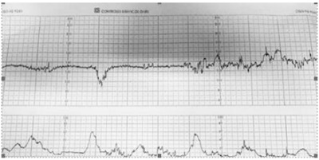
A hipertensão arterial crônica
B compressão do polo cefálico
C presença de líquido meconial
D rotura prematura de membranas ovulares
Questão 1001 · HIV na gestação · Obstetrícia · 4000182288O adequado seguimento pré-natal da gestante que convive com HIV é uma estratégia importante não só para diminuição do risco de transmissão vertical como também para redução de complicações na gestação. Com relação ao acompanhamento da gestante que convive com o HIV, é correto afirmar que:
A a vacinação para Influenza e Hepatite B deve ser evitada em pacientes com CD4 abaixo de 200 células/mm³
B em pacientes em uso prévio de terapia antirretroviral e com carga viral indetectável, a medicação deve ser suspensa no primeiro trimestre em função do risco de teratogenicidade
C pacientes com amniorrexe prematura antes de 34 semanas podem ter a conduta expectante com antibioticoterapia de latência e corticoterapia oferecida independente da carga viral
D em pacientes com hemorragia puerperal em uso de inibidores de protease, o manejo obstétrico deve utilizar derivados de ergotamina, visto que o misoprostol aumenta o risco de isquemia
Questão 1002 · Obstetrícia · Cardiopatias na gestação · 4000182287A endocardite infecciosa é uma doença com mortalidade em torno de 25%, sendo importante a administração de antibioticopro laxia nos casos indicados. Entre as indicações de pro laxia para endocardite infecciosa durante o parto, é correto citar:
A tetralogia de Fallot
B coarctação da aorta
C cardiomiopatia dilatada
D aneurisma de septo interatrial
Questão 1003 · Rotura prematura de membranas ovulares RPM · Obstetrícia · 4000182286Gestante foi admitida na 29ª semana de gravidez com queixa de dor em baixo ventre e perda de líquido. Ao exame obstétrico, apresentava metrossístoles 2/10’/20”, AFU = 27cm, BCF = 144bpm. Toque vaginal com colo em centralização, 70% apagado, 2cm dilatado, apresentação cefálica, líquido claro sem grumos. Iniciada ampicilina, azitromicina, betametasona e sulfato de magnésio, a paciente permaneceu internada em vigilância clínica materna e fetal. Com 34 semanas de gestação, foi encaminhada para indução do parto. A medicação que deve ser repetida, nesse caso, é:
A ampicilina
B azitromicina
C betametasona
D sulfato de magnésio
Questão 1004 · Ultrassom em obstetrícia USG · Obstetrícia · 4000182285A ultrassonogra a é um método seguro e amplamente difundido de avaliação fetal. A indicação para a realização do exame no primeiro trimestre é:
A avaliação de volume de líquido amniótico
B definição de inserção placentária
C diagnóstico de corionicidade
D estimativa de peso fetal
Questão 1005 · Obstetrícia · Sangramento primeira metade · 4000182283Mulher de 32 anos, GIIIP0AII, procura emergência ao apresentar sangramento vaginal, tipo “borra de café”, em pequena quantidade. Refere Beta HCG, há três dias, no valor de 145mUI/mL. Ao exame especular, observa-se sangramento escurecido em fundo de saco vaginal sem saída ativa pelo orifício externo do colo. Ao toque vaginal, verificam-se útero intrapélvico e colo uterino fechado. Na emergência, é realizada ultrassonogra a transvaginal que demonstra útero em AVF, com endométrio medindo 28mm, sem imagem compatível com saco gestacional; corpo lúteo à esquerda e anexos sem alterações; e novo Beta HCG no valor de 554mUI/mL. Diante desse quadro clínico, o diagnóstico é:
A mola hidatiforme
B gestação ectópica
C gestação em curso
D abortamento incompleto
Questão 1006 · Obstetrícia · Gestação ectópica · 4000182128Mulher, 28 anos, procura atendimento ginecológico com queixa de dor pélvica à direita há 2 dias de fraca intensidade, mas que impede de desenvolver suas atividades laborais. Ao exame físico: PA: 120 x 70 mmHg, FC:84 bpm, abdome plano, normotenso com discreta dor em fossa ilíaca direita à palpação profunda, descompressão brusca negativa. Exames complementares solicitados: Hb: 12,3 g/dl; Ht:33%, B HCG: 1720,0 mUl/ml, progesterona: 5,2 ng/ml (VR: 11 a 90 ng/ml). Ultrassonogra a pélvica: útero AVF, centrado, vol: 110 cm³, ovário esquerdo: 5 cm³, ovário direito: 6,5 cm³, em região anexial direita presença de lesão ovalada, amorga com 2,2 x 1,9 x 1,7 cm com vascularização aumentada ao redor da lesão, sem líquido livre na cavidade abdominal. Considerando se a possibilidade diagnóstica mais provável, qual a conduta mais apropriada neste momento após internação da paciente?
A Laparotomia exploradora.
B Cetoprofeno 100 mg EV.
C Observação clínica.
D Metotrexate IM 50 mg/m²
Questão 1007 · Diabetes na gestação DMG · Obstetrícia · 4000182122Primigesta, 24 anos, com 29 semanas de idade gestacional, sem comorbidades prévias à gestação. Retorna à consulta de pré-natal sem queixas. Recebeu diagnóstico de Diabetes Mellitus gestacional há 10 dias, com adequada adesão ao plano nutricional, programa de atividade física e automonitorização glicêmica, porém mantendo se acima das metas glicêmicas em aproximadamente 50% dos valores aferidos. Exame físico geral e obstétrico dentro dos padrões de normalidade. Ganho de peso de 300 gramas em uma semana. Foi indicada insulinoterapia, porém paciente é moradora de área rural di culdade de acesso, transporte e armazenamento adequados da insulina. Considerando as recomendações brasileiras de 2019 (Organização Pan Americana da Saúde. Ministério da Saúde. Federação Brasileira das Associações de Ginecologia e Obstetrícia. Sociedade Brasileira de Diabetes), qual a alternativa terapêutica farmacológica mais adequada para essa paciente?
A Gilbenclamida.
B Acarbose.
C Liraglutida.
D Metformina.
Questão 1008 · HIV na gestação · Inf ectologia · 4000182121Gestação, 25 anos, G2P1, idade gestacional de 39 semanas + dias, portadora do vírus da imunode ciência humana e uso regular de tenofovir+lamivudina+dolutegravir. A carga viral com 35 semanas e 3 dias era: 165 cópias/mL e T CD4: 648 cél/mL. Demais exames sem alterações. Feto cefálico com vitalidade preservada. Qual alternativa contempla a condução mais adequada este caso, de acordo com o Ministério da Saúde do Brasil?
A Cesárea sem zidovudina endovenosa.
B Parto vaginal e zidovudina endovenosa.
C Parto vaginal sem zidovudina endovenosa.
D Cesárea e zidovudina endovenosa.
Questão 1009 · Corioamnionite · Rotura prematura de membranas ovulares RPM · Obstetrícia · 4000182120Secundisgesta (G2P1N), 33 semanas de gestação, está internada com diagnóstico de corioamniorrexe prematura em conduta expectante há uma semana. Na ocasião do diagnóstico recebeu betametasona e 48 horas de penicilina cristalina. Na avaliação realizada hoje, se queixou de dor abdominal. Exame físico: BEG, temperatura de 38,0°C, demais sinais vitais e exame físico geral normais. Atividade uterina ausente, feto apresentação cefálica. Vitalidade geral preservada. Toque: colo posterior, médio, 1 polpa, feto cefálico. Exames laboratoriais: Hemograma: glóbulos brancos = 13.500/mm³, 17% de bastões, plaquetas 180.000/mm³. Swab vaginal/endoanal para Estreptococo do grupo B positivo. Quais as melhores condutas nesse momento?
A Clindamicina, betametasona por 24 horas e resolução da gestação por cesárea
B Clindamicina, penicilina cristalina e indução do trabalho de parto.
C Amoxicilina, azitromicina, penicilina cristalina e indução do trabalho de parto na 34ª semana.
D Clindamicina, gentamicina e resolução da gestação por cesárea.
Questão 1010 · Obstetrícia · Partograma · 4000182119Primigesta, 32 anis, 41 semanas de gestação de risco habitual. Interna na fase ativa da dilatação para assistência ao parto. Na admissão apresentava sinais vitais e exame físico geral normal, altura uterina=38 cm, vitalidade fetal normal. A evolução grá ca de seu trabalho de parto está representada abaixo (Figura). Qual é a conduta para após a avaliação das 20h?
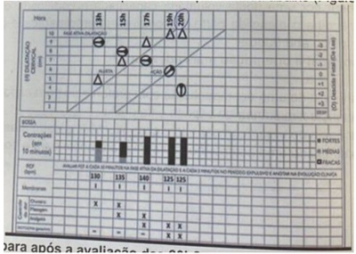
A Aguardar mais uma hora de período expulsivo.
B Realizar parto instrumentalizado.
C Realizar amniotomia artificial.
D Estimular a paciente a realizar puxos dirigidos.
Revisar: possível letra faltando em enunciado
Questão 1011 · Avaliação da vitalidade f etal · Obstetrícia · 4000182118Secundisgesta, 29 anos, com 40 semanas de gestão, comparece a maternidade devido a redução da movimentação fetal nas últimas horas. Sem outras queixas. Nega doenças e não houve intercorrências em seu pré-natal. Exame físico geral normal. Ausência de atividade uterina, altura uterina=35 cm e frequência cardíaca feral normal, com percepção de movimento fetal ao exame. Uma cardiotogra a foi realizada ( figura). Qual alternativa apresenta a melhor conduta? Figura: Cardiotocogra a realizada devido idade gestacional e queixa materna (mf=movimentos fetais)
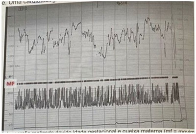
A Realizar parto cesárea imediatamente.
B Conduta expectante com alta hospitalar.
C Internar para indução do trabalho de parto.
D Realizar perfil biofísico fetal.
Questão 1012 · Obstetrícia · Assistência ao parto normal · 4000182117Primigesta, 20 anos, durante o acompanhamento de pré-natal de risco habitual, elabora e registra institucionalmente o seu plano de parto, pelo qual manigesta expressa vontade, dentre outros aspectos, de ser acompanhada durante seu trabalho de parto e parto tanto por sua esposa, como também por uma doula voluntária capacitada e certi cada de sua escolha. A equipe assistencial acolhe o plano de parto e promove esclarecimentos e orientações sobre viabilidade de cada tópico abordado. Em relação ao caso, qual a orientação mais adequada?
A Permitir a permanência de uma acompanhante com preferência para esposa.
B Permitir a permanência simultânea da esposa e da doula.
C Permitir a permanência de uma acompanhante com alternância entre a esposa e a doula.
D Permitir a permanência de uma acompanhante com preferência para a doula.
Questão 1013 · Obstetrícia · 4000182116Secundisgesta com 1 parto normal anterior a termo, 26 anos, 15 semanas de gestação, com comorbidades prévias. Comparece à consulta para iniciar pré-natal, sem queixas clínicas ou obstétricas. Exame física: bom estado geral, PA: 105 x 72 mmHg Peso: 92 kg estatura: 160 cm. Altura uterina: 18 cm ausculta de batimentos cardíacos fetais 142 bpm. Além da suplementação de ferro, qual a conduta mais adequado para essa paciente?
A iniciar ácido acetilsalicílico e enoxaparina.
B Iniciar ácido acetilsalicílico e cálcio.
C Iniciar ácido acetilsalicílico.
D Não indicar profilaxia medicamentosa.
Questão 1014 · Anticoagulantes antagonistas da vitamina K · Trombose na gestação · Heparinas · 4000182115Primigesta, 34 anos, com 16 semanas de gestação, comparece ao ambulatório de gestação de alto risco para iniciar seguimento de pré-natal. Sem queixas clínicas e obstétricas. Antecedentes pessoais: cardiopatia reumática com válvula metálica, classe funcional I, em uso de warfarin 5 mg uma vez ao dia. O resultado do RNI (Razão Normalizada Internacional) colhido há 1 semana apresenta valor de 1,8 vezes o controle. Qual é a melhor conduta com relação à anticoagulação dessa paciente?
A Aumentar a dose de warfarin para 7,5 mg uma vez ao dia.
B Suspender warfarin e iniciar dose terapêutica de enoxaparina.
C Manter a dose de warfarin 5 mg uma vez ao dia.
D Suspender warfarin e iniciar AAS 100 mg uma vez ao dia.
Questão 1015 · Técnicas de Anestesia do Neuroeixo · Distúrbios hipertensivos na gestação DHEG · Cirurgia · 4000182114Secundisgesta com 1 parto cesárea anterior, 24 anos, 31 semanas de gestação, é trazida ao centro obstétrico pela família devido quadro de crise convulsiva há 30 minutos. Ao exame: regular estado geral, pressão arterial: 160 x 120 mmHg, frequência respiratória: 24 irpm. Abdome: altura uterina: 32 cm, atividade uterina ausente, ausculta fetal de 150 bpm, sem desacelerações. Toque vaginal: colo posterior, longo, amolecido, impérvio. Equipe inicia administração de sulfato de magnésio e decide pela interrupção da gestação por cesárea. Considerando a maior segurança materna, qual(is) exame(s) é(são) mandatório(s) para orientar o procedimento anestésico cirúrgico?
A Ureia e creatina.
B Fibrinogênio.
C Hemograma.
D TP e TTPA
Questão 1016 · Fisiopatologia e f atores de risco · Cirurgia · 4000181942Na paralisia obstétrica , a avulsão do nervo dorsal da escapular causa a paralisia do músculo:
A trapézio.
B elevador da escápula.
C supra e infra-escapular.
D subescapular.
E romboide.
Questão 1017 · Parto vaginal operatório · Distocia f uncional de objeto de trajeto · Obstetrícia · 4000181884Uma primigesta, cardiopata por doença reumática, classe funcional NYHA I, com boa evolução do trabalho de parto, apresenta parada na progressão. A apresentação é occipito direita transversa e com assinclitismo anterior, plano +2 de DeLee. Os batimentos cardíacos fetais estão em 128bpm. Considerando o quadro clínico apresentado, a melhor conduta no momento seria:
A Cesariana de emergência.
B Fórcipe de Simpson.
C Fórcipe de Kielland.
D Fórcipe de Piper.
E Aguardar a evolução do parto.
Questão 1018 · Hemorragias pós parto HPP e rotura uterina · Obstetrícia · 4000181883Segundo as Recomendações Assistenciais Para Prevenção, Diagnóstico e Tratamento da Hemorragia Obstétrica (Estratégia Zero Morte Materna por Hemorragia Pós-Parto), são considerados fatores de alto risco para hemorragia pós-parto:
A Cesariana ou cirurgia uterina prévia.
B Quatro ou mais partos vaginais.
C Placentação anômala (acretismo)
D História prévia de atonia uterina ou hemorragia obstétrica.
E Corioamnionite.
Questão 1019 · Puerpério f isiológico · Obstetrícia · 4000181882A loquiação puerperal, cronologicamente, divide-se em diversos estágios evolutivos. A ordem correta da loquiação é:
A Fusca, Rubra, Flava, Alba.
B Rubra, Fusca, Alba, Flava.
C Rubra, Fusca, Flava, Alba.
D Alba, Rubra, Fusca, Flava.
E Flava, Rubra, Alba, Fusca.
Questão 1020 · Toxoplasmose na gestação · Obstetrícia · 4000181881Uma gestante de 25 anos de idade, com 11 semanas de gestação, traz à consulta do pré-natal uma sorologia positiva para Toxoplasmose (IgM e IgG positivas). O próximo passo investigativo seria:
A Amniocentese para pesquisa de PCR de T.gondii
B Iniciar sulfadiazina + pirimetamina.
C Iniciar espiramicina com 18 semanas de gestação.
D Solicitar teste de avidez de IgG.
E Acompanhar com ultrassonografias seriadas.
Questão 1021 · Sif ilis na gestação · Obstetrícia · 4000181842A principal via de transmissão vertical da sífilis se dá
A pela via transplacentária.
B pela via vaginal.
C contaminação durante o parto.
D durante a amamentação
Questão 1022 · Obstetrícia · Gestação múltipla gestação gemelar · 4000181841O acompanhamento e a conduta nas gestações gemelares baseiam-se fundamentalmente no tipo de corionicidade, quando as gestações
A dicoriônicas apresentam duas placentas e uma cavidade monoamniótica.
B monocoriônicas diamnióticas apresentam uma placenta e duas cavidades amnióticas.
C monocoriônicas monoamnióticas apresentam duas placentas e duas cavidades amnióticas.
D monocoriônicas monoamnióticas com fetos unidos apresentam duas placentas e uma cavidade amniótica.
Questão 1023 · Distúrbios hipertensivos na gestação DHEG · Obstetrícia · 4000181840A esteatose hepática aguda da gravidez (EHAG), caracterizada por insu ciência hepática aguda associada à falência de múltiplos órgãos, é uma emergência obstétrica potencialmente fatal para a mãe e para o bebê. O principal diagnóstico diferencial com a EHAG é
A a Síndrome hepatorrenal.
B a Síndrome HELLP.
C as Hepatites virais.
D a Eclampsia.
Questão 1024 · Distúrbios hipertensivos na gestação DHEG · Obstetrícia · 4000181839Leia o caso clínico. Gestante de 32 semanas, antecedentes de hipertensão pré-gestacional e insu ciência pulmonar, chega ao pronto atendimento com PA=180/120 mmHG e edema agudo de pulmão. Nessa situação, a droga de eleição deve ser
A a hidralazina.
B a nifedipina.
C o sulfato de magnésio.
D o nitroprussiato de sódio.
Questão 1025 · Distúrbios hipertensivos na gestação DHEG · Obstetrícia · 4000181838Leia o caso clínico. Primigesta inicia o pré-natal tardiamente, quando, com 28 semanas de gestação, apresenta PA=>140/90 mmHG, sem referências a respeito da PA pré-gestacional. No rastreio laboratorial, encontram - se plaquetas=95.000/mm³, TGO=80 U/L e TGP=90 UL, sem proteinúria. Nesse caso, o diagnóstico correto da Síndrome Hipertensiva é o de hipertensão
A pré-gestacional.
B gestacional transitória.
C pré-eclâmpsia.
D síndrome HELLP.
Questão 1026 · Obstetrícia · Doença hemolítica perinatal DHPN · 4000181837Leia o caso clínico. Gestante com 34 semanas e 4 dias, isoimunizada, apresenta doppler uxometria com PVS-ACM (Velocidade do Pico Sistólico da Artéria Cerebral Média) > que 1,5 múltiplo de mediana. Nessa situação, a conduta indicada é a realização de
A cordocentese e transfusão sanguínea fetal.
B corticoterapia e interrupção da gestação.
C interrupção imediata da gestação.
D realização de cardiotocografia fetal.
Questão 1027 · Obstetrícia · Alteração do volume de líquido amniótico ILA · 4000181836A principal causa de oligoâmnio em nosso meio é
A a rotura prematura das membranas.
B a insuficiência placentária da pré-eclâmpsia.
C as malformações fetais do sistema neurológico.
D as malformações fetais do sistema urinário.
Questão 1028 · Distúrbios hipertensivos na gestação DHEG · Obstetrícia · 4000181835Gestante de 36 semanas dá entrada em pronto-atendimento obstétrico, com PA: 160/110 mmHG, crises convulsivas e feto vivo. Nessa situação, o controle das crises convulsivas deverá ser realizado, inicialmente, com
A a hidralazina.
B o midazolan.
C o sulfato de magnésio.
D a interrupção imediata da gestação.
Questão 1029 · Obstetrícia · Gestação ectópica · 4000181834O metotrexato é um medicamento utilizado para tratar gestação ectópica. Constitui contraindicação para esse tratamento:
A massa anexial <= 3,5 cm.
B estabilidade hemodinâmica.
C embrião morto.
D trombocitopenia.
Questão 1030 · Abortamento · Obstetrícia · 4000181833Foi feita a opção de conduta expectante em um quadro de aborto espontâneo, com 6 semanas, retido e sem sinais de infecção. Após quatro semanas, não havendo resolução espontânea do quadro, a conduta indicada para esse caso será
A a indução do aborto com misoprostol.
B a realização da curetagem uterina.
C a realização da AMIU (Aspiração Manual Intrauterina).
D a manutenção da conduta expectante.
Questão 1031 · Obstetrícia · 4000181744Primigesta de 20 semanas de idade gestacional apresenta quadro de tosse e leve dor de garganta. Teste para Covid-19 positivo. Nesse caso, a melhor conduta entre as seguintes é:
A repouso relativo, uso de sintomáticos e observação de sinais de alerta.
B realização de cordocentese para investigação de contaminação fetal.
C introdução de imunoglobulina semanal por 8 semanas se temperatura ≥ 37,8 °C.
D adiar a ultrassonografia morfológica do segundo trimestre por 30 dias.
Questão 1032 · Exames laboratoriais · Obstetrícia · 4000181741Gestante 7 semanas vai à primeira consulta de pré-natal. É hígida e refere ser doadora de sangue frequente. A última doação foi há 2 meses, sem intercorrências. Os exames de sorologia que devem ser solicitados são:
A Hepatite B, hepatite C e HIV.
B Não precisa solicitar sorologias pois é doadora frequente.
C Hepatite A, hepatite B e herpes.
D Hepatite A, hepatite C e Covid-19.
Questão 1033 · Obstetrícia · Assistência ao parto normal · 4000181739Em uma maternidade de São Paulo, durante a passagem de plantão, dois colegas começam a discutir sobre uma paciente em trabalho de parto: primigesta, 40 semanas e 1 dia, na fase ativa, no segundo período do parto há 2 horas e 45 minutos, em imersão na banheira desde o último toque, com frequência cardíaca fetal: 144 bpm verificada a 25 minutos atrás juntamente com o início de oxitocina em bomba 24 mL/h. A argumentação correta do colega que está pegando o plantão é:
A não existia indicação para iniciar a oxitocina em bomba.
B a avaliação da frequência cardíaca fetal deveria ter sido verificada a cada 15 minutos.
C o segundo período está prolongado para uma primigesta sem analgesia.
D a paciente pode ficar na banheira e está indicada a ultimação do parto em imersão.
Questão 1034 · Distúrbios hipertensivos na gestação DHEG · Obstetrícia · 4000181738Primigesta, 31 anos de idade, gestante no 3º trimestre (36 semanas), realizando consultas de pré-natal a cada 3 meses, apresenta-se assintomática na consulta atual. Observou-se, na primeira consulta, PA: 120 × 80 mmHg. Na consulta do 2º trimestre a medida foi de 120 × 70 mmHg e na consulta atual 120 × 90 mmHg. Refere ter buscado pronto-socorro há 1 semana por cefaleia e a pressão aferida foi de 140 × 90 mmHg quando realizou exames com resultados normais e a pressão normalizou com repouso. A conduta mais adequada é:
A Indução de parto, imediato com misoprostol.
B Prescrever metildopa e realizar controle pressórico.
C Aguardar 37 semanas e realizar parto cesáreo eletivo.
D Prescrever hidralazina e realizar controle pressórico.
Questão 1035 · Rotura prematura de membranas ovulares RPM · Obstetrícia · 4000181737Primigesta, 25 anos de idade, 33 semanas de gestação, refere perda de líquido em grande quantidade há 2 horas. Nega dores abdominais, nega comorbidades. Realizou pré-natal adequado. Entre as seguintes condutas, a mais adequada é:
A Realizar neuroproteção fetal e realizar parto cesáreo.
B Colher cultura de secreção vaginal e indução de parto com misoprostol.
C Realizar neuroproteção com sulfato de magnésio e aguardar parto espontâneo.
D Antibioticoterapia com ampicilina e azitromicina para prolongar o tempo de latência
Questão 1036 · Diabetes na gestação DMG · Obstetrícia · 4000181731Primigesta, 24 semanas, procura maternidade com disúria e polaciúria há 3 dias. Nega outras queixas. Médico que a atende verifica o cartão de pré-natal e identi ca uma glicemia de jejum realizada com 10 semanas de 91 mg/dL e um teste de tolerância oral a glicose (TTOG) 75 g realizado com 21 semanas de 94 mg/dL (jejum)/140 mg/dL (pós 1 hora)/104 mg/dL (pós 2 horas). Nesse caso,
A a paciente realizou corretamente a glicemia de jejum na primeira consulta de pré-natal, pois deve- se avaliar gestantes sem diagnóstico prévio com objetivo de detectar
B a paciente não realizou hemoglobina glicada, apesar de ser o principal exame laboratorial para diagnóstico de diabetes mellitus gestacional e pode ser realizado em qualquer momento da gestação.
C o TTOG 75 g realizado está normal e indicação adequada, pois recomenda-se a realização do mesmo para investigação de
D a paciente não tem diagnóstico de diabetes mellitus gestacional, pois o diagnóstico, feito por glicemia de jejum tem como valor positivo acima de 126 mg/dL, sendo que pode ser feito em qualquer idade gestacional.
Revisar: possível letra faltando em enunciado
Questão 1037 · Obstetrícia · Acretismo placentário · 4000181730Gestante, 34 anos de idade, 37 semanas e 4 dias, 4G2Pc1A, chega no PS com polo cefálico coroando. O parto é ultimado, sem intercorrências. O recém-nascido nasce vigoroso e vai ao colo da mãe. Após 2 minutos do nascimento, a paciente apresenta sangramento vaginal abundante e queda do estado geral, com índice de choque de 0,9. Nota-se que houve dequitação parcial espontânea placentária. O útero está fortemente contraído na cicatriz umbilical e não existem lacerações de trajeto. Ao tentar terminar a dequitação da placenta, percebe-se que não há desprendimento placentário e solicita-se transferência à sala cirúrgica. Entre as opções abaixo, a conduta ideal para esta paciente deverá ser laparotomia exploradora de emergência e
A histerectomia puerperal.
B retirada da placenta com posterior histerorrafia.
C tentativa de reparo do local de lesão.
D histerectomia puerperal com placenta in loco.
Questão 1038 · Obstetrícia · Gestação ectópica · 4000181729Mulher, 26 anos de idade, pro ssional do sexo, dá entrada em pronto-socorro com dor tipo cólica suprapúbica de moderada intensidade e sangramento genital discreto. DUM: há 6 semanas. Uso irregular de preservativo. 2G1P normal 1A provocado. Refere ISTs prévias com tratamentos adequados. Faz uso de PREP devido a exposição de risco. Ao exame: bom estado geral, hidratada, FR: 20 irpm, FC: 98 bpm, PA: 90 × 50 mmHg. Abdome doloroso à palpação, sinal de La ont positivo. Especular: pequena quantidade de sangramento acastanhado coletado em fundo vaginal. Toque vaginal: colo grosso, posterior, impérvio amolecido, doloroso. O diagnóstico mais provável, dentre as opções abaixo, é:
A abortamento em curso.
B prenhez ectópica rota.
C sangramento por implantação.
D ameaça de aborto.
Questão 1039 · Doença trof oblástica gestacional · Obstetrícia · 4000181658Mulher de 24 anos refere atraso menstrual há 8 semanas e, nos últimos dias, vem apresentando sangramento intermitente. Ao exame ginecológico, apresenta pequena quantidade de sangue coletada em região de fundo de saco vaginal, ausência de sangramento ativo e colo uterino fechado. Dosagem de beta-Hcg evidenciou 40000 UI. O ultrassom demonstrou múltiplas vesículas, e o laudo veio como gestação molar completa. Nesse caso, é necessário
A repetir a ultrassonografia transvaginal e reavaliar dosagem de Beta-hCG em sete dias.
B realizar raio X de tórax e acompanhar com dosagem seriada de Beta-hCG.
C administrar misoprostol vaginal e seguir com realização da curetagem uterina.
D realizar aspiração intrauterina e acompanhar com dosagem seriada de Beta-hCG.
E realizar dilatação do colo com velas de Hegar e curetagem uterina.
Questão 1040 · Distúrbios hipertensivos na gestação DHEG · Obstetrícia · 4000181657Paciente de 39 anos, com antecedente de dois partos cesáreas pré-termo devido à préeclâmpsia, deseja programar nova gravidez. É hipertensa crônica com bom controle pressórico. Nesse caso, é necessário
A orientar que ela deve evitar uma nova gravidez por ser hipertensa.
B orientar que, considerando a idade avançada, uma nova gestação está contraindicada.
C orientar que ela deve iniciar heparina de baixo peso molecular no primeiro trimestre a fim de reduzir o risco de trombose.
D orientar que existe risco de pré-eclâmpsia na futura gestação e que, caso engravide, ela tem recomendação de profilaxia de pré-eclâmpsia.
E prescrever AAS e heparina de baixo peso molecular no início da futura gestação.
Questão 1041 · Obstetrícia · Indução de parto · 4000181656Referente à indução do trabalho de parto em pacientes que possuem cesárea anterior e feto com boa vitalidade, assinale a alternativa correta.
A É contraindicado realizar indução do parto devido ao risco de rotura uterina.
B Se o índice de Bishop for maior que 6, poderá ser usada ocitocina em bomba de infusão.
C Misoprostol 25 mcg é a primeira escolha nesses casos.
D Realizar amniotomia e aguardar início do trabalho de parto.
E Realizar misoprostol 25 mcg associado à ocitocina.
Questão 1042 · Inf ecção Urinária e Bacteriúria Assintomática na gestação ITU · Obstetrícia · 4000181655Gestante de 22 semanas comparece ao consultório referindo disúria e polaciúria há 3 dias. Nega outras queixas. Trouxe exame de urocultura realizado há 3 dias que evidenciou E. Coli. O antibiograma mostrou que a bactéria em questão era sensível aos seguintes fármacos: nitrofurantoína, ampicilina, cipro oxacino e nor oxacino. Refere que já é o terceiro quadro de infecção do trato urinário durante essa gestação. Nesse caso, a conduta mais adequada é prescrever
A ciprofloxacino 500 mg de 12/12 horas por 7 dias.
B norfloxacino 400 mg uma vez ao dia por 3 dias.
C nitrofurantoína 100 mg de 6/6 horas por 5 dias.
D ampicilina 500 mg de 6/6 horas por 7 dias seguido definitrofurantoína profilática uma vez ao dia.
E nitrofurantoína 100 mg de 6/6 horas por 7 dias.
Questão 1043 · Puerpério f isiológico · Amamentação Aleitamento Materno · Obstetrícia · 4000181654Para bloqueio imediato da produção de leite em puérpera que tem contraindicação à amamentação, qual é a medicação e a dose de escolha?
A Cabergolina 0,5 mg/ 2 comprimidos em dose única.
B Cabergolina 0,25 mg/ de 12 em 12 horas, por 4 dias.
C Cabergolina 0,25 mg/ 2 comprimidos uma vez ao dia por 3 dias.
D Bromocriptina 2,5 mg/ em dose única.
E Bromocriptina 2,5 mg/ 2 comprimidos por dia durante dois dias.
Questão 1044 · Obstetrícia · Indução de parto · 4000181653Gestante de 41 semanas, G2C1, procura o hospital para resolução da gestação, sendo que sua última cesárea foi há 3 anos. Pré-natal de risco habitual e sem complicações durante a gestação. Ao exame físico, apresenta sinais vitais normais, vitalidade fetal preservada, altura uterina de 34 cm, contrações ausentes e movimentos fetais presentes. No toque vaginal, apresentação cefálica, colo posterior com 2 cm de dilatação e apagado 20%, De Lee -1 e bolsa íntegra. Nesse caso clínico, qual seria a melhor conduta?
A Misoprostol via vaginal a cada 4 horas.
B Misoprostol via vaginal a cada 6 horas.
C Indicar cesárea.
D Preparo de colo com Sonda Foley.
E Indução do trabalho de parto com ocitocina em bomba de infusão.
Questão 1045 · Diabetes na gestação DMG · Obstetrícia · 4000181652Gestante, 23 semanas, refere que não fez nenhum dos exames solicitados na rotina de primeiro trimestre. Nega doenças prévias; o peso pré-gestacional era 80 kg e, atualmente, está com 90 kg, sendo que a altura é de 1,60 m. Considerando a disponibilidade técnica adequada, a melhor conduta para o diagnóstico de diabetes gestacional é solicitar
A hemoglobina glicada e glicemia de jejum no momento da consulta.
B teste oral de tolerância à glicose com 100g em jejum e duas horas após sobrecarga.
C teste oral de tolerância à glicose com 75 g em jejum de duas horas imediatamente.
D apenas hemoglobina glicada.
E teste oral de tolerância à glicose com 75 g em jejum, uma e duas horas após sobrecarga, entre 24 e 28 semanas.
Questão 1046 · Distúrbios hipertensivos na gestação DHEG · Obstetrícia · 4000181650Em relação à síndrome HELLP, assinale a alternativa INCORRETA.
A Plaquetas abaixo de 50.000 são contraindicação à anestesia raquidiana.
B A cesárea é a via de parto de melhor escolha na síndrome HELLP.
C Pode ocorrer síndrome HELLP sem elevação dos níveis pressóricos.
D O sulfato de magnésio é indicado quando se apresentar esse diagnóstico.
E Pacientes com passado obstétrico de síndrome HELLP devem ser alertadas quanto ao maior risco de apresentar o mesmo quadro em gestação futura.
Questão 1047 · HIV na gestação · Obstetrícia · 4000181649Uma gestante de 18 anos, G1, que não realizou pré-natal, com aproximadamente 38 semanas de idade gestacional, calculada pela data da última menstruação, chega à maternidade em trabalho de parto, com 3 contrações em 10 minutos e toque vaginal colo esvaecido com 6 cm de dilatação. Nesse caso, visando reduzir os riscos de transmissão vertical do HIV, é correto afirmar que
A deve ser realizado teste rápido de HIV na admissão e, caso o resultado seja positivo, iniciar infusão de AZT.
B deve ser realizado teste rápido de HIV na admissão e, caso o resultado seja positivo, será uma indicação absoluta de cesárea.
C deve ser realizado teste rápido de HIV na admissão e, caso o resultado seja positivo, a amniotomia precoce será indicada.
D deve ser realizado teste rápido de HIV na admissão e, caso o resultado seja positivo, o parto instrumentalizado e a episiotomia estão indicados para acelerar o nascimento.
E deve ser realizado teste rápido de HIV na admissão e, caso o resultado seja negativo, exclui-se completamente a possibilidade de essa paciente possuir o vírus do HIV.
Questão 1048 · Parto cesárea · Obstetrícia · 4000181519Com relação às cesareanas, analise as alternativas abaixo. I - O parto vaginal após cesárea é possível, embora sua aceitação esteja em decréscimo II - A cesárea por demanda, por opção ou a pedido jamais deve ser aceita pelo obstetra , sobretudo após ampla explanação à parturiente sobre os riscos e a morbidade materna e fetal. III - As morbidades mais importantes provocadas diretamente pela cesárea são aumento dos riscos de ruptura uterina intraparto em gestação futura, placenta prévia e acretismo placentário. Sobre esta situação selecione a opção correta.
A As afirmativas I e II são verdadeiras. A afirmativa III é falsa.
B As afirmativas I e III são verdadeiras. A afirmativa II é falsa.
C As afirmativas II e III são verdadeiras. A afirmativa I é falsa.
D As afirmativas I, II e III são verdadeiras.
E As afirmativas I, II e III são falsas.
Questão 1049 · Obstetrícia · Gestação ectópica · 4000181510A gravidez tubária representa 95% das gestações ectópicas. O ovo fertilizado pode se locar em qualquer posição da trompa, dando origem às gestações tubárias. Qual é o local da trompa mais frequente onde o ovo pode se implantar?
A Istmo.
B Ampola.
C Interstício.
D Extremidade fimbrial.
E Cavidade abdominal
Questão 1050 · Distúrbios hipertensivos na gestação DHEG · Obstetrícia · 4000181509A doença hipertensiva especí ca da gestação (DHEG) é uma das complicações frequentes da gravidez. Embora de prognóstico favorável nos casos leves, suas formas mais graves, como a eclâmpsia e a síndrome HELLP, constituem as principais causas de morbidade e mortalidade materna e perinatal. Em relação ao assunto analise as alternativas. I - A DHEG caracteriza-se pela presença de hipertensão arterial, edema e/ou proteinúria a partir de 12 semanas de gestação, em pacientes previamente normotensas. II - A gestante de risco para DHEG pode ser identi cada pela presença de fatores epidemiológicos e clínicos. A maioria dos casos (75%) ocorre em mulheres nulíparas. III - A obesidade constitui fator de risco para a DHEG. Quanto maior o índice de massa corpórea (IMC) pré- gestacional, maior o risco de DHEG. Sobre esta situação selecione a opção correta.
A As afirmativas I e II são verdadeiras. A afirmativa III é falsa.
B As afirmativas I e III são verdadeiras. A afirmativa II é falsa.
C As afirmativas II e III são verdadeiras. A afirmativa I é falsa.
D As afirmativas I, II e III são verdadeiras.
E As afirmativas I, II e III são falsas.
Revisar: possível letra faltando em enunciado
Questão 1051 · Doença trof oblástica gestacional · Obstetrícia · 4000181507Doenças trofoblásticas gestacionais (DTGs) compreendem um grupo heterogêneo de doenças raras que se originam da proliferação atípica do epitélio trofoblástico placentário. A patogênese da DTG é peculiar uma vez que as lesões maternas são originárias dos tecidos resultantes da fertilização, e não de tecidos maternos. Sobre esta situação analise as alternativas abaixo. I - Pertencem aos grupos das DTGs as lesões trofoblásticas benignas, a mola hidatiforme – 80% (completa, parcial e invasiva) e as neoplasias trofoblásticas gestacionais (NTGs) – 20% (coriocarcinoma, neoplasia de sítio placentário e tumor trofo blástico epitelioide). II - As molas hidatiformes são normalmente benignas, mas podem adquirir potencial maligno em algumas circunstâncias, como nas molas invasivas. III - Pacientes com gestação molar apresentam- -se com sangramento logo no primeiro trimestre da gravidez e a ultrassonografia (US) falha muitas vezes em detectá-la. Sobre esta situação selecione a opção correta.
A As afirmativas I e II são verdadeiras. A afirmativa III é falsa.
B As afirmativas I e III são verdadeiras. A afirmativa II é falsa.
C As afirmativas II e III são verdadeiras. A afirmativa I é falsa.
D As afirmativas I, II e III são verdadeiras.
E As afirmativas I, II e III são falsas.
Questão 1052 · Distocia f uncional de objeto de trajeto · Obstetrícia · 4000181504Distocia é por definição a anormalidade no desenrolar do trabalho de parto, sendo apontada nos Estados Unidos como a indicação mais comum de cesárea em primigestas. Em relação à distocia analise as alternativas abaixo. I - A principal complicação associada ao diagnóstico de distocia é infecção, sobretudo a corioamnionite e suas conseqüências para o feto e para a mãe, e está diretamente relacionada à duração do trabalho de parto. II - De ne-se distocia funcional como a presença de anormalidade do fator contrátil durante o trabalho de parto, o que infuencia diretamente a progressão da dilatação cervical. III - A distocia por hiperatividade sem obstrução é comum em primiparas e caracteriza-se pela evolução rápida (menos que 3 horas) do trabalho de parto. É conhecida como parto taquitócico. Sobre esta situação selecione a opção correta.
A As afirmativas I e II são verdadeiras. A afirmativa III é falsa.
B As afirmativas I e III são verdadeiras. A afirmativa II é falsa.
C As afirmativas II e III são verdadeiras. A afirmativa I é falsa.
D As afirmativas I, II e III são verdadeiras.
E As afirmativas I, II e III são falsas.
Questão 1053 · Relação entre a idade gestacional e achados ultrassonográf icos · 4000181419Cálculo da idade gestacional pela ultrassonograf ia IG USG M.S.S.S., 37 anos, G4P3A0, 3 partos vaginais prévios à termo, idade gestacional de 37 semanas (calculada por ultrassom de 10 semanas), altura de fundo uterino de 31 cm, feto em apresentação cefálica. USG Obstétrica revela peso fetal no percentil 3 para a idade gestacional, e maior bolsão de líquido amniótico 21mm. Doppler das artérias uterinas, cerebral média e umbilical normal. Indique o diagnóstico e conduta
A Trata-se de um feto pequeno para a idade gestacional. Permite-se aguardar a resolução da gestação com até 40 semanas e não está contraindicado o parto vaginal.
B Trata-se de um feto com restrição de crescimento intrauterino estágio 1. Permite-se aguardar a resolução da gestação com até 38 semanas, realizando Doppler semanalmente e não está contraindicado o parto vaginal.
C Trata-se de um feto com restrição de crescimento intrauterino estágio 2. Deve-se indicar a resolução da gestação de forma imediata e não está contraindicado o parto vaginal.
D Trata-se de um feto com restrição de crescimento intrauterino estágio 3. Deve-se indicar a resolução da gestação de forma imediata por meio de uma cesárea.
Questão 1054 · Epilepsia e Gestação · Obstetrícia · 4000181418Primigesta de 17 anos, idade gestacional de 39 semanas, comparece à emergência de maternidade referindo cólicas, inchaço, cefaleia e escotomas visuais. Ao exame: pressão arterial de 140x90mmHg, dinâmica uterina de 3 contrações em 10 minutos, batimentos cardíacos fetais de 144 por minuto, toque vaginal evidenciando colo com 5cm de dilatação, centralizado e apagado, apresentação cefálica, variedade de posição em OEA (occipito esquerda anterior), plano 0 de DeLee. Durante a admissão, paciente apresenta convulsão tônico- clônica generalizada. A conduta prioritária a ser tomada pela equipe obstétrica é:
A Oxigênio sob cateter nasal, contenção da paciente no leito, proteção da língua, avaliação laboratorial (hemoglobina, plaqueta, creatinina).
B Contenção da paciente no leito, proteção da língua, prescrição de benzodiazepínico, avaliação laboratorial (hemoglobina, plaqueta, creatinina).
C Prescrição de sulfato de magnésio e cesárea de urgência.
D Prescrição de sulfato de magnésio e de ocitocina, solicitação de analgesia de parto com fórceps de alívio.
Questão 1055 · Medida do colo uterino · Obstetrícia · Progesterona vaginal · 4000181414C.F.N, 17 anos, G2P1A0, parto prematuro vaginal em gestação anterior com 30 semanas, sem ocorrência de RAMO (Rotura Anteparto das Membranas Ovulares). Comparece pela primeira vez ao ambulatório de pré- natal para acompanhamento, com idade gestacional de 10 semanas. Indique a melhor orientação a ser dada.
A Está indicada a cerclagem uterina no fim do primeiro trimestre (12-14s) e o uso definifedipina 20 mg, oral, a cada 8h, diariamente, da 16ª a 36ª semana de gravidez, uma vez que existe como fator de risco história de trabalho de parto prematuro em gestação anterior.
B Está indicada a medição do colo por via transvaginal entre 16 e 24 semanas e o uso definifedipina 20 mg, oral, a cada 8h, diariamente, da 16ª a 36ª semana de gravidez, uma vez que existe como fator de risco história de trabalho de parto prematuro em gestação anterior.
C Está indicada a cerclagem uterina no fim do primeiro trimestre (12-14s) e o uso de progesterona natural micronizada, de 100 a 200 mg intravaginal, diariamente, da 16ª a 36ª semana de gravidez, uma vez que existe como fator de risco história de trabalho de parto prematuro em gestação anterior.
D Está indicada a medição do colo por via transvaginal entre 16 e 24 semanas de gestação e o uso de progesterona natural micronizada, de 100 a 200 mg intravaginal, diariamente, da 16ª a 36ª semana de gravidez, uma vez que existe como fator de risco história de trabalho de parto prematuro em gestação anterior.
Questão 1056 · Obstetrícia · Assistência ao parto normal · 4000181413VSF, 32 anos, primigesta, idade gestacional de 40 semanas, procurou maternidade por dor tipo contração. Na admissão, apresentava altura de fundo uterino de 38 cm, 3 contrações em 10 minutos de 45 segundos de duração, toque vaginal evidenciando colo centralizado e apagado com 4 cm de dilatação, apresentação cefálica etida em occipito esquerda anterior, no plano zero de DeLee e bolsa das águas íntegras. Três horas após esta avaliação, o exame de toque vaginal encontrava-se sem alterações. Mãe e concepto apresentavam boa vitalidade. A conduta mais adequada é:
A Indicar cesárea.
B Liberar paciente para o domicílio.
C Romper a bolsa das águas e avaliar o líquido amniótico.
D Reavaliar vitalidade materna e fetal a cada 30 minutos e dilatação a cada 2 ou 3 horas.
Questão 1057 · Indicações e contraindicações · Obstetrícia · 4000181412S.P.M.S, 29 anos, G2P1(vaginal)A0, idade gestacional 37 semanas, procura a emergência com quadro de rotura anteparto das membranas ovulares (RAMO). Ao exame, observa-se líquido amniótico claro escoando pelo orifício cervical externo. Toque vaginal apresenta colo posterior, longo, amolecido, dilatado 2 cm, apresentação cefálica -1 de Lee. Identifique a melhor conduta a ser tomada.
A Após comprovar bem-estar fetal por meio de cardiotocografia e estimar que o peso fetal encontre-se dentro do esperado para a idade gestacional, deve-se iniciar indução farmacológica do trabalho de parto com uso de ocitocina, uma vez que o índice de Bishop é menor que 7.
B Após comprovar bem-estar fetal por meio de cardiotocografia e estimar que o peso fetal encontre-se dentro do esperado para a idade gestacional, deve-se iniciar indução farrmacológica do trabalho de parto com uso de ocitocina, uma vez que o índice de Bishop é maior que 7.
C Após comprovar bem-estar fetal por meio de cardiotocografia e estimar que o peso fetal encontre-se dentro do esperado para a idade gestacional, deve-se iniciar indução farmacológica do trabalho de parto com uso de misoprostol, uma vez que o índice de Bishop é maior que 7.
D Após comprovar bem-estar fetal por meio de cardiotocografia e estimar que o peso fetal encontre-se dentro do esperado para a idade gestacional, deve-se iniciar indução farmacológica do trabalho de parto com uso de misoprostol, uma vez que o índice de Bishop é menor que 7.
Questão 1058 · Particularidades seguimento prénatal · Obstetrícia · 4000181411Lúcia, 41 anos, G2P0A1, idade gestacional de 37 semanas, apresentando Diabetes Mellitus Gestacional (DMG) compensada com dieta, diagnosticada em teste de sobrecarga oral com 75 g de glicose na 24ª semana de gestação. Comparece à consulta pré-natal referindo discreta diminuição da movimentação fetal nas últimas 24h. Em relação à cardiotocogra a (CTG) anteparto, na avaliação da vitalidade deste feto, podemos afirmar:
A Em gestações de risco habitual, a frequência mais adequada para a realização de cardiotocografia anteparto é de três vezes por semana.
B Linha de base, variabilidade, presença de acelerações transitórias e observação de movimentação fetal são parâmetros avaliados em uma CTG anteparto.
C A CTG anteparto pode ser reativa ou não reativa, a depender da presença ou não de duas ou mais desacelerações transitórias, em 20 minutos de exame.
D Durante uma avaliação de vitalidade fetal com CTG anteparto, a partir de 37 semanas de gestação, a frequência cardíaca fetal normal encontrada deve ser de 120bpm a 160bpm.
Questão 1059 · Cuidados pós operatório · Obstetrícia · Indicações de cesárea · 4000181410Primigesta de 26 anos, idade gestacional de 38 semanas e 2 dias, pressão arterial 120 x 80 mmHg, peso 85 kg, pré-natal sem intercorrências, solicita a seu obstetra a resolução da gestação via abdominal. Considerando o enunciado acima, qual a afirmativa correta em relação a cesárea a pedido?
A Instituir o contato pele a pele e o estímulo à amamentação na sala cirúrgica e iniciar dieta líquida 10 h após a cesárea
B Orientar deambulação precoce a partir de 4 h após o procedimento e manter puérpera e recém- nascido em alojamento conjunto.
C Realizar a raspagem de pelos e administrar Cefazolina 1,0 g endovenosa, idealmente 30 minutos antes da incisão cirúrgica na pele.
D Realizar orientação antecipada acerca do procedimento a ser executado, solicitar a assinatura do termo de consentimento e resolver a gestação no dia seguinte.
Questão 1060 · Trabalho de parto prematuro TPP · Obstetrícia · 4000181270P.G.V., 27 anos, GII PI 1N 0, IG 23 semanas, veio para ultrassom morfológico de segundo trimestre. Realizado ultrassom transvaginal para medida do colo uterino que demonstrou comprimento de 22 mm. Ausência de sinal de dedo de luva. Sludge ausente. Ecoglandular endocervical presente. Paciente sem antecedente de trabalho de parto prematuro anterior. Com relação ao caso acima, assinale a conduta correta.
A Cerclagem de colo uterino.
B Progesterona 200 mg/noite, via vaginal.
C Pessário em colo uterino.
D Expectante, com repouso absoluto.
E Expectante, com repouso relativo.
Questão 1061 · Distúrbios hipertensivos na gestação DHEG · Obstetrícia · 4000181269S.T.B., 36 anos, GII PI 1C A0, IG usg: 34 semanas, deu entrada no PSO com queixa de escotomas, dor em hipocôndrio direito e náuseas. PA de 150 x 100 mmHg. Nega aumento de PA prévio. Ausência de edema de membros inferiores. Rotina de pré-eclâmpsia: relação proteína na urina/creatinina na urina de 0,4, TGO 20, TGP 25, hb 11, htco: 33, plaquetas: 160.000, DHL 400, Bb totais de 0,8; Cr 0,9. Diante do caso acima, assinale a alternativa que apresenta a conduta correta.
A Corticoterapia para maturação pulmonar fetal e parto cesáreo.
B Coticoterapia para neuroproteção fetal e indução do parto com Misoprostol.
C Sulfato de magnésio EV dose de ataque e manutenção e parto cesáreo.
D Sulfato de magnésio EV dose de ataque e manutenção e preparo do colo uterino com sonda de Foley.
E Internação, controle diário do ducto venoso e programação do parto com IG 37 semanas.
Questão 1062 · Dopplervelocimetria Doppler · Restrição de crescimento f etal RCF · Obstetrícia · 4000181268S.T.B., 36 anos, GII PI 1C A0, IG usg: 34 semanas, deu entrada no PSO com queixa de escotomas, dor em hipocôndrio direito e náuseas. PA de 150 x 100 mmHg. Nega aumento de PA prévio. Ausência de edema de membros inferiores. Rotina de pré-eclâmpsia: relação proteína na urina/creatinina na urina de 0,4, TGO 20, TGP 25, hb 11, htco: 33, plaquetas: 160.000, DHL 400, Bb totais de 0,8; Cr 0,9. Paciente submetida a ultrassom obstétrico com doppler que identi cou: peso fetal no percentil 4, ILA normal, placenta anterior, GIII, feto em apresentação cefálica. Doppler de artéria umbilical, conforme imagem a seguir. De acordo com a figura, assinale a interpretação correta do doppler fetal.
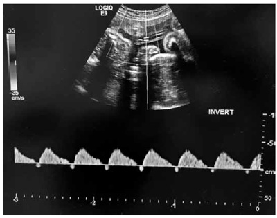
A Diástolo zero na artéria umbilical.
B Artéria umbilical com diástole reversa.
C Diminuição do índice de pulsatilidade em artéria umbilical.
D Aumento do índice de pulsatilidade em artéria cerebral média.
E Relação cérebro placentária normal.
Questão 1063 · Distúrbios hipertensivos na gestação DHEG · Obstetrícia · 4000181267S.T.B., 36 anos, GII PI 1C A0, IG usg: 34 semanas, deu entrada no PSO com queixa de escotomas, dor em hipocôndrio direito e náuseas. PA de 150 x 100 mmHg. Nega aumento de PA prévio. Ausência de edema de membros inferiores. Rotina de pré-eclâmpsia: relação proteína na urina/creatinina na urina de 0,4, TGO 20, TGP 25, hb 11, htco: 33, plaquetas: 160.000, DHL 400, Bb totais de 0,8; Cr 0,9. De acordo com o caso acima, assinale a alternativa que apresenta o diagnóstico correto.
A Iminência de eclâmpsia.
B Síndrome HELLP.
C Pré eclampsia superajuntada.
D Hipertensão arterial crônica.
E Eclâmpsia.
Questão 1064 · Diabetes na gestação DMG · Obstetrícia · 4000181266R.S.F, 27 anos, primigesta, IG usg: 10 semanas, veio em primeira consulta de pré natal já com exames laboratoriais realizados há 1 semana. Glicemia de jejum de 90mg/dL. Nega comorbidades. De acordo com o caso acima, assinale a alternativa correta.
A Deve-se realizar TOTG (teste oral de tolerância à glicose) com 24-28 semanas de idade gestacional.
B Deve-se solicitar hemoglobina glicada para avaliar diabetes pré-gestacional.
C Trata-se de um caso de diabetes gestacional.
D Deve-se nova glicemia de jejum no segundo e terceiro trimestres de idade gestacional.
E Provavelmente, trata-se de um caso de resistência insulínica aumentada.
Questão 1065 · Ultrassom em obstetrícia USG · Obstetrícia · 4000181265F.B.A., 25 anos, GII P0 AI, veio ao serviço de Medicina Fetal para a realização de seu primeiro exame de ultrassom obstétrico nesta gestação. Paciente sem comorbidades. Ao medir CCN (comprimento cabeça nádega), identificada medida de 48,3 mm, conforme figura a seguir. De acordo com o caso, assinale a alternativa correta.
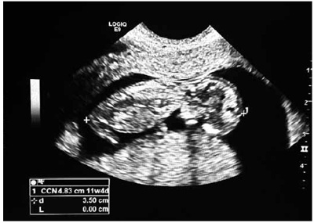
A O comprimento cabeça-nádega não está medido de forma adequada pelo operador.
B A paciente deve retornar em cerca de 1 semana para haver medida de CCN suficiente para a medida da translucência nucal.
C Para o cálculo de trissomias, a medida do CCN deve estar no intervalo de 46 – 88 mm.
D Para o cálculo de trissomias, a medida do CCN deve estar no intervalo de 45 – 84 mm.
E Essa é a foto adequada para a realização da medida da translucência nucal.
Questão 1066 · Obstetrícia · Gestação múltipla gestação gemelar · 4000181264P.L.S., 37 anos, primigesta, IG cronológica de 7 semanas e 6 dias, veio para o primeiro exame de ultrassom nesta gestação. Identificada imagem uterina, conforme figura a seguir. De acordo com a imagem, assinale o diagnóstico correto.
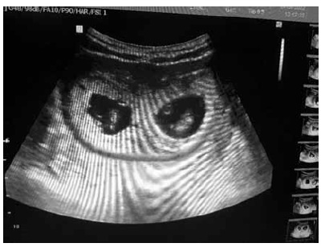
A Gestação única.
B Gestação gemelar dicoriônica e diamniótica.
C Gestação gemelar dicoriônica e monoamniótica.
D Gestação gemelar monocoriônica e diamniótica.
E Gestação gemelar monocoriônica e monoamniótica.
Questão 1067 · Restrição de crescimento f etal RCF · Obstetrícia · 4000181263A.M.N., 32 anos, GIII PII (1N 1C) A0, IG de 38 semanas e 1 dia, sem comorbidades, veio à consulta de pré natal de rotina, com ultrassom obstétrico com doppler realizado no mesmo dia: feto único e vivo (FUV), apresentação cefálica, peso fetal de 2660g, no percentil 10 (manteve-se na curva de crescimento fetal), de acordo com a curva de Hadlock. Placenta anterior grau III de Grannum, doppler normal. Morfologia fetal normal. Assinale a alternativa que apresenta a conduta correta.
A Internação para interrupção da gestação via baixa.
B Internação para parto cesariano após completado o jejum.
C Internação para acompanhamento do doppler a cada 3 dias, já que o peso fetal encontra-se no limite inferior do normal.
D Retorno ao pré-natal em 7 dias.
E Retorno ao pré-natal em 14 dias.
Questão 1068 · Abortamento · Obstetrícia · 4000181262Paciente da questão anterior foi submetida a ultrassom transvaginal que identificou: Embrião intrauterino, CCN (comprimento cabeça nádega) medindo 29,8 mm, VV 4,2 mm; batimentos cardíacos ausentes. DMSG de 48,4 mm. Após exame de imagem, assinale a alternativa que apresenta a conduta mais correta.
A Internação para curetagem uterina com cureta fenestrada.
B Misoprostol via vaginal e acompanhamento ambulatorial.
C Internação para AMIU.
D Conversa com a paciente sobre a possibilidade de conduta expectante e explicação sobre os prós e os contras de uma conduta ativa imediata.
E Alta e repetição de ultrassom em 7 dias para avaliação do desenvolvimento embrionário.
Questão 1069 · Obstetrícia · Sangramento primeira metade · 4000181261M.G.B., 36 anos, primigesta, IG cronológica de 9 semanas e 1 dia, deu entrada no PSO com queixa de sangramento vaginal em pequena quantidade há 1 dia, além de dor tipo cólica de fraca intensidade. Beta HCG qualitativo positivo. Ao exame especular: colo uterino sem lesões. Pequena quantidade de sangue coletado em fórnice posterior. Ao toque vaginal bimanual: colo uterino indolor à mobilização, impérvio, fundo uterino intra-pélvico. Abdome: dor à descompressão brusca negativa. Paciente sem ultrassom prévio. Diante do caso, assinale o dignóstico provável.
A Gestação molar.
B Aborto incompleto.
C Ameaça de aborto.
D Aborto em curso.
E Gestação ectópica rota.
Questão 1070 · Trombose na gestação · Obstetrícia · 4000181149Multípara, 37 anos de idade, está em uso de heparina de baixo peso molecular (HBPM), em dose terapêutica, desde 34 semanas de gestação, devido a um quadro agudo de tromboembolismo pulmonar (TEP) confirmado por exames de imagem. Ela teve um parto normal espontâneo, sem complicações, com 39 semanas de gestação. Em relação ao manejo pós-parto mais adequado nesse caso, assinale a alternativa correta.
A Mudar para anticoagulante oral 24 horas após o parto.
B Mudar para HBPM em dose profilática e continuar por 6 semanas após o nascimento.
C Mudar para HBPM em dose profilática e continuar por um total de 3 meses a partir do início do tratamento.
D Continuar com HBPM em dose terapêutica por 14 dias após o nascimento.
E Continuar com HBPM em dose terapêutica por um total de 3 meses a partir do momento do início do tratamento.
Questão 1071 · Trombof ilia na gestação · Obstetrícia · 4000181148Uma tercigesta, 33 anos de idade, com índice de massa corporal (IMC) de 35 kg/m² acabou de dar à luz, gestação a termo, através de cesárea. Ela é heterozigota para mutação do gene 20210A da protrombina. Assinale a alternativa que apresenta, corretamente, por quanto tempo pós-parto ela deve realizar tromboprofilaxia.
A Até iniciar a mobilidade.
B 3 dias.
C 07 dias.
D 10 dias.
E 6 semanas.
Questão 1072 · Trombose na gestação · Obstetrícia · 4000181147Após o parto, o pico do risco absoluto de tromboembolismo venoso ocorre em
A 1 - 3 semanas.
B 4 - 6 semanas.
C 6 - 12 semanas.
D 3 - 6 meses.
E 6 - 12 meses.
Questão 1073 · Distúrbios hipertensivos na gestação DHEG · Obstetrícia · 4000181146A metildopa é frequentemente descontinuada no período pós-natal, devido a sua associação com a depressão pós-parto. Assinale a alternativa que apresenta, corretamente, outros efeitos colaterais frequentemente encontrados com esse medicamento no período pós-parto.
A Hipotensão postural e rubor.
B Hipotensão postural e sedação.
C Hipotensão postural e tosse.
D Rubor e diminuição da função renal.
E Rubor e sedação.
Questão 1074 · Trabalho de parto prematuro TPP · Obstetrícia · 4000181145Assinale a alternativa que apresenta, corretamente, o patógeno que pode aumentar o risco de parto prematuro pela secreção de hialuronidase.
A Escherichia coli.
B Estreptococo do grupo B.
C Proteus mirabilis.
D Peptoestreptococo.
E Gardnerella vaginalis.
Questão 1075 · Distúrbios hipertensivos na gestação DHEG · Obstetrícia · 4000181144Quanto às alterações na Doppler uxometria em um feto com restrição de crescimento em hipóxia, considere as afirmativas a seguir. I. Diminuição do índice de pulsatilidade (IP) na artéria cerebral média. II. Reversão do fluxo diastólico na artéria umbilical (diástole reversa). III. Perfusão pulmonar diminuída. IV. Onda a positiva no ducto venoso. Assinale a alternativa correta.
A Somente as afirmativas I e II são corretas.
B Somente as afirmativas I e IV são corretas.
C Somente as afirmativas III e IV são corretas.
D Somente as afirmativas I, II e III são corretas.
E Somente as afirmativas II, III e IV são corretas.
Questão 1076 · Obstetrícia · Assistência ao parto normal · 4000181143Quanto aos benefícios do clampeamento tardio do cordão umbilical após o parto, considere as a rmativas a seguir. I. Redução de hemorragia puerperal na mãe. II. Redução de 10% na mortalidade em bebês a termo saudáveis nascidos por via vaginal. III. Redução de 30% na mortalidade em bebês prematuros. IV. Melhores habilidades motoras aos 4 anos de idade em fetos saudáveis nascidos a termo de parto normal. Assinale a alternativa correta.
A Somente as afirmativas I e II são corretas.
B Somente as afirmativas I e IV são corretas.
C Somente as afirmativas III e IV são corretas.
D Somente as afirmativas I, II e III são corretas.
E Somente as afirmativas II, III e IV são corretas.
Questão 1077 · Hemorragias pós parto HPP e rotura uterina · Obstetrícia · 4000181142Em relação à profilaxia de hemorragia pós-parto (HPP) durante a cesariana, considere as afirmativas a seguir. I. A ocitocina pode ser administrada por via intramuscular. II. A placenta deve ser removida manualmente. III. Infusão intravenosa rápida em bolo da ocitocina pode ocasionar hipertensão materna. IV. Não há consenso sobre a dose apropriada de ocitocina intravenosa. Assinale a alternativa correta.
A Somente as afirmativas I e II são corretas.
B Somente as afirmativas I e IV são corretas.
C Somente as afirmativas III e IV são corretas.
D Somente as afirmativas I, II e III são corretas.
E Somente as afirmativas II, III e IV são corretas.
Questão 1078 · Fases clínicas do parto · Obstetrícia · Assistência ao parto normal · 4000181141Em relação à assistência ao segundo período do trabalho de parto, assinale a alternativa correta.
A A massagem perineal pode reduzir o risco de lacerações perineais.
B A pressão fúndica uterina manual provou ser eficaz somente se a mãe for incapaz de coordenar os puxos.
C A posição supina pode ser usada desde que a pressão arterial da mãe permaneça normal.
D O fórceps é mais propenso a causar lesões fetais que o vácuo-extrator, mesmo se aplicado por um especialista.
E Uma vez que o colo uterino esteja totalmente dilatado, a mãe deve ser encorajada a fazer força para baixo.
Questão 1079 · Distúrbios hipertensivos na gestação DHEG · Obstetrícia · 4000181138Paciente feminina, 29 anos de idade, grávida de 38 semanas, chega ao pronto-socorro, deitada em uma maca, trazida por familiares por mal-estar geral e crise convulsiva há cerca de 5 minutos. O médico prontamente chama a paciente e, como não tem resposta, avalia a respiração e checa o pulso de forma simultânea. Percebe, então, que a paciente está em parada cardiorrespiratória. Imediatamente, o médico começa as manobras de ressuscitação, com compressão e ventilação de forma adequada. Seguindo os algoritmos específicos, assinale a alternativa correta.
A Estudos de metanálise mostraram que, nesses casos, a cesariana de emergencia não aumentou a sobrevida materna e do feto.
B Todas as medicações usadas em parada cardiorrespiratória, como amiodarona, vasopressina e adrenalina, estão contraindicadas nesse momento.
C A cesariana de emergência está indicada e deverá ser realizada em menos de 5 minutos do início do atendimento, em centro cirúrgico, preferencialmente.
D A cesariana de emergência só deverá ser indicada após o primeiro ciclo de 5 minutos, priorizando a massagem cardíaca e a ventilação de qualidade.
E A progesterona comumente causa edema de mucosas e cordas vocais, o que pode dificultar a entubação orotraqueal.
Questão 1080 · Imunizaçao na gestação · 4000181005Qual das vacinas é indicada para a gestante?
A Tríplice viral (sarampo, caxumba e rubéola)
B Influenza
C Varicela (Catapora)
D HPV
E Dengue
Questão 1081 · Distúrbios hipertensivos na gestação DHEG · Obstetrícia · 4000198237Primigesta, 40 anos, 30 semanas de idade gestacional, acompanhada em Pré-Natal de Risco Habitual, comparece à Emergência Obstétrica com quadro clínico de cefaleia intensa que não melhora com uso de sintomáticos. Ao aferir a pressão arterial, identi cada medida de 160 x 110 mmHg. Mantida em decúbito lateral esquerdo (DLE) por 15 minutos, PA aferida novamente está 150 x 110 mmHg. Ao ser questionada, refere ainda turvação visual, náuseas e epigastralgia. Iniciado sulfato de magnésio e solicitados exames de rotina para Síndrome Hipertensiva Gestacional que não apresentaram alterações significativas. Diante do quadro clínico, qual a conduta mais adequada?
A Manter paciente em decúbito lateral esquerdo, curva pressórica horária e anti-hipertensivo de resgate.
B Iniciar betametazona IM; manter monitorização materna e fetal; resolução da gravidez por via obstétrica mais adequada.
C Repetir avaliação laboratorial e avaliação fetal diariamente. Indicar cesárea em caso de detecção de comprometimento materno ou fetal.
D Manter paciente em observação; prescrever anti-hipertensivo de resgate e liberar paciente com anti-hipertensivo oral, em caso de estabilização materna.
Questão 1082 · Sif ilis na gestação · Obstetrícia · 4000198059O tratamento de sífilis em gestantes é considerado inadequado
A quando feito com outra medicação que não for penicilina.
B quando ocorre queda nos títulos.
C quando tratado o parceiro.
D quando feito 45 dias antes do parto.
E quando feito 60 dias antes do parto.
Questão 1083 · Sif ilis na gestação · Obstetrícia · 4000198058Sobre o tratamento correto de sífilis secundária ou latente recente, assinale a alternativa CORRETA.
A Ampicilina 2 gr IM.
B Cefazolina 2 gr EV.
C Penicilina G Benzatina — 2.400.000 UI/IM, repetindo a mesma dose por 3 semanas.
D Penicilina G Benzatina — 2.400.000 UI/IM.
E Penicilina G Benzatina — 2.400.000 UI/IM, repetindo a mesma dose uma semana depois.
Questão 1084 · Toxoplasmose na gestação · Obstetrícia · 4000198057Na infecção fetal por toxoplasmose, é/são achado(s) provávei(s) do ultrassom:
A hematoma subcoriônico.
B placenta acreta.
C cistos tecaluteínicos.
D calcificações intracranianas.
E polidrâmnio.
Questão 1085 · Doenças associadas à gestação · Diabetes na gestação DMG · Diagnóstico · 4000198056Paciente G2C1, 28s, após exame de TOTG de 75 gr, apresentou valores 96, 145 e 120 mg/dl. Qual é o diagnóstico nesse caso?
A Diabetes compensada.
B Diabetes mellitus pré-gestacional.
C Normoglicemia.
D Diabetes mellitus.
E Diabetes gestacional.
Questão 1086 · Restrição de crescimento f etal RCF · Obstetrícia · 4000198054Gestante G1, 28 semanas, fez exame de ultrassom, apresentando peso fetal no percentil 3. Qual é o diagnóstico mais provável?
A Diabetes gestacional.
B Restrição de crescimento intrauterino.
C Toxoplasmose gestacional.
D Cardiopatia.
E Sífilis terciária.
Questão 1087 · Sangramento segunda metade da gestação · Intercorrências obstétricas obstetrícia patológica · 4000198029Diagnóstico G1, 40 anos, 39 semanas, apresenta rotura de membranas fora do trabalho de parto. Logo em seguida, inicia quadro de sangramento vaginal intenso, hipertonia uterina contínua e dor. Ao se avaliar o Bcf, observa-se queda progressiva e rápida. Após ser realizada cesária de emergência, tem-se o diagnóstico. Qual seria o diagnóstico mais provável?
A Placenta acreta.
B Descolamento prematuro de placenta.
C Ruptura uterina.
D Distócia de progressão.
E Vasa prévia.
Questão 1088 · Diagnóstico · Intercorrências obstétricas obstetrícia patológica · Obstetrícia · 4000198025G5PC4, 40 anos, 39 semanas, com placenta de inserção baixa, apresenta rotura de membranas fora do trabalho de parto e é encaminhada para cesária. Durante a cirurgia, observa-se placenta aderida à bexiga. Qual é o diagnóstico provável?
A Deslocamento prematuro de placenta.
B Placenta percreta.
C Placenta acreta.
D Placenta increta.
E Ruptura uterina.
Questão 1089 · Assistência prénatal · Obstetrícia · Imunizaçao na gestação · 4000198022Gestante G1, com gravidez gemelar de 30 semanas e com carteira de vacinação toda incompleta, questiona o ginecologista sobre quais vacinas pode tomar. Assinale a resposta correta a ser dada para essa gestante.
A HPV; Dtpa e Hepatite B.
B HPV; Varicela e Dtpa.
C Dengue; Meningocócica B e Varicela.
D Meningocócica B; Dengue e Hepatite B.
E Dtpa; Hepatite B e Influenza.
Questão 1090 · Distúrbios hipertensivos na gestação DHEG · Obstetrícia · 4000197997A pré-eclâmpsia é uma doença multifatorial e multissistêmica, especí ca da gestação, com possibilidade de evolução para situações mais graves, como eclâmpsia, acidente vascular cerebral hemorrágico, síndrome HELLP, insuficiência renal, edema agudo de pulmão e morte. Em relação à prevenção da pré-eclâmpsia, assinale a alternativa CORRETA.
A É recomendado uso de AAS 50 mg/dia para pacientes que apresentaram préeclâmpsia na gestação anterior.
B Vitamina C e D são recomendadas visando à prevenção da pré-eclâmpsia na população geral.
C Repouso e restrição de sal na dieta são importantes recomendações para pacientes com fatores de risco.
D O uso de AAS 100 mg/dia e cálcio 1 a 2 g por dia é recomendado para pacientes que apresentam diabete melito preexistente.
E O uso de enoxaparina é recomendado para pacientes que apresentaram pré-eclâmpsia na gestação anterior.
Revisar: possível letra faltando em enunciado
Questão 1091 · Toxoplasmose na gestação · Obstetrícia · 4000197993Paciente, secundigesta, com uma cesárea há 5 anos, apresenta-se na 10ª semana gestacional calculada pelo 1º ultrassom. Retorna na consulta do pré-natal com os exames de rotina do primeiro trimestre. Apresenta sorologia para toxoplasmose IgG positivo e IgM positivo. Qual é a conduta indicada nesse caso?
A Iniciar o tratamento com sulfadiazina e pirimetamina.
B Realizar amniocentese para avaliar comprometimento fetal.
C Orientar que a paciente está imune à toxoplasmose.
D Solicitar teste de avidez para IgG.
E Aguardar a 15ª semana para realizar amniocentese.
Questão 1092 · Doenças associadas à gestação · Obstetrícia · 4000197991Paciente primigesta está em acompanhamento de gestação de risco habitual.Trouxe exames laboratoriais do segundo trimestre e apresenta TSH= 11 mUI/L. Conforme o resultado dos exames, qual é a melhor conduta?
A Iniciar tratamento com levotiroxina 25-50 mcg/dia.
B Iniciar tratamento com tapazol 5 mg/dia.
C Iniciar tratamento para crise tireotóxica.
D Orientar a paciente da normalidade dos exames e manter seguimento habitual.
E Solicitar novo TSH em 1 semana após início do tratamento.
Questão 1093 · Intercorrências obstétricas obstetrícia patológica · Obstetrícia · Sangramento primeira metade · 4000197984Sobre a gravidez ectópica, é CORRETO afirmar que:
A A região mais comum de ocorrer é na cicatriz de cesárea prévia.
B ß-hCG de 1.500 com ausência de embrião na cavidade uterina confirma gravidez ectópica.
C Entre os fatores de risco, estão: gravidez ectópica prévia, cirurgia tubária e tabagismo.
D O uso de metotrexato está indicado em embriões com ausência de batimentos cardíacos fetais e diâmetro da massa anexial maior ou igual a 6 cm.
E Nos casos de ruptura tubária com instabilidade hemodinâmica, a via laparoscópica é a preferencial.
Questão 1094 · Obstetrícia · Alteração do volume de líquido amniótico ILA · 4000197956Durante a gestação, o líquido amniótico exerce importantes funções. Em relação a essas funções, analise as assertivas e assinale a alternativa que aponta as corretas. I. Proteção contra traumatismos externos; II. Prevenção do trabalho de parto prematuro; III. Contribuição para o desenvolvimento dos pulmões fetal; IV. Controle da temperatura corporal do feto.
A Apenas I e III.
B Apenas I e IV.
C Apenas I, II e III.
D Apenas I, III e IV.
E Apenas II e IV.
Questão 1095 · Hemorragias pós parto HPP e rotura uterina · Puerpério · Etiologia · 4000197949A causa mais frequente de hemorragia pós-parto é:
A Placenta retida.
B Lacerações.
C Hematoma.
D Coagulopatia.
E Atonia uterina.
Questão 1096 · Quadro clínico · Obstetrícia · Sangramento primeira metade · 4000197947Uma paciente de 21 anos, usuária de DIU de cobre há 3 meses, chega ao pronto atendimento ginecológico com sangramento genital, dor pélvica intensa, sinais de descompressão brusca positivo e pressão arterial = 70 x 40 mmHg. A principal hipótese diagnóstica é:
A Abortamento.
B Apendicite aguda.
C Doença inflamatória pélvica.
D Perfuração uterina pelo DIU.
E Prenhez ectópica rota.
Questão 1097 · Obstetrícia · Indução de parto · 4000197945Uma paciente com 37 semanas de gestação, feto vivo, G3C1A1, apresenta indicação de indução de parto. As condições do colo apresentaram índice de Bishop < 6. Nesse caso, o método de escolha para amadurecimento cervical é o/a
A amniotomia.
B laminaria cervical.
C misoprostol.
D ocitocina.
E sonda de Foley.
Questão 1098 · Obstetrícia · 4000197944Após um óbito fetal a termo, um paciente apresentou a necessidade de inibição da lactação. Assinale a alternativa que corresponde a uma medida adequada para a supressão.
A Não permite a expressão mamilar.
B Manter mamas sem uso de sutiã de 3 a 10 dias.
C Realizar ordenha programada.
D Usar bolsa de água aquecida por 10 min, 4x/dia.
E Usar ordenha manual em preferência a mecânica.
Questão 1099 · Inf ecção Urinária e Bacteriúria Assintomática na gestação ITU · Inf ecção do trato urinário ITU · 4000197943Uma gestante com 23 semanas procura a UBS com quadro de ITU não complicada, sem tratamentos prévios. Dentre as medicações apresentadas, assinale aquela que é a escolha empírica mais ADEQUADA:
A Ceftriaxona.
B Ciprofloxacino.
C Nitrofurantoína.
D Norfloxacina.
E Sulfametoxazol + trimetoprima.
Questão 1100 · Distúrbios hipertensivos na gestação DHEG · Obstetrícia · 4000197937Uma gestante com 34 semanas + 4 dias foi levada ao pronto atendimento obstétrico com queixa de mal- estar, náuseas e dor epigástrica com irradiação para hipocôndrio direito. O exame físico não mostrava hipertensão arterial, entretanto a paciente estava ictérica. Foram realizados exames laboratoriais com os resultados: Bilirrubinas totais = 1,6 mg/dL; TGO = 92 UI; DHL = 620 U/L; Contagem de plaquetas = 110.000/mm³. Assinale a alternativa correta sobre a conduta do caso.
A Administrar hidralazina.
B Planejar e antecipar o parto.
C Resgate com dexametasona.
D Solicitar colangioressonância.
E Solicitar ultrassonografia com doppler.
Questão 1101 · Obstetrícia · Alteração do volume de líquido amniótico ILA · 4000197933Assinale a alternativa que apresenta uma causa de polidrâmnio.
A Restrição de crescimento.
B Pós-datismo.
C Óbito fetal.
D Feto anencéfalo.
E Insuficiência uteroplacentária.
Questão 1102 · Trombof ilia na gestação · 4000197930Uma paciente é encaminhada para o ambulatório de gestação de alto risco para avaliação. Paciente é primigesta, 22 anos, idade gestacional de 11 semanas, hígida, sem comorbidades, em uso de ácido fólico. Nega histórico familiar de comorbidades importantes. Segundo ela, devido ao aumento dos casos de trombo lia, solicitou ao médico da UBS rastreamento laboratorial. Dentre os exames, a anticardiolipina IgM apresentou alteração. Assinale a alternativa que corresponde à conduta correta pelo serviço de referência.
A Alta do ambulatório de alto risco, pois a paciente não apresenta diagnóstico de síndrome de antifosfolípide.
B Alta do ambulatório de alto risco e prescrição de AAS e cálcio para prevenção de evento tromboembólico.
C Alta do ambulatório de alto risco com solicitação para repetição de novo exame de IgG e IgM, dentro de 12 semanas.
D Acompanhamento trimestral e prescrição de AAS para prevenção de evento tromboembólico.
E Acompanhamento mensal e prescrição de enoxaparina profilática.
Questão 1103 · Ultrassom em obstetrícia USG · Obstetrícia · 4000197919No ultrassom obstétrico morfológico, o ultrassonogra sta, em sua hipótese diagnóstica, descreve o exame do feto com presença de: rins policísticos, polidactilia e encefalocele. O quadro sugere qual síndrome?
A Síndrome de Edwards.
B Síndrome de Marfan.
C Síndrome de Möebius.
D Síndrome de Meckel-Gruber.
E Síndrome de DiGeorge.
Questão 1104 · Distúrbios hipertensivos na gestação DHEG · Obstetrícia · 4000197916A doença hipertensiva especí ca da Gestação pode acarretar resultados desfavoráveis para o binômio mãe/feto. Diante da iminência de pré-eclâmpsia, qual medicamento a seguir é a primeira escolha para prevenção ou controle de convulsões tônico-clônicas?
A Ondansetrona.
B Sulfato de Magnésio.
C Gluconato de cálcio.
D Clonazepam.
E Diazepam.
Revisar: possível letra faltando em enunciado
Questão 1105 · Trombose na gestação · 4000197325Em relação à trombo profilaxia na gestação, analise as assertivas abaixo: I. Gestante em uso de dose pro lática de Heparina de Baixo Peso Molecular (HBPM) deve ter essa medicação suspensa 12 horas antes do parto, possibilitando a anestesia locorregional. II. Paciente que faz uso de trombopro laxia com HBPM durante a gestação deve mantê-la no puerpério, por pelo menos 30 dias, com reintrodução dessa medicação após 12 horas do parto. III. Gestante com diagnóstico de síndrome antifosfolípide e morbidade obstétrica em gestação anterior deve fazer uso profilático de HBPM e ácido acetilsalicílico em baixa dose. Quais são corretas?
A Apenas I e II.
B Apenas I e III.
C Apenas II e III.
D I, II e III.
Questão 1106 · Obstetrícia · Hepatites na gestação · 4000197321Em relação às hepatites na gestação, analise as assertivas abaixo: I. Faz-se necessária a triagem sorológica para hepatite B já na primeira consulta de pré-natal. II. A imunização está indicada em qualquer trimestre da gestação quando o HBsAg for negativo e o anti-HBs for não reagente ou ausência de histórico vacinal. III. Em gestantes com hepatite B, deve-se solicitar HBeAg e carga viral para determinar a necessidade de tratamento da grávida no terceiro trimestre da gestação, como parte da pro laxia da transmissão materno- fetal. Quais estão corretas?
A Apenas I e II.
B Apenas I e III.
C Apenas II e III.
D I, II e III.
Questão 1107 · Rotação interna · Tempos da apresentação cef álica · Obstetrícia · 4000197095Uma primigesta, com feto único e cefálico, encontra-se em franco trabalho de parto, com colo uterino totalmente esvaecido, anteriorizado e dilatado para 9 cm, e bolsa íntegra. A variedade de posição constatada na apresentação foi occipital esquerda posterior. Com base nesse caso hipotético, é correto a rmar que, costumeiramente, a apresentação nessa condição, para desprendimento em occípito púbico, roda
A 45°.
B 90°.
C 135°.
D 180°.
E 360°.
Questão 1108 · Hemorragias pós parto HPP e rotura uterina · Puerpério · Tonus atonia uterina · 4000197094Uma primigesta de dezessete anos de idade foi submetida a parto normal e apresentou sangramento vaginal intenso, imediatamente após a dequitação da placenta. Ao exame, notou-se útero amolecido e hipoinvoluído (acima da cicatriz umbilical), obtendo o diagnóstico de atonia uterina. O quadro não foi revertido com a massagem uterina e a administração de ocitocina 20 UI, metilergometrina 0,2 mg e misoprostol 800 mcg. Com base nesse caso hipotético, assinale a alternativa que apresenta o próximo passo na conduta.
A sutura uterina hemostática
B histerectomia total
C histerectomia subtotal
D passagem de balão de tamponamento intrauterino
E ligadura das artérias ilíacas internas
Questão 1109 · Doenças associadas à gestação · Diabetes na gestação DMG · Diagnóstico · 4000197091Uma gestante com 26 semanas realizou um teste oral de tolerância à glicose, com sobrecarga de 75 g de dextrose e três dosagens de glicemia (em jejum, uma hora e duas horas pós-sobrecarga), a m de se investigar diabetes gestacional. O resultado do exame confirmou o diagnóstico da doença. Com base nesse caso hipotético, assinale a alternativa que apresenta o resultado do exame.
A 86 - 167 - 134
B 87 - 176 - 151
C 90 - 153 - 146
D 90 - 178 - 152
E 91 - 175 - 155
Questão 1110 · Tratamento da insuf iciência istmocervical · 4000197087Abortamento habitual Abortamento de repetição e insuf iciência istmocervical Intercorrências obstétricas obstetrícia patológica Uma gestante com dez semanas refere três partos anteriores e prematuros, com óbito dos recém-nascidos. O primeiro nasceu com 24 semanas de gestação, o segundo, com vinte e duas semanas e o terceiro, com vinte semanas. Refere, também, que, todas as vezes, no momento em que sentiu dor, procurou o hospital, mas os nascimentos ocorreram em seguida. Com base nesse caso hipotético, assinale a alternativa que apresenta a conduta mais indicada para a paciente.
A realização de cerclagem imediata.
B realização de cerclagem entre catorze e dezesseis semanas, após o morfológico de 1º trimestre.
C prescrição de isoxsuprina 10 mg, VO, de 6/6 h.
D repouso absoluto no leito.
E seguimento do pré-natal de rotina.
Questão 1112 · Trombof ilia na gestação · 4000196886Quais as trombofilias hereditárias que se associam a maior risco de eventos tromboembólicos?
A Homozigose da MTHFR, deficiência de antitrombina e deficiência de proteínas C e S.
B Homozigose fator V Leiden, homozigose da protrombina e deficiência de proteínas C e S.
C Homozigose da MTHFR, homozigose da protrombina e deficiência de antitrombina.
D Homozigose fator V Leiden, homozigose da protrombina, deficiência de antitrombina.
Questão 1113 · Datação da gestação · Períodos da gestação · Obstetrícia · 4000196882A divisão do termo gestacional definida pelo American College of Obstetrics and Gynecologist considera o termo tardio o período compreendido:
A entre 40 semanas e 41 semanas e 6 dias.
B entre 41 semanas e 41 semanas e 6 dias.
C a partir de 40 semanas.
D a partir de 42 semanas.
Questão 1114 · Doenças associadas à gestação · Covid na gestação · Obstetrícia · 4000196876No manejo da gestante com COVID-19, em qual das situações a seguir está indicada internação em UTI?
A Frequência cardíaca de 120 bpm.
B Saturação de O₂ de 96% com cateter nasal a 4 L/min.
C D-dímero aumentado 2 vezes o valor de referência.
D Relação pO₂/FiO₂ < 300.
Questão 1115 · Abortamento · Intercorrências obstétricas obstetrícia patológica · Obstetrícia · 4000196875Mulher, 28 anos de idade, apresenta teste de gravidez positivo em amostra de urina e idade gestacional de 6 semanas, baseada na DUM. Relata ciclos menstruais com intervalo variável, de 28 a 35 dias. Queixa-se de dor abdominal em cólica no baixo ventre, nega sangramento vaginal. Exame físico: abdome ácido, sem sinais de irritação peritoneal. Realiza ultrassonogra a endovaginal que não evidencia saco gestacional na cavidade uterina, endométrio com espessura de 11 mm e a presença de imagem anexial anecoica, com halo vascular periférico, medindo 26 x 20 mm. Diante dos achados, qual é o provável diagnóstico?
A Gestação incipiente.
B Aborto completo.
C Gestação ectópica tubária.
D Gestação de localização desconhecida.
Questão 1116 · Avaliação do risco gestacional · Assistência prénatal · Programação da gestação · 4000196873No acompanhamento pré-natal de gestante com antecedente de cirurgia bariátrica, qual deve ser a dose de suplementação de ferro e ácido fólico, respectivamente?
A 60 mg/dia e 5 mg/dia.
B 100 mg/dia e 5 mg/dia.
C 100 mg/dia e 0,8 mg/dia.
D 60 mg/dia e 0,8 mg/dia.
Questão 1117 · Hepatite B e C · Exames laboratoriais · Assistência prénatal · 4000196837Gestante ASD, 20 anos, primigesta, realiza as sorologias de rotina da primeira consulta do pré-natal e traz os seguintes resultados. Entre as alternativas abaixo, qual está correta?
A Sorologia para toxoplasmose com IGG + e IGM +, com alta avidez de IGG na 10ª semana, a paciente é liberada e não realizará mais exames para toxoplasmose.
B Sorologia com anti-HBsAg IGG positivo é encaminhada para serviço de infectologia para avalição hepática.
C Sorologia para sífilis com teste treponêmico + e VDRL negativo, tratada com penicilina benzatínica 2.400.000 unidades, repetidas semanalmente por três semanas.
D Sorologia para sífilis com teste treponêmico negativo e VDRL positivo, tratada com penicilina benzatínica 2.400.000 unidades, repetidas semanalmente por três semanas.
Questão 1118 · Ginecologia · Obstetrícia · 4000196836Gestante FBV, 29 anos, primigesta, em trabalho de parto, com dilatação total há 2 horas, com polo cefálico no plano + 3 de De Lee. Polo cefálico em variedade transversa esquerda persistente. Ao optar pela locação de fórcipe de Kielland, a colher anterior será introduzida inicialmente, antes da migração, em qual posição da pelve materna? Após a locação, a colher será migrada em qual sentido?
A Posterior, anti-horário.
B Anterior, horário.
C Direita, horário.
D Esquerda, anti-horário.
Questão 1119 · Ginecologia · Obstetrícia · 4000196835A avaliação do líquido amniótico faz parte do perfil biofísico fetal. Sobre ele o que está correto afirmar?
A É um marcador agudo de sofrimento fetal.
B Nas pacientes com nefropatia e que realizam diálise, o líquido amniótico tende a estar aumentado.
C A sua quantidade aumenta com a idade gestacional e no final da gestação, é composto principalmente pelas células descamadas da pele fetal.
D O conteúdo pulmonar fetal não possui importância na formação do líquido amniótico.
Questão 1120 · Ginecologia · Obstetrícia · 4000196834Paciente ANN, 28 anos, secundigesta, com lúpus eritematoso sistêmico, inicia seu pré-natal na 8ª semana de gestação. Quais os principais aspectos que devem ser considerados no momento da orientação sobre os riscos durante a gravidez?
A O tempo de duração da doença, o intervalo de tempo entre a última crise e a concepção e presença de nefropatia.
B O tempo de duração da doença, o intervalo de tempo entre a última crise e a concepção e a presença de fenômeno de Raynaud.
C O intervalo de tempo entre a última crise e a concepção, a presença de nefropatia e a associação com síndrome antifosfolípide.
D O intervalo de tempo entre a última crise e a concepção, o uso de micofenolato de mofetila e parto prematuro na gestação anterior.
Questão 1121 · Ginecologia · Obstetrícia · 4000196833PAP, 32 anos, tercigesta, com IG de 31 semanas, hipertensa crônica em uso de metildopa 2 gramas/dia, obesa (IMC de 32) chega ao PSO com queixa de tosse, dor no corpo, mal estar e cansaço há três dias. Na família, seu pai e irmão tiveram COVID-19 há 10 dias. Na triagem do PS – exame clínico: PA: 100/70 mmHg – oximetria: saturação de O₂: 92% - FC: 100 bpm - FR: 28 ipm - temperatura: 37,8 graus. No PSO: exame obstétrico: AU: 32 cm, BCF presente e rítmico: 158bpm. DU ausente. Qual conduta para este caso?
A Internar, oxigenioterapia, corticoterapia, realizar tomografia de tórax, profilaxia de trombose, coleta de exames maternos e avaliação da vitalidade fetal. O alvo da oxigenioterapia é atingir uma saturação de oxigênio de 97%.
B Internar, oxigenioterapia, profilaxia de trombose e resolução da gestação. O alvo da oxigenioterapia é atingir uma saturação de oxigênio de 96%.
C Internar, oxigenioterapia, corticoterapia, profilaxia de trombose, corticoterapia para maturação pulmonar fetal e depois resolução da gestação. O alvo da oxigenioterapia é atingir uma saturação de oxigênio de 95%.
D Internar, oxigenioterapia, corticoterapia, antibioticoterapia, profilaxia de trombose, coleta de exames, tomografia de tórax e avaliação da vitalidade fetal. O alvo da oxigenioterapia é atingir uma saturação de oxigênio de 95%.
Questão 1122 · Trombose na gestação · Obstetrícia · 4000196832Primigesta de 24 anos, idade gestacional de 12 semanas, comparece à primeira consulta de pré-natal. Refere trombose da veia bular esquerda há 2 anos, após imobilização prolongada do membro inferior por fratura do maléolo lateral. Na ocasião estava em uso de DIU hormonal. Nega antecedente familiar de tromboembolismo venoso. Sem outras intercorrências clínicas. US morfológico de primeiro trimestre normal. Exame obstétrico normal, peso 60 kg, estatura 1,63 m. Qual a conduta quanto à prevenção de TEV no ciclo gravídico-puerperal?
A Enoxaparina 40 mg/dia durante o pré-natal e por 6 semanas no pós-parto.
B Enoxaparina 40 mg/dia apenas por 6 semanas no pós-parto.
C Enoxaparina 120 mg/dia durante o pré-natal e por 6 semanas no pós-parto.
D AAS 100 mg/dia durante o pré-natal e por 6 semanas no pós-parto.
Questão 1123 · Ginecologia · Obstetrícia · 4000196831Primigesta de 19 anos, procedente de Passo Fundo/RS, comparece à consulta de pré-natal com idade gestacional menstrual de 8 semanas. Nega doenças associadas, refere náuseas e vômitos ao longo de todo o dia, sem outras queixas clínicas. Ao exame físico apresenta-se em bom estado geral, hidratada, peso 55 kg, estatura 1,60 m, pressão arterial de 100x70 mmHg, exame obstétrico normal. Traz ultrassonogra a obstétrica de 2 dias antes mostrando gestação evolutiva, compatível com a idade gestacional menstrual. Exames de rotina pré-natal: Hb=10,2 g/dL; Ht=29,3%; protoparasitológico de fezes mostrando ovos de Taenia ssp
A A nitazoxanida é uma alternativa segura e com boa cobertura para o tratamento da parasitose intestinal nessa idade gestacional.
B Inicialmente devem ser administrados anti-eméticos e FeSO₄ e tratar a teníase no segundo trimestre, devido à toxicidade fetal da medicação.
C A gestante deve ser internada para correção dos distúrbios hematológicos e compensação do quadro de hiperêmese gravídica.
D Nesse caso o diagnóstico de hiperêmese gravídica só pode ser descartado pela demonstração da normalidade dos eletrólitos no sangue.
Questão 1124 · Ginecologia · Obstetrícia · 4000196830Gestante de 25 anos, hígida, G2P1, idade gestacional de 10 semanas, com antecedente de lho acometido por trissomia do cromossomo 21 (T21). Qual a alternativa correta em relação ao rastreamento pré-natal da síndrome de Down nesse caso?
A Caso o exame morfológico de primeiro trimestre aponte risco elevado para T21, o diagnóstico pode ser confirmado pelo teste não invasivo em sangue materno (NIPT).
B A medida da translucência nucal para cálculo do risco de T21 pode ser realizada com idade gestacional entre 11 semanas e 14 semanas e 6 dias.
C Na hipótese de rastreamento da T21 pelo NIPT o casal deve ser aconselhado previamente devido à alta taxa de resultados falso-positivos do teste.
D A taxa de detecção de T21 do exame de translucência nucal pode ser melhorada com a dosagem de marcadores bioquímicos no sangue materno.
Questão 1125 · Ginecologia · Obstetrícia · 4000196829Gestante de 34 anos, G4P1A2, idade gestacional de 12 semanas, obesa (IMC=35,2 kg/m²), hipertensa crônica em uso de metildopa 500 mg/dia, comparece à primeira consulta de pré-natal. Refere parto vaginal com 6 meses (sic) na primeira gestação, há 4 anos, recém-nascido pesando 620g, sem malformações, neomorto precoce. Há 2 anos teve gestação anembrionada, com eliminação completa sem necessidade de curetagem uterina e, em seguida, novo aborto com 17 semanas, perda rápida com feto normal, com curetagem. Sem queixas no momento, ao exame físico pressão arterial 140 x 100 mmHg em repouso, edema de 1+/4+ em membros inferiores, exame obstétrico normal. Ultrassom morfológico de primeiro trimestre normal. Qual alternativa correta em relação à conduta para esse caso?
A Solicitar exames de ureia, creatinina, ALT, AST, DHL, bilirrubinas, proteinúria, aumentar a dose de metildopa para 750 mg/dia e programação de cerclagem eletiva.
B Solicitar exames de ureia, creatinina, ALT, AST, DHL, bilirrubinas, proteinúria, orientar dieta hipossódica e programação de cerclagem eletiva.
C Solicitar exames de ureia, creatinina, proteinúria, aumentar a dose de metildopa para 750 mg/dia e programação de cerclagem eletiva.
D Solicitar exames de ureia, creatinina, proteinúria, aumentar a dose de metildopa para 750 mg/dia, medida do colo uterino e cerclagem se menor que 25 mm.
Questão 1126 · Doenças associadas à gestação · Conduta · Diabetes na gestação DMG · 4000196828Como integrante da equipe de plantão noturno, você foi chamado às 3:15 h da manhã para avaliar uma gestante na ala de internação de obstetrícia de alto risco. Trata-se de uma primigesta, 18 anos, 59 kg, idade gestacional de 32 semanas e 5 dias, com diagnóstico de diabetes mellitus tipo 1 desde a infância, sem outras doenças, internada há 2 dias por descontrole glicêmico, no momento em uso de insulina NPH 20U-12U-8U (café da manhã-almoço-22 h) e insulina de ação ultrarrápida 8U-6U-4U (café da manhã-almoço-jantar). A paciente apresentou episódio de vômito durante a checagem de rotina dos sinais vitais (temperatura 36oC, frequência cardíaca 89 bpm, pressão arterial 100x60 mmHg e medida da glicemia capilar 234 mg/dL). Ao exame, apresentava-se em bom estado geral e referia cansaço, sede e dor em baixo ventre. Qual a alternativa correta em relação à conduta inicial neste caso?
A Hidratação por via oral, aplicação de 2U de insulina ultrarrápida e controle da glicemia capilar a cada hora.
B Hidratação por via oral, aplicação de 2U de insulina ultrarrápida e adiantar a dose de insulina NPH da manhã.
C Verificar cetonúria de fita, se negativa iniciar hidratação oral e correção da glicemia com insulina rápida.
D Gasometria arterial, se pH < 7,30 iniciar hidratação venosa e infusão de insulina (0,1 U/kg/h) até normalização da glicemia.
Questão 1127 · Ginecologia · Obstetrícia · 4000196825Paciente de 9 anos apresenta sangramento genital há 4 dias, além de constipação intestinal, queda no rendimento escolar e redução do crescimento. Ao exame clínico apresenta desenvolvimento mamário T3 com saída de secreção esbranquiçada mamilar e bilateral; presença de pelos pubianos e axilares (P3); genital externo com hímen integro e sangramento em pequena quantidade; palpação abdominal normal. Palpação loja tireoidiana normal. Exames laboratoriais: FSH - 2,3 mUI/ml (VR: 8 - 22), LH - 1,5 mUI/ml (VR: 18,4 - 61,2), estradiol - 140 pg/ml (VR-criança- fase ovulatória= 120 - 375), prolactina - 49,5 ng/ml (VR: 4 - 26), testosterona total - 160 pg/ml (VR: 40 – 120), TSH 83,9 mcUI/ml (VR: 0,3 - 5,0), e T4 livre < 0,1 ng/dl (VR: 0,75 - 1,80). Considerando a hipótese de puberdade precoce por hipotireoidismo, qual é o exame que auxilia na confirmação deste diagnóstico?
A Teste do bloqueio com antagonista GnRH (3 mg).
B Teste do estímulo com Clomifeno (50 mg).
C Teste do bloqueio com Levotiroxina (125 mcg).
D Teste de estímulo com LHRH (100 mcg).
Questão 1128 · Ginecologia · Obstetrícia · 4000196820Paciente de 18 anos, nuligesta, refere ciclos menstruais irregulares com intervalos entre 36 e 46 dias desde a menarca aos 14 anos. Queixa-se de acne e aumento de pelos, com di culdade para emagrecer. Considerando as possibilidades diagnósticas associadas a este quadro clínico, qual é o exame que estaria associado a uma destas hipóteses?
A TSH Elevado.
B FSH baixo.
C 17 hidroxiprogesterona elevada.
D Antimulleriano baixo.
Questão 1129 · Desenvolvimento dos ductos genitais · Ginecologia · Malf ormações Mullerianas · 4000196470Qual é o exame mais indicado para a avaliação das malformações mullerianas?
A Ultrassonografia transvaginal morfológica 2D.
B Ultrassonografia transvaginal 3D com reformatação coronal.
C Ultrassonografia transvaginal 3D com reformatação sagital.
D Ultrassonografia transvaginal 3D com reformatação axial.
Questão 1130 · Obstetrícia · 4000196455Paciente nuligesta, 31 anos, com diagnóstico de câncer de mama triplo-negativo em programação de neoadjuvância, em uso atual de anticoncepcional hormonal oral combinado. Quanto ao método contraceptivo, a proposta é:
A Manter uso do atual método.
B DIU de cobre.
C Implante subdérmico de etonogestrel 68mg.
D Sistema intrauterino de levonorgestrel 19,5mg.
Questão 1131 · Clínico · Tratamento · Intercorrências obstétricas obstetrícia patológica · 4000196454Em relação ao tratamento conservador da gestação ectópica com metotrexato por via intramuscular:
A Está indicado se massa anexial maior que 35mm de diâmetro.
B O tratamento com dose única está preconizado nas localizações atípicas.
C Pode haver elevação dos níveis séricos de beta-hCG nos primeiros quatro dias pós-tratamento.
D Há necessidade de reposição de ácido folínico no esquema de dose única 50mg/m2.
Questão 1132 · Obstetrícia · 4000196452Gestação gemelar monocoriônica diamniótica de 22 semanas, apresenta ao exame de ultrassom: • Feto A: peso estimado 550 g (percentil 87); líquido amniótico normal; Dopplervelocimetria: índice de pulsatilidade normal e uxo diastólico nal presente nas artérias umbilicais, índice de pulsatilidade e pico de velocidade sistólica normais nas artérias cerebrais médias; morfologia fetal não detectou alterações. • Feto B: peso estimado 405 g (percentil 12); líquido amniótico normal; Dopplervelocimetria: índice de pulsatilidade acima do percentil 95 e uxo diastólico nal positivo nas artérias umbilicais, índice de pulsatilidade e pico de velocidade sistólica normais nas artérias cerebrais médias; morfologia fetal não detectou alterações. Escolha a alternativa que se aplica ao caso clínico exposto acima.
A Há critério para restrição de crescimento fetal seletiva; a Dopplervelocimetria da artéria umbilical do feto menor indica caso de mau prognóstico em termos de deterioração precoce dos parâmetros de vitalidade fetal.
B Há critério para restrição de crescimento fetal seletiva; a Dopplervelocimetria da artéria umbilical do feto menor indica caso de prognóstico mais favorável em termos de deterioração precoce dos parâmetros de vitalidade fetal.
C Não há critério para restrição de crescimento fetal seletiva; a Dopplervelocimetria da artéria umbilical do feto menor indica caso de mau prognóstico em termos de deterioração precoce dos parâmetros de vitalidade fetal.
D Não há critério para restrição de crescimento fetal seletiva; a Dopplervelocimetria da artéria umbilical do feto menor indica caso de prognóstico mais favorável em termos de deterioração precoce dos parâmetros de vitalidade fetal.
Questão 1133 · Obstetrícia · 4000196451Gestação gemelar monocoriônica diamniótica de 20 semanas, apresenta ao exame de ultrassom: • Feto A: peso estimado 370 g (percentil 81); polidrâmnio; Dopplervelocimetria: índice de pulsatilidade normal e uxo diastólico nal presente nas artérias umbilicais, índice de pulsatilidade e pico de velocidade sistólica normais nas artérias cerebrais médias, índice de pulsatilidade acima do percentil 95 e onda "a" positiva no ducto venoso; bexiga fetal permanentemente distendida durante o exame; morfologia fetal não detectou alterações. • Feto B: peso estimado 300 g (percentil 24); anidrâmnio; Dopplervelocimetria: índice de pulsatilidade acima do percentil 95 e uxo diastólico nal positivo nas artérias umbilicais, índice de pulsatilidade e pico de velocidade sistólica normais nas artérias cerebrais médias; bexiga fetal vazia durante o exame; morfologia fetal não detectou alterações. • Colo uterino com comprimento normal. Escolha a alternativa com a hipótese diagnóstica e conduta que se aplicam ao caso clínico exposto acima.
A Trata-se de transfusão feto-fetal estágio II de Quintero; acompanhamento ecográfico.
B Trata-se de transfusão feto-fetal estágio II de Quintero; fetoscopia com ablação de anastomoses placentárias.
C Trata-se de transfusão feto-fetal estágio III de Quintero; acompanhamento ecográfico.
D Trata-se de transfusão feto-fetal estágio III de Quintero; fetoscopia com ablação de anastomoses placentárias.
Questão 1134 · Obstetrícia · 4000196450Sobre a sequência anemia-policitemia em gestação gemelar monocoriônica diamniótica assinale a alternativa correta:
A Alterações no volume de líquido amniótico em um ou ambos os fetos geralmente antecedem as alterações Dopplervelocimétricas.
B Polidrâmnio ou oligoâmnio associado à alterações no índice de pulsatilidade da artéria cerebral média (ACM) em ambos os fetos são os critérios mais aceitos para o diagnóstico.
C Aumento no pico de velocidade sistólica (PVS) na ACM de um dos fetos associado à diminuição do PVS na ACM do outro feto é o critério mais aceito para o diagnóstico.
D Sinais de anemia seguidos por sinais de policitemia em um ou ambos fetos devem estar presentes para o diagnóstico.
Questão 1135 · Obstetrícia · 4000196449A imagem ultrassonográ ca abaixo é da inserção da membrana amniótica na placenta em uma gestação gemelar, sendo típica de qual tipo de gemelaridade?
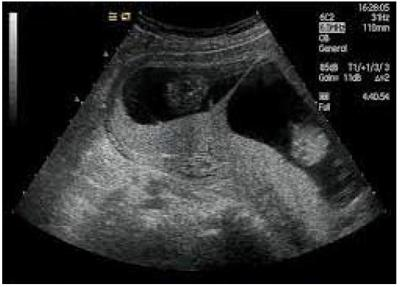
A Imperfeita.
B Monoamniótica.
C Monocoriônica diamniótica.
D Dicoriônica.
Revisar: possível letra faltando em enunciado
Questão 1136 · Obstetrícia · 4000196448Foi realizado um estudo sobre a capacidade da ultrassonogra a diagnosticar câncer em nódulos mamários em 200 pacientes atendidas no ambulatório de mama de um hospital terciário. As impressões das ultrassonogra as foram comparadas aos resultados dos exames anatomopatológicos das biópsias dos nódulos. A ecogra a classi cou como malignos 40 dos 50 nódulos com biópsias positivas para malignidade e como benignos 140 dos 150 nódulos com biópsias negativas para malignidade. Qual foi a sensibilidade da ecografia para diagnóstico do câncer de mama nesse estudo?
A 7%.
B 25%.
C 80%.
D 93%.
Questão 1137 · Obstetrícia · 4000196447Foi realizado um estudo sobre a capacidade da ultrassonogra a diagnosticar câncer em nódulos mamários em 200 pacientes atendidas no ambulatório de mama de um hospital terciário. As impressões das ultrassonogra as foram comparadas aos resultados dos exames anatomopatológicos das biópsias dos nódulos. A ecogra a classi cou como malignos 40 dos 50 nódulos com biópsias positivas para malignidade e como benignos 140 dos 150 nódulos com biópsias negativas para malignidade. Qual foi o valor preditivo positivo da ecografia no diagnóstico do câncer de mama nesse estudo?
A 7%.
B 25%.
C 80%.
D 93%.
Questão 1138 · Obstetrícia · 4000196446Um estudo descreveu que 70% dos fetos com trissomia do cromossomo 21 e 2% dos fetos euplóides apresentavam osso nasal hipoplásico no exame morfológico realizado entre 11 semanas e 13 semanas e 6 dias. Qual foi a razão de verossimilhança positiva do marcador osso nasal hipoplásico para o diagnóstico de trissomia do cromossomo 21 nesse estudo?
A 1,4.
B 3,3.
C 15,0.
D 35,0.
Questão 1139 · Obstetrícia · 4000196445Um estudo descreveu que 70% dos fetos com trissomia do cromossomo 21 e 2% dos fetos euplóides apresentavam osso nasal hipoplásico no exame morfológico realizado entre 11 semanas e 13 semanas e 6 dias. Qual foi a razão de verossimilhança negativa do marcador osso nasal hipoplásico para o diagnóstico de trissomia do cromossomo 21 nesse estudo?
A 0,3.
B 0,4.
C 0,7.
D 0,9.
Questão 1140 · Trabalho de parto prematuro TPP · Predição e prevenção de prematuridade · 4000196444Intercorrências obstétricas obstetrícia patológica Primigesta, feto único, sem doenças, assintomática, colo impérvio ao toque, apresenta medida de colo de 20 mm com 20 semanas, sem outras alterações. Qual a recomendação?
A Acompanhamento de rotina.
B Repouso absoluto e medida seriada de colo.
C Medida seriada de colo e iniciar progesterona se encurtamento progressivo.
D Iniciar progesterona vaginal imediatamente.
Questão 1141 · Trabalho de parto prematuro TPP · Predição e prevenção de prematuridade · 4000196443Fatores de risco para prematuridade Secundigesta, feto único, sem doenças, assintomática, antecedente de parto prematuro espontâneo com 30 semanas, em uso de progesterona vaginal na atual gestação, colo impérvio ao toque, apresenta a seguinte imagem na avaliação de colo realizada com 18 semanas: Qual a recomendação?
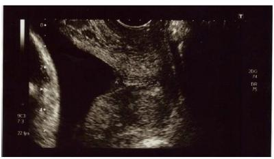
A Manter progesterona vaginal e repetir a medida em 1 semana.
B Manter progesterona vaginal e repetir a medida em 2 semanas.
C Cerclagem imediata.
D Amniodrenagem e cerclagem de emergência.
Questão 1142 · Obstetrícia · 4000196442Gestante aloimunizada (anticorpos anti-D, titulação 1/256), sem outras doenças, assintomática, apresenta medida do pico de velocidade sistólica da artéria cerebral média fetal de 63 cm/s, equivalente a 1,88 múltiplos da mediana (MoM), com 26 semanas. Sem sinais de hidropisia fetal ou outras alterações na avaliação ecográfica obstétrica. Qual a recomendação?
A Repetir a avaliação em 2 semanas.
B Cardiotocografia computadorizada e, se alterada, cordocentese com preparo para transfusão sanguínea fetal.
C Realizar espectrofotometria do líquido amniótico e, se alterada, cordocentese com preparo para transfusão sanguínea fetal.
D Cordocentese com preparo para transfusão sanguínea fetal.
Questão 1143 · Datação da gestação · Cálculo da idade gestacional pela ultrassonograf ia IG USG · 4000196441Cálculo idade gestacional pela data da última menstruação IG DUM Uma paciente dá entrada no pronto atendimento (PA) em início de trabalho de parto. Revendo a datação da gestação você encontra as seguintes informações no cartão de pré-natal: - pela data da última menstruação a idade gestacional (IG) seria de 36 semanas. - pelo exame físico da primeira consulta do cartão de pré-natal a IG seria de 41 semanas. - pela ecografia feita com 10 semanas a IG seria de 38 semanas. - pela medida da altura uterina na admissão ao PA a IG seria de 34 semanas. - pela ecografia feita na admissão ao PA a IG seria de 35 semanas. Com estas informações você define que a paciente encontra-se hoje com qual IG?
A 35 semanas.
B 36 semanas.
C 38 semanas.
D 41 semanas.
Questão 1144 · Obstetrícia · 4000196440Qual dos seguintes parâmetros de vitalidade fetal mais fortemente se associa com acidose no sangue de cordão umbilical ao nascimento?
A Índice de pulsatilidade da artéria umbilical acima do percentil 95.
B Índice de pulsatilidade da artéria cerebral média abaixo do percentil 5.
C Oligoâmnio.
D Ducto venoso com onda "a" reversa.
Questão 1145 · Obstetrícia · 4000196439O líquido amniótico passa a ser produzido principalmente pelo feto a partir de qual idade gestacional?
A 10 semanas.
B 16 semanas.
C 22 semanas.
D 28 semanas.
Questão 1146 · Obstetrícia · 4000196438Na avaliação Dopplervelocimétrica das artérias umbilicais de um feto de 24 semanas, pequeno para a idade gestacional, sem alterações detectadas na avaliação morfológica e com líquido amniótico normal, observou- se o seguinte padrão: Diante deste padrão e com as informações anteriores podemos inferir que:
A Embora haja aumento da resistência nas artérias umbilicais, mais provavelmente trata-se de feto constitucionalmente pequeno para a idade gestacional.
B Trata-se de feto pequeno para a idade gestacional por insuficiência placentária, mas ainda com pequeno (< 10%) comprometimento da perfusão placentária.
C Trata-se de feto pequeno para a idade gestacional por insuficiência placentária, já com grande (cerca de 50%) comprometimento da perfusão placentária.
D Trata-se de um feto pequeno para a idade gestacional por insuficiência placentária, já em acidose por hipóxia grave.
Questão 1147 · Classif icação · Diagnóstico · Diagnóstico da síf ilis · 4000193757Na presença de VDRL positivo e teste treponêmico negativo, deve-se suspeitar de:
A Sífilis recente.
B Sífilis tardia.
C Doenças auto-imunes, malária, hanseníase.
D Neurossífilis.
Questão 1148 · Métodos de indução do parto · 4000193753Primigesta de 41 semanas e 1/7, com boa vitalidade fetal, encontra-se com o seguinte exame obstétrico: colo amolecido, impérvio, medianizado, esvaecido 60%, apresentação cefálica em plano zero deDeLe. É correto afirmar que:
A A indução do parto pode ser feita com ocitocina.
B É necessário amadurecer o colo com misoprostol para induzir o parto.
C As condições são desfavoráveis para indução de parto, devendo-se sugerir cesárea.
D Deve-se realizar a amniotomia para desencadear o trabalho de parto.
Questão 1149 · Tocólise · 4000193752Para inibição de trabalho de parto podem ser usados agentes tocolíticos. Qual dos medicamentos listados abaixo NÃO é utilizado nessa situação?
A Nifedipina
B Hidralazina.
C Indometacina.
D Terbutalina.
Questão 1150 · Diagnóstico · Teste oral de tolerância à glicose 75g TOTG 75g · 4000193751Gestante traz os seguintes exames: glicemia de jejum na 12ª semana = 90mg/dL. Teste oral de tolerância a glicose (com 75g) na 24ª semana: jejum=90mg/dL; após 1 hora= 140mg/dL e após 2horas 120mg/dL. Trata- se de:
A diabetes gestacional
B diabete melito pré-existente.
C ausência de diabetes gestacional.
D resistência insulínica.
Questão 1151 · Citomegalovirus na gestação CMV · 4000193750Para quais gestantes é necessário fornecer orientações sobre prevenção de infecção congênita pelo citomegalovírus?
A Para todas, independente do estado sorológico.
B Somente para as que apresentem IgG negativa.
C Somente para aquelas com baixa avidez de IgM.
D Somente para as que apresentem tanto IgG quanto IgM negativas.
Questão 1152 · Fatores de risco · 4000193749É considerado fator de risco para descolamento prematuro de placenta:
A Oligoâmnio.
B Polidrâmnio.
C Multiparidade.
D Idade materna inferior a 20 anos.
Questão 1153 · Parada secundária da descida · 4000193748Primigesta, 39 semanas, em trabalho de parto. Foi elaborado o seguinte partograma (seta=analgesia). É correto afirmar que, nesse momento, deve-se:
A realizar a amniotomia.
B ministrar ocitocina.
C indicar cesárea.
D aplicar vácuo-extrator.
Questão 1154 · Insinuação · 4000193747No mecanismo de parto em apresentação cefálica, assinale a definição correta:
A Descida: passagem da cabeça fetal pelo estreito inferior.
B Rotação posterior: momento em que o lambda fica voltado para a pube.
C Rotação externa: momento em que a cabeça fetal roda para iniciar o desprendimento cefálico.
D Insinuação: a passagem do diâmetro biparietal pelo estreito superior.
Questão 1155 · Inf ecção Urinária e Bacteriúria Assintomática na gestação ITU · 4000193484Em relação a antibiótico profilaxia para o estreptococo do grupo B na gestação, é INCORRETO afirmar:
A Preconiza-se o rastreio da colonização pelo EGB em gestantes entre a 35ª e 37ª semanas de gravidez.
B No caso de cultura positiva, não se recomenda tratar durante a gestação.
C O antibiótico de eleição é a penicilina cristalina.
D Nas cesáreas eletivas com bolsa íntegra, não há necessidade de fazer antibiótico profilaxia intraparto, mesmo nas colonizadas.
E Nas cesáreas eletivas, com cultura positiva para EGB, fazer antibiótico profilaxia intraparto.
Questão 1156 · Imunizaçao na gestação · 4000193482Quais as vacinas indicadas na gestação?
A Hepatite B e tríplice viral.
B Influenza e HPV.
C Tríplice bacteriana e hepatite B.
D Varicela e covid-19.
E Hepatite B e pneumocócica 13 valente.
Questão 1157 · Tonus atonia uterina · 4000193481Qual a primeira escolha no tratamento da hemorragia pós-parto por atonia?
A Histerectomia puerperal.
B Tamponamento intrauterino.
C Ligadura das artérias hipogástricas.
D Infusão de ocitocina.
E Sutura de B-Lynch.
Questão 1158 · Predição e prevenção de prematuridade · 4000193480São exames subsidiários para predição do parto pré-termo, EXCETO:
A Avaliação do comprimento do colo uterino.
B Fibronectina fetal.
C Interleucinas.
D Hormônio liberador de corticotrofina.
E Progestogênios.
Questão 1159 · Clínico · 4000193479São fatores que propiciam o uso de metotrexate para o tratamento clínico da gravidez ectópica, EXCETO:
A Atividade cardíaca embrionária.
B Tamanho e volume da massa (<4cm).
C Ausência de sangue na cavidade peritoneal.
D Baixa concentração inicial de BETA-hCG (<5000mUI/ml).
E Estabilidade hemodinâmica.
Questão 1160 · Variedade de posição · 4000193478Qual a variedade de posição mais frequente nas apresentações cefálicas?
A Occípito esquerda posterior.
B Occípito esquerda anterior.
C Occípito direita anterior.
D Occípito direita posterior.
E Occípito sacra.
Questão 1161 · Préeclâmpsia com sinais de gravidade · 4000193477GMR, 19 anos, gestante com 36 semanas, apresentando ganho acentuado de peso há cerca de 10 dias atrás. Hoje, chega ao pronto atendimento com cefaléia intensa, escotomas e epigastralgia contínua. Qual o diagnóstico mais provável?
A Eclâmpsia.
B DHEG.
C Síndrome HELLP.
D Iminência de eclampsia.
E Esofagite de refluxo.
Questão 1162 · Diagnóstico · 4000193476DAG, 27 anos, chega no pronto socorro com queixa de dor contínua e discreta em fossa ilíaca direita, atraso menstrual de 7 semanas, e pequeno sangramento vaginal escuro e intermitente. Trouxe dosagem de B-hCG recente com 2500 mUI/ml. Escolha a alternativa mais provável:
A Abortamento completo.
B Prenhez ectópica.
C Menstruação fisiológica.
D Hemorragia disfuncional.
E Mola hidatiforme.
Questão 1163 · Tratamento da toxoplasmose na gestação · 4000193475Paciente procura o pré-natal com exames de toxoplasmose: IgM e IgG positivos por ELISA. Encontra-se na 12ª semana de gestação. A pesquisa de avidez revela taxas altas. Qual a conduta nesse caso?
A Interrupção da gestação pelo risco de malformações.
B Iniciar espiramicina de imediato.
C Orientar o casal que é infecção pregressa.
D Indicar amniocentese.
E Fazer esquema tríplice.
Questão 1164 · Síndrome HELLP · 4000193253A Síndrome HELLP foi descrita pela 1ª vez em 1982, por Weinstein. O primeiro caso de ruptura hepática espontânea na gravidez foi descrito em 1844, por Abercrombie. Trata-se de uma forma severa de manifestação de pré-eclâmpsia. A análise laboratorial revela hemólise, aumento de enzimas hepáticas > 3-5 vezes o valor normal e uma queda de plaquetas abaixo de 100.000. Em aproximadamente 2% dos casos desta síndrome, ocorre severo sangramento e ruptura de cápsula hepática, sendo a principal causa de morte materna, o sangramento sem controle e complicações decorrentes do choque hemorrágico e anemia aguda. As taxas de morte materna variam de 60-86%. Na abordagem terapêutica da Síndrome HELLP:
A Devemos interromper a gestação e encaminhar a paciente para o centro de referência em transplante de fígado o mais breve possível.
B Devemos estabilizar hemodinamicamente a paciente em ambiente de UTI; postergar a gestão até próximo do termo. Posteriormente, caso seja necessário, submeter a paciente a laparotomia e empacotamento hepático para controle do sangramento.
C Devemos interromper a gestação, submeter a paciente a laparotomia de urgência e empacotamento do fígado. Pode ser usada cola de fibrina, ligadura de artéria hepática, embolização por radiointervenção, hepatectomia segmentar e até mesmo transplante hepático.
D Jamais deve-se interromper a gestação sem prévia autorização da mãe ou parentes próximos. Proceder com arteriografia seletiva e embolização do vaso sangrante.
Questão 1165 · Diagnóstico · Quadro clínico · 4000193174Gestante de 36 semanas procura serviço de emergência com queixa de sangramento vaginal de grande monta. Ao examinar, observa-se altura uterina de 34cm, tônus normal, atividade uterina ausente, batimentos cardiofetais de 140bpm, exame especular com sangramento vermelho vivo em fundo de saco e colo fechado. Qual o diagnóstico mais provável para essa situação?
A Placenta prévia.
B Descolamento prematuro da placenta.
C Hermoâmnio.
D Trabalho de parto prematuro.
Questão 1166 · Tratamento f armacológico · Eclâmpsia · 4000193169Em um pronto socorro de obstetrícia, o médico está avaliando uma primigesta de 28 semanas, com feto vivo e sem dinâmica uterina. No momento do exame, a paciente tem uma convulsão. O que se deve fazer?
A Acionar a equipe de neurologia de urgência.
B Solicitar uma sala de urgência no centro obstétrico.
C Realizar o esquema de sulfato de magnésio na urgência.
D Ministrar fenitoina endovenosa.
Questão 1167 · Rotura uterina · Rotura uterina · 4000193168Gestante (G1 P0) de 37 semanas, em trabalho de parto na pré-parto, com contrações rítmicas, BCF de 140bpm, colo dilatado para 7,0cm, zero de DeLee. No ápice de uma contração, a paciente sentiu uma dor lancinante, intensa e que após esse episódio para a dinâmica uterina, a pressão arterial cai para 90 x 60mmHg. O que deve fazer?
A Realizar cesárea decorrente da provável ruptura uterina.
B Indicar cesárea de urgência devido à suspeita de descolamento de placenta.
C Colocar a paciente de lado e esperar o retorno da dinâmica uterina.
D Introduzir ocitocina endovenosa para conduzir a dinâmica uterina.
Questão 1168 · Tocólise · Conduta na RPM entre 24 a 33 67 semanas · Corticóide · 4000193167Gestante de 33 semanas procura o serviço de obstetrícia com queixa de dor em baixo ventre e perda de líquido pela vagina há 6 horas. Ao examinar, percebe-se a dinâmica uterina de uma contração de trinta segundos em dez minutos, batimentos cardíacos fetal de 150bpm, pressão arterial de 120/80mmHG. Exame especular revela saída de líquido amniótico pelo colo uterino, que está dilatado para dois centímetros. Qual a conduta para esse caso?
A Iniciar a condução da dinâmica uterina com ocitocina.
B Realizar a cesárea após a corticoterapia por 48 horas.
C Prescrever sulfato de magnésio para neuroproteção e inibir o trabalho de parto.
D Inibir o trabalho de parto por 48 horas e corticoterapia.
Questão 1169 · Medidas gerais · Tonus atonia uterina · 4000193166O médico é chamado na enfermaria da puerpério, com urgência, para examinar uma paciente que teve um parto vaginal há 40 minutos. No exame, percebem-se útero aumentado de volume e acima da cicatriz umbilical, sangramento vaginal intenso, pressão arterial de 90/60mmHG. A paciente já está com dois acessos venosos. O que se deve fazer?
A Encaminhar a paciente para uma histerectomia puerperal.
B Massagem uterina, já seria suficiente para cessar a hemorragia.
C Prescrever derivados do ergot com ocitocina endovenosa.
D Prescrever ácido tranxemico, ocitocina e misoprostol.
Questão 1170 · Segundo periodo expulsivo · Cardiotocograf ia intraparto · O trabalho de parto e o parto · 4000193165O médico está acompanhando uma primigesta no período expulsivo do trabalho de parto já há quarenta minutos. Exame obstétrico: dinâmica uterina de quatro contrações em dez minutos, apresentação cefálica etida (OP) em +2 de DeLee. Ao realizar uma cardiotocogra a, ele se depara com esse resultado abaixo. Qual a melhor condução dessa situação?
A Continuar acompanhando o trabalho de parto.
B Indicar cesárea por sofrimento fetal.
C Realizar o fórcipe de alívio.
D Movimentar a paciente para a posição de litotomia.
Questão 1171 · Avaliação do risco gestacional · 4000193159Para o uso de fármacos na gravidez deve-se ter conhecimento sobre a ação desses no organismo materno e suas repercussões no feto. Embora vários projetos de classificação do uso dos fármacos na gravidez estejam em curso, ainda é adotada a classificação do FDA (Food and Drugs Administration). Sobre essa classificação e o uso de drogas na gravidez pode-se afirmar que:
A A classificação, de acordo com o FDA, consiste em 6 grupos A, B, C, D, E e X.
B O grupo X compreende o grupo de medicamentos que ainda não foi testado o uso na gravidez.
C O grupo D compreende os medicamentos para os quais os estudos animais revelam efeitos adversos no feto, mas sem estudos controlados na mulher. Podem ser ministrados se o benefício justificar o potencial teratogênico.
D O grupo A compreende os medicamentos para os quais os estudos controlados em mulheres não demonstram risco para o feto quando administrados no primeiro ou nos demais trimestres. A possibilidade de lesão fetal é remota.
Questão 1172 · Procedimentos invasivos em medicina f etal · 4000193158Os principais procedimentos invasivos diagnósticos realizados durante a gravidez são amniocentese, cordocentese e Biopsia de Vilo Corial. É correto afirmar sobre esses procedimentos que:
A a amniocentese precoce de 11 a 14 semanas aumenta a chance de complicações, dentre elas brida amniótica e tálipe equinovaro.
B a cordocentese pode ser indicada para avaliação da anemia fetal e ser indicada com 11 semanas de gestação.
C a amniocentese pode ser utilizada apenas para fins diagnósticos, não tendo indicação para fins terapêuticos.
D a biopsia de vilo corial é realizada preferencialmente após a 12ª semana de gestação a fim de ter maior especificidade.
Questão 1173 · Aspiraçao manual intra uterina AMIU · 4000193157Paciente, 28 anos, primigesta, apresentando sangramento em moderada quantidade com início há 4 horas, deu entrada no pronto socorro obstétrico. Refere-se ao atraso menstrual de 8 semanas, apresentava ecogra a realizada há 4 dias com gestação tópica única, com embrião de 8 mm com bce de 90 bpm. Ao efetuar o exame, foi constatado no toque vaginal, colo uterino pérvio com sangramento em grande quantidade. Foi realizada nova ultrassonogra a endovaginal, apresentando eco encometrial heterogeneo medindo 25mm. Qual a conduta mais adequada para este caso?
A Orientar a paciente a ter conduta expectante.
B Realizar o esvaziamento uterino com AMIU.
C Repetir a ecografia após 1 semana.
D Realizar colocação de misoprostol via vaginal.
Questão 1174 · Diagnóstico · 4000193156Paciente GILPNLA0, idade gestacional de 25 semanas, retorna com exames solicitados ao pré-natal. O exame de TOT 75g apresentou os seguintes valores: Jejum = 89mg/dl, 1 hora após = 160mg/dl, 2 horas após = 170mg/dl. No primeiro trimestre apresentou glicemia de jejum de 91mg/dl. Sobre esse caso podemos afirmar que:
A o exame de TOT 75g apresentou um valor alterado, portanto, a paciente pode ser diagnosticada como diabética gestacional.
B a paciente já poderia ser considerada diabética gestacional devido ao exame do primeiro trimestre.
C a paciente apresentou alteração no TOT 75g em 2 valores, devendo repetir o exame para diagnóstico de diabetes gestacional.
D os valores dos exames estão normais.
Questão 1175 · Manobras de desprendimento da cabeça derradeira · 4000193155A apresentação pélvica está presente em 4% das gestantes no termo. Constitui condição de maior risco, tanto pelas di culdades intrínsecas do parto pélvico quanto pelas circunstâncias desfavoráveis. Sobre o parto pélvico podemos afirmar que:
A a manobra de Mauriceau tem como objetivo flexionar o polo cefálico do feto, na cabeça derradeira, utilizando um dedo introduzido na boca do feto para facilitar a flexão.
B o fórcipe mais adequado e utilizado na cabeça derradeira é o fórceps de Simpson.
C a apresentação pélvica simples é quando o feto apresenta as coxas e pernas fletidas, com os pés junto às nádegas.
D a manobra de Rojas, constitui uma manobra rotacional do feto com objetivo de desprender a cabeça derradeira.
Questão 1176 · Inf ecção Urinária e Bacteriúria Assintomática na gestação ITU · 4000193073Mariana, 30 anos, relata atraso menstrual e diz que o teste de urina comprado na farmácia se mostrou positivo para gestação. Está surpresa, pois não havia planejado, mas conta que sua família recebeu bem a notícia e a está apoiando. Mariana não tem lhos, vive com seu companheiro há 3 anos. Nega problemas de saúde ou uso de medicamentos regulares. Diz ser alérgica a nitrofurantoína. Na primeira consulta, a médica de família e comunidade deixou- a falar sobre seus sentimentos e expectativas em relação à gravidez, além de questioná-la sobre possíveis fatores de risco gestacional. No exame físico, a pressão arterial estava 110/70 mmHg e o índice de massa corporal (IMC) 24,0Kg/m². A médica de família e comunidade solicitou exames laboratoriais previstos para o primeiro trimestre de gestação, prescreveu ácido fólico e combinaram uma nova consulta em 4 semanas. No retorno, com 12 semanas de amenorreia, Mariana está mais tranquila, sem sintomas. O exame físico não possui alterações e os exames complementares solicitados mostram hemoglobina (Hb) 12,0; tipo sanguíneo O+; glicemia de jejum 88 mg/dL; exame analítico de urina sem proteinúria, nitrito negativo, glicosúria negativa, hemoglobinúria negativa; urocultura com > 100.000 unidades formadoras de colônias (UFC) por mL de E. coli, sensível a nitrofurantoína, amoxicilina e sulfametoxazol com trimetoprima; IgM não reagente e IgG reagente para toxoplasmose; veneral disease research laboratory (VDRL) não reagente; anti- HIV não reagente, antígeno de superfície para hepatite B (HbsAg) não reagente. Qual a impressão diagnóstica e a conduta mais adequadas para esse caso?
A Bacteriúria assintomática; solicitar novo exame de urina com urocultura para confirmação
B Bacteriúria assintomática; prescrever amoxicilina sem necessidade de repetir urocultura após 7 dias de término de tratamento
C Bacteriúria assintomática; prescrever nitrofurantoína e repetir urocultura após 7 dias de término de tratamento
D Bacteriúria assintomática; orientar aumentar a ingesta hídrica e repetir exames no terceiro trimestre de gestação
Questão 1177 · Inf ecção Urinária e Bacteriúria Assintomática na gestação ITU · 4000193061Em relação aos cuidados de pré-natal é correto afirmar que:
A Deve-se realizar rastreio de todas as gestantes para hepatites B e C com pesquisa de HBsAg e anti-HCV na primeira consulta de pré-natal e no terceiro trimestre.
B Deve-se indicar profilaxia antibiótica para mulheres que apresentaram dois ou mais episódios de infecção do trato urinário na gestação, independente da presença ou não de fatores predisponentes.
C As gestantes suscetíveis à rubéola (IgG não reagente) e a hepatite B (HBsAg não reagente e esquema vacinal desconhecido ou incompleto) devem ser orientadas a se vacinarem no puerpério imediato.
D Gestante com exame positivo para sífilis deve realizar tratamento com penicilina e monitoramento subsequente com teste não treponêmico a cada trimestre e no momento do parto.
Questão 1178 · Dieta · Diagnóstico · Controle glicêmico · 4000193051Ana, de 37 anos, faz acompanhamento pré-natal com a sua equipe de saúde da família. Iniciou pré-natal com 8 semanas e tem uma boa adesão ao acompanhamento. Na primeira consulta, fora solicitada glicemia de jejum pela enfermeira da equipe com resultado de 91 mg/dL e a avaliação do estado nutricional de Ana foi peso: 58,2kg, altura: 1,73m, IMC 19,4 kg/m². Agora, ela retorna em consulta com idade gestacional de 28 semanas e traz laboratoriais para você avaliar, coletados com 25 semanas. Dentre eles, o teste de tolerância oral à glicose com sobrecarga de 75g apresenta o seguinte resultado: jejum: 92 mg/dL; após 1h: 170 mg/dL; após 2h: 156 mg/dL. Assinale a alternativa que contenha, respectivamente, sua avaliação e o plano diante desse caso:
A Diabetes gestacional, iniciar terapia farmacológica, atividade física e controle alimentar
B Diabetes mellitus, iniciar terapia farmacológica, atividade física e controle alimentar
C Não há diagnóstico de diabetes, sendo que os valores de glicemia são apenas próximos dos valores de referência.
D Diabetes gestacional, controle de glicemia capilar em jejum, atividade física e controle alimentar.
Questão 1179 · Avaliação do risco gestacional · Antecedentes f amiliares · Programação da gestação · 4000193049Manuela, 26 anos, trabalha como contadora, vem à consulta relatando que está tentando engravidar. Possui um parceiro xo, que se relaciona há um ano e atualmente estão indo morar juntos. Refere que a relação foi con ituosa no início devido à descoberta de in delidade por parte dele. Fazia uso de método contraceptivo hormonal injetável mensal até quatro meses atrás, quando realizou a última aplicação. Nega uso de outros medicamentos contínuos. Realizou a coleta de exame citopatológico do colo uterino há um ano. Ao avaliar seus antecedentes familiares, a mãe possui diabetes mellitus tipo 2 e o pai hipertensão arterial sistêmica. Em relação aos seus hábitos de vida, diz que se alimenta com frequência com alimentos fritos e doces e ingere cerca de 1,5 L de água por dia. Possui di culdade em realizar atividade física devido à falta de tempo. Questionada sobre o uso de substâncias, relata beber álcool quase todos os nais de semana, mas não fuma e nunca fez uso de outras drogas. Ao exame físico, a pressão arterial é de 140/90 mmHg e o índice de massa corporal 27. A medida da sua cintura é de 87 cm. Acerca do caso clínico apresentado, assinale a alternativa mais correta no que diz respeito aos cuidados pré- concepcionais:
A Solicitar sorologia para rubéola, exame de urina, hemoglobina, hematócrito, antígeno de superfície para hepatite B e anti-HIV.
B O uso de álcool pode ser mantido até que se confirme o diagnóstico de gravidez.
C Não é indicado perda de peso para a paciente, visto que ela deve manter sua dieta habitual.
D Deve-se indicar ácido fólico pelo menos 30 dias antes da concepção e mantê-lo até o final da gestação.
Questão 1180 · Parto · Transmissão vertical TV · 4000193030Magda foi diagnosticada com HIV aos 19 anos e desde então faz acompanhamento regular com sua equipe de atenção primária, tendo se mantido desde o início da terapia antirretroviral (TARV) sempre indetectável. Com o apoio e supervisão da equipe engravidou pela primeira vez agora, aos 34 anos, e vem realizando pré- natal sem qualquer intercorrência, mantendo uso regular da TARV e carga viral (CV) sempre indetectável. Considerando o nal da gestação, Magda tem algumas dúvidas sobre o acompanhamento nal, parto e primeiros cuidados com o bebê em relação à possibilidade de exposição ao HIV. Assinale a alternativa correta:
A Será possível que Magda amamente o bebê, considerando seu histórico de carga viral indetectável.
B Existe a indicação de cesárea eletiva a partir da 38 semana para reduzir/evitar risco de transmissão vertical.
C Como a carga viral está indetectável não será indicado a zidovudina (AZT) intraparto independente da via de parto.
D O recém-nascido não precisará fazer uso do AZT solução oral, já que sua mãe está indetectável, caso a via de parto seja cesariana
Questão 1181 · Préeclâmpsia com sinais de gravidade · PréEclâmpsia · 4000192839Em relação às disfunções orgânicas relacionadas à Pré-eclâmpsia com agravamento, é correto afirmar que
A ocorrem leucopenia e anisocitose.
B ocorrem aumento de PLGF (placental growth factor) e diminuição do sFlt-1 (soluble fms-like tyrosine kinase 1).
C ocorre aumento de transaminases hepáticas pelo menos 2 vezes maior que o normal.
D ocorre diminuição da função renal com diminuição da creatinina.
E alteração da permeabilidade vascular ocasiona hemodiluição.
Questão 1182 · Assistência ao parto na gestação multipla · Complicações · 4000192834Em relação às gestações gemelares, assinale a alternativa correta.
A Primeiro gemelar em apresentação não cefálica permite tentativa de parto vaginal, na dependência do peso estimado fetal.
B Os casos de restrição seletiva de crescimento fetal só ocorrem nas gestações dicoriônicas.
C Gestação gemelar com 1 cesárea anterior é indicação de cesárea.
D Para corticoprofilaxia, deve-se usar o dobro da dose de corticoide.
E Gestações monocoriônicas e monoamnióticas devem ser interrompidas com 32 semanas.
Questão 1183 · Complicações f etais · Crescimento f etal · 4000192831Em relação às complicações no parto de gestante diabética, é mais frequente a ocorrência de
A distócia de biacromial.
B apresentações anômalas.
C hipertonia uterina.
D distócia de trajeto.
E período de latência prolongado.
Questão 1184 · Testes imunológicos · Manif estações clínicas e congênitas · Diagnóstico · 4000192830Nos últimos anos, tem-se observado aumento significativo do número de casos de Sí lis na gestação. Em relação a esse fato, é correto afirmar que
A o diagnóstico deve ser confirmado por um teste treponêmico – VDRL (Venereal Disease Research Laboratory).
B a maior parte dos recém-nascidos infectados são sintomáticos ao nascimento.
C é bem infrequente uma gestante apresentar doença clínica, já que as lesões de fase primária, o cancro, ocorrem em canal vaginal ou colo de útero e passam despercebidas.
D a transmissão vertical será menor quanto mais avançada for a idade gestacional.
E teste rápido positivo não autoriza o início do tratamento, pois se trata de um teste não treponêmico.
Questão 1185 · Antibioticoprof ilaxia para EGB na RPM · Conduta na RPM entre 24 a 33 67 semanas · 4000192828Primigesta de 33 semanas apresenta o diagnóstico de rotura prematura das membranas ovulares. Está correto, segundo a abordagem terapêutica,
A o uso de sulfato de magnésio hepta-hidratado para neuroproteção fetal.
B a indução imediata do trabalho de parto com misoprostol.
C o uso de progesterona natural micronizada por via oral.
D a corticoprofilaxia com prednisona oral.
E o uso imediato de ampicilina após coleta de cultura para Streptococcus agalactiae.
Questão 1186 · Abortamento completo · 4000192819G2 P0 A1, com gestação de 9 semanas e 3 dias, chega ao pronto-socorro com queixa de sangramento genital com cólicas em baixo ventre de forte intensidade há 4 horas. Apresenta-se em bom estado geral, corada e afebril. Frequência cardíaca de 88 bpm e pressão arterial de 100 x 70 mmHg. O exame especular revela sangramento em pequena quantidade saindo pelo orifício externo do colo uterino. O toque mostra colo pérvio para uma polpa digital. A ultrassonogra a endovaginal apresenta cavidade uterina vazia e regiões anexiais sem anormalidades. Trata-se de abortamento
A completo.
B em curso.
C incompleto.
D evitável.
E retido.
Questão 1187 · Inf ecção Urinária e Bacteriúria Assintomática na gestação ITU · 4000192818Gestante de 8 semanas, assintomática, apresenta na 1ª consulta de pré-natal urocultura com presença de Escherichia coli 80000 unidades formadoras de colônia. A conduta correta é:
A tratamento com antibiótico apenas na presença de sintomas urinários.
B nova coleta de amostra de urina para repetição do exame.
C tratamento com antibiótico baseado no antibiograma e na sensibilidade da gestante.
D orientação de aumento de ingestão de frutas vermelhas.
E análise conjunta com exame do sedimento urinário.
Questão 1188 · De trajeto · Distocia f uncional de objeto de trajeto · Trajeto duro · 4000192816É complicação comumente associada à miomatose uterina no parto:
A inversão uterina.
B rotura uterina.
C placenta prévia.
D distócia de trajeto.
E perfuração uterina.
Questão 1189 · Corticóide · 4000192814O uso de corticoide antenatal, para amadurecimento pulmonar fetal, relaciona-se à diminuição temporária
A dos leucócitos.
B da movimentação fetal.
C do líquido amniótico.
D da oxigenação fetal.
E da glicemia materna.
Questão 1190 · Fatores de risco · 4000192811Com relação à ocorrência do descolamento prematuro de placenta normalmente inserida, é correto a rmar que
A a diabetes melitus é a complicação clínica mais comumente associada.
B a amniotomia só deve ser realizada em casos com óbito fetal.
C o sangramento, em geral, é indolor.
D a ocorrência de descolamento em gestação anterior é o principal fator de risco.
E em 20% dos casos, o acretismo placentário está presente.
Questão 1191 · Quadro clínico · Fatores de risco · 4000192768Mulher de 30 anos, G2POA1 (ectópica anterior, com tratamento conservador utilizando metotrexate), comparece em consulta na maternidade com queixa de sangramento há 4 dias, com discreta dor tipo cólica em região hipogástrica. Realizou dosagem de beta HCG há 2 dias: 1200 mUl/mL, e ultrassonogra a sem evidência de gestação. Foi admitida para observação e realização de novos exames, que mostraram beta HCG: 1600 mUl/mL e ultrassonografia com imagem paraovariana à direita, heterogênea, com fluxo ao estudo Doppler e cavidade endometrial vazia, sem líquido livre em pelve. A videolaparoscopia foi realizada, confirmando (gravidez ectópica íntegra, que foi resolvida com salpingectomia unilateral. Em relação à gravidez ectópica, assinale a alternativa correta:
A A tríade clássica de sintomas de gravidez ectópica é dor, amenorreia e hemorragia vaginal, porém esse grupo de sintomas está presente em apenas 30% das pacientes.
B A gravidez tubária representa em torno de 75% de todas as gravidezes ectópicas, sendo que a gravidez ampular corresponde a 45% dessas.
C A gravidez ectópica ovariana representa 2,7 - 5,2% de todas as gravidezes ectópicas e é o tipo mais comum de gestação ectópica não tubária.
D São fatores de risco independentes e consistentemente demonstrados para o aumento da incidência de gestação tubária; doença inflamatória pélvica prévia; gravidez tubária prévia; uso atual de DIU e cirurgia tubária prévia.
E A gravidez ectópica tubária é a principal hipótese diagnóstica suspeitada em qualquer paciente com quadro de dor súbita e sangramento vaginal de dor súbita e sangramento vaginal com gravidez em torno de 16 semanas.
Questão 1192 · Tratamento · 4000192767Mulher de 33 anos, G3P2C0A0, com idade gestacional de 33 semanas e 2 dias, comparece à emergência obstétrica com queixa de dor abdominal de moderada intensidade, leucorreia fétida e febre aferida hoje com temperatura axilar de 38ºC. Ao exame: altura uterina: 30cm; dinâmica uterina: 2 contrações fortes em 10 minutos, com duração de 70 segundos; pressão arterial: 130 x 80 mmHg; batimentos cardíacos fetais: 140 batimentos/minutos. Ao exame especular é observada saída de secreção purulenta pelo orifício do colo. Toque vaginal: dilatação de 5 cm, com colo no, anterior. Cardiotocogra a realizada mostrou padrão reativo, categoria 1. Qual deve ser a conduta?
A Antibioticoterapia e assistência ao trabalho de parto, ao parto e ao puerpério.
B Internação, inibição de trabalho de parto e corticoterapia intravenosa materna.
C Resolução da gestação por via alta imediatamente, considerando a vitalidade fetal.
D Antibioticoterapia, inibição do trabalho de parto e início de corticoterapia materna.
E Internação, aceleração do trabalho de parto com misoprostol e corticoterapia para tratar o processo inflamatório materno.
Questão 1193 · Distócia de ombro · 4000192766O trabalho de parto se caracteriza por uma síndrome, que após seu diagnóstico deve ser acompanhado por equipe multipro ssional a m de evitar desfechos desfavoráveis e, caso surjam intercorrências, uma pronta atuação da equipe deve ser iniciada para proteção do binômio mãe-feto. Uma das complicações mais temidas durante o segundo período do trabalho de parto é a distócia de ombros, que é uma complicação dramática em obstetrícia. Para solucioná-la podemos utilizar os seguintes recursos, exceto:
A Manobra de Mac Roberts.
B Manobra de Rubin I.
C Posição de Running Start.
D Manobra de Gaskin (all fours).
E Vácuo-extrator.
Questão 1194 · Rastreamento de anomalias cromossômicas · 4000192764O acompanhamento de Pré-natal é de extrema importância para assistência à paciente gestante visando prevenir doenças na mãe e no feto, bem como tratar as intercorrências que surjam ao longo da gestação e para programação de assistência ao recém-nato. Neste contexto, os exames complementares utilizados englobam os de laboratório e os exames de ultrassonografia. Em relação aos exames de imagem ultrassonográ ca podemos a rmar que a avaliação de Transluscência nucal:
A Deve ser realizada entre 11 e 13 semanas e 6 dias de idade gestacional e o valor desta avaliação corresponde à medida em centímetros da prega cervical.
B Não prediz patologias genéticas, apenas morfológicas.
C Não deve ser realizada em pacientes sem fatores de risco.
D Apresenta sensibilidade baixa e especificidade alta para cromossomopatias.
E Representa risco de distúrbios hematológicos.
Revisar: possível letra faltando em enunciado
Questão 1195 · Segundo periodo expulsivo · 4000192763Mulher, 25 anos, secundigesta (1 parto vaginal prévio),com 39 semanas de gestação, chega para atendimento na admissão da maternidade do Hospital Público de Macaé (HPM) em trabalho de parto na sua fase ativa. Ao exame está lúcida, orientada no tempo e no espaço, hidratada, normocorada, levemente dispneica, PA: 100 x 80 mmHg, TAx: 36,5º C. O útero tem o tônus aumentado e apresenta contrações de 50 segundos de duração a cada 4 minutos, os batimentos cardíacos fetais estão na faixa de 140 bpm. O toque vaginal revela colo centrado, curto, dilatado 7 cm, feto em ODP (occipito direita posterior), em plano - 1 de De Lee, bolsa íntegra. Escolha a alternativa que contém os tempos do mecanismo de parto mais provável, nesse caso.
A Rotação interna de 225 graus no sentido anti-horário, hipomóclio por deflexão e rotação externa- horária.
B Rotação interna de 135 graus no sentido horário, hipomóclio por deflexão e rotação externa anti- horária.
C Insinuação por deflexão, rotação interna de 45 graus no sentido anti-horário e hipomóclio por deflexão.
D Insinuação por assinclitismo, rotação interna de 135 graus no sentido-horário e hipomóclio em flexão.
E Rotação interna de 45 graus no sentido anti-horário, hipomóclio por flexão e rotação externa anti- horária.
Questão 1196 · Parada secundária da descida · 4000192758A.L.L.M., 30 anos, G1P0A0, com idade gestacional de 39 semanas e 3 dias está sendo acompanhada na maternidade do Hospital Público de Macaé (HPM) após ter sido admitida com diagnóstico de trabalho de parto em seu 1º período, por apresentar contrações uterinas com frequência de uma contração a cada 5 minutos com duração de 50 segundos, colo 70% apagado e dilatado em 3 cm, apresentação cefálica alta e bolsa amniótica íntegra. Durante a internação apresenta evolução do trabalho de parto segundo o partograma abaixo. Das opções abaixo, escolha a que representa o diagnóstico na nona hora e a melhor conduta a ser adotada.
A Parada secundária da descida por distocia de colo; indicar cesariana imediatamente, pois já ultrapassou a linha de alerta.
B Parada secundária da dilatação por distocia funcional; colocar a paciente em posição de quatro apoios.
C Fase ativa prolongada por contratilidade uterina insuficiente; usar misoprostol para acelerar o trabalho de parto.
D Parto taquitócico por distocia funcional; colocar oxigênio em cateter nasal com fluxode 5 L/min.
E Parada secundária da descida por desproporção céfalo-pélvica; indicar cesariana quando atingir a linha de ação.
Questão 1197 · Eclâmpsia · 4000192757Uma mulher de 19 anos, G2P1C1A0 com 37 semanas de gestação, chega à maternidade com queixa de cefaleia importante, dor em terço superior do abdome e percepção de escotomas cintilantes, sendo diagnosticada como pré-eclâmpsia grave e/ou eclâmpsia iminente com base na sua medida de pressão arterial, que é de 180 x 100 mmHg e proteinúria de 3+ medida por tira reagente. A paciente recebe sulfato de magnésio, e desenvolve rubor e fadiga. Ela pergunta sobre a necessidade do sulfato de magnésio e o médico explica que é para prevenir convulsões que podem complicar a pré-eclâmpsia e até causar morte. A paciente pergunta como as convulsões associadas à pré-eclâmpsia podem causar a morte. Qual das alternativas abaixo é o mecanismo mais comum?
A Infarto do miocárdio.
B Anormalidades hidroeletrolíticas.
C Hemorragia intracerebral.
D Aspiração brônquica de secreção laríngeas.
E Insuficiência hepática aguda.
Questão 1198 · Cardiopatias na gestação · 4000192755Uma mulher de 23 anos, tercigesta, com história prévia de um parto cesáreo há 2 anos e um aborto retido há 1 ano, com 40 semanas de gestação, chega à maternidade com queixa de dispneia significativa. Ao exame, a frequência cardíaca é de 120 bpm e a frequência respiratória é de 36 ipm e forçada. A saturação de O² em ar ambiente é de 85%. Foi realizada uma tomogra a computadorizada de tórax, que revelou in ltrados pulmonares bilaterais e aumento da silhueta cardíaca. Qual das alternativas abaixo é o mecanismo para os sintomas dessa paciente?
A Diminuição da contratilidade cardíaca por miocardiopatia periparto.
B Broncoespasmo e doença reativa das vias aéreas.
C Extravazamento capilar e lesão pulmonar, síndrome do desconforto respiratório agudo (SDRA).
D Inflamação, pneumonite intersticial.
E Estado hipercoagulável e embolia amniótica.
Questão 1199 · Quadro clínico · 4000192684Em relação à gravidez de implantação ectópica, a região mais comumente afetada é:
A Ampular.
B Cervical.
C Intersticial.
D Cicatriz de cesárea anterior.
Questão 1200 · Relação entre a idade gestacional e achados ultrassonográf icos · 4000192680Cálculo da idade gestacional pela ultrassonograf ia IG USG Paciente comparece ao pré-natal com idade gestacional mal definida, de aproximadamente 8 semanas. É solicitado exame de ultrassom. Avalie as assertivas em relação a esse exame. I – O exame nesta fase permite datar a gestação com maior precisão que os exames subsequentes. II – O principal parâmetro para cálculo de idade gestacional nessa fase é o diâmetro do saco gestacional. III – Nessa fase já é viável o cálculo da idade gestacional pelas medidas de comprimento do fêmur e diâmetro biparietal. É correto o que se afirma em:
A II, apenas.
B I e II, apenas.
C II e III, apenas.
D I, apenas.
Questão 1201 · Ameaça de abortamento · 4000192675Primigesta de 23 anos com idade gestacional de 8 semanas procura o pronto atendimento com queixa de sangramento vaginal em pequena quantidade e cólicas leves. Ao exame físico, o colo uterino impérvio ao toque e pouco sangue escuro dedo de luva. A ultrassonogra a visualizou embrião intrauterino com batimentos cardíacos presentes. O diagnóstico mais provável é:
A descolamento prematuro de placenta.
B gravidez ectópica.
C ameaça de abortamento.
D mola parcial.
Questão 1202 · Relação entre a idade gestacional e achados ultrassonográf icos · 4000192672Cálculo da idade gestacional pela ultrassonograf ia IG USG No caso de existir discrepância no cálculo da idade gestacional pelos diversos métodos, a preferência se dará por:
A Medida da altura uterina.
B Medida do CCN no ultrassom inicial.
C Data da última menstruação.
D Medida do diâmetro biparietal no ultrassom de segundo trimestre.
Questão 1203 · Rastreamento de anomalias cromossômicas · 4000192483Sobre o uso da ultrassonogra a no estudo de malformações durante o período gestacional, está INCORRETA a afirmativa:
A O rastreio ultrassonográfico de aneuploidias ocorre entre 11 e 13 semanas;
B O rastreio cardíaco deve ser realizado entre 20 e 24 semanas;
C A ecocardiografia fetal pode ser realizada preferencialmente com 14 semanas em casos de TN aumentada;
D O diabetes materno mal controlado pode evoluir com hipertrofia cardíaca no primeiro trimestre.
Questão 1204 · Apresentação · 4000192481Sobre apresentação fetal durante a gravidez, qual está correta?
A A altura está alta e móvel quando a apresentação não toma contato com o estreito superior.
B A altura da apresentação está ajustada quando ultrapassa o estreio superior
C A altura da apresentação está insinuada quando o lambda transpõe a área do estreito superior.
D O encaixamento é a passagem do diâmetro biparietal fetal pelo estreito médio da bacia.
Questão 1205 · Imunizaçao na gestação · 4000192480Qual vacina é segura na gravidez?
A Sarampo;
B Sabin;
C Febre Amarela;
D Antirrábica.
Questão 1206 · Métodos de indução do parto · 4000192478Quanto ao uso de ocitocina no trabalho de parto, é correto afirmar que:
A Aumenta a intensidade e diminui a frequência das contrações quando diluída em soro fisiológico.
B Seu uso deve ser limitado a parada de progressão associada a hipoatividade da matriz uterina
C Reduz taxas de cesariana quando utilizada para acelerar o trabalho de parto
D Deve ser administrada sob perfusão venosa em bolus.
Questão 1207 · Hepatites na gestação · 4000192474Uma mulher gravida e portadora do vírus B da hepatite (HbsAg positivo), com 33 semanas de idade gestacional, pré-natal sem intercorrências procura orientação médica para não contaminar seu bebê. A conduta para a prevenção da transmissão vertical da doença é aplicar:
A Imunoglobulina humana até o 7º dia e vacina até uma hora de vida.
B Imunoglobulina específica (HBIG) logo ao nascimento e vacina até o 7º dia.
C Imunoglobulina específica (HBIG) até o 7º dia e vacina até 24 horas de vida.
D Imunoglobulina humana logo ao nascimento e vacina com 30 dias.
Questão 1208 · Transmissão vertical TV · Inf ecções congênitas · 4000192426Neonato, 39 semanas, peso de nascimento 3620 g, nascido de parto cesáreo, foi exposto ao HIV. A mãe não realizou pré-natal, fez uso irregular de terapia antirretroviral e não tinha carga viral conhecida. As medicações indicadas para esse recém-nascido até 28 dias de vida, conforme o Ministério da Saúde do Brasil (2021), são
A Lamivudina, Nevirapina e Zidovudina.
B Lamivudina, Raltegravir e Zidovudina.
C Nevirapina, Raltegravir e Zidovudina.
D Lamivudina, Nevirapina e Raltegravir.
Questão 1209 · Assistência ao parto normal · 4000192409Pesquisa Streptococcus do grupo B Strepto B EGB swab para pequisa Strepto B Primigesta, 17 anos, IG 38 semanas e 4 dias, pré-natal sem intercorrências, procura atendimento em emergência obstétrica por contrações regulares e sangramento vaginal há 10 horas. Ao exame físico, apresenta sinais vitais estáveis, AU 34 cm, BCF 156 bpm, DU 3/10' com duração de 50"; exame especular com presença de secreção mucoide, sem sangramento ativo; TV colo no, centrado, 6 cm, bolsa íntegra, cefálico, plano 0 de De Lee. Traz cartão da gestante com 8 consultas, tipagem sanguínea A positivo, sorologias negativas de terceiro trimestre, glicemia e teste de tolerância a glicose normais, urocultura com Streptococcus agalactiae (realizou tratamento adequado há 30 dias, sem urocultura após). Em relação ao caso descrito, assinale a alternativa correta.
A Paciente encontra-se em fase ativa do trabalho de parto. Está indicada a internação hospitalar com início imediato de penicilina.
B Deve-se realizar cesárea pelo risco de sepse neonatal precoce, já que não há urocultura após tratamento de infecção urinária.
C Trata-se de fase latente prolongada em gestante primigesta, sendo necessária a internação hospitalar imediata para indução do trabalho de parto com amniotomia.
D Paciente encontra-se em fase ativa do trabalho de parto. Está indicada a internação hospitalar com cardiotocografia contínua pela suspeita de restrição de crescimento fetal e risco de corioamnionite.
Questão 1210 · Abaixo de 34 semanas · 4000192408Primigesta, 23 anos, com idade gestacional de 31 semanas, chega ao centro obstétrico apresentando temperatura axilar de 38°C, FC 115 bpm e com perda de líquido via vaginal. Nega queixas de disúria ou dor lombar. Ao exame abdominal, feto único com BCF 170 bpm, altura uterina de 28 cm, dorso à esquerda, apresentação cefálica, aumento da sensibilidade uterina e dinâmica de uma contração a cada 10 minutos. Ao exame especular, ui líquido pelo colo, que está aparentemente fechado. Não foi realizado exame de toque. Hemograma com leucocitose e desvio à esquerda. Diante do quadro clínico, além da internação hospitalar e do uso de antibiótico, qual é a melhor conduta?
A Corticoide e sedação do trabalho de parto
B Corticoide e observação por 48 horas
C Cesariana imediata
D Indução do parto
Questão 1211 · Tocólise · Cálculo da idade gestacional pela ultrassonograf ia IG USG · 4000192406Primigesta, 18 anos, com história de ciclos oligomenorreicos, consultou por atraso menstrual de 15 semanas. Na ocasião, realizou ultrassonogra a que constatou embrião único com comprimento crâniocaudal compatível com gestação de 9 semanas. Com 37 semanas de atraso menstrual, essa paciente chega à emergência obstétrica com contrações regulares a cada 5 minutos, colo com 2 cm de dilatação e altura uterina de 33 cm. Em relação ao caso, a melhor conduta é considerar a idade gestacional
A da ultrassonografia (31 semanas) e tomar medidas para inibir o trabalho de parto.
B da última menstruação (37 semanas) e acompanhar a evolução do trabalho de parto.
C de 34 semanas (média entre o atraso menstrual e a ultrassonografia) e acompanhar evolução do trabalho de parto.
D de 33 semanas, baseada na altura uterina atual, e tomar medidas para inibir o trabalho de parto.
Questão 1212 · Citomegalovirus na gestação CMV · Manif estações clínicas e congênitas · 4000192405Manif estações congênitas Gestante, 24 anos, G1PO, IG: 18 semanas, é encaminhada ao ambulatório de Medicina Fetal após diagnóstico de soroconversão de anticorpos IgM para citomegalovírus na gestação. Em relação ao caso, afirma-se: I. É necessário realizar pesquisa de avidez da imunoglobulina G para datar a infecção. II. A investigação de infecção fetal pode ser realizada por meio de demonstração direta do citomegalovírus ou de pesquisa com técnica de reação em cadeia da polimerase em amostra de líquido amniótico. III. Restrição de crescimento, microcefalia, hepatoesplenomegalia são achados ultrassonográ cos possíveis no caso de infecção fetal. Estão corretas as afirmativas
A I e II, apenas.
B I e III, apenas.
C II e III, apenas.
D I, II e III.
Revisar: possível letra faltando em enunciado
Questão 1213 · Imunizaçao na gestação · 4000192403Gestante, 23 anos, G2Pn1AO, IG:20+2 por ultrassonogra a realizada com 10 semanas, comparece à segunda consulta de pré-natal, assintomática, para mostrar resultados de exames laboratoriais realizados no primeiro trimestre. Hemograma completo normal; tipagem saunguínea O; Rh positivo; eletroforese de Hb AA; glicose de jejum 90 mg/dL; EQU normal; urocultura negativa; sorologias negativas. Conforme a carteira de vacinação, realizou as três doses de DT com 19 anos e reforço com DTPa há 1 ano; realizou três doses da vacina para hepatite B em 2018. Nessa consulta, foram solicitados hemograma, EQU e urocultura com teste. Em relação ao caso, deve-se solicitar ainda: I. Ecogra a obstétrica com avaliação da morfologia fetal e medida da transluscência nucal, entre 20 e 24 semanas. II. Teste de tolerância oral de glicose, entre 18 e 22 semanas, período de pico do hormônio lactogênio placentário, que aumenta a resistência à insulina. III. A realização da vacina da DTPa nesta gestação, mesmo a paciente tendo realizado um reforço há 1 ano. Está/Estão correta(s) apenas a(s) alternativa(s)
A I.
B III.
C I e II.
D II e II.
Questão 1214 · Conduta obstétrica · 4000192402Primigesta, 37 anos, com idade gestacional de 36 semanas, chega ao centro obstétrico, com carta médica do posto de saúde solicitando avaliação materna e fetal devido à PA 142/92 mmHg na consulta de pré-natal. Ao exame físico no centro obstétrico, PA 146/94 mmHg, altura uterina de 35 cm, batimentos cardiofetais de 146 bpm, sem contrações uterinas e toque vaginal com BISHOP de 1. Qual é a conduta a ser realizada para essa paciente?
A Mais uma aferição da pressão arterial em 60 minutos e, se normal, liberar a paciente com controle pressórico.
B Rastreio para pré-eclâmpsia e, se positivo, internar a paciente, monitorar mãe e feto e planejar parto com 37 semanas.
C Nova aferição da pressão arterial e, se alterada, internar a paciente e encaminhar para cesariana, devido à hipertensão gestacional.
D Rastreio para pré-eclâmpsia e, se positivo, internar a paciente e encaminhar para cesariana.
Questão 1215 · Cardiopatias na gestação · 4000192362Mulher de 35 anos, sem histórico de doença cardiovascular, apresenta edema agudo de pulmão 18 horas após o parto de uma gravidez gemelar. A pressão arterial era de 100 x 60 mmHg, a frequência cardíaca de 110bpm, regular. Na ausculta cardíaca, ritmo de galope, com terceira bulha presente, sopro protossistólico suave em área mitral e tricúspide. Ao eletrocardiograma, ritmo de taquicardia sinusal; ao ecocardiograma, valvas normais e fração de ejeção de ventrículo esquerdo de 35%. Qual o diagnóstico mais provável?
A Embolia amniótica.
B Estenose Mitral.
C Cardiomiopatia periparto.
D Cardiomiopatia hipertrófica.
Questão 1216 · Corticóide · 4000192220De acordo com o Ministério da Saúde, os seguintes princípios devem ser adotados para melhorar os efeitos da terapia com o surfactante: I- Estimular o uso de corticoide antenatal em gestantes de risco para parto prematuro; II- Implementar recursos su cientes de pessoal, equipamentos e laboratório para o cuidado de RN com insu ciência de múltiplos órgãos. Além disso, manter vigilância constante da qualidade do atendimento a esses pacientes; III- Preferir os preparados contendo surfactante endógeno de animais, exceto nas situações em que a lesão inflamatória é extensa, como na síndrome do desconforto respiratório - SDR grave, pneumonias, síndrome de aspiração meconial - SAM e na síndrome do desconforto respiratório agudo – SDRA; IV- Iniciar com dose de 10 mg/kg de fosfolípides. Caso o paciente apresente melhora da função pulmonar, manter essa dose se houver necessidade de novo tratamento. Nas situações em que há lesão inflamatória extensa (SDR grave, pneumonias, SAM e SDRA), considerar o uso de doses maiores, próximas a 15 mg/kg de fosfolípides. A necessidade de doses adicionais deve ser individualizada. Dos itens acima:
A Apenas os itens III e IV estão corretos.
B Apenas os itens I e II estão corretos.
C Apenas os itens I e III estão corretos.
D Apenas os itens II e III estão corretos.
E Apenas os itens II e IV estão corretos.
Revisar: possível letra faltando em enunciado
Questão 1217 · Conduta · 4000192211Nos casos de aborto séptico, o ginecologista deve solicitar dosagem de bilirrubinas, em casos de: I- Necessidade de culturas para aeróbios e anaeróbios; II- Suspeita de corpo estranho intrauterino e em situações onde há suspeita de perfuração uterina ou intestinal; III- Suspeita de embolia pulmonar por desprendimento de êmbolos sépticos. Dos itens acima:
A Nenhum dos itens está correto.
B Apenas os itens I e II estão corretos.
C Apenas os itens I e III estão corretos.
D Apenas os itens II e III estão corretos.
E Todos os itens estão corretos.
Questão 1218 · Pielonef rite · Inf ecção Urinária e Bacteriúria Assintomática na gestação ITU · 4000192210A pielonefrite aguda (PNA), é definida como "infecção do trato urinário alto", que afeta, principalmente, o Sistema Coletor Renal, de forma aguda. É antibiótico indicado para tratamento da PNA durante a Gravidez:
A Cloranfenicol.
B Tetraciclina.
C Cefalexina.
D Ciprofloxacino.
E Eritromicina (estolato).
Questão 1219 · Conduta na corioamnionite · 4000192209A corioamnionite ou infecção ovular caracteriza-se como um processo inflamatório agudo e, às vezes, difuso das membranas extraplacentárias, placa coriônica da placenta e cordão umbilical. Sobre a corioamnionite, considere a alternativa correta:
A É mais comum em casos de membranas íntegras.
B Gardnerella vaginalis é o agente, comumente, envolvido.
C Os achados clínicos associados à corioamnionite aguda que se desenvolve na gravidez a termo são, frequentemente, malignos.
D O líquido amniótico pode apresentar-se sanguinolento ou turvo.
E Se for indicada uma cesariana, proteger a cavidade com compressas, para reduzir a contaminação bacteriana intraperitoneal. Lavar cavidade, fazer suturas com pontos separados, inclusive no útero infectado.
Questão 1220 · Avaliação da vitalidade f etal intraparto · 4000192208MMGT, 25 anos, deu entrada no hospital, 39 semanas de gestação, com relatos de contrações uterinas a cada 5 minutos, de acordo com seu controle e do marido. O Ginecologista de plantão decide mantê-la em observação, e verifica a presença de 4 cm de dilatação ao toque. Durante o exame, o médico decide utilizar o sonar Doppler. Sobre esse recurso, temos que: I-Deve-se realizar a ausculta antes, durante e imediatamente após uma contração, por pelo menos 1 minuto e a cada 30 minutos, registrando como uma taxa única; II- O médico deve palpar o pulso materno se alguma anormalidade for suspeitada para diferenciar os batimentos fetais e da mãe; III- Deve-se registrar acelerações e desacelerações se ouvidas. Dos itens acima:
A Apenas o item II está correto.
B Apenas os itens I e II estão corretos.
C Apenas os itens I e III estão corretos.
D Apenas os itens II e III estão corretos.
E Todos os itens estão corretos.
Questão 1221 · Interpretação · Parâmetros da cardiotocograf ia · 4000192207Na CTG, a frequência cardíaca fetal basal (FCF) é definida como FCF média calculada em determinado tempo. É anormal a FCF de:
A 115 bpm – bradicardia.
B 158 bpm – taquicardia.
C 108 bpm – bradicardia.
D 144 bpm – taquicardia.
E 120 bpm – bradicardia.
Questão 1222 · Hipertensão gestacional · Tratamento f armacológico · 4000192206Paciente, 39 anos, primigesta com 35 semanas de gestação é acompanhada no ambulatório de pré-natal de alto risco por hipertensão gestacional estando em uso de alfametildopa 750mg/dia. Na consulta médica apresenta-se sem queixas. Após 30 minutos de decúbito lateral esquerdo, apresenta PA=160x100 mmHg. A atividade uterina ausente e BCF= 147bpm. A cardiotocografia mostrou feto ativo e reativo. Qual a conduta mais adequada para o caso acima:
A Retorno em uma semana para reavaliação de vitalidade fetal e curva pressórica domiciliar.
B Aumentar a dose de alfametildopa para 1,5g dia e observação clínica domiciliar.
C Internação para complementar a avaliação da vitalidade fetal e resolução da gravidez.
D Internação, hidralazina endovenosa e exames de comprometimento sistêmico.
Questão 1223 · Criterios diagnósticos da préeclampsia · Conduta obstétrica · 4000192205Préeclâmpsia com sinais de gravidade Gestante, com idade gestacional de 36 semanas de gestação, procura a emergência referindo cefaleia occipital intensa náuseas e turvação visual. Ao exame clínico: PA=140x90mmHg, pulso=95bpm, ACP sem alterações, dinâmica uterina ausente e BCF=148pm. Apresenta traços de proteína na avaliação da urina por fita. Qual a hipótese diagnóstica e a melhor conduta?
A Pré-eclâmpsia grave, iniciar sulfato de magnésio e indicar a resolução da gestação.
B Pré-eclâmpsia grave, fazer corticoide e indicar a resolução da gestante.
C Pré-eclâmpsia leve, prescrever analgésico e aguardar a resolução da gestação a termo.
D Pré-eclâmpsia leve, iniciar sulfato de magnésio e aguardar a resolução da gestação a termo.
Questão 1224 · Teste oral de tolerância à glicose TOTG · Teste oral de tolerância à glicose 75g TOTG 75g · 4000192204Entre os critérios para diagnóstico de diabetes gestacional se inclue:
A Glicemia de jejum > 95 mg/dL.
B Hemoglobina glicada > 6,5%.
C Glicemia no teste oral de tolerância à glicose (de 75 g) com 1 hora > 190mg/dL.
D Glicemia no teste oral de tolerância à glicose (de 75 g) com 2 horas > 153mg/dL.
Questão 1225 · Diagnóstico · Classif icação · Crescimento intrauterino restrito · 4000192203Quando observamos disparidade na idade gestacional calculada a partir do polo cefálico em comparação com o restante da biometria composta, podemos considerar estar diante de um caso de:
A Sofrimento fetal crônico.
B Síndrome de Potter.
C CIUR simétrico.
D CIUR assimétrico.
Questão 1226 · Prognóstico · Diagnóstico · Crescimento intrauterino restrito · 4000192202Na ultrassonogra a, quando fazemos o diagnóstico de CIUR, um dos parâmetros que corresponde ao sofrimento fetal crônico é:
A Polidrâmnio.
B Oligoidrâmnio.
C Movimentos fetais ausentes.
D Taquicardia fetal.
Questão 1227 · Síndrome da transf usão f etof etal STFF · Gestação monoamniótica · 4000192201Em gestações monocarióticas e monoamnióticas, síndrome de transfusão gêmelogemelar, o feto receptor apresenta:
A Oligoidrâmnio.
B Insuficiência cardíaca congestiva.
C Anemia.
D Polidrâmnio.
Questão 1228 · Altura uterina AU · 4000192200Na vigésima semana de gestação única o fundo de útero chega a altura de:
A Apêndice xifoide.
B Sínfise pública.
C Cicatriz umbilical.
D Entre cicatriz umbilical e sínfise pública.
Questão 1229 · Modif icações f isiológicas da gestação · Sistema cardiovascular e hematopoiético · 4000192199Sobre as modificações fisiológicas do organismo materno durante a gestação normal, é correto afirmar:
A Há um estado de hipercoagulabilidade.
B Há um aumento na concentração de albumina e baixa das globulinas.
C A resistência vascular periférica está aumentada.
D O volume sanguíneo é reduzido em cerca de 30%.
Questão 1230 · O trabalho de parto e o parto · 4000192198As contrações uterinas assumem tríplice gradiente descendente:
A Na fase puerperal.
B No início do trabalho de parto.
C Quando a dilatação do colo atinge 6 cm.
D No período expulsivo.
Questão 1231 · Insinuação · 4000192197Em apresentações cefálicas de etidas de 1º, 2º, 3º graus, os pontos de referência fetais são respectivamente:
A Lambda, glabela e mento.
B Bregma, glabela e mento.
C Glabela, mento e bregma.
D Bregma, lambda e mento.
Questão 1232 · HIV na gestação · Inf ecções congênitas · 4000192120O nosso país atualmente apresenta quedas nas taxas de transmissão vertical do HIV. Este fato é decorrente de medidas pro láticas, envolvendo cuidados com o binômio mãe recém-nascido. Medidas como o aumento do número de diagnósticos realizados durante o pré-natal, utilização da terapia antirretroviral e medidas pro láticas para o recémnascido contribuíram para esse cenário (Pascom et al.,2020). Gestante, portadora do vírus HIV há cerca de 3 anos, não faz uso de terapia antirretroviral, deu entrada no Hospital e Maternidade Dona Íris, em trabalho de parto. Recém nascido com peso ao nascimento de 3150 gramas, Capurro de 39 semanas e 2 dias. Qual (is) antirretroviral (is) este recém nascido deverá receber?
A AZT (zidovudina) por 42 dias.
B AZT (zidovudina) por 28 dias e NVP (nevirapina) por 3 dias.
C AZT (zidovudina) , NVP (nevirapina) e 3TC (lamivudina) por 28 dias.
D AZT (zidovudina) , 3TC (lamivudina) e RAL (raltegravir) por 28 dias.
Questão 1233 · Sinais de probabilidade de gestação · 4000192109O sinal de Kluge, um dos sinais de probabilidade de gravidez, é caracterizado por:
A Simetria uterina à palpação.
B Amolecimento do istmo uterino.
C Coloração violácea da vagina.
D Assimetria uterina à palpação.
Questão 1234 · Cálculo da data provável do parto DPP regra de Negele · 4000192107Paciente com queixa de atraso menstrual e BHCG positivo, deseja saber a data provável do parto. Considerando a data da última menstruação 04/07/2021 e utilizando a regra de Naegele, a data provável será:
A 13/03/2022.
B 11/04/2022.
C 11/03/2022.
D 13/04/2022.
Questão 1235 · Imunizaçao na gestação · 4000192106M.T.B., 22 anos, G1P0, Idade Gestacional:18 semanas, compareceu à primeira consulta de pré-natal sem o cartão vacinal. Refere que o mesmo foi extraviado durante mudança recente. Seguindo as orientações do Ministério da Saúde, quais vacinas deverão ser realizadas nesta primeira consulta?
A Hepatite B, dTpa, Influenza.
B Hepatite B, dTpa.
C Influenza, dTpa.
D Hepatite B, Influenza.
Questão 1236 · Aborto retido · 4000192105A.M.C., 32 anos, G3P2A0, Idade Gestacional:12 semanas pela 1ª ultrassonogra a, assintomática. Realizou ultrassonogra a morfológica de 1º trimestre não sendo visualizados os batimentos cardíacos fetais, sendo encaminhada à maternidade. Qual a melhor conduta a ser adotada?
A Conduta expectante com reavaliação em 3 a 4 semanas.
B Uso de misoprostol para expulsão fetal + curetagem uterina.
C Preparo de colo com misoprostol + curetagem uterina.
D Preparo de colo com misoprostol + AMIU.
Questão 1237 · Seguimento pós molar · 4000192103Durante o seguimento pós-molar após esvaziamento uterino, o principal exame a ser realizado é?
A Ultrassonografia transvaginal.
B Raio X de tórax.
C BHCG quantitativo.
D BHCG qualitativo.
Questão 1238 · Conduta na RPM entre 24 a 33 67 semanas · 4000192102C.S.A., 17 anos, G1P0, Idade Gestacional: 30 semanas e 6 dias, deu entrada na maternidade com quadro de dor em baixo ventre. Ao exame, apresentava: FU = 29cm, BCF = 136bpm, tônus uterino normal, Atividade Uterina: 3/10’/40’’, colo 70% apagado, dilatado 3 cm, feto cefálico, bolsa íntegra. Diante do quadro descrito, quais medicações deverão ser utilizadas para a maturação pulmonar e neuroproteção fetais, respectivamente?
A Betametasona, Sulfato de magnésio.
B Dexametasona, Ácido Fólico.
C Betametasona, Nifedipina.
D Dexametasona, Salbutamol
Questão 1239 · PréEclâmpsia · 4000192100O início do uso do ácido acetilsalicílico de baixa dose para prevenção de PréEclâmpsia é recomendado:
A Após 20 semanas de gestação.
B Antes de 12 semanas de gestação.
C A partir de 18 semanas de gestação.
D Antes de 16 semanas de gestação.
Questão 1240 · Diagnóstico · 4000192098Na avaliação da Restrição do Crescimento Fetal, a medida ultrassonográ ca que apresenta maior sensibilidade é a (o):
A Circunferência cefálica.
B Circunferência abdominal.
C Comprimento do fêmur.
D Diâmetro biparietal.
Revisar: possível letra faltando em enunciado
Questão 1241 · Diagnóstico · 4000192096J.S., 36 anos, G3PN2A0, Idade Gestacional :14 semanas, retorna para a segunda consulta de pré-natal. Trouxe resultados dos exames da rotina de 1º trimestre sem alterações, com exceção de glicemia de jejum = 130mg/dL. A gestante referida deverá ser referenciada ao pré-natal de alto risco devido ao diagnóstico de:
A Diabetes Gestacional.
B Diabetes Pré-gestacional.
C Pré-Diabetes.
D Intolerância aos carboidratos.
Questão 1242 · Terceiro periodo dequitação · 4000192095O manejo ativo do terceiro período do Trabalho de Parto consiste em medidas que visam reduzir os casos de Hemorragia Pós-Parto. Dentre as medidas recomendadas, a PRINCIPAL é:
A Clampeamento oportuno do cordão umbilical.
B Tração controlada do cordão umbilical.
C Massagem uterina após dequitação.
D Uso de ocitocina após o parto.
Questão 1243 · Fases clínicas do parto · Dinâmica uterina · 4000192016A contratilidade uterina indolor que tem início em torno de 30 semanas de gestação leva o nome de:
A Bandeamento.
B Braxton-Hicks.
C Puxos vaginais.
D Hipercinesia.
Questão 1244 · Predição e prevenção de prematuridade · 4000192014O sinal ultrassonográ co de agregado espesso de partículas no liquido amniótico próximo ao orifício interno do colo uterino, que pode ser usado como preditivo de prematuridade, tem o nome de:
A Sludge.
B Mecônio.
C Corpo lamelar.
D Vérnix.
Revisar: possível letra faltando em enunciado
Questão 1245 · Sistema endócrino e metabolismo · 4000192013É hormônio de produção exclusiva do sinciciotrofoblato:
A Beta estradiol.
B Prolactina.
C Lactogênio placentário humano.
D Noretisterona.
Questão 1246 · Síndrome da transf usão f etof etal STFF · 4000192012Em gestação gemelar diamniótica, onde foi feito o diagnóstico de síndrome de transfusão feto-fetal, o shunt envolvido frequentemente é:
A Arteriovenoso.
B Venovenoso.
C Linfovenoso.
D Arterioarterial.
Questão 1247 · Fatores de risco · 4000192011A situação que não condiz com aumento do risco de inserção baixa de placenta é:
A Multiparidade.
B Desnutrição materna.
C Lesões endometriais.
D Idade materna acima de 35 anos.
Questão 1248 · Desenvolvimento f etal · 4000192009A suplementação periconcepcional com ácido fólico reduz o risco de ocorrência de DFTN. O não fechamento do neuróporo cefálico pode levar à:
A Espinha bífida com meningocele.
B Espinha bífida com mielosquise.
C Anencefalia.
D Holoprosencefalia.
Questão 1249 · Diagnóstico na gestação · Rastreamento na gestação · 4000192006Primigesta de 12 semanas de gestação, traz seus exames de pré-natal e entre os resultados observa-se sorologia para Toxoplasmose IgM+ em título baixo, IgG+ com alta avidez (85%). Indique a interpretação correta sobre os resultados laboratoriais:
A Toxoplasmose materna aguda.
B Toxoplasmose materna antiga, há mais de 12 semanas.
C Toxoplasmose materna e fetal aguda.
D Paciente susceptível a Toxoplasmose.
Questão 1250 · Clínico · 4000191994A gravidez ectópica que apresenta possibilidade de tratamento com metotrexate é:
A Com Bhcg de 22.000 mUI/mL.
B Embrião com BCF presente.
C Com saco gestacional de 3,0 cm.
D Com rotura.
Questão 1251 · Trombof ilia na gestação · 4000191989Em gestantes com SAF (Síndrome anti-fosfolípide), são mais comuns, exceto:
A Diabete.
B Prematuridade.
C Abortamentos.
D Restrição de crescimento fetal.
Questão 1252 · Abortamento inevitável · 4000191960Josefa tem 36 anos e teve seu lho saudável há quatro anos. Vem à Unidade de Saúde referindo sangramento por via vaginal há duas horas e refere teste de gravidez positivo há uma semana. Última menstruação há sete semanas. Ao exame físico: afebril, corada, hidratada. Abdome ácido, indolor. Especular: moderada quantidade de sangramento em vagina, sem restos ovulares. Toque vaginal: colo amolecido e pérvio 1 polpa digital. Útero aumentado de volume, compatível para gestação de sete semanas. Sobre esse caso clínico, é correto afirmar que
A se trata de abortamento completo.
B se trata de abortamento inevitável.
C a ausência de restos ovulares na vagina descarta a possibilidade de abortamento incompleto.
D como Josefa já tem um filho saudável, a chance do abortamento ser por aneuploidia é pequena.
E se trata de ameaça de abortamento e a paciente deve retornar para casa, com orientação de repouso e abstinência sexual.
Questão 1253 · Relação entre a idade gestacional e achados ultrassonográf icos · 4000191959Relação entre valores de beta HCG e achados ultrassonográf icos Luiza de 18 anos é primigesta, nulípara e fez ultrassom transvaginal que evidenciou saco gestacional para cinco semanas ainda sem embrião no seu interior. A alternativa que contém a melhor conduta é
A encaminhar para internamento e colocar misoprostol.
B indicar curetagem após internação.
C repetir ultrassom com 14 dias.
D apenas observar e aguardar evolução do abortamento.
E tranquilizar a paciente da evolução normal da gestação e iniciar acompanhamento de pré-natal, indicando nova ultrassonografia apenas para estudo morfológico de primeiro trimestre.
Questão 1254 · Acretismo placentário · 4000191957Sônia está gestante com 33 semanas e já teve 4 cesáreas prévias. Em ultrassonogra a, a placenta encontra- se anterior na região do segmento inferior. Nesse caso, a alternativa que contém a complicação que mais preocupa é
A acretismo placentário.
B trabalho de parto prematuro.
C rotura prematura de membranas.
D apresentação pélvica ou transversa.
E descolamento prematuro da placenta.
Questão 1255 · Variáveis · 4000191923Para avaliar o bem estar fetal em gestações de alto-risco, o Per l Biofísico Fetal utiliza parâmetros que tem uma sequência lógica de progressão, baseado no seu surgimento ao longo da gravidez. Então é sabido que o primeiro parâmetro que se altera na hipoxemia fetal é:
A Tônus fetal.
B Movimentos fetais.
C Movimentos respiratórios fetais.
D Volume de líquido amniótico.
Questão 1256 · Cálculo da data provável do parto DPP regra de Negele · 4000191922Uma gestante com data da última menstruação em 27 de março de 2021 tem como data provável do parto:
A 03 de dezembro de 2021.
B 10 de janeiro de 2022.
C 10 de dezembro de 2021.
D 03 de janeiro de 2022.
Questão 1257 · Transmissão vertical TV · 4000191920Em gestante HIV positivo, adequadamente tratada durante o pré-natal, com carga viral indetectável no momento do parto e contagem de linfócitos CD4 elevado, realizando cesárea programada, a chance de contaminação do feto gira em torno de:
A 4 a 5%.
B 6 a 8%.
C em torno de 10%.
D 1 a 2%.
Questão 1258 · Def inição · 4000191919Um dos fatores que propicia o tríplice gradiente descendente é o fato de o marcapasso uterino se encontrar:
A na região ístmica da trompa.
B no colo uterino.
C no fundo uterino.
D no endométrio.
Questão 1259 · Uso de medicações · 4000191918Gestante necessitando antibioticoterapia por quadro infeccioso, das opções listadas, aquele que é contraindicado por potencial ototoxicidade fetal é:
A Cefalosporina.
B Gentamicina.
C Azitromicina.
D Metronidazol.
Questão 1260 · Sinais de probabilidade de gestação · 4000191915O sinal de Halban que acontece na gravidez é:
A escurecimento da linha alba.
B surgimento de rede venosa mamária.
C presença de lanugem.
D manchas em forma de borboleta na face.
Questão 1261 · Diagnóstico · 4000191914Gestante procura seu obstetra relatando surgimento de pápulas planas em mãos e todo o abdome. Ao verificar os exames laboratoriais, o médico percebe que o VDRL é de 1:64, o que significa que provavelmente a gestante tem sífilis:
A primária.
B secundária.
C latente.
D terciária.
Questão 1262 · Diagnóstico · 4000191913Primigesta, 28 anos, procura início de pré-natal com idade gestacional de 9 semanas. Nos exames de rotina solicitados foi constatada tipagem sanguínea ABO/Rh: A negativo. Nos exames infecciosos foi constatada sorologia IgM e IgG positivos para citomegalovírus (CMV). Realizada avidez para IgG com resultado: 90% (valor de referência: baixa avidez até 40%). Considerando a tipagem sanguínea do parceiro:
A Caso ele seja B Rh positivo: Pesquisa de anticorpos irregulares mensalmente.
B Caso ele seja O Rh negativo: acompanhar velocidade de artéria cerebral média mensalmente.
C Caso ele seja A Rh negativo: Pesquisa de anticorpos irregulares trimestralmente.
D Caso ele seja O Rh positivo: acompanhar velocidade de artéria cerebral média mensalmente.
E Caso ele seja AB Rh negativo: acompanhar índice de pulsatilidade de artéria cerebral média mensalmente.
Questão 1263 · Diagnóstico e tratamento · 4000191912Considerando a sorologia para CMV:
A Acompanhar ultrassonograficamente a presença de calcificações cerebrais e se presentes sugerir imunoglobulina humana.
B Uma vez que a paciente apresenta avidez alta, ainda no primeiro trimestre, considerar como infecção pré-concepcional.
C Sugerir amniocentese com 17 semanas para PCR para CMV e se positivo iniciar tratamento com galvanciclovir.
D Colher PCR sérico materno para CMV. Se positivo iniciar tratamento com valaciclovir até confirmação por amniocentese com 17 semanas.
E Colher PCR urinário materno para CMV. Se positivo e se feto apresentar sinais ultrassonográficos, iniciar tratamento com valaciclovir.
Questão 1264 · Determinação da corionicidade e amnionicidade · Diagnóstico · Tipos de gestações múltiplas · 4000191911Secundigesta, um parto normal há 1 ano, vem para início de um novo pré-natal. Durante a consulta realizada ultrassonografia com a imagem abaixo. Frente ao diagnóstico dessa gestação gemelar podemos considerar:
A Gestação dicoriônica – Orientar sobre risco de prematuridade pelo intervalo interpartal curto.
B Gestação dicoriônica – Orientar sobre risco de placentação anômala pela gestação múltipla.
C Gestação monocoriônica diamniótica - Orientar sobre risco de prematuridade pela gestação múltipla.
D Gestação monocoriônica diamniótica - Orientar sobre risco de Síndrome tranfusor transfundido pelo intervalo interpartal curto.
E Gestação monocoriônica monoamniótica - Orientar sobre risco de Síndrome tranfusor transfundido pela gestação múltipla.
Questão 1265 · Diagnóstico · 4000191910Quartigesta, tercípara com uma cesárea anterior, 32 anos, em ultrassonogra a com 16 semanas foi visualizada placenta anterior e distando 4 mm do orifício interno do colo uterino. Qual a orientação adequada para paciente?
A Seguimento no pré-natal, diagnóstico de placenta prévia e cesárea quando gestação de termo.
B Solicitar ressonância magnética para investigar acretismo placentário devido à placenta prévia e histórico de cesárea anterior.
C Diagnóstico de inserção baixa da placenta; solicitar ressonância magnética para investigar posicionamento e acretismo placentário.
D Repetir o exame de ultrassom com 28 semanas para definição diagnostica — baixa probabilidade de placenta prévia.
E Acalmar a paciente, pois casos graves de acretimos placentário são mais frequentes em placentas posteriores. Orientar sobre necessidade de cesárea.
Questão 1266 · Técnicas de esvaziamento uterino · Conduta · Curetagem uterina CTG · 4000191909Primigesta, hoje com idade gestacional de 8 semanas e 4 dias por ultrassonogra a realizada há cinco dias com resultado normal. Procura pronto atendimento com queixa de sangramento via vaginal de grande volume hoje. Associa-se ao quadro cólicas intensas. Exame físico: regular estado geral, descorada 3+/4+, FC= 140 bpm, PA= 70 x 45 mmHg, afebril. Abdome: plano, ácido, bastante doloroso à palpação profunda de hipogastro, descompressão brusca negativa. Exame especular: sangramento ativo em moderada quantidade pelo colo uterino, sem odor. Toque vaginal: útero aumentado para 8 semanas, colo pérvio um centimetro, palpação anexial indolor. Qual a conduta
A Prescrever misoprostol via vaginal 400 mcg agora e realizar aspiração intrauterina em 4 horas.
B Prescrever misoprostol via vaginal 200 mcg a cada 4 horas. Repetir ultrassonografia em 24 horas.
C Expansão volêmica, reserva de sangue, ultrassonografia e curetagem se eco endometrial menor que 15 mm.
D Expansão volêmica, reserva de sangue e curetagem uterina ou aspiração intrauterina, imediata.
E Internação hospitalar, expansão volêmica, ocitocina endovenosa e reavaliação em 24 horas.
Questão 1267 · Modif icações f isiológicas da gestação · Pele e anexos · 4000191803Durante a gestação, no exame da mama considerado normal são esperadas as seguintes modificações:
A Crostas em aréola e edema de pele.
B Aumento da vascularização da pele e hiperpigmentação da aréola.
C Edema de pele e glândulas sebáceas aumentadas ao redor da aréola.
D Descarga mamilar cristalina e hiperpigmentação da aréola.
Questão 1268 · Laqueadura tubária · 4000191793Paciente chega à UBS com desejo de realização de laqueadura tubária. Para orientá-la adequadamente é importante que a equipe conheça a lei federal brasileira que rege a esterilização voluntária. Sobre a lei 9.263 de 1996 que orienta os processos de esterilização, está CORRETO afirmar:
A somente é permitida em maiores de 25 anos e com pelo menos dois filhos vivos.
B entre o desejo expresso e o procedimento é preciso aguardar 6 meses.
C é permitida em mulher durante períodos de parto, aborto ou até 42º dia do pós-parto ou aborto.
D é permitida em caso de risco à vida ou à saúde da mulher, desde que atestada por dois médicos.
Questão 1269 · Medidas gerais · Tonus atonia uterina · Tratamento na HPP · 4000191792Mulher 32 anos, G1, foi admitida em trabalho de parto e evoluiu para parto com vácuo extrator para abreviação de período expulsivo. Recebeu 10U de ocitocina intramuscular no pós-parto imediato. Após 10 minutos da dequitação apresentou sangramento vaginal intenso com instabilidade hemodinâmica (PA de 80/56 mmHg e FC de 120 bpm). Exame obstétrico: útero amolecido, 6 cm acima da cicatriz umbilical. Revisão de canal de parto e curagem sem alterações. Além das condutas de estabilização da paciente, qual o sequenciamento MAIS PRECONIZADO para correção no sítio específico da hemorragia?
A Realização de ocitocina endovenosa e ácido tranexâmico, metilergometrina, misoprostol via retal, inserção de Balão de Bakri, suturas hemostáticas ou vasculares e histerectomia.
B Manobra de Taxe, realização de ocitocina endovenosa, metilergometrina, misoprostol, embolização de artérias uterinas, inserção de Balão de Bakri e histerectomia.
C Injeção de ocitocina cornual, traje anti choque não pneumático, inserção de Balão de Bakri, misoprostol via oral, suturas hemostáticas ou vasculares e histerectomia.
D Colocação de peso abdominal, misoprostol via retal, suturas hemostáticas ou vasculares, inserção de Balão de Bakri e histerectomia.
Questão 1270 · Criterios diagnósticos da préeclampsia · PréEclâmpsia · 4000191788Na quarta consulta de pré natal com a médica de família e comunidade, a paciente, que está na 18ª semana de gestação, apenas agora apresenta elevação da PA (135 x 88 mmHg). Sabidamente não era hipertensa antes da gestação e no momento permanece assintomática. Qual a melhor conduta, entre as alternativas, a ser adotada pela médica de família e comunidade ?
A Encaminhar a paciente para avaliação de pré-natal de alto risco.
B Introduzir metildopa 250mg 3x ao dia.
C Repetir a medida diariamente por 7 dias.
D Solicitar exame proteinúria de 24hs.
Questão 1271 · Cesárea a pedido · Cesárea a pedido da gestante Resolução CFM n 21442016 · 4000191782J.M.C, possui 47 anos e está em sua primeira gestação, após o processo de fertilização in vitro. No momento está na 36° semanas de gestação, sem intercorrências e desenvolvimento fetal dentro da normalidade. Apresentou ao seu obstetra o desejo de realização da cesariana eletiva com 37 semanas. Considerando o respeito à autonomia da paciente e visando minimizar os riscos ao feto, a conduta do médico deverá ser:
A Aguardar 37 semanas de gestação para realizar a cesariana sem indicação médica, respeitando o direito à autonomia, mesmo que o médico não concorde com o procedimento.
B Aguardar 38 semanas de gestação para realizar a cesariana sem indicação médica, desde que o médico concorde com o procedimento.
C Aguardar completar 39 semanas de gestação para realizar a cesariana sem indicação médica, caso o médico assistente concorde com o procedimento.
D Não realizar a cesariana sem indicação médica devido aos riscos inerentes à cirurgia. Deve-se orientar que a paciente aguarde o trabalho de parto até 40 semanas.
Questão 1272 · Tratamento da insuf iciência istmocervical · Antecedentes obstétricos · 4000191781J.M.L possui 35 anos, Gesta 3 Para 2 (dois partos normais com 33 e 31 semanas). Em sua gestação atual encontra-se na 14° semana, sem intercorrências e procurou médico para consulta pré-natal. Considerando o histórico da paciente, o médico deve recomendar:
A Progesterona via vaginal com início imediato;
B Repouso absoluto a partir de 30 semanas;
C Análise do comprimento do colo via vaginal a cada 2 semanas;
D Cerclagem de colo uterino até 16 semanas.
Questão 1273 · Distócia de ombro · 4000191637G.F.N., 23 anos, primigesta, IG por ultrassonogra a precoce: 40 semanas, DM gestacional, com peso fetal estimado pelo ultrassom de 3850 g. Paciente escontra-se no segundo período do parto. Feto está no plano +3 De Lee, TV: 10 cm, bolsa rota arti cial há 2 horas, líquido claro. BCF: 150 bpm. Cardiotocogra a com DIP I, com boa variabilidade dos batimentos cardíacos. Relizado fórceps de alívio para desprendimento da cabeça fetal, porém, após o desprendimento, a cabeça retorna um pouco e o ombro anterior não sai. Assinale a alternativa que apresenta corretamente o diagnóstico e primeiras condutas.
A Rotura uterina; manobra de Zavanelli e cesárea de emergência.
B Distocia de ombro; manobra de Mc Robert e pressão suprapúbica.
C Distocia de ombro; já realizar a manobra de Gaskin.
D Distocia de ombro; episiotomia imediata e manobra de Robin I e II.
Questão 1274 · Cardiotocograf ia intraparto · Conduta · Interpretação · 4000191635P.M.N., 30 anos, GIII PII 2N A0, IG 39 semanas, deu entrada no PSGO em trabalho de parto franco, com TV: 6 cm, médio, medianizado, bolsa íntegra. Submetida à cardiotocogra a, cujo resultado encontra-se ilustrado a seguir. Assinale a alternativa que contém a classificação correta da cardiotocografia e conduta adequada.
A Padrão suspeito; manobras de ressuscitação intrauterina e repetir CTB.
B Normal; condução do trabalho de parto.
C Alterada; acionamento de código cesárea.
D Normal; amniotomia artificial e introdução de ocitocina para condução do trabalho de parto.
Questão 1275 · Conduta · 4000191630T.E.B., 37 anos, hipertensa crônica, GIV PII (2N) AI, IG 28 semanas e 3 dias, internada há cerca de 2 semanas por doppler de artéria umbilical apresentar diástole zero intermitente em inserção abdominal do cordão, em alça de cordão e em inserção placentária do cordão. Peso fetal no percentil 2, de acordo com a curva de Hadlock. ILA normal, placenta anterior GII/III, feto em apresentação cefálica. Repetiu ultrassom que demonstrou diástole zero nos 3 segmentos do cordão umbilical e ducto venoso com IP (índice de pulsatilidade) de 1,12. A conduta adequada é
A corticoide, 1 dose, sulfato de magnésio por 24 horas e indução do trabalho de parto.
B corticoide, 1 dose, sulfato de magnésio por 36 horas e interrupção da gestação por via alta.
C corticoide, 2 doses, sulfato de magnésio por, no máximo, 24 horas e interrupção da gestação por via alta.
D corticoide, 2 doses, sem administração de sulfato de magnésio e indução do trabalho de parto.
Questão 1276 · Etiologia · 4000191626Das alternativas abaixo todas são condições que apresentam polihidrâmnio com frequência, EXCETO:
A Atresia de esôfago tipo A de Gross.
B Atresia pilórica.
C Doença de Hirschprung.
D Atresia duodenal.
Questão 1277 · Parada secundária da descida · Distocia de descida · De objeto · 4000191624Em relação à parada secundária de descida em um trabalho de parto com dilatação total do colo uterino, identi cada por meio do toque vaginal e interpretação do partograma, assinale a alternativa contendo o diagnóstico correto.
A A apresentação mantém-se sempre no plano zero de De Lee.
B Deve-se avaliar se não há desproporção cefalopélvica.
C Ocorre parada de descida por 30 minutos.
D A principal causa é a distocia funcional.
Questão 1278 · Parada secundária da dilatação · 4000191620F.N.B., 23 anos, primigesta, IG 40 semanas e 3 dias, internada há 4 horas por diagnóstico de trabalho de parto. Ao exame físico, TV: colo 5 cm, no, medianizado, bolsa íntegra, apresentação cefálica, DU: 3/10’/40’’. O partograma demonstra ausência de dilatação cervical há 3 horas. O provável diagnóstico e conduta que pode ser adotada são, respectivamente:
A distocia funcional; amniotomia.
B distocia funcional; cesárea.
C desproporção céfalo pélvica; cesárea.
D fase latente do trabalho de parto; ocitocina.
Questão 1279 · Diagnóstico da insuf iciência istmocervical · 4000191615Um parto pré-termo é aquele que ocorre após a 20a semana e antes de completar 37 semanas de amenorreia (259 dias), independentemente do peso ao nascer. O parto prematuro pode ser espontâneo ou indicado. A respeito da prematuridade e da avaliação do colo uterino, assinale a alternativa correta.
A A medida do colo uterino é indicada de forma universal entre 18-22 semanas de IG.
B O colo é considerado curto se seu comprimento for < 30 mm.
C A medida do colo uterino é melhor avaliada pelo ultrassom transabdominal e com a bexiga cheia.
D A presença de eco glandular endocervical está associado à diminuição das taxas de trabalho de parto prematuro.
Questão 1280 · Relação entre a idade gestacional e achados ultrassonográf icos · Ameaça de abortamento · 4000191609Paciente primigesta, demonstrando-se extremamente ansiosa, deu entrada no PSGO com queixa de sangramento vaginal em borra de café em mínima quantidade. IG dum: 6 semanas. Sem ultrassonogra a prévia. Solicitada ultrassonogra a que demonstrou saco gestacional intraútero com diâmetro médio de 15 mm, sem sinais de descolamento retroovular. Identi cada vesícula vitelínica, mas não identi cados embrião ou batimentos cardíacos embrionários. A conduta adequada é
A solicitar beta HCG quantitativo.
B orientar a paciente com relação ao provável diagnóstico de aborto retido, já que não houve evolução da gestação, e aguardar expulsão espontânea.
C repetir novo ultrassom transvaginal em cerca de 10-14 dias.
D internação e realização de AMIU (aspiração manual intrauterina), pois acarreta menor risco de perfuração uterina.
Questão 1281 · Cirúrgico · 4000191604A. L. R., 27 anos, GIII PII (2N) A0; IG dum: 7 semanas e 3 dias, deu entrada no PSGO com queixas de sangramento vaginal em pequena quantidade. Nega ultrassonogra a anterior. Submetida à ultrassonogra a transvaginal que demonstrou útero em anteverso exão, com eco endometrial de 13 mm, ovário D com volume 9,4 cc; ovário E com volume de 3 cc. Identi cada imagem em região anexial D medindo 3,3 x 3,4 x 3,2 cm, com hale ecogênico e centro anecogênico, com embrião medindo 12 mm, vesícula vitelínica com 5 mm e batimentos cardíacos presentes. Biometria compatível com IG 7 semanas e 3 dias. Ausência de líquido livre em cavidade pélvica. A respeito do caso, assinale a alternativa que apresenta a conduta correta.
A Metotrexate 50 mg/m2 IM e dosagem de beta HCG quantitativo nos dias 1,4 e 7.
B Conduta expectante e repetir beta HCG quantitativo em 48h.
C Laparotomia exploradora e salpingectomia à direita.
D Conduta expectante e repetir ultrassonografia em 7 dias.
Questão 1282 · Métodos de indução do parto · Indicações e contraindicações · Métodos para maturação cervical · 4000191601M.B.V., 34 anos, GII PI 1C (há 4 anos) A0, IG por ultrassonogra a precoce: 38 semanas e 5 dias, veio à medicina fetal para ultrassonogra a obstétrica de terceiro trimestre da gestação. Ao exame, feto em apresentação cefálica, placenta anterior, grau II de Grannum, MBV (maior bolsão vertical): 1,9 cm, ILA 4,5 cm, peso fetal no percentil 30, de acordo com a curva de Hadlock; doppler normal. Paciente nega perdas vaginais, o que condisse com o exame especular. A conduta mais adequada é
A nova ultrassonografia em 3 dias para reavaliação do ILA e da vitalidade fetal.
B internação e cesariana por oligoamnia e cesárea anterior.
C internação e indução do trabalho de parto com misoprostol.
D internação e dilatação mecânica do colo uterino com balão Krause e, após, indução do trabalho de parto com ocitocina.
Questão 1283 · Conduta · Restrição de crescimento f etal RCF · 4000191598P.D.H., 26 anos, primigesta, IG por ultrassonogra a precoce: 37 semanas e 1 dia, hipertensa crônica desde os 18 anos, em uso de metildopa 2 g/dia, veio à medicina fetal para ultrassonogra a obstétrica, solicitada pelo pré-natal de alto risco. PA 130 x 80 mmHg. Ao ultrassom, feto em apresentação cefálica, placenta posterior grau III de Grannum, ILA 8 cm, doppler normal. Peso fetal no percentil 5, de acordo com a curva de Hadlock. Em ultrassonogra a de 3 semanas anteriores, o peso fetal encontrava-se no percentil 30. Cardiotocogra a normal. Paciente sem queixas obstétricas. A conduta adequada é
A repetir ultrassonografia em 15 dias para avaliação da curva de crescimento fetal.
B avaliar perfil biofísico fetal de 3/3 dias até IG 40 semanas.
C internação e indução do trabalho de parto com misoprostol.
D internação e interrupção da gestação via alta por sofrimento fetal.
Questão 1284 · Complicações · 4000191540São complicações comuns das gestações prolongadas:
A imaturidade pulmonar e polidrâmnio.
B polidrâmnio e restrição de crescimento fetal.
C oligoâmnio e mecônio anteparto.
D oligoâmnio e atresia de esôfago.
Questão 1285 · Tipagem sanguínea e coombs indireto · Diagnóstico · 4000191538Gestante de 10 semanas, gesta 3 para 2, apresentando Coombs indireto 1⁄2. A MELHOR conduta nesse caso é:
A Realizar coombs indireto seriado.
B Cordocentese.
C Doppler de artéria cerebral média.
D Amniocentese.
Questão 1286 · Neoplasia trof oblástica gestacional NTG · 4000191537Mulher de 24 anos, baixo nível sócio-econômico, em situação de vulnerabilidade, dá entrada em maternidade com diagnóstico sugestivo de abortamento em curso (sem laudo de ultrassom e sem idade gestacional definida). Devido ao grande sangramento, é submetida a curetagem uterina com saída de grande quantidade de material amorfo. Tem alta hospitalar após 24 horas. Apesar das orientações, não retornou ao hospital. Após 2 meses, apresenta um episódio de crise convulsiva generalizada. Atendida pelo resgate, dá entrada já sem vida no hospital. O MAIS provável diagnóstico nesse caso é:
A Síndrome HELLP não previamente diagnosticada.
B Neoplasia trofoblástica metastática.
C Eclâmpsia forma tardia.
D Epilepsia pós-tromboembolismo arterial.
Questão 1287 · Fisiopatologia · Sistema endócrino e metabolismo · 4000191536Gestante de 42 anos, primigesta, 28 semanas, com sobrepeso, apresenta glicemia de jejum 102 mg/dL. O principal hormônio contra- insulínico na gravidez é:
A FSH.
B Estradiol.
C Prolactina.
D HPL.
Questão 1288 · Síndrome HELLP · 4000191534As características da síndrome HELLP são:
A edema, hipertensão e proteinúria.
B escotomas e epigastralgia.
C dor em hipocôndrio direito e vômitos.
D hemólise, plaquetopenia e elevação de transaminases.
Questão 1289 · Fatores de risco · 4000191531NÃO é considerado fator de risco para gravidez ectópica:
A gravidez tubária anterior.
B história de Doença Inflamatória Pélvica (DIP).
C antecedente de vulvovaginite por cândida.
D história de infertilidade.
Questão 1290 · Modif icações f isiológicas da gestação · Sistema digestório · 4000191529É alteração fisiológica da gravidez:
A aumento da resistência vascular periférica.
B diminuição do volume sanguíneo.
C aumento do tônus do esfíncter esofagiano inferior.
D diminuição da motilidade intestinal.
Questão 1291 · Crescimento f etal · 4000191527Durante acompanhamento pré-natal de gestação única, em um intervalo de 4 semanas entre as consultas o aumento da altura uterina foi de 10 cm. A patologia mais provável nesse caso é:
A diabetes gestacional.
B restrição de crescimento intra-uterino.
C insuficiência placentária.
D hipoplasia renal.
Questão 1292 · Etiologia do abortamento habitual · Manif estações clínicas · 4000191524Paciente de 27 anos em acompanhamento no pré-natal de alto risco por histórico de 4 perdas gestacionais consecutivas em torno de 10 -11 semanas de gestação. A causa MAIS provável das perdas nesse caso é:
A diabetes tipo I não diagnosticado.
B malformação fetal.
C insuficiência de corpo lúteo.
D síndrome anti-fosfolípide.
Questão 1293 · Tecido retenção de tecido placentário · Acretismo placentário · 4000191521A conduta no pós-parto normal imediato, diagnosticado placenta percreta, é:
A massagem uterina.
B ocitócicos.
C histerectomia.
D curetagem.
Questão 1294 · Indicações e contraindicações · Cardiopatias na gestação · 4000191517MIS, 20 anos, Gesta I, Para 0. Fez pré-natal regularmente no alto risco. Foi admitida na Maternidade queixando-se de dor em baixo ventre e perda de tampão mucoso. Sua idade gestacional era de 37 semanas e 2 dias. Referia febre reumática na infância e fora submetida à comissurotomia mitral aos 17 anos. Realizou recentemente ecocardiograma que demonstrou prolapso discreto da válvula mitral, cavidades normais e função ventricular preservada. No segundo trimestre passou a apresentar dispnéia ocasional, sem relação com o esforço e edema MMII+/4. Na admissão: lúcida, corada, eupnéica, FC = 84 bpm, PA: 100/60 mmHg; AC: sopro sistólico no foco mitral +/4++. Pulmões limpos. FU = 34 cm. BCF: 140 bpm sem desaceleração. Atividade uterina=160 UA. Toque: colo apagado 90%, dilatado para 7cm. Apresentação cefálica no plano + 2DeLee. Bolsa íntegra. A família esboçou o desejo pelo parto cesariana. O plantonista:
A Acatou o desejo da família e indicou o parto cesariana.
B Optou pelo parto cesariana para evitar eventual sofrimento fetal.
C Indicou o parto por via vaginal apesar do prolapso da válvula mitral.
D Fez tocólise e indicou a cesariana sob anestesia geral.
E Indicou o parto transpélvico sob uso de ocitocina para diminuir a duração do parto.
Questão 1295 · Mal f ormações f etais · 4000191514AMS tem 34 anos. Apresentou glicemia de jejum = 77 mg/dl na 16º semana de gravidez. Gesta III/II PN com fetos pesando 3240g e 3420g.Passou a ganhar peso exagerado após a 32 semana, época em que o teste de tolerância à glicose se alterou. Foi tratada com dieta e insulina NPH. Teve parto cesariana e o feto nasceu com lábio leporino, sopro cardíaco e pesando 3999g. O médico concluiu que as mal formações foram consequência do Diabete:
A Tipo I.
B Tipo II com necessidade de insulina.
C Diabete gestacional após a 28ª semana.
D Não tinha correlação direta com o diabete apresentado.
E Diabete prévio à gestação.
Questão 1296 · Criterios diagnósticos da préeclampsia · Artéria uterina · 4000191509Como e quando a ausência da 2ª onda de penetração trofoblástica pode ser rastreada para risco de pré- eclâmpsia?
A Ultrassonografia bidimensional até 16 semanas.
B Ultrassom com Doppler das uterinas entre 16ª e 26ª semanas.
C Dopplerfluxometria da artéria umbilical até 26ª semanas.
D Dopplervelocimetria artéria cerebral média entre 18ª e 28ª semanas.
E Dopplerfluxometria da artéria renal até 25ª semana.
Questão 1297 · Síndrome HELLP · 4000191502FRP, 34 anos, Gesta 3 Para 2, admitida na maternidade proveniente da UPA. No momento, paciente com dor epigástrica, torporosa, ictérica e edema facial, das mãos, membros inferiores e abdômen. PA=210/120mmHg. Fígado doloroso e palpável a 2 dedos transversos da borda costal direita. Exame obstétrico - feto único, situação longitudinal, apresentação cefálica, FU=32cm, BCF=140. EAS=hematúria. Foi indicada interrupção da gravidez. Qual o diagnóstico provável?
A Colecistite aguda.
B Pancreatite aguda- Esteatose hepática.
C Pré-eclâmpsia grave.
D Síndrome ""HELLP"".
E Hepatite B.
Questão 1298 · Sulf ato de magnésio · 4000191501FRP, 34 anos, Gesta 3 Para 2, admitida na maternidade proveniente da UPA. No momento, paciente com dor epigástrica, torporosa, ictérica e edema facial, das mãos, membros inferiores e abdômen. PA=210/120mmHg. Fígado doloroso e palpável a 2 dedos transversos da borda costal direita. Exame obstétrico - feto único, situação longitudinal, apresentação cefálica, FU=32cm, BCF=140. EAS=hematúria. Foi indicada interrupção da gravidez. Como fazer a neuroproteção fetal?
A Amplictil.
B Sulfato de magnésio.
C Meperidina.
D Difenil-hidantoina.
E Benzodiazepínico
Questão 1299 · Préeclâmpsia com sinais de gravidade · 4000191500FRP, 34 anos, Gesta 3 Para 2, admitida na maternidade proveniente da UPA. No momento, paciente com dor epigástrica, torporosa, ictérica e edema facial, das mãos, membros inferiores e abdômen. PA=210/120mmHg. Fígado doloroso e palpável a 2 dedos transversos da borda costal direita. Exame obstétrico - feto único, situação longitudinal, apresentação cefálica, FU=32cm, BCF=140. EAS=hematúria. Foi indicada interrupção da gravidez. Como tratar a hipertensão?
A Alfa-metildopa oral.
B Captopril sublingual.
C Hidralazina venosa.
D Nitroprussiato de Sódio.
E Nifedipina sublingual.
Questão 1300 · Mola completa · 4000191494A mola hidatiforme completa é uma neoplasia das vilosidades coriais. O uso da ultrassonogra a no início da gravidez tem levado ao diagnóstico cada vez mais precoce. A dosagem da beta hCG é fundamental, porém o diagnóstico final é histopatológico. São características microscópicas da mola hidatiforme completa:
A Hipertrofia trofoblástica.
B Distrofia do citotroflobasto.
C Necrose do estroma.
D Neovascularização da vilosidade corial.
E Degeneração hidrópica da vilosidade corial.
Questão 1301 · Indicações de cesárea · 4000191493Primigesta estava com 34 semanas e procurou a Maternidade porque percebeu perda de líquido claro pela vagina, que molhou sua roupa, há 5 horas. Ao ser examinada foi constatado: PA=90x60 mmHg, pulso=110 bpm, temperatura axilar=38ºC, altura uterina=32 cm, apresentação cefálica, batimentos cardíacos fetais=160bpm. Atividade uterina de 3 contrações com duração de 50 segundos/10 minutos. Ao exame especular: o colo dava saída a secreção leuco-amarelada e fétida. Ao toque: colo apagado 80%, dilatado para 6 cm, apresentação em 0 De Lee. Diante deste quadro impõe-se à seguinte conduta:
A Interromper a gestação por cesárea de imediato e antibiótico.
B Fazer tocólise, antibiótico, corticoide e interrupção após 72h.
C Realizar a tocólise, iniciar antibiótico por 24 horas e a seguir cesariana.
D Proceder a tocólise, fazer antibiótico e aguardar a maturidade fetal.
E Administrar antibióticos e conduzir o parto transpélvico.
Questão 1302 · Sistema respiratório · 4000191491Na gravidez, ocorre hiperventilação pulmonar resultando em redução na pCO2 materna, isso facilita o:
A Transporte do O2 fetal para o compartimento materno.
B Incremento da difusão facilitada de oxigênio.
C Aumento relativo da pO2 fetal.
D Transporte de CO2 feto materno.
E Incremento da vascularização nas vilosidades terminais.
Questão 1303 · Fisiologia da vitalidade f etal · 4000191489Como mecanismo compensador do sofrimento fetal agudo, observa-se redução do consumo total de oxigênio fetal e concomitantemente:
A Aumento da gliconeogênese.
B Permanência do pH sanguíneo inalterado.
C Glicólise anaeróbica.
D Diminuição do lactato produzido pela placenta.
E Aumento do número de ATP pelo ciclo de Krebs.
Questão 1304 · Sistema cardiovascular e hematopoiético · 4000191487Diversas modi cações ocorrem nos órgãos e sistemas maternos para possibilitar o adequado desenvolvimento da gestação. Por vezes, podem di cultar diagnósticos de patologias que podem comprometer a saúde da mãe. Em relação as modi cações do organismo materno, assinale a alternativa correta:
A A glicosúria está presente apenas nos casos de diabetes gestacional.
B A anemia encontrada comumente na gestação, sempre ocorre por deficiência de ferro.
C O rim materno tem um aumento da sua função, refletindo em níveis aumentados de creatinina durante a gestação.
D A cardiopatia e a gestação normal possuem achados em comum, como sopro sistólico, dispnéia, edema de membros inferiores.
E A pressão arterial tende a se elevar durante a gestação.
Questão 1305 · Síndrome da transf usão f etof etal STFF · 4000191485A presença simultânea de dois fetos no útero materno define gestação gemelar. Podemos classificar a gemelaridade de acordo com a corionicidade e o número de cavidades amnióticas. Considerando as complicações da gravidez gemelar, aquela que ocorre, exclusivamente, na gemelaridade monocoriônica é:
A Hiperemese gravídica.
B Parto Prematuro.
C Síndrome da transfusão feto-fetal.
D Óbito fetal.
E Restrição de crescimento intrauterino.
Questão 1306 · Diagnóstico · 4000191483A epidemia de obesidade tem contribuído para o aumento do número de casos de diabetes na gestação. Através da difusão facilitada, a glicose materna atravessa a placenta. Os níveis de glicose fetal são 20 a 40 mg/dL menores que os níveis maternos. A hiperglicemia fetal estimula a produção de insulina pelo pâncreas fetal. Quanto ao diagnóstico de diabetes na gestação, assinale a alternativa correta:
A A primeira consulta de pré-natal é muito importante. Durante a anamnese, é necessário questionar sobre antecedente pessoal e familiar de diabetes. Caso a paciente afirme ser diabética antes da gestação, NÃO é necessário exame adicional para rastreio do diabetes gestacional.
B O rastreio do diabetes deve ser realizado de forma universal, através do TOTG 75g em todas as gestantes na primeira consulta de pré-natal.
C Nas situações de inviabilidade financeira para realizar TOTG 75g, a hemoglobina glicada é o exame recomendado pela OPAS, Ministério da Saúde e FEBRASGO para substituir o TOTG 75
D Pacientes submetidas a cirurgia bariátrica devem realizar o TOTG 100g, devido a disabsorção provocada pela cirurgia.
E Considera-se diabetes gestacional, nas situações em que a glicemia após 8 horas de jejum esteja maior ou igual a 126 mg/dL.
Questão 1307 · Corticoterapia na RPM prétermo · 4000191481Primigesta de 20 anos de idade, com idade gestacional de 25 semanas, é admitida no serviço de urgência obstétrica com diagnóstico de rotura prematura de membranas ovulares. O uso de corticóide nestes casos, tem sido:
A Contraindicado nos casos de diabetes gestacional.
B Relacionado fortemente com sepsis neonatal.
C Contraindicado por não apresentar benefícios nesta idade gestacional.
D Relacionado ao aumento do risco de febre materna.
E Indicado para reduzir o risco de enterocolite necrotizante.
Questão 1308 · Tratamento da toxoplasmose na gestação · Rastreamento na gestação · 4000191479Apesar de não ser rotina em todos os países, no Brasil, justi ca-se o rastreamento universal da toxoplasmose na gestação devido à alta prevalência e pela possibilidade de adoção de medidas pro láticas e terapêuticas para a redução da transmissão vertical. Em relação a toxoplasmose na gestação, assinale a alternativa correta:
A O rastreio clínico da toxoplasmose, pela avaliação dos sintomas é mais viável por ser economicamente mais barato que o rastreio laboratorial através de sorologias.
B A melhor estratégia para prevenção da transmissão vertical é orientação quanto as medidas higiênicas e o rastreio sorológico mensal nas pacientes susceptíveis para iniciar espiramicina precocemente nos casos de soroconversão.
C Anticorpos IgM reagente confirmam a doença durante a gestação.
D Quanto mais próximo ao termo, menor a possibilidade de transmissão vertical.
E O exame IgG de avidez deve ser solicitado em todos os casos de IgG e IgM reagentes.
Revisar: possível letra faltando em enunciado
Questão 1309 · Diagnóstico da síf ilis · 4000191477Primigesta, 20 anos, procura a Unidade Básica de Saúde para iniciar o pré-natal. Em sua primeira consulta, são realizados exames de rastreamento de rotina. O teste rápido para sífilis se apresenta reagente. Assinale a alternativa correta:
A Se a gestante referir diagnóstico e tratamento de sífilis no passado, não há necessidade de exames adicionais.
B Por estar assintomática, provavelmente, trata-se de um teste rápido falso positivo, sem necessidade de exames adicionais.
C Devemos tratar imediatamente com Penicilina Cristalina, pois é a única droga que trata o feto.
D O teste rápido para sífilis é um teste treponêmico, por isso, se mantém reagente após o tratamento. Há necessidade de realizar VDRL para saber se estamos diante de uma cicatriz sorológica ou infecção atual.
E A sífilis é uma doença sexualmente transmissível causada pelo Treponema pallidum, que pode atravessar a placenta e causar infecção fetal. O fato de seu agente etiológico ser sensível à Penicilina e os métodos diagnósticos serem de fácil acesso, atualmente é uma doença em franca regressão.
Questão 1310 · Cardiopatias na gestação · 4000191476A etiologia da cardiopatia mais frequentemente encontrada nas gestantes é:
A Doença reumática.
B Cardiopatia congênita.
C Miocardiopatia periparto.
D Doença hipertensiva.
E Cardiopatia isquêmica.
Questão 1311 · Modif icações f isiologicas do puerpério · 4000191474UGV tem 22 anos, reside em Guarús, não fez pré-natal regularmente devido ao isolamento social decorrente da pandemia da covid-19. Chegou à Maternidade em período expulsivo e amniótico claro com grumos, sem complicação. Seu marido assistiu ao parto, conforme legislação do Direito ao Acompanhante. Passado 6h do parto, a paciente apresentou temperatura axilar de 37,7 graus C. O plantonista foi chamado e após constatar não haver evidência clínica de outras alterações solicitou hemograma completo que revelou leucocitose de 12.000 sem desvio. O plantonista concluiu que:
A Deveria ser uma hipertermia de origem não infecciosa.
B Havia necessidade de iniciar antibioticoterapia.
C Tratava-se de início de mastite puerperal.
D O quadro era de endometrite sem necessidade de resolução cirúrgica.
E Tratava-se de queda de imunidade puerperal.
Questão 1312 · Pontos de ref erência da apresentação f etal · 4000191473A figura a seguir representa a insinuação do pólo cefálico na pelve durante a fase ativa de trabalho de parto. Qual é a situação, variedade de posição representada e também a variedade de posição esperada no momento do desprendimento do polo fetal?
A Cefálica, occipitoilíaca esquerda trasversa, occipitopúbica.
B Longitudinal, occipitoilíaca direita posterior, occiptosacra.
C Cefálica, occipitoilíaca direita posterior, occiptosacra.
D Longitudinal, occipitoilíaca esquerda anterior, occipitopúbica.
E Longitudinal, direita anterior, occíptopúbica
Questão 1313 · Rotura de vasa prévia · 4000191439Parturiente de baixo risco obstétrico e sem comorbidades, chegou na maternidade com 8cm de dilatação cervical e foi prontamente foi submetida a amniotomia para corrigir a dinâmica uterina, quando o obstetra notou aparecimento imediato de sangue vermelho vivo escorrendo pelo canal vaginal. Este quadro hemorrágico é consequente a que tipo de complicação?
A Placenta prévia.
B Placenta circunvalada.
C Descolamento prematuro de placenta.
D Ruptura de seio marginal.
E Rotura de ''vasa prévia''.
Questão 1314 · Distúrbios hipertensivos na gestação DHEG · Tratamento f armacológico · 4000191404Gestante de 32 semanas dá entrada na emergência com pressão arterial de 180 x 120 mmHg. As drogas que são consideradas boas opções para o tratamento da crise hipertensiva na gestante são:
A Nifedipina e hidralazina.
B Metildopa e hidralazina.
C Furosemida e metildopa.
D Captopril e metildopa.
Questão 1315 · Quadro clínico · Diagnóstico · 4000191401Gestante de 32 semanas, primigesta, com diagnóstico de pré-eclâmpsia, utilizando Anlodipino 10 mg/dia e metildopa 2,0 g/dia, dá entrada na maternidade com queixa de dor importante em abdome de início súbito. Ao exame físico, PA: 90X50 mmHg, pulso: 120 bpm, hipertonia uterina, BCF: 98 bpm, toque: colo impérvio. O diagnóstico mais provável neste caso é:
A Trabalho de parto prematuro.
B Placenta prévia lateral.
C Rotura uterina.
D Descolamento prematuro de placenta.
Questão 1316 · Uso de medicações · 4000191400São considerados categoria C de risco para uso na gestação os seguintes anticonvulsivantes:
A Carbamazepina e Fenobarbital.
B Fenobarbital e Topiramato.
C Lamotrigina e Topiramato.
D Carbamazepina e Lamotrigina.
Questão 1317 · Cálculo da idade gestacional pela ultrassonograf ia IG USG · 4000191398A precisão da ultrassonografia no cálculo da idade gestacional é mais fidedigna quando se utiliza a medida:
A DBP (diâmetro biparietal).
B CCN (comprimento cabeça nádega).
C CF (comprimento do fêmur).
D CA (circunferência abdominal).
Questão 1318 · Placenta · 4000191389A vilosidade que entra em contato com a decídua X forma o cório Y. As letras X e Y correspondem respectivamente a:
A capsular / frondoso.
B parietal / capsular.
C basal / frondoso.
D parietal / liso.
Questão 1319 · Sistema cardiovascular e hematopoiético · 4000191280Em relação às modificações do organismo materno, assinale a alternativa incorreta.
A O volume plasmático materno aumenta em torno de 40-50 %.
B A quantidade de eritrócitos aumenta de forma idêntica ao aumento do volume plasmático.
C Ocorre diminuição da resistência vascular periférica em gestações normais.
D A pressão venosa nos membros inferiores tende a aumentar em virtude da compressão do útero gravídico.
Questão 1320 · Estreito superior · 4000191275Paciente em trabalho de parto é avaliada pelo Obstetra, que ao realizar o toque, observa que a conjugata diagonalis é de 13 cm. Baseado neste achado, a conjugata vera deve ser de:
A 9,0 cm
B 11,5 cm
C 10,5 cm
D 13,5 cm
Questão 1321 · Síndrome HELLP · 4000191273Em gestação complicada com DHEG, a síndrome HELLP demonstra extrema gravidade. O achado que não é característico de síndrome HELLP é:
A Presença de esquizócitos e equinócitos.
B Transaminases elevadas.
C Aumento do DHL.
D Plaquetose.
Questão 1322 · Repercussões do diabetes na gestação · Complicações f etais · Complicações neonatais · 4000191269Gestações complicadas por diabete são mais propensas a desenvolver uma gama de outras complicações em relação às não diabéticas, exceto:
A Polidramnia.
B Distocia de bisacromial.
C Restrição de crescimento fetal.
D Hemorragia pós-parto.
Questão 1323 · Perf il biof isico f etal PBF · Variáveis · 4000191265Dos marcadores do Per l Biofísico Fetal na avaliação da vitalidade fetal, o tônus fetal tem início em torno de:
A 7,5 - 8,5 semanas.
B 11 - 13 semanas.
C 14,5 – 15,5 semanas.
D 17 – 19 semanas.
Questão 1324 · Quadro clínico · Etiologia e f isiopatologia · 4000191256Até o momento, comprovadamente, a única situação capaz de provocar quadro de pré-eclâmpsia grave antes de 20 semanas de gestação é:
A Gestação gemelar.
B Polidrâmnio.
C Defeito aberto do tubo neural.
D Mola hidatiforme.
Questão 1325 · Cálculo da data provável do parto DPP regra de Negele · 4000191233Em uma gestante com data da última menstruação em 27 de novembro de 2021, a data provável do parto é:
A 4 de agosto de 2022.
B 4 de setembro de 2022.
C 27 de agosto de 2022.
D 14 de setembro de 2022.
Questão 1326 · Fisiopatologia · Repercussões do diabetes na gestação · 4000191208No acompanhamento de gestante de alto risco, com diagnóstico de diabete gestacional, é importante o obstetra saber que o mecanismo de transporte de glicose ao feto se dá por:
A Transporte ativo.
B Difusão facilitada.
C Bombas P.
D Difusão simples.
Questão 1327 · Prevalência e epidemiologia · Tipos de gestações múltiplas · Introdução · 4000191204Sobre as gestações gemelares, assinale a alternativa falsa.
A A síndrome de transfusão feto-fetal ocorre maias frequentemente nas monocoriônicas.
B A gemelaridade aumenta o risco de pré-eclâmpsia.
C A gemelaridade mais frequente é a dizigótica.
D As trissomias são mais comuns em gestações gemelares.
Questão 1328 · Etiologia · Síndrome da transf usão f etof etal STFF · 4000191196É causa placentária de polidramnia:
A Síndrome de transfusão feto-fetal
B Diabete Melito
C Atresia de esôfago
D Defeito aberto do tubo neural
Questão 1329 · Morf ologia da bacia · Androide · 4000191195A bacia obstétrica cujo estreito superior tem o formato triangular é
A Androide.
B Antropoide.
C Ginecoide.
D Platipeloide.
Questão 1330 · Pontos de ref erência da apresentação f etal · 4000191191O movimento de exão que o feto realiza no momento do parto diminui diâmetro Occípito-mentoniano para o Suboccípito-bregmático, o que equivale a diminuir o diâmetro antero-posterior em aproximadamente:
A 2 cm.
B 4 cm.
C 6 cm.
D 8 cm.
Questão 1331 · Funcional · 4000191190Durante o acompanhamento do trabalho de parto, o obstetra opta por condução com ocitocina. Sabe que deve iniciar com 1,0mU de ocitocina por minuto. Ao diluir uma ampola de ocitocina em 500 ml de soro glicosado, o gotejamento inicial deverá ser de:
A 20 gotas por minuto.
B 5 gotas por minuto.
C 50 gotas por minuto.
D 10 gotas por minuto.
Questão 1332 · Fibronectina · 4000191189O teste da bronectina fetal se fundamenta na característica de que, após fusão completa de corio e amnio, a mesma está ausente na secreção vaginal após:
A 16 - 18 semanas.
B 22 - 24 semanas.
C 28 - 30 semanas.
D 32 - 34 semanas.
Questão 1333 · Hiperêmese gravídica · 4000191187São considerados terapia de primeira linha no tratamento ou prevenção de vômitos na gravidez:
A Ondansetrona.
B Metilprednisolona.
C Piridoxina.
D Clorpromazina.
Questão 1334 · Relação entre a idade gestacional e achados ultrassonográf icos · Formas clínicas · 4000191185É considerado sinal de gravidez inviável quando há ausência de BCF no ultrassom e o Comprimento Cabeça Nádega (CCN) é a partir de:
A 4 mm
B 7 mm
C 12 mm
D 15 mm
Questão 1335 · Tratamento da insuf iciência istmocervical · 4000191183Abortamento habitual Abortamento de repetição e insuf iciência istmocervical Em caso de gestante com diagnóstico de Incontinência Cervical, caso a opção seja a cirurgia, a técnica mais utilizada é:
A Shirodkar.
B Lash.
C Mac Donald
D Salles.
Questão 1336 · Insuf iciência istmocervical · 4000191182Gestante com 23 semanas, sem queixa, apresentando herniação de saco gestacional observado ao exame especular durante coleta de exame de papanicolaou. O diagnóstico mais provável é:
A Incontinência cervical.
B Ameaça de aborto.
C Malformação uterina.
D Trabalho de parto prematuro.
Questão 1337 · Clínico · 4000191181Em caso de primigesta com prenhez ectópica cervical, não rota, hemodinamicamente estável e sem BCF presente, o melhor tratamento é:
A Curetagem.
B AMIU.
C Histerectomia vaginal.
D Metotrexate.
Questão 1338 · Complicações · 4000191179A causa obstétrica mais comum de Coagulação Intravascular Disseminada (CIVD) na gravidez é:
A Púrpura trombocitopênica.
B Descolamento prematuro de placenta.
C Embolia por líquido amniótico (ELA).
D Deficiência de fator V de Leiden.
Questão 1339 · O sistema eritrocitário · Fisiopatologia · Diagnóstico · 4000191176Em relação à DHPN (Doença Hemolítica Perinatal) assinale a alternativa incorreta.
A A incompatibilidade ABO é geralmente mais grave que a Rh.
B A hidropsia é mais frequente na incompatibilidade Rh em relação à ABO.
C A icterícia geralmente é mais grave na incompatibilidade Rh em relação à ABO.
D A anemia tardia é menos frequente na incompatibilidade ABO.
Questão 1340 · Síf ilis congênita · Sinais e sintomas · Manif estações congênitas · 4000191125Tíbia em "lâmina de sabre", articulações de Clutton e nariz "em sela", são manifestações de qual infecção congênita?
A Citomegalovirose.
B Toxoplasmose.
C Sífilis.
D Rubéola.
E Varicela.
Questão 1341 · Clínico · Tratamento · 4000191108Em um caso de prenhez ectópica com tratamento conservador com Metotrexate, o método de monitoramento será:
A Ultrassom endovaginal seriado.
B BHCG seriado.
C Videolaparoscopia
D Ressonância Magnética.
Questão 1342 · Cardiotocograf ia intraparto · Interpretação · Parâmetros da cardiotocograf ia · 4000191106O primeiro sinal de hipóxia fetal em um traçado de cardiotocografia deve ser:
A Desaceleração tipo II.
B Desaceleração tipo I.
C Taquicardia fetal.
D Padrão sinusoidal.
Questão 1343 · Diabetes na gestação DMG · Diagnóstico · 4000191033Gestante obesa chega na consulta de pré-natal com 12 semanas. Teve 1 lho anterior com 4 200 g. Fez os exames de rotina, e a glicemia foi de 88 mg/dL. Nesse caso, qual é a melhor conduta a ser tomada?
A Pelo fato de ser obesa e seu filho ter sido macrossômico, pertence ao grupo de alto risco para diabetes gestacional e, portanto, deve realizar TTGO agora no primeiro trimestre.
B Como a glicemia está dento do normal, o TTGO deverá ser realizado entre 24 a 28 semanas, seguindo o protocolo de todas as gestantes.
C Pelo fato de ser obesa e ter tido filho macrossômico, pertence ao grupo de alto risco para diabetes gestacional e, portanto, deve realizar TTGO entre 18 a 23 semanas.
D Pelos antecedentes apresentados, já é considerada diabética gestacional.
E A glicemia de jejum está normal e, portanto, não se justifica fazer nenhuma avaliação complementar, e sim, segundo protocolo vigente, repetir a glicemia no terceiro trimestre após as refeições (glicemia pós-prandial).
Questão 1344 · Tratamento · Quadro clínico · Descolamento prematuro de placenta DPP · 4000191032Mulher III gesta II para chega ao pronto-socorro com hemorragia vaginal, referindo gestação de 7 meses e quadro de dor forte há 6 horas, com sangramento escuro e intenso. Ao exame, PA 80 x 50 mmHg, pulso de 115 bpm. O útero apresentava-se hipertônico e DU de trabalho de parto ausente. A FCF não foi audível ao sonar. Colo grosso, pérvio para 1,5 cm, apresentação cefálica. Para esse caso, assinale a alternativa que apresenta a conduta correta.
A Administrar sulfato de magnésio.
B Levar imediatamente para cesárea.
C Romper membranas e indicar cesárea.
D Romper membranas e iniciar a indução.
E Iniciar a indução sem romper as membranas.
Questão 1345 · Prevenção · Doença hemolítica perinatal DHPN · 4000191031Gestante Rh negativo cujo marido é Rh positivo. Considerando essa informação, assinale a alternativa correta.
A Administrar imunoglobulina anti-Rh, se tiver hemorragia no primeiro trimestre.
B Se existir incompatibilidade ABO, não é necessária a profilaxia durante a gestação.
C Administrar imunoglobulina anti-Rh, se o Coombs indireto for positivo.
D Durante a gestação, só se administra imunoglobulina se apresentar sangramento.
E Fazer profilaxia pós-parto somente se o teste de
Questão 1346 · Hipertensão gestacional · 4000191030Em relação à hipertensão na gravidez, é correto afirmar:
A os níveis pressóricos para serem considerados como hipertensão na gestação devem ser iguais ou superiores a 140 x 100 mmHg.
B a pré-eclâmpsia é quando a hipertensão aparece na segunda metade da gestação e pode ou não ser acompanhada de proteinúria.
C a hipertensão gestacional é a hipertensão que surge após 20 semanas com proteinúria.
D a hipertensão crônica é quando a hipertensão surge depois da 20ª semana ou já era conhecida antes da gestação.
E a pré-eclâmpsia superajuntada é a hipertensão gestacional com pré-eclâmpsia.
Questão 1347 · Gestação múltipla gestação gemelar · 4000191029Com relação à gemelidade, assinale a alternativa correta.
A A gemelidade dizigótica ocorre ao acaso e tem uma frequência de 1 para 200 casos.
B A tendência familiar refere-se aos casos de gemelidade monozigótica.
C A síndrome de transfusão feto-fetal acomete tanto as gestações monozigóticas como as dizigóticas, na dependência da corionicidade.
D Nos casos de síndrome de transfusão feto-fetal, uma observação que corrobora no diagnóstico é o encontro de bexiga vazia em um dos fetos e de bexiga cheia no outro.
E Com uso de corticoide e betamiméticos, a prematuridade deixou de ser um problema na gemelidade.
Questão 1348 · Avaliação da estática f etal · 4000191028Gestante está na 39ª semana, com feto em situação longitudinal e apresentação cefálica e o dorso está à esquerda. Se a apresentação for cefálica etida e a sutura sagital estiver no 1º oblíquo (isto é da eminência íleo-pectinea esquerda à sinostose sacro-ilíaca direita), a variedade é
A ODA.
B OEA.
C ODP.
D OEP.
E OP.
Questão 1349 · Classif icação · Def inição · Placenta prévia PP · 4000191027A placenta prévia ou inserção baixa de placenta é uma das causas de hemorragia da segunda metade da gestação. Em relação a essa intercorrência, é correto afirmar:
A é frequente ocorrer em gestante com pré-eclâmpsia.
B 40% dos casos associa-se com descolamento prematuro da placenta (DPP).
C é hemorragia com quadro doloroso e sangramento vivo.
D quando a localização é marginal (inserção não recobre o orifício interno do colo), está indicada a rotura das membranas, pois assim pode permitir o parto vaginal com menor sangramento.
E o toque na admissão da gestante orienta quanto à possibilidade de parto vaginal ou à necessidade de se indicar via alta.
Questão 1350 · Antibioticoprof ilaxia para EGB na RPM · 4000191026Pesquisa Streptococcus do grupo B Strepto B EGB swab para pequisa Strepto B Em relação ao estreptococos do grupo B (EGB), é correto afirmar que
A quando o resultado vem positivo, o pre-natalista deve prescrever penicilina cristalina ou ampicilina.
B parturientes que não fizeram pesquisa de EGB devem fazer profilaxia da infecção neonatal.
C a pesquisa do EGB deve ser solicitada no terceiro trimestre junto com a repetição das sorologias suscetíveis.
D os casos de EGB negativos no pré-natal com 35 semanas, se apresentarem rotura de membranas com mais de 18 horas, devem fazer profilaxia.
E além das parturientes que têm pesquisa de EGB positivo, as que apresentam trabalho de parto prematuro, ou que apresentam febre no trabalho de parto e não fizeram pesquisa, devem fazer profilaxia.
Questão 1351 · Hemorragias pós parto HPP e rotura uterina · Def inição · Fatores de risco · 4000191025Em relação à hemorragia pós-parto (HPP), é correto afirmar:
A parturientes que apresentaram hiperdistensão uterina são de risco para HPP.
B não se deve fazer ocitocina de rotina após os partos se a parturiente não for de risco para HPP.
C em casos de parto vaginal, a perda de sangue avaliada em até 1 000 mL é considera normal.
D a primeira medida ao se constatar atonia uterina é administrar ocitocina IM e IV.
E a administração de metilergonovina está proscrita na assistência aos casos de HPP.
Questão 1352 · Indicações de cesárea · 4000191024É indicação absoluta de cesárea:
A distócia funcional.
B gestante portadora de HIV.
C desproporção cefalopélvica.
D apresentação pélvica em primigesta.
E DPP.
Questão 1353 · Polidrâmnio · Prognóstico · 4000190984São complicações da poliidrâmnia, exceto:
A Trabalho de parto prematuro.
B Hemorragia pós-parto.
C Hipoplasia pulmonar.
D Hipertonia uterina.
E Nenhuma das anteriores.
Questão 1354 · Insinuação · 4000190983A passagem da maior circunferência da apresentação fetal através do anel do estreito superior da bacia denomina-se:
A Posição.
B Atitude ou hábito fetal.
C Insinuação.
D Situação.
E Apresentação.
Questão 1355 · Cardiotocograf ia intraparto · 4000190981O principal objetivo da monitorização fetal intraparto é:
A Diminuir o número de cesarianas.
B Melhorar o bem-estar materno.
C Detecção precoce do sofrimento fetal.
D Melhorar a contratilidade uterina.
E Nenhuma das anteriores.
Questão 1356 · Fatores de risco · Abortamento · Causas · 4000190978A etiologia do abortamento habitual é:
A Anomalias cromossômicas.
B Doenças maternas.
C Causas infecciosas.
D Todas as anteriores.
E Não se tem conhecimento da etiologia do abortamento habitual.
Questão 1357 · Rotura prematura de membranas ovulares RPM · Epidemiologia e etiologia da RPM · 4000190976São causas de amniorrexe prematura:
A Corioamnionite.
B Gestação gemelar.
C Apresentações anômalas.
D Incompetência istmocervical.
E Todas as anteriores.
Questão 1358 · Acretismo placentário · 4000190975Nos casos de placenta percreta a conduta é:
A Ocitócitos.
B Curetagem.
C Histerectomia.
D Extração manual da placenta.
E Expectante.
Questão 1359 · PréEclâmpsia · 4000190974Qual é a tríade sintomática da pré-eclâmpsia?
A Hipertensão arterial, edema e proteinúria.
B Hipertensão arterial, edema sem proteinúria.
C Hipertensão arterial, sem edema e sem proteinúria.
D Hipertensão arterial, ganho de peso e deslipoproteinúria.
E Hipertensão, perda de peso e proteinúria.
Questão 1360 · Intercorrências obstétricas obstetrícia patológica · 4000190926A emergência não obstétrica mais comum na gravidez é a
A colecistite aguda.
B pelviperitonite primária.
C diverticulite aguda.
D ruptura de aneurisma.
E apendicite aguda.
Questão 1361 · Ameaça de abortamento · 4000190923Paciente primigesta, 36 anos, deu entrada no PSGO com queixa de sangramento vaginal em pequena quantidade. Rh positivo. Ao exame especular: pequeno sangramento coletado em fundo de saco posterior, sem sangramento ativo, colo uterino sem lesões. Ao toque vaginal bimanual: fundo uterino intrapélvico, anexos não palpáveis. Colo impérvio, grosso e posterior. Ao ultrassom transvaginal, evidenciado embrião único, CCN 68 mm, BCE: 163 bpm, biometria pelo CCN compatível com 13 semanas e 1 dia. De acordo com o caso relatado, assinale a alternativa correta.
A Trata-se de aborto em curso; deve-se repetir USG em 2 semanas.
B Trata-se de aborto retido; deve-se tomar conduta expectante e repouso relativo.
C Trata-se de ameaça de aborto; deve-se realizar USG morfológico de primeiro trimestre pelo pré- natal e realizar repouso relativo.
D Trata-se de abortamento inevitável; realizar imunoglobulina anti-D.
E Trata-se de sangramento definidação; aguardar CCN > 84 mm para realizar ultrassom morfológico de 1º trimestre.
Questão 1362 · Conduta na RPM termo a partir de 37 semanas · 4000190922G.C.G., 26 anos, GII PI 1C (há 4 anos) A0, IG (usg precoce): 37 semanas, deu entrada no PSGO com perda de líquido, há 2 horas, via vaginal, confirmada pelo exame especular. Ao toque vaginal: colo 2 cm, amolecido, medianizado, esvaecido 80%. Altura da apresentação: -3 de De Lee. Dinâmica uterina ausente. Pesquisa Estreptococo grupo B negativo. Assinale a conduta adequada diante do caso dado.
A Internação e interrupção da gestação via alta.
B Internação e passagem de balão de Krause para dilatação do colo uterino.
C Internação e indução do trabalho de parto com misoprostol.
D Internação e indução do trabalho de parto com ocitocina em BIC.
E Internação, rotina infecciosa, antibioticoprofilaxia, corticoide e aguardar 48h para interrupção da gestação.
Questão 1363 · Diagnóstico · Ultrassonograf ia · beta HCG · 4000190921C.S.S., 23 anos, GI PI 1N A0, deu entrada no PSGO com história de dor abdominal intensa de início súbito. Estava em acompanhamento com curva de beta HCG. Há 7 dias, beta HCG 1547,0, sem evidência de gestação intrauterina, ovários identi cados e sem alterações, porém não identi cadas massas em regiões anexiais. Solicitado novo beta HCG há 5 dias de 1297,0. Ao exame físico: FC: 108 bpm, PA 100 × 50 mmHg, hipocorada +/4+. Abdome: dor à descompressão brusca positiva; ao toque vaginal bimanual: dor à palpação de fundo de saco vaginal posterior. Assinale o diagnóstico mais provável para o caso dado.
A Abortamento retido.
B Gestação molar.
C Torção de ovário.
D Gestação ectópica rota.
E Cisto de corpo lúteo hemorrágico
Questão 1364 · Clínico · Cirúrgico · 4000190920C.S.S., 23 anos, GI PI 1N A0, deu entrada no PSGO com história de dor abdominal intensa de início súbito. Estava em acompanhamento com curva de beta HCG. Há 7 dias, beta HCG 1547,0, sem evidência de gestação intrauterina, ovários identi cados e sem alterações, porém não identi cadas massas em regiões anexiais. Solicitado novo beta HCG há 5 dias de 1297,0. Ao exame físico: FC: 108 bpm, PA 100 × 50 mmHg, hipocorada +/4+. Abdome: dor à descompressão brusca positiva; ao toque vaginal bimanual: dor à palpação de fundo de saco vaginal posterior. O que se deve encontrar na USG de urgência e qual a conduta?
A Líquido livre em cavidade pélvica; avaliação de Hb, hidratação vigorosa e laparotomia de urgência.
B Líquido livre em cavidade pélvica; hidratação vigorosa e controle de Hb (hemoglobina) e Htco (hematócrito).
C Imagem sugestiva de abscesso em cavidade pélvica; antibioticoterapia e videolaparoscopia.
D Ausência de líquido livre em cavidade pélvica; hidratação vigorosa e controle de Hb e Htco.
E Ausência de líquido livre em cavidade pélvica; avaliação de Hb e videolaparoscopia de urgência.
Questão 1365 · Classif icação da préeclampsia quanto ao tempo de surgimento · 4000190919A.S.D., 32 anos, GIII PII 2N A0, IG (usg precoce) 32 semanas e 6 dias, hipertensa crônica, deu entrada no PSGO com PA 150 × 100 mmHg; em uso de metildopa 750 mg/dia. Assintomática. Relação proteína na urina / creatinina na urina de 0,4. Ao USG obstétrico com doppler: peso fetal no percentil 5, ILA normal, doppler de artéria umbilical com diástole zero e ducto venoso normal. Assinale o diagnóstico e a conduta correta.
A Sofrimento fetal agudo; internação para corticoide e cesariana de urgência.
B Pré-eclâmpsia super ajuntada; internação para controle de doppler fetal e de PA.
C Hipertensão arterial crônica, sem pré-eclâmpsia; internação para controle de doppler fetal e de PA.
D Sofrimento fetal crônico; internação para controle de PA, corticoide e indução do trabalho de parto após 48 horas da primeira dose do corticoide.
E Pré-eclâmpsia; internação para sulfato de magnésio para neuroproteção fetal, corticoide e interrupção da gestação via alta.
Questão 1366 · Síndrome da transf usão f etof etal STFF · Restrição de crescimento f etal seletiva · 4000190828Quando em um ultrassom obstétrico de gestação gemelar observa-se o feto A com peso no percentil 50 e o feto B com peso no percentil 5, temos
A Fetos A e B com crescimento adequado.
B Feto A com crescimento adequado e feto B com restrição de crescimento.
C Feto A com restrição de crescimento e feto B com crescimento adequado.
D Fetos A e B com restrição de crescimento.
Questão 1367 · Desenvolvimento embriológico · 4000190821O produto conceptual é denominado EMBRIÃO no período da:
A fecundação na trompa até a oitava semana.
B implantação até a oitava semana.
C nona semana até o termo.
D nona semana até o clampeamento do cordão.
Questão 1368 · Artéria uterina · 4000190817Em ultrassom de gestação em primigesta sem comorbidades, o doppler evidencia desaparecimento da incisura protodiastólica das artérias uterinas no início do terceiro trimestre. Isso pode significar:
A Evolução normal da gestação.
B Alto índice de restrição de crescimento restrito fetal.
C Alta probabilidade de desenvolvimento de pré-eclâmpsia.
D Grande chance de cursar com oligoâmnio.
Questão 1369 · Síndrome da transf usão f etof etal STFF · 4000190808A síndrome de transfusão gêmeo a gêmeo (ou feto-fetal) é patologia ominosa que tem taxa de mortalidade perinatal de aproximadamente:
A 5%
B 20%
C 35%
D 70%
Questão 1370 · Tipagem sanguínea e coombs indireto · 4000190795Primigesta com fator Rh negativo, acompanhada pelo companheiro com fator Rh positivo, comparece à segunda consulta de acompanhamento pré-natal, com teste de Coombs indireto com resultado negativo. Qual é a conduta neste caso?
A Solicitar teste de Coombs direto.
B Prescrever imunoglobulina anti-D.
C Repetir teste de Coombs indireto em 4 semanas.
D Tranquilizar os pais quanto à impossibilidade de doença hemolítica perinatal.
Questão 1371 · Inf ecção Urinária e Bacteriúria Assintomática na gestação ITU · 4000190793Gestante em acompanhamento pré-natal comparece em consulta de rotina com o resultado da urocultura a seguir: Escherichia coli (> 100.000 UFC/mL). Está assintomática. Qual é a conduta para o caso?
A Solicitar ultrassonografia de vias urinárias.
B Prescrever antibioticoterapia.
C Solicitar nova cultura de urina.
D Manter conduta expectante.
Questão 1372 · Quadro clínico · 4000190792rimigesta no terceiro trimestre da gestação caiu da escada e sofreu um trauma abdominal. Após o evento, apresentou sangramento genital escuro, associado a dor abdominal de forte intensidade. Ao exame obstétrico, foi evidenciada hipertonia uterina e bradicardia fetal. Qual é a hipótese diagnóstica?
A Abortamento tardio
B Placenta prévia
C Rotura de vasa prévia
D Descolamento prematuro de placenta
Questão 1373 · Conduta na RPM entre 34 a 36 67 semanas · 4000190791Gestante, com idade gestacional de 35 semanas, apresentou perda de líquido amniótico, comprovado no exame especular. Não há sinais de infecção e a avaliação da vitalidade fetal está normal. Qual é a conduta nesta situação?
A Aguardar até 40 semanas para resolução do parto.
B Aguardar até 37 semanas para resolução do parto.
C Encaminhar para resolução do parto.
D Prescrever tocólise.
Questão 1374 · Tratamento da síf ilis na gestação · Testes imunológicos · Diagnóstico da síf ilis · 4000190790Gestante, com idade gestacional de 30 semanas, comparece em consulta de acompanhamento pré-natal com surgimento de úlcera genital única e indolor. O resultado do FTA-Abs foi reagente. Qual é o tratamento preconizado?
A Penicilina benzatina 2.400.000UI
B Penicilina benzatina 4.800.000UI
C Penicilina benzatina 7.200.000UI
D Penicilina benzatina 9.600.000UI
Questão 1375 · Anemias na gestação · 4000190786Gestante, com idade gestacional de 14 semanas, em acompanhamento pré-natal referindo astenia. A hemoglobina sérica está em 10mg/mL. Qual é o diagnóstico e a conduta?
A Anemia moderada. Suplementar sulfato ferroso via oral.
B Exame dentro da normalidade. Manter conduta expectante.
C Anemia grave. Encaminhar para hemotransfusão em serviço de referência.
D Hemodiluição fisiológica da gravidez. Manter conduta expectante.
Questão 1376 · Diagnóstico · 4000190785Gestante, com idade gestacional de 25 semanas, comparece em consulta por poliúria, polidipsia, polifagia e perda involuntária de peso. Qual é o diagnóstico e a conduta?
A Síndrome hipertensiva. Solicitar medida ambulatorial de pressão arterial.
B Cistite. Solicitar exame de urina e urocultura.
C Diabetes gestacional. Solicitar teste oral de tolerância com 75g de glicose.
D Hepatite viral. Solicitar sorologias para hepatite A.
Questão 1377 · Diagnóstico da hipertensão arterial · Etiologia e f isiopatologia · 4000190784Em acompanhamento pré-natal, uma gestante com idade gestacional de 10 semanas apresenta pressão arterial de 150x100mmHg em 2 mensurações. Os exames complementares estão normais. Dentre as síndromes hipertensivas da gestação, qual é a hipótese diagnóstica?
A Pré-eclâmpsia
B Hipertensão arterial sistêmica crônica
C Eclâmpsia
D Pré-eclâmpsia superposta à hipertensão crônica
Questão 1378 · Transmissão · 4000190026Assinale a alternativa correta em relação à transmissão de doenças.
A A principal via de transmissão do bacilo da hanseníase é a solução de continuidade da pele.
B A abundância de rios e lagos no território brasileiro é considerada um obstáculo para a disseminação de doenças.
C A transmissão habitual da doença de Chagas se dá via placentária.
D A transmissão vertical pode ocorrer na AIDS e na encefalite herpética, mas não na citomegalovirose.
E A transmissão do Treponema pallidum da mãe para o concepto pode ocorrer em qualquer fase da gestação.
Questão 1379 · Prof ilaxia materna intraparto · 4000189976Pesquisa Streptococcus do grupo B Strepto B EGB swab para pequisa Strepto B Parturiente com gestação de termo apresenta pesquisa de streptococo grupo B positiva em cultura de secreção vaginal e relata antecedente de reação alérgica à penicilina. Considerando pro laxia infecciosa do recém-nascido, quais antibióticos são indicados pela ordem de escolha?
A Clindamicina – vancomicina.
B Cefazolina – vancomicina.
C Ampicilina – cefazolina.
D Eritromicina – ampicilina.
E Ampicilina – clindamicina.
Questão 1380 · Toxoplasmose congênita · Manif estações congenitas · 4000189972A toxoplasmose congênita cursa com riscos de incidência de infecção e gravidade de lesões ao concepto. Assinale a alternativa que apresenta a relação correta entre incidência de infecção e lesões.
A Os riscos de infecção e lesão do concepto são crescentes durante o curso da gestação
B Os riscos de infecção e lesão do concepto são decrescentes durante o curso da gestação.
C Há menor risco de infecção e maior risco de lesão do concepto no início da gestação (1 trimestre).
D Há menor risco de infecção e maior risco de lesão do concepto no final da gestação (3 trimestres).
E Os riscos são indiferentes em relação à idade gestacional.
Questão 1381 · Avaliação do colo uterino · 4000189971Com o crescente incentivo ao parto via vaginal, recursos que eram utilizados para maturação e indução do trabalho de parto tiveram seu papel revisto e ampliado em sua aplicação. Uma avaliação essencial de parâmetros maternos e fetais pode fornecer uma pontuação, o índice de Bishop. Assinale a alternativa que indica os 5 parâmetros que são avaliados nesse índice, que podem variar de 0 a 15 pontos.
A Posição, dilatação, consistência e comprimento do colo uterino; altura da apresentação fetal.
B Posição, dilatação, consistência e comprimento do colo uterino; paridade.
C Posição, dilatação, consistência e comprimento do colo; idade materna.
D Posição, dilatação, consistência e comprimento do colo; rotura de membranas ovulares.
E Posição, dilatação, consistência e comprimento do colo; idade gestacional.
Questão 1382 · Métodos para maturação cervical · Métodos mecânicos · 4000189970Com o crescente incentivo ao parto via vaginal, recursos que eram utilizados para maturação e indução do trabalho de parto tiveram seu papel revisto e ampliado em sua aplicação. Uma avaliação essencial de parâmetros maternos e fetais pode fornecer uma pontuação, o índice de Bishop. Assinale a alternativa que indica o método de maturação e indução de trabalho de parto e sua respectiva indicação, considerando o índice de Bishop.
A Misoprostol 200 mcg via vaginal; índice de Bishop menor que 5.
B Misoprostol 25 mcg via vaginal; índice de Bishop menor que 8.
C Ocitocina endovenosa em gestantes com antecedente de uma cesárea com histerotomia longitudinal prévia e índice de Bishop menor que 5.
D Mecânica, utilizando-se balão para dilatação cervical, em gestante com bolsa íntegra e índice menor ou igual a 1.
E Mecânica, utilizando-se balão para dilatação cervical em paciente com rotura de membranas ovulares e cesárea prévia com índice menor ou igual a 1.
Questão 1383 · Métodos para maturação cervical · 4000189969Com o crescente incentivo ao parto via vaginal, recursos que eram utilizados para maturação e indução do trabalho de parto tiveram seu papel revisto e ampliado em sua aplicação. Uma avaliação essencial de parâmetros maternos e fetais pode fornecer uma pontuação, o índice de Bishop. Para as gestantes com apenas uma cesárea prévia por indicação fetal, assinale a alternativa que apresenta a conduta ou os procedimentos adequados de maturação do colo e indução de trabalho de parto.
A Farmacológica com misoprostol via vaginal.
B Farmacológica com misoprostol via retal.
C Mecânica, utilizando sonda de Foley em canal vaginal.
D Mecânica, utilizando sonda de Foley em colo e cavidade uterina.
E Indução é contraindicada nessa condição.
Questão 1384 · Métodos de indução do parto · Complicações · 4000189968A ocitocina, medicamento amplamente utilizado em obs- tetrícia, pode ocasionar efeito adverso grave, que depen- de de dose e sensibilidade da parturiente, resultando em convulsões, coma e ate óbito. Assinale a alternativa que apresenta a causa principal dessas complicações.
A Reação alérgica.
B Intoxicação hídrica.
C Hipertonia uterina.
D Taquissistolia.
E Distúrbio de coagulação.
Questão 1385 · Modif icações sistêmicas · Placenta · 4000189825Durante a gestação, as alterações sofridas pelo organismo materno são profundas e multissistêmicas. A sua integração visa proporcionar as condições necessárias para o desenvolvimento fetal em equilíbrio com o sistema materno. As adaptações ocorrem em resposta a estímulos provenientes do feto. Sobre as modi cações adaptativas do organismo materno durante a gravidez, assinale a alternativa INCORRETA:
A Pode ocorrer glicosúria e proteinúria pelo aumento do ritmo de filtração glomerular.
B Ocorre efeito hipoglicemiante materno pelo aumento sérico do hormônio lactogênio placentário.
C Pode ocorrer redução do peristaltismo intestinal pela ação miorrelaxante da progesterona.
D Ocorre aumento dos níveis séricos de colesterol LDL para esteroidogênese placentária.
Questão 1386 · Anemias na gestação · Vitamina B9Ácido Fólico · 4000189824O objetivo primordial do Programa de Humanização no Pré-natal e Nascimento (PHPN), instituído pelo Ministério da Saúde através da Portaria/GM No 569, de 1/6/2000, é assegurar a melhoria do acesso, da cobertura e da qualidade do acompanhamento prénatal, da assistência ao parto e puerpério às gestantes e ao recém-nascido, na perspectiva dos direitos de cidadania. Nesse contexto, assinale a alternativa que apresenta CORRETAMENTE intervenção pré-natal com impacto positivo no prognóstico fetal:
A Suplementação dietética com sulfato ferroso desde o início do primeiro trimestre gestacional.
B Suplementação da dieta com polivitamínicos orais após o segundo trimestre da gravidez.
C Rastreamento de infecção por citomegalovírus, coqueluche, sífilis e tétano.
D Suplementação dietética com ácido fólico no período pré-concepcional e durante todo o período de embriogênese.
Questão 1387 · Urina Iurina tipo I sumário de urina EAS e urocultura · 4000189823Alterações siológicas ocorrem na gravidez para que haja desenvolvimento do feto, preparo da mulher para o parto e amamentação. São achados comuns no exame de urina simples durante a gravidez, EXCETO:
A Corpos cetônicos.
B Urubilinogênio.
C Albuminas.
D Cilindros.
Questão 1388 · Def inição · Etiologia · Fisiopatologia · 4000189821A Doença Hemolítica Perinatal (DHPN), anteriormente chamada de Eritroblastose Fetal, caracteriza-se como afecção generalizada, acompanhada de destruição das hemácias, anemia e presença de suas formas jovens ou imaturas na circulação periférica fetal (eritroblastos). Em relação a doença hemolítica perinatal, assinale V para as afirmativas verdadeiras e F para as falsas. ( ) A sensibilidade por anticorpos atípicos é rara e geralmente relacionada a transfusão prévia. ( ) A complicação mais grave da isoimunização Rh é a hidropisia fetal. ( ) A resposta imune a exposição ao antígeno D costuma ser rápida, sendo detectável antes de 5 semanas ( ) A incompatibilidade ABO mais comum é: mãe com GS O e RN A ou B ( ) A cordocentese é o método propedêutico mais indicado para acompanhamento inicial da doença hemolítica perinatal Assinale a alternativa que apresenta a sequência CORRETA:
A V V F F F.
B V F F V F.
C V V F V F.
D V V F V V.
Questão 1389 · Criterios diagnósticos da préeclampsia · 4000189807É CORRETO afirmar que a pré-eclâmpsia é definida por hipertensão arterial, pela primeira vez, após a:
A 12ª semana.
B 20ª semana.
C 15ª semana.
D 18ª semana.
Questão 1390 · Medicina f etal · 4000189804Sobre o “microquimerismo fetal”, é CORRETO afirmar que:
A As alterações imunoendócrinas que ocorrem, na gravidez, induzem a tolerância ao feto e permitem a circulação de células fetais, no sangue materno.
B Na gravidez normal, há redução da razão das células T CD4+/CD8+, que permanece diminuída, até ao 6º mês do período pós-parto.
C A 2,3-dioxigenase indolamina metaboliza o triptofano, nas células imunes maternas, na área placentária, o que é essencial para o sucesso da gravidez..
D A gravidez é caracterizada por estimulação do sistema imunológico inato e supressão do sistema imunológico adaptativo. Durante a gestação há aumento da percentagem dos granulócitos e diminuição dos linfócitos
Questão 1391 · Parada secundária da dilatação · 4000189800É CORRETO afirmar que a distocia do trajeto se deve:
A À presença de anormalidades ósseas ou de partes moles, o que gera um estreitamento do canal de parto e dificulta ou até impede a evolução normal do trabalho de parto e a passagem do feto.
B A anormalidades no formato, no tamanho ou nas angulações da pelve, o que torna difícil ou até impede o parto por via vaginal.
C À hiperatividade sem obstrução, onde a hiperatividade é intrínseca, levando a um parto rápido, ao que se conceitua um parto em 3 horas ou menos – desde o início do trabalho de parto até a expulsão do produto conceptual e da placenta e suas membranas.
D A elementos da contração que estão acima do normal, porém não geram necessariamente um parto rápido.
Questão 1392 · Distocia de dilatação · Distocia f uncional de objeto de trajeto · 4000189799De acordo com a FEBRASCO, o tamanho do feto pode prejudicar uma boa evolução do trabalho de parto quando este for estimado em mais de 4000g ou quando, mesmo não tendo um peso aumentado, a bacia materna não apresenta diâmetros que permitam a sua passagem, ao que se denomina desproporção cefalopélvica. Deve-se tentar identi car uma distocia pelo tamanho fetal preferencialmente antes do trabalho de parto efetivamente, o que pode ser evidenciado de diversas maneiras como: I- Altura uterina abaixo do percentil 95 para idade gestacional. II- Presença de edema suprapúbico e membros inferiores com insinuação do polo cefálico no estreito superior da bacia. III- Estimativa do peso fetal por meio de ultrassonografia obstétrica. IV- Prova de trabalho de parto: caracteriza-se a parada secundária de dilatação pelo partograma. Estão CORRETAS as maneiras previstas em:
A I e II apenas.
B II e III apenas.
C I e IV apenas.
D III e IV apenas.
Questão 1393 · Aborto inf ectado · 4000189796A antibioticoterapia nos casos de abortamento infectado sem peritonite DEVE seguir a seguinte terapêutica:
A Cefazolina 2g EV de 8/8 horas e metronidazol 500mg EV de 8/8 horas.
B Ciprofloxacino 400mg EV de 6/6 horas e vancomicina 500mg EV, uma dose.
C Imipenen 200mg EV de 8/8 horas e penicilina cristalina 10.000.000UI EV, 12/12 horas.
D Clindamicina 900mg IV a cada 8 horas e gentamicina 3-5mg/kg IV (máx 240mg), uma vez ao dia.
Questão 1394 · Def inição · Quadro clínico · 4000189793A Doença Trofoblástica Gestacional (DTG) pode ser definida como uma anomalia proliferativa que acomete as células que compõem o tecido trofoblástico placentário, cito e sinciciotrofoblasto, ainda que seus diferentes estágios histológicos difiram na propensão para regressão, invasão, metástase e recorrência. Sobre a DTG, é INCORRETO afirmar que:
A Os dois principais fatores de risco para DTG são, principalmente, a idade materna superior a 35 anos e a história prévia de DTG.
B O hipotireoidismo ocorre em torno de 5% das portadoras de gravidez molar. Porém, costuma apresentar normalização espontânea com a regressão do hCG e cura da doença molar.
C O útero aumentado de volume para a idade gestacional está presente em cerca de 20% a 50% dos casos, quer devido à presença do tecido molar, quer pela retenção de coágulos.
D As náuseas e os vômitos são sintomas comumente referidos. Em gestações molares evoluídas, associadas a úteros volumosos e grande quantidade de material intracavitário, a hiperêmese poderá apresentar-se de maneira incoercível e de difícil inibição.
Questão 1395 · Obstétrico USG obst · Relação pesoidade gestacional · Crescimento f etal · 4000189788O peso fetal estimado, na ultrassonogra a, é geralmente realizado tendo como base a utilização de quatro medidas, sendo que à medida que se liga MAIS diretamente à nutrição fetal, é a do(a):
A Diâmetro biparietal.
B Circunferência cefálica.
C Circunferência abdominal.
D Comprimentos dos fêmures.
Questão 1396 · Tratamento f armacológico · Decisão de tratamento · 4000189659Paciente de 34 anos, puérpera recente, com história de hipertensão arterial durante cirurgia de cesariana há 10 dias, evoluindo no pós-operatório imediato com persistência de níveis pressóricos elevados, obtendo alta hospitalar com três classes de anti-hipertensivos para controle pressórico. Durante a internação, foi repetido exames de investigação de gestose hipertensiva, com transaminases normais e proteinúria de 24 h menor 10 mg, similar aos níveis da vigésima semana de gestação. Nega hipertensão arterial durante toda a gestação atual ou antes de engravidar. Procura ambulatório de clínica médica para orientação e tratamento. Ao exame físico, apresentava PA = 138 x 85 mmHg, FC = 78 bpm e ausculta cardíaca normal. Realizou um eletrocardiograma de repouso que demostrou ritmo sinusal e alterações inespecí cas difusas da repolarização ventricular. Assinale a alternativa que apresenta a estratégia terapêutica anti-hipertensiva segura para o lactente, segundo as diretrizes brasileiras atuais.
A Telmisartana.
B Sacubitril + valsartana.
C Prazosina.
D Hidralazina.
E Finerinona.
Revisar: possível letra faltando em enunciado
Questão 1397 · Mola completa · 4000189633Não é característica de mola completa:
A Diplóide.
B Concepto malformado.
C Hiperplasia trofoblástica difusa.
D Hidropsia vilosa difusa.
Questão 1398 · PréEclâmpsia · 4000189631Está presente na fisiopatologia da pré-eclâmpsia:
A vasoespasmo.
B hiperpotassemia.
C aumento das plaquetas.
D hiperalbuminemia.
Questão 1399 · Descolamento prematuro de placenta DPP · 4000189630A ocorrência do útero de Couvelaire mais comumente é consequência direta de:
A diabete gestacional.
B placenta acreta.
C descolamento prematuro de placenta.
D inserção velamentosa de cordão.
Questão 1400 · Tipos de apresentação pélvica · 4000189629Durante a passagem de plantão, o colega obstetra a rma que acaba de dar entrada uma gestante em trabalho de parto, com feto em apresentação Agripina. Isso significa que o feto está em:
A apresentação cefálica fletida.
B apresentação cefálica defletida.
C apresentação pélvica completa.
D apresentação pélvica incompleta, modo de nádegas.
Questão 1401 · Covid na gestação · Sistema cardiovascular e hematopoiético · 4000189627Gestante de 32 semanas desenvolve insu ciência respiratória grave por infecção por COVID-19. O intensivista informa o obstetra que a paciente deverá ser entubada e que estaria indicada a resolução da gestação. Uma das indicações da interrupção seria o fato de que o aumento do débito cardíaco na gravidez aumenta geralmente até:
A 10%
B 20 a 30%
C 30 a 50%
D 60 a 80%
Questão 1402 · Tocotraumatismo · 4000189626Em relação à bossa serossanguinolenta, assinale a alternativa correta.
A É processo patológico e desaparece em 24 a 48 horas.
B É processo fisiológico e desaparece em 24 a 48 horas.
C É processo patológico e desaparece em 5 a 7 dias.
D É processo fisiológico e desaparece em 5 a 7 dias.
Questão 1403 · Fatores de risco para prematuridade · 4000189625Em uma situação hipotética, a gestante que apresenta maior probabilidade de apresentar trabalho de parto prematuro seria:
A Colo uterino com comprimento de 20 mm e presença de “Sludge”.
B Colo uterino com comprimento de 30 mm e orifício interno fechado.
C Colo uterino com comprimento de 40 mm e “Sludge”.
D Colo com comprimento de 35 mm e teste de fibronectina negativo.
Questão 1404 · Ameaça de abortamento · 4000189542S.M.B, 40 anos, GII PIN A0, IG cronológica: 6 semanas, deu entrada no PSGO com queixa de sangramento vaginal em pequena quantidade, vermelho vivo. Ao exame ginecológico, especular: pequena quantidade de sangue coletado em fórnice posterior, sem sangramento ativo, colo uterino sem lesões. TV (toque vaginal) bimanual: colo uterino impérvio, FU (fundo uterino) intrapélvico. DB negativo, anexos não palpáveis. TS Rh positivo. Submetida à USG (ultrassonogra a) transvaginal, que demonstrou: SG intrauterino, com diâmetro médio de 9 mm, não identificados embrião ou vesícula vitelínica. Diante do caso, assinale a alternativa correta.
A Trata-se de aborto em curso, devendo-se tomar conduta expectante
B Trata-se de aborto em curso, devendo-se internar a paciente para conduta ativa como AMIU.
C Trata-se de ameaça de aborto, devendo-se administrar imunoglobulina anti-D.
D Trata-se de ameaça de aborto, devendo-se repetir USG em 10-14 dias.
E Trata-se de aborto incompleto, devendo-se investigar, também, gestação heterotópica.
Questão 1405 · Rotura uterina · 4000189539R.N.B., 36 anos, GII PI 1C (há 5 anos) A0, IG usg: 40 semanas, com hipotireoidismo, IMC: 46 kg/m2 e DMG (diabetes do parto com balão de Krause. Balão é eliminado 2 horas após inserção. TV: 5 cm, M, posterior, apresentação cefálica, -2 De Lee. Tônus uterino de difícil avaliação por tecido adiposo espesso. Introduzida ocitocina em BIC para continuação da indução do trabalho de parto até 72 mL/h. Plantonista é solicitada no pré-parto, pois paciente refere bastante dor. Reavaliação: TV – não se identi ca apresentação fetal. Evidenciado sangramento vaginal. Não identificados BCF ao sonar. Assinale a alternativa que apresenta corretamente a conduta imediata e a provável hipótese diagnóstica.
A Solicitar ultrassonografia obstétrica para avaliar foco cardíaco fetal e placenta; placenta prévia.
B Cesariana de emergência; rotura de vasa prévia.
C Cesariana de emergência; rotura uterina.
D Aminiotomia artificial; descolamento prematuro de placenta.
E Cesariana de urgência; laceração do colo uterino pelo balão de Krause.
Revisar: possível letra faltando em enunciado
Questão 1406 · Corticoterapia na RPM prétermo · PréEclâmpsia · 4000189538L.G.B., 32 anos, GII PI 1N A0, IG usg: 32 semanas e 3 dias, internada por descontrole pressórico ambulatorial. Em uso de metildopa 1,5 g por dia. PA (pressão arterial): 150 x 90 mmHg, assintomática. Realizada rotina pré- -eclâmpsia: normal, exceto por relação proteína na urina (mg dL)/creatinina na urina (mg/dL): 0,4. Submetida à Ultrassonogra a Obstétrica com doppler que evidenciou peso fetal no percentil 1,5, de acordo com a curva de Hadlock, apresentação cefálica, placenta posterior grau II de Grannum, MBV: 3,2 cm; doppler de artéria umbilical com diástole zero e ducto venoso com IP 1,15. Diante do caso, assinale a alternativa que apresenta a conduta correta.
A Administrar sulfato de magnésio para neuroproteção fetal, controle de PA e controle diário da vitalidade fetal com IP do ducto venoso.
B Administrar sulfato de magnésio para neuroproteção fetal e para prevenção de eclâmpsia, corticoterapia e controle diário da vitalidade fetal com cardiotocografia e perfil biofísico fetal.
C Corticoterapia para maturação pulmonar fetal, sulfato de magnésio para prevenção de eclâmpsia, controle da PA e indução do parto.
D Corticoterapia para maturação pulmonar fetal, controle da PA e controle da vitalidade fetal com IP do ducto venoso a cada 3 dias.
E Corticoterapia para maturação pulmonar fetal, controle de PA e interrupção da gestação por via alta.
Questão 1407 · Tonus atonia uterina · Prevenção · 4000189535A hemorragia pós-parto (HPP) é tradicionalmente definida como a perda acima de 500 mL de sangue após o parto vaginal ou acima de 1000 mL após o parto cesáreo, e a HPP é considerada grave quando a perda de sangue excede 1000 ml após o parto vaginal ou resulta em sinais e sintomas de instabilidade hemodinâmica. Com relação às várias medidas preventivas da atonia uterina, que é a principal causa de HPP, assinale a alternativa correta.
A O uso de metilergonovina durante o trabalho de parto.
B O uso de antibiótico após o clampeamento do cordão umbilical.
C O uso de misoprostol 1000 mcg VR após o quarto período do parto.
D O uso de ocitocina no terceiro período do parto.
E O uso de terbutalina no segundo período do parto.
Questão 1408 · Conduta · 4000189532P.G.B., 28 anos, GIV PII 2N AI; IG usg: 38 semanas, deu entrada no PSGO com carta da UBS (unidade básica de saúde) solicitando avaliação em razão de a ultrassonogra a obstétrica apresentar MBV (maior bolsão vertical): 1,9 cm. Peso fetal normal; doppler de artérias umbilicais: normal, placenta fúndica GII. Paciente nega perdas vaginais. Sem outras queixas. Nega comorbidades. Cardiotocografia: normal. De acordo com o caso descrito, assinale a alternativa que apresenta diagnóstico e conduta corretos.
A Oligoâmnio; internação da paciente e indução do trabalho de parto.
B Oligoâmnio; usg a cada 3 dias para acompanhar ILA (índice de líquido amniótico) e vitalidade fetal e interrupção da gestação com IG 39 semanas.
C Oligoâmnio; usg semanal para acompanhar ILA e vitalidade fetal e interrupção da gestação com IG 40 semanas.
D Não se consegue avaliar normalidade do líquido amniótico apenas pelo MBV; realizar novo usg para medir o ILA.
E O ILA provavelmente está normal; alta com retorno 3/3 dias para avaliação da vitalidade fetal por cardiotocografia.
Questão 1409 · Doenças associadas à gestação · 4000189529Doença hepática gordurosa não alcoólica DHGNA Esteatohepatite não alcoólica NASH O fígado gorduroso agudo da gravidez (FGAG) é a principal causa de insu ciência hepática aguda e encefalopatia durante a gestação. Sobre essa doença, assinale a alternativa correta.
A Ocorre tipicamente no primeiro trimestre da gestação.
B Trata-se de uma doença com baixas mortalidades materna e fetal.
C É uma doença hepática gestacional relativamente comum.
D Os fatores de risco mais relevantes são primiparidade e gestação gemelar.
E A biópsia hepática é o exame padrão-ouro para o diagnóstico de FGAG.
Questão 1410 · Diagnóstico de corioamnionite · Conduta na corioamnionite · 4000189528G.M.D., 30 anos GIV PIII (2N 1C) A0, IG usg: 21 semanas, veio ao serviço de medicina fetal para ultrassom (usg) morfológico de 2o trimestre. Identi cada morfologia do feto normal. Ao usg transvaginal: medida do colo uterino 15 mm, presença do sinal do afunilamento, presença de sludge, ausência do eco glandular endocervical (EGE). Nega perdas vaginais, nega dor tipo contração uterina, nega febre ou disúria ou leucorreia. Paciente com antecedente de 2 trabalhos de partos prematuros, com 32 e 33 semanas, respectivamente. Diante do caso apresentado, assinale a alternativa que contém a conduta correta.
A Prescrever progesterona via vaginal.
B Conduta expectante, uma vez que ela não possui histórico de perdas no segundo trimestre da gestação.
C Tratar o sludge com antibioticoterapia, realizar culturas de secreção vaginal e programar cerclagem uterina.
D Prescrever corticoide e avaliar uso de pessário cervical.
E Repetir usg com ig 30 semanas e, se colo uterino < 20 mm, avaliar uso de pessário.
Questão 1411 · Tratamento · Descolamento prematuro de placenta DPP · 4000189525R.L.T., 36 anos, GIII PI 1N AI, IG 31 semanas, internada na patologia obstétrica para controle pressórico. Diagnóstico de pré-eclâmpsia. Em uso de metildopa 2g/dia e anlodipino 10 mg/dia. USG obstétrico recente: peso fetal no percentil 4, BCF presente, ILA normal. No plantão noturno, identi cada PA 150 x 100 mmHg, sem sinais de iminência de eclâmpsia e tônus uterino aumentado. Paciente queixando-se de dor abdominal persistente. Batimentos cardíacos não identificados ao sonar. Não há usg à noite no serviço. Assinale a alternativa que apresenta o diagnóstico provável e a conduta adequada.
A Dor por sangramento oculto de placenta prévia; corticoterapia e programar interrupção da gestação via alta.
B Trabalho de parto prematuro (TPP); nifedipino para inibir TPP, já que paciente é hipertensa.
C Rotura uterina; cesariana de urgência.
D Corioamnionite; investigar sinais de infecção por exames laboratoriais.
E Descolamento prematuro de placenta com sangramento oculto; cesariana de emergência.
Questão 1412 · Tipos de gestações múltiplas · 4000189524As gestações gemelares requerem atenção especial, pois contribuem de forma significativa para o aumento das complicações perinatais; parte dessas complicações são atribuídas a distúrbios do crescimento de um ou de ambos os fetos. A respeito das gestações múltiplas, assinale a alternativa correta.
A Nas gestações gemelares dicoriônicas com óbito de um feto, a principal complicação para o feto vivo é o risco de morte ou de sequela neurológica.
B Nas gestações gemelares monocoriônicas com óbito de um feto, a principal complicação para o feto vivo é o parto prematuro.
C STFF (síndrome da transfusão feto fetal), sequência de perfusão arterial reversa com feto acárdico e gemelaridade imperfeita são complicações da gestação gemelar dicoriônica.
D Nas gestações gemelares monocoriônicas, os fetos geralmente ocupam cavidades amnióticas diferentes, mas podem ocupar a mesma bolsa amniótica.
E O sinal do lâmbda indica gestação gemelar com mais de 1 âmnio, e o sinal do T indica gestação gemelar com mais de 1 córion.
Questão 1413 · Conduta inicial na RPM · Conduta na RPM entre 24 a 33 67 semanas · 4000186295Multípara, 38 anos, com 29 semanas de gestação, relata 3 episódios de perda de líquido por via vaginal nas últimas 24 horas. Nega contrações ou queixas urinárias e relata boa movimentação fetal. PA 120x70 mmHg, FC 78 bpm, Tax 36,6 ºC, AU 25 cm, BCF 128 bpm, dinâmica uterina ausente. Ao exame especular, colo com orifício em fenda, sem evidência de sangramento ou saída de líquido pelo orifício externo do c o lo mesmo após manobra de Valsalva. Toque não realizado. O teste de cristalização do muco cervical evidenciou aspecto em “folha de samambaia” e o teste com ta reagente evidenciou pH vaginal alcalino, acima de 6,5. Perante as evidências descritas, qual a recomendação para o caso?
A Internar, solicitar exames laboratoriais e de avaliação da vitalidade fetal; na ausência de sinais de infecção e/ou sofrimento fetal, indicar conduta expectante.
B Solicitar exames laboratoriais e cardiotocografia; na ausência de sinais de sofrimento fetal ou infecção materna, internar e prescrever misoprostol para indução do parto vaginal.
C Liberar a paciente com solicitação de ultrassonografia obstétrica para confirmar a ausência de amniorrexe, orientar retorno imediato caso ocorra novo episódio de perda de líquido ou dor.
D Solicitar realização ambulatorial de EAS, urocultura e ultrassonografia obstétrica, orientando retorno assim que os exames estiverem prontos.
Questão 1414 · Indicações e contraindicações · 4000186294Paciente, G2 PN1 A0, 23 anos, IG 40 semanas e 4 dias, sem comorbidades e sem queixas, apresenta-se para avaliação de vitalidade fetal. PA 120 x 80 mmHg, FC 71 bpm e altura uterina 38 cm. Ao toque vaginal: colo posterior, médio, 40% apagado, dilatado 1 cm, apresentação cefálica no plano - 2 de De Lee. A gestante é direcionada para realização de per l biofísico fetal que revela índice de líquido amniótico de 4,3 cm, com tônus preservado, movimentos fetais e respiratórios presentes. A cardiotocogra a está representada abaixo. Qual a conduta obstétrica?
A Internar para realização de parto cesáreo.
B Maturação do colo com prostaglandina vaginal.
C Reavaliar vitalidade fetal com 41 semanas.
D Indução do parto com ocitocina em bomba de infusão.
Questão 1415 · Conduta obstétrica · Préeclâmpsia com sinais de gravidade · Tratamento f armacológico · 4000186293Primigesta, 17 anos, sem pré-natal, com 33 semanas e 2 dias de gestação, procura maternidade, apresentando cefaleia intensa, náusea e edema de membros inferiores há 3 dias. Hoje, queixa-se de cefaleia occipital, vômitos, turvação visual e epigastralgia. Ao exame físico: PA 180 x 110 mmHg, dinâmica uterina ausente, tônus uterino normal, BCF 124 bpm. Ao toque vaginal, colo grosso, posterior, impérvio, sem perdas por via vaginal. A conduta correta para essa situação é:
A Solicitar exames laboratoriais, iniciar corticoterapia e prescrever sulfato de magnésio endovenoso. Indicar indução do parto vaginal com misoprostol.
B Realizar acompanhamento ambulatorial diário, solicitando mapa pressórico. Iniciar corticoterapia e prescrever uso regular de metildopa e nifedipina.
C Prescrever hidralazina endovenosa e gluconato de cálcio. Solicitar exames laboratoriais e indicar interrupção da gravidez em caso de persistência da hipertensão.
D Internar para estabilização materna, solicitar exames laboratoriais e avaliar a vitalidade fetal. Prescrever hidralazina endovenosa e sulfato de magnésio.
Questão 1416 · Dieta · Conduta · Diagnóstico · 4000186292Mulher, 21 anos, G2 PN1 A0, IG: 29 semanas, sem comorbidades referidas, IMC 27 Kg/m² , retorna para consulta com o resultado de curva glicêmica (TOTG 75 gramas) jejum 93 mg/dL; 1ª hora 164 mg/dL; 2 ª hora 151 mg/dL. De acordo com os critérios recomendados pelo Ministério da Saúde (2016) para o diagnóstico de
A A paciente apresenta exame compatível com
B Os dados apresentados são compatíveis com
C O diagnóstico é de pré-diabetes, pois apenas um dos valores da curva glicêmica está alterado. Recomenda-se repetir TOTG 75 em 4 semanas.
D A curva glicêmica descrita apresenta valores normais. O médico deve tranquilizar a paciente e orientar seguimento pré-natal habitual.
Questão 1417 · Rastreamento na gestação · 4000186279Rita, 26 anos, GII PI A0, idade gestacional de 8 semanas e 3 dias por DUM, veio em consulta pré-natal na UBS trazendo o seguinte exame: Sorologia para Toxoplasmose IgM Reagente e IgG Reagente. O médico da UBS iniciou pro laxia com Espiramicina 1g de 8/8h e solicitou Teste de Avidez de IgG. Hoje, Rita vem à consulta trazendo o exame que mostra alta avidez. Qual conduta adequada a ser tomada pelo médico?
A Manter a Espiramicina e repetir a sorologia em 3 meses.
B Prescrever Sulfadiazina, Pirimetamina e ácido fólico e encaminhar ao pré-natal de alto risco.
C Suspender a Espiramicina e tranquilizar a paciente.
D Encaminhar ao pré-natal de alto risco para realização de cordocentese pelo risco de infecção fetal.
Questão 1419 · Obstetrícia · 4000185073O intercâmbio gasoso materno-fetal é umas das principais funções placentárias. Sobre esse mecanismo, assinale a alternativa correta.
A O oxigênio e o dióxido de carbono são moléculas lipofílicas que atravessam a placenta por transporte ativo.
B A pressão parcial e a diferença entre a afinidade da hemoglobina materna e fetal pelo O₂ determinam a taxa de troca.
C A camada de células do citotrofoblasto da placenta é o principal local onde ocorrem as trocas de oxigênio e dióxido de carbono.
D As membranas placentárias são altamente permeáveis ao O₂, tendo uma afinidade menor com o CO₂.
Questão 1420 · Obstetrícia · 4000185072No período intrauterino, as particularidades da circulação fetal favorecem ao aporte de sangue rico em oxigênio para o Sistema Nervoso Central fetal. A intercomunicação responsável por esse fenômeno é:
A O arco aórtico, pois direciona o sangue para as artérias carótidas.
B O ducto arterioso, pois desvia o sangue da artéria pulmonar para a aorta.
C O ducto venoso, pois desvia o sangue da veia umbilical para a aorta.
D O forame oval, pois desvia o sangue do átrio direito para o átrio esquerdo.
Questão 1421 · Obstetrícia · 4000185071Durante a gestação qual modificação fisiológica ocorre no sistema respiratório?
A Aumento do volume corrente.
B Aumento da capacidade pulmonar residual.
C Diminuição do volume minuto.
D Diminuição da capacidade inspiratória.
Questão 1422 · Obstetrícia · 4000185070Gestantes que adotam dieta vegetariana frequentemente têm deficiência de:
A Vitamina B12.
B Magnésio.
C Vitamina C.
D Selênio.
Questão 1423 · Obstetrícia · 4000185069Gestante, 11 semanas, dá entrada no pronto-socorro obstétrico com quadro de sangramento vaginal importante há quatro horas. Ao exame: eupneica, hipocorada 3/4+. PA = 80x40 mmHg e FC = 110 bpm. Hemoglobina = 6,9 g/dL. Toque vaginal: colo uterino impérvio. Nesse caso, qual é a conduta a ser adotada?
A Realizar conduta conservadora se BCF presente.
B Indicar uso de misoprostol para esvaziamento uterino.
C Indicar aspiração manual intrauterina (AMIU) imediata.
D Realizar ultrassonografia para avaliar viabilidade da gestação.
Questão 1424 · Obstetrícia · 4000185068Primigesta com 21 semanas, assintomática, apresenta, na consulta de rotina pré-natal, toque vaginal com colo 80% apagado com 3 cm de dilatação. Nesse caso, qual é a conduta mais adequada a ser adotada?
A Cerclagem cervical transvaginal de resgate.
B Progesterona vaginal.
C Ultrassonografia seriada para medida do colo uterino.
D Pessário cervical.
Questão 1425 · Obstetrícia · 4000185067Qual exame apresenta evidência cientí ca que justi que uma solicitação na investigação da causa de abortamento habitual?
A Cariotipagem do casal.
B Pesquisa de antígenos paternos.
C Pesquisa de trombofilias hereditárias.
D Testes de reserva ovariana.
Revisar: possível letra faltando em enunciado
Questão 1426 · Obstetrícia · 4000185066Paciente foi submetida a videolaparoscopia por gestação ectópica tubária. Durante o procedimento, foi possível retirar o material e manter a tuba afetada. No sétimo dia de pós-operatório, o nível de hCG era semelhante ao pré-operatório. Nesse caso, qual é a conduta inicial para o melhor cuidado dessa paciente?
A Realizar novo procedimento cirúrgico com laparotomia exploradora.
B Realizar novo procedimento cirúrgico para realizar a salpingectomia.
C Administrar dose única de metotrexato, calculando 50 mg por m² de superfície corporal.
D Adotar conduta conservadora com controle seriado de hCG e ultrassonografia transvaginal.
Questão 1427 · Obstetrícia · 4000185065Primigesta, oito semanas de gestação, com queixa de dor abdominal aguda, dor no ombro direito ao deitar e mal-estar ao car de pé. Ao exame físico, encontra-se pálida, PA = 80x60 mmHg, FC = 130 bpm, abdome doloroso à palpação e pequena quantidade de sangue ao exame especular; colo fechado, útero doloroso ao toque; anexos não palpáveis. Ultrassonografia indisponível no momento. Considerando esse quadro clínico, qual conduta deve ser adotada para o melhor cuidado da paciente?
A Aguardar ultrassom e solicitar b-hCG quantitativo para definir tratamento.
B Aguardar ultrassom para definir qual a abordagem da paciente.
C Realizar laparoscopia de urgência após b-hCG quantitativo.
D Realizar laparotomia imediatamente.
Questão 1428 · Obstetrícia · 4000185064Mulher, 23 anos de idade, relata sangramento vaginal intermitente há sete dias e atraso menstrual de oito semanas. Ao exame pélvico, presença de sangue em fundo de saco, ausência de sangramento ativo e colo uterino fechado. Dosagem de Beta-hCG 36500 UI e ultrassonografia demonstrada na imagem a seguir. Nesse caso, qual conduta deve ser adotada para o melhor cuidado da paciente?
A Repetir a ultrassonografia transvaginal e reavaliar dosagem de Beta-hCG em sete dias.
B Realizar raio X de tórax e acompanhar com dosagem seriada de Beta-hCG.
C Administrar misoprostol vaginal e seguir com realização da curetagem uterina.
D Realizar aspiração intrauterina e acompanhar com dosagem seriada de Beta-hCG.
Questão 1429 · Obstetrícia · 4000185063Primigesta, 28 semanas, apresenta náuseas, vômitos, perda ponderal (6%) e episódios frequentes de diarreia líquida há duas semanas. Traz resultado de exame parasitológico de fezes que evidenciou Nega tratamento prévio. Nesse caso, qual é a melhor conduta a ser adotada para a gestante?
A Acompanhamento ambulatorial e tratamento com nitazoxanida.
B Acompanhamento ambulatorial e tratamento com metronidazol.
C Hospitalização e tratamento com nitazoxanida.
D Hospitalização e tratamento com metronidazol.
Questão 1430 · Obstetrícia · 4000185062Sobre o uso da vacina meningocócica em gestantes não imunizadas, assinale a alternativa correta.
A Em caso de surtos epidêmicos, a vacina polissacarídica e a conjugada podem ser prescritas.
B Devido à alta teratogenicidade, a vacina meningocócica não é recomendada na gestação.
C A vacina conjugada deve ser utilizada nas pacientes que não foram previamente imunizadas.
D Em caso de surtos epidêmicos, considerar a vacinação após 22 semanas.
Questão 1431 · Obstetrícia · 4000185061Primigesta de 32 anos com gestação inicial pede orientação sobre atividade física: treina 4-5 vezes/semana – corrida de 9 km a 10 km/h. Não há achados significativos na história médica e no exame físico. Paciente nega queixas atuais. Nesse caso, qual é a orientação adequada nesse momento?
A Manter o ritmo de treino pré-gestacional enquanto não tiver desconforto, monitorando a intensidade do treino pela frequência cardíaca (máxima de 165 bpm).
B Deve reduzir a intensidade do treino, monitorando-a pela frequência cardíaca (máxima de 120 bpm).
C Suspender o treino de corrida até o final do primeiro trimestre e, na retomada no segundo trimestre, reduzir a intensidade do exercício, monitorando-a pela frequência cardíaca (máxima de 120 bpm).
D Manter a frequência da atividade física, evitando treino em ambiente quente e úmido durante o primeiro trimestre, e monitorar a intensidade do treino pela frequência cardíaca (máxima de 150 bpm).
Questão 1432 · Obstetrícia · 4000185060Primigesta, nove semanas de gestação, queixa-se de náuseas e vômitos há 20 dias e salivação excessiva diária. Relata episódios de vômitos nas últimas 24 horas. Está em uso de antiemético oral, sem melhora. Desde o início da gravidez, relata ter emagrecido 5 kg. Exames laboratoriais do pré-natal de rotina apresentam-se normais e não tem doenças prévias. Exame físico: regular estado geral, corada, desidratada ++, afebril, peso atual 55 kg, PA = 110 x 60 mmHg, FC = 105 bpm. Nesse caso, qual é o diagnóstico e conduta inicial para o melhor cuidado da gestante, respectivamente?
A Hiperêmese gravídica, hospitalização, hidratação venosa com solução glicofisiológica, antiemético e tiamina.
B Hiperêmese gravídica, hospitalização, hidratação venosa com soro glicosado, antiemético e vitamina D.
C Êmese gravídica, hidratação venosa com soro glicosado, antiemético venoso no pronto atendimento e antiemético oral ambulatorialmente.
D Êmese gravídica, hidratação venosa com solução glicofisiológica, metilprednisolona no pronto atendimento e antiemético oral ambulatorialmente.
Questão 1433 · Obstetrícia · 4000185059Sobre o uso do fórcipe na variedade de posição occipito-púbica, assinale a alternativa com a descrição da melhor técnica na utilização desse instrumento.
A O primeiro ramo a ser aplicado é o esquerdo, empunhado pela mão esquerda, com a colher localizada no diâmetro parietomalomentoniano.
B O primeiro ramo a ser aplicado é o direito, guiado pela mão direita, com a colher localizada no diâmetro parieto mento mandibular.
C A tração é realizada em movimento horizontal, tipo “chave de fechadura”, até a saída do suboccipital da fenda vulvar.
D A articulação é feita abaixando os cabos, para que os pedículos se mantenham junto à grande fontanela.
Questão 1434 · Obstetrícia · 4000185058Parturiente, 2G 1P (vaginal), 38 semanas, sem complicações obstétricas. Encontra-se em período expulsivo há duas horas, sem analgesia, com sinais de exaustão materna. Altura uterina de 34 cm. Toque: dilatação total, bolsa rota, OP, bossa discreta, plano +4 de De Lee, bacia de dimensões normais. A cardiotocogra a está apresentada na imagem a seguir. Nesse caso, qual deve ser a conduta imediata para auxiliar o parto, oferecendo o melhor cuidado para a saúde materna e fetal?
A Realizar a anestesia de bloqueio paracervical bilateral e utilizar o fórcipe.
B Realizar a pressão fúndica controlada, concomitante com a contração uterina.
C Utilizar o vácuo extrator para abreviar o período expulsivo.
D Realizar o parto pela operação cesariana.
Questão 1435 · Obstetrícia · 4000185057Primigesta, 39 semanas, com óbito fetal, está recebendo, por via intravenosa, ocitocina diluída em solução glicosada, 40 mUI/min, para indução do trabalho de parto. Apresenta cefaleia importante, náuseas, vômitos e convulsão tipo grande mal. Nesse caso, qual é a principal hipótese diagnóstica?
A Hiponatremia.
B Hipoglicemia.
C Rotura uterina.
D Embolia de líquido amniótico.
Questão 1436 · Obstetrícia · 4000185056Primigesta, 38 semanas, é trazida ao pronto atendimento no período expulsivo do parto pélvico. Houve desprendimento do polo pélvico e dos ombros, mas não houve desprendimento da cabeça. Nesse caso, assinale a alternativa que apresenta a melhor sequência de manobras para solução desse problema.
A Manobras externas de flexão das coxas maternas sobre o abdome e realização de pressão suprapúbica.
B Manobra de Zavanelli, com restituição do tronco fetal para a cavidade uterina e realização do parto operatório.
C Posição de quatro apoios para promover a rotação do feto, posicionando a face fetal voltada para a pube materna.
D Manobra de Bracht, com elevação do tronco fetal e encurvamento em direção do abdome materno.
Questão 1437 · Obstetrícia · 4000185055O gráfico apresentado na imagem a seguir representa as curvas médias da duração do trabalho de parto, de acordo com a paridade, em gestações únicas de termo com trabalho de parto espontâneo, que evoluíram para parto vaginal com resultados neonatais normais (estudo de Zhang et al. 2010). Considerando esse gráfico, assinale a alternativa correta.
A As nulíparas (curva B) e multíparas (curva A) parecem progredir em ritmo semelhante até a dilatação cervical de 6 cm.
B As multíparas (curva B) apresentam ponto de inflexão para aceleração da dilatação cervical com 6 cm de dilatação.
C Não é verificado ponto de inflexão claro na curva das mulheres nulíparas (curva A) ou multíparas (curva B).
D Em ambas as curvas, a progressão da dilatação cervical entre 4 e 6 cm é mais rápida do que a descrita no partograma de Friedman.
Questão 1438 · Obstetrícia · 4000185054Na revisão de canal de parto, após parto precipitado, foi observado aumento do sangramento vaginal e verificada laceração perineal conforme apresentado na figura a seguir. Nessa condição, qual é o tipo de laceração apresentada?
A Laceração de quarto grau.
B Laceração de segundo grau.
C Laceração de terceiro grau tipo 3a.
D Laceração de terceiro grau tipo 3b.
Questão 1439 · Obstetrícia · 4000185053GII, PI (PC), 38 anos de idade, 41 semanas em fase ativa de trabalho de parto. A cardiotocogra a mostrou bradicardia sustentada com desacelerações tardias. Apresentou dor abdominal súbita, lancinante e interrupção das contrações. Ao exame físico: FC = 122 bpm, PA = 80 x 40mmHg, FR = 32 irpm. Atividade uterina ausente. Não foi evidenciado sangramento vaginal. Nesse caso, qual é o diagnóstico e a complicação mais frequentes, respectivamente?
A Rotura uterina, histerectomia.
B Descolamento de placenta, atonia uterina.
C Rotura de cápsula hepática, choque.
D Abdome agudo não obstétrico, sepse.
Questão 1440 · Obstetrícia · 4000185052Parturiente, primigesta, 40 semanas, feto único e vivo. No início da fase ativa, apresenta a cardiotocografia conforme imagem a seguir. Ao exame de toque, o colo é médio, pérvio para 5 cm, apresentação cefálica, plano -2 e bolsa íntegra. Nesse caso, qual a conduta para o melhor resultado materno e fetal?
A Acompanhar o trabalho de parto com cardiotocografia contínua.
B Acompanhar o trabalho de parto com mudança de decúbito.
C Realizar a amniotomia para verificar o aspecto do líquido amniótico.
D Realizar a cesárea de emergência pelo risco de comprometimento fetal.
Questão 1441 · Obstetrícia · 4000185051Primigesta, 37 anos de idade, gestação de 40 semanas e dois dias , compareceu para exame de perfil biofísico fetal (PBF), que revelou os seguintes achados: cardiotocogra a conforme imagem a seguir, nenhum episódio de movimento respiratório fetal, um movimento de extensão e exão de membros superiores do feto, e maior bolsão de líquido amniótico conforme imagens a seguir. Nesse caso, qual é o resultado do exame e qual é a interpretação?
A PBF=4, asfixia fetal crônica e aguda.
B PBF=6, asfixia fetal crônica.
C PBF=6, asfixia fetal crônica e aguda.
D PBF=4, asfixia fetal aguda.
Questão 1442 · Obstetrícia · 4000185050Parturiente, primigesta de 37 semanas, não fez acompanhamento pré-natal, é internada no início do trabalho de parto. Ao exame físico: sinais vitais normais, altura uterina de 33 cm, BCF presentes, dinâmica uterina de 2 a 3 contrações fracas, toque colo esvaecido em 70%, dilatado para 4 cm, bolsa íntegra, cefálico. A cardiotocografia realizada está apresentada na imagem a seguir, mantendo o padrão por 40 minutos. Nesse caso, o diagnóstico provável e a conduta a ser adotada, são, respectivamente:
A Padrão sinusoidal, realizar a cesárea.
B Padrão categoria 3, realizar amniotomia.
C Compressão de cordão umbilical, realizar amnioinfusão.
D Padrão pseudo sinusoidal, realizar estímulo sônico.
Questão 1443 · Obstetrícia · 4000185049Gestante de 41 semanas e um dia, G2 P1 (cesárea), procura a maternidade para resolução da gestação. Nega complicações na gestação. Ao exame físico: PA = 120 x 88mmHg, altura uterina de 35 cm, BCF = 144bpm, apresentação cefálica, colo dilatado 1 a 2 cm, esvaecido 30%, altura da apresentação – 2 do plano De Lee, colo amolecido e posterior, dinâmica ausente, bolsa íntegra. Nesse caso, qual é a conduta inicial para o melhor cuidado dessa gestante?
A Preparo de colo com Sonda Foley por até 24 horas.
B Preparo de colo com misoprostol via vaginal a cada seis horas.
C Indução do trabalho de parto com ocitocina intravenosa.
D Amniotomia e indução do trabalho de parto com ocitocina intravenosa.
Questão 1444 · Obstetrícia · 4000185048No que se refere à indução de parto em pacientes com cesariana anterior e feto vivo com colo favorável (índice de Bishop > 6), é correto afirmar:
A A indução não deve ser realizada.
B A ocitocina pode ser utilizada.
C O balão mecânico é indicado.
D Misoprostol é a droga de escolha.
Questão 1445 · Modif icações f isiologicas do puerpério · 4000185047O bloqueio da produção de leite imediato em puérpera que não iniciou o aleitamento, e com contraindicação para amamentação, mais adequado é:
A Bromocriptina 2,5 mg, dois comprimidos em dose única.
B Bromocriptina 2,5 mg, um comprimido por dia, por dois dias seguidos.
C Cabergolina 0,5 mg, dois comprimidos em dose única.
D Cabergolina 0,25 mg de 12 em 12 horas, por dois dias seguidos.
Questão 1446 · Puerpério f isiológico · 4000185046Lactante, no 14º dia após o parto, solicita orientação, pois apresenta baixa produção de leite. Nesse caso, a fase da lactação envolvida e a conduta a ser adotada são, respectivamente:
A Lactogênese; hidratação vigorosa e estimular a sucção.
B Lactopoese; aumentar a frequência das mamadas e o tempo de sucção.
C Lactogênese; prescrever ocitocina.
D Lactopoese; prescrever sulpirida.
Questão 1447 · Obstetrícia · 4000185045Puérpera, 48 horas pós-cesárea, com febre de 39º C, PA = 100x80 mmHg, FC = 90 bpm, rash macular eritematoso com descamação, creatinina = 0,9 mg/dL. Nesse caso, a antibioticoterapia inicial deve incluir:
A Clindamicina e gentamicina.
B Metronidazol e ampicilina.
C Cefalexina e clindamicina.
D Ampicilina e sulbactam.
Questão 1448 · Obstetrícia · 4000185044Sobre a realização de tocólise no trabalho de parto prematuro, assinale a alternativa correta.
A A indometacina é contraindicada como primeira linha, pois causa fechamento precoce do forame oval.
B A hipersensibilidade à aspirina é contraindicação potencial ao uso da indometacina.
C A nifedipina resulta em acidemia fetal verificada em sangue de cordão umbilical ao nascimento, apesar de segura.
D O uso do atosibano é contraindicado em pacientes com risco de hemorragia digestiva.
Questão 1449 · Obstetrícia · 4000185043Durante a assistência a um parto gemelar, após o nascimento do primeiro feto, o segundo se apresenta em situação transversa e bolsa rota. Nessa situação, qual é a próxima conduta a ser adotada para melhor assistência ao parto do segundo gemelar?
A Realizar a cesariana de emergência, pois é a conduta com menor risco materno e fetal.
B Proceder com a versão interna e extração pélvica, independentemente do peso fetal estimado, sob anestesia inalatória.
C Proceder com a versão interna e extração pélvica, se o segundo feto apresentar peso estimado inferior a 1.500 g.
D Realizar versão interna e extração pélvica se a gestação for dicoriônica, pois na gestação monocoriônica a cesariana está indicada.
Questão 1450 · Obstetrícia · 4000185042Gestante 27 anos, G3 P2 A0 (2 cesáreas), grupo sanguíneo A negativo é admitida em trabalho de parto com 37 semanas. Na admissão, o teste de Coombs indireto da paciente foi positivo com titulação de 1:4. Tipagem do recém-nascido A positivo. Paciente recebeu imunoglobulina anti-D com 28 semanas. No que se refere à profilaxia da aloimunização no pós-parto dessa paciente, é correto afirmar:
A Está contraindicado imunoglobulina anti-D, pois a paciente já a realizou com 28 semanas de gravidez.
B Está contraindicado imunoglobulina anti-D, uma vez que o coombs indireto encontra-se positivo.
C Está indicada a realização da imunoglobulina anti-D, independente do resultado do coombs indireto.
D Está indicada a realização de imunoglobulina anti-D, desde que o coombs direto do recémnascido seja positivo.
Questão 1451 · Obstetrícia · 4000185041Gestante de 27 semanas interna por sangramento vaginal abundante e morte fetal. Paciente consciente e responsiva. PA = 94x50, FC = 110 bpm, SpO₂ = 97%, FR = 13 mrpm, dinâmica uterina 4/10 min e colo dilatado 5 cm, médio, 100% apagado, apresentação pélvica completa, membranas íntegras. Iniciada infusão rápida de 1.500 mL ringer lactato. Hb = 10,4g/Dl, Ht = 33% Leucócitos = 13.000/mm³(5% formas jovens), plaquetas = 100.000, fibrinogênio 150mg/dL, creatinina = 0,9 mg/dL TP/RNI 1,2. Nesse caso, qual é a conduta a ser adotada?
A Infusão rápida de mais 1.000 mL de cristaloide e reserva de concentrado de hemácias e plasma fresco congelado. Cesariana de emergência.
B Transfusão imediata de concentrado de hemácias + crioprecipitado. Antecipar necessidade de plasma fresco congelado e transfusão maciça. Amniotomia.
C Infusão rápida de mais 1.000 mL de cristaloide e reserva de concentrado de hemácias e crioprecipitado. Amniotomia e ocitocina em bomba de infusão.
D Transfusão imediata de concentrado de hemácias e crioprecipitado. Antecipar plasma fresco congelado e necessidade de transfusão maciça. Cesariana de emergência.
Questão 1452 · Obstetrícia · 4000185040Gestante, G5 P4 (2PC). Em exame de ultrassonogra a realizado com 32 semanas, é detectada a imagem apresentada a seguir. Nesse caso, qual é a conduta no parto para prestar o melhor cuidado a essa paciente?
A Avaliar o comprometimento uterino e necessidade de histerectomia e ou cistectomia parcial.
B Retirada parcial da placenta com cauterização dos vasos uterinos e vesicais.
C Deixar maior parte da placenta e usar metotrexato para a absorção.
D Avaliar o comprometimento uterino, dequitação da placenta e cauterização vesical.
Questão 1453 · Obstetrícia · 4000185039Secundigesta, 30 semanas, parto normal anterior complicado por retenção placentária. Refere sangramento vaginal enquanto dormia. Ao exame: descorada 1+/4+, PA = 110x70 mmHg FC = 92 bpm. AU = 29 cm, FCF = 148 bpm, dinâmica uterina ausente. Especular: discreto sangramento coletado em fundo de saco. Ultrassonografia transvaginal demonstrada na imagem a seguir. Nesse caso, o diagnóstico e a conduta a ser adotada são, respectivamente:
A Acretismo placentário; parto cesariana com 36 semanas com cateterização das artérias ilíacas internas.
B Placenta de inserção baixa; via de parto obstétrica no termo se sangramento vaginal controlado e persistência da imagem ultrassonográfica.
C Descolamento prematuro de placenta; indicar parto cesariano imediato.
D Placenta prévia; cesariana a partir de 36 semanas na ausência de sangramento vaginal significativo.
Questão 1454 · Obstetrícia · 4000185038Primigesta, 33 semanas, chega à Unidade de Pronto Atendimento com queixa de dor abdominal e náusea. Ao exame, edema de face e mãos, PA = 180x110 mmHg. AU = 29 cm, BCF = 144 bpm, dinâmica uterina ausente e boa movimentação fetal. Foi solicitada a transferência da gestante para Maternidade de Referência e administrado sulfato de magnésio (dose de ataque). Após 20 minutos, a ambulância para a transferência chegou e a paciente mantinha PA = 180x110 mmHg. Nesse caso, qual a conduta a ser adotada?
A Prescrever hidralazina, 5 mg endovenoso.
B Repetir a dose de ataque de sulfato de magnésio.
C Prescrever nifedipina retard 20 mg, via oral.
D Prescrever metildopa 500 mg, via oral.
Questão 1455 · Obstetrícia · 4000185037Puérpera, 3 horas pós-cesárea, com diagnóstico de eclâmpsia, recebendo 1g/hora de sulfato de magnésio a 50%, apresentou nova crise convulsiva. Ao exame, paciente confusa, desconexa, pressão arterial de 150 x 110 mmHg. Nesse caso, a conduta é:
A Administrar 4 g de sulfato de magnésio a 50%, intravenoso (bolus) seguido de 1 g/h por 24 horas.
B Administrar 2 g de sulfato de magnésio a 50%, intravenoso (bolus) seguido de 2 g/h por 24 horas.
C Administrar 2 g/h de sulfato de magnésio a 50%, intravenoso, em bomba de infusão por 24 horas.
D Suspender sulfato de magnésio a 50% e administrar diazepam, 5 mg, intravenoso.
Questão 1456 · Obstetrícia · 4000185036Mulher com 38 anos de idade, com antecedente de dois partos pré-termo por pré-eclâmpsia sem sinais de gravidade. É hipertensa crônica há cinco anos, em uso de anti-hipertensivo, com bom controle clínico. Refere hábitos saudáveis, com perda de 15 kg no último ano, atividade física regular 3 vezes por semana e dieta hipossódica. Deseja programar nova gestação. Nesse caso, é correto orientar que
A há risco significativo de recorrência em gestação futura, sendo necessária a profilaxia para pré- eclâmpsia na gestação.
B considerando a idade avançada e comorbidades, uma próxima gestação está contraindicada.
C considerando o mau passado obstétrico e idade materna avançada, é recomendado o uso de heparina de baixo peso molecular e AAS profilática na gestação.
D considerando mudança de hábitos da paciente, aguardar Doppler das artérias uterinas no primeiro trimestre para indicar profilaxia na gestação.
Questão 1457 · Obstetrícia · 4000185035Primigesta com 37 semanas, bem datada e com pré-natal sem intercorrências, apresenta ao e x ame ultrassonográ co feto com peso estimado em 2.205 gramas (abaixo do percentil 3), em apresentação cefálica. Líquido amniótico com maior bolsão vertical de 3 cm e cardiotocogra a normal. O exame de Dopplervelocimetria está apresentado a seguir. Nesse caso, qual a conduta a ser adotada?
A Indicar uma cesariana.
B Indicar a indução do parto.
C Repetir os exames em uma semana.
D Solicitar Dopplervelocimetria do ducto venoso.
Revisar: possível letra faltando em enunciado
Questão 1458 · Obstetrícia · 4000185034Gestante, 21 semanas, vem à consulta pré-natal. Não fez nenhum dos exames anteriormente solicitados. Queixa de dor lombar difusa a leves esforços. Nega doenças prévias. Refere peso pré-gestacional de 82 kg, Altura de 158 cm, Peso atual: 96 kg. Considerando a disponibilidade técnica adequada, a melhor conduta em relação ao diagnóstico do diabetes gestacional é solicitar:
A Glicemia de jejum e hemoglobina glicada imediatamente.
B Teste oral de tolerância à glicose com 75 g, jejum de duas horas imediatamente.
C Teste oral de tolerância à glicose com 75 g, jejum, uma e duas horas imediatamente.
D Teste oral de tolerância à glicose com 75 g, jejum, uma e duas horas entre 24 e 28 semanas.
Questão 1459 · Obstetrícia · 4000185033Gestante em uso de insulina para tratamento de hiperglicemia na gestação – diagnóstico por teste oral de tolerância à glicose (TOTG) com valores de 105 / 180 / 140, evoluiu para parto vaginal sem intercorrências. Nesse caso, qual é a orientação pós-parto adequada?
A Redução da insulina em 50% e acompanhamento com perfil glicêmico. Retorno em seis semanas para hemoglobina glicada.
B Suspensão da insulina e acompanhar com glicemia capilar de jejum até alta. Retorno em seis semanas para novo TOTG 75 g.
C Redução da insulina e do controle glicêmico. Retorno ambulatorial em seis semanas para nova glicemia em jejum.
D Suspensão da insulina e introdução de metformina. Retorno ambulatorial em seis semanas para novo TOTG 75 g.
Questão 1460 · Obstetrícia · 4000185032Gestante 39 semanas, portadora de HIV há três anos, com seguimento adequado em uso de terapia antirretroviral (TARV) com carga viral <50 cópias/mL na 34ª semana. Queixa de perda de líquido há três horas e contrações. Ao exame: 6 cm de dilatação, esvaecimento de 60%, com saída de líquido claro com grumos, apresentação cefálica, BCF = 155 bpm. Nesse caso, qual é a conduta a ser adotada?
A Via de parto vaginal, manter a TARV em uso, não administrar AZT injetável.
B Via de parto vaginal e administrar AZT injetável, pelo menos três horas antes do parto até o clampeamento do cordão.
C Realizar parto cesariana e administrar AZT injetável, pelo menos três horas antes do parto até o clampeamento do cordão.
D Realizar parto cesariana, manter a TARV e não administrar AZT injetável.
Questão 1461 · Obstetrícia · 4000185031Gestante 15 semanas, com quadro de exantema maculopapular em tronco e membros, envolvendo mãos e plantas pés, icterícia, febre, faringite, hepatite, alopecia e lesões em mucosas apresentadas na imagem a seguir. Esse quadro clínico descrito é compatível com:
A Sífilis.
B Chikungunya.
C Dengue.
D Citomegalovírus.
Questão 1462 · Obstetrícia · 4000185030Gestante, 12 semanas, foi ao pré-natal com resultados de exames demonstrados na imagem a seguir. Nesse caso, qual é o diagnóstico e a conduta a ser adotada, respectivamente?
A Infecção pré-gestacional. Continuar no pré-natal de risco habitual.
B Infecção recente. Iniciar tratamento com espiramicina.
C Não se pode determinar o tempo de infecção. Tratar com espiramicina.
D Infecção no primeiro trimestre. Encaminhar para o pré-natal de alto risco.
Questão 1463 · Obstetrícia · 4000185029Gestante de 22 semanas procura atendimento por febre há três dias, prostração, coriza e tosse. Nega dispneia ou queixas obstétricas. Está consciente, bom estado geral. Esquema vacinal Covid-19 com duas doses. Sinais vitais: PA = 90x50 mmHg, FR = 25 mrpm, SpO₂ = 96%, Tax = 38,0 c, ausculta pulmonar: sem ruídos adventícios BCF = 150 bpm, dinâmica uterina: ausente. Nesse caso, qual é a conduta inicial a ser adotada?
A Rt-PCR para Covid-19; isolamento domiciliar e contato diário com unidade de saúde.
B Teste rápido para Covid-19; isolamento domiciliar e contato diário com unidade de saúde.
C Teste sorológico para Covid-19; internação hospitalar em isolamento.
D Rt-PCR para Covid-19; internação hospitalar em isolamento.
Questão 1464 · Obstetrícia · 4000185028Gestante com 31 semanas, com quadro gripal há oito dias e teste para Covid-19 positivo. Nega vacinação para Covid-19. Ao exame físico, paciente dispneica, PA = 130x80 mmHg, FC = 108 bpm, Tax = 38.8º C, FR = 25 irpm, Saturação de oxigênio = 94%, ausculta respiratória aparentemente normal. Altura uterina = 30 cm, BCF = 144 bpm, DU ausente. Colo fechado. No que se refere ao quadro dessa gestante, é correto afirmar:
A Deve-se realizar parto cesáreo imediato e internação materna em UTI.
B Hospitalizar, iniciar heparinização e repetir o exame periodicamente até sua normalização, se Ddímero alterado.
C Deve-se realizar cardiotocografia e Doppler materno-fetal diário para avaliar a vitalidade fetal.
D Deve-se realizar a internação materna, oxigenoterapia em cateter nasal e uso de heparina, independentemente dos resultados de exames.
Questão 1465 · Obstetrícia · 4000185027Gestante, 27 semanas, comparece à consulta com queixa de disúria, polaciúria e traz resultado de urocultura da última semana evidenciando infecção por E. coli, sensível a ampicilina, ceftriaxona, nitrofurantoína e nor oxacino. Nega morbidades, mas relata já ter tido dois episódios de infecção do trato urinário (ITU) nesta gravidez. Exame sem alterações. Nesse caso, qual é a conduta a ser adotada?
A Ceftriaxona endovenosa por pelo menos 24 horas, seguido de antibiótico oral por 14 dias.
B Ampicilina para tratamento da ITU, seguido definitrofurantoína profilática.
C Norfloxacino, via oral, por 14 dias, seguido definitrofurantoína profilática.
D Tratamento semanal com fosfomicina, por três semanas consecutivas.
Questão 1466 · Obstetrícia · 4000185026Gestante portadora de anemia falciforme relata que na gestação anterior teve múltiplas internações por crises álgicas, piora da anemia e síndrome torácica aguda com 33 semanas e necessidade d e eritrocitaférese. Atualmente está com oito semanas de gestação não programada, faz uso de hidroxiureia, com bom controle clínico. Qual é a orientação para o melhor cuidado pré-natal dessa paciente?
A Garantir a suplementação de ácido fólico e sulfato ferroso, a partir de 20 semanas de gestação.
B Descontinuar a hidroxiureia e atualizar o esquema vacinal incluindo vacina para Pneumococo.
C Avaliar risco de aloimunização materna inicialmente entre 24 e 28 semanas de gestação.
D Descontinuar a hidroxiureia após avaliação do percentual de HbS materna.
Questão 1467 · Obstetrícia · 4000185025Gestante, 30 semanas, relata adinamia e fraqueza. Em uso de 40 mg de ferro elementar ao dia. Exames laboratoriais: Hb = 9,0 g/dL, Htc = 29,0 %; HCM = 28 g/dL, VCM = 70 fL, ferritina = 15 ng/mL, ferro sérico = 35 mcg/dL. Nesse caso, qual é o provável diagnóstico e conduta a ser adotada, respectivamente, frente aos exames apresentados?
A Anemia ferropriva; ferro elementar 120 a 180 mg por dia via oral.
B Anemia megaloblástica; vitamina B12 1.000 mcg via intramuscular.
C Talassemia; eletroforese de proteínas e ácido fólico 1 mg por dia.
D Anemia falciforme; transfusão concentrado de hemácias se hb < 7 ng/mL.
Questão 1468 · Obstetrícia · 4000185024Primigesta, 15 semanas, asmática desde a infância, em uso de budesonida (200 mcg - 12/12h). Refere a última crise dois meses antes da gestação. Procura pronto-socorro referindo falta de ar e chiado no peito, que iniciou há duas horas. Ao exame físico: FR= 24 bpm, FC = 100 bpm/min, saturação de O₂ de 97%. Ausculta pulmonar: presença de sibilos disseminados. AU = 16 cm, foco = 155 bpm. Nesse caso, qual medicação deve ser prescrita?
A Dobrar a dose de budesonida.
B Formoterol + budesonida (12/400 mcg) duas vezes por dia.
C Salbutamol por via inalatória, repetir até três doses na primeira hora.
D Aminofilina por via oral, 100 mg de oito em oito horas.
Questão 1469 · Obstetrícia · 4000185023Primigesta, 35 semanas de gestação, comparece em consulta de pré-natal queixando-se de prurido intenso. Ao exame físico apresentava pápulas e placas urticariformes com halo branco em tronco, conforme apresentado na imagem a seguir. Nesse caso, o diagnóstico provável e o tratamento inicial para a melhora da gestante são, respectivamente:
A Erupção polimórfica da gravidez, corticoide tópico.
B Dermatite atópica na gestação, hidratação da pele.
C Penfigoide gestacional, corticoide sistêmico.
D Psoríase pustulosa da gestação, antibioticoterapia.
Questão 1470 · Obstetrícia · 4000185022Primigesta, de 10 semanas de gestação, engravidou por técnica de reprodução assistida, vem à consulta com resultados de exames. Refere muita náusea e vômitos frequentes, palpitações e sudorese. Faz uso de progesterona vaginal e ácido fólico, nega outras medicações ou suplementos. Exame obstétrico compatível com a idade gestacional. PA = 110x76 mmHg, FC = 100 bpm, T = 36,4º C, FR = 16 ipm, SpO₂: 99% em ar ambiente. Exames laboratoriais disponíveis: TSH = 0,05 mU/L e T4 livre = 1,9 mg/dL. Nesse caso, qual é a conduta a ser adotada diante os resultados dos exames tireoidianos?
A Encaminhar paciente para tratamento do hipertireoidismo.
B Observar os sintomas e repetir exames de TSH e T4 livre em uma semana.
C Iniciar propiltiouracil 200 mg/dia até o segundo trimestre.
D Observar os sintomas e repetir exames de TSH, T4 livre em duas a três semanas.
Questão 1471 · Obstetrícia · 4000185021Gestante com 12 semanas, 3G 0P 2A, assintomática, comparece na consulta de pré-natal trazendo resultados dos seguintes exames: TSH = 5,1 mU/L, T4 livre = 0,78 ng/dL. Nesse caso, qual é a melhor conduta a ser adotada para essa gestante?
A Iniciar levotiroxina 3,0 mcg/dia.
B Repetir os exames em quatro semanas.
C Iniciar levotiroxina 50 mcg/dia.
D Manter seguimento pré-natal habitual.
Questão 1472 · Obstetrícia · 4000185020Primigesta, 33 semanas de gestação gemelar, queixa-se de prurido corporal, principalmente em mãos e pés, com aumento progressivo nas últimas semanas e piora à noite. Nega dor abdominal, diarreia, vômitos ou febre. Exames físico geral e obstétrico dentro dos padrões normais. Exames laboratoriais revelam: Hb = 11,4g/dL, leucócitos = 8.300/mm³, TGO (AST) = 65 U/L, TGP (ALT) = 50 U/L, Gama GlutamilTranspeptidase (GGT) = 7 U/L, Bilirrubinas totais = 0, 4 mg/dL, INR = 1,0, Creatinina = 0,6mg/dL, Ácidos biliares = 17 µmol/L (normal até 10 µmol/L), sorologias de rotina negativas. Nesse caso, qual é o diagnóstico provável e a conduta mais adequada nesse momento?
A Erupção polimórfica da gestação; usar creme emoliente e anti-histamínico oral e seguimento ambulatorial.
B Prurido de causa desconhecida; usar corticoide tópico de baixa potência e anti-histamínico oral, internação hospitalar para investigação e acompanhamento de bem-estar fetal.
C Colestase gestacional; ácido ursodesoxicólico e realizar seguimento ambulatorial com medida seriada de ácidos biliares séricos.
D Colestase gestacional; ácido ursodesoxicólico, internação hospitalar para acompanhar bem- estar fetal e resolução da gestação com 35 semanas.
Questão 1473 · Obstetrícia · 4000185019Gestação de 22 semanas que apresenta, na ultrassonogra a morfológica de 2º trimestre, polihidrâmnio e abdome fetal com aspecto demonstrado na imagem a seguir. Nesse caso, qual é o diagnóstico mais provável?
A Atresia duodenal.
B Coarctação da aorta.
C Hérnia diafragmática.
D Dilatação cística de vias biliares.
Questão 1474 · Obstetrícia · 4000185018Primigesta, 35 anos de idade, 12 semanas de gestação, foi submetida a ultrassonogra a morfológica de primeiro trimestre cujo resultado está demonstrado na imagem a seguir. Nesse momento, sabendo que a paciente deseja esclarecer o problema o mais rápido possível, qual é o próximo passo para a investigação da condição fetal?
A Investigar o cariótipo fetal por biopsia de vilo corial.
B Investigar o cariótipo fetal por amniocentese genética.
C Indicar pesquisa de DNA fetal em sangue materno – NIPT.
D Solicitar dosagem materna de proteína plasmática A – PAPPA.
Questão 1475 · Obstetrícia · 4000185017Primigesta, 16 semanas de gestação, apresenta resultado de ultrassonogra a com imagem apresentada a seguir. Nessa situação, qual deve ser o próximo exame a ser solicitado na propedêutica pré-natal?
A Ultrassonografia morfológica fetal.
B Cariótipo fetal.
C Ecocardiografia fetal.
D Microarray.
Questão 1476 · Laqueadura tubária · 4000185016Mulher, 35 anos de idade, com antecedente de uma cesárea, com um lho vivo com 18 meses de idade, está na 38ª semana de gestação e evolui com trabalho de parto complicado por rotura uterina e óbito fetal. Durante a laparotomia sob anestesia geral, o feto morto foi encontrado na cavidade abdominal e o corpo uterino foi reconstruído com sutura ampla na parede anterior. Devido ao risco materno em gravidez futura, foi realizada a laqueadura tubária bilateral. A paciente recuperou-se bem da cirurgia realizada. Sobre essa cirurgia de esterilização realizada, é correto afirmar:
A O procedimento é aceitável, pois estava configurado risco à saúde da mulher.
B A esterilização durante o parto é ética, pois tratava-se de cesarianas sucessivas.
C A realização de histerectomia nesse caso, para fins de esterilização, seria ética.
D O procedimento não foi ético, pois não havia o consentimento expresso da mulher.
Questão 1477 · Metanálises · Obstetrícia · 4000185015O símbolo da Colaboração Cochrane apresentado na figura a seguir representa, em sua parte central, um gráfico de metanálise de sete ensaios clínicos randomizados. A metanálise utilizada para a criação desse logotipo foi relativa a um estudo sobre gravidez e cuidados perinatais. Cada linha horizontal simboliza o resultado de um desses trabalhos, e o objetivo foi responder à pergunta: o uso de corticosteroides no período próximo ao nascimento de prematuros diminui a mortalidade neonatal? Analisando essa figura sobre o resultado dessa metanálise, é correto afirmar:
A A resposta para a questão é afirmativa e isso está representado pelo losango na parte inferior esquerda do gráfico.
B A resposta para a questão é afirmativa e isso está representado pelo retângulo na parte superior esquerda do gráfico.
C A resposta para a questão é afirmativa em cinco estudos.
D A resposta para a questão é afirmativa em três estudos.
Questão 1478 · · 4000185014Razão de Near Miss Materno RNMM ou Razão de quase perda e Condições Potencialmente Ameaçadoras à Vida CPAV Obstetrícia Considerando os critérios da Organização Mundial da Saúde (OMS) de morbidade materna grave, 2004, assinale a alternativa que apresenta uma ocorrência que deva ser notificada como near miss materno.
A Perda de consciência por duas horas.
B Histerectomia após infecção puerperal.
C Trombocitopenia com 65.000 plaquetas/mm³.
D Transfusão de duas unidades de concentrado de hemácias.
Questão 1479 · Obstetrícia · 4000181964Em acompanhamento de rotina pré-natal, primigesta de 28 anos e idade gestacional de 26 semanas, assintomática, apresenta teste de VDRL positivo com titulação de 1:64. Nega qualquer tratamento prévio para sí lis e, como iniciou o acompanhamento com o pré-natalista apenas no segundo trimestre, esse foi o primeiro teste para sí lis realizado na gravidez. A partir desse achado, é iniciado o esquema com penicilina benzatina 2.400.000UI IM e solicitado teste treponêmico, que se mostrou positivo. Assim, a gestante foi tratada com mais dois esquemas de penicilina benzatina 2.400.000UI IM e orientada a fazer o acompanhamento mensal do tratamento com a dosagem do VDRL. No dia do parto, realizado com 38 semanas, apresentou VDRL de 1:16 e o RN nasceu bem, sem alterações ao exame físico e com VDRL negativo. Na consulta de puerpério, após 30 dias do parto, um acadêmico que acompanhava as consultas observou que o VDRL que havia sido solicitado na última semana mantinha a mesma titulação, 1:16, observada no contexto do parto. Preocupado com o achado, questionou seu preceptor sobre o que significava essa parada na progressão de queda da titulação do teste e ele pacientemente explicou que:
A se trata de resultado esperado no seguimento da paciente, não devendo ser objeto de preocupação por hora.
B é um provável caso de falha terapêutica, sendo necessário reiniciar o quanto antes um esquema penicilínico.
C muito provavelmente, a paciente reinfectou-se e isso explica a parada na progressão de queda da titulação.
D é alta a chance de estarmos diante de uma falha terapêutica e, dessa forma, deve-se solicitar um teste treponêmico para confirmá-la. Em caso de positividade desse teste, estaremos liberados para iniciar o esquema penicilínico.
Questão 1480 · Obstetrícia · 4000181963Durante a avaliação inicial de acompanhamento pré-natal, gestante de 42 anos de idade e 7 semanas de gestação recebe primodiagnóstico de infecção pelo vírus HIV. Você, como assistente do ambulatório, deve explicar para a paciente como é o procedimento em relação ao tratamento dessa afecção. Assim, sua conduta é:
A Orienta a paciente que, como está gestante, ela deverá aguardar o término do período gestacional para iniciar a Terapia Antirretroviral (TARV) em razão dos riscos impostos ao feto por esse tratamento.
B Informa que ela deverá iniciar a TARV apenas após a décima segunda semana de gestação, período considerado mais seguro para dar partida ao tratamento.
C Pactua com a paciente o início da TARV imediatamente, utilizando, preferencialmente, o esquema com tenofovir, lamivudina e efavirenz, caso sua genotipagem não mostre mutações, ou tenofovir, lamivudina e atazanavir/ritonavir, caso a genotipagem não esteja disponível ou mostre mutações.
D Inicia o quanto antes esquema com lamivudina, tenofovir e dolutegravir, e acompanha a adesão da gestante ao tratamento.
Questão 1481 · Obstetrícia · 4000181459G3P2 descobriu a gestação há 1 semana. Vem à maternidade com queixa de sangramento vaginal em pequena quantidade e dor abdominal moderada. Realizada ultrassonogra a transvaginal que mostra cavidade uterina vazia, corpo lúteo em ovário direito e pequena quantidade de sangue livre coletado em fundo de saco posterior. Qual dos achados a seguir indica gestação ectópica?
A B-hCG de 4000 mUI/ml.
B Queda dos valores do B-hCG em 24 horas.
C B-hCG de 1500 mUI/ml.
D Duplicação dos valores de B-hCG em 48 horas.
E Pequena quantidade de líquido coletada em fundo de saco vaginal posterior.
Questão 1482 · Obstetrícia · 4000181458Primigesta, 13 semanas, vem ao retorno da primeira consulta de pré-natal trazendo os exames solicitados na primeira consulta: tipagem sanguínea A positivo, glicemia de jejum 85 mg/dl, hemoglobina 12,8 mg/dl, hematócrito 38%, urocultura negativa, VDRL não reagente, sorologia para toxoplasmose IgG positivo e IgM negativo, HIV não reagente, HbsAg não reagente, anti-HBs reagente, anti-HCV não reagente. A conduta para essa gestante deve ser:
A Solicitar teste de avidez para IgG de toxoplasmose.
B Solicitar teste oral de tolerância à glicose 75 g entre 24 e 28 semanas.
C Realizar vacina de hepatite B.
D Solicitar tipagem sanguínea do parceiro.
E Orientar medidas de prevenção de toxoplasmose.
Questão 1483 · Obstetrícia · 4000181457Primigesta, 39 semanas, vem à maternidade com queixa de contrações fortes há 4 horas. Ao ser examinada, observa-se que a gestante está na fase ativa do trabalho de parto, com 7 cm de dilatação. Paciente evoluiu rapidamente para o período expulsivo. Qual é a conduta recomendada nessa fase do trabalho de parto?
A Realizar episiotomia quando a cabeça fetal começar a abaular o períneo.
B Orientar a paciente a ficar na posição ginecológica.
C Fazer antissepsia e colocar campos estéreis.
D Realizar a ausculta dos batimentos cardíacos fetais a cada 5 min.
E Solicitar que a parturiente faça puxos dirigidos.
Questão 1484 · Obstetrícia · 4000181456G2P1N, inicia o pré-natal na unidade básica de saúde e, ao realizar os testes rápidos, apresenta exame positivo para HIV. Qual exame será fundamental no acompanhamento dessa gestante para avaliar a melhor via de parto?
A Genotipagem
B Carga viral
C Contagem de CD4
D Western blot
E Imunoensaio de terceira geração
Questão 1485 · Obstetrícia · 4000181455Primigesta, 25 anos, vem à consulta de pré-natal. Ela não sabe a data da última menstruação e tem anotado, na carteira de pré-natal, três ultrassonogra as realizadas nesta gestação: ultrassonogra a transvaginal com 9 semanas, ultrassonografia obstétrica com 16 semanas e ultrassonografia morfológica com 22 semanas. Qual é o método mais fidedigno para calcular a idade gestacional dessa gestante?
A Ultrassonografia transvaginal
B Ultrassonografia obstétrica
C Ultrassonografia morfológica
D Altura uterina
E Não é possível calcular a idade gestacional com precisão
Questão 1486 · Obstetrícia · 4000181116A sí lis é uma infecção sistêmica causada por assinale a alternativa correta.
A O Ministério da Saúde recomenda que todas as gestantes sejam testadas no terceiro trimestre da gestação e que nenhuma puérpera tenha alta hospitalar sem que saiba o resultado do exame de rastreamento para sífilis.
B Em mulheres tratadas, adequadamente durante a gestação, 30% das crianças nascem com infecção congênitas.
C Gestante que ultrapassarem 7 dias entre as doses de penicilina benzatina devem reiniciar o tratamento.
D Durante a gestação, apenas titulação de VDRL acima de 1:8 é considerada infecção atual e precisa de tratamento imediato com penicilina benzatina.
E O risco de transmissão congênita esta´ diretamente relacionado com o estágio da doença, sendo muito alto nos primeiros 4 anos após a aquisição da infecção pela mãe
Questão 1487 · Obstetrícia · 4000181108Diabetes crescente que aumentam o risco de desfechos maternos, fetais e neonatais graves. Quanto a esse tema, assinale a alternativa correta.
A Se o início do pré-natal for tardio (após a vigésima semana de idade gestacional), é necessário realizar o teste oral de tolerância à glicose (TOTG) somente após 38 semanas de gestação.
B São alguns dos fatores de risco para Diabetes gestacional (DMG): obesidade, hipertensão arterial (HA) e asma.
C O diagnóstico de DM durante a gravidez é quando a glicemia de jejum está >= 92mg/dL.
D O TOTG 75g é preconizado para todas as gestantes que não apresentaram critérios para o diagnóstico de DMG ou DM no início da gravidez.
E Mulheres com diagnóstico de DMG devem iniciar o tratamento com metformina de liberação prolongada.
Questão 1488 · Obstetrícia · 4000180488L.B.N, Gestante 39 semanas, G2P1N, portadora de HIV há 2 anos, com seguimento adequado em uso de terapia antirretroviral (TARV) com carga viral indetectável na 34ª semana. Queixa de perda de líquido há 2 horas e contrações. Ao exame: 5 cm de dilatação, esvaecimento de 80%, com saída de líquido claro com grumos, apresentação cefálica, BCF = 145 bpm. A conduta para esse caso é:
A aguardar o parto vaginal, manter a TARV, não administrar AZT endovenoso.
B aguardar o parto vaginal e administrar AZT endovenoso, pelo menos três horas antes do parto até o clampeamento do cordão.
C realizar parto cesariana e administrar AZT endovenoso, pelo menos três horas antes do parto até o clampeamento do cordão.
D realizar parto cesariana, manter a TARV e não administrar AZT endovenoso.
Questão 1489 · Obstetrícia · 4000180487A.A.C, 22 anos, primigesta, 32 semanas de gestação, vem ao prontosocorro com cefaleia e náuseas. Ao exame: edema de face e mãos, PA = 170 x 110 mmHg. AU = 29 cm, BCF = 144 bpm, dinâmica uterina ausente e boa movimentação fetal. Foi solicitada a transferência da gestante para Maternidade de Referência e administrado sulfato de magnésio (dose de ataque). Após 20 minutos, a ambulância para a transferência chegou e a paciente mantinha PA = 160 x 110 mmHg. A conduta neste momento é:
A prescrever nifedipina, 10 mg, via oral e transferir a gestante.
B repetir a dose de ataque de sulfato de magnésio e transferir a gestante.
C suspender a transferência até que a PA se estabilize.
D prescrever metildopa 500 mg, via oral e transferir a gestante.
Questão 1490 · Obstetrícia · 4000180486R.M.S, 32 anos, submetida à cesariana há 5 dias, por desproporção cefalopélvica. Vem à maternidade pois apresenta febre há 1 dia. Ao exame: T = 39 graus, PA = 110 x 80 mmHg, FC = 93 bpm, útero doloroso à palpação, acima da cicatriz umbilical. Especular sem loquiação, toque vaginal com útero doloroso à mobilização. Qual deve ser a conduta para esse caso?
A Internação hospitalar, clindamicina e gentamicina endovenosas.
B Internação hospitalar, ultrassom transvaginal e analgésico endovenoso.
C Observação clínica, cefalexina oral e analgésico endovenoso.
D Acompanhamento ambulatorial, cefalexina e analgésico oral.
Questão 1491 · Obstetrícia · 4000180485F.M.D., 24 anos, 41 semanas e um dia de gestação, G2 P1C, encaminhada para a maternidade para resolução da gestação. Nega intercorrências. Ao exame físico: PA = 110 x 76 mmHg, altura uterina de 36 cm, BCF = 154 bpm, apresentação cefálica, colo dilatado 4 cm, esvaecido 60%, altura da apresentação no plano zero De Lee, colo amolecido e medianizado, dinâmica ausente, bolsa íntegra. Qual é a conduta para esse caso?
A Preparo de colo uterino com misoprostol via vaginal a cada seis horas.
B Indução do trabalho de parto com ocitocina endovenosa em bomba de infusão.
C Amniotomia seguida de ocitocina endovenosa em bólus.
D Preparo de colo uterino com sonda Foley.
Questão 1492 · Obstetrícia · 4000180484M.S.C, 35 anos, G2 P1C, vem à maternidade com 41 semanas em fase ativa de trabalho de parto. Foi observado bradicardia fetal durante o acompanhamento da vitalidade fetal. Realizado cardiotocogra a que mostrou bradicardia sustentada. Logo em seguida apresentou dor abdominal súbita, lancinante e interrupção das contrações. Ao exame físico: FC = 125 bpm, PA = 80 x 40 mmHg, FR = 30 irpm. Atividade uterina ausente. Não foi evidenciado sangramento vaginal. No toque vaginal, não foi possível sentir a apresentação fetal. Qual é o diagnóstico e conduta adequados?
A Descolamento prematuro de placenta, amniotomia e cesárea de urgência.
B Rotura de aneurisma aórtico, laparotomia de urgência.
C Rotura uterina, cesariana de urgência.
D Embolia amniótica, anticoagulação plena.
Questão 1493 · Obstetrícia · 4000180439G2P1 (cesariana), com idade gestacional de 41 semanas, vem à maternidade encaminhada do pré-natal. Nega queixas. Ao exame, apresenta BCF 140 bpm, AUF 36 cm, DU ausente, TV com colo G\P\1 cm, cefálico, bolsa íntegra. A conduta para essa gestante é
A cesariana.
B maturação cervical com misoprostol.
C maturação cervical com balão de Foley.
D indução do parto com ocitocina.
E Dopplervelocimetria obstétrica a cada 2 dias para avaliação da vitalidade fetal.
Questão 1494 · Obstetrícia · 4000180438Primigesta, 28 anos, idade gestacional de 20 semanas, realiza ultrassonogra a transvaginal com medida do colo uterino de 18 mm. Essa gestante deve ser orientada a:
A Repetir ultrassonografia em 2 semanas.
B Realizar cerclagem uterina.
C Usar progesterona vaginal.
D Usar inibina.
E Colocar pessário uterino
Questão 1495 · Obstetrícia · 4000180437Os sinais e sintomas que indicam pré-eclâmpsia grave podem ser alterações clínicas, laboratoriais ou ultrassonográficas. Entre os achados a seguir, o que não configura sinal de gravidade na préeclâmpsia é
A plaquetas < 100.000 UI/mm³ .
B cefaleia não responsiva ao tratamento.
C proteinúria > 5 g em 24 h.
D PA ≥ 160/110 mmHg.
E diástole ausente da artéria umbilical.
Questão 1496 · Obstetrícia · 4000180436Gestante, primigesta, 35 anos, idade gestacional de 30 semanas pela ultrassonogra a de 9 semanas, vem à consulta de pré-natal de rotina. Ao exame, apresenta PA 120/70 mmHg, AU 26 cm, BCF 150 bpm, DU ausente, MF presente. A conduta adequada para esse caso é
A retorno em uma semana.
B ultrassonografia obstétrica.
C ultrassonografia morfológica.
D cardiotocografia anteparto.
E perfil biofísico fetal.
Questão 1497 · Obstetrícia · 4000180435Primigesta, 22 anos, vem à primeira consulta de pré-natal com idade gestacional de 8 semanas calculada pela data da última menstruação. A paciente queixa-se de náuseas e cansaço diariamente há 1 semana. Sobre as queixas da paciente, é correto afirmar:
A Deve ser solicitado eletrocardiograma para investigação diagnóstica.
B Trata-se de sintomas normais do início da gestação.
C Os sintomas estão relacionados ao aumento do estrógeno que ocorre na gestação.
D A paciente deve ser orientada a permanecer em repouso absoluto até melhora dos sintomas.
E Os sintomas são compatíveis com hipotireoidismo, e a gestante deve ser encaminhada ao especialista para investigação diagnóstica.
Questão 1498 · Medidas gerais · Tecido retenção de tecido placentário · Diagnóstico de HPP · 4000178621Adolescente de 14 anos de idade, primípara, em puerpério imediato de parto vaginal, apresenta sangramento vaginal abundante, sem morbidades associadas à gestação. No exame, ela apresentou: regular estado geral, frequência respiratória de 23 incursões por minuto; tempo de enchimento capilar de 6 segundos; frequência cardíaca de 128 batimentos por minuto; pressão arterial de 80 x 30 mmHg; abdome globoso, normotenso; útero contraído abaixo da cicatriz umbilical, sem lesões no canal de parto. Diante do quadro apresentado, assinale a opção que estabelece a conduta apropriada a ser adotada em conjunto com a reanimação.
A Administração de 800 mcg de misoprostol via retal.
B Indicação de laparotomia de urgência para histerectomia.
C Conduta expectante, mantendo-se a monitorização clínica.
D Exame da placenta e, caso estejam presentes escavações, indicação de curetagem uterina.
Questão 1499 · Antecedentes pessoais · Programação da gestação · Obstetrícia · 4000178606Paciente de 36 anos, G1P0, idade gestacional de 24 semanas, gravidez não planejada, mas bem aceita, compareceu ao pré-natal de alto risco, para consulta. Tem história de gastroplastia para tratamento de obesidade há 10 meses, técnica de bypass gástrico em Y de Roux (RYGB) — na época, pesava 104 kg e media 1,62 m (IMC = 39). Agora, está com 88 kg (IMC = 33). Segundo ela, às vezes, após o almoço, sente mal-estar e tontura. Considerando as informações anteriores, assinale a opção correta.
A O intervalo mais curto entre a cirurgia e a concepção está associado a maior risco de prematuridade e de parto de recém-nascidos pequenos para a idade gestacional.
B O teste oral de tolerância à glicose deverá ser realizado entre a 24ª e a 28ª semana de gestação, pelo risco aumentado de diabetes
C A reposição de ferro deverá ser feita por via intravenosa, pelo risco aumentado de anemia ferropriva e megaloblástica.
D Para as gestantes com suspeita de
Questão 1500 · Tratamento da síf ilis na gestação · 4000178600Durante o pré-natal de uma primigesta com 18 semanas, o médico da unidade básica de saúde teve acesso ao resultado do VDRL, com titulação de 1:4. A paciente não recordava ter sido diagnosticada com sí lis nem ter feito tratamento contra essa doença. Com base nesse resultado de exame VDRL durante o pré-natal e nos dados da entrevista clínica, assinale a opção correta.
A Considerando o título baixo de VDRL, o médico pode esperar para fazer exames seriados mensais de VDRL antes de instituir tratamento.
B Caso a paciente tenha alergia à penicilina, deve-se seguir com a gestação sem tratamento até o momento do parto, quando se deve instituir tratamento com eritromicina.
C Após o tratamento com penicilina, a paciente deve repetir o VDRL no último trimestre, realizando novo tratamento caso o resultado seja positivo, independentemente da titulação.
D O tratamento de escolha deve ser feito com penicilina G benzatina, 2,4 milhões de unidades, IM, semanalmente, durante 3 semanas.
Questão 1501 · Trombof ilia na gestação · 4000178586Secundigesta de 25 anos de idade foi encaminhada para o pré- natal de alto risco, por história de pré- eclâmpsia grave com 32 semanas de gestação, o que havia motivado uma cesariana de urgência na primeira gestação. Durante a anamnese, ela revelou história de trombose venosa profunda em membro inferior esquerdo aos 19 anos de idade, quando descobriu ter deficiência de antitrombina (homozigótica). Haja vista a história apresentada, qual deverá ser a estratégia farmacológica para essa gestação?
A Enoxaparina 40 mg/dia.
B Ácido acetilsalicílico 100 mg/dia.
C Ácido acetilsalicílico 100 mg/dia + enoxaparina 40 mg/dia.
D Ácido acetilsalicílico 100 mg/dia + enoxaparina 1 mg/kg de 12/12h.
Questão 1502 · Ultrassom em obstetrícia USG · Obstetrícia · 4000178571Secundigesta de 25 anos de idade procurou a clínica da família para iniciar seu pré-natal na 16ª semana de gestação. Referiu ter tido um parto pré-termo anterior, na 21ª semana de gestação. Trouxe consigo uma ultrassonografia transvaginal, que mostrou colo do útero de 43 mm de comprimento. Qual é a conduta mais efetiva a ser proposta nesse momento, a m de reduzir a ocorrência de uma nova perda gestacional nessa paciente?
A Indicação de cerclagem eletiva via transvaginal.
B Uso de progesterona natural micronizada 200 mg à noite.
C Suplementação diária de ácido fólico associado a ômega 3.
D Rastreio de estreptococo do grupo B em cultura vaginal e retal.
Questão 1503 · Identif icação · Obstetrícia · 4000178565Joana, branca, 36 anos, G2P1A0, passou pelo acolhimento da unidade básica de saúde um dia após ter descoberto que estava grávida. Logo depois do acolhimento, o enfermeiro realizou os devidos testes rápidos para diagnóstico de infecções sexualmente transmissíveis. Todos tiveram o resultado não reagente. Apesar disso, Joana possui critérios que podem indicar o seu encaminhamento para o pré-natal de alto risco. Qual das alternativas corresponde a esses critérios?
A A Cirurgia uterina anterior e IMC de 33 kg/m², além de sua idade corresponder a um critério de alto risco.
B IMC de 19 kg/m² e não aceitação da gravidez atual, apesar de sua idade corresponder a um critério de baixo risco.
C Cirurgia uterina anterior e situação conjugal insegura, além de sua idade corresponder a um critério de alto risco.
D Dependência de drogas lícitas e índice de massa corporal (IMC) de 33 kg/m², apesar de sua idade corresponder a um critério de baixo risco.
Questão 1504 · Obstetrícia · Rastreamento na gestação · 4000178560Primigesta de 24 anos, vendedora, compareceu a unidade de saúde da família (USF) com os resultados de exames solicitados na primeira consulta de pré-natal, realizada havia quatro semanas, ao nal do primeiro trimestre de gestação. Estava com idade gestacional de 16 semanas. Negou queixas e referiu estar em uso regular do ácido fólico e do sulfato ferroso prescritos. Disse estar preocupada com o resultado do exame de toxoplasmose. O médico veri cou que a gestante apresentava IgG reagente e IgM não reagente para toxoplasmose. Assinale a opção que indica, respectivamente, o que o exame sugere e a conduta a ser tomada.
A Possivelmente um falso-positivo para toxoplasmose; repetir os exames e encaminhar a paciente para acompanhamento no pré-natal de alto risco.
B Compatibilidade com toxoplasmose aguda; iniciar o tratamento específico e encaminhar a paciente para acompanhamento no pré-natal de alto risco.
C Toxoplasmose pregressa; tranquilizar a paciente de que não há motivos de preocupação e orientá-la a continuar o acompanhamento habitual no pré-natal na USF.
D Suscetibilidade à toxoplasmose; orientar a paciente sobre medidas de prevenção e indicar que ela continue o acompanhamento no pré-natal na USF.
Questão 1505 · Préeclâmpsia com sinais de gravidade · Obstetrícia · 4000178551Primigesta de 17 anos de idade, na 32ª semana de gestação, com quadro de pré-eclâmpsia leve, foi encaminhada do ambulatório de pré-natal de alto risco diretamente para a maternidade. Qual situação clínica determinou acertadamente essa conduta?
A Proteinúria de 5 g.
B Creatinina sérica de 0,9 mg/dL.
C Desidrogenase láctica de 490 UI.
D Nível tensional de 150 × 110 mmHg, mantido por 4 horas.
Questão 1506 · Obstetrícia · Pesquisa Streptococcus do grupo B Strepto B EGB swab para pequisa Strepto B · 4000178546Gestante de 39 anos de idade, com histórico de três cesarianas prévias, irá realizar uma cesariana eletiva por iteratividade, com 39 semanas de gestação. Ao ser internada na maternidade para realizar o procedimento, ela apresentou cultura positiva para com 36 semanas de gestação. Durante a anamnese, a paciente relatou ser alérgica a penicilina benzatina. Diante das informações apresentadas, qual é a melhor conduta a ser adotada?
A Evitar profilaxia antibiótica.
B Usar vancomicina 1 g intravascular.
C Empregar ampicilina 2 g intravascular.
D Utilizar clindamicina 900 mg intravascular.
Questão 1507 · Conduta · Obstetrícia · 4000178536Tercigesta, com ambas as gravidezes anteriores acometidas por pré-eclâmpsia, apresenta restrição de crescimento fetal intrauterino por insu ciência placentária. Encontra-se na 35ª semana de gestação, com dopplervelocimetria da artéria umbilical com diástole zero, mas com duto venoso normal. Qual é a conduta obstétrica indicada para essa paciente?
A Cesariana eletiva.
B Neuroproteção fetal.
C Perfil biofísico fetal a cada 3 dias.
D Dopplervelocimetria fetal a cada semana.
Questão 1508 · Monitorização pós tratamento · 4000178526Mulher com 20 semanas de gestação foi diagnosticada com sí lis, sendo ela e o parceiro adequadamente tratados com penicilina benzatina. Depois de terminado o tratamento inicial, o controle mensal de cura dessa paciente, na Atenção Primária à Saúde, exige seguimento com
A VDRL.
B TPHA.
C FTA-ABS.
D penicilina procaína.
Questão 1510 · Obstetrícia · Diagnóstico · 4000177605Vanessa, 17 anos, em união estável, comparece à UBS para realizar a primeira consulta de pré-natal com o enfermeiro. Relata que a gravidez não foi planejada; por isso, a escondeu de sua família, e só agora decidiu ir à UBS para iniciar o pré-natal tardiamente. Relata ainda que a data de sua última menstruação foi dia 20/03/21. O enfermeiro faz as primeiras orientações, solicita todos os exames e já realiza os testes rápidos para sí lis, HIV, hepatite B e hepatite C. Ao verificar o resultado dos testes, encaminha para a médica para que ela avalie, pois o teste rápido para sífilis resultou positivo. Diante desse caso, a médica deve
A iniciar o tratamento com penicilina benzatina 2.400.000 UI por semana, durante 3 semanas, solicitar o VDRL após 1 mês do tratamento e convocar o companheiro para uma consulta.
B solicitar o FTA-ABS e aguardar o resultado para realizar o tratamento, uma vez que pode ter sido uma infecção antiga, já tratada anteriormente.
C solicitar o VDRL e aguardar o resultado para realizar o tratamento, uma vez que pode ter sido uma infecção antiga, já tratada anteriormente.
D iniciar o tratamento com penicilina benzatina 2.400.000 UI por semana, durante 3 semanas, solicitar o VDRL e convocar o parceiro para uma consulta.
Questão 1511 · Parto · Inibição da amamentação · Transmissão vertical TV · 4000177563Gestante, 39 semanas por DUM, que não realizou pré-natal, procurou atendimento médico em uma maternidade de baixo risco. Encontrava-se em período expulsivo e deu à luz a um recém-nascido por parto vaginal. Durante a admissão, realizou dois testes rápidos para HIV que foram positivos. A melhor conduta quanto à pro laxia desse recém-nascido, segundo a nota informativa nº 6/2021 do Ministério da Saúde, é realizar os cuidados imediatos na sala de parto e
A permitir aleitamento materno, coletar teste rápido para HIV do recém-nascido e iniciar esquema profilático, preferencialmente, nas primeiras doze horas de vida com Lamivudina + Nevirapina + Raltegravir.
B iniciar alimentação com fórmula láctea, coletar carga viral do HIV (CV-HIV) em amostra de sangue periférico do recém-nascido e iniciar esquema profilático, preferencialmente, nas primeiras quatro horas de vida com Zidovudina + Lamivudina + Raltegravir.
C permitir aleitamento materno, coletar carga viral do HIV (CV-HIV) em amostra de sangue periférico do recém-nascido e iniciar esquema profilático, preferencialmente, nas primeiras dezoito horas de vida com Zidovudina + Lamivudina + Tenofovir.
D iniciar alimentação com fórmula láctea, coletar teste rápido para HIV do recémnascido e iniciar esquema profilático, preferencialmente, nas primeiras quatro horas de vida com Zidovudina + Nevirapina + Raltegravir.
Questão 1512 · Tratamento da síf ilis na gestação · Obstetrícia · 4000177544Em uma consulta de pré-natal, geralmente, o motivo da consulta é a gravidez. No entanto, o atendimento deverá ser conduzido de forma a deixar a paciente à vontade para relatar e perguntar o que desejar. Ao médico, cabe esclarecer dúvidas, alertar sobre riscos e procurar dar os diagnósticos de possíveis intercorrências na gravidez como também tratamento adequado das doenças no ciclo gravídico. Considerando as infecções durante a gestação,
A os derivados imidazólicos, como também as nistatinas, não devem ser prescritos para o tratamento da candidíase.
B o tratamento da sífilis é realizado com penicilina benzatina. As pacientes alérgicas deverão ser encaminhadas para dessensibilização em centro de referência terciária. Existem outras opções terapêuticas caso não seja possível o encaminhamento para o centro de referência.
C as gestantes com infecção ativa por herpes genital, na ocasião do parto, não têm indicação de resolução por cesariana.
D o tratamento da bacteriúria assintomática não está relacionado com a redução da incidência de rotura prematura de membranas fetais ou com o trabalho de parto prematuro. Na verdade, esse tratamento está relacionado com o quadro de infecção urinária.
Questão 1513 · Acima de 34 semanas · Obstetrícia · 4000177542Partos prematuros são nascimentos antes da 37ª semana de gestação. A sua prevenção, durante o pré-natal, é, poucas vezes, possível, pois, geralmente, apresenta etiologia multifatorial ou desconhecida. Em relação ao trabalho de parto prematuro,
A a cerclagem profilática mostra bons resultados, a ponto de ser recomendada para o tratamento da prematuridade.
B a associação com amniorrexe tem frequência relativamente alta, sendo uma importante indicação de tocólise.
C os uterolíticos devem ser prescritos apenas diante da avaliação e garantia de boa vitalidade fetal.
D o corticoide deverá ser prescrito para pacientes com idade gestacional abaixo de 37 semanas.
Questão 1514 · Obstetrícia · Partograma · 4000177541Partograma é um gráfico no qual são anotadas a progressão do trabalho de parto e as condições da mãe e as do feto. Quando bem utilizado, ele permite diminuição de intervenções desnecessárias e contribui para melhores desfechos obstétricos. Dessa forma, pode-se avaliar, com o auxílio dessa ferramenta, que
A o parto precipitado é diagnosticado quando a dilatação cervical bem como a descida e expulsão fetal ocorrem num período de até 4 horas.
B a dilatação do colo, na fase ativa prolongada, ocorre numa velocidade menor que 1 cm/hora e é indicativo de cesárea quando ultrapassa a linha de alerta.
C o registro do uso da ocitocina não é necessário, porém se deve anotar a intensidade das contrações uterinas.
D a parada secundária de dilatação é diagnosticada por 2 toques sucessivos, com intervalo de 1 hora no trabalho de parto ativo.
Questão 1515 · Distocia f uncional de objeto de trajeto · Obstetrícia · 4000177540A distocia do parto é, por definição, a anormalidade no desenrolar do trabalho de parto, sendo apontada, nos Estados Unidos da América, como a indicação mais comum de cesárea em primigestas, e, no Brasil, não é muito diferente. Sobre a distocia, é INCORRETO afirmar:
A a distocia por hiperatividade sem obstrução é comum em primíparas e se caracteriza pela evolução rápida (menos que 3 horas) do trabalho de parto, sendo conhecida como parto taquitócico.
B a distocia tem como causa alterações em um ou mais dos três fatores determinantes para o sucesso do parto, a saber, a força, o trajeto e o objeto.
C a distocia tem como principal complicação a infecção, sobretudo, a corioamnionite e suas consequências para o feto e para a mãe, estando diretamente relacionada à duração do parto.
D a distocia funcional é definida como a presença de anormalidade do fator contrátil durante o trabalho de parto, o que influencia diretamente a progressão da dilatação cervical.
Questão 1516 · Períodos do trabalho de parto · Obstetrícia · 4000177457Sabe-se que o mecanismo de parto é o conjunto de movimentos ativos e, principalmente, passivos do feto durante sua passagem pelo canal vaginal. A estática in uencia diretamente em como se dará esse fenômeno e, consequentemente, seu desfecho. Por isso, é imprescindível que o médico obstetra e o generalista conheçam esse mecanismo. No trabalho de parto, na apresentação
A pélvica incompleta, também denominada pelvipodálica, as coxas e as pernas estão fletidas.
B defletida de 2° grau, o ponto de referência fetal é a glabela.
C bregmática, a linha de orientação é a sutura metópica.
D facial, o ponto de referência fetal é o bregma.
Questão 1517 · Obstetrícia · Conduta na corioamnionite · 4000177456Paciente com 32 semanas de gestação informa perda líquida há 3 dias. Ao exame físico, apresentou o seguinte: pulso = 98 bpm e temperatura = 38,5 °C. Os resultados dos exames laboratoriais foram: leucograma = 18.330 leucócitos com 70% de segmentados e 20% de bastonetes. Diante do quadro apresentado, o ginecologista deve prescrever
A corticoterapia e antibioticoterapia tríplice bem como realizar cesariana após 48 horas.
B antibioticoterapia e interromper a gravidez.
C hiperidratação, corticoterapia e antibioticoterapia com cefalosporina bem como realizar cesariana após 48 h.
D corticoterapia e antibioticoterapia com cefalosporina bem como aguardar desencadeamento do trabalho de parto.
Questão 1518 · Diagnóstico · Obstetrícia · 4000177455Paciente primigesta, 8 semanas de gestação, vem para primeira consulta de pré-natal e apresenta glicemia de jejum de 96 m/dL. De acordo com o consenso Rastreamento e diagnóstico de diabetes mellitus gestacional no Brasil, de 2017 (Organização PanAmericana da Saúde e Ministério da Saúde), a paciente
A tem rastreio positivo para diabetes gestacional, devendo realizar o teste oral de tolerância à glicose entre 24 a 28 semanas. Em caso de teste oral positivo, o seguimento dessa patologia deve ser realizado por meio de glicemia capilar.
B já tem diagnóstico de diabetes gestacional, sendo necessário, para seguimento dessa patologia, o perfil glicêmico por meio de glicemia capilar.
C tem rastreio positivo para diabetes gestacional, devendo realizar imediatamente o teste oral de tolerância à glicose. Em caso de teste oral positivo, o seguimento dessa patologia deve ser realizado por meio de glicemia capilar.
D já tem diagnóstico de diabetes gestacional, sendo necessário, para seguimento dessa patologia, o perfil glicêmico por meio de hemoglobina glicosilada.
Questão 1519 · Inf ecção Urinária e Bacteriúria Assintomática na gestação ITU · Obstetrícia · 4000177454A infecção urinária na gestação é uma patologia frequente que deve ser diagnosticada e tratada precocemente, com intuito de prevenir suas complicações, em especial o parto prematuro. No acompanhamento da gestante, a bacteriúria assintomática deve ser tratada
A ao ser diagnosticada no exame de urina l.
B ao surgir quadro apenas da disúria.
C quando não evolui para pielonefrite.
D quando diagnosticada por cultura de urina.
Questão 1520 · Obstetrícia · Eclâmpsia · 4000177452Primigesta de 16 anos que realizou pré-natal na Unidade Básica de Saúde apresentou quadro de convulsão tônico-clônica na sala de espera do Centro Obstétrico. Na carteira de pré-natal, havia registro de gestação de 35 semanas, sem intercorrências, e de pressão arterial de 140x90 mmHg na última consulta realizada, há 7 dias. A acompanhante informou que a paciente estava se queixando de cefaleia e visão turva. Ao exame físico, encontrava-se inconsciente, com pressão arterial de 170x120 mmHg, frequência respiratória de 16 mpm, SaO₂ de 95% e temperatura corporal de 37,2 °C. A dinâmica contrátil do útero estava ausente, e os batimentos cardiofetais eram de 120 bpm, sem desacelerações ou acelerações transitórias. Foi administrado sulfato de magnésio com objetivo de controle do quadro. Nesse caso, se a paciente estiver fazendo uso de sulfato de magnésio para prevenção de convulsões com quadro de pré-eclâmpsia grave, deve-se administrar gluconato de cálcio 10 ml a 10% quando ela apresentar
A diurese de 25 ml/h.
B edema agudo de pulmão.
C reflexos tendinosos aumentados.
D depressão respiratória.
Questão 1521 · Obstetrícia · Variáveis · 4000177450O objetivo primordial da avaliação fetal antenatal é identi car fetos de risco para eventos adversos ou para o óbito e, assim, atuar preventivamente para evitar o insucesso. O per l biofísico fetal atinge sua máxima eficiência quando aplicado dentro do contexto clínico de cada caso. O perfil biofísico fetal avalia
A ILA, movimentação fetal, movimentos respiratórios fetais, cardiotocografia e tônus fetal.
B movimentos respiratórios fetais, artéria cerebral média, tônus fetal, ILA e movimentação fetal.
C ILA, movimentação fetal, cardiotocografia, maturidade placentária e movimentos respiratórios fetais.
D movimentos respiratórios fetais, ILA, ducto venoso, maturidade placentária e tônus fetal.
Questão 1522 · Quadro clínico · Obstetrícia · 4000177445Primigesta de 30 anos, com 34 semanas de gestação, apresentou sangramento vaginal abundante, de cor vermelho viva, sem queixa de cólica. O colo uterino está fechado e normal, não havendo evidência de perda de líquido amniótico e de sangramento no momento. Os dados vitais encontram-se normais bem como os exames laboratoriais. O feto está reativo, com frequência cardíaca de 150 bpm, e seu peso estimado é de 2 kg. Nesse caso, o diagnóstico é
A vasa prévia.
B descolamento prematuro de placenta.
C placenta prévia.
D gravidez ectópica.
Questão 1523 · Diagnóstico de toxoplasmose congênita · Diagnóstico na gestação · Rastreamento na gestação · 4000177206Durante pesquisa de toxoplasmose em uma primigesta, com 13 semanas de idade gestacional, a dosagem do IgG e a do IgM vieram positivas. Gestante nega contato atual com gatos ou histórico prévio de toxoplasmose. Baseando-se na situação apresentada, é correto afirmar que
A tal combinação sorológica relata uma infecção aguda inicial. Para se evitar o risco de falsos- positivos, pode-se repetir a sorologia após duas semanas ou solicitar a dosagem de anticorpos IgA. Em casos falso-positivos, a IgG e a IgA se tornarão positivos.
B tal combinação sorológica relata uma infecção subaguda ou recente, devendo ser realizado o teste de avidez. Valores inferiores a 30% no referido teste são indicativos de infecção prévia (há mais de 4 meses), ao passo que valores superiores a 60% indicam infecção aguda (há menos de 4 meses).
C caso se confirme a infecção aguda materna, dever-se-á iniciar o uso de espiramicina, além de pirimetamina, sulfadiazina e ácido folínico para tratamento do feto.
D após o diagnóstico de uma infecção aguda, deve-se rastrear o feto quanto à possibilidade de infecção, com base na análise do líquido amniótico por amniocentese (a partir da 18ª semana de gestação), com a realização de PCR (reação em cadeia de polimerase) para pesquisa do Toxoplasma gondii
Questão 1524 · Inf ecção Urinária e Bacteriúria Assintomática na gestação ITU · 4000177205Gestante, G2PN1A0, com idade gestacional de 34 semanas e 2 dias, comparece ao pronto-socorro com queixa de disúria, polaciúria, febre e dor lombar iniciados hoje, sem perdas de líquidos por via vaginal ou outras queixas. Relata boa movimentação do bebê, ter ingerido menos alimentos do que o habitual. Exame ginecológico não revelou alterações. Realiza cardiotocografia com laudo de categoria I. A esse respeito, assinale a afirmativa correta.
A A gestante deve ser prontamente hospitalizada e tratada com cefalosporina de 2ª ou 3ª geração. Caso se mantenha afebril por 24 a 48 horas, pode receber alta hospitalar com antibioticoterapia por via oral, como cefalexina ou nitrofurantoína.
B Gestantes com bacteriúria assintomática, caracterizada por presença de ≥ 100.000 colônias/mL de um único agente patogênico na amostra de urina, devem ser obrigatoriamente tratadas com antibioticoterapia. Pode ser prescrita nitrofurantoína ou fosfomicina.
C Devem-se evitar sulfonamidas no tratamento de cistite aguda em gestantes, principalmente no 1º trimestre da gestação.
D A maioria dos episódios de nefrolitíase ocorrem no 2º ou no 3º trimestre, quando é maior a ectasia ureteral determinada pela compressão do útero gravídico. Isso se deve, em parte, às alterações metabólicas de redução do citrato e magnésio séricos, além da redução da calcemia materna.
Questão 1525 · Sistema endócrino e metabolismo · Desenvolvimento f etal · 4000177204A respeito das doenças da tireoide e paratireoide na gestação, assinale a alternativa correta.
A O hipotireoidismo materno relaciona-se com risco aumentado de hipertensão gestacional, abortos e partos prematuros. Causas primárias de hipotireoidismo incluem uso de lítio, amiodarona e de dopamina.
B A tireoidite pós-parto é resultado de um processo de destruição autoimune da tireoide, podendo acometer aproximadamente quase 10% das mulheres no 1º ano pós-parto e caracteriza-se pela elevação do anticorpo antirreceptor de TSH (anti-TRAb).
C Como não há passagem de PTH materno pela placenta, o ambiente fetal se caracteriza por um estado fisiológico favorável à formação do esqueleto, com hipercalcemia, calcitonina elevada e PTH suprimido.
D Na gravidez normal, apesar de o cálcio sérico estar menor do que fora da gestação, a forma ionizada encontra-se normal. Esse equilíbrio é mantido em razão do aumento da secreção da calcitonina que ocorre na gestante.
Questão 1526 · Fisiopatologia · Sistema endócrino e metabolismo · 4000177203Primípara de 24 anos, com idade gestacional calculada de 11 semanas e 1 dia, retorna à consulta de prénatal. Previamente hígida e sem quaisquer queixas, realizou, entre outros exames, uma glicemia de jejum com valor de 91 mg/dL. A respeito do caso, é correto afirmar que
A a gravidez é uma condição caracterizada por resistência à insulina, com aumento compensatório na resposta das células betapancreáticas e hiperinsulinismo. A resistência usualmente começa no segundo trimestre e progride durante toda a gestação.
B a secreção de hormônios placentários contrainsulínicos, como o cortisol e a prolactina, é maior do que a dos hormônios pró-insulínicos, como o lactogênio placentário humano (hPL).
C um teste de tolerância oral à glicose deverá ser realizado entre a 24ª e a 28ª semanas de gestação. Pelo menos um valor superior ou igual a 92, 183 ou 150 mg/dL, respectivamente no momento zero, uma e duas horas após a administração da glicose, determinam o diagnóstico de diabetes mellitus gestacional.
D para grávidas com diabetes mellitus gestacional, deve-se manter a glicemia pré-prandial, 1 hora pósprandial e 2 horas pós-prandial, respectivamente, até 90, 140 e 100 mg/dL.
Questão 1528 · Estática f etal · Palpação obstétrica manobras de LeopoldZweif el · Obstetrícia · 4000176684Uma primigesta com 24 anos de idade comparece à consulta médica de rotina de pré-natal com 38 semanas. Relata dores em cólica associadas à s contrações uterinas. No exame obstétrico, apresentou dinâmica uterina positiva e, após as manobras de Leopold, notou-se o dorso à direita, com polo cefálico na pelve, conforme figura a seguir. MONTENEGRO, B; REZENDE FILHO, C. Obstetrícia. 12. ed. Rio de Janeiro: Guanabara Koogan, 2013. A partir dessas informações, a situação, apresentação e posição do feto são, respectivamente,
A situação cefálica, apresentação longitudinal, variedade de posição occípito-esquerda-posterior.
B situação cefálica, apresentação longitudinal, variedade de posição occípito-direita-posterior.
C situação longitudinal, apresentação cefálica, variedade de posição occípito-direita-posterior.
D situação longitudinal, apresentação cefálica, variedade de posição naso-esquerda-anterior.
Questão 1529 · Hipertensão gestacional · Obstetrícia · 4000176664Uma paciente com 37 anos de idade, primigesta, em atendimento pré-natal em unidade ambulatorial secundária, apresenta amenorreia de 12 semanas. Tem história de hipertensão arterial crônica e refere uso irregular de captopril. Na consulta médica, apresenta-se sem queixas, com pressão arterial de 150 x 100 mmHg, mantida após 30 minutos de decúbito lateral esquerdo; a proteinúria de ta é negativa. O exame obstétrico está compatível com 12 semanas de gestação. Nesse caso, a conduta adequada em relação à pressão arterial da paciente é
A solicitar internação e administração de hidralazina endovenosa.
B orientar o uso regular do captopril e fazer curva pressórica.
C orientar dieta hipossódica e iniciar metildopa via oral.
D orientar dieta hipossódica e fazer curva pressórica.
Questão 1530 · Obstetrícia · Imunizaçao na gestação · 4000176654Uma paciente secundigesta, com 25 anos de idade, 28 semanas de amenorreia, vem à Unidade Básica de Saúde para receber as vacinas que viu em uma campanha na televisão. Em seu cartão de vacinas consta vacinação contra influenza e administração da dTpa há 2 anos, durante sua primeira gestação. Com relação à vacinação dessa paciente contra influenza e coqueluche, deve-se
A realizar a vacinação contra influenza em dose única imediata e administrar nova dose de dTpa.
B administrar nova dose de dTpa, não havendo necessidade de nova vacinação contra influenza.
C realizar vacinação contra influenza em 2 doses (imediata e após 30 dias) e administrar nova dose de dTpa.
D realizar vacinação contra influenza em dose única imediata, não havendo indicação de nova dose da dTpa.
Questão 1531 · Parto · Obstetrícia · 4000176649Uma gestante com 35 anos de idade, gesta: 4, para: 3, aborto: 0 (três partos vaginais anteriores), iniciou pré- natal com 11 semanas, ocasião em que realizou todos os exames recomendados e nenhuma anormalidade foi detectada. Com 35 semanas, realizou novos exames, sendo diagnosticado HIV, com carga virai de 2.000 cópias/mL. Nessa mesma idade gestacional, iniciou terapia antirretroviral. Nesse caso, a conduta a ser adotada para essa gestante é
A induzir o parto com misoprostol e/ou ocitocina na 38ª semana e realizar zidovudina endovenosa durante todo o procedimento.
B programar parto cesariana para a 38ª semana de gestação e iniciar zidovudina endovenosa pelo menos 3 horas antes do procedimento.
C realizar parto cesariana na 40ª semana e prescrever zidovudina injetável para ser administrada 1 hora antes do procedimento.
D aguardar início espontâneo do parto vaginal até 40 semanas e usar zidovudina endovenosa durante todo o período do trabalho de parto.
Questão 1532 · Exames complementares · 4000176639Na Unidade Básica de Saúde, uma paciente com 28 anos de idade relata novo relacionamento e desejo de uma nova gravidez. Nega intercorrências nas três gestações passadas, informando ter realizado laqueadura tubária no último parto, há 3 anos. Relata também que seus ciclos são regulares e que o exame ginecológico não apresentou alterações significativas. Acrescenta que o atual companheiro também tem um lho de união anterior, o qual tem 8 anos de idade. No projeto terapêutico direcionado ao casal, qual deverá ser a indicação inicial?
A Encaminhar o casal para programa de adoção.
B Prescrever indução de ovulação para reprodução assistida.
C Encaminhar a paciente para cirurgia de recanalização tubária.
D Solicitar exames para excluir outros fatores de infertilidade.
Questão 1533 · RNs menores de 34 semanas · 4000176638Uma médica é chamada para dar assistência ao recém-nascido d e uma gestante c om 3 5 anos e idade gestacional de 33 semanas, com rotura de membrana, superior há 18 horas. No que se refere a essa situação, assinale a opção correta.
A Caso o recém-nascido apresente boa vitalidade, o clampeamento imediato do cordão evita a hemorragia intracraniana e a enterocolite necrosante.
B Caso o recém-nascido comece a respirar ou chorar e esteja ativo, deve-se secá-lo rapidamente e envolver a região das fontanelas e do corpo em campo estéril aquecido para evitar a hipotermia; o neonato deve ser posicionado no abdome ou tórax materno.
C Caso o recém-nascido não apresente boa vitalidade, realizam-se o clampeamento imediato de cordão, a colocação de touca dupla e saco plástico, visando-se manter a temperatura axilar > 37,5 °C para proteção de lesão cerebral em paciente asfixiado.
D Caso o recém-nascido apresente boa vitalidade, após posicionar o pescoço, deve-se aspirar delicadamente a boca e depois as narinas com sonda traqueal número 6-8 conectada ao aspirador a vácuo, sob pressão máxima de 100 mmHg.
Questão 1534 · Planejamento f amiliar · 4000176634Uma paciente com 19 anos de idade, solteira, busca orientação médica em Unidade Básica de Saúde. Relata que teve duas gestações anteriores, sendo um parto a termo e um aborto, e que tem um lho vivo e saudável de 3 anos de idade. Informa que contraiu infecção pelo HIV há 2 anos e utiliza terapia antirretroviral há 6 meses. Está assintomática e sem sinais clínicos de patologias. Os exames de rotina mostram contagens de LT-CD4+ acima de 500 células/mm³ e carga virai indetectável. Ela refere início de um relacionamento com parceiro soropositivo de 35 anos de idade há 1 mês. Refere, ainda, que o parceiro tem dois lhos vivos saudáveis e que o casal não deseja ter filhos. Nessa situação, está indicado
A realização de laqueadura tubária associada ao uso de preservativo.
B uso de anticoncepcional hormonal associado ao uso de preservativo.
C uso do Dispositivo Intrauterino (DIU) de cobre.
D realização de vasectomia.
Questão 1535 · Exames laboratoriais · Obstetrícia · 4000176620De acordo com o Caderno de Atenção Básica n. 32, publicado pelo Ministério da Saúde, durante a consulta de pré-natal de risco habitual na Unidade Básica de Saúde, quais exames complementares devem ser solicitados no primeiro trimestre da gestação, independente da condição clínica ou social da paciente?
A Hemograma; tipagem sanguínea e fator Rh; glicemia de jejum; testes de rastreamento para sífilis, HIV e citomegalovírus; exame de urina e urocultura.
B Hemograma; tipagem sanguínea e fator Rh; teste de tolerância oral à glicose; testes de rastreamento para sífilis, HIV e hepatite B; exame de urina e urocultura.
C Hemograma; tipagem sanguínea e fator Rh; glicemia de jejum; testes de rastreamento para sífilis, HIV toxoplasmose e hepatite B; exame de urina e urocultura.
D Hemograma; tipagem sanguínea e fator Rh; glicemia de jejum; testes de rastreamento para sífilis, HIV, citomegalovírus e hepatite B e C; exame de urina e urocultura.
Questão 1536 · Periodicidade das consultas · Obstetrícia · 4000176615O médico de uma Equipe de Saúde da Família foi demandado para atendimento a uma gestante no nal do primeiro trimestre de gestação. Na consulta, a gestante informou que havia mudado de cidade e trouxe os resultados de exames que havia feito após consulta de abertura de pré-natal na cidade em que morava. O exame clínico e os resultados de exames complementares estavam dentro da normalidade. Nesse caso, o médico deve recomendar a essa paciente que volte para nova consulta
A mensalmente até a 34ª semana.
B mensalmente até a 28ª semana.
C quinzenalmente até a 34ª semana.
D quinzenalmente até a 28ª semana.
Questão 1537 · Herpes na gestação · Obstetrícia · 4000176614Uma gestante primigesta com 25 anos de idade e com idade gestacional de 20 semanas comparece à consulta no Centro de Saúde referindo uma lesão em vulva. Relata que, inicialmente, sentiu dor e coceira no local e que, pouco depois, apareceu a lesão, que ainda dói e arde. Nega episódios semelhantes anteriores. Ao exame ginecológico, apresenta lesão em fúrcula vaginal, hiperemiada, c om vesículas agrupadas, algumas exulceradas. Considerando esse quadro clínico, assinale a opção que apresenta, respectivamente, a principal hipótese diagnóstica e a conduta correta a ser adotada.
A Sífilis (lesão secundária); deve ser solicitado VDRL e teste treponêmico com urgência para definir conduta.
B Sífilis (lesão primária); indicação de tratamento com penicilina benzatina para a mulher e o(s) parceiro(s).
C Herpes Genital; deve ser solicitada sorologia (IGG e IGM) e cultura de secreção da lesão e, após coleta, iniciar tratamento com aciclovir.
D Herpes Genital; indicação de tratamento com aciclovir e com 36 semanas de gestação deve ser prescrito aciclovir profilático, para diminuir o risco de lesões ativas no momento do parto.
Questão 1538 · Cirúrgico · Obstetrícia · 4000176604Uma mulher com 38 anos de idade comparece ao pronto atendimento com dor em baixo ventre de forte intensidade há algumas horas. A paciente refere que vinha sentindo um leve incômodo em baixo ventre, mas há algumas horas sente dor de forte intensidade em abdome, mais localizada em baixo ventre. Não tem fatores de melhora e piora ao caminhar. Refere náuseas e um episódio de vômito. Nega febre. Como antecedentes já teve uma doença inflamatória pélvica há alguns anos, tratada com antibióticos. Está casada há 10 anos, não utiliza método anticoncepcional hormonal e não usa preservativo em todas as relações. Tem dois lhos que nasceram de parto normal. Nega patologias clínicas. A data da última menstruação foi há aproximadamente 7 semanas. Ao exame, apresenta regular estado geral, lúcida e contactuante, afebril, descorada (++/++++), com pressão arterial de 100 x 55 mmHg e pulso de 110 batimentos por minuto. Exame cardiopulmonar sem anormalidades. Abdome distendido, doloroso, descompressão brusca presente em fossa ilíaca direita. Ruídos hidro aéreos presentes, mas diminuídos. Exame especular sem sangramento, presença de discreta leucorreia uida sem sinais de vulvovaginite. Toque vaginal com muita dor, di cultando o exame, mas o útero está de tamanho, forma e consistência normal; sente muita dor à palpação de fundo de saco. Considerando o quadro clínico apresentado, assinale a opção que apresenta, respectivamente, a principal hipótese diagnóstica e a conduta correta a ser realizada.
A Apendicite aguda; cirurgia.
B Gestação ectópica rota; cirurgia.
C Doença inflamatória pélvica; antibioticoterapia parenteral.
D Aborto ou ameaça de aborto; internação para observação.
Questão 1539 · Conduta · Diagnóstico · Obstetrícia · 4000176600Primigesta com 36 anos de idade e com 26 semanas de gestação comparece à consulta de rotina de pré- natal na Unidade de Saúde da Família (USF). A paciente nega queixas, apresenta situação vacinai atualizada, sorologias de segundo trimestre negativas e procura checagem do resultado do teste oral de tolerância à glicose, realizado há 1 semana. O resultado da glicemia de jejum de primeiro trimestre foi de 90 mg/dL. O médico de Família e Comunidade identi ca, no teste oral de tolerância à glicose, glicemia de jejum de 85 mg/dL e encontra o valor de 192 mg/dL na dosagem após 1 hora de sobrecarga e o de 180 mg/dL na dosagem após 2 horas. Com relação a esse caso, quais são, respectivamente, o diagnóstico e a conduta corretos?
A Diabetes
B Diabetes
C Diabetes
D Diabetes
Revisar: possível letra faltando em enunciado
Questão 1540 · Doenças associadas à gestação · Distúrbios hipertensivos na gestação DHEG · Obstetrícia · 4000176599Uma paciente chega à unidade de emergência com idade gestacional de 37 semanas e 6 dias, gesta: 2, para: 1, aborto: 0 (um parto cesariana anterior), com contrações uterinas presentes, colo não pérvio, pressão arterial de 160x110 mmHg, já com duas aferições intervaladas por 10 minutos. Para esse caso, a conduta correta é solicitar
A acesso venoso e decúbito lateral esquerdo, além de encaminhar a paciente para cesariana de urgência.
B decúbito lateral esquerdo e exames laboratoriais, além de reavaliar a pressão arterial da paciente e proceder a resolução da gestação.
C acesso venoso e exames laboratoriais, além de iniciar sulfato de magnésio e proceder a resolução da gestação.
D acesso venoso e exames laboratoriais, além de encaminhar a paciente para cirurgia devido a cesariana anterior.
Questão 1541 · Diagnóstico · Obstetrícia · 4000176594Uma paciente com 30 anos de idade, gestante pela 3ª vez, comparece ao centro de saúde para acompanhamento pré-natal. Relata que os outros dois partos foram normais, há 10 e 8 anos, que não houve nenhuma intercorrência nas outras gestações e que não tem nenhuma doença diagnosticada. Refere sintomas típicos de início de gestação: enjoo matinal e sonolência. Está com 13 semanas de gestação e apresenta os resultados dos exames de pré-natal anteriormente solicitados. Entre eles, o resultado da glicemia de jejum mostra 132 mg/dL. Com relação a esse caso, qual é a conduta adequada?
A Encaminhar a gestante para pré-natal de alto risco, já que se trata de diabetes
B Encaminhar a gestante para pré-natal de alto risco, já que se trata de diabetes
C Solicitar um teste de tolerância à glicose oral com 75 g imediatamente para elucidar o diagnóstico e avaliar necessidade de encaminhar a paciente ao ambulatório especializado.
D Solicitar um teste de tolerância à glicose oral com 75 g com 26 semanas para elucidar o diagnóstico e avaliar necessidade de encaminhar a paciente ao ambulatório especializado.
Questão 1542 · Quadro clínico · Diagnóstico · Placenta prévia PP · 4000176056Gestante 37 semanas foi levada pelo SAMU à maternidade com sangramento vaginal abundante. Ao exame: fundo uterino 35 cm, feto cefálico, BCF 144 bpm, tônus normal, atividade uterina ausente. Sangramento vaginal abundante vermelho rutilante. Qual o diagnóstico?
A Placenta prévia
B Descolamento de placenta
C Rotura de vasa prévia
D Ruptura uterina
Questão 1543 · Diagnóstico · Quadro clínico · 4000176055Gestante de 10 semanas foi à maternidade com sangramento vaginal, vômitos e cefaléia intensa. Refere que o sangramento é esquisito e que saem bolinhas transparentes pela vagina junto com o sangramento. Ao exame: PA 150 x 110 mmHg, fundo de útero 16 cm. Toque: colo uterino entreaberto com saída de sangre tipo água de carne. Qual o diagnóstico?
A Abortamento incompleto
B Abortamento evitável
C Abortamento retido
D Mola hidatiforme
Questão 1544 · Conduta obstétrica · Conduta · Síndrome HELLP · 4000176054Gestante 33 semanas foi internada pois estava com PA 160 x 120 mmHg, plaquetas 90.000, transaminases elevadas e creatinina 2,1 mg/dL. Qual a conduta deve ser adotada?
A Internação, hipotensor e interrupção da gestação após estabilização do quadro
B Internação e interrupção imediata da gestação
C Hipotensor e avaliação da vitalidade fetal com Doppler
D Corticoterapia e Doppler para avaliar a vitalidade fetal
Questão 1545 · Cálculo da data provável do parto DPP regra de Negele · 4000176053Gestante com última menstruação dia 18/10/2020 perguntou ao obstetra qual a data provável do parto. Assinale a alternativa CORRETA:
A 20/06/2021
B 25/07/2021
C 25/06/2021
D 20/07/2021
Questão 1546 · Datação da gestação · 4000176052Gestante no interior do Amazonas foi à primeira consulta do pré-natal. Não sabia a data da última menstruação nem tinha nenhum exame. Sabendo que se tratava de uma gestação única e siológica, e que ao exame físico, o fundo do útero estava ao nível da cicatriz umbilical, em qual idade gestacional essa gestante deve estar?
A 20 semanas
B 24 semanas
C 16 semanas
D 18 semanas
Questão 1547 · Sistema respiratório · 4000176049As mudanças siológicas no sistema respiratório, ocorridas na gestação, implicam em sintomas frequentemente observados como normais, exceto:
A Respirações mais profundas
B Aumento do consumo de oxigênio basal em 20 a 40 ml/min na segunda metade da gestação
C Aumento da frequência respiratória em repouso
D Complacência da parede torácica reduzida em um terço pelo útero em expansão e aumento da pressão abdominal, com sensação de falta de ar agravada com o decorrer da gestação
Questão 1548 · Altura uterina AU · Crescimento f etal · 4000176047Observa-se a curva de altura uterina durante acompanhamento pré-natal de primigesta de 30 anos de idade. Esse quadro é compatível com:
A Hipertensão arterial
B Diabetes gestacional
C Insuficiência placentária crônica
D Displasia renal fetal
Questão 1549 · Hepatites na gestação · 4000176046Gestante de 12 semanas apresenta sorologia para hepatite B com HBsAg e HBeAg positivos. Trata-se:
A Infecção em atividade, devendo-se avaliar função hepática materna
B Cicatriz sorológica de infecção pregressa, devendo-se seguir o pré-natal de rotina
C Infecção antiga reativada, devendo-se administrar Imunoglobulina contra hepatite B
D Gestante susceptível, devendo-se administrar 3 doses de vacina contra a hepatite B
Questão 1550 · Ultrassonograf ia · Diagnóstico · Quadro clínico · 4000175997Características associadas com MOLA HIDATIFORME incluem todas as seguintes, EXCETO:
A Hipertensão
B Hipotireoidismo
C Cistos teca-luteínicos
D Cistos funcionais bilaterais dos ovários
Questão 1551 · Puerpério f isiológico · Assistência ao puerpério f isiológico · 4000175987Em relação a suplementação de probióticos durante a gestação e lactação, PODEMOS AFIRMAR, EXCETO:
A O parto prematuro interfere no tipo de microbiota da mãe, mas não no tipo de microrganismos encontrados na criança
B A suplementação com probióticos contribui para prevenir a ocorrência de doenças atópicas e infecciosas no período neonatal.
C O tipo de parto tem impacto na formação da microbiota do RN.
D Os oligossacarídeos presentes no leite materno estimulam o crescimento de uma microbiota saudável no recém-nascido.
Questão 1552 · Covid na gestação · 4000175986Em relação à imunização para COVID 19 de grávidas e puérperas de acordo com as recomendações FEBRASGO, NÃO PODEMOS AFIRMAR:
A A FEBRASGO e o Programa Nacional de Imunizações [PNI] recomendam que as gestantes e puérperas recentes recebam as duas doses da vacina da Pfizer [mRNA] e alternativamente a de vírus inativado [Coronavac] nos locais onde não estiver disponível a da Pfizer. A FEBRASGO e o PNI contra indicam as vacinas de vetor viral [AstraZeneca e Janssen] para essas mulheres.
B Durante as consultas os médicos devem oferecer informações sobre o risco da doença e a segurança das vacinas aprovadas no país, sobretudo com a necessidade de ter o esquema completo das duas doses.
C A dose de reforço não deve ser administrada no terceiro trimestre da gravidez.
D Lembrar sempre da importância da segunda dose e também, para as mulheres que completaram seu esquema vacinal há mais de 6 meses e que agora se encontram gestantes, recomendar a dose de reforço ou terceira dose com esquema homólogo, se a vacinação anterior utilizou as vacinas recomendadas na gestação, ou heterólogo com a vacina da Pfizer.
Questão 1553 · Fatores de risco para prematuridade · 4000175984O fator de risco identificável mais importante para o trabalho de parto prematuro recorrente é:
A Amniorrexe prematura.
B Corioamnionite.
C Trabalho de parto prematuro anterior
D Colo curto.
Questão 1554 · Hemorragias pós parto HPP e rotura uterina · Medidas gerais · Tonus atonia uterina · 4000175983Em relação à hemorragia pós-parto (HPP), NÃO PODEMOS AFIRMAR:
A O manejo ativo do quarto período do parto deve ser utilizado para reduzir o risco de HPP.
B Ocitocina permanece como droga de primeira escolha na prevenção da HPP.
C O misoprostol tem mais efeitos colaterais que a ocitocina no tratamento da HPP.
D O clampeamento oportuno do cordão não aumenta o risco de HPP.
Questão 1555 · Préeclâmpsia com sinais de gravidade · 4000175982Os sinais e sintomas abaixo representam critérios diagnósticos de pré-eclampsia com fatores de gravidade, EXCETO:
A Insuficiência renal progressiva (creatinina sérica maior que 1,1 ou o dobro da linha de base).
B Função hepática alterada (transaminases 2 vezes normal).
C Dor epigástrica ou no quadrante superior direito.
D PA sistólica maior ou igual a 140mmHg ou diastólica maior ou igual a 90mmHg no mínimo 2 vezes, no período de 4 horas, paciente em repouso no leito.
Questão 1556 · Distúrbios hipertensivos na gestação DHEG · Tratamento f armacológico · 4000175981O tratamento de escolha para intoxicação por sulfato de magnésio é:
A Gluconato de cálcio.
B Hidralazina.
C Nifedipina.
D Nitruprussiato de sódio.
Questão 1557 · Contraindicações das vacinas · Transmissão vertical TV · 4000175973Sobre a criança vivendo com o HIV é CORRETO afirmar:
A A BCG está contraindicada.
B Independente da carga viral materna, a amamentação deve ser mantida.
C As vacinas com vírus inativado podem ser realizadas de acordo com o calendário do. PNI.
D A maioria das infecções ocorre no periparto e, nesses casos, a detecção do vírus é possível logo após o parto.
Questão 1558 · Manif estações congênitas · Manif estações clínicas e congênitas · 4000175971Na Sífilis Congênita Tardia podemos encontrar os seguintes achados:
A Fronte “olímpica”, molares em “amora” e osteocondrite.
B Surdez neurológica, nariz em sela e pênfigo palmo-plantar.
C Ceratite intersticial, incisivos de Hutchinson e dificuldade no aprendizado.
D Tíbia em “Lâmina de Sabre”, articulações de Clutton e pênfigo palmo-plantar.
Questão 1559 · Resf riado ComumRinossinusite Viral · 4000175901Um menino de 2 anos foi levado ao pronto-atendimento por quadro de febre baixa (temperatura axilar 38,3) há 3 dias, tosse produtiva, rinorreia, odinofagia e diminuição da ingesta oral. A criança nega cefaleia e dor facial. Exame clínico sem alterações. A conduta a ser tomada deve ser:
A prescrição de amoxacilina com clavulanato por quadro de sinusite bacteriana;
B orientação aos pais e medicamentos sintomáticos por se tratar de provável resfriado comum;
C aspiração de seio maxilar por otorrinolaringologista;
D swab de nasofaringe para investigação de infecção por Estreptococos pyogenes;
E radiografia de seios da face.
Questão 1560 · Hepatites na gestação · 4000175900Gestante com teste HBsAg reagente durante o pré-natal deverá ser orientada e referenciada para unidades obstétricas que assegurem a administração de vacina contra a hepatite B e de imunoglobulina humana anti- hepatite B. Sobre esta profilaxia é INCORRETO afirmar que:
A gestantes que não realizaram pré-natal devem realizar a pesquisa de HBsAg no momento da admissão hospitalar;
B o esquema vacinal para a hepatite B com três doses está recomendado durante a gestação, desde o primeiro trimestre para todas as gestantes sem histórico de vacinação ou esquema vacinal incompleto;
C a realização de testagem para confirmação de imunidade (anti-HbsAg) é recomendada para todas as gestantes de rotina;
D a vacinação contra a hepatite B deve ser realizada ainda na sala de parto ou no máximo até 12 horas do nascimento na dose de 0,5 ml no vasto lateral;
E a administração de imunoglobulina humana anti-hepatite B ao neonato ainda na sala de parto dentro das primeiras 12 a 24 horas de vida na dose de 0,5 ml no vasto lateral e no membro oposto da vacina da hepatite B.
Questão 1561 · Imunizaçao na gestação · 4000175899A prevenção de infecção respiratória em bebês inclui imunização ativa das grávidas ou puérperas, segundo o Programa Nacional de Imunizações contra quais patógenos?
A Haemophilus influenza tipo B, Mycobacterium tuberculosis.
B Meningitis neisseira, Bordetella pertussis.
C Influenza, Sars cov-2, Bordetella pertussis.
D Vírus sincicial respiratório, influenza.
E Sars cov-2, influenza, Haemophilus influenza tipo B.
Questão 1562 · Monitorização pós tratamento · 4000175898O seguimento clínico laboratorial da criança exposta à sí lis é recomendado para os lhos de mães que apresentaram infecção pelo Treponema pallidum durante o período gestacional. Qual situação pode comprovar falência de tratamento?
A Persistência da titulação reagente de teste não treponêmico aos 6 meses de idade e/ou aumento nos títulos não treponêmicoS em 2 diluições ao longo do seguimento.
B Titulação reagente de teste não treponêmico aos 3 meses de idade.
C Persistência da titulação reagente de teste não treponêmico aos 2 meses de idade.
D Persistência da titulação reagente de teste não treponêmicoS com 1 mês de idade e/ou aumento nos títulos não treponêmico em 2 diluições ao longo do seguimento.
E Teste treponêmico reagente aos 3 meses de idade.
Questão 1563 · Conduta obstétrica · PréEclâmpsia · 4000175882Flávia, 29 anos, GIP0, gestante com 37 semanas, assintomática. Comparece na consulta no pré-natal de baixo risco. Ao exame PA 150x90mmHg e edema de membros inferiores até raiz da coxa 2+/4. Restante do exame normal. Pesquisa de proteinúria em ta com 3+/4. Qual medida abaixo é capaz de interferir positivamente no curso dessa doença?
A Repouso prolongado no leito.
B Administração de diuréticos para diminuir o edema.
C Recomendar dieta hipossódica.
D Drenagem linfática.
E Parto.
Questão 1564 · Insuf iciência istmocervical · Etiologia da insuf iciencia istmocervical · 4000175881Julia, 34 anos, está com 28 semanas de idade gestacional e comparece na emergência com queixa de saída d e secreção mucoide pela vagina. Pré natal de baixo risco sem nenhuma intercorrência. Ao exame: PA 120x70 mmHg, atividade uterina ausente, tônus uterino normal, fundo de útero com 26 cm. Toque vaginal com colo 6 cm dilatado, bolsa íntegra herniada, apresentação pélvica utuando. São fatores de risco para essa situação clínica, EXCETO:
A antecedente de conização;
B presença de translocação balanceada em um dos pais;
C malformação uterina;
D abortamento provocado anterior;
E laceração cervical em parto anterior.
Questão 1565 · Hemorragias pós parto HPP e rotura uterina · Rotura uterina · 4000175880Claudia, G2Pc1, está em trabalho de parto há 12 horas, queixando de piora das contrações, desconforto em baix o ventre e tontura. Partograma preenchido corretamente, com última avaliação há 20 minutos, compatível com feto insinuado, atividade uterina na frequência de 4 contrações em 10 minutos, durando 60 segundos, batimentos cardíacos fetais presentes, colo apagado e com 9 cm de dilatação. O exame físico de agora com útero amolecido, acima da cicatriz umbilical, palpado massa abdominal volumosa, batimentos fetais inaudíveis. Sangramento importante via vaginal e apresentação fetal impalpável pelo toque vaginal. Marque a opção CORRETA:
A o diagnóstico é hipotonia uterina e deve ser iniciado uterotônicos, como ocitocina;
B ruptura uterina deve ser suspeitada e está indicado uma laparotomia imediata;
C deve-se pensar em inversão uterina e proceder com a manobra de Taxe;
D trata-se de sofrimento fetal agudo por descolamento prematuro da placenta;
E está indicado cesariana de emergência por desproporção céfalo-pélvica.
Questão 1566 · Fisiologia da vitalidade f etal · 4000175879O sofrimento fetal agudo (SFA) é o que ocorre durante o parto. A as xia resulta do comprometimento da troca de gases materno – fetal, levando à hipoxemia progressiva, hipercapnia e acidose metabólica. Sobre esse tema, marque a opção CORRETA:
A a asfixia pode ocorrer por hipersistolia uterina, taquissistolia uterina, hipertonia uterina ou por hipotensão materna;
B o diagnóstico do sofrimento fetal agudo é feito através da clínica e da ultrassonografia com dopplerfluxometria;
C amniotomia precoce, uso racional de ocitocina e indução eletiva do parto são medidas profiláticas do sofrimento fetal agudo;
D a variabilidade acentuada na cardiotocografia, padrão saltatório, é considerada um padrão tranquilizador, categoria I;
E nas desacelerações intraparto tipo variáveis, a forma da desaceleração reflete a da contração uterina e as quedas não variam de aspecto ao longo do traçado.
Questão 1567 · Tratamento · 4000175878Paciente 32 anos, no quarto dia pós cesariana, com queixa de prostração e febre. Cesariana eletiva por apresentação pélvica. Ao exame: PA 100x60 mmHg, FC 110 bpm, temperatura axilar 38OC. Mamas lactantes, simétricas, sem hiperemia ou ingurgitamento. Abdome com útero 3 cm acima da cicatriz umbilical, discretamente doloroso a palpação profunda do hipogastro, peristalse presente. Exame especular com secreção amarelada, turva. Toque com útero amolecido, doloroso e com colo entreaberto. Pensando no diagnóstico mais provável para o caso, marque a opção CORRETA:
A deve ser administrado ocitocina intravenosa em
B tromboflebite pélvica deve ser diagnosticada e administrado enoxaparina 1mg/kg duas vezes ao dia imediatamente;
C restos ovulares é o diagnóstico provável e está indicado a histerectomia puerperal;
D antibióticos como clindamicina e gentamicina, associados com metronidazol ou ampicilina estão indicados para o tratamento da endometrite;
E infecção por
Questão 1568 · Uso de medicações · 4000175847Identifique a associação correta entre o antimicrobiano e seu possível efeito adverso no feto:
A Tetraciclina- ototoxicidade
B Sulfonamida – síndrome cinzenta
C Captopril – hipoplasia de ossos cranianos
D Estreptomicina – erosão da cartilagem óssea
E Atenolol – disfunção renal
Questão 1569 · Técnica cirurgica · 4000175846Para realização de cesariana em pacientes com síndrome HELLEP, a anestesia de escolha é a:
A Peridural
B Raquidiana
C Geral
D Local
E Duplo bloqueio de neuro-eixo
Questão 1570 · Tratamento · 4000175845Com relação ao descolamento prematuro de placenta, é possível dizer que:
A São fatores de risco: uso de cocaína e mutação dos genes para fator V de Leiden
B Os casos com hemorragia oculta têm maior risco de apresentar Útero de Couvelaire
C A via de parto indicada é sempre a cesariana, para evitar coagulopatia, que se instala em menos de 2 horas
D A hidratação deve ser agressiva em virtude do risco de choque hipovolêmico precoce.
E O Parto transvaginal é a opção preferencial enquanto houver estabilidade hemodinâmica
Questão 1571 · Assistência ao parto na gestação multipla · Complicações · 4000175844A colisão fetal é mais comum quando os fetos se encontram na seguinte combinação de apresentação:
A Primeiro pélvico e segundo pélvico
B Primeiro cefálico e segundo pélvico
C Primeiro cefálico e segundo cefálico
D Primeiro pélvico e segundo cefálico
E Primeiro córmico e segundo córmico
Questão 1572 · Métodos de indução do parto · Indicações e contraindicações · Indicações e contraindicações · 4000175843Paciente de 36 anos, primípara, IG 41 semanas e 5 dias, sem comorbidades, procura o pronto-socorro relatando estar preocupada por ter “passado da data”. Solicita a realização de cesariana. Exame físico: altura uterina 33 cm, batimento cardíaco fetal = 140 bpm, dinâmica uterina ausente, o toque: demonstra colo médio, 50% apagado, 2 cm, amolecido, médio, cefálico, bolsa íntegra. Cardiotocogra a categoria 1(ACOG). Índice de líquido aminiótico (ILA) normal. Qual seria a conduta?
A Internação com suspensão imediata da gestação por via alta devido à idade gestacional
B Internação e preparo do colo com misoprostol 25 microgramas via vaginal a cada 6 horas e posterior indução com ocitocina
C Descolamento das membranas após concordância da paciente, orientação e reavaliação em 2 dias
D Impossibilidade de aguardar o trabalho de parto espontâneo, internação e resolução por cesariana
E Conduta expectante, orientação sobre sinais de trabalho de parto e reavaliação em 2 dias
Questão 1573 · Etiologia do abortamento habitual · Tratamento da síndrome do anticorpo antif osf olipídeo SAAF · 4000175827Trombof ilias adquiridas Casal jovem, procura o ambulatório com relato de três perdas gestacionais desde que interromperam os métodos contraceptivos há 4 anos, a primeira com 10 semanas, a segunda com 18 semanas e a terceira com 15 semanas. Negam comorbidades e história familiar. Exames: cariótipo do casal normal, ultrassonogra a endovaginal normal, anticardiolipina IgG e IgM positivos, anticoagulante lúpico negativo, beta2 glicoproteína 1 reagente, TSH = 2,8 mUI/L (normal045 a 4,5 UI/L). A conduta na próxima gestação é prescrever:
A Progesterona.
B Enoxaparina.
C Levotiroxina.
D Varfarina.
E nenhuma das respostas acima
Questão 1574 · Tratamento f armacológico · 4000175819Quanto ao uso de sulfato de magnésio em pacientes portadoras de doença hipertensiva especí ca da gravidez assinale a alternativa correta:
A O método correto de evitar a intoxicação é dosagem sérica seriada de magnésio a cada 2 horas, durante a infusão
B Seu uso só indicado nos casos de eclampsia, ou seja, quando a paciente já apresentou convulsão
C O antidoto para intoxicação pelo magnésio é infusão de gluconato de cálcio
D Os sintomas de intoxicação pelo magnésio são taquipneia, taquicardia e poliúria
E nenhuma das respostas acima
Revisar: possível letra faltando em enunciado
Questão 1575 · Distúrbios hipertensivos na gestação DHEG · PréEclâmpsia · 4000175807Gestante de 37 semanas (calculada pela data da última menstruação), primigesta, 36 anos, apesar de assintomática, foi internada na enfermaria de gestação de alto risco por apresentar pressão arterial de 170/120 mmHg. Não fez pré-natal, mas refere que, antes da gestação, teve diagnóstico de hipertensão arterial, quando foi prescrita medicação hipotensora, que tomou irregularmente. Parou de usar a medicação na gestação, por receio de prejudicar o feto. Ao exame clínico na internação, a altura uterina era de 31cm, o colo impérvio, contrações uterinas ausentes, sem demais alterações. A avaliação laboratorial mostrou hemoglobina de 14,5 g/dL, contagem de leucócitos e plaquetas normais, pequena elevação das transaminases. As dosagens de bilirrubinas, ureia e creatinina eram normais; a análise de urina de 24 horas mostrou excreção de 2,4g de proteínas no período. A cardiotocogra a era normal e a ultrassonogra a mostrou o feto com peso no percentil 9 para 37 semanas, com líquido amniótico diminuído e estudo de dopplerfluxometria normal. Sobre esta gestante, podemos dizer que:
A Tem apenas hipertensão arterial crônica, pois não apresenta a tríade clássica obrigatória para o diagnóstico de pré-eclâmpsia no momento da internação (hipertensão, edema e proteinúria e nem alteração laboratorial obrigatória, que é a plaquetopenia).
B Não tem pré-eclâmpsia, pois já tinha diagnóstico prévio de hipertensão crônica, e a excreção aumentada de proteínas pode ocorrer fisiologicamente na gestação.
C Podemos afastar a pré-eclâmpsia, pois não apresenta os sintomas típicos da doença, que são: epigastralgia, cefaleia, escotomas e turvamento de visão.
D Apesar do acompanhamento inadequado, o diagnóstico provável é de pré-eclâmpsia sobreposta à hipertensão arterial crônica.
Questão 1576 · Inf ecção Urinária e Bacteriúria Assintomática na gestação ITU · 4000175806No que se refere bacteriúria assintomática na gravidez, analise os itens a seguir e, ao nal, assinale a alternativa CORRETA: I. O seguimento das gestantes deve ser realizado com uroculturas semanais até o fim da gestação. II. A escolha do antibiótico deve ser orientada sempre que possível pelo antibiograma, com tratamento por 3 dias. III. Devido alta resistência a ampicilina, o tratamento mais recomendado é com sulfametoxazol e trimetropim como 1ª opção.
A penas o item é verdadeiro.
B Apenas o item é verdadeiro.
C Apenas os itens I e II são verdadeiros.
D Nenhum dos itens é verdadeiro.
Questão 1577 · Trauma Laceração hematoma inversão e rotura uterina · Tonus atonia uterina · 4000175805Tecido retenção de tecido placentário Associe as causas de hemorragias pós-parto à medida recomendada: I. Atonia uterina. II. Inversão uterina. III. Retenção placentária. A. Manobra de Hamilton. B. Curagem. C. Manobra de Taxe.
A I-B, II-C, III-A.
B I-C, II-A, III-B.
C I-A, II-C, III-B.
D I-A, II-B, III-C.
Questão 1578 · Dieta · Diagnóstico · Atividade f ísica · 4000175802Gestante de 27 semanas realizou teste oral de tolerância à glicose em seus exames de rotina do pré-natal. O resultado foi: 92 – 198 – 124 (jejum, primeira hora e segunda hora após sobrecarga de glicose, respectivamente). Sobre o caso, assinale a conduta CORRETA:
A Repetir TOTG para confirmar diagnóstico de Diabetes Mellitus Gestacional.
B Orientar dieta, exercícios físicos e controle de glicemias com glicosímetro.
C Iniciar imediatamente insulina em dose plena associada à metformina.
D Comunicar paciente que melhor via de parto será cesariana.
Questão 1579 · Exames laboratoriais · 4000175797Pesquisa Streptococcus do grupo B Strepto B EGB swab para pequisa Strepto B Em relação aos exames complementares realizados no terceiro trimestre da gestação, assinale a alternativa CORRETA:
A É imprescindível a realização da sorologia para toxoplasmose, IgG e IgM.
B O teste de tolerância oral à glicose deve ser realizado idealmente até às 34 semanas de gestação.
C A cultura para GBS (bactéria estreptococo do grupo B) não deve ser feita entre 35 e 37 semanas se já houver sido identificada essa bactéria em urocultura prévia.
D Teste não treponêmico para sífilis pode não ser solicitado em caso de gestante de risco habitual.
Questão 1580 · Préeclâmpsia com sinais de gravidade · 4000175721Primigesta com 21 anos de idade, 33 semanas de gestação, com hipertensão arterial desde a 26º semana de gravidez, em uso de metildopa 2 gramas ao dia, comparece a urgência e emergência obstétrica referindo cefaléia, epigastralgia, visão turva, sangramento vaginal e dor em baixo ventre. Nega outras queixas. Nega outros episódios de sangramento na gravidez. Exame físico: pressão arterial= 160/ 110 mmHg; dinâmica uterina presente; tônus uterino aumentado, pequeno sangramento via canal cervical, colo impérvio. Com base no caso acima descrito as impressões diagnósticas são:
A hipertensão arterial crônica e placenta de inserção baixa.
B pré-eclâmpsia e placenta de inserção baixa.
C pré-eclâmpsia e rotura uterina.
D iminência de eclâmpsia e descolamento prematuro de placenta.
E iminência de eclâmpsia e rotura uterina.
Questão 1581 · Eclâmpsia · 4000175720Secundigesta com 37 anos de idade e com 34 semanas de gestação busca atendimento no serviço de urgência e emergência devido cefaleia, escotomas e epigastralgia. A pressão arterial de admissão é de 190/120 mmHg. Durante a consulta a paciente evolui com convulsões tônico-clônicas seguidas de p a r a d a cardiorrespiratória. reanimação cardiopulmonar, a conduta mais adequada é:
A administrar 1 mg de epinefrina o mais rápido possível.
B realizar desfibrilação com desfibrilador bifásico a 200 jaules.
C a cesária deve ser realizada se não houver reversão do quadro após 10 minutos de reanimação.
D as compressões devem ter frequência de 60 a 100 compressões por minuto.
E deve-se evitar o uso de desfibrilador mesmo em caso de ritmo chocável.
Questão 1582 · Abortamento incompleto · 4000175719Mulher de 22 anos comparece ao serviço de urgência e emergência obstétrica referindo intenso sangramento vaginal. Relata que já havia realizado a primeira consulta de pré-natal e que estava com 2 meses de atraso menstrual. Nega febre. Exame físico: pressão arterial igual a 110/70 mmHg, temperatura axilar de 36º Celsius, sangramento uterino vermelho vivo de intensidade moderada sem odor, colo pérvio para 1 cm, útero intra-pélvico de pequeno volume, eliminando material amorfo entremeado ao sangue pelo colo uterino. Exame de fração Beta da gonadotro na coriônica humana positivo. Leucograma normal. Ultrassonogra a transvaginal mostra ecos amorfos intra-uterinos e ausência de feto ou embrião. O diagnóstico e a respectiva conduta, neste caso, são:
A abortamento completo e conduta conservadora com orientação e retorno ao domicílio.
B abortamento retido e esvaziamento uterino com curetagem uterina.
C aborto infectado, antibioticoterapia e esvaziamento uterino.
D abortamento retido e esvaziamento uterino com aspiração manual intra-uterina.
E abortamento incompleto e esvaziamento uterino com aspiração manual intra uterina.
Questão 1583 · Cardiotocograf ia intraparto · Interpretação · Parâmetros da cardiotocograf ia · 4000175713Paciente de 32 anos de idade, GI P0 AI, no decorrer de 35 semanas e 5 dias de gestação, foi admitida no pronto atendimento com queixa de perda de líquido via vaginal em grande quantidade, há uma hora e meia. Apresenta-se em bom estado geral, pressão arterial de 110/70mmHg, afebril, altura uterina de 33cm, feto em apresentação cefálica e dorso à direita, dinâmica uterina ausente, exame especular evidencia líquido amniótico saindo pelo orifício externo do colo uterino. Toque vaginal: colo impérvio, grosso e posterior. A cardiotocogra a está abaixo. Diante do caso apresentado, a melhor conduta é:
A internação, antibioticoterapia profilática e corticoterapia.
B cesariana imediata.
C solicitar ultrassonografia obstétrica para estudo da vitalidade, pois a cardiotocografia é categoria II.
D corticoide (duas doses de 12 mg de betametasona ) com posterior indução do trabalho de parto.
E preparo do colo com misoprostol e posterior indução, diante da cardiotocografia categoria I.
Questão 1584 · Hemorragias pós parto HPP e rotura uterina · Fatores de risco · 4000175712Gestante de 40 anos, parda, hipertensa, G7 P6 (partos vaginais), após 2 horas em período expulsivo, a paciente se queixou de dor na escápula e evoluiu com hipotensão, desaceleração dos batimentos cardíacos fetais e ao toque vaginal foi observada subida da apresentação, que antes estava no plano zero de DeLee. Diante do exposto, a principal hipótese diagnóstica é:
A parto de evolução habitual.
B rotura uterina.
C rotura de vasa prévia.
D placenta prévia.
E descolamento prematuro de placenta.
Questão 1585 · Tratamento f armacológico · Eclâmpsia · 4000175711Gestante 41 anos de idade, G2 P0 A1, deu entrada no pronto atendimento obstétrico com níveis elevados de pressão arterial e apresentando quadro convulsivo. Foi prescrito hidralazina e sulfato de magnésio no esquema de Zuspan (dose de ataque e manutenção). Após 07 horas de evolução foi observada diminuição significativa dos reflexos patelares, frequência respiratória de 12 irpm, diurese de 10 mL/hora e dosagem sérica de magnésio de 13 mEq/L. Para o referido caso a melhor conduta é:
A suspender o sulfato de magnésio e associar difenil-hidantoína.
B trocar o esquema com sulfato de magnésio para o esquema Pritchard.
C suspender o sulfato de magnésio e fazer o gluconato de cálcio a 10%.
D manter o sulfato de magnésio e fazer o gluconato de cálcio a 10%.
E manter o sulfato de magnésio e associar difenil-hidantoína.
Questão 1586 · Tonus atonia uterina · 4000175709Paciente G6 P5 A0, 41 semanas de gestação, 28 anos de idade, com história prévia de 05 partos vaginais, diagnóstico obstétrico patológico atual de diabetes gestacional (feto no percentil 56 e líquido amniótico normal), evoluiu para parto via vaginal após indução com misoprostol em menos de 03 horas de trabalho de parto. Após a dequitação apresentou hemorragia profusa, com atonia uterina e puérpera com instabilidade hemodinâmica. Os fatores de risco associados a hemorragia no referido caso são:
A multiparidade, diabetes gestacional, pós-datismo e parto induzido.
B nuliparidade e parto taquitócico.
C parto induzido e idade materna.
D parto induzido, multiparidade e parto taquitócico.
E diabetes gestacional e idade materna.
Questão 1587 · Diagnóstico · 4000175708Paciente GI P0, 28 semanas de gestação, soropositiva para o vírus da imunode ciência humana (HIV), chegou ao pronto atendimento da maternidade apresentando um abscesso de glândula de Bartholin. Ao exame obstétrico foi observada altura uterina de 28cm, batimentos cardiofetais em 144 bpm, colo uterino impérvio, sem perda de líquido e dinâmica uterina ausente. Diante do caso a melhor conduta é:
A ablação com nitrato de prata.
B fistulização.
C tratamento ambulatorial com antibióticos de largo espectro.
D conduta expectante.
E internação imediata, remoção completa da glândula e antibióticos de largo espectro.
Questão 1588 · Exames laboratoriais · 4000175656Paciente de 24 anos, gestante com 9 semanas, comparece a Unidade Básica de Saúde para iniciar o pré- natal de baixo risco, relata um pouco de enjoo matinal, negam demais queixas. Os exames necessários na primeira consulta do pré natal de baixo risco, preconizado pelo Ministério da Saúde são:
A Tipagem Sanguínea, Hb/Ht, VDRL, Glicemia em jejum, urina rotina e urocultura, Anti-HIV 1 e 2, HBsAg, Toxoplasmose IgM e IgG, Sorologia para Rubéola, Sorologia Citomegalovírus, colpocitologia oncótica caso não tenha realizado no ano anterior.
B Tipagem Sanguínea, Hb/Ht, VDRL, Glicemia em jejum e hemoglobina glicada, ultrassonografia morfológica, urina rotina e urocultura, Anti-HIV 1 e 2, HBsAg, Toxoplasmose IgM e IgG, Sorologia para Rubéola, Sorologia Citomegalovírus, c colpocitologia oncótica caso não tenha realizado no ano anterior.
C Tipagem Sanguínea, Hb/Ht, VDRL, Glicemia em jejum, ultrassonografia morfológica, urina rotina e urocultura, Anti-HIV 1 e 2, HBsAg, Toxoplasmose IgM e IgG, Sorologia para Rubéola, Sorologia Citomegalovírus, colpocitologia oncótica caso não tenha realizado no ano anterior.
D Tipagem Sanguínea, Hb/Ht, VDRL, Glicemia em jejum, ultrassonografia morfológica, urina rotina e urocultura, Anti-HIV 1 e 2, HBsAg, Toxoplasmose IgM e IgG, Sorologia para Rubéola, Sorologia Citomegalovírus.
E Tipagem Sanguínea, Hb/Ht, VDRL, Glicemia em jejum, urina rotina e urocultura, Anti-HIV 1 e 2, HBsAg, Toxoplasmose IgM e IgG, colpocitologia oncótica caso não tenha realizado no ano anterior.
Questão 1589 · Classif icação · Conduta obstétrica · Conduta · 4000175647As Síndromes hipertensivas na gestação constituem importante causa de morbimortalidade materna, complicando cerca de 5 a 10% das gestações. Sobre esse tema marque a alternativa CORRETA:
A A interrupção da gestação pode ser antecipada diante de um quadro de hipertensão descompensada associada ou não a alterações laboratoriais, independente da idade gestacional sendo a via de parto de escolha avaliada pelas condições materno-fetais.
B A eclâmpsia se caracteriza por convulsões tônico-clônicas generalizadas, levando muitas vezes ao óbito materno e fetal e, portanto, deve ser tratada rapidamente com droga anticonvulsivante como benzodiazepínicos e anti-hipertensivos.
C Diante da síndrome HELLP, a melhor conduta é otimizar a dose de hipotensor e adiar a interrupção da gestação até melhora dos níveis laboratoriais e pressóricos.
D A Relação proteína/creatinina em amostra isolada de urina não deve ser usada para classificar a síndrome hipertensiva gestacional.
E O sulfato de magnésio pode ser utilizado para controle pressórico e suspenso horas antes do procedimento cirúrgico para evitar hemorragia intra-parto.
Questão 1590 · Interpretação · Cardiotocograf ia anteparto · Parâmetros da cardiotocograf ia · 4000175646A Cardiotocogra a (CTG) consiste no registro simultâneo da frequência cardíaca fetal, dos movimentos fetais espontâneos e das contrações uterinas. Depende da integração do sistema nervoso central, autônomo e do sistema cardiovascular. De acordo com o exposto, analise as seguintes afirmativas: I - A CTG apresenta alta sensibilidade, baixa especificidade e alta taxa de falso-positivo para acidose fetal. II - Para sua realização, é necessário um período prévio de jejum prolongado e pode ser realizada manipulação fetal para obtenção de melhores resultados. III - Os parâmetros avaliados na CTG convencional são: linha de base, variabilidade, acelerações transitórias, desacelerações, contrações e micro-oscilações. IV - Em relação à frequência cardíaca fetal, os fetos prematuros tendem a ter valores na extremidade superior e fetos pós-termos na extremidade inferior da normalidade. V - O padrão de CTG caracterizado por onda em forma de sino, com variabilidade de 5-15 bpm, com frequência de 3 a 5 ciclos/min e ausência de desacelerações é denominado não reativo. Estão CORRETAS as afirmativas:
A I, II e III.
B I e IV.
C I, II, III, IV e V.
D IV e V.
E II, IV e V.
Questão 1591 · Diagnóstico · Transmissão vertical TV · 4000175645Toda gestante deve ser orientada sobre a importância da testagem da infecção pelo vírus da imunode ciência humana (HIV) no pré-natal e quanto aos benefícios do diagnóstico precoce, tanto para o controle da infecção materna quanto para a prevenção da transmissão vertical (TV). Partindo desse pressuposto, assinale a alternativa condizente com o manejo obstétrico CORRETO na gestante portadora de HIV.
A Em gestantes com Carga Viral (CV) indetectável na 34ª semana, a via de parto vaginal é indicada. Sabendo-se que o tempo de trabalho de parto está associado à maior transmissão vertical do HIV, nas situações de colo desfavorável e ausência de atividade uterina, deve-se considerar a realização de amniotomia e utilização de vácuo-extrator.
B A Terapia anti-retroviral (TARV) pode ser suspensa após o parto, independente da contagem de LT–CD4+ e dos sinais e sintomas clínicos.
C A cesárea eletiva deve ser realizada a partir da 38ª semana de gestação. O obstetra deve iniciar a infusão intravenosa do AZT no momento da incisão cirúrgica. Não é indicada a utilização de antibiótico profilático.
D Diante de trabalho de parto prematuro, deve-se introduzir AZT intravenoso materno concomitantemente à inibição medicamentosa do parto, investigação de causas infecciosas e seus respectivos tratamentos e fazer uso de corticosteróides para maturação pulmonar. Após inibição do trabalho de parto, o AZT intravenoso deve ser descontinuado.
E Em caso de exposição a materiais biológicos, o profissional exposto não precisa ser avaliado. A profilaxia ao HIV confere segurança absoluta, sendo a gestante não transmissível.
Questão 1592 · Conduta · Diagnóstico · 4000175644Gestante, 21 anos, primípara, vai para a primeira consulta de pré-natal com 14 semanas. Foram solicitados os exames laboratoriais de 1º trimestre. Após 4 semanas a gestante retorna com resultado e se diz preocupada com o valor da Glicemia de Jejum. Ao olhar o exame, você se depara com um resultado de 102mg/dL. A MELHOR conduta é:
A Tranquilizar a gestante e orientar que ela deve realizar exame de TOTG 75g na 24ª semana gestacional.
B Informar à gestante que ela já tem diagnóstico de Diabetes Mellitus gestacional, orientar mudanças de estilo de vida (dieta hipoglicêmica e exercícios físicos regulares) com retorno após 15 dias com perfil glicêmico para nova reavaliação.
C Informar à gestante que ela já tem diagnóstico de Diabetes Mellitus gestacional e iniciar insulina NPH.
D Informar à gestante que ela tem diagnóstico de Diabetes na gestação, iniciar Metformina e solicitar TOTG 75g na 24ª semana gestacional.
E Solicitar nova Glicemia de Jejum, pois são necessários dois exames alterados para confirmar Diabetes Mellitus gestacional.
Questão 1593 · Periodicidade das consultas · 4000175643Diante do quadro da pandemia de COVID19, uma atenção maior foi dada ao cuidado às gestantes e puérperas, com o objetivo de prevenir o aumento da morte materna. Nesse sentido, o Ministério da Saúde elencou recomendações para o cuidado às gestantes e puérperas. Com base no “Manual de Recomendações para assistência à gestante e puérpera frente à pandemia de COVID19 (Ministério da Saúde, 2ª edição, 2021)”, assinale as assertivas CORRETAS: I - O diagnóstico de COVID19 constitui indicação para cesariana, a qual deverá ocorrer com todos os profissionais utilizando máscara, faceshield, touca, luvas estéreis e capotes. II - Em todos os níveis de atenção, gestantes ou puérperas com síndrome gripal cujos sintomas iniciaram há menos de 48h devem ser medicadas com oseltamivir, mantendo a medicação por 5 dias ou até que a infecção por influenza vírus tenha sido excluída. III - Considerando o impacto dos fenômenos tromboembólicos na morbimortalidade materna, gestantes e puérperas com quadro moderado ou grave de COVID19 devem receber anticoagulação profilática. IV - Toda gestante e puérpera deve ser orientada a receber a vacina disponível e liberada para ela, porém, apenas a partir do 2º trimestre de gestação. V - Para diminuir o risco de exposição, para gestantes de risco habitual está indicado o espaçamento de consultas, substituindo alguns encontros presenciais por atendimento remoto.
A I, II, III, IV e V.
B I, III e IV.
C II, III e V.
D II, IV e V.
E II e III apenas.
Questão 1594 · Classif icação · 4000175604Francisca G2P1, 18 anos, agricultora, chega para a primeira consulta de pré-natal com 21 semanas de gravidez, refere que não ia fazer acompanhamento, pois do primeiro não fez e deu tudo certo, mas que cou com medo, pois uma prima que estava grávida morreu de pressão alta e no velório sua pressão estava muito elevada, mas não sabe o valor. No momento está sem queixas. Exame Físico sem alterações, exceto PA: 150x90 mmHg. Qual o conceito de hipertensão arterial na gestação:
A PAS ≥140 mmHg e/ou PAD ≥80 mmHg confirmada por outra medida realizada com intervalo de 24 horas entre as medidas.
B PAS ≥130 mmHg e/ou PAD ≥80 mmHg antes da 20ª semana, associada a proteinúria significativa.
C PAS ≥140 mmHg e/ou PAD ≥90 mmHg confirmada por outra medida realizada com intervalo de 4 horas entre as medidas.
D PAS ≥110 mmHg e/ou PAD ≥80 mmHg associada a oligúria (≥ 25 ml/h), cefaleia ou distúrbios visuais persistentes.
E PAS ≥140 mmHg e/ou PAD ≥90 mmHg associada a oligúria (≥ 25 ml/h), cefaleia ou distúrbios visuais persistentes.
Questão 1595 · Hiperêmese gravídica · 4000175597A hiperêmese gravídica está associada a vários fatores, entre eles,
A aos níveis diminuídos de estrógenos.
B ao sexo fetal masculino.
C ao tabagismo materno.
D à suplementação precoce de ferro.
Questão 1596 · Prematuridade · Tipos de gestações múltiplas · 4000175595Qual é a principal complicação da gestação gemelar dicoriônica?
A O polidrâmnio.
B A transfusão feto-fetal.
C A prematuridade.
D Os fetos acolados.
Questão 1597 · Período expulsivo prolongado · 4000175594Analise o partograma a seguir. Com base no partograma, o diagnóstico é de
A período expulsivo prolongado.
B parada secundária da descida.
C parada secundária de dilatação.
D fase ativa prolongada.
Questão 1598 · Tratamento da insuf iciência istmocervical · 4000175525Uma gestante de 31 anos, G3P2, foi encaminhada ao pré-natal de alto risco com 19 semanas. Antecedente pessoal: 2 partos pré-termo com 24 e 27 semanas de gestação. Ultrassonogra a obstétrica: colo uterino de 15mm. O diagnóstico e a conduta são:
A insuficiência istmocervical; cerclagem
B insuficiência istmocervical; pessário
C trabalho de parto prematuro; cerclagem de urgência
D trabalho de parto prematuro; pessário
Questão 1599 · Pontos de ref erência da apresentação f etal · 4000175524Uma parturiente se encontra com 6cm de dilatação. A apresentação está em OEA em -1 de DeLee. Diante dessas informações, assinale a alternativa correta:
A para ocorrer o parto, o feto deve rodar 90º e se colocar em OP
B o feto está insinuado, pois já está com 6cm de dilatação
C o ponto de referência é o bregma, e a linha de orientação é a sutura sagital
D para ocorrer o desprendimento do polo cefálico no expulsivo, a apresentação deve fazer um movimento de deflexão
Questão 1600 · Tipos de gestações múltiplas · 4000175523Uma gestante que não realizou pré-natal foi submetida a parto vaginal de gêmeos, sendo o 1º cefálico, do sexo masculino, com peso de 3.025g, e o 2º pélvico, do sexo feminino, com peso de 2.670g. Considerando- se esse caso, é correto afirmar que:
A se tratava de uma gestação gemelar diamniótica
B a diferença de peso entre os recém-nascidos remete ao diagnóstico de síndrome da transfusão feto-feto
C se tratava de uma gemelaridade dizigótica e monocoriônica
D os fetos foram gerados por ovo único clivado antes do 4º dia pós-fecundação
Questão 1601 · Tratamento da toxoplasmose na gestação · 4000175522Uma paciente de 27 anos, na 3' gestação, com 2 partos vaginais anteriores, inicia o pré-natal em uma unidade de saúde de Curitiba. Faltou 2 vezes à coleta de exames laboratoriais de 1° trimestre e vem com resultados de exames de rotina. A coleta dos exames foi realizada, há 1 semana, com 18 semanas de idade gestacional. Apresentou sorologia para toxoplasmose reagente (IgM e IgG) e avidez forte para IgG. Para essa paciente, a melhor conduta, segundo o protocolo Mãe Curitibana, é:
A iniciar espiramicina
B intercalar espiramicina com esquema tríplice a cada 2 semanas
C não realizar qualquer tratamento
D iniciar esquema tríplice com pirimetamina, sulfadiazina e ácido folínico
Questão 1602 · Aplicação do f órcipe · 4000175521Um paciente em trabalho de parto, G2P1, está com 5 contrações em 10 minutos, dilatação completa, no plano +4 de DeLee, com bolsa rota e variedade de posição occipitoesquerda anterior. Foi detectada bradicardia fetal (<100bpm), mesmo após cessada a contração, associada à eliminação de mecônio espesso. A conduta mais adequada é:
A ultimar o parto com o auxílio de fórcipe
B realizar cesárea imediatamente
C ultimar o parto com manobra de Kristeller
D aguardar a ocorrência do parto espontâneo
Questão 1603 · Imunizaçao na gestação · 4000175520Uma adolescente de 16 anos, com idade gestacional de 20 semanas, inicia pré-natal. Refere ter perdido a carteira de vacinação e não sabe referir imunizações prévias. A orientação de vacinas na gestação é:
A realização de vacina para influenza e da tríplice bacteriana acelular, independentemente de vacinação prévia para tétano
B pela idade materna, não há necessidade de realizar qualquer imunização além da vacina de influenza
C nessa idade gestacional, não deve ser realizada qualquer imunização, pelo risco de embriopatia
D administração de dupla tetânica e da vacina de hepatite B, independentemente do status sorológico
Questão 1604 · Imunologia na gestação · 4000175519Com relação à fisiologia da resposta imunológica na gravidez, podemos dizer que:
A o padrão de resposta imunológica no início da gestação se caracteriza pela redução da resposta Th1
B a resposta imunológica no término da gestação não interfere no determinismo do parto
C as alterações hormonais na parturição não interferem na resposta imunológica do final da gestação
D a placenta é um escudo imunológico de proteção fetal contra a rejeição do aloenxerto
Questão 1605 · Primeiro período f ase de dilatação · Segundo período período expulsivo · 4000175518Quarto período primeira hora pós parto período de Greenberg Com relação às fases clínicas do parto, pode-se afirmar que:
A o 2° período começa com a dilatação total da cérvice e termina com a expulsão do feto
B o 1° período consiste no período prodrômico
C o secundamento ocorre no 2° período do parto
D o 4° período caracteriza-se pelo descolamento, pela descida e pela expulsão da placenta e dos anexos
Questão 1606 · Prevenção · 4000175488O uso da vitamina K profilática no recém-nascido reduz a incidência de que patologia?
A icterícia neonatal
B doença hemorrágica do recém-nascido
C fenilcetonúria
D sepse neonatal
Questão 1607 · Hiperêmese gravídica · 4000175437Sobre Hiperêmese Gravídica, assinale a alternativa INCORRETA.
A Quadro depressivo prévio à gestação e gravidez não planejada configuram fatores de risco para a ocorrência de hiperêmese gravídica.
B A hiperêmese gravídica pode estar associada a níveis muito elevados de hCG, tal como ocorre em doença trofoblástica gestacional e gestação múltipla.
C Sua ocorrência, mais comum no primeiro trimestre, não se associa à elevada morbidade materna com ocorrência de distúrbios hidroeletrolítico e ácidobásico.
D O uso do gengibre tem sido aventado no tratamento desta patologia gestacional.
E Pode ser vista como uma doença psicossomática em que a gestante exterioriza através da êmese um conflito psíquico por rejeição à gravidez, por exemplo.
Questão 1608 · Sangramento segunda metade da gestação · Sangramento primeira metade · 4000175434Sobre as hemorragias na gestação, assinale a alternativa CORRETA.
A O descolamento prematuro de placenta não tem sua ocorrência associada à doença hipertensiva gestacional, trauma abdominal e uso de drogas como cocaína.
B A ocorrência de abortamento exige seguimento com dosagens semanais de beta-HCG após a curetagem uterina.
C A suspeita de gestação molar deve surgir diante da presença de beta-hCG reagente e sangramento vesicular transvaginal de grande monta. Devendo-se prosseguir com investigação de invasão com doppler uterino, dosagens de transaminases, função renal e tireoidiana, além de protocolo de acompanhamento da redução da gonadotrofina coriônica.
D A placenta prévia centro-total possui sua margem tangenciando o orifício cervical e não configura indicação de cesariana.
E Atraso menstrual e dor pélvica levantam a suspeita de gestação ectópica, sendo o sangramento transvaginal sinal sempre ausente no quadro.
Questão 1609 · Diabetes na gestação DMG · Diagnóstico · 4000175433Primigesta com 12 semanas de gestação vem para segunda consulta de pré-natal apresentar primeiros exames de rotina. Entre os exames, colhidos há 1 mês atrás, apresenta glicemia de jejum de 158 mg/dl. Sobre o caso relatado, assinale a alternativa CORRETA.
A A paciente possui diabetes mellitus gestacional.
B Deve ser solicitado TOTG 75 g a partir das 24 semanas de gestação para conclusão diagnóstica.
C O diagnóstico é de diabetes mellitus prévio e a avaliação da hemoglobina glicada, apesar de não ser necessária como parâmetro diagnóstico, pode acrescentar informações sobre riscos de malformações fetais associadas à hiperglicemia.
D Esse feto não possui risco de macrossomia, tendo em vista tratar-se de um quadro de diabetes mellitus prévio, o que confere maior risco de crescimento intrauterino restrito.
E Para confirmação diagnóstica deve ser solicitado imediatamente o TOTG 75 g e será confirmado diabetes prévio diante de no mínimo 2 valores alterados.
Questão 1610 · Avaliação da vitalidade f etal · 4000175428A avaliação da vitalidade fetal é classicamente realizada em gestantes com comorbidades, mas também podendo ser investigada em gestações de risco habitual. Assinale a alternativa INCORRETA.
A Dentre as indicações para avaliação da vitalidade fetal podem ser citadas gestantes com hipertensão arterial crônica, gestantes com diabetes, gestantes tabagistas e gestantes com doenças reumatológicas como lúpus eritematoso sistêmico.
B A avaliação da vitalidade fetal se traduz em reconhecer seu bem-estar, o que inclui identificação de sua condição circulatória, sua reserva de oxigênio, avaliação de seu crescimento adequado ou restrito e avaliação do líquido amniótico.
C Dentre os métodos para avaliação da vitalidade fetal, podemos citar o doppler obstétrico, cardiotocografia e o perfil biofísico fetal.
D O perfil biofísico fetal inclui apenas os seguintes parâmetros: tônus, líquido amniótico, movimentos respiratórios fetais, movimentos espontâneos do feto e frequência cardíaca fetal, através da ultrassonografia, não incluindo a cardiotografia.
E Na cardiotografia são verificados os seguintes parâmetros: linha de base da frequência cardíaca fetal (FCF), variabilidade da FCF, presença de acelerações transitórias e desacelerações.
Questão 1611 · Rotura prematura de membranas ovulares RPM · Intercorrências obstétricas obstetrícia patológica · 4000175355Obstetrícia Mulher, 34 anos, G4P1C1A2, com idade gestacional de 34 semanas e 5 dias, comparece à consulta de pré- natal com queixa de perda de grande quantidade de líquido por via vaginal há duas horas. Nega febre, sintomas gripais, alterações urinárias e gastrointestinais. Ao exame especular, nota-se saída de líquido cristalino pelo orifício externo do colo. Ao exame físico: bom estado geral, corada, hidratada, afebril, sem alterações nas auscultas cardiopulmonares. Dinâmica uterina ausente, altura uterina 33 cm, BCF 140 bpm, boa movimentação fetal. Útero indolor, sem odor desagradável. Sinais vitais sem alterações. Em relação ao caso, assinale a afirmativa correta.
A Caso seja realizado o teste de cristalização da secreção cervicovaginal, o resultado será negativo.
B Paciente apresenta diagnóstico de rotura prematura de membranas ovulares, uma vez que ainda não está com a gestação a termo. Não é necessário utilizar sulfato de magnésio ou corticoterapia, visto que paciente já se encontra com idade gestacional superior a 34 semanas.
C Paciente apresenta diagnóstico de rotura prematura de membranas ovulares, devendo ser realizado antibioticoprofilaxia, sendo uma opção a clindamicina e gentamicina.
D O diagnóstico de rotura prematura de membranas ovulares é eminentemente clínico. A paciente não está em trabalho de parto e isso é o que define, e não a duração da gestação em si. Não é necessário realizar corticoterapia nem sulfato de magnésio.
Questão 1612 · Aborto legal no Brasil · Obstetrícia · Atendimento · 4000175354Mulher, 23 anos, relata violência sexual com homem desconhecido há dois meses, e atualmente gestante. A última relação sexual consensual fora há seis meses, com preservativo. Nega métodos contraceptivos atualmente. Demorou para buscar apoio da equipe de saúde por medo e vergonha. Deseja interromper a gestação e busca apoio na UBS, pois gostaria de se informar a respeito do processo. A respeito do caso descrito, assinale a opção que contenha a conduta adequada.
A Deve-se realizar as profilaxias adequadas, além de registrar um boletim de ocorrência na Delegacia de Polícia mais próxima para, daí então, proceder ao procedimento do aborto.
B Deve-se realizar as profilaxias adequadas, além de explicar que a paciente tem direito a esse aborto mediante o seu próprio relato. Não será necessário registrar boletim de ocorrência, nem autorização judicial para consumar tal ato.
C Paciente não poderá realizar o procedimento, uma vez que a legalidade se dá caso a paciente apresente risco de morte ou se for comprovada anencefalia fetal.
D Deve-se realizar as profilaxias adequadas, além de explicar que a paciente tem direito a esse aborto mediante o seu próprio relato. É necessário registrar um boletim de ocorrência apenas para formalizar o crime e solicitar autorização via judicial.
Questão 1613 · Obstetrícia · Imunizaçao na gestação · 4000175353A respeito da vacinação de tétano na gestação, assinale a afirmativa correta.
A Caso a gestante já apresente previamente três doses de vacina contra tétano, sendo a última há menos de cinco anos, não será necessário vaciná-la novamente neste momento, desde que não tenha acidentes perfurocortantes.
B Caso a gestante nunca tenha se vacinado na vida, ou seu histórico seja desconhecido, recomenda- se aplicar três doses da vacina dTpa com intervalo de um e seis meses entre cada dose.
C Independentemente de a paciente já ter se vacinado com dTpa em uma gestação anterior, ela deverá ser novamente vacinada com nova dose de dTpa a partir da 20ª semana de gestação.
D Caso a paciente não tenha se vacinado na gestação, ela deverá esperar cerca de um mês para poder ser vacinada.
Questão 1614 · Inf ecção Urinária e Bacteriúria Assintomática na gestação ITU · Obstetrícia · 4000175352Paciente primigesta, de 20 anos, em sua primeira consulta de pré-natal, relata disúria e dor em baixo ventre. Nega febre, dor lombar e história de nefrolitíase. Está com pré-natal adequado, em sua 27ª semana de gestação. A respeito do caso descrito, assinale a afirmativa correta.
A A uretra mais curta, a proximidade com o ânus e a vagina, além da facilidade de trocas de microrganismos pelas relações sexuais, são fatores anatômicos contribuintes para infecção do trato urinário.
B Caso a paciente apresente urocultura positiva, mas esteja assintomática, não será necessário tratamento com antibiótico.
C O relaxamento do músculo liso e a dilatação ureteral da gestação, proporcionados pelo estrogênio, facilitam a ascensão de bactérias da bexiga para o rim, aumentando o risco de pielonefrite.
D Entre os germes mais comumente identificados na urocultura, tem-se o
Questão 1615 · Complicações maternas · Repercussões do diabetes na gestação · Complicações f etais · 4000175351A respeito do diabetes gestacional, assinale a afirmativa correta.
A Segundo a
B Caso a paciente apresente uma glicemia de jejum no primeiro trimestre inferior a 92 mg/dL, a paciente deverá realizar um teste oral de tolerância à glicose entre a 24ª e a 28ª semana. Valores iguais ou superiores a 126 mg/dL ainda não confirmam o diabetes gestacional.
C Entre as complicações materno-fetais, destacam-se: macrossomias, morte fetal súbita, pré- eclâmpsia e polidrâmnio.
D Na fisiologia da gestação, sabe-se que no primeiro trimestre há uma tendência à hipoglicemia e, em consequência, há aumento na necessidade de uso de insulina, dada a maior passagem de glicose para o feto.
Questão 1616 · Predição e prevenção · 4000175283A pré-eclâmpsia é uma das complicações maternas da gestação e sua ocorrência, em formas graves, leva a altos riscos de morbimortalidade materna e fetal. A Federação Internacional de Ginecologia e Obstetrícia recomenda o rastreamento universal de gestantes quanto ao risco de desenvolverem pré-eclampsia na gestação. Assinale a alternativa que contém o período da gestação que se deve fazer esse rastreamento e qual a medicação que pode ser indicada, caso esse rastreamento mostre aumento de risco de desenvolvimento de pré-eclâmpsia.
A Na primeira consulta pré-natal, Alfa metil dopa 250 mg 8/8 horas.
B Na ocasião do morfológico de primeiro trimestre, Ácido acetil salicílico 150 mg.
C Na ocasião do morfológico de segundo trimestre, Cálcio 3 gramas.
D No exame de 28 semanas de gestação, Alfa metil dopa 250 mg 8/8 horas.
E No exame de 28 semanas de gestação, Ácido acetil salicílico 150 mg.
Questão 1617 · Cálculo da idade gestacional pela ultrassonograf ia IG USG · 4000175282Conduta na RPM entre 24 a 33 67 semanas WLA, 26 anos, primigesta, deu entrada no Pronto Atendimento de Ginecologia e Obstetrícia do Hospital Universitário no dia 25 de novembro de 2021, com queixa de perda de líquido claro vaginal, há 3 horas. Nega outras queixas. Ao exame físico: corada, hidratada, acianótica, afebril, PA 100 mmHg x 60 mmHg, pulso de 78 BPM, frequência cardíaca fetal de 144 BPM, palpação do abdômen mostra pouco líquido amniótico. Dinâmica uterina: sem contrações em 10 minutos.Especular: vagina rósea, rugosa, colo com orifício externo puntiforme. Observa-se pequena quantidade de líquido transparente coletado no fundo de saco posterior e que se exteriorizava pelo orifício externo do colo à manobra de Valsalva. Toque colo grosso, amolecido, posteriorizado e impérvio. Sabendo-se que a DUM foi 06/05/2021 e que realizou ultrassonogra a no primeiro trimestre, que mostrava gestação única compatível com amenorreia referida, assinale a alternativa que contenha, respectivamente, a idade gestacional no dia do atendimento (25/11/2021), a hipótese diagnóstica e a conduta respectiva.
A 32 semanas e 4 dias, amniorrexe precoce, internação.
B 29 semanas, amniorrexe prematura, internação para conduta expectante e exames maternos e fetais.
C 29 semanas, amniorrexe prematura, liberação com orientação para retornar quando começarem as contrações.
D 32 semanas e 4 dias, amniorrexe prematura, internação para indução do parto.
E 29 semanas, amniorrexe prematura, internação para indução do parto.
Questão 1618 · Avaliação ultrassonográf ica · 4000175281Uma das principais complicações da gestação é o trabalho de parto prematuro. Hoje dispomos de um método de rastreamento dessa ocorrência, recomendado pela Federação Internacional de Ginecologia e Obstetrícia. Assinale a alternativa que contém o método e a idade gestacional para a sua realização com esse objetivo.
A Ultrassonografia transvaginal entre 18 e 24 semanas de gestação.
B Ultrassonografia obstétrica supra-púbica com bexiga cheia entre 18 e 24 semanas de gestação.
C Dosagem de fibronectina fetal entre 11 e 13 semanas de gestação.
D Ultrassonografia transvaginal entre 12 e 15 semanas de gestação.
E Pesquisa de fator de crescimento placentário no sangue materno entre 11 semanas e 3 dias e 13 semanas e 6 dias.
Questão 1619 · Malf ormações f etais · Síndrome da transf usão f etof etal STFF · 4000175280Determinação da corionicidade e amnionicidade Paciente FLLA, 31 anos, chega em consulta pré-natal com idade gestacional de 10 semanas, pela data da última menstruação, sem queixas. Refere gestação espontânea. Exame ultrassonográ co realizado há dois dias a esta consulta, mostra gestação gemelar de 10 semanas pela medida do comprimento cabeça nádega (CCN), com dois embriões em um mesmo saco gestacional e estando, cada um deles, em uma cavidade amniótica independente. Com base exclusivamente nas informações fornecidas, assinale a alternativa que classi que corretamente o tipo de gestação gemelar e que contenha duas complicações exclusivas desse tipo de gestação.
A Gestação monocoriônica-dizigótica, síndrome transfusor-transfundido e sequência anemia- policitemia.
B Gestação Dicoriônica-monoamniótica, sequência anemia-policitemia e restrição de crescimento seletiva.
C Gestação monocoriônica-diamniótica, síndrome transfusor-transfundido e feto acárdico.
D Gestação dizigótica-dicoriônica, síndrome transfusor-transfundido e restrição de crescimento seletiva.
E Gestação dizigótica-diamniótica, entrelaçamento de cordões umbilicais e feto acárdico.
Revisar: possível letra faltando em enunciado
Questão 1620 · PréEclâmpsia · 4000175279Primigesta de 36 semanas apresentou, nas últimas 3 semanas, aumento súbito de peso, surgimento de hipertensão arterial e proteinúria. Qual o diagnóstico correto nesta situação clínica?
A Pré-eclâmpsia.
B Eclâmpsia.
C Iminência de Eclâmpsia.
D Síndrome HELLP.
E Hipertensão Arterial Crônica com Pré-eclâmpsia superajuntada.
Questão 1621 · Diagnóstico · Glicemia GJ · 4000175278O rastreamento do diabetes durante a gravidez
A estará indicado somente nas gestantes com a presença de antecedentes familiares da doença.
B estará indicado somente quando a gestante apresentar história de macrossomia ou óbito fetal tardio em gravidez anterior.
C realizar-se-á no primeiro trimestre da gestação por meio do Teste de Tolerância Oral à Glicose (TTOG).
D com glicemia de jejum alterada no primeiro trimestre indica realização de TTOG na segunda metade da gestação.
E está fundamentado na glicemia de jejum no primeiro trimestre e na sua repetição ou realização do TTOG a partir de 24 semanas de gestação.
Questão 1622 · Sistema cardiovascular e hematopoiético · 4000175277Leia as afirmações abaixo e assinale a alternativa correta.
A O volume sanguíneo total materno aumenta, principalmente, em virtude do aumento do volume globular.
B Não ocorre aumento do volume globular materno, mas somente do volume plasmático.
C O volume plasmático e o globular, durante a gravidez, alteram-se de maneira oposta, o que ocasiona hemodiluição.
D A concentração de hemoglobina materna diminui, apesar do aumento do volume globular.
E A diminuição da resistência vascular periférica contrapõe-se ao aumento do volume sanguíneo total, reduzindo o débito cardíaco no final da gestação.
Questão 1623 · Rotação interna · 4000175276Na variedade de posição O.E.A. podemos a rmar, corretamente, que durante o mecanismo de parto fisiológico
A o lambda encontra-se relacionado com a sinostose sacro-ilíaca esquerda.
B o ângulo anterior do bregma posiciona-se na eminência íleo-pectínea direita.
C a rotação interna ocorrerá no sentido anti-horário.
D o lambda estará relacionado com o sacro durante o desprendimento.
E o hipomóclio situa-se na região da fronte fetal.
Questão 1624 · Parto · Diagnóstico · Seguimento prénatal · 4000175176Paciente sexo feminino, 35 anos, casada, secretaria . Grávida G1P0A0. Realizou os exames de rotina do primeiro trimestre com sorologia antiHiv 1 e 2: reagente. Assintomatica. Nega alergia medicamentosa. Como conduzir:
A Paciente deve fazer coleta imediata, carga viral e Contagem de linfócitos de T CD4/CD8 e aguardar os exames para iniciar tratamento antiretroviral.
B A via de parto mais indicada vai depender da carga viral da mãe e de uma série de fatores, além do HIV.
C Se > 12 semanas, o esquema antiretroviral inicial preferencial, tenofovir/ lamivudina/ efavirenz.
D Acompanhamento do pré-natal de alto risco será diferenciado deve ser a cada 30 dias até a 28ª semana. Intervalo semanal entre 28 semanas até o parto.
E Transmissão horizontal é a que ocorre entre a mulher e o bebê durante a gestação, parto ou aleitamento materno.
Questão 1625 · Inf ecção Urinária e Bacteriúria Assintomática na gestação ITU · Bacteriuria assintomática · 4000175175Na gestação, define-se abacteriúria assintomática como:
A Presença significativa de bactérias (maior ou igual 100.000 ufc/ml), na ausência desintomas, em 2 amostras consecutivas de urina
B Presença significativa de bactérias (maior ou igual 100.000 ufc/ml), na presença de sintomas, em 1 amostra de urina
C Presença significativa de bactérias (maior ou igual 100.000 ufc/ml), na ausência de sintomas, em 1 amostra de urina
D Ausência significativa de bactérias (menor que 100.000 ufc/ml),na presença de sintomas, em 2 amostras consecutivas de urina
E Ausência significativa de bactérias (menor que 100.000 ufc/ml),na presença de sintomas, em 1 amostrade urina
Questão 1626 · Sistema urinário · 4000175174Na gestação normal, ocorre um aumento da ltraçãoglomerular, que pode elevar a proteinúria de 24 horas. Considera-se como limite superior da normalidade um valor de:
A 50 mg/ dia
B 150 mg/ dia
C 300 mg/ dia
D 400 mg/ dia
E 500mg/ dia
Questão 1627 · Inversão uterina · 4000175173Qual a manobra realizada para correção dainversão uterina no pós-parto:
A Manobra de Crede
B Manobra de Jacob-Dublin
C Manobra de Taxe
D Manobra de Pinard
E Manobra de Mc Roberts
Questão 1628 · Clínico · 4000175172São critérios para conduta com metotrexatona gestação ectópica, exceto:
A Estabilidade hemodinâmica
B B-HCG < 5.000mUI/mL
C Ausência de atividade cardíaca embrionária e/ou fetal
D Possibilidade de seguimento
E Massa ectópica > 5 cm
Questão 1629 · Pontos de ref erência da apresentação f etal · 4000175171Nas apresentaçõescefálicas são, respectivamente:
A Lambda e sutura sagital
B Lambda e sutura coronal
C Bregma e sutura sagital
D Bregma e sutura metópica
E Bregma e sutura coronal
Questão 1630 · Pontos de ref erência da apresentação f etal · Variedade de posição · Avaliação da estática f etal · 4000175170No início do parto, com o feto em apresentação cefálica etida, o diâmetro da cabeça fetal que se apresenta ao estreito superior da bacia é:
A Occipitofrontal
B Suboccipitobregmático
C Suboccipitofrontal
D Occipitobregmático
E Biparietal
Questão 1631 · Mola completa · 4000175168Na mola hidatiforme completa, o cariótipo mais frequente é:
A 46, XY
B 46, XX
C Origem só paterna, 46, XX
D Origem só materna, 46, XX
E 69 XXY
Questão 1632 · Cálculo da data provável do parto DPP regra de Negele · 4000175167Gestante com DUM em 25/02/2021 terá DPP em:
A 02/11/2021
B 04/11/2021
C 01/12/2021
D 02/12/2021
E 04/12/2021
Questão 1633 · Modif icações f isiológicas da gestação · 4000175166Considera-se alteração fisiológica da gravidez, exceto:
A Hiperpigmentação localizada devido ao hormônio tireoidiano
B Aumento da filtração glomerular
C Aumento do débito cardíaco
D Aumento dos níveis plasmáticos de fibrinogênio
E Diminuição do esvaziamento gástrico
Questão 1634 · Urina Iurina tipo I sumário de urina EAS e urocultura · Exames laboratoriais · Assistência prénatal · 4000175150Uma mulher de 22 anos de idade recorre a uma consulta de ginecologia pela primeira vez. Trata-se de uma mulher com vida sexualmente ativa (monogâmica com relação estável) que utiliza como método contraceptivo o método da temperatura basal. Menarca aos 14 anos, data da última menstruação (DUM) há 34 dias, com períodos regulares de 28 dias. Nega hábitos toxicofílicos e não há história familiar relevante. Refere ter cumprido todo o programa vacinal recomendado, à exceção da vacina contra o HPV. No início deste ano, teve uma infecção por Clamídia. Para além da amenorreia, apresenta-se na consulta com alguns enjoos e sintomas urinários. Atualmente não toma nenhuma medicação. Ao exame físico e ecográ co, o seu médico diagnostica uma gravidez de início recente (1º trimestre). Qual destas abordagens não estaria recomendada?
A Testar rubéola
B Testar HIV
C Fazer análises de urina
D Vacinar contra HPV
E Nenhuma das alternativas anteriores.
Revisar: possível letra faltando em enunciado
Questão 1635 · Queixas mais comuns na gestação · 4000174864De acordo com CAMPOS, BURNS e LOPEZ, a gravidez na adolescência tem sido considerada um problema de saúde pública pelas repercussões clínicas, emocionais e sociais que acarreta para essa faixa etária, particularmente quando ocorre abaixo de 15 anos. Em relação à gestação de adolescentes, analisar a sentença abaixo: A negação da atividade sexual e a irregularidade menstrual não devem excluir o diagnóstico, pois a gravidez ainda é o diagnóstico mais comum em adolescentes com amenorreia secundária (1ª parte). Durante a gestação, a adolescente ainda está se adaptando emocionalmente às suas próprias características e formatos, e o corpo, que ainda está em transformação, sofre novas mudanças de tamanho e forma (2ª parte). A gravidez na adolescência pode cursar com sintomas tradicionais de gravidez: enjoo matinal, vômitos, mamas dolorosas, ganho de peso, estrias e amenorreia (3ª parte). A sentença está:
A Totalmente correta.
B Correta somente em sua 3ª parte.
C Correta somente em suas 1ª e 2ª partes.
D Correta somente em suas 2ª e 3ª partes.
E Totalmente incorreta.
Questão 1636 · Cálculo da data provável do parto DPP regra de Negele · 4000174861Cálculo idade gestacional pela data da última menstruação IG DUM Conforme FREITAS, em relação à assistência pré-natal, analisar os itens abaixo: I. A idade Gestacional referida corresponde ao número de semanas desde o primeiro dia da data da última menstruação (DUM) de um ciclo regular e ovulatório até a data estimada. II. As idades gestacionais estimadas pela DUM são as mais corretas e con áveis, não havendo necessidade de confirmação por outros exames. III. A data provável do parto (DPP) pode ser calculada pela regra de Näegele, somando-se 7 dias ao primeiro dia da DUM e subtraindo-se 3 ao mês em que ocorreu a DUM. Está(ão) CORRETO(S):
A Somente os itens I e II.
B Somente os itens II e III.
C Somente os itens I e III.
D Somente o item II.
E Nenhum dos itens.
Questão 1637 · Indicações e contraindicações · 4000174858Indução do trabalho de parto, ou simplesmente indução do parto, é a estimulação arti cial da dinâmica uterina antes do inicio espontâneo do trabalho de parto com objetivo de atingir parto vaginal. A indução do parto é indicada quando os riscos maternos e/ou fetais de manter a gestação são superiores aos benefícios, na ausência de contraindicação ao parto vaginal. Todas as contraindicações ao parto por via vaginal são contraindicações à indução do parto. São contraindicações à indução do trabalho de parto: l. Infecção herpética passada. II. Placenta previa ou vasa prévia. III. Carcinoma invasivo de colo uterino. IV. Incisão uterina transmural prévia (miomectomia). Está(ão) CORRETO(S):
A Todos os itens.
B Somente os itens II e IV.
C Somente os itens I, II e III.
D Somente os itens II, III e IV.
E Nenhum dos itens.
Questão 1638 · Periodicidade das consultas · 4000174857Segundo o Caderno de Atenção Básica n 32 - Atenção ao Pré-Natal de Baixo Risco, analisar os itens abaixo: I. O número de consultas de pré-natal recomendado pela Organização Mundial da Saúde é, no mínimo, 6. II. As consultas deverão ser semanais até a 28º semana, quinzenais entre 28 e 36 semanas e mensais no termo. III. Não existe alta do pré-natal. Está(ão) CORRETO(S):
A Somente o item I.
B Somente o item II.
C Somente os itens I e III.
D Nenhum dos itens.
E Todos os itens.
Questão 1639 · Etiologia · 4000174852Considerando-se os cuidados pós-parto, sobre as causas de hemorragia pós-parto, analisar os itens abaixo: I. Inversão uterina. II. Coagulopatias. III. Hipertonia uterina. Está(ão) CORRETO(S):
A Somente o item I.
B Somente o item ll.
C Somente os itens I e II.
D Somente os itens I e III.
E Todos os itens.
Questão 1640 · Segundo período período expulsivo · Terceiro período dequitação · 4000174850Quarto período primeira hora pós parto período de Greenberg Em relação ao trabalho de parto, analisar os itens abaixo: I. O terceiro estágio do trabalho de parto vai da dilatação cervical completa até a expulsão do feto. II. Um segundo estágio normal dura menos de duas horas em nulíparas. III. O quarto estágio do trabalho de parto tem inicio após a expulsão do bebê e termina com a expulsão da placenta e das membranas. Está(ão) CORRETO(S):
A Somente o item I.
B Somente o item II.
C Somente os itens I e II.
D Somente os itens I e III.
E Todos os itens.
Questão 1641 · Hiperprolactinemia · Eixo hipotálamohipof isário · 4000173562Mulher de 30 anos, gestante no curso de 22 s e 4 dias, portadora de macroadenoma hipo sário c o m hiperprolactinemia (250 ng/mL). No momento, encontra-se assintomática. A Ressonância Nuclear Magnética confirmou o macroadenoma. De acordo com o quadro acima, assinale a alternativa CORRETA.
A A glândula pituitária aumenta devido à hipertrofia e hiperplasia dos lactotrofos, em resposta aos níveis elevados de estrogênio sérico.
B A amamentação interfere no crescimento tumoral devido à elevação da prolactina e, dessa forma, está contraindicada nessas pacientes.
C Após o parto, a maioria das mulheres retorna aos ciclos regulares com níveis normais ou levemente aumentados de prolactina sérica.
D A monitorização da paciente é realizada por dosagens seriadas dos níveis de prolactina, da medida de campos visuais e do mapeamento da hipófise.
E Os distúrbios visuais devem ser avaliados precocemente, pois surgem, principalmente, no início da gestação e geralmente se antecipam à cefaleia.
Questão 1642 · Covid na gestação · Obstetrícia · 4000173560Com relação ao SARS-CoV-2 durante a gravidez, quanto às evidências atuais, assinale a alternativa CORRETA.
A Ainda são baixas as evidências sobre o aumento da mortalidade materna.
B Mesmo quando indicada, a tomografia do tórax não deve ser realizada durante a gravidez devido aos riscos fetais, não trazendo benefícios para a mãe.
C A transmissão vertical é improvável.
D Em mulheres gestantes, existe aumento dos receptores da enzima conversora da angiotensina-2 (ECA2), o que aumentaria a suscetibilidade ao vírus.
E As mulheres durante o período de pandemia foram mais suscetíveis à violência sexual e doméstica, enquanto os homens, ao estresse e/ou ansiedade e/ou depressão.
Questão 1643 · Métodos de indução do parto · Obstetrícia · 4000173559Gestante na 41ª semana de gravidez, secundigesta, com uma cesariana anterior a Fuchs Marshall e assintomática. Veio à emergência por estar passando do tempo. Ao exame obstétrico, dinâmica uterina ausente, batimentos cardiofetais de 144 bpm. Realizado toque vaginal com o colo uterino fechado, longo (5cm), posterior, de consistência rme e feto alto e móvel (- 3 de De Lee). Qual o escore de Bishop modificado e a conduta CORRETA mais adequada?
A 8 – Indução do trabalho de parto com ocitocina
B 0 – Indução do trabalho de parto com misoprostol
C 10 – Expectante até 41s6d
D 0 – Indução do trabalho de parto com método mecânico
E 5 – Indução do trabalho de parto com Sonda de Foley
Questão 1644 · Obstetrícia · Gestação múltipla gestação gemelar · 4000173558Gestante com 40 anos, primípara, na 36ª semana de gestação, a qual começou o pré-natal no 1° trimestre que revelou tratar-se de uma gestação gemelar e mostrava placenta única e ausência de membrana divisória entre os fetos. Foi orientada a marcar o pré-natal de alto risco, porém não conseguiu agendar. Realizou mais duas consultas na unidade básica de saúde (UBS) com exames pré-natais todos normais. Chega à maternidade referindo dores em baixo ventre e perda de muco pela vagina. Ao toque vaginal, o colo uterino dilatado de 5cm, apagamento 90%, feto cefálico, xo em OEA e, durante o exame, a bolsa rompeu com líquido claro e grumos. Dinâmica uterina: 3 contrações/10 minutos/40 segundos. Batimentos cardiofetais de F1 em QIE 144bpm e de F2 ao nível da cicatriz umbilical à direita 152bpm. Sobre esse quadro, assinale a alternativa CORRETA.
A Trata-se de uma gestação monocoriônica monoamniótica em trabalho de parto prematuro, sendo necessária uma cesariana.
B Trata-se de uma gestação monocoriônica monoamniótica em trabalho de parto prematuro e rotura prematura das membranas, sendo necessária uma cesariana.
C Trata-se de uma gestação monocoriônica monoamniótica em trabalho de parto prematuro, devendo ser aguardado o trabalho de parto vaginal.
D Trata-se de uma gestação monocoriônica diamniótica em trabalho de parto prematuro e rotura prematura das membranas, sendo necessária uma cesariana.
E Trata-se de uma gestação monocoriônica diamniótica em trabalho de parto prematuro, devendo ser aguardado o trabalho de parto vaginal.
Questão 1645 · Obstetrícia · Eclâmpsia · 4000173557Gestante na 29ª semana de gravidez, primípara e assintomática. Chega à emergência obstétrica trazendo a ultrassonogra a abaixo. Ao exame clínico, nada digno de nota. Ao exame obstétrico, o feto estava em apresentação cefálica, à direita, longitudinal, alto e móvel e com altura de fundo uterino de 22,0 cm. Pressão arterial de 160 x 120 mmHg. Proteinúria de ta negativa. Batimentos fetais de 120bpm. Maior bolsão de 2,0 cm. Índice de massa corpórea de 28,4 kg/m². Analise o quadro clínico e a foto abaixo e assinale a alternativa que representa a conduta CORRETA mais adequada baseada em evidências.
A Administrar sulfato de magnésio, avaliar necessidade do anti-hipertensivo (hidralazina) e, por se tratar de uma condição de gravidade materna e fetal, é necessária uma conduta ativa, realizando a cesariana de imediato.
B Administrar sulfato de magnésio e anti-hipertensivo (hidralazina) e acompanhar a vitalidade fetal com a cardiotocografia diária.
C Administrar anti-hipertensivo (hidralazina) e acompanhar a vitalidade com o perfil biofísico fetal diário.
D Administrar sulfato de magnésio, anti-hipertensivo (hidralazina) e conduta ativa, realizando a indução do parto.
E Administrar sulfato de magnésio, avaliar necessidade do anti-hipertensivo (hidralazina) e acompanhar com dopplervelocimetria do ducto venoso diariamente.
Questão 1646 · Rotura prematura de membranas ovulares RPM · 4000173556Paciente 26 anos, na 30ª semana, secundigesta e um aborto anterior, chega à emergência obstétrica, referindo perda de líquido há 19 horas. Após anamnese detalhada do médico assistente, paciente refere que a perda foi súbita de um líquido transparente, cheirando à água sanitária, pouco aquecido, escorrendo pelas pernas e se acumulando do chão. Negava outras queixas. Ao exame clínico, temperatura axilar de 38,5oC e frequência cardíaca materna de 114 bpm. Ao exame obstétrico: dinâmica uterina ausente, porém útero reativo, toque vaginal não realizado e ausente líquido amniótico pelo exame especular e manobra de Valsava. Realizada ultrassonogra a a qual foi normal (líquido amniótico e vitalidade fetal). Sobre esse quadro, assinale a alternativa CORRETA.
A O relato não se trata de uma rotura prematura das membranas, sendo a hipótese diagnóstica afastada.
B Realizar propedêutica complementar (com teste de Kittrich e/ou Iannetta) para confirmar rotura prematura das membranas, fazer o toque vaginal e programar a interrupção da gestação.
C Realizar propedêutica complementar (com teste da cristalização e/ou de Nitrazina) para confirmar rotura prematura das membranas e programar a conduta conservadora.
D Realizar propedêutica complementar (repetindo a ultrassonografia) para confirmar rotura prematura das membranas, não fazer o toque vaginal e fazer a cesariana.
E Trata-se de corioamnionite, e a cesariana deverá ser realizada de urgência.
Questão 1647 · Avaliação da vitalidade f etal · Obstetrícia · 4000173555Analise a cardiotocografia na figura abaixo, segundo os parâmetros técnicos descritos: Velocidade da realização do exame: 1cm/minuto. Batimento cardíaco fetal (bpm) mínimo registrado na figura: 60 bpm. Batimento cardíaco fetal (bpm) máximo registrado na figura: 200 bpm. Variação do bpm registrada na figura: 20 bpm. Assinale a alternativa CORRETA.
A Trata-se de hipóxia fetal, sugerindo sofrimento fetal agudo.
B Observa-se uma síndrome de hiperestimulação uterina.
C Sugere-se compressão do cordão umbilical, com desaceleração de bom prognóstico.
D É provável uma compressão do polo cefálico, mediada pelo nervo vago.
E Sugere-se compressão do cordão umbilical, com desaceleração de prognóstico ruim.
Questão 1648 · Assistência prénatal · Obstetrícia · 4000173554Sobre assistência pré-natal, assinale a alternativa CORRETA.
A Não há contraindicação para a realização das vacinas contra febre amarela, raiva humana, poliomielite, meningococo, pneumococo, SARS-CoV-2, gripe A e hepatite B durante a gravidez.
B Segundo o protocolo do Ministério da Saúde, a testagem para sífilis está preconizada na gestação na 1ª consulta de pré-natal, idealmente no 1º trimestre e no início do 3º trimestre, não sendo necessária no momento do parto, caso já tenha sido realizada anteriormente.
C Devido ao aumento no número de casos de sífilis congênita no país, nos últimos dez anos, o tratamento de escolha para a sífilis primária, conforme recomendação do Ministério da Saúde, deve ser realizado com penicilina G Benzatina 7.200.000 UI intramuscular em três semanas consecutivas (2,4 milhões UI/semana).
D No caso de pacientes de riscos para pré-eclâmpsia identificadas, deve ser iniciado ácido acetil salicílico (AAS) 100 mg/dia e cálcio 500 mg/dia o mais precoce possível.
E O teste de tolerância oral à glicose (TTOG) com 75g é realizado entre 24 e 28 semanas de gravidez, com valores de referência > 92mg/dL no jejum, > 180 mg/dL com 1 hora e > 152 mg/dL com 2 horas.
Questão 1649 · Obstetrícia · Eclâmpsia · 4000173553Paciente, 15 anos, primípara e na 26ª semana de gravidez. Foi para a 4ª consulta pré-natal de rotina, assintomática, na Unidade Básica de Saúde (UBS). Nega hipertensão, diabetes, cardiopatias e outras doenças. Ao exame geral, nada digno de nota. Ao exame obstétrico: dinâmica uterina, ausente; feto em situação transversa, apresentação córmica e alto e móvel; batimentos fetais de 136 bpm; altura de fundo uterino de 23 cm; e pressão arterial 130 x 90 mmHg (confirmada por duas vezes e após repouso em decúbito lateral esquerdo). Índice de massa corpórea 26,4 kg/m². Proteinúria de fita +++/4+. Qual a conduta CORRETA inicial?
A Orientar dieta com restrição de sal, programar retorno com intervalos frequentes, encaminhar para o pré-natal de alto risco e solicitar exames laboratoriais complementares.
B Orientar dieta com restrição de sal, prescrever anti-hipertensivo (metildopa 750 mg/dia), programar retorno com intervalos frequentes, encaminhar para o pré-natal de alto risco e solicitar exames laboratoriais complementares.
C Programar retorno com intervalos frequentes, encaminhar ao pré-natal de alto risco e solicitar exames laboratoriais complementares.
D Programar retorno com intervalos frequentes, continuar o acompanhamento pré-natal na UBS e solicitar exames laboratoriais complementares.
E Encaminhar para internamento em unidade terciária.
Questão 1650 · Modif icações f isiológicas da gestação · Obstetrícia · 4000173552Sobre o diagnóstico de gravidez, correlacione as colunas abaixo: I. Sinal de Puzos II. Sinal de Kluge III. Sinal de Jacquemier IV. Sinal de Osiander V. Sinal de Hunter ( ) Rechaço fetal intrauterino ( ) Coloração violácea da vagina ( ) Coloração violácea do meato urinário e da vulva ( ) Percepção do pulso da artéria vaginal ao toque vaginal ( ) Hiperpigmentação da aréola primária e aparecimento da aréola secundária Assinale a alternativa que indica a associação CORRETA.
A I-A; II-B; III-C; IV-D; V-E
B I-A; II-C; III-B; IV-E; V-D
C I-D; II-C; III-B; IV-A; V-E
D I-D; II-E; III-B; IV-A; V-C
E I-E; II-B; III-C; IV-D; V-A
Questão 1651 · Modif icações f isiológicas da gestação · Obstetrícia · 4000173551Sobre as modi cações siológicas que ocorrem na mulher durante o período gravídico puerperal, assinale a alternativa CORRETA.
A O volume sanguíneo e plasmático, a frequência cardíaca e o débito cardíaco diminuem, enquanto a resistência vascular e a pressão sanguínea aumentam.
B As células brancas diminuem durante a gravidez, alcançando seu valor máximo no parto e puerpério.
C A capacidade respiratória total encontra-se reduzida, pois ocorre aumento da capacidade residual funcional, e, devido à hiperventilação causada pelo volume corrente, ocorre o aumento da pressão parcial de dióxido de carbono (pCO₂).
D A ação da progesterona sobre a vesícula biliar pode justificar a proteção de colelitíase na gravidez.
E A ativação do sistema renina angiotensina aldosterona causa reabsorção do sódio, diminuindo a da osmolaridade plasmática.
Questão 1652 · Indicações e contraindicações · Prostaglandinas · 4000171096G1P0, 40 semanas, colo fechado, grosso e posterior, em consulta de rotina do pré-natal, sem queixas. Cardiotocogra a mostrando feto hipoativo e hiporreativo. Ultrassonogra a mostra: apresentação cefálica, ILA = 5,0 cm, maior bolsão de 3 cm, PBF 8/8. Qual é a melhor conduta?
A Repetir cardiotocografia em uma semana.
B Indução do trabalho de parto com ocitocina.
C Internação para cesárea.
D Indução do trabalho de parto com prostaglandina vaginal.
E Aguardar trabalho de parto espontâneo até 42 semanas.
Questão 1653 · Manif estações congenitas · Sinais e sintomas · 4000171095A tríade clássica por alterações dos neonatos clinicamente alterados pela infecção fetal da toxoplasmose é
A macrocrania, coriorretinite e retardo mental.
B fenda palatina, coriorretinite e hidrocefalia.
C coriorretinite, calcificações intracranianas e hidrocefalia.
D calcificações intracranianas, microcefalia e coriorretinite.
E hidrocefalia, coriorretinite e convulsões.
Questão 1654 · Aplicação do f órcipe · Obstetrícia · 4000171092O fórcipe obstétrico é o instrumento destinado a auxiliar a extração fetal por meio da preensão do polo cefálico, diminuindo a duração do segundo período do parto. Entre as indicações do uso do fórcipe, podemos citar:
A doença cardíaca materna, exaustão materna, sofrimento fetal agudo no expulsivo, bolsa das águas rota.
B doença cardíaca materna, comprometimento pulmonar materno, infecção amniótica, doença neurológica materna com déficit motor, exaustão materna.
C colo completamente dilatado, exaustão materna, distócia de rotação fetal, cabeça fetal insinuada.
D cabeça derradeira, concepto vivo, doença cardíaca materna, período expulsivo prolongado.
E comprometimento pulmonar materno, doença neurológica materna com déficit motor, cabeça fetal insinuada e volume cefálico fetal normal.
Questão 1655 · Parto taquitócito · 4000171085M.K.T., 32 anos, G6 P5 C0 A0, com gestação de 40 semanas e 2 dias foi admitida em trabalho de parto conforme o partograma apresentado a seguir. Após 20 minutos da última avaliação (hora de registro 3), a paciente evoluiu para um parto vaginal sem lacerações e com recém-nascido em boas condições. A dequitação placentária ocorreu após 8 minutos do nascimento, sem intercorrências. Com relação à evolução desse trabalho de parto, assinale a opção correta.
A Trata-se de uma distócia funcional do trabalho de parto por hipoatividade.
B Trata-se de uma distócia funcional do trabalho de parto por hiperatividade.
C Trata-se de uma distócia de dilatação.
D Trata-se de um trabalho de parto com evolução normal.
E Trata-se de uma distócia de rotação
Questão 1656 · Conduta · Interpretação · Indicações · 4000171083Primigesta, 28 anos de idade, 30 semanas de gestação, refere diminuição da movimentação fetal. Foi submetida a exame de cardiotocografia com estimulo conforme apresentado na imagem. Nesse caso, a denominação do padrão da cardiotocogra a anteparto e o próximo passo na conduta a ser adotada para o melhor cuidado da gestante, respectivamente, são
A hiporreativo; interromper a gestação por cesárea.
B não reativo; realizar perfil biofísico fetal.
C não tranquilizador; realizar teste de tolerância às contrações uterinas.
D inativo; realizar cardiotocografia computadorizada.
E hiporreativo; realizar nova cardiotocografia com 6 horas.
Questão 1657 · Hiperêmese gravídica · Fatores Predisponentes · 4000171080Você está de plantão em uma maternidade pelo segundo dia consecutivo e passa visita em A.S.S., 19 anos, primigesta, com gestação tópica única de 9 semanas e 6 dias, no 5o dia de internação hospitalar por hiperêmese gravídica (na internação, perda ponderal de mais de 5% do peso corporal e desidratação). A gestante encontra-se em jejum desde a internação por vômitos frequentes, sendo mantida em hidratação endovenosa com 3.000ml de solução glicosada e antieméticos. No quarto, você a encontra com nistagmo horizontal e confusão mental leve, não presenciados no dia anterior. Com base no quadro clínico, assinale a opção que descreve o diagnóstico e a causa.
A Psicose de Korsakoff; hiperglicemia.
B Acidente vascular encefálico; desidratação.
C Desnutrição; jejum prolongado.
D Encefalopatia de Wernicke; deficiência de tiamina.
E Acidose metabólica; repor potássio.
Questão 1658 · Inf ecção urinária na gestação · Obstetrícia · 4000171012A infecção é a complicação urinária mais comum durante a gestação e está associada a parto prematuro, amniorrexe prematura, entre outros. Nos casos de infecção urinária recorrente, está indicada a pro laxia com:
A fosfomicina
B ciprofloxacina
C nitrofurantoína
D sulfametoxazol-trimetoprim
Questão 1659 · Rotura prematura de membranas ovulares RPM · 4000171011Paciente de 28 anos, primigesta, é internada na maternidade com 30 semanas de gestação, devido à rotura prematura de membranas ovulares. É iniciado esquema de antibioticoterapia de latência com ampicilina, azitromicina e corticoterapia. No oitavo dia de internação, inicia dor em baixo ventre e temperatura axilar de 39ºC. Ao exame físico, encontra-se em bom estado geral, normocorada e hidratada; verifica-se PA = 110 x 70mmHg, FC = 103bpm e FR = 18irpm; metrossístoles 2/10'/50", BCF = 152bpm, colo uterino em centralização, 70% apagado, 5cm de dilatação e líquido claro sem grumos. Diante do quadro descrito, a conduta a ser adotada é:
A repetir o ciclo de corticoterapia
B indicar cesariana de emergência
C trocar o esquema de antibioticoterapia com cobertura ampliada e tocólise
D iniciar antibioticoprofilaxia para estreptococo do grupo B e sulfato de magnésio
Questão 1660 · Toxoplasmose na gestação · 4000171010Paciente é atendida em consulta de pré-natal na décima semana de gestação, sem comorbidades, apresentando sorologia para toxoplasmose com IgG e IgM positivos e teste de avidez para IgG com alta avidez. A conduta diante desses resultados é:
A prescrição de espiramicina
B manutenção de pré-natal habitual
C encaminhamento para amniocentese após 16 semanas
D início de sulfadiazina com pirimetamina, alternada com ácido folínico
Questão 1661 · Sangramento primeira metade · 4000171009Com o diagnóstico precoce da gestação ectópica, a utilização do tratamento medicamentoso com metotrexato é uma opção cada vez mais empregada na condução desses casos. Entre os indicadores de sucesso dessa terapia, aquele que isoladamente se apresenta como o melhor é o(a):
A nível inicial de
B tamanho da massa anexial
C ausência de líquido livre na pelve
D ausência de atividade cardíaca embrionária
Questão 1662 · Avaliação da vitalidade f etal · Obstetrícia · 4000171008A doppler uxometria permite avaliar de forma mais apurada os territórios arterial e venoso e intervir mais oportunamente nas gestações de alto risco, em especial aquelas com crescimento intrauterino restrito. Em condições siológicas, com feto saudável, as resistências nas artérias umbilical e cerebral média, respectivamente, estão:
A diminuída / diminuída
B diminuída / aumentada
C aumentada / diminuída
D aumentada / aumentada
Questão 1663 · Primeiro período f ase de dilatação · Fases clínicas do parto · Fase ativa · 4000170628No que se refere à assistência ao trabalho de parto, assinale a alternativa correta.
A Durante o 1.° período, o exame de toque vaginal deve ser realizado a cada duas horas no trabalho de parto que evolui fisiologicamente.
B Durante o 1.° período, o exame de toque vaginal deve ser realizado a cada 4 horas no trabalho de parto que evolui fisiologicamente.
C Durante o 1.° período, o exame de toque vaginal deve ser realizado a cada hora no trabalho de parto que evolui fisiologicamente.
D Durante o 2.° período, o exame de toque vaginal deve ser realizado a cada 15 minutos no trabalho de parto que evolui fisiologicamente.
E Durante o 2.° período, o exame de toque vaginal deve ser realizado a cada 30 minutos no trabalho de parto que evolui fisiologicamente.
Questão 1664 · Obstetrícia · Mecanismo de parto · 4000170627A respeito do mecanismo de parto, assinale a alternativa correta.
A As apresentações pélvicas têm frequência de 5,6%.
B As apresentações cefálicas defletidas têm frequência de 4%.
C Nas apresentações cefálicas defletidas de 2º grau, a linha de orientação é a sutura sagitometópica.
D Nas apresentações cefálicas fletidas, em variedade de posição posterior direita, a rotação interna é de 90°.
E A rotação interna é sempre de 45° nas apresentações pélvicas.
Questão 1665 · Ultrassom em obstetrícia USG · Obstetrícia · 4000170626A translucência nucal é um marcador ultrassonográ co avaliado no primeiro trimestre da gravidez, a m de determinar o risco para trissomia do 21. Quanto à trissomia do 21, assinale a alternativa correta.
A É considerada como normal a translucência nucal com medida menor que 2,5 mm.
B A medida deve ser realizada com o comprimento cabeça-nádegas do feto entre 40 mm e 82 mm.
C Quando a translucência nucal é aumentada, o cariótipo é normal e o morfológico de 2º trimestre e o ecocardiograma são normais, ainda assim é alto o risco de alterações de desenvolvimento neurológico.
D O aumento da transluscência nucal pode ser decorrente de alteração da composição da matriz extracelular.
E A translucência nucal aumentada, com cariótipo normal, exclui a possibilidade de alterações genéticas.
Revisar: possível letra faltando em enunciado
Questão 1666 · Ultrassom em obstetrícia USG · Obstetrícia · 4000170625Algumas malformações fetais detectadas no exame morfológico de segundo trimestre são indicativas d e anomalia cromossômica. Sendo assim, assinale a alternativa que apresenta a relação correta entre a malformação e a respectiva afecção.
A holoprosencefalia e trissomia do 18
B gastrosquise e trissomia do 21
C defeito do coxim endocárdico e trissomia do 21
D onfalocele e monossomia do X
E higroma cístico e trissomia do 13
Questão 1667 · Assistencia ao parto pélvico · Obstetrícia · 4000170624A violência obstétrica é um tema que precisa ser discutido de maneira mais ampla na sociedade. De acordo com o estudo Nascer no Brasil, cerca de 25% das mulheres sofrem violência obstétrica no País. Acerca da violência obstétrica, assinale a alternativa correta.
A A violência obstétrica está relacionada não apenas ao trabalho de profissionais de saúde, mas também a falhas estruturais de clínicas, hospitais e do sistema de saúde como um todo.
B Violência obstétrica é o termo utilizado para caracterizar os abusos que mulheres sofreram de seus obstetras, quando procuraram serviços de saúde durante a gestação, na hora do parto, na hora do nascimento ou pós-parto.
C O risco iminente de complicações durante o parto exime o obstetra de obter o consentimento da parturiente para realizações de procedimentos e intervenções, como, por exemplo, a episiotomia.
D Foi baixa a proporção de gestantes vinculadas a uma maternidade para a internação para o parto. Menos de 60% das mulheres disseram ter sido orientadas sobre a maternidade de referência. Contudo, a peregrinação para a admissão durante o trabalho de parto não aumenta os riscos de complicação para a mulher e para o bebê.
E O enfrentamento à violência obstétrica beneficia principalmente as mulheres, sem vantagens para os profissionais de saúde envolvidos na assistência, na medida em que práticas profissionais éticas e baseadas em evidências demandam uma estrutura adequada e relações de trabalho harmônicas e não hierarquizadas.
Questão 1668 · Sangramento segunda metade da gestação · Obstetrícia · 4000170623O descolamento prematuro de placenta (DPP) con figura uma situação obstétrica de risco materno e fetal. Ocorre no terceiro trimestre e caracteriza-se pela separação da placenta, normalmente inserida antes da expulsão do feto, em gestação de vinte semanas ou mais completas. Quanto ao DPP, assinale a alternativa correta.
A Na presença de feto vivo e viável, deve-se evitar a amniotomia.
B Na presença de útero de Couvelaire, é indicada a histerectomia puerperal.
C O diagnóstico é realizado pelo ultrassom, que evidencia a presença de hematoma retroplacentário.
D O tabagismo está associado a risco 2,5 vezes maior de descolamento prematuro de placenta e óbito fetal.
E A maconha é a droga ilícita de uso recreativo que mais aumenta o risco de descolamento prematuro de placenta.
Questão 1669 · Assistencia ao parto pélvico · Obstetrícia · 4000170622A respeito da manobra de versão cefálica externa, assinale a alternativa correta
A É uma manobra contraindicada, devido às altas taxas de complicações.
B A complicação mais comum é o descolamento prematuro de placenta.
C A complicação mais comum é a amniorrexe.
D A presença de placenta de inserção posterior é fator que reduz a taxa de sucesso.
E Apresenta sucesso em dois terços dos casos e reduz em 50% o risco de parto cesáreo.
Questão 1670 · Parto vaginal operatório · Obstetrícia · 4000170621Uma parturiente encontra-se em período expulsivo, com feto em apresentação pélvica. Com base nesse caso hipotético, assinale a alternativa que apresenta o fórceps adequado para a instrumentalização do parto.
A fórceps de Kielland
B fórceps de Piper
C fórceps de Simpson-Braun
D fórceps de Marelli
E fórceps de Sellheim
Questão 1671 · Assistencia ao parto pélvico · Obstetrícia · 4000170620Assinale a alternativa que apresenta a descrição do grupo 4 da classificação de Robson.
A multíparas sem cesárea anterior, com feto único, cefálico, ≥ 37 semanas, cujo parto é induzido ou que são submetidas à cesárea antes do início do trabalho de parto
B multíparas sem cesárea anterior, com feto único, cefálico, ≥ 37 semanas, em trabalho de parto espontâneo
C todas as multíparas com pelo menos uma cesárea anterior, com feto único, cefálico, ≥ 37 semanas
D todas as multíparas com feto único em apresentação pélvica, incluindo aquelas com cesárea(s) anterior(es)
E nulíparas com feto único, cefálico, ≥ 37 semanas, cujo parto seja induzido ou que sejam submetidas à cesárea antes do início do trabalho de parto
Questão 1672 · Toxoplasmose na gestação · 4000170619Com relação à infecção por toxoplasmose na gravidez, assinale a alternativa correta.
A Na maior parte das vezes, a infecção aguda apresenta-se como síndrome
B A presença de IgM positivo e IgG positivo com 26 semanas de gestação indica a realização de teste de avidez da IgG.
C O risco de transmissão vertical é diretamente proporcional à idade gestacional.
D Na presença de infecção aguda materna confirmada na gravidez, é necessário o tratamento com sulfadiazina, pirimetamina e ácido folínico.
E A infecção fetal pelo
Questão 1673 · Quadro clínico · Intercorrências obstétricas obstetrícia patológica · 4000170573Sangramento primeira metade Uma mulher de 25 anos de idade foi ao ginecologista, relatando dor no baixo ventre desde ontem. Tem atraso menstrual e sua idade gestacional é de seis semanas. Ao exame físico, ela se mostra em bom estado geral, consciente, orientada, eupneica, hidratada e descorada 2+/4+. Seu abdome é doloroso no terço inferior, onde há defesa à palpação. Foi realizada uma ultrassonogra a, que mostrou moderada quantidade de líquido livre na cavidade e uma imagem sugestiva de saco gestacional no anexo do lado direito. Os exames laboratoriais apontaram anemia e beta-hCG positivo. Com base nesse caso hipotético, assinale a alternativa que apresenta o diagnóstico mais provável.
A abortamento em curso
B cisto hemorrágico de ovário
C ameaça de abortamento
D gestação ectópica rota
E apendicite aguda na gestante
Questão 1674 · Préeclâmpsia com sinais de gravidade · Tratamento f armacológico · 4000170548Paciente gestante, 32 semanas de gestação, dá entrada no hospital com quadro de cefaleia, dispneia, frequência respiratória de 32 irpm, crepitações em ambos os pulmões até terço médio, pressão arterial de 210/120 mmHg. Entre as medidas possíveis de emergência para o manejo desta paciente, não se encontra:
A Hidralazina 5 mg IV a cada 15/20 min
B Nitroprusseto de sódio 0,25-10 μg/kg/min
C Nifedipino sublingual
D Decúbito lateral esquerdo com dorso elevado
Questão 1675 · Primeiro período f ase de dilatação · 4000170526Marque a incorreta:
A A ativação da contratilidade uterina é caracterizada por modificações cervicais e pela descida do fundo uterino.
B Durante a gestação, a contratilidade uterina possui quatro fases: quiescência, ativação, estimulação e involução
C A expulsão tem início com a dilatação completa e se encerra com a saída do concepto.
D A dilatação cervical, nas multíparas, tem velocidade média de 3 cm/h
Questão 1676 · Def inições · Microbiologia e patogênese · 4000170503No tocante à infecções puerperais:
A As bactérias mais comuns são
B Na maioria das vezes, as bactérias envolvidas são aquelas que habitam a pele
C A infecção puerperal (endometrite) é usualmente polimicrobiana
D Febre é sintoma incomum, sendo esperado em menos de 20% dos casos
Questão 1677 · Conduta · Conduta · 4000170502São indicações de cesária emergencial, exceto:
A Sinal de Bandl alto
B Sangue fetal com pH < 7,15
C Anormalidades na cardiotocografia
D Distensão com retesamento dos ligamentos redondos
Questão 1678 · Tratamento · Quadro clínico · Def inição · 4000170501Quanto ao descolamento prematuro de placenta:
A O descolamento crônico pode estar presente em 20% dos casos
B A quantidade de sangramento vaginal é um bom parâmetro da gravidade do quadro.
C Em casos graves, a correção do estado hemodinâmico materno deve preceder à conduta obstétrica.
D Sua frequência vem diminuindo nos últimos anos
Questão 1679 · Diagnóstico · 4000170487Uma gestante de 26 semanas, 18 anos de idade, primigesta, pré-natal de baixo risco até a presente data, com exames do primeiro trimestre normais, realizou exames laboratoriais de pré-natal com teste oral de tolerância à glicose após 75 g dextrosol, com os seguintes resultados glicemia de jejum = 80 mg/dL, glicemia após 1 h = 187 mg/dL e após duas horas = 157 mg/dL. Com base nesse caso clínico, assinale a alternativa correta.
A O diagnóstico de diabetes gestacional inclui alteração nas três medidas do teste oral de tolerância à glicose ou à glicemia de jejum alterada.
B O teste foi indicado de forma equivocada, pois a paciente não apresentou alteração dos exames de glicemia no primeiro trimestre.
C O teste deve ser realizado após as 24 semanas pelo início da produção de hormônios lactogênio placentário e hormônio liberador de corticotrofina.
D O diagnóstico dessa paciente foi determinado somente pela glicemia de 2 h superior a 155 mg/dL.
E O pré-natal da paciente pode continuar a ser realizado no pré-natal de risco habitual, uma vez que não há alteração no exame (glicemias inferiores a 200 mg/dL).
Questão 1680 · Diagnósticos dif erenciais · 4000170485Uma gestante de 17 anos de idade, primigesta, obesa, em seguimento de pré-natal de baixo risco, atualmente com 32 semanas, dá entrada no pronto-socorro da maternidade com queixa de cefaleia frontal, associada à pirose e à sensação de mal-estar. Ao exame físico, apresenta PA = 150 x 100 mmHg, FC = 80 bpm, FR = 16 irpm, SatO2 = 96% em ar ambiente, com boa movimentação fetal e sem perdas transvaginais. Com base nesse caso clínico, assinale a alternativa correta.
A Esta paciente necessita de controle pressórico adequado imediato, em pronto-socorro, com metildopa pelo risco de crises convulsivas.
B Os fatores de risco para pré-eclâmpsia da paciente incluem idade, paridade e obesidade.
C O uso do nitroprussiato deve ser imediato em razão do risco de infarto e de acidente vascular encefálico na paciente gestante com pressão alterada.
D O sulfato demagnésio deve ser utilizado somente nas crises pressóricas superiores a PA = 160mmHg x 110mmHg pelo risco de intoxicação.
E Não se pode afirmar que a paciente possui pré-eclâmpsia, pois não se dispõe de proteinúria de 24 h superior a 300 mg.
Questão 1681 · Tempos da apresentação cef álica · Períodos do trabalho de parto · Avaliação da estática f etal · 4000170484Quanto ao parto vaginal eutócico, assinale a alternativa correta.
A A primeira fase clínica do parto é chamada de expulsão.
B O terceiro período ou 1 hora pós-parto é a fase mais importante para avaliação de hemorragia puerperal.
C Em relação à estática fetal, a insinuação pode ocorrer em situação longitudinal, apresentação cefálica, fletida, em occipito esquerda transversa.
D Em pacientes multiparas, o apagamento do colo ocorre previamente à dilatação cervical.
E Os tempos do parto incluem, nesta ordem, descida, insinuação, rotação interna, despreendimento cefálico, rotação externa e despreendimento do tronco.
Questão 1682 · Diagnóstico de toxoplasmose congênita · Diagnóstico na gestação · Transmissão da toxoplasmose · 4000170482Com relação ao diagnóstico de manejo clínico da toxoplasmose congênita na gravidez, assinale a alternativa correta.
A Caso a paciente apresente sorologia de toxoplasmose IgM negativo e IgG negativo no primeiro trimestre não será necessário nenhum cuidado adicional no decorrer da gestação.
B O contágio da toxoplasmose inclui cuidados de higiene das mãos, limpeza e cozimento adequado dos alimentos.
C A contaminação de animais domésticos, como gatos e cachorros, consiste na principal forma de contaminação das gestantes.
D O tratamento do feto deve ser iniciado com sulfadiazina, pirimetamina e ácido folínico, para evitar transmissão vertical, em casos de sorologia IgM positivo e IgG positivo, independentemente da idade gestacional.
E O teste de avidez de IgG está indicado em todas as pacientes com mais de 16 semanas e IgG positivo para determinar o tratamento fetal.
Questão 1683 · Formas clínicas · 4000170480Uma gestante de 24 anos de idade, com idade gestacional de 13 semanas e um dia, calculada pela data da última menstruação (DUM), comparece ao pronto atendimento com queixa de sangramento vaginal discreto, associado a cólicas em baixo-ventre. Ainda não realizou ultrassonogra a nesta gestação nem iniciou pré- natal. Nega comorbidades e apresenta sinais vitais normais no momento da triagem. Acerca desse caso clínico, assinale a alternativa correta.
A O exame especular é dispensável na avaliação da paciente, devendo ser evitado para não promover desconforto na vigência de sangramento.
B Caso seja diagnosticado abortamento retido, a aspiração manual intrauterina (Amiu) consiste na técnica de escolha para o esvaziamento uterino.
C Gestação ectópica não deve ser considerada para diagnóstico diferencial no caso em questão, uma vez que a idade gestacional é superior a 12 semanas e a paciente se encontra, hemodinamicamente, estável.
D Caso sejam diagnosticados a ameaça de abortamento e hematoma retrocoriônico de pequeno tamanho, a paciente deve ser internada para observação e encaminhada para seguimento em pré- natal de alto risco após a alta.
E O exame complementar de imagem de escolha para auxílio diagnóstico nos sangramentos de primeiro trimestre é a ultrassonografia.
Questão 1684 · Diagnóstico na gestação · 4000170396Gestante de 12 semanas traz ao pré-natal resultado de sorologia de toxoplasmose com positividade para IgM e IgG. Em relação a essa situação, é possível afirmar que:
A Houve infecção aguda por toxoplasmose na gestação e está indicado o início do tratamento.
B Há indicação de encaminhar a gestante para biopsia de vilo no segundo trimestre para se determinar infecção fetal e a necessidade de se iniciar o tratamento.
C O uso da avidez de IgG permite diferenciar, nesta fase, infecção aguda na gestação, de infecção recente, antes da gestação, e a presença de alta avidez é indicativa de se iniciar tratamento.
D O tratamento só seria indicado caso a avidez de IgG fosse baixa nesta fase, e consistiria na administração inicial de espiramicina.
Questão 1685 · Imunizaçao na gestação · 4000170395Uma gestante a rma, em sua primeira consulta de pré-natal, que perdeu seu cartão de vacinação e não sabe quais vacinas já tomou. Estarão indicadas durante a gestação as vacinas a seguir, EXCETO:
A Influenza
B Tríplice Viral
C Hepatite B
D dTPa
Questão 1686 · Toxoplasmose na gestação · Transmissão da toxoplasmose · 4000170394Em relação à infecção por toxoplasmose que ocorre durante a gestação, considere as seguintes afirmações e assinale a correta:
A O risco de transmissão vertical aumenta com o aumento da idade gestacional em que ocorre a infecção.
B O risco de transmissão vertical diminui com o aumento da idade gestacional em que ocorre a infecção.
C A gravidade do comprometimento fetal aumenta juntamente com o aumento da idade gestacional.
D A idade gestacional não interfere no risco de transmissão.
Questão 1687 · Parto vaginal operatório · 4000170393Em relação às episiotomias, qual das seguintes afirmações é verdadeira?
A Elas aumentam a incidência de trauma de esfíncter anal.
B Elas devem ser indicadas rotineiramente no parto de gestantes nulíparas.
C Elas são equivalentes a uma laceração espontânea de primeiro grau.
D O uso da episiotomia seletiva se relaciona a mais trauma de esfíncter anal quando comparado à episiotomia rotineira.
Questão 1688 · Bloqueio regional · Bloqueio de pudendo · 4000170392Ao realizar um bloqueio do nervo pudendo para analgesia da região perineal e de introito vaginal, utiliza-se como referência palpatória a espinha isquiática. Na realização desse bloqueio, qual dos seguintes ligamentos é comumente transfixado ou se encontra em maior proximidade com o nervo?
A Ligamento pudendo
B Ligamento sacroilíaco
C Ligamento sacroespinhoso
D Ligamento sacrotuberoso
Questão 1689 · Parto taquitócito · 4000170391Uma gestante em trabalho de parto espontâneo se encontra com dilatação cervical de 6cm, feto e m apresentação cefálica e dinâmica uterina de 6 contrações em um intervalo de 10 minutos. Qual dos termos a seguir adequadamente descreve essa situação?
A Contratilidade normal
B Hipersistolia
C Taquissistolia
D Hiperestímulo uterino
Questão 1690 · Rotação interna · 4000170390Considerando os movimentos cardinais determinantes do parto vaginal, a no posicionamento do feto:
A Traz a apresentação cefálica para a variedade occipito-pubica.
B Traz a apresentação cefálica para a variedade occipito-sacra.
C Permite o desprendimento do bisacromial.
D Permite a insinuação inicial na pelve.
Questão 1691 · Mola parcial ou incompleta · 4000170389A respeito da mola hidatiforme incompleta, também chamada de mola parcial, podemos a rmar que apresenta as seguintes características, EXCETO:
A Cariótipo triploide, com origem tanto materna quanto paterna.
B Presença de embrião.
C Cariótipo diploide, mas com origem exclusivamente paterna.
D Confusão mais frequente com aborto retido, em comparação com mola completa.
Questão 1692 · Ultrassonograf ia · Gestação ectópica · 4000170388Mulher de 23 anos procura o pronto-socorro com quadro de dor pélvica intensa, mais localizada à esquerda; traz consigo um exame de bHCg com resultado de 5200mUI/mL; é realizada uma ultrassonogra a, que demonstra cavidade uterina vazia e uma imagem anecoica com conteúdo hiperecogênico em região anexial esquerda; a hipótese de gestação ectópica íntegra é sugerida. Sobre a provável implantação dessa gravidez ectópica, marque a alternativa que indica a localização mais provável:
A Porção ampular da tuba uterina
B Porção ístmica da tuba uterina
C Porção intersticial da tuba uterina
D Porção fimbrial da tuba uterina
Questão 1693 · Diagnóstico ultrassonográf ico · Cálculo da idade gestacional pela ultrassonograf ia IG USG · 4000170387Dentre as alternativas a seguir, assinale aquela que indica a medida ultrassonográ ca de biometria fetal mais precisa para a determinação da idade gestacional:
A Circunferência cefálica
B Comprimento do fêmur.
C Comprimento cabeça-nádega
D Circunferência abdominal
Revisar: possível letra faltando em enunciado
Questão 1694 · Covid na gestação · Recepção do neonato com boa vitalidade · 4000170352Amamentação Aleitamento Materno Segundo o documento da Sociedade Brasileira de Pediatria com o título: “Aleitamento materno em tempos de Covid-19 - recomendações na maternidade e após a alta”, de 22 de maio de 2020, é CORRETO afirmar:
A Há evidência de transmissão vertical durante a gravidez com infecção por SARS-CoV-2.
B Se a parturiente for sintomática ou teve contato domiciliar com pessoa com síndrome gripal ou infecção respiratória comprovada por SARS-CoV-2 nos últimos 14 dias, orienta-se a manutenção do clampeamento em tempo oportuno do cordão umbilical ao nascimento, bem como o contato pele a pele e o aleitamento materno na primeira hora de vida.
C A amamentação é indicada e não está contraindicada em nenhuma situação clínica, durante a permanência da mãe em atendimento hospitalar, desde que a parturiente se encontre em condições satisfatórias de saúde e assim o deseje.
D A doação de leite humano não é contraindicada por mulheres com sintomas compatíveis com síndrome gripal, infecção respiratória ou confirmação de caso de SARS-Cov-2.
Questão 1695 · Covid na gestação · Obstetrícia · 4000170042Os riscos da covid-19 em gestantes
A em geral, não são reduzidos pela vacinação baseada em vacinas de RNA.
B inclui o desenvolvimento de malformações fetais envolvendo sistema nervoso central entre o maior deles.
C apresentam-se aumentados para internações, inclusive em Unidades de Terapia Intensiva, quando comparadas a mulheres não gestantes.
D inclui descolamento precoce de placenta em cerca de 20% das gestantes com a doença, devido à grande carga viral placentária.
Questão 1696 · Ginecologia · Doença trof oblástica gestacional · 4000170039Mulher de 22 anos apresenta aumento progressivo do volume abdominal associado à dor em peso no baixo ventre e irregularidade nmenstrual há 04 meses. AP: G0P0. Exame físico: IMC 28 Kg/m², massa endurecida palpável em baixo ventre 2 cm acima da cicatriz umbilical com mobilidade reduzida. US pélvica: massa expansiva heterogênea solidocística em região anexial direita, com uxo anárquico ao color doppler e moderada quantidade de líquido livre na cavidade. A hipótese diagnóstica e os marcadores necessários para avaliação são:
A tumor maligno de células germinativas;
B tumor maligno epitelial; DHL e CEA.
C teratoma ovariano maduro; 17-
D Struma ovarii;
Questão 1697 · Estática f etal · 4000170030Secundigesta com 39 semanas, em trabalho de parto, está com colo uterino esvaecido e dilatado 10 cm, apresentação cefálica etida, numa variedade esquerda anterior e no plano + 2 de De Lee. O ponto de referência fetal e o quanto ele deve rodar para que se dê o desprendimento da cabeça são:
A bregma; 135º no sentido anti-horário.
B bregma; 45º no sentido horário.
C occipício; 315º no sentido horário.
D occipício; 45º no sentido anti-horário.
Questão 1698 · Restrição de crescimento f etal RCF · Obstetrícia · 4000170029Primigesta de 19 anos com idade gestacional de 31 semanas apresenta altura uterina abaixo do percentil 10. US: morfologia fetal normal, peso estimado no percentil 3 para a idade gestacional e resistência aumentada ao doppler das artérias umbilicais. O provável diagnóstico é:
A feto pequeno constitucional.
B restrição de crescimento fetal tardia.
C restrição de crescimento fetal precoce.
D datação incorreta.
Questão 1699 · Obstetrícia · Eclâmpsia · 4000170028Primigesta de 34 semanas refere inchaço nas pernas e mãos há uma semana. Hoje apresenta dor de cabeça que não melhora com o uso de analgésico, dor em região epigástrica e visão embaçada. PA 140/90 mmHg, confirmada após 30 minutos. Urina I ausência de proteinúria. A hipótese diagnóstica e a conduta são:
A crise hipertensiva; hipotensor de ação rápida.
B pré-eclampsia grave; sulfato de magnésio.
C hipertensão gestacional; hidroclorotiazida.
D pré-eclâmpsia leve; hipotensor de ação rápida.
Questão 1700 · Trabalho de parto prematuro TPP · Obstetrícia · 4000170027Secundigesta, na 20ª semana, está em uso de progesterona natural (200 mcg/dia, via vaginal) desde a 16ª semana de gestação. AP: parto prematuro espontâneo com 30 semanas na primeira gestação. US colo uterino de 35 mm. As condutas são:
A manter a progesterona e fazer ultrassom seriado.
B suspender a progesterona e realizar cerclagem.
C manter a progesterona e realizar cerclagem.
D suspender progesterona e realizar ultrassom seriado.
Questão 1701 · Sangramento segunda metade da gestação · Obstetrícia · 4000170026Gestante de 27 semanas, com 3 cesáreas anteriores, apresenta sangramento vaginal discreto e indolor. Exame físico: BEG, eupneica, hidratada, PA: 115/75 mmHg, FC materna 80 bpm, AU no percentil 50, ausência de dinâmica uterina em 10 minutos, tônus uterino normal, BCF 146 bpm. Exame especular: discreta quantidade de sangue vermelho vivo coletado em fundo de saco, colo puntiforme, ausência de lesões vaginais e cervicais. A hipótese diagnóstica é:
A descolamento prematuro de placenta.
B trabalho de parto prematuro.
C insuficiência istmocervical.
D placenta prévia.
Questão 1702 · Medicamentoso · Indicação de parto · 4000170025Tercigesta de 36 anos, com 34 semanas de gestação, tem diagnóstico de diabetes gestacional (GTT 75 g alterado) e está sendo tratada com dieta para diabéticos (1800 Kcal/dia) e caminhada (150 minutos/semana). Exame físico: IMC: 37 kg/m², PA: 130/80 mmHg, altura uterina > percentil 90. Ultrassom obstétrico: peso fetal no percentil 80, índice de líquido amniótico > percentil 90. Controle glicêmico (HGT): jejum (92 mg/dL), 2 horas pós-café (121 mg/dL), 2 horas pós-almoço (144 mg/dL) e 2 horas pós-jantar (132 mg/dL). As condutas são:
A manter controle glicêmico com dieta e programar resolução da gestação a partir da 38ª semana.
B prescrever metformina e programar resolução da gestação a partir da 39ª semana.
C prescrever insulina e programar resolução da gestação a partir da 37ª semana.
D prescrever metformina e programar resolução da gestação a partir da 37ª semana.
Questão 1703 · Líquido Amniótico · Controle glicêmico · Crescimento f etal · 4000170024Tercigesta de 36 anos, com 34 semanas de gestação, tem diagnóstico de diabetes gestacional (GTT 75 g alterado) e está sendo tratada com dieta para diabéticos (1800 Kcal/dia) e caminhada (150 minutos/semana). Exame físico: IMC: 37 kg/m², PA: 130/80 mmHg, altura uterina > percentil 90. Ultrassom obstétrico: peso fetal no percentil 80, índice de líquido amniótico > percentil 90. Controle glicêmico (HGT): jejum (92 mg/dL), 2 horas pós-café (121 mg/dL), 2 horas pós-almoço (144 mg/dL) e 2 horas pós-jantar (132 mg/dL). O controle glicêmico, o crescimento fetal e o líquido amniótico estão, respectivamente:
A adequado; grande para idade gestacional, aumentado.
B inadequado; adequado para idade gestacional; aumentado.
C adequado; adequado para idade gestacional, normal.
D inadequado; grande para idade gestacional, normal.
Questão 1704 · Obstetrícia · Inf ecção puerperal endometrite puerperal · 4000170023Puérpera de 24 anos, no 6º dia após parto cesáreo, apresenta dois episódios de febre. Exame físico: BEG, T: 38,4 ºC, PA: 120/80 mmHg, FC 105 bpm, abdome semigloboso, depressível, útero palpável na cicatriz umbilical, doloroso à mobilização, colo uterino pérvio 3 cm, indolor à mobilização, fundo de saco livre. O diagnóstico e a conduta são:
A endomiometrite; clindamicina e gentamicina.
B parametrite; clindamicina e metronidazol.
C endomiometrite; ampicilina e ciprofloxacina.
D parametrite; ceftriaxona + metronidazol.
Questão 1705 · Obstetrícia · Eclâmpsia · 4000169982Com relação à utilização de sulfato de magnésio em obstetrícia, é correto se afirmar que
A deverá ser por infusão endovenosa em casos de necessidade de transporte da gestante para referência.
B para se diagnosticar a intoxicação, os parâmetros a serem avaliados são PA, temperatura, pulso e diurese.
C em caso de creatinina elevada, recomenda-se aumentar a dose do sulfato para obter o resultado esperado.
D nos casos em que não houve convulsão, mantém-se até 24 horas após a resolução do caso.
E nos casos de neuroproteção fetal, deve ser mantido por 24 horas antes da resolução do caso.
Questão 1706 · Obstetrícia · Pósdatismo · 4000169980Se uma gestante ultrapassa a data provável do parto, é correto afirmar que
A não se deve permitir associar esta ocorrência a situações em que possa coexistir insuficiência placentária.
B pode ultrapassar até as 42 semanas, desde que o seguimento seja feito com ultrassonografias.
C o seguimento deve ser a cada semana avaliando líquido e cardiotocografia.
D se deve fazer dopplervelocimetria a cada 3 dias até atingir as 42 semanas.
E se deve fazer amniocentese para pesquisa de mecô-nio com 41 semanas.
Questão 1707 · Hemorragias pós parto HPP e rotura uterina · Obstetrícia · 4000169979Dentre as hemorragias no pós-parto (HPP), está uma das grandes causas de morte materna que tem justi cado uma campanha para que se atinja ZERO mortes maternas. Assinale a alternativa na qual constam fatores determinantes de hemorragia no pós-parto.
A trabalho de parto prolongado – atonia – pré-eclâmpsia.
B diabetes – isoimunização – trabalho de parto taquitócico.
C feto macrossômico – polidrâmnio – trabalho de parto taquitócico.
D anemia – trabalho de parto prolongado – polidramnio.
E rotura prematura de membranas – trabalho de parto prolongado – macrossomia fetal.
Revisar: possível letra faltando em enunciado
Questão 1708 · Assistencia ao parto pélvico · Obstetrícia · 4000169978Se no trabalho de parto o feto se encontra há 15 minutos em OET no plano +2 para +3 de De Lee com colo totalmente dilatado, podemos afirmar que
A a gestante se encontra no terceiro período do parto.
B está no período expulsivo, porém com uma distócia de rotação, pois o feto está em OET.
C poderia ser realizado um fórcipe para se abreviar esse período, e o adequado a ser aplicado é o fórcipe de Simpson Braun.
D se for aplicar um fórcipe para se promover a rotação, essa deverá ser de 90 graus.
E para facilitar o parto, deverá ser rodada a apresentação para OS.
Questão 1709 · Rotura prematura de membranas ovulares RPM · 4000169977Se uma gestante com 29 semanas chega no PS com queixa de perda de líquido, sem outros sintomas, é correto que
A se a dinâmica uterina for negativa, deve-se avaliar o colo e, se for impérvio, a conduta é expectante.
B se a dinâmica uterina for negativa e a avaliação de infecção for negativa, tanto clínica quanto laboratorial, deve-se introduzir antibiótico para prevenção de infecção neonatal pelo estreptococos beta-hemolítico.
C se usa antibiótico para aumentar o período de latência e se prescreve corticoide para melhora a maturidade pulmonar se ocorrer o parto.
D se entrar em trabalho de parto, se deve inibi-lo com uterolítico, entrar com antibiótico e prescrever corticoide.
E que o parto deve ser programado para alguns dias, evitando-se permanecer com rotura por muito tempo, o que pode determinar infecção fetal e materna.
Questão 1710 · Obstetrícia · Doença hemolítica perinatal DHPN · 4000169976Paciente II gesta I para interna em trabalho de parto. Na internação da maternidade, fez o exame de tipagem sanguínea que revelou que a gestante é AB negativo e o teste de Coombs Indireto foi positivo, embora no início do pré-natal fosse negativo. Frente a esse resultado, é correto que:
A ela está sensibilizada e não há o que ser feito.
B se a gestante recebeu imunoglobulina anti Rh na gestação, saber em que idade gestacional foi feito, pois pode ser devido a isso que o resultado está positivo.
C mesmo que a gestante tivesse recebido Imunoglobulina anti-Rh, o Coombs indireto não poderia ser positivo, e sim o Coombs direto.
D essa gestante não poderia receber imunoglobulina anti-Rh, pois ela era Rh negativo.
E sendo AB negativo, se o marido fosse O positivo, não haveria necessidade de imunoglobulina, pois existe incompatibilidade ABO.
Questão 1711 · Sif ilis na gestação · Obstetrícia · 4000169975Gestante na UBS faz teste rápido para HIV e Sí lis. O teste de HIV veio negativo e o de sí lis deu positivo. Frente a esse resultado, é correto
A pedir VDRL e FTA-Abs e aguardar os resultados.
B receitar esquema de Benzetacil imediatamente para a gestante e seu companheiro.
C receitar esquema de Benzetacil imediatamente e convocar o companheiro para vir colher os exames.
D se a gestante referir alergia ao Benzetacil, receitar o esquema alternativo com eritromicina.
E que, se for tratada adequadamente, não há necessidade de se repetir a sorologia no terceiro trimestre.
Questão 1712 · Obstetrícia · Eclâmpsia · 4000169974Uma gestante primigesta, no pré-natal de risco habitual, ao completar 33 semanas (compatível com USG precoce), procura o hospital e interna com queixas de cefaleia e escotomas, PA de 160 x 120 mmHg, AU de 29 cm. Frente a esses dados, é correto
A proceder a sulfatação, avaliar a necessidade de hidralazina e preparar para cesárea.
B prescrever hidralazina e corticoide e aguardar 34 semanas para interrupção.
C prescrever hidralazina e corticoide e aguardar 48 horas para interrupção.
D prescrever hipotensor, corticoide, sulfato para neuroproteção e induzir o parto.
E indicar cesárea imediatamente.
Questão 1713 · Complicações f etais · Diagnóstico · 4000169973Entre as intercorrências clínicas na gestação, o diabetes tem um papel importante, seja pela incidência ou pelas possíveis repercussões. Em relação a essa doença, é correto afirmar que
A o diabetes gestacional é a principal causa de malformações fetais.
B a gestante com glicemia de 94 na primeira consulta deve fazer teste de sobrecarga à glicose na 24ª semana.
C se fizer teste de tolerância à glicose e tiver somente um valor alterado deverá repeti-lo.
D se a glicemia de jejum for de 126 mg ou mais na gestação será considerada como portadora de diabetes mellitus
E o rastreamento do diabetes gestacional deverá ser feito nas gestantes que possuam fatores de risco.
Questão 1714 · Assistência prénatal · Obstetrícia · 4000169972No acompanhamento da assistência pré-natal, vários elementos são importantes. Assinale a alternativa correta.
A O útero deve ter seu crescimento mês a mês, e sua medida em centímetros deve corresponder à idade gestacional em semanas, de forma que com 6 semanas deve medir 6 cm acima da sínfise púbica, 10 semanas – 10 cm; 18 semanas – 18 cm; 25 semanas – 25 cm; 35 semanas – 35 cm; 40 semanas – 40 cm.
B O foco corresponde ao local de maior audibilidade dos batimentos cardíacos fetais, assim, num feto em OEA, o foco deverá estar do lado direito, onde está o dorso.
C A ausculta dos batimentos cardíacos fetais no consultório com sonar doppler é possível a partir de 6,2 semanas.
D A percepção dos movimentos fetais é um sinal de vitalidade fetal e é perceptível pelas gestantes a partir de 10 semanas.
E A frequência cardíaca fetal que auscultamos no pré-natal tem uma variação de 110 a 160 batimentos por minuto, podendo, em caso de muita movimentação fetal, ultrapassar esse limite.
Questão 1715 · Assistência prénatal · Obstetrícia · 4000169971Uma mulher de 23 anos refere que o primeiro dia de sua última menstruação normal foi dia 25/11/2021. Seus ciclos menstruais eram normais com duração de 3 dias e intervalo de 28 dias. Não fazia uso de métodos contraceptivos. Fez exame de sangue que confirmou gestação. Hoje, sendo dia 10/01/2022, é correto afirmar que
A a DPP é dia 02/08/2022.
B está com atraso menstrual de 17 dias, e não é possível ainda visibilizar o embrião pela ultrassonografia transvaginal.
C a idade gestacional é de 6 4/7 semanas, e já se pode visualizar e ouvir os batimentos cardíacos fetais pela ultrassonografia com doppler transvaginal.
D o teste de gravidez só poderia ser positivo após 25/12/2021, quando teria 1 mês da última menstruação, portanto, deve ter engravidado antes.
E o teste de gravidez só poderia ser positivo após 10/01/2022, quando teria 15 dias do atraso.
Questão 1716 · O sistema Rh · 4000169802Tercigesta (02 partos cesarianas), 32 semanas de gestação, foi encaminhada ao Hospital Universitário Júlio Muller por apresentar um feto com hidropisia. Abandonou o pré-natal, pois cou com medo de se infectar com COVID-19. Cartão de pré-natal: tipagem sanguínea: A negativo, HIV – não reagente, HCV – não reagente, HbsAg – não reagente, VDRL – não reagente, Coombs Indireto 1:1024, hemoglobina: 11 g/dL, hematócrito: 29,0 %. Glicemia de jejum 88 mg/dL. Imune para toxoplasmose e rubéola. USG obstétrica c o m Doppler: Feto único, com biometria fetal estimada em 31 semanas (+/- 10 dias), peso fetal 1.705 g (percentil 11). Doppler das artérias umbilicais e cerebrais representados nos gráficos abaixo. Com base no caso e nas tabelas, assinale a afirmativa correta.
A A hidropisia fetal foi ocasionada pela sífilis, e o tratamento de escolha é com penicilina benzatina.
B Trata-se de um feto grave, com centralização hemodinâmica fetal, e a interrupção deve ser imediata, com suporte de UTI neonatal.
C Deve-se aplicar a imunoglobulina anti-D para a mãe nas primeiras 24 horas pós parto, com intuito de diminuir a sensibilização Rh.
D Deve-se realizar transfusão intrauterina com acompanhamento rigoroso dos sinais de anemia fetal e interrupção da gestação entre 35 e 37 semanas.
Questão 1717 · Segundo periodo expulsivo · Tipos de f órcipes · 4000169801Primigesta, 41 anos, 40 semanas e 5 dias, em trabalho de parto, evoluindo de acordo com o partograma a seguir. Considerando as recomendações atuais para uma assistência adequada ao parto, marque a a rmativa correta.
A A verticalização da posição materna de parto, o uso do vácuo extrator ou fórcipes pode auxiliar na abreviação do período expulsivo.
B Após a última avaliação, a realização de episiotomia auxiliaria na ultimação do parto.
C A manobra de Kristeller (pressão sobre o fundo uterino) deve ser aplicada. Não havendo sucesso, fica caracterizada a desproporção cefalopélvica e a cesariana deve ser a via de parto escolhida.
D Recomenda-se a ruptura da bolsa amniótica e aumento da dose de ocitocina, para auxiliar o período expulsivo.
Questão 1718 · Parto · 4000169799Paciente, 30 anos, primigesta, com 14 semanas de gestação, foi diagnosticada como portadora do vírus HIV. Iniciou a terapia antirretroviral logo após o diagnóstico. Pré-natal sem demais intercorrências. Realizou a carga viral com 35 semanas, cujo resultado foi de 3.800 cópias/mL. Em relação ao parto, é correto a rmar:
A Caso a paciente entre em trabalho de parto, deve-se realizar cesariana no início do trabalho de parto (com dilatação cervical inferior a 3 a 4 cm) e membranas íntegras. São recomendadas pelo menos 03 horas de infusão do antirretroviral profilático antes do clampeamento do cordão umbilical.
B Deve-se realizar cesariana eletiva a partir da trigésima oitava semana e, pelo baixo número de cópias, não há necessidade de terapia antirretroviral, caso as membranas amnióticas estejam íntegras.
C O parto pode ser via vaginal, de maneira empelicada, sem episiotomia, se a terapia antirretroviral profilática for iniciada pelo menos 3 horas antes do parto.
D Realizada a terapia antirretroviral profilática, o parto pode ser via vaginal, com a recomendação de abreviar o período expulsivo com fórcipes ou vácuo extrator, para diminuir a chance de contaminação do recém-nascido no canal de parto.
Questão 1719 · Insinuação · 4000169797Em relação aos tempos do mecanismo do parto, é correto afirmar:
A A insinuação fetal é avaliada pela 4ª manobra de Leopold e consiste na passagem da menor circunferência da apresentação fetal através do anel do estreito superior da bacia materna.
B Para que se processe a insinuação, é necessário haver redução dos diâmetros da cabeça fetal, o que será obtido pela orientação de diâmetros e por flexão.
C Na apresentação cefálica, a rotação interna da cabeça fetal durante a descida leva à sutura sagital a se orientar no sentido látero-lateral da saída do canal.
D Dada a curvatura inferior do canal do parto, o desprendimento se processa por movimento de flexão generalizada das partes fetais.
Questão 1720 · Tonus atonia uterina · 4000169796Paciente, 31 anos, G5P4NA0, IG: 37 semanas, hipertensa crônica em uso de metildopa 2 g/dia, soropositiva para o vírus HIV, fez uso do esquema tríplice no pré-natal, carga viral de 1500 cópias/mL realizada com 30 semanas. Admitida em maternidade em expulsivo e, após a dequitação espontânea da placenta, evoluiu com atonia uterina. Evolui com FC: 146 bpm e PA: 90 X 50 mmHg. O manejo adequado dessa paciente está corretamente descrito em:
A Acesso venoso periférico calibroso, hidratação com dois litros de solução fisiólogica, coleta de exames laboratorias, massagem uterina, ocitocina 20 UI endovenosa, metilergometrina 0,2 mg intramuscular e ácido tranexâmico 1 g endovenoso e misoprostol 800 mcg via retal. O índice de choque está normal, portanto, não é necessário preocupação com reserva de hemoderivados.
B Acesso venoso periférico calibroso, coleta exames laboratoriais, massagem uterina, hidratação endovenosa, ocitocina 20 UI endovenosa, ácido tranexâmico 1 g endovenoso e misoprostol 800 mcg via retal. Deve-se ter atenção à necessidade de transfusão maciça de hemoderivados por causa do índice de choque elevado.
C Acesso venoso periférico, coleta exames laboratoriais, hidratação vigorosa, massagem uterina, ocitocina 20 UI endovenoso, metilergometrina 0,2 mg intramuscular e ácido tranexamico 1 g endovenoso. O misoprostol é contraindicado em paciente hipertensa. O índice de choque está elevado, solicitar hemoderivados.
D Acesso venoso periférico, coleta exames laboratoriais, hidratação vigorosa, massagem uterina, ocitocina 20 UI endovenosa e misoprostol 200 mcg via retal. O ácido tranexâmico é contraindicado em paciente hipertensa e soropositiva. O índice de choque está normal, não é necessário solicitar hemoderivados.
Questão 1721 · Hemograma · Diagnóstico · Glicemia GJ · 4000169795L.S.F., 37 anos, G2P1CA0, IG: 15 semanas, sem comorbidades referidas, retorna para consulta de pré- natal, sem queixas clínicas ou obstétricas, com PA: 150 X 90 mmHg, FC: 85 bpm, peso: 120 kg, IMC: 35 kg/m². Traz os exames laboratoriais: hemoglobina: 9,8 g/dL; hematócrito: 27,3 %, VCM: 65 fL, CHCM: 25 p g , RDW: 16%, plaquetas: 180.000/mm³, ferritina 09 µg/L, glicemias de jejum: 94 mg/dL e 96 mg/dL. Sorologias: toxoplasmose IGG reagente e IGM não reagente. Anti-HIV, Anti-HCV e HBsAg não reagentes. Urocultura positiva para E.Coli com contagem superior a 100.000 UFC/mL. De acordo com o enunciado acima, analise as afirmativas. I- Pode-se realizar a suspeição de pré-eclâmpsia, pois os níveis pressóricos encontram-se acima do esperado. II- O rastreio inicial de diabetes gestacional é normal, portanto deve-se realizar o teste de tolerância oral com 75 g de glicose (TOTG 75 G) entre 24 e 28 semanas. III- Os exames laboratoriais sugerem anemia ferropriva, portanto devem-se orientar modi cações na dieta e reposição de sais de ferro com ferro elementar em dose terapêutica. IV- A paciente não tem sintomas de infecção de trato urinário, portanto não é necessário antibioticoterapia. Está correto o que se afirma em
A III, apenas.
B I, II e IV, apenas.
C II, III e IV, apenas.
D I e III, apenas.
Questão 1722 · Inf ecção puerperal endometrite puerperal · 4000169794Uma puérpera, no 8º dia pós-cesárea, apresenta temperatura de 39ºC, mialgia, astenia, aumento da loquiação e dor à mobilização do útero. Está em aleitamento exclusivo. O provável diagnóstico e a conduta correta para esse caso são, respectivamente:
A Infecção puerperal; antibioticoterapia, curetagem e suspensão do aleitamento.
B Mastite puerperal; suspensão do aleitamento e conduta expectante.
C Infecção puerperal; antibioticoterapia e manutenção do aleitamento.
D Infecção hospitalar; tratamento expectante e manutenção do aleitamento.
Questão 1723 · Herpes na gestação · 4000169793M.A.S., 18 anos, G2P1NA0, IG: 39 semanas e 6 dias, admitida em pronto atendimento com queixa de contrações frequentes. Nega comorbidades, mas refere aparecimento de lesões dolorosas na vulva há uma semana. Ao exame: dinâmica uterina 3 contrações de 40 segundos em 10 minutos, BCF: 138 bpm, colo 70% apagado, centralizado, 08 cm de dilatação, bolsa íntegra, cefálico, plano 0 De Lee. Inspeção da vulva com lesões bolhosas e dolorosas de acordo com imagem abaixo. Assinale a alternativa que apresenta a correta associação entre o agente etiológico e a via de parto que deve ser orientada.
A Herpes simples (HSV-1/HSV-2), encaminhar imediatamente para cesárea, para reduzir os riscos de transmissão vertical.
B Papilomavírus humano (HPV), realizar a assistência ao parto vaginal, pois não há riscos de transmissão vertical.
C Papilomavírus humano (HPV), encaminhar imediatamente para cesárea, para reduzir os riscos de transmissão vertical.
D Herpes simples (HSV-1/HSV-2), realizar a assistência ao parto vaginal, pois não há risco de transmissão vertical.
Questão 1725 · COVID na gestação · 4000169743Com relação à situação de infecção pelo SARS-CoV-2 no período gravídico puerperal, podemos afirmar que:
A Em 2020/21 a COVID-19 foi a causa mais comum de morte materna no Brasil pelo crescente número de casos que está ocorrendo, superando as causas hemorrágicas e infecciosas.
B Anormalidades no Sistema Renina-Angiotensina, disfunção endotelial, ativação do complemento e os efeitos pró-coagulopáticos em gestantes com COVID-19 são semelhantes aos que ocorrem em gestações pré-eclâmpticas.
C Por conta de que nenhuma vacina anti-COVID-19 está isenta de riscos, a vacinação anti-COVID-19 está indicada em gestantes com comorbidades depois de superado o primeiro trimestre gestacional.
D Nos casos em que a puérpera encontra-se com o COVID-19, o uso de máscara pela nutriz está dispensado durante os cuidados com o recém-nascido, bem como na amamentação, pois o vírus SARS-Cov-2 está presente no leite materno.
Questão 1726 · Predição e prevenção · 4000169741Paciente de 23 anos, primigesta, 30 semanas de gestação, sem intercorrência no pré-natal até o momento, é admitida na maternidade com cefaleia há 3 dias, que se intensi cou nas últimas horas e agora é acompanhada de turvação visual. Refere ganho de peso de 3 Kg na última semana e inchaço nos pés, mãos e face. Ao exame a PA está 160 x 110 mmHg em DLE, edema de face e MMII 3+/4+, reflexo tendinoso exaltado. Altura de útero de 26 cm, escava ocupada pelo polo cefálico e dorso a esquerda, BCF = 142 bpm, tônus uterino normal, DU ausente, movimentação fetal presente e toque vaginal colo grosso, fechado e impérvio. Assinale a única alternativa abaixo que NÃO se constitui em fator de risco para esta situação clínica:
A Antecedente de hipertensão arterial crônica.
B História familiar de pré-eclâmpsia.
C Gestação associada a aumento de massa trofoblástica
D Excessiva exposição ao esperma e líquido seminal.
Questão 1727 · Placenta prévia PP · 4000169740Gestante de 32 anos, na 33ª semana de gestação, com 2 cesáreas anteriores, feto único, pélvico e vivo. Ela é tabagista, e seu concepto teve o diagnóstico de restrição de crescimento intrauterino. Apresenta sangramento uterino que surge ao se esforçar para evacuar associado a sinusiorragia. Não tem cólicas e percebe a movimentação fetal inalterada durante os sangramentos. O volume da perda começou há algumas semanas em pequena quantidade e agora está moderado. Assinale a causa mais provável deste quadro clínico:
A Ameaça de abortamento.
B Ruptura de cicatriz de cesárea.
C Descolamento Prematuro de Placenta.
D Placenta prévia.
Questão 1728 · Medidas gerais · 4000169739Durante a assistência ao parto vaginal à paciente multípara, no momento da dequitação, a obstetriz que acompanhava a parturiente convoca o obstetra para ajudar a controlar sangramento exagerado. Na sala de parto, o obstetra encontra a paciente com queda importante de pressão arterial e taquicardia, palidez e sangramento vaginal abundante. A sequência que o obstetra deverá seguir será:
A Providenciar 2 acessos venosos calibrosos, oxigenioterapia, chamar ajuda, alertar a paciente e seu acompanhante, identificar foco hemorrágico e excluir outras etiologias de pré-choque, iniciar a manobra de Hamilton, aquecer a paciente, elevar os membros inferiores, quantificar a perda sanguínea, monitorização de sinais vitais e diurese.
B Como a atonia uterina é responsável por 80% das causas de hemorragias no quarto período, e a paciente é multípara, indica-se imediatamente a conduta conservadora que é a cirurgia hemostática de B-Lynch.
C As causas decorrentes de traumas obstétricos correspondem a 20% dos determinantes de hemorragia puerperal. Dessa forma, a introdução de balão intrauterino, especialmente se o colo já estiver fechado, será a conduta a ser tomada.
D Se o Índice de Choque (IC = FC/PA sistólica) for menor do que 0,7, sugerindo choque grave, a paciente deverá receber metilergonovina e hemotransfusão antes de se indicar a histerectomia.
Questão 1729 · Assistência ao parto normal · 4000169738Assinale a alternativa INCORRETA entre as frases que de nem o protocolo de recomendações para a assistência aos quatro estágios do processo de nascimento, em situações eutócicas e sem complicações.
A Na admissão da parturiente, a pelvimetria, seja clínica ou por métodos de imagem, não deve ser realizada rotineiramente e precisa ser substituída pela prova do trabalho de parto.
B Durante o acompanhamento do trabalho de parto, não há necessidade de monitorização eletrônica contínua no segundo período e no terceiro período (expulsivo).
C Se a dequitação placentária espontânea não ocorrer em 5 a 6 minutos, está indicada a extração manual da placenta sob a prescrição de ocitocina com administração IM.
D O parto vaginal não é uma indicação para a profilaxia antibiótica de rotina, mesmo em mulheres com lesões cardíacas e/ou realização de episiotomia.
Questão 1730 · Pielonef rite · Inf ecção Urinária e Bacteriúria Assintomática na gestação ITU · 4000169737Gestante, secundigesta, idade gestacional de 26 semanas, feto único, vivo e apresentação pélvica; busca atendimento em maternidade porque tem quadro de polaciúria, disúria, incontinência urinária, urina ‘escura’ e malcheirosa. Juntamente, apresenta febre de 38,1º C e Giordano positivo à esquerda. Ao exame obstétrico não se observa nenhuma alteração relevante, sendo altura uterina compatível com idade gestacional, batimentos cardíacos fetais rítmicos e ausência de dinâmica uterina. O colo uterino está fechado. Assinale a alternativa CORRETA entre as abaixo relacionadas:
A O tratamento com nitrofurantoína 100mg de 12/12 horas por via oral está indicado, ainda que empírico, sendo dispensada a realização da urocultura.
B Será necessária internação hospitalar para administração de antibioticoterapia venosa, seguida de regime oral adaptado ao perfil bacteriano.
C Uma opção moderna corresponde à prescrição de fosfomicina 3g em dose única por via oral, pois sua aceitação, tolerabilidade e penetração renal são excelentes.
D O risco de a cistite evoluir para pielonefrite indica internação nas situações de bacteriúria assintomática (mais de 100 mil unidades formadoras de colônia por mL).
Questão 1731 · Mal f ormações f etais · Complicações f etais · 4000169710A alternativa que descreve as complicações mais frequentes nos recém-nascidos de mães diabéticas é:
A Anemia, hipoglicemia e hipertrofia septal.
B Hipocalcemia, policitemia e hemorragia intracraniana.
C Hipoglicemia, hipertrofia septal e policitemia.
D Anemia, hipocalcemia e síndrome do coração esquerdo hipoplásico.
Questão 1732 · Medidas gerais · Tonus atonia uterina · 4000169621Você está atendendo uma paciente do sexo feminino de 30 anos de idade, primigesta, com idade gestacional de 38 semanas e 3 dias, que está internada em trabalho de parto e evoluiu para parto vaginal. Foi realizada a revisão do canal de parto, com evidência de laceração mediana de 2cm, grau I, não sangrante. Duas horas após o parto, a paciente iniciou com quadro de sangramento abundante por via vaginal. Ao exame físico, apresentava-se descorada (2+/4+), com útero amolecido e palpável 1cm acima da cicatriz umbilical. Foi visto também sangramento vaginal com coágulos, em grande quantidade. Após a realização de medidas clínicas, a paciente manteve o quadro de sangramento importante e hipotonia uterina. Qual conduta deve ser adotada neste momento?
A Transfusão de aférese de plaquetas para a paciente.
B Fazer histerectomia por via vaginal.
C Administrar ácido tranexâmico para a paciente.
D Laparotomia exploradora para ligaduras hemostáticas.
E Uso de balão de tamponamento intrauterino.
Questão 1733 · Tonus atonia uterina · 4000169620Você está atendendo uma paciente do sexo feminino de 30 anos de idade, primigesta, com idade gestacional de 38 semanas e 3 dias, que está internada em trabalho de parto e evoluiu para parto vaginal. Foi realizada a revisão do canal de parto, com evidência de laceração mediana de 2cm, grau I, não sangrante. Duas horas após o parto, a paciente iniciou com quadro de sangramento abundante por via vaginal. Ao exame físico, apresentava-se descorada (2+/4+), com útero amolecido e palpável 1cm acima da cicatriz umbilical. Foi visto também sangramento vaginal com coágulos, em grande quantidade. Qual é a principal medida que poderia ter prevenido um quadro de hemorragia pós- parto para esta paciente?
A Injeção intramuscular de ocitocina imediatamente após o parto.
B Administração de ácido tranexâmico imediatamente após o parto.
C Clampeamento do cordão umbilical imediatamente após o parto.
D Administrar misoprostol por via retal imediatamente após o parto.
E Administração de crioprecipitado imediatamente após o parto.
Questão 1734 · Conduta inicial na RPM · Conduta na RPM entre 24 a 33 67 semanas · 4000169619Você está atendendo uma paciente do sexo feminino de 14 anos de idade, primigesta, com idade gestacional de 33 semanas. Ela foi admitida na unidade de emergência com queixa de perda líquida há 2 horas, sem outros sintomas associados. Ao exame físico, apresenta frequência cardíaca de 80 bpm, temperatura axilar de 36°C, altura uterina de 31 cm, dinâmica uterina ausente e batimentos cardíacos fetais 146 bpm. No exame especular foi visto líquido claro, coletado em fundo de saco posterior. Toque vaginal não realizado. Quais exames complementares devem ser solicitados neste momento?
A Urina tipo I, hemograma e radiografia de tórax em PA e perfil.
B Urocultura, hemograma e radiografia de tórax em PA e perfil.
C Tipagem sanguínea (ABO e Rh), hemograma e ultrassonografia obstétrica.
D Urina tipo I, hemograma, proteína C reativa e ultrassonografia obstétrica.
E Urocultura, tipagem sanguínea (ABO e Rh) e proteína C reativa.
Questão 1735 · Corticoterapia na RPM prétermo · Conduta na RPM entre 24 a 33 67 semanas · 4000169618Você está atendendo uma paciente do sexo feminino de 14 anos de idade, primigesta, com idade gestacional de 33 semanas. Ela foi admitida na unidade de emergência com queixa de perda líquida há 2 horas, sem outros sintomas associados. Ao exame físico, apresenta frequência cardíaca de 80 bpm, temperatura axilar de 36°C, altura uterina de 31 cm, dinâmica uterina ausente e batimentos cardíacos fetais 146 bpm. No exame especular foi visto líquido claro, coletado em fundo de saco posterior. Toque vaginal não realizado. Qual conduta deve ser adotada neste momento?
A Internação, avaliar a vitalidade fetal e iniciar corticoide para maturação pulmonar.
B Prosseguir com a indicação de parto cesariana imediatamente.
C Avaliar a vitalidade fetal e, se preservada, alta hospitalar com orientações.
D Prosseguir com a indução do parto, se a avaliação da vitalidade fetal for preservada.
E Prosseguir com a indução do parto por via baixa imediatamente.
Questão 1736 · Diagnóstico clínico na RPM · 4000169617Você está atendendo uma paciente do sexo feminino de 14 anos de idade, primigesta, com idade gestacional de 33 semanas. Ela foi admitida na unidade de emergência com queixa de perda líquida há 2 horas, sem outros sintomas associados. Ao exame físico, apresenta frequência cardíaca de 80 bpm, temperatura axilar de 36°C, altura uterina de 31 cm, dinâmica uterina ausente e batimentos cardíacos fetais 146 bpm. No exame especular foi visto líquido claro, coletado em fundo de saco posterior. Toque vaginal não realizado. Quais são os diagnósticos apresentados pela paciente?
A Idade materna precoce e corioamnionite.
B Ruptura prematura de membranas ovulares e corioamnionite.
C Idade materna precoce e ruptura prematura de membranas ovulares.
D Idade materna precoce e restrição de crescimento intrauterino.
E Ruptura prematura de membranas ovulares e restrição de crescimento intrauterino.
Questão 1737 · Assistencia ao parto pélvico · Obstetrícia · 4000169565F., 19 anos, primigesta, pré-natal de baixo risco, 39 semanas de gestação, interna em fase ativa de trabalho de parto. Após 2 horas, paciente apresenta-se com dinâmica uterina regular de 3 contrações em 10 minutos, 6cm de dilatação e apresentação fetal em -1 de De Lee. Todas as propostas de ação seguintes são recomendadas para o acompanhamento de rotina desse trabalho de parto, EXCETO:
A Ausculta intermitente dos batimentos cardíacos fetais (BCF's).
B Dieta prescrita de nada por via oral (NPO).
C Orientar paciente a permanecer na posição mais confortável para ela, de acordo com seu próprio julgamento.
D Exame de toque vaginal a cada 2-4 horas para avaliação da progressão do trabalho de parto.
Questão 1738 · Rotura prematura de membranas ovulares RPM · 4000169564M.B.S., 22 anos, G3P2, IG 34+2, tabagista, dois episódios de infecção do trato urinário (ITU) na gestação, vem à consulta com queixa de perda líquida vaginal há 3 horas. Ao exame especular, presença de líquido amniótico claro fluindo pelo colo do útero. Sobre o caso clínico referido, é CORRETO afirmar que:
A O uso de tocolíticos está indicado por não haver sinais de infecção.
B Está indicada a profilaxia para estreptococcus do grupo B, nesse caso.
C Está indicada a realização de sulfato de magnésio para neuroproteção, por se tratar de feto prematuro.
D Tabagismo, infecções na gestação e crescimento intraútero restrito são fatores de risco para ruptura prematura de membrana (rupreme).
Questão 1739 · Sangramento primeira metade · 4000169563P.M.S., G2P1, 11 semanas pela data da última menstruação (DUM), vem trazer ecogra a em consulta na Unidade Básica de Saúde com o seguinte laudo: ""útero gravídico contendo saco gestacional regular em seu interior. Visualizado embrião com CCN de 9mm, sem evidência de atividade cardíaca."" De acordo com o caso acima, assinalar a alternativa CORRETA:
A Gestação inicial, tranquilizar a paciente.
B Gestação inicial, repetir exame ecográfico em duas semanas.
C Gestação interrompida, realizar antibioticoterapia e esvaziamento imediato.
D Gestação interrompida, encaminhar paciente para esvaziamento uterino.
Questão 1740 · Modif icações f isiológicas da gestação · Obstetrícia · 4000169562Em relação às modificações fisiológicas na gestação, analisar os itens abaixo: I. O útero apresenta um crescimento assimétrico durante a gestação, sendo mais pronunciado em sua região fúndica. II. O sinal de Hunter e os Tubérculos de Montgomery são alterações referentes às mamas. III. Durante a gestação, o trânsito intestinal encontra-se mais lento devido à ação do estrógeno. IV. O cloasma ocorre na face por estimulação dos melanócitos gerando hiperpigmentação e ocorre somente na gestação. Estão CORRETOS:
A Somente os itens I e II.
B Somente os itens I, II e III.
C Somente os itens III e IV.
D Todos os itens.
Questão 1741 · Trabalho de parto prematuro TPP · Obstetrícia · 4000169561L., primigesta, 33 semanas e 5 dias, é admitida no centro obstétrico com três contrações/10min, colo com 4,0cm de dilatação, MAP categoria 1. Assinalar a alternativa que apresenta a conduta imediata:
A Nifedipina e celestone.
B Nifedipina, sulfato de magnésio e celestone.
C Hemograma, EQU/URO, celestone e sulfato de magnésio.
D Nifedipina, hemograma, EQU/URO e celestone.
Questão 1742 · HIV na gestação · Obstetrícia · 4000169560J.S.S., 36 anos, branca, casada, primípara, portadora de HIV. Apresentou carga viral indetectável com 34 semanas de gestação. Tem CD4 de 580ceis/mm³ e possui boa adesão aos antirretrovirais, os quais segue uso regular no período puerperal. Considerando-se isso, qual seria a melhor orientação em relação à amamentação de seu bebê?
A Poderá amamentar seu bebê enquanto a carga viral estiver indetectável.
B Poderá amamentar seu bebê nos primeiros 6 meses de vida, sendo indicado o uso de fórmula láctea após esse período.
C Deve usar apenas fórmula láctea para seu bebê.
D O bebê poderá ser amamentado por sua cunhada, que teve bebê recentemente.
Questão 1743 · Hemorragias pós parto HPP e rotura uterina · Obstetrícia · 4000169559Puérpera, G1P1, pós-parto imediato sem episotomia, com RN pesando 3.560g, APGAR 9/10, após indução de parto por pós-datismo. Na primeira hora pós-parto, apresentou: taquicardia (FC: 150bpm), hipotensão (PA: 80/40mmHg) e sangramento vaginal aumentado, com útero contraído (globo de segurança de pinard) na altura da cicatriz umbilical. Qual a hipótese diagnóstica mais provável e a conduta a ser tomada?
A Atonia uterina, administrar ocitocina EV.
B Atonia uterina, avaliar possibilidade de curetagem uterina.
C Laceração de canal de parto, revisar trajeto de parto.
D Infecção puerperal, administrar antibioticoterapia de amplo espectro.
Questão 1744 · Obstetrícia · Eclâmpsia · 4000169558Gestante portadora de hipertensão arterial crônica prévia à gestação. Considerando-se as condições clínicas abaixo, assinalar a alternativa que tem indicação de uso de medicamento anti-hipertensivo:
A Diagnóstico de hipertensão crônica há mais de dois anos.
B Restrição de crescimento fetal.
C Uso de anti-hipertensivo prévio à gestação.
D Lesão de órgão-alvo.
Questão 1745 · Diagnóstico · 4000169557Segundo os critérios da American Diabettes Association (ADA), Organização Mundial da Saúde (OMS), Federação Internacional de Ginecologia e Obstetrícia (FIGO), sobre o diagnóstico de diabetes melito e gestação, analisar os itens abaixo: I. Uma glicemia de jejum de 124mg/dl faz o diagnóstico de diabetes melito gestacional. II. Glicemia de jejum, no primeiro trimestre, de 96mg/dl é indicação para a realização de teste oral de tolerância à glicose (TOTG) entre 24 e 28 semanas de gestação. III. Glicemia de jejum de 130mg/dl faz o diagnóstico de diabetes melito, e o tratamento deve ser instituído. Está(ão) CORRETO(S):
A Somente o item I.
B Somente o item II.
C Somente os itens I e III.
D Todos os itens.
Questão 1746 · Assistência prénatal · Obstetrícia · 4000169551L.M.S., 12 anos, reside com os pais, cursa o sétimo ano no colégio, nega patologias, e vem ao consultório acompanhada de uma amiga de 18 anos. Refere que teve um namorado de 20 anos, por alguns meses, o qual conheceu por aplicativo, com quem iniciou vida sexual ativa. Mas acabou o relacionamento. Traz BHCG positivo e ultrassonogra a demonstrando gestação de 19 semanas. Está bem abalada, pois refere que a gestação é indesejada. Solicita orientação. Entre as recomendações a respeito desse caso, qual a conduta imediata?
A Solicitar presença da mãe ou responsável legal, no processo de avaliação.
B Encaminhar ao pré-natal e solicitar exames laboratoriais de rastreio.
C Orientar sobre à insegurança do procedimento de interrupção nesse estágio.
D Abordagem antecipatória para decisão compartilhada com o parceiro.
Questão 1747 · Métodos de indução do parto · Obstetrícia · 4000169437Uma primigesta, com idade gestacional de quarenta semanas, desejosa de parto vaginal, decide, conjuntamente com a equipe médica, pela indução do parto. Com essa nalidade, as características do colo uterino foram avaliadas, conforme o índice de Bishop (1964), que atribui uma pontuação de valor prognóstico para o êxito da indução. Com base nesse caso hipotético, assinale a alternativa correta.
A As prostaglandinas E1 (misoprostol) ou E2 (dinoprostona) podem ser utilizadas concomitantemente com a ocitocina e apresentam excelente efeito sinérgico.
B O pessário vaginal de prostaglandina E2 (dinoprostona) deve ser removido em caso de hipertonia uterina ou taquissistolia.
C A amniotomia, sempre que possível, deve ser realizada antes da administração das prostaglandinas E1 (misoprostol) ou E2 (dinoprostona), via vaginal.
D A prostaglandina E2 (dinoprostona) deve ser inserida, via vaginal, após o uso da prostaglandina E1 (misoprostol) quando o colo apresentar índice de Bishop maior que 6.
E A ocitocina deve ser utilizada quando o processo de maturação cervical tiver ocorrido de forma efetiva, ou seja, quando o índice de Bishop for menor ou igual a 3.
Questão 1748 · Obstetrícia · Gestação múltipla gestação gemelar · 4000169436Uma gestante de 26 anos de idade compareceu à consulta pré-natal na seção de obstetrícia do Hospital do Servidor Público Estadual (HSPE), levando consigo exame ultrassonográ co, que revelava a presença de dois fetos, com comprimento cabeça-nádegas (CCNs) sugestivo de gestação gemelar de onze semanas, e evidenciava o sinal de lambda. Com base nesse caso hipotético, é correto afirmar que
A existe alto risco de feto acárdico.
B há alto risco de síndrome de transfusão feto-fetal.
C se trata de gravidez gemelar dizigótica.
D a clivagem do zigoto, caso a gestação gemelar seja monozigótica, provavelmente ocorreu entre o 8º e o 10º dia após a fecundação.
E a clivagem do zigoto, caso a gestação gemelar seja monozigótica, provavelmente ocorreu entre o 1º e o 3º dia após a fecundação.
Revisar: possível letra faltando em enunciado
Questão 1749 · Dieta · Atividade f ísica · 4000169435Uma paciente de 37 anos de idade, primigesta, com idade gestacional de 29 semanas e diabetes mellitus gestacional diagnosticada por alterações no teste oral de tolerância à glicose (TOTG 75 g), retorna à consulta pré-natal com os seguintes valores diários de glicemia capilar (dextro) domiciliar. Realiza dieta orientada por nutricionista e faz exercícios regularmente há quinze dias. Com base nas diretrizes do artigo Pan-americana da Saúde, do Ministério da Saúde, da Federação Brasileira das Associações de Ginecologia e Obstetrícia e da Sociedade Brasileira de Diabetes (2019), é correto a rmar que a conduta adequada nesse caso hipotético é
A prescrever hipoglicemiante oral (metformina), em associação com a dieta e a atividade física regular.
B acrescentar suplementos dietéticos noturnos, pois as glicemias capilares de jejum sugerem ocorrência de hipoglicemias.
C manter as orientações dietéticas e a atividade física regular.
D a insulinoterapia, em associação com a dieta e a atividade física regular.
E a insulinoterapia, em associação com o hipoglicemiante oral (metformina), a atividade física regular e a dieta.
Questão 1750 · Parto vaginal operatório · Obstetrícia · Parto · 4000169434Segundo os princípios básicos da aplicação do fórcipe, a dupla pega de Scanzoni poderá ser necessária nas apresentações
A cefálicas, variedades transversas, para as rotações de 90⁰ com fórcipe de Kielland.
B cefálicas, variedades anteriores oblíquas, para as rotações de 45⁰ com fórcipe de Simpson.
C pélvicas, modo de nádegas (agripina), para as rotações de 45⁰ com fórcipe de Piper.
D cefálicas, variedades posteriores oblíquas, para as rotações de 135⁰ com fórcipe de Simpson.
E cefálicas, variedades anteriores oblíquas, para as rotações de 135⁰ com fórcipe de Piper.
Questão 1751 · Sangramento segunda metade da gestação · Obstetrícia · 4000169432Uma gestante de quarenta anos de idade, G5P3A1, estava em fase ativa de trabalho de parto induzido, caracterizado por cinco contrações de 40 segundos em 10 minutos, batimentos cardíacos fetais de 148 bpm e, ao toque, apresentação cefálica, no plano zero de De Lee, bolsa amniótica rota e colo com 8 cm de dilatação. Subitamente, referiu dor escapular intensa, acompanhada de interrupção da contratilidade uterina. Foi examinada novamente e, ao toque vaginal, observou-se apresentação cefálica alta e móvel e sangramento vaginal discreto. Ao exame físico: frequência cardíaca de 130 bpm; e pressão arterial de 80 x 40 mmHg. Trata-se de um caso de
A descolamento prematuro da placenta, com a presença do sinal de Bandl.
B rotura de vasa prévia, com a presença do sinal de Clark.
C rotura uterina, com a presença do sinal de Hastings.
D rotura uterina, com a presença do sinal de Laffont.
E rotura do seio marginal, com a presença do sinal de Frommel.
Questão 1752 · Sif ilis na gestação · Obstetrícia · 4000169431Nos últimos anos, a ocorrência de sí lis na gestação vem preocupando os pro ssionais da área da saúde. Quanto a essa doença em gestantes, é correto afirmar que
A é de evolução sistêmica e as infecções anteriores conferem imunidade protetora.
B a sífilis secundária se caracteriza pela presença do cancro duro e da úlcera dolorosa acompanhada de linfonodomegalia, associada a alto risco de infecção fetal.
C a sífilis primária se caracteriza pela presença de múltiplas úlceras dolorosas, de bordas irregulares e exsudato necrótico, associadas a alto risco de transmissão vertical.
D o
E a reação imunológica de Jarisch-Herxheimer pode ocorrer durante o tratamento antimicrobiano da sífilis e cursar com contrações uterinas e sinais de sofrimento fetal.
Questão 1753 · Rotura prematura de membranas ovulares RPM · 4000169297Paciente na 28ª semana de gestação com rotura prematura pré-termo de membranas. Optou-se pelo uso de corticoide para acelerar a maturidade pulmonar fetal. Antes do início dessa terapia, deve ser afastado o diagnóstico de:
A Oligodramnia.
B Corioamnionite.
C Insuficiência placentária.
D Restrição de crescimento fetal.
Questão 1754 · Restrição de crescimento f etal RCF · Obstetrícia · 4000169296Paciente na primeira consulta de pré-natal, sem comorbidades, que não sabe informar a data da última menstruação e que também não fez exame ultrassonográ co até o momento. Ao exame obstétrico, é constatado fetos constitucionalmente pequenos de fetos com restrição intra-útero, deverá ser realizado (a):
A Doplervelocimetria da artéria uterina quinzenal.
B Perfil biofísico fetal e cardiotocografia semanais.
C Avaliação mensal do índice de líquido amniótico.
D Avaliação ultrassonográfica da biometria fetal quinzenal.
Revisar: possível letra faltando em enunciado
Questão 1755 · Partograma · 4000169295O partograma esquematizado mostra a evolução de um parto por via vaginal, no qual ocorreu uma distócia da dilatação (fase ativa prolongada). Uma das causas envolvidas para essa ocorrência é: Imagens anexas:
A Contrações uterinas ineficazes
B Desproporção cefalopélvica absoluta
C Desproporção cefalopélvica relativa
D Distócia de trajeto mole
Questão 1756 · Obstetrícia · Doença hemolítica perinatal DHPN · 4000169294A introdução da imunoglobulina anti-D diminuiu a incidência de Doença Hemolítica Perinatal. Durante a assistência pré-natal, a administração desse medicamento em gestantes Rh negativo poderá ser realizada no seguinte caso:
A Teste de Coombs indireto negativo em pacientes com gestação molar completa anterior.
B Teste de Coombs indireto positivo a partir da 12ª semana de gestação e repetir em torno da 32ª semana de gestação.
C Teste de Coombs indireto negativo após a ocorrência de sangramento por via vaginal em qualquer fase da gestação.
D Teste de Coombs indireto positivo mesmo se a paciente for submetida a laqueadura tubária, permitida nas leis brasileiras.
Questão 1757 · Distócia de ombro · Obstetrícia · 4000169293Primigesta, 38 semanas de gestação, durante o trabalho de parto por via vaginal, na posição de litotomia, após o desprendimento do polo cefálico, constatou-se a ocorrência de distocia de ombros. Assinale a alternativa que contém a conduta imediata a ser realizada:
A Bloqueio do nervo pudendo interno.
B Manobra de Kristeller associada à episiotomia.
C Mudança de posição materna para quatro apoios.
D Parto cesáreo de emergência com anestesia geral.
Questão 1758 · Assistencia ao parto pélvico · Obstetrícia · 4000169292Durante a evolução de trabalho de parto em primípara, foi constatada a ocorrência de falha de progresso no 1º estágio, constatada aos 7 centímetros de dilatação. Foi realizado amniotomia e, após duas horas não houve progressão da dilatação cervical. Foi oferecido para a parturiente o uso de ocitocina endovenosa. De acordo com as Diretrizes Nacionais de Assistência ao Parto Normal (Ministério da Saúde Do Brasil, 2017), a paciente deverá ser informada:
A O uso de ocitocina, associado ou não com a amniotomia, poderá diminuir o tempo da ocorrência do parto, mas NÃO irá determinar o tipo de parto.
B A parturiente deve ser encorajada a adotar posições verticalizadas, realização de enema e NÃO oferecimento de medidas farmacológicas paraalívio da dor.
C Após a não progressão da dilatação após a realização de amniotomia, o uso de ocitocina endovenosa NÃO deve ser praticado devido ao riscoiminente de sofrimento fetal agudo.
D No período expulsivo, mesmo na presença de puxos espontâneos e eficazes, a parturiente NÃO deve ser estimulada a realizá-los devido ao risco de rotura uterina decorrente do uso de ocitócitos.
Questão 1759 · Avaliação da vitalidade f etal · Obstetrícia · 4000169291Durante a condução de um parto por via vaginal, aos 6 centímetros de dilatação, foi realizado exame cardiotocográ co que mostrou a ocorrência de desacelerações periódicas da frequência cardíaca fetal, após as contrações uterinas (DIP II ou tardio). Este quadro é observado nos casos de:
A Hipóxia fetal por insuficiência placentária.
B Hipóxia fetal secundária à compressão do cordão umbilical.
C Hipóxia fetal devido a hiperventilação materna durante as contrações uterinas.
D Hipóxia fetal decorrente de estímulo vagal devido à compressão do polo cefálico.
Revisar: possível letra faltando em enunciado
Questão 1760 · Hemorragias pós parto HPP e rotura uterina · Obstetrícia · 4000169290Tercigesta, admitida na maternidade em trabalho de parto. Durante o 3º período clínico do parto apresentou dor súbita e hemorragia intensa que evoluiu para choque hipovolêmico. Ao exame físico, na palpação abdominal, observou-se ""fuga da matriz"". Foram realizados tratamento do choque, manobra da Taxe e procedimento de Huntington. De acordo com esses dados, o quadro clínico dessa paciente é compatível com:
A Rotura uterina.
B Inversão uterina aguda.
C Encarceramento placentário.
D Retenção de fragmentos placentários.
Questão 1761 · Seguimento ambulatorial · 4000169281Gestante com VDRL positivo não fez tratamento adequado durante a gestação. Foi iniciado tratamento no recém-nascido, porém mãe descontinuou o seguimento, assim como o tratamento. Sobre a falha no tratamento da sífilis no seguimento da criança, assinale a alternativa correta.
A As crianças deverão ser submetidas à punção lombar completa, com análise do VDRL, e tratadas durante 10 dias com penicilina parenteral, mesmo com histórico de tratamento prévio.
B É indicada por persistência da titulação reagente do teste treponêmico após 3 meses de idade e/ou aumento nos títulos do teste não treponêmico em três diluições ao longo do seguimento.
C É evidenciada por persistência da titulação reagente do teste não treponêmico após 12 meses de idade e/ou aumento nos títulos do teste não treponêmico em quatro diluições ao longo do seguimento.
D As crianças deverão realizar punção lombar completa, com análise do VDRL, e serem tratadas durante 15 dias com agente não penicilínico.
Questão 1762 · Distócia de ombro · 4000169197Uma mulher de 30 anos está em trabalho de parto ativo com 40 semanas de gestação. O desprendimento da cabeça fetal ocorre, mas os ombros fetais não se desprendem com tração normal. A cabeça fetal está retraída em direção ao introito vaginal materno. Qual das alternativas a seguir é uma manobra útil nessa situação?
A Despredimento do braço anterior.
B Versão podálica interna.
C Pressão fúndica.
D Fratura intencional do úmero fetal.
E Pressão suprapúbica.
Questão 1763 · O sistema Rh · 4000169195Uma mulher de 24 anos, G1P0, com 27 semanas de gestação, tem bebê com tamanho fetal maior do que o previsto pela data. Uma ultrassonogra a fetal realizada revela hidropisia fetal. Os batimentos cardíacos fetais estão na faixa de 140 bpm. Os estudos Dopller da artéria cerebral média indicam uxo aumentado. Qual das alternativas a seguir é a etiologia mais provável?
A Taquiarritmia cardíaca fetal.
B Púrpura trombocitopênica imune.
C Isoimunização Rh.
D RCIU
E Diabetes gestacional.
Questão 1764 · Préeclâmpsia com sinais de gravidade · 4000169194Uma mulher de 25 anos, G1P0, com 28 semanas de gestação, é diagnosticada com pré-eclâmpsia com base em PA 160/100 mmHg e 3 g de proteína na coleta de urina de 24 horas. A paciente é tratada com hidralazina para hipertensão. Qual das alternativas a seguir é o motivo mais apropriado para o parto?
A A PA se normaliza.
B A proteína urinária aumenta para 5g em 24 horas.
C A paciente atinge 32 semanas de gestação.
D A PA persiste na faixa de 150/95 mmHg.
E A paciente desenvolve edema agudo pulmonar.
Questão 1765 · Quadro clínico · Ultrassonograf ia · 4000169192Uma mulher de 20 anos, G1 P0, com 12 semanas de gestação, apresenta suspeita de gravidez ectópica rota. Na ultrassonogra a, há quantidade moderada de liquido livre na cavidade abdominal. O estudante de medicina designado para avaliar a paciente está surpreso pela aparente estabilidade da mulher. Qual das alternativas seguintes é o indicador fisiológico mais precoce de hipovolemia?
A Teste de inclinação (
B Hipotensão.
C Débito urinário diminuído.
D Letargia.
E Taquicardia.
Questão 1766 · Fatores de risco · 4000169191Uma mulher de 35 anos apresenta sangramento vaginal vermelho-vivo com 30 semanas de gestação. O rastreamento da urina é positivo para drogas. Qual das alternativas seguintes provavelmente está presente no rastreamento para drogas?
A Cocaína.
B Álcool.
C Barbitúricos.
D Maconha.
E Benzodiazepínicos.
Questão 1767 · Ultrassonograf ia no segundo trimestre · 4000169190Uma adolescente de 18 anos apresenta placenta prévia marginal no exame ultrassonográ co , com 22 semanas de gestação. Ela não tem sangramento vaginal. Qual das alternativas a seguir é o manejo mais adequado?
A Recomendar o término da gravidez.
B Agendar amniocentese para 34 semanas e parto cesáreo se os pulmões fetais estiverem maduros.
C Agendar um exame de ressonância magnética nuclear para 35 semanas, a fim de avaliar possível placenta percreta envolvendo a bexiga.
D Agendar parto cesariano para 39 semanas.
E Reavaliar a posição da placenta por ultrassonografia com 32 semanas.
Revisar: possível letra faltando em enunciado
Questão 1768 · Préeclâmpsia com sinais de gravidade · 4000169189Uma mulher de 32 anos, G1 P0, é submetida a um ciclo de FIV e engravida de triplos. Ela foi acompanhada em uma clínica obstétrica especializada em situações de alto risco com um curso de gravidez não complicada. Ela chega à unidade obstétrica do hospital com 30 semanas de gestação e PA 150/100 mm Hg, proteinúria de 2+. Além disso, ela se queixa de dispneia. A saturação de oxigênio e de 82% em ar ambiente. Ela apresenta contrações a cada 4 minutos. A paciente recebe o diagnóstico o disgnóstico de pré-eclâmpsia. Qual das seguintes afirmativas é a mais acurada?
A A paciente provavelmente tem descolamento de placenta oculta.
B A paciente deve ser tratada com heparina IV.
C A paciente deve ser tratada com corticosteroides e com agentes tocolítico.
D A paciente deve ser tratada com furosemida IV.
E A paciente deve ficar em conduta expectante por 72 horas.
Questão 1769 · Quadro clínico · 4000169188Uma mulher de 18 anos, grávida, apresenta sangramento vaginal. Ela está sangrando a partir de locais de punção venosa e das gengivas. Qual das alternativas a seguir é o diagnóstico subjacente mais provável?
A Placenta prévia
B Descolamento de placenta
C Diabetes gestacional
D Gestação multifetal
E Doença trofoblástica gestacional
Questão 1770 · Microbiologia e patogênese · 4000169179Uma mulher de 33 anos com DIU desenvolve sintomas de salpingite aguda . Na laparoscopia, aparecem grânulos sulfúricos na fímbra das trompas. Qual das alternativas a seguir é o organismo mais provável?
A Espécies de
B Actinomyces sp
C N. gonorrhoeae.
D T. pallidum
E C. trachomatis.
Questão 1771 · Clínico · Cirúrgico · 4000169150Uma jovem de 20 anos é levada à emergência após um episódio de síncope. Ela se queixa de dor abdominal baixa e sangramento vaginal de início há 2 dias. Apresenta PA=85 x 40 mmHg, FC=130bpm, FR=18mpm e satO₂ 95% em ar ambiente. Sente-se tonta, mas responde adequadamente aos questionamentos e não apresenta déficits neurológicos focais. Qual a conduta mais apropriada neste caso?
A Tomografia abdominal com contraste endovenoso.
B Ofertar O₂ em cateter nasal 5l/min
C Teste rápido de gravidez.
D Ultrassonografia abdominal.
E Garantir acesso periférico calibroso e administrar bolus de cristaloide.
Questão 1772 · Obstetrícia · 4000169096Primípara, 39 anos de idade, hipertensa, encontra-se em trabalho de parto há 5 horas, refere sensação de desmaio repentino e forte dor abdominal. Exame físico: PA: 140 × 100 mmHg, Pulso: 110 bpm, DU: 5/10 minutos com contrações com duração de 1 minuto, foco fetal: 100 bpm, toque: 2 cm de dilatação, centralizado, sangramento vaginal moderado com coágulos. O diagnóstico mais provável é:
A Franco trabalho de parto.
B Sangramento devido à cervicodilatação.
C Eclâmpsia intraparto.
D Descolamento prematuro de placenta.
E Rotura uterina de primeiro grau.
Questão 1773 · Obstetrícia · 4000169091São marcadores ultrassonográficos de trissomia de 21:
A Inserção abdominal anômala do cordão umbilical, ausência da bexiga.
B Ventriculomegalia, intestino hiperecogênico.
C Pé torto congênito, ausência de bolha gástrica.
D Oligoâmnio, ausência renal unilateral.
E Lesões císticas pulmonares, foco ecogênico intracardíaco.
Questão 1774 · Obstetrícia · 4000169090Primigesta de 32 anos, 30 semanas de gestação, refere ardência ao urinar há 1 dia além de sangramento na urina. Nega febre ou dor lombar. Sem queixas obstétricas. A conduta mais adequada é:
A Prescrever fosfomicina trometamol em dose única.
B Aguardar resultado da urina I e urocultura para prescrição de antibiótico adequado.
C Prescrever anti-inflamatório não hormonal por 3 dias.
D Prescrever norfloxacino por 5 dias.
E Prescrever macrodantina diária até o parto.
Questão 1775 · Obstetrícia · 4000169086Gestante de 32 anos de idade, com 12 semanas, comparece a sua primeira consulta de pré-natal. Não refere nenhum antecedente pessoal e não faz uso de nenhuma medicação. Tem PA: 120 × 80 mmHg e IMC: 29 kg/m². O exame obstétrico é compatível com a idade gestacional. Traz resultado de exames solicitados na UBS e coletados há uma semana, sem ter feito jejum: hemoglobina: 12 mg/dL, plaquetas: 180 mil/mm³, glicemia: 210 mg/dL, sorologias todas negativas. Nesse caso,
A caracteriza-se diabetes gestacional.
B é necessário repetir a glicemia com jejum adequado para diagnóstico de diabetes.
C caracteriza-se diabetes
D é fundamental a realização de teste oral de tolerância à glicose antes de considerá-la diabética.
E considera-se normal o resultado da glicemia, já que não foi feita em jejum, devendo ser repetida no próximo mês.
Questão 1776 · Obstetrícia · 4000169085Durante a gravidez, a produção de leite materno está inibida pois
A não existe ainda a sucção mamilar, responsável pela liberação de ocitocina que aumenta a produção láctea.
B os receptores de prolactina nos alvéolos estão inibidos pelas elevadas concentrações de progesterona e de hormônio lactogênico placentário.
C os níveis de prolactina só aumentam após o descolamento placentário.
D os níveis altos de estrogênios mantêm a prolactina em baixas concentrações até próximo ao parto.
E o hormônio lactogênico placentário estimula os receptores mamários de prolactina somente após a dequitação.
Questão 1777 · Obstetrícia · 4000169081Durante o trabalho de parto, o médico identi ca a necessidade de realizar anestesia por bloqueio de pudendo. Para aplicar o anestésico, ele deve palpar
A a borda lateral do forame obturatório.
B a espinha isquiática.
C o ligamento cardinal.
D o ligamento sacroespinhal.
E a eminência ileopectínica.
Revisar: possível letra faltando em enunciado
Questão 1778 · Obstetrícia · 4000169080A gestação gemelar pode ser classificada em: I. monocoriônica e monoamniótica. II. monocoriônica e diamniótica. III. dicoriônica e diamniótica. É correto afirmar que gêmeos idênticos podem ser oriundos de
A I, II ou III.
B I, somente.
C I ou II, já que a III origina gêmeos fraternos.
D I em 100% e II em 50% das gestações.
E II em 100% e I em 50% das gestações.
Questão 1779 · Obstetrícia · 4000169079Primigesta de 28 anos de idade, 40 semanas de gestação, em trabalho de parto há 2 horas. Pré-natal sem intercorrências. Peso estimado do feto ao ultrassom de 3.500 g. Encontra-se com altura uterina de 34 cm, dilatação de 2 cm, colo esvaecido (45%), consistência amolecida, anteriorizado e apresentação fetal em −1 de DeLee. Com essas informações, o índice de Bishop é
A 9, muito favorável ao parto vaginal sem episiotomia.
B 5, inconclusivo sobre evolução para distocia funcional.
C 8, favorável ao parto vaginal.
D 2, indicando alto risco de parto instrumentalizado.
E 6, inconclusivo, devendo ser reavaliado em 3 a 4 horas.
Questão 1780 · Candidíase mamária materna e oral no bebê · Obstetrícia · 4000169071Traumas mamilares ou mamilos doloridos Joana, primigesta, comparece na consulta de seguimento de seu lho de 2 meses de idade, que está em aleitamento exclusivo. Refere dor e ardor no mamilo esquerdo, prurido e “ sgadas” que se irradiam para o interior da mama durante a amamentação. O exame das mamas revela hiperemia dos mamilos e aréolas, que se mostram brilhantes, com aspecto friável. Exame físico do lactente sem alterações. Dentre as seguintes propostas terapêuticas, a melhor para este caso é
A nistatina tópica para mãe.
B nistatina tópica para mãe e lactente.
C neomicina tópica para mãe.
D compressas mornas na mama.
E cefalexina para mãe.
Questão 1781 · Assistencia ao parto pélvico · Obstetrícia · 4000169000Uma paciente gesta 4 e para 3 chegou à maternidade com gestação a termo, pré-natal normal e em franco trabalho de parto. Ao exame de toque, o obstetra de plantão percebeu dilatação de 5 cm, colo médio e bolsa íntegra, mas não evidencia partes fetais. Ao solicitar ecogra a obstétrica de urgência foi informado pelo médico ecogra sta que o bebê está em apresentação pélvica. Acerca da melhor conduta para essa paciente, assinale a alternativa correta.
A Prosseguir com o parto vaginal, já que a paciente tem 3 partos prévios.
B Liberar a paciente para casa e pedir que retome no outro dia em jejum.
C Orientar a paciente e indicar cesárea.
D Tentar a versão externa e prosseguir com parto vaginal.
E Iniciar com ocitocina em dose plena.
Questão 1782 · Rotura prematura de membranas ovulares RPM · Obstetrícia · 4000168999Uma paciente de 28 anos de idade foi levada à maternidade por quadro de bolsa rota há 24 horas e sem evolução com trabalho de parto. Trata-se de gestante com pré-natal incompleto e idade gestacional de 33 semanas (de gestação) por ecogra a precoce, além dos antecedentes de gesta 2 e um aborto. Nesse caso, a melhor conduta para o tratamento dessa paciente é
A indicar cesárea imediatamente.
B indicar parto vaginal imediatamente e iniciar indução.
C orientar jejum de 12 horas e após isso realizar cesárea.
D avaliar sinais vitais maternos e bem-estar fetal, prescrever corticoide para amadurecimento pulmonar e adotar conduta expectante.
E prescrever antibióticos e iniciar ocitocina.
Questão 1783 · Diabetes na gestação DMG · Obstetrícia · 4000168998Uma paciente em sua primeira consulta de pré-natal, com 12 semanas de idade gestacional, apresenta níveis de glicemia de jejum de 92 pelos parâmetros atuais. Com relação a esse caso clínico, assinale a alternativa correta.
A Considerar diabetes gestacional e encaminhar para avaliação e controle nutricional.
B Deve-se iniciar tratamento imediato com insulina e metformina.
C Deve-se iniciar tratamento com metformina e glibenclamida, já que está confirmada a alteração e gestante sempre necessita de tratamento visando proteção do feto.
D Como dieta e atividade física melhoram muito pouco o quadro glicêmico na gestação, o obstetra está autorizado a não recomendar esse procedimento e partir direto para medicação e encaminhamento para endocrinologista.
E Pedir imediatamente teste de tolerância à glicose e à lactose, insulinemia, hemoglobina glicosilada e iniciar glibenclamida.
Questão 1784 · Doenças inf ecciosas na gestação HIV síf ilis hepatites herpes · Obstetrícia · 4000168997A sí lis congênita é de noti cação compulsória no Brasil. Considerando-se o aumento na detecção de sí lis em gestantes, assinale a alternativa correta.
A A triagem de sífilis deve ser feita apenas na primeira consulta de pré-natal e no início do segundo trimestre.
B O curso clínico da sífilis não é alterado pela coinfecção por HIV.
C Quando a gestante for alérgica optar por sulfametoxazol-trimetroprima.
D Se ocorrer reação de Jarisch-Herxheimer deve-se considerar que a gestante é alérgica.
E A penicilina é o tratamento de escolha da sífilis gestacional sendo inclusive recomendada dessensibilização em serviço terciário quando a gestante for alérgica.
Questão 1785 · Assistência prénatal · Obstetrícia · 4000168912Faz parte da propedêutica da rotina pré-natal de risco habitual, exceto:
A Teste rápido para sífilis ou VDRL.
B Eletroforese de proteínas.
C Teste de tolerância a glicose.
D Eletroforese de hemoglobinas.
Questão 1786 · Modif icações f isiológicas da gestação · Obstetrícia · 4000168910Na gravidez o organismo feminino sofre diversas modificações fisiológicas para adaptação. São consideradas manifestações fisiológicas da gravidez:
A Redução da frequência cardíaca a partir da quarta semana de gestação.
B Ocorrência de hipovolemia induzida pela gestação no sentido de suprir as necessidades fetais e evitar perdas durante o parto.
C Discreto aumento, de 5 a 10 mmHg, na pressão sanguínea arterial sistólica, por volta da 20 semana com concomitante elevação do débito cardíaco.
D Ocorrência de aumento do número de hemácias, leve aumento do número de leucócitos e leve redução do número de plaquetas.
Questão 1787 · Sangramento primeira metade · 4000168909A doença trofoblástica gestacional (DTG) pode ser definida como uma anomalia proliferativa que acomete as células que compõem o tecido trofoblástico placentário. No Brasil estima-se que ocorra 1 caso a cada 200 a 400 gestações. São manifestações clínicas da DTG, exceto:
A Presença de cistos teca-luteínicos pela hiperestimulação ovariana.
B Sinais de pré eclampsia antes da 20ª semana de gestação.
C Náuseas e vômitos.
D Útero pequeno para a idade gestacional.
Questão 1788 · Tratamento da síf ilis na gestação · 4000168877Bebê, sexo masculino, é levado, duas semanas após o parto, na maternidade de nascimento, com febre e eritema maculopapular em tronco, palmas e plantas de pés, com secreção nasal serosanguinolenta e hipocromia de mucosas. A mãe não fez pré-natal completo. Um exame da mãe revela VDRL positivo com titulo de 1:32. O principal motivo para o tratamento de uma gestante, com sorologia para sí lis, com penicilina benzatina, é que
A sendo uma penicilina de depósito, pode ser feita com intervalo maior de tempo.
B se associa a menor risco de reação pós-tratamento por liberação de antígeno.
C atravessa bem a barreira placentária e a barreira hematocefálica do feto.
D impede a sífilis congênita, mesmo usada no terceiro trimestre da gestação.
Questão 1789 · Síf ilis · 4000168876Bebê, sexo masculino, é levado, duas semanas após o parto, na maternidade de nascimento, com febre e eritema maculopapular em tronco, palmas e plantas de pés, com secreção nasal serosanguinolenta e hipocromia de mucosas. A mãe não fez pré-natal completo. U m exame da mãe revela VDRL positivo com titulo de 1:32. Segundo as normas do Ministério da Saúde, especi que em que consultas seria o melhor momento para a mãe dessa criança ter realizado o teste para o diagnóstico de sífilis:
A Na primeira consulta e, se negativo, três meses após.
B Na primeira consulta e, se negativo, no início do terceiro trimestre.
C No fim do primeiro trimestre e, se negativo, após três meses.
D No início do terceiro trimestre e no período periparto.
Questão 1790 · Inibição da amamentação · 4000168860Jovem, primípara, acaba de evoluir com parto normal e recebe notícia, durante internação, que está com sorologia positiva para HIV, motivo pelo qual não poderá amamentar. A paciente ainda não começou a produzir colostro. Identifique o mecanismo de ação da cabergolina:
A Agonista da dopamina.
B Antagonista da dopamina.
C Antagonista de GnRH.
D Inibidor da produção de ocitocina.
Questão 1791 · Inibição da amamentação · 4000168859Jovem, primípara, acaba de evoluir com parto normal e recebe notícia, durante internação, que está com sorologia positiva para HIV, motivo pelo qual não poderá amamentar. A paciente ainda não começou a produzir colostro. Em mães que já estão produzindo leite, e necessitam cessar a produção, a posologia utilizada da cabergolina é:
A 0,25mg, via oral, a cada 12 horas por 2 dias.
B 1,0mg, via oral, dose única.
C 0,5mg, via oral, a cada 8 horas por 7 dias.
D 0,5mg, via oral, uma vez ao dia por 14 dias.
Questão 1792 · Inibição da amamentação · Transmissão vertical TV · 4000168858Jovem, primípara, acaba de evoluir com parto normal e recebe notícia, durante internação, que está com sorologia positiva para HIV, motivo pelo qual não poderá amamentar. A paciente ainda não começou a produzir colostro. Diante desse caso, indique a conduta inicial a ser adotada:
A Realizar a supressão da lactação com medicamento.
B Realizar a inibição da lactação com medicamento.
C Afastar o recém-nascido da mãe para que não ocorra a amamentação, e realizar conduta expectante.
D Realizar enfaixamento mamário e conduta expectante.
Questão 1793 · Prolapso de cordão · 4000168857Jovem, 25 anos de idade, gestante de 35 semanas, sem comorbidades, primigesta, vem ao pronto- atendimento da maternidade com queixa de dor abdominal a cada 3 minutos. Nega febre ou perda de líquido por via vaginal. Ao exame: abdome com tónus uterino preservado, dinâmica uterina presente, rítmica e de moderada intensidade a cada 3 minutos, com duração de 40 segundos cada contração. Altura uterina: 32cm. Batimentos cardíacos fetais: 144bpm em quadrante inferior esquerdo. Toque vaginal: 4cm de dilatação, bolsa íntegra, polo cefálico ainda alto. Paciente encaminhada para realização de cardiotocogra a, tendo, no meio do exame, evoluído com ruptura de bolsa e perda de líquido amniótico via vaginal; com desaceleração importante dos batimentos cardiofetais. Confirmada, em toque vaginal, a principal suspeita diagnóstica, indique a conduta nesse momento:
A Retirar imediatamente a mão do toque vaginal e seguir para cesariana.
B Manter a mão no toque vaginal e encaminhar a paciente com urgência para interrupção da gestação por cesárea.
C Encaminhar a paciente para ultrassonografia para avaliação de perfil biofísico fetal.
D Modificar o decúbito, ofertar glicose e reavaliar o ritmo cardíaco fetal.
Questão 1794 · Prolapso de cordão · 4000168856Jovem, 25 anos de idade, gestante de 35 semanas, sem comorbidades, primigesta, vem ao pronto- atendimento da maternidade com queixa de dor abdominal a cada 3 minutos. Nega febre ou perda de líquido por via vaginal. Ao exame: abdome com tónus uterino preservado, dinâmica uterina presente, rítmica e de moderada intensidade a cada 3 minutos, com duração de 40 segundos cada contração. Altura uterina: 32cm. Batimentos cardíacos fetais: 144bpm em quadrante inferior esquerdo. Toque vaginal: 4cm de dilatação, bolsa íntegra, polo cefálico ainda alto. Paciente encaminhada para realização de cardiotocogra a, tendo, no meio do exame, evoluído com ruptura de bolsa e perda de líquido amniótico via vaginal; com desaceleração importante dos batimentos cardiofetais. Indique a principal suspeita diagnóstica do caso:
A Desaceleração precoce tipo 1.
B Descolamento prematuro de placenta.
C Prolapso de cordão umbilical.
D Procidência de cordão umbilical.
Questão 1795 · Parâmetros da cardiotocograf ia · 4000168855Jovem, 2 5 anos de idade, gestante de 35 semanas, sem comorbidades, primigesta, vem ao pronto- atendimento da maternidade com queixa de dor abdominal a cada 3 minutos. Nega febre ou perda de líquido por via vaginal. Ao exame: abdome com tónus uterino preservado, dinâmica uterina presente, rítmica e de moderada intensidade a cada 3 minutos, com duração de 40 segundos cada contração. Altura uterina: 32cm. Batimentos cardíacos fetais: 144bpm em quadrante inferior esquerdo. Toque vaginal: 4cm de dilatação, bolsa íntegra, polo cefálico ainda alto. Paciente encaminhada para realização de cardiotocogra a, tendo, no meio d o exame, evoluído com ruptura de bolsa e perda de líquido amniótico via vaginal; com desaceleração importante dos batimentos cardiofetais. Identifique os parâmetros para a interpretação de uma cardiotocografia:
A Frequência cardíaca basal, variabilidade da frequência cardíaca, contrações uterinas e presença de desacelerações.
B Frequência cardíaca, movimentação fetal, contrações e acelerações.
C Linha de base, movimentação fetal, tónus uterino e desacelerações.
D Tónus fetal, movimentação fetal, frequência cardíaca basal fetal e materna.
Questão 1796 · Assistência prénatal · Obstetrícia · 4000168750Sobre o pré-natal na Atenção Básica, analise as afirmativas abaixo. I. Diante de um teste rápido positivo para sí lis, na gestação é necessário solicitar o VDRL para confirmação diagnóstica antes de iniciar o tratamento com penicilina. II. A suplementação periconcepcional de ácido fólico em mulheres que planejam engravidar deve ser iniciada, pelo menos, 30 dias antes da provável concepção, de forma a prevenir malformações do tubo neural. III. A indução do parto nas pacientes com gestações de 41 semanas e preferível a avaliação seriada do bem- estar fetal, sendo associada a menor taxa de morbimortalidade perinatal. Assinale a alternativa em que todas as afirmativa(s) são VERDADEIRAS:
A I e II
B I e III
C II e III
D I; II e II
Questão 1797 · Covid na gestação · Obstetrícia · 4000168743As gestantes e puérperas são consideradas pacientes de risco para complicações de COVID-19. Assim, o manejo adequado dos casos evita a morbimortalidade materna e o comprometimento fetal Em relação ao manejo de gestantes com COVID-19, assinale a alternativa ERRADA:
A Antibioticoterapia deve ser iniciada na presença de critérios clínicos e radiológicos de pneumonia bacteriana
B Deve ser iniciado Oseltamivir na presença de síndrome gripal ou na presença de síndrome respiratória aguda grave (SRAG), caso o quadro clinico tenha se iniciado há menos de 48 horas
C O decúbito ventral (pronação) não se mostrou seguro para a gestante e foi associado a risco para os fetos
D O monitoramento diário por exames laboratoriais nos casos moderados é desnecessário e a sua repetição deve ser baseada na evolução clínica e na presença de comorbidades
Questão 1798 · Trombose na gestação · Obstetrícia · 4000168742Gestante, G2PC1, 23 semanas de gestação, comparece ao pronto atendimento com queixa de dor na perna esquerda, de inicio há três dias. Ao exame: perna edemaciada hiperemiada, com a circunferência de panturrilha esquerda apresentando-se 3 cm maior que a da direita. Assinale a alternativa ERRADA:
A A indicação de dosagem do dímero D para esse diagnóstico controversa na gravidez, já que há aumento fisiológico de cerca de 40% a cada trimestre
B Diante da suspeita clinica anticoagulação deve ser iniciada antes mesmo da confirmação diagnóstica
C O duplex scan de baixo custo e de fácil repetição, com sensibilidade a especificidade altas para esse diagnóstico
D os warfarinicos são os medicamentos de eleição, sendo a primeira escolha na anticoagulação empírica nessa suspeita clínica
Questão 1799 · Doenças associadas à gestação · Obstetrícia · 4000168741A asma é caracterizada por in amação crônica das vias aéreas e seu comportamento durante a gest ação apresenta grande variação, havendo pacientes que melhoram e aquelas que têm seus sintomas agravados. Em relação à asma na gravidez assinale a alternativa CORRETA:
A A asma grave está associada a um aumento de cesarianas e de mortes maternas
B O controle da asma tem como pilar o tratamento não farmacológico
C O diagnóstico & essencialmente clinico e confirmado por espirometria
D O exercício físico é proscrito, já que pode ser um fator desencadeante
Questão 1800 · Dieta · Fisiopatologia · Diagnóstico · 4000168740Sobre o diabetes gestacional assinale a alternativa CORRETA:
A A glicemia de jejum e o teste de tolerância à glicose com 75g de glicose são exames utilizados para o diagnóstico
B Na maioria das mulheres, o metabolismo de carboidratos não. retoma as funções normais após a parto
C Seu tratamento tem como pilares: a dieta, o exercício físico e o uso de hipoglicemiantes orais
D Se o controle glicêmico for insatisfatório, a resolução da gravidez pode ser considerada entre 30 o 40 semanas
Questão 1801 · Obstetrícia · Eclâmpsia · 4000168739Os distúrbios hipertensivos na gestação constituem causa de morte materna e morbimortalidade neonatal importantes no mundo. Sobre a siopatologia de pré-eclampsia e os mecanismos conhecidos de lesão endotelial assinale a alternativa ERRADA:
A Placentação anormal, com invasão deficiente do interstício materno, mediada pela baixa produção de receptores de fator de crescimento do endotélio vascular (VEGF) e um mecanismo aceito
B A placentação deficiente, que leva à lesão endotelial dos vasos placentários, mediada pelo aumento de produção de substâncias antiangiogênicas, explica a fisiopatologia da pré-eclâmpsia
C O aumento dos níveis circulantes de substâncias antiangiogênicas associado à desregulação do sistema raninaangiotensina compromete a atividade do óxido nítrico, causando a lesão endotelial e pré-eclâmpsia
D O estresse oxidativo, que consiste em um desequilíbrio entra substâncias pró-oxidativas (radicais livros e outros) antioxidantes, está ligado à lesão endotelial e ao desenvolvimento da pré-eclampsia
Questão 1802 · Sangramento primeira metade · 4000168665O prìncìpal fator de risco associado à gravìdez ectópica é:
A Etnia caucasiana;
B Adenomiose;
C Idade maior que 25 anos;
D Sexarca tardia;
E Doença inflamatória pélvica.
Questão 1803 · Ultrassom em obstetrícia USG · Obstetrícia · 4000168664Uma paciente de 30 anos, GlllP2A0, está com 12 semanas de gestação e vem para a realização do exame morfológico do primeiro trimestre. Na ultrassonogra a, observa-se os seguintes parâmetros: comprimento cabeça nádega = 50mm, 140BPM, translucência nucal = Smm, osso nasal ausente, ducto venoso com onda A negativa, placenta anterior grau 0. A conduta para o caso é:
A Encaminhar para realização de biópsia.do vilo corial;
B Encaminhar para realização de amniocentese;
C Solicitar dosagem de BHCG e PAPP-A que confirmam o diagnóstico;
D Informar a paciente que o exame está normal;
E Explicar que a translucência nucal é específica para síndrome de Down, o que praticamente exclui a síndrome de Edwards ou Patau como diagnósticos.
Questão 1804 · Modif icações f isiológicas da gestação · Obstetrícia · 4000168663Sobre as alterações fisiológicas da gravidez, marque a alternativa incorreta:
A O eritema palmar predomina nas eminências tentares e hipotenares e tende a piorar com a evolução da gravidez;
B Com o intuito de corrigir seu eixo corporal, ocorre um aumento da lordose lombar, aumento da base de sustentação e consequentemente, espasmos da musculatura intervertebral;
C Do ponto de vista respiratório, nota-se um aumento da capacidade residual funcional, assim como da pCO2 arterial;
D A frequência cardíaca materna aumenta cerca de 10 a 15bpm, com o pico do débito cardíaco ocorrendo em torno de 24 semanas;
E O aumento da globulina carreadora de hormônios tireoidianos (TBG), leva a um aumento compensatório dos níveis de T3 e T4.
Questão 1805 · Assistencia ao parto pélvico · Obstetrícia · 4000168662Uma gestante de 26 semanas apresenta um segundo episódio de herpes genital. Visando evitar a transmissão vertical, a conduta correta, segundo o Ministério da Saúde, seria:
A Tratar episódio atual, somente;
B Realizar profilaxia supressiva a partir de 36 semanas;
C Realizar profilaxia supressiva na semana que antecede a data provável do parto;
D Realizar profilaxia supressiva a partir de 28 semanas somente se houver recorrência do quadro;
E Administrar aciclovir venoso uma hora antes do parto.
Questão 1806 · Rotura uterina · Rotura uterina · 4000168452Paciente, GV PNIII PCI, IG:40 semanas, apresenta, durante a fase ativa do trabalho de parto com ocitocina, sinais de agitação e dor suprapúbica intensa. Ao exame físico, nota-se a presença dos sinais de Bandl e Frommel. Trata-se de:
A iminência de rotura uterina.
B trabalho de parto taquitócito.
C descolamento prematuro de placenta.
D período expulsivo.
E rotura uterina.
Questão 1807 · Parto vaginal operatório · 4000168431Sobre o parto pode-se afirmar que:
A a Manobra de Kristeller é um procedimento útil para se abreviar o período expulsivo e garantir a vitalidade do concepto, sem danos maternos devido a sua segurança.
B a episiotomia reduz a probabilidade de lacerações perineais graves, por isso deve ser realizada de rotina em todos os partos.
C o partograma é a representação gráfica do trabalho de parto e deve ser aberto assim que a paciente é internada na emergência obstétrica.
D deve-se traçar a linha de ação 5 horas após a linha de alerta.
E não há diferença nos resultados perinatais nem redução da incidência de asfixia nos partos com episiotomia seletiva versus episiotomia de rotina.
Questão 1808 · Relação entre a idade gestacional e achados ultrassonográf icos · Gestação anembrionada · 4000168417Paciente portadora de Síndrome dos Ovários Policísticos, com atraso menstrual de 9 semanas, realiza ultrassonogra a transvaginal que evidencia saco gestacional único, tópico, com contornos regulares medindo 40 mm de diâmetro médio e embrião ausente. A conduta nesse caso é:
A tranquilizar a paciente, pois trata-se de uma gestação inicial em curso e recomendar o início imediato do pré-natal de baixo risco.
B realizar nova ultrassonografia transvaginal em 1 semana para avaliar o crescimento do saco gestacional.
C encaminhar paciente ao pré-natal de alto risco.
D orientar paciente que seu quadro clínico corresponde a uma gestação inviável.
E realizar dosagem de Beta-HCG quantitativa seriada.
Questão 1809 · Indicações de cesárea · 4000168413É indicação
A sofrimento fetal crônico.
B gestação gemelar monocoriônica diamniótica cefálico-pélvico.
C placenta prévia total.
D apresentação anômala fetal.
E apresentação cefálica defletida de segundo grau ou de fronte.
Questão 1810 · Dopplervelocimetria Doppler · Avaliação da vitalidade f etal · Cardiotocograf ia CTB · 4000168405São testes de avaliação anteparto, EXCETO:
A doppler.
B cardiotocografia (CTG).
C perfil biofísico fetal (PBF)/volume do líquido amniótico (vLA).
D contagem dos movimentos fetais.
E toque vaginal seriado durante o trabalho de parto.
Questão 1811 · Síndrome da transf usão f etof etal STFF · 4000168402Na síndrome de transfusão gêmelo-gemelar, é correto afirmar que:
A O gêmeo receptor fica hipovolémico e desenvolve oligúria, oligodramnio e CIUR.
B O critério adotado para o diagnóstico é a discordância entre o líquido amniótico existente nas duas cavidades: bolsão > 8 cm na cavidade do receptor e bolsas < 2 cm na cavidade do doador.
C Os fetos doadores mostram sinais ecocardiográfico de comprometimento cardíaco funcional e anatômico.
D Não há tratamento para tal patologia.
E O gêmeo doador manifesta poliúria, polidrâmnio e hidropisia.
Questão 1812 · Inf ectologia · Diagnóstico · 4000168380Assinale a assertiva correta sobre a investigação diagnóstica de sífilis.
A Exame de VDRL, prova de escolha de rotina, consiste em uma microaglutinação que utiliza a cardiolipina específica para sífilis.
B No pré-natal, exame de VDRL deve ser realizado no último mês de gestação para prevenção do contágio no momento do parto.
C FTA-Abs é uma prova de altas sensibilidade e especificidade, porém sua positivação é muito tardia.
D Para o diagnóstico de comprometimento do sistema nervoso, a prova de FTA-Abs deve ser realizada no líquor, dada sua alta sensibilidade.
Questão 1813 · Sif ilis na gestação · Obstetrícia · 4000168296Paciente de 27 anos, G3P2 (último parto há 3 anos e todas as gestações do mesmo companheiro), com 30 semanas de gestação, portadora de lúpus eritematoso sistêmico, assintomática, trouxe à consulta os resultados dos seguintes exames: VDRL 1:8 e FTA-Abs reagente. O exame físico não revelou alterações. Não tinha história de tratamento para sífilis. Qual a conduta correta?
A Prescrever penicilina G benzatina 2,4 milhões de unidades intramuscular para a gestante.
B Prescrever penicilina G benzatina 7,2 milhões de unidades intramuscular para o casal.
C Não é necessário tratar, pois, devido ao lúpus, os exames se mostram falsamente positivos.
D Não é necessário tratar, pois o título de VDRL é baixo.
Questão 1814 · Toxoplasmose na gestação · 4000168295Primigesta com 10 semanas de gestação trouxe à consulta resultados de exames sorológicos para toxoplasmose realizados há 1 semana, evidenciando IgG não reagente e IgM reagente. Com base nesses resultados, assinale a alternativa que contempla a conduta correta:
A Iniciar espiramicina imediatamente, solicitar teste de avidez para IgG e repetir as dosagens de IgG e IgM em 3-4 semanas para datação da fase aguda.
B Iniciar sulfadiazina, pirimetamina e ácido folínico imediatamente e repetir as dosagens de IgG e IgM em 3-4 semanas.
C Solicitar coleta imediata de material para dosagens de IgG, IgM, IgA e IgE e teste de avidez para IgG e programar cordocentese em 2-3 semanas para pesquisa de IgM específica.
D Solicitar teste de avidez para IgG e oferecer a possibilidade de realização imediata de punção de líquido amniótico para PCR para investigação da infecção fetal.
Questão 1815 · Diagnóstico · 4000168294Paciente de 38 anos, com 11 semanas de gestação, moradora da Capital, trouxe à consulta pré-natal o resultado da glicemia de jejum de 90 mg/dl. Em seu histórico, constavam registros de IMC pré-gestacional de 42 kg/m² e de hipertensão arterial. A conduta mais adequada no momento é solicitar.
A medição de hemoglobina glicada.
B teste de tolerância a glicose imediatamente.
C teste de tolerância a glicose entre 24-28 semanas.
D repetição da glicemia de jejum entre 24-28 semanas.
Questão 1816 · Obstetrícia · Eclâmpsia · 4000168293Primigesta de 16 anos foi trazida à Emergência pelo SAMU desacordada, com história de ter sido encontrada caída em casa, realizando movimentos descoordenados compatíveis com convulsões tônico-clônicas. Na carteira de pré-natal, havia registro da consulta realizada na 34ª semana de gestação e da condição de normotensa há até 2 semanas quando a pressão arterial (PA) indicou 140/90 mmHg. Durante a avaliação inicial, novamente ocorreram convulsões. Apresentava mucosas coradas, PA de 170/120 mmHg, frequência cardíaca de 100 bpm, frequência respiratória de 20 mpm e temperatura axilar de 36,8°C. Os batimentos cardiofetais estavam em 110 bpm (logo após a convulsão), e o tônus uterino, normal, sem atividade contrátil percebida à palpação. Ao toque vaginal, o colo uterino encontrava-se fechado e o feto, em apresentação cefálica. Imediatamente, foi cateterizada uma veia periférica e instalado um frasco de 1.000 ml de solução siológica, tendo sido coletadas amostras de sangue e de urina para exames. O teste de ta em amostra urinária revelou proteinúria de 4+. Diante do quadro clínico, a conduta mais adequada é administrar:
A diazepam (10 mg) + hidralazina (5 mg) por via intravenosa (IV), solicitar tomografia computadorizada de cérebro e indicar cesariana.
B hidantal (10 mg/kg) por IV + nifedipina (5 mg) por via oral (VO), solicitar tomografia computadorizada de cérebro e indicar cesariana.
C midazolan (1g) por IV + nifedipina (5 mg) por VO + betametasona (12 mg) por via intramuscular, fazer perfil biofísico fetal e, se possível, aguardar até a 36ª semana para a resolução da gestação.
D sulfato de magnésio (dose de ataque de 4 g) por IV, infundindo 1 g/h em bomba, + hidralazina (5 mg) por IV, aguardar a recuperação do sensório e iniciar a indução do trabalho de parto.
Questão 1817 · Obstetrícia · Eclâmpsia · 4000168292Primigesta de 16 anos foi trazida à Emergência pelo SAMU desacordada, com história de ter sido encontrada caída em casa, realizando movimentos descoordenados compatíveis com convulsões tônico-clônicas. Na carteira de pré-natal, havia registro da consulta realizada na 34ª semana de gestação e da condição de normotensa há até 2 semanas quando a pressão arterial (PA) indicou 140/90 mmHg. Durante a avaliação inicial, novamente ocorreram convulsões. Apresentava mucosas coradas, PA de 170/120 mmHg, frequência cardíaca de 100 bpm, frequência respiratória de 20 mpm e temperatura axilar de 36,8°C. Os batimentos cardiofetais estavam em 110 bpm (logo após a convulsão), e o tônus uterino, normal, sem atividade contrátil percebida à palpação. Ao toque vaginal, o colo uterino encontrava-se fechado e o feto, em apresentação cefálica. Imediatamente, foi cateterizada uma veia periférica e instalado um frasco de 1.000 ml de solução siológica, tendo sido coletadas amostras de sangue e de urina para exames. O teste de ta em amostra urinária revelou proteinúria de 4+. Qual o diagnóstico mais provável?
A Epilepsia gestacional.
B Eclâmpsia.
C Síndrome hellp.
D Acidente vascular encefálico (hemorrágico ou isquêmico).
Questão 1818 · Avaliação da vitalidade f etal · Obstetrícia · 4000168291Assinale a assertiva correta sobre a avaliação do bem-estar fetal.
A Paciente com 23 semanas de gestação, normotensa, com eco-Doppler de artérias uterinas alterado, deve ser internada para rastrear pré-eclâmpsia e realizar avaliação com perfil biofísico fetal.
B Paciente com 28 semanas de gestação, com diabetes gestacional, com peso fetal no percentil 80, deve realizar eco-Doppler das artérias umbilicais frequentemente, para prevenir acidose metabólica e óbito fetal inesperado.
C Paciente com 29 semanas de gestação, cujo feto apresenta restrição de crescimento e vasodilatação da artéria cerebral média ao eco-Doppler, deve ser internada para receber imediatamente corticosteroide e ter a gestação interrompida após 48 horas.
D Paciente com 34 semanas de gestação, em avaliação após acidente de carro, com sinais de contusão abdominal, inicialmente sem sangramento e sem contrações, com feto vivo, deve ser monitorizada por 24 horas.
Questão 1819 · Sangramento segunda metade da gestação · Obstetrícia · 4000168290Em casos de sangramento por descolamento prematuro de placenta, em uma gestação com feto com viabilidade e vitalidade, o nascimento deve se dar preferencialmente.
A pela via de parto através da qual o nascimento ocorra mais rapidamente.
B por parto vaginal com episiotomia.
C por parto vaginal com fórceps.
D por cesariana.
Questão 1820 · Rotura prematura de membranas ovulares RPM · 4000168289Assinale a assertiva correta sobre ruptura prematura de membranas (RUPREME) em gestantes atendidas em hospital terciário.
A Na RUPREME pré-termo com conduta conservadora, deve-se utilizar nifedipina até a 34ª semana para impedir o trabalho de parto prematuro.
B Para gestantes em qualquer idade gestacional, se houver diagnóstico de infecção intrauterina, estão indicadas internação e interrupção da gestação.
C Se a idade gestacional for > 34 semanas, deve-se utilizar sulfato de magnésio para neuroproteção por 12 horas antes de interromper a gestação.
D Caso a interrupção da gestação ocorra após a 34ª semana, não há necessidade de profilaxia para Streptococcus do grupo B se o estado da colonização for desconhecido.
Questão 1821 · Assistencia ao parto pélvico · Obstetrícia · 4000168288Assinale a alternativa que contém a sequência correta do que ocorre no segundo período do parto (mecanismo de parto).
A Rotação interna, extensão, flexão, desprendimento da apresentação, rotação externa.
B Rotação interna, extensão, rotação externa, desprendimento da apresentação.
C Flexão, rotação interna, extensão, desprendimento da apresentação, rotação externa.
D Flexão, extensão, rotação interna, rotação externa, desprendimento da apresentação.
Questão 1822 · Assistencia ao parto pélvico · Obstetrícia · 4000168287Primigesta de 28 anos, com gestação de 39 semanas de feto único (risco habitual), procurou o Centro Obstétrico por terem iniciado as contrações há 4 horas. À admissão, negou perda líquida ou sangramento e referiu boa movimentação fetal. Ao exame, foram constatados sinais vitais estáveis. O exame obstétrico revelou altura uterina de 35 cm, 2 contrações irregulares a cada 10 minutos com duração de 20 segundos, batimentos cardiofetais de 140 bpm com acelerações transitórias e colo uterino de espessura média, 80% apagado e com dilatação de 2 cm. Diante desse quadro, pode-se afirmar que a paciente.
A encontra-se no primeiro período do parto.
B encontra-se na fase ativa do trabalho de parto.
C deve receber infusão de ocitocina em bomba para correção da dinâmica uterina.
D deve realizar cardiotocografia para avaliação do bem-estar fetal.
Questão 1823 · Amamentação Aleitamento Materno · 4000168263Paciente grávida de 3 meses (gestação prévia e atual sem intercorrências) demonstrou interesse em continuar amamentando o lho de 2 anos após o nascimento do bebê, mas tinha dúvida de que seu desejo pudesse ser prejudicial para a gestação ou para alguma das crianças. Qual a recomendação mais adequada nessa situação?
A Desmamar o filho mais velho imediatamente.
B Desmamar o filho mais velho gradualmente antes do nascimento do outro filho.
C Desmamar o filho mais velho assim que o outro filho nascer.
D Manter a amamentação do filho mais velho se essa for a vontade materna.
Questão 1824 · HIV na gestação · 4000168262Paciente com HIV positivo, com 39 semanas de gestação, chegou ao Centro Obstétrico em trabalho de parto. Em situações como essa, inúmeros fatores devem ser observados quanto ao risco de transmissão vertical do vírus. Qual a principal modi cação proposta pelo Ministério da Saúde, através da Nota Técnica emitida em março de 2021, acerca do manejo de recém-nascidos expostos ao HIV?
A Clampeamento tardio do cordão umbilical para mães com carga viral recentemente indetectável.
B Uso do esquema tríplice de antirretrovirais (zidovudina + lamivudina + raltegravir) por 28 dias para os recém-nascidos a termo com alto risco de transmissão vertical do HIV.
C Possibilidade de amamentação ao seio materno se a carga viral materna tiver sido indetectável no terceiro trimestre.
D Dispensa de administração de zidovudina injetável no periparto à gestante se tiver havido boa adesão aos antirretrovirais durante a gestação.
Questão 1825 · Malf ormações Mullerianas · 4000168228Qual é a alteração uterina, quando presente, mais associada a abortamento habitual precoce?
A Útero septado.
B Útero bicorno.
C Útero didelfo
D Mioma uterino.
E Incompetência istmocervical.
Questão 1826 · Pélvica · 4000168227Apresentação pélvica agripina corresponde à(ao) :
A Completa.
B Pélvico-Podálica.
C Modo de pés.
D Modo de joelhos.
E Modo de nádega.
Questão 1827 · Dosagem beta hCG · 4000168226Faz-se diagnóstico de neoplasia trofoblástica gestacional quando, após esvaziamento uterino por mola hidatiforme, ocorre:
A Elevação aguda do bhCG no 10° mês, após es tar negativo desde o 6º mês.
B bhCG detectável após 3 meses (dois valores).
C Elevação aguda do bhCG no primeiro mês.
D bhCG em títulos maiores que 1.000 mUI/mL na primeira semana.
E Manutenção de bhCG por três semanas consecutivas (quatro valores).
Questão 1828 · Tratamento da toxoplasmose na gestação · 4000168225Gestante de 11 semanas, tem resultado de sorologia para toxoplasmose mostrando IgM positiva, lgG positiva com baixa avidez. Indica-se:
A Sulfadiazina + azitromicina.
B Sulfadiazina + pirimetamina.
C Espiramicina.
D Repetir a sorologia em 2 semanas.
E Seguimento pré-natal (infecção antiga).
Questão 1829 · Complicações · 4000168224Gestante de 40 semanas, 37 anos de idade, submeteu-se a cesárea iterativa eletiva. O pré-natal transcorreu sem intercorrências e a paciente não apresentava comorbidades. Após a dequitação, iniciou quadro de cianose, seguido de dispneia, hipóxia, hipotensão e parada cardiorrespiratória. A hipótese diagnóstica é de que tenha ocorrido:
A Sangramento intracraniano.
B Infarto agudo do miocárdio.
C Atonia uterina aguda.
D Embolia amniocaseosa.
E Eclâmpsia pós-parto.
Questão 1830 · Criterios diagnósticos da préeclampsia · Classif icação · 4000168174Considere que uma paciente de 38 anos de idade, secundigesta, está com sete semanas de gestação e é portadora de hipertensão arterial crônica desde os 28 anos de idade. Comparece à Unidade Básica de Saúde para iniciar acompanhamento pré-natal. Trouxe resultado de exame de proteinúria de 24 horas realizado na última semana: excreção de 550 mg de proteína em 24 horas. Está em uso de Captopril 50 mg / dia. A medida da PA hoje é 120 x 80 mmHg. Com relação a esse caso clínico, assinale a alternativa correta.
A A excreção urinária de proteína de 550 mg em 24 horas é considerada normal no primeiro trimestre de gestação.
B A dose de Captopril está adequada e deverá ser mantida, já que se obteve um controle satisfatório dos níveis pressóricos.
C Paciente poderá se beneficiar do uso de AAS 200 mg, a partir de 30 semanas de gestação, com o objetivo de evitar pré-eclâmpsia.
D O agravamento da proteinúria e / ou descontrole dos níveis pressóricos na segunda metade da gestação poderá(ão) sugerir pré-eclâmpsia sobreposta à hipertensão arterial crônica.
Questão 1831 · Modif icações sistêmicas · 4000168173A prática de exercícios físicos promove inúmeros benefícios para a saúde. Durante a gravidez, os exercícios devem ser estimulados e encorajados, pois propiciam inúmeros benefícios para a mulher, inclusive após a gestação. Sobre os exercícios físicos na gravidez, assinale com V as a rmativas verdadeiras e com F as falsas. ( ) O exercício físico na gravidez tem riscos mínimos, mas benefícios para a maioria das mulheres, embora algumas alterações na programação sejam necessárias em virtude das transformações anatômicas e fisiológicas do estado gestacional. ( ) Uma avaliação clínica completa deve ser conduzida antes de se recomendar o programa de exercícios para assegurar que a paciente não tenha razões para evitá-lo. ( ) O médico deve avaliar cuidadosamente as mulheres com complicações médicas e obstétricas antes de recomendar atividade física na gravidez. ( ) O exercício regular durante a gravidez melhora ou mantém o condicionamento físico, ajuda no controle do peso, reduz o risco de diabetes gestacional em mulheres obesas e aumenta o bem-estar psicológico. Assinale a sequência correta.
A F V F F
B V F V F
C V V V V
D F F F V
Questão 1832 · Cardiopatias na gestação · 4000168172No Brasil, a doença reumática é a causa mais frequente de cardiopatia durante a gravidez, com incidência estimada em 50% em relação a outras cardiopatias. A respeito das doenças cardíacas na gravidez, assinale a alternativa correta.
A O aumento do débito cardíaco influencia diretamente o fluxo por meio das valvas cardíacas, com melhora funcional nas lesões estenóticas.
B A queda da resistência vascular periférica aumenta o volume de regurgitação nas valvas insuficientes.
C Aevolução das lesões estenóticas geralmente se correlaciona ao grau anatômico da lesão valvar.
D A evolução das lesões valvares regurgitantes se relaciona à condição da função atrial direita.
Questão 1833 · Parada secundária da descida · 4000168171Considere que uma paciente de 28 anos de idade, G1 PV0 A0, com 40 semanas e seis dias de gestação, chega à maternidade relatando contrações uterinas dolorosas. Nega perda de líquido ou sangramento genital. Ao ser examinada, sua PA é de 120 x 80 mmHg e a FC é de 86 bpm. As contrações uterinas estão ocorrendo a cada cinco minutos e o BCF é 140 bpm. Ao toque vaginal, o colo está com 3 cm de dilatação e 50% apagado, a bolsa está íntegra e o polo cefálico está alto. Não desejou analgesia durante o acompanhamento do trabalho de parto. Analise o padrão de dilatação do colo uterino e da descida do polo cefálico a seguir e assinale a alternativa correta.
A Trata-se de um caso de parada secundária da descida.
B Essa distócia é diagnosticada por dois toques sucessivos, com intervalo de duas horas ou mais, estando a paciente em trabalho de parto ativo.
C É frequente nesse tipo de distocia a contratilidade uterina deficiente.
D Estava indicado uso de fórceps na sexta hora de avaliação.
Questão 1834 · Cálculo da idade gestacional pela ultrassonograf ia IG USG · 4000168169Cálculo idade gestacional pela data da última menstruação IG DUM Considere que uma paciente de 17 anos de idade, primigesta, com DUM em 21/08/2021, comparece à Unidade Básica de Saúde levando resultado de ultrassom (US) obstétrico realizado no dia 20/10/2021: idade gestacional de 8 semanas. Qual é a datação de gestação mais confiável e por quê?
A Pela cronologia, porque o US foi realizado tardiamente, já no fim do primeiro trimestre da gestação.
B Pelo US, porque estima a IG com grande precisão em qualquer momento da gestação.
C Pelo US, porque há grande probabilidade de erro da DUM, já que se trata de uma adolescente.
D Pela cronologia, porque a diferença encontrada está dentro da margem de erro esperada do US, nessa IG.
Questão 1835 · Def inição de RPM · Diagnóstico na RPM · Conduta na RPM · 4000168133Primigesta, 32 anos, sem comorbidades, admitida na maternidade da Santa Casa com 28 semanas de gestação, referindo perda franca de líquido amniótico via vaginal há 8h, sem queixas dolorosas. Qual a conduta mais adequada para essa paciente?
A Exame especular e antibiótico profilaxia.
B Toque vaginal e indução do parto.
C Toque vaginal e indicar cesárea.
D Indução do parto vaginal e antibiótico profilaxia.
Questão 1836 · Tratamento da síf ilis na gestação · Tratamento · 4000168088Paciente de 30 anos vem à consulta com queixa de corrimento e sangramento associado à relação sexual. Sem outras queixas. Nega doenças prévias. 2 gestações anteriores sem intercorrências no pré-natal ou parto. Fez laqueadura tubárea. Ao exame, apresenta colo uterino hiperemiado e sangrante ao toque da espátula com secreção mucoide turva. Ao toque bimanual, não apresenta dor à mobilização do colo ou à palpação dos anexos. Assinale a alternativa CORRETA, segundo os novos uxogramas do Ministério da Saúde para ISTs, 2021. No retorno, ela traz o exame treponêmico reagente e VDRL 1:32. Assinale a alternativa CORRETA segundo as recomendações do Ministério da Saúde, 2021.
A O Tratamento indicado é de Penicilina Benzatina 2.400.000 UI em dose única ou doxicilina 10 mg de 12 em 12 horas por 30 dias.
B O tratamento prescrito deve ser de Penicilina benzatina 2.400.000 UI por semana por 3 semanas, mas se o intervalo entre as doses for maior que 7 dias o tratamento deve ser reiniciado.
C Ceftriaxona 2g, IV ao dia por 10 a 14 dias é o indicado para o tratamento da paciente caso ela tenha alergia a penicilina benzatina, sendo recomendado tratamento intra hospitalar.
D O tratamento recomendado é de Penicilina Benzatina 1,2 milhão de UI em cada glúteo por semana por 3 semanas, sendo que o intervalo entre as doses de até 14 dias.
E O tratamento deve ser com Azitromicina 1g por semana por 2 semanas, associado a ceftriaxona, dose única de 500 mg, e metronidazol 500 mg de 12 em 12 horas por 14 dias.
Questão 1837 · Monitorização pós tratamento · Tratamento da síf ilis na gestação · Tratamento · 4000168083Paciente traz seu resultado de exames de primeira rotina do primeiro e mostra Teste treponêmico reagente e não treponêmico reagente 1:4. Ela não tem histórico de tratamento de sí lis e não tem contato com o pai do bebê. Foi realizada a administração de Penicilina Benzatina 1.200.000 U em cada glúteo nos dias 2/8, 9/8 e 19/8. De acordo com os Fluxogramas para Manejo Clínico das Infecções Sexualmente Transmissíveis do Ministério da Saúde, 2021, o tratamento
A está completo.
B foi excessivo.
C deve ser iniciado novamente.
D deve ter uma dose de reforço de 2.400.000 U.
E deve ser feito com doxiciclina.
Questão 1838 · Edema Agudo Pulmonar · Tratamento geral da crise hipertensiva · Hipertensão gestacional · 4000168082Sobre a hipertensão arterial na gestação, é CORRETO a rmar, de acordo com as Diretrizes Brasileiras de Hipertensão Arterial, 2020 que
A diuréticos podem ser usados como drogas de primeira escolha.
B o atenolol e o propranolol podem ser usados sem restrição.
C nas puérperas, os picos hipertensivos devem ainda usar metildopa.
D nitroprussiato de sódio pode ser usado no edema agudo de pulmão e hipertensão grave refratária, por no máximo 4 horas.
E inibidores da enzima conversora da angiotensina (ECA) e bloqueadores do receptor de angiotensina (BRA) podem ser usados durante a gestação.
Questão 1839 · Toxoplasmose na gestação · Tratamento · Tratamento da toxoplasmose na gestação · 4000168081Gestante de 16 anos, primigesta com 18 semanas de gestação, traz resultado de exames realizados na semana anterior. Apresenta anticorpos IgM e IgG antitoxoplasmose reagentes e teste da avidez para IgG alta. Nega exames anteriores para toxoplasmose. Assinale a alternativa correta de acordo com o Protocolo Mãe Curitibana, 2021.
A A gestante deve iniciar o tratamento com espiramicina 3 g ao dia e ser encaminhada para o Pré- Natal de alto risco.
B Deve ser interpretado como infecção prévia à gestação e não há necessidade de solicitar sorologias para toxoplasmose no segundo e terceiro trimestres.
C Trata-se de infecção recente e deve ser iniciado tratamento com sulfadiazina, pirimetamina e ácido folínico e encaminhada para Alto Risco
D Deve ser solicitado teste de avidez para IgM para esclarecer o diagnóstico de infecção recente ou prévia à gestação.
E Deve-se repetir a sorologia mensalmente para confirmação do diagnóstico de toxoplasmose e manter a paciente no pré-natal na Unidade de Saúde.
Questão 1840 · Dieta · Conduta · Controle glicêmico · 4000168080Avaliando o registro dos exames de pré-natal de uma gestante foi encontrado que a glicemia de jejum no primeiro trimestre foi 94. No segundo trimestre foi realizado o TOTG que teve 3 dosagens: Jejum: 92 mg/dl, 1 hora após sobrecarga: 179mg/dl e 2 horas após sobrecarga: 136 mg/dl. Segundo as recomendações da OPAS/MS/Febrasgo/MS, 2019, a paciente deveria
A controlar a dieta e atividade física como toda gestante e manter a rotina de pré-natal até o final da gestação.
B manter a rotina de pré-natal até o TOTG que, sendo alterado, indicou uso de insulina.
C no primeiro trimestre, fazer controle glicêmico por 2 semanas e, se alterado, indicar uso de metformina.
D indicar uso de insulina se 1 hora pós prandial, a glicemia capilar fosse de 120mg/dL ou mais.
E iniciar insulina caso após 2 semanas das mudanças da alimentação e atividade física a glicemia de jejum não fosse <95 mg/dL.
Questão 1841 · Diagnóstico · 4000168079Avaliando o registro dos exames de pré-natal de uma gestante foi encontrado que a glicemia de jejum no primeiro trimestre foi 94. No segundo trimestre foi realizado o TOTG que teve 3 dosagens: Jejum: 92 mg/dl, 1 hora após sobrecarga: 179mg/dl e 2 horas após sobrecarga: 136 mg/dl. Pode-se a rmar, de acordo com as recomendações de Rastreamento e diagnóstico de diabetes mellitus gestacional no Brasil da OPAS/MS/Febrasgo/SBD, 2016:
A O TOTG é importante para reforçar o diagnóstico do primeiro trimestre.
B A paciente já tinha critério para diagnóstico de diabetes gestacional no primeiro trimestre e não precisaria fazer o TOTG.
C A gestante tinha glicemia do primeiro trimestre alterada, mas o TOTG do segundo trimestre estava dentro da normalidade.
D A glicemia de jejum estava alterada no primeiro trimestre, mas normal no segundo trimestre.
E A glicemia de jejum no primeiro trimestre estava normal, assim como no segundo trimestre.
Questão 1842 · Covid na gestação · 4000168078Frente à pandemia de COVID-19, o Ministério da Saúde faz recomendações sobre o atendimento das gestantes. Sobre as recomendações do Manual de recomendações para a assistência à gestante e puérpera frente à pandemia de Covid-19 do Ministério da Saúde, 2021:
A está indicado o espaçamento as consultas para gestantes de risco habitual, substituindo alguns encontros presenciais por atendimento remoto.
B não há necessidade de triagem para sintomas gripais ou contatos com pacientes positivos nas consultas eletivas, pois a consulta deverá ser realizada de qualquer forma.
C pacientes, mesmo com sintomas e sem sinais de gravidade, devem ser internadas para acompanhamento e detecção precoce de piora clínica.
D as pacientes com COVID-19 devem ter o parto por cesariana realizado imediatamente visando reduzir o esforço respiratório.
E o aleitamento deve ser interrompido na vigência de COVID-19 por pelo menos 10 dias após o término dos sintomas.
Questão 1843 · Covid na gestação · 4000168077As gestantes vêm sendo consideradas um grupo de alto risco para complicações pela COIVD-19. O Brasil tem observado elevado número de óbitos maternos por Covid-19, principalmente em 2021. Nesse contexto, assinale a alternativa CORRETA sobre o Vacinação de gestantes segundo o Manual de recomendações para a assistência à gestante e puérpera frente à pandemia de Covid-19 do Ministério da Saúde, 2021.
A A vacina Coronavac utiliza vírus inativados e mostrou teratogenicidade em animais.
B A vacina deve ser reservada para somente o segundo e o terceiro trimestres de gestação.
C O Ministério da Saúde recomenda a vacinação para gestantes com vacinas que não utilizem vetor viral.
D Todas as vacinas disponíveis no Brasil são consideradas seguras e estão indicadas para utilização na gestação.
E Estudos com a vacina de RNAm mostraram maiores riscos gestacionais e maternos comparados ao placebo,
Questão 1844 · Relação entre a idade gestacional e achados ultrassonográf icos · Desenvolvimento embriológico · 4000168076Gestante de 28 anos vem para consulta de rotina de pré-natal e traz ultrassonogra a que mostra embrião com CCN: 5mm, sem batimento cardíaco fetal (BCF) detectável ao método. Assinale a alternativa CORRETA.
A Trata-se de gestação inicial e o BCF pode ainda não ser detectado. A conduta a ser tomada deve ser de repetir o ultrassom dentro de 7 a 10 dias.
B Trata-se de aborto retido e a conduta será de esvaziamento da cavidade uterina ou expectante.
C Trata-se de ameaça de abortamento, sendo indicado repouso absoluto com abstinência sexual.
D Trata-se de abortamento em curso, sendo indicado fazer novo beta HCG dentro das próximas 48 horas.
E Trata-se de gestação normal, devendo-se indicar a realização da medida da transluscência nucal imediatamente para avaliação de risco cromossômico.
Questão 1845 · Tratamento · 4000168075Gestante de 22 anos, que mora na rua, chega para consulta com idade gestacional desconhecida, não fez pré-natal e relata dor em baixo ventre. Ao exame PA: 150/100 mmHg, FC: 100 bpm, AU: 33 cm, BCF: 160/min. Útero com tônus aumentado, sem relaxamento. Toque: colo pérvio para 8 cm, bolsa tensa. Assinale a CORRETA sobre a conduta para essa paciente.
A A via de parto deve ser cesariana devido aos riscos da própria doença em curso, diminuindo os riscos maternos e fetais.
B Deve ser indicado fórcipe de alívio por exaustão materna e para nascimento mais rápido.
C Se paciente multípara, deve-se aguardar o parto vaginal e monitorar atentamente o tônus uterino no pós-parto.
D A via de parto deve ser cesariana, pois assim será possível avaliar melhor os graus de acretismo placentário.
E A via de parto via vaginal estaria indicada somente se o feto estivesse em óbito.
Questão 1846 · Fatores de risco · Obstetrícia · 4000168074Gestante de 22 anos, que mora na rua, chega para consulta com idade gestacional desconhecida, não fez pré-natal e relata dor em baixo ventre. Ao exame PA: 150/100 mmHg, FC: 100 bpm, AU: 33 cm, BCF: 160/min. Útero com tônus aumentado, sem relaxamento. Toque: colo pérvio para 8 cm, bolsa tensa. São fatores de risco para a situação apresentada.
A Uso de crack e tabagismo.
B Uso de maconha e nuliparidade.
C Uso de anti-hipertensivo e história familiar de placenta prévia.
D Trauma abdominal e cordão umbilical longo.
E Manobras de palpação (Leopold-Zweifel) e infecção urinária.
Questão 1847 · Quadro clínico · Diagnóstico · Descolamento prematuro de placenta DPP · 4000168073Gestante de 22 anos, que mora na rua, chega para consulta com idade gestacional desconhecida, não fez pré-natal e relata dor em baixo ventre. Ao exame PA: 150/100 mmHg, FC: 100 bpm, AU: 33 cm, BCF: 160/min. Útero com tônus aumentado, sem relaxamento. Toque: colo pérvio para 8 cm, bolsa tensa. Assinale a alternativa CORRETA sobre o Provável diagnóstico.
A Placenta prévia.
B Rotura de vasa-prévia.
C Descolamento prematuro de placenta.
D Amniorrexe prematura.
E Trabalho de Parto prematuro.
Questão 1848 · Transmissão vertical TV · Transmissão vertical do HIV · 4000168043Recém-nascido de 38 semanas de gestação, assintomático e eutró co, porém a mãe tem diagnóstico confirmado de infecção pelo HIV por meio do teste rápido (ela apresentava 2 testes anti-HIV não reagentes no 1º e 2º trimestres de gestação). Como proceder no atendimento a esse recém-nascido, conforme as orientações atualizadas do Ministério da Saúde do Brasil?
A Não há necessidade de iniciar profilaxia nesse caso.
B Realizar zidovudina, lamivudina e raltegravir por 4 semanas.
C Iniciar nas 12 primeiras horas a zidovudina e sulfametoxazol+trimetoprim, além de mantê-las até o resultado de duas cargas virais não detectadas.
D Realizar zidovudina e nevirapina por 30 dias e, em seguida, sulfametoxazol+trimetoprim até definir se houve sororreversão.
E Iniciar zidovudina, lamivudina e nevirapina nas primeiras 12 horas de vida e manter até o resultado da primeira carga viral do recém-nascido colhida já ao nascimento.
Revisar: possível letra faltando em enunciado
Questão 1849 · Complicações neonatais · 4000168012A alternativa que descreve as complicações mais frequentes nos recém-nascidos de mães diabéticas é:
A Anemia, hipoglicemia e hipertrofia septal simétrica.
B Hipocalcemia, policitemia e hemorragia intracraniana.
C Hipoglicemia, hipertrofia septal assimétrica e policitemia.
D Anemia, hipocalcemia e síndrome do coração esquerdo hipoplásico.
E Icterícia, hiperglicemia e cardiopatia congênita
Questão 1850 · Paralisia obstétrica · 4000168004Recém-nascido a termo, com peso de nascimento = 4.100g, apresentou fratura de clavícula à direita, que foi acompanhada de diminuição da mobilidade do membro superior direito, com limitação da exão e extensão do antebraço e manutenção da força da mão. Esse quadro é sugestivo de uma paralisia do:
A Plexo braquial médio
B Plexo braquial inferior
C Plexo braquial superior
D Ramo clavicular do plexo braquial
E Nenhuma das anteriores
Questão 1851 · Cálculo da data provável do parto DPP regra de Negele · 4000168001Utilizando a regra de NAEGELE, calcule a data provável do parto (DPP), de uma paciente em sua terceira gestação e data da última menstruação em 25/04/21.
A 15/01/22
B 18/01/22
C 02/02/22
D 05/02/22
E Todas as alternativas acima estão incorretas.
Questão 1852 · Medidas gerais · Def inição · Hora ouro na HPP · 4000168000A hemorragia pós-parto (HPP) é uma das principais causas de morbimortalidade materna no mundo. Sobre este tema, assinale a alternativa correta: I. HPP primária é aquela que ocorre dentro da primeira hora pós-parto e a HPP secundária é a hemorragia que ocorre até 24 horas pós-parto. II. O uso de ocitocina pro lática após todos os partos é a medida mais e caz na pro laxia da HPP, e deve ser inserida como procedimento de rotina em todas as maternidades. III. A prevenção medicamentosa universal com ocitocina proposto pela go, é o mais utilizado atualmente e consiste na utilização de 20ui intramuscular de ocitocina. IV. São medidas de prevenção da HPP: uso racional da ocitocina no trabalho de parto; episiotomia seletiva; evitar manobra de Kristeller; contato pele a pele com a mãe na 1a hora de vida. Estão corretas:
A Todas as alternativas são verdadeiras.
B Todas as alternativas são falsas.
C Somente as alternativas I, II e III são verdadeiras.
D Somente as alternativas II e IV são verdadeiras.
E Somente as alternativas II, III e IV são verdadeiras
Questão 1853 · Tratamento da insuf iciência istmocervical · Fatores de risco · Fatores de risco para prematuridade · 4000167999As más-formações uterinas, ou anomalias Müllerianas congênitas, correspondem a um espectro d e anormalidades causadas por fusão embriológica defeituosa ou falhas na recanalização dos ductos Müllerianos na formação de uma cavidade uterina normal. Tais anomalias são frequentemente assintomáticas, mas podem apresentar -se com graus variados de alterações na saúde ginecológica e obstétrica das pacientes. Com relação as complicações obstétricas relacionadas as anomalias Müllerianas, assinale a alternativa correta: I. Aumento no risco de abortamento de 1º trimestre, mais evidente em pacientes com útero septado ou bicorno, ao passo que mulheres com útero arqueado, didelfo ou unicorno possuem risco relativo menor. II. No segundo trimestre, aumenta o risco de parto prematuro e de abortamento de 2º trimestre independentemente do tipo de malformação. III. O risco aumentado de apresentações anômalas, assim como a possibilidade de associação com más- formações vaginais, aumenta a possibilidade de parto cesariano nestas pacientes. IV. A cerclagem cervical é um procedimento que deve ser realizado em todas as gestantes com diagnóstico de anomalias Müllerianas, visto que todas evoluem com incompetência istmo-cervical. Estão corretas:
A Todas as alternativas são verdadeiras.
B Todas as alternativas são falsas.
C Somente as alternativas I, II e III são verdadeiras.
D Somente as alternativas II e III são verdadeiras.
E Somente as alternativas I e III são verdadeiras
Questão 1854 · Criterios diagnósticos da préeclampsia · Eclâmpsia · 4000167997As síndromes hipertensivas intercorrentes na gestação, em especial a pré-eclâmpsia (PE), acarretam risco real e impacto significativo nos indicadores relacionados à saúde materna e infantil. Assinale a alternativa incorreta sobre o tema pré-eclâmpsia:
A O diagnóstico de PE pode ser baseado na presença de cefaleia, turvação visual, dor abdominal ou exames laboratoriais alterados como plaquetopenia, elevação de enzimas hepáticas e comprometimento renal.
B Os principais fatores de risco para o desenvolvimento da PE são primigestação, história prévia ou familiar de PE, hipertensão crônica, diabetes, colagenose, raça negra, obesidade e trombofilias.
C A PE é definida por hipertensão arterial, presença de pressão arterial sistólica maior ou igual a 140 mmHg e/ou pressão arterial diastólica maior ou igual a 90 mmHg, identificada pela primeira vez no primeiro trimestre da gestação.
D Para a prevenção de PE, são considerados efetivos e recomendáveis, na prática clínica, o uso de cálcio e aspirina.
E Eclâmpsia é a ocorrência de convulsões motoras generalizadas (tipo grande mal) em gestantes com PE. As convulsões podem ocorrer no período pré-parto (50%), durante o parto (20%) e no período pós-parto (11%-44%).
Questão 1855 · Def inição de RPM · Rotura prematura de membranas ovulares RPM · 4000167996A rotura prematura das membranas ovulares (RPMO), entidade reconhecida no cid-10 como O42, é definida como: Assinale a correta:
A Rotura espontânea das membranas coriônica e amniótica antes do início do trabalho de parto, independentemente da idade gestacional.
B Rotura espontânea das membranas coriônica e amniótica antes do início do trabalho de parto, antes das 34 semanas.
C Rotura espontânea das membranas coriônica e amniótica antes do início do trabalho de parto, antes das 37semanas.
D Rotura espontânea das membranas coriônica e amniótica durante o trabalho de parto, antes das 34 semanas.
E Rotura espontânea das membranas coriônica e amniótica durante o trabalho de parto, antes das 37 semanas.
Questão 1856 · Diagnóstico na gestação · Tratamento da toxoplasmose na gestação · Manif estações clínicas · 4000167995O agente etiológico da toxoplasmose é o Toxoplasma gondii, um protozoário que tem o gato como hospedeiro definitivo e outros animais, incluindo o homem, como os hospedeiros intermediários. Sobre o rastreio de toxoplasmose na gestação, assinale a alternativa correta: I. As gestantes não apresentam quadro clínico, geralmente, ou, se apresentarem, é muito sútil e não é percebido. II. A ausência de anticorpos (imunoglobulina G e imunoglobulina M) específicos para T. gondi identi ca as pacientes como suscetíveis. III. A presença de IGM no soro materno não é diagnóstico definitivo de infecção aguda. IV. Nos casos suspeitos de doença não se deve iniciar o uso da espiramicina até que se tenha o resultado da avidez de IgG. V. A alta avidez de IgG é o suficiente para indicar quadro agudo. Estão corretas:
A Todas as alternativas são verdadeiras.
B Todas as alternativas são falsas.
C Somente as alternativas I, II e III são verdadeiras.
D Somente as alternativas I, II e IV são verdadeiras.
E Somente as alternativas II, IV e V são verdadeiras
Revisar: possível letra faltando em enunciado
Questão 1857 · Monitorização pós tratamento · Diagnóstico · Tratamento da síf ilis na gestação · 4000167994Sí lis é uma infecção sistêmica acusada pelo Treponema pallidum e os casos de sí lis congênita evidenciam falhas na atenção durante o pré-natal. Sobre essa patologia, assinale a alternativa correta: I. A infecção congênita está associada com óbito fetal, parto prematuro e baixo peso ao nascimento. II. A passagem do treponema pallidum pela placenta pode ocorrer em qualquer momento da gravidez, mas o acometimento fetal é mais grave no início da gestação. III. A penicilina é o fármaco de escolha para todas as apresentações da sífilis. IV. Para as gestantes com história de alergia a penicilina, deve-se, inicialmente, dessensibilizá-las e utilizar o tratamento com penicilina. V. O controle do tratamento é feito mensalmente com o VDRL. Se o título não cair, recomenda-se tratar novamente o casal. Estão corretas:
A Todas as alternativas são verdadeiras.
B Todas as alternativas são falsas.
C Somente as alternativas i, ii e iii são verdadeiras.
D Somente as alternativas i, iii e v são verdadeiras.
E Somente as alternativas iii e v são verdadeiras
Questão 1858 · Cistite · Inf ecção Urinária e Bacteriúria Assintomática na gestação ITU · 4000167992A infecção do trato urinário (itu) é altamente prevalente nas mulheres e essa alta prevalência também ocorre durante a gestação, sendo assim assinale a alternativa correta: I. É mais frequente em multíparas e com idade avançada. II. A bacteriuria por streptococcus agalactiae na gestação é um marcador de colonização do trato genital e tem sido associada a aumento do risco de infecção precoce no neonato. III. O diagnóstico de cistite leva em conta os sinais clínicos e há necessidade de iniciar o tratamento antes mesmo do resultado da urocultura. IV. Gestantes com bacteriuria na urocultura, sem sintomas, devem repetir o exame antes de iniciar algum tratamento. Estão corretas:
A Todas as alternativas são verdadeiras.
B Todas as alternativas são falsas.
C Somente as alternativas I, II e III são verdadeiras.
D Somente as alternativas II e III são verdadeiras.
E Somente as alternativas I e III são verdadeiras.
Questão 1859 · Classif icação · Tratamento f armacológico · 4000167903A hipertensão arterial complica em cerca de 7 a 10% de todas as gestações, incidência que pode variar com a população estudada e os critérios utilizados para diagnóstico. É a complicação médica mais comum da gravidez e a principal causa de morbimortalidades materna e perinatal. Na iminência de eclâmpsia, é utilizado o sulfato de magnésio, qual a dosagem adequada e qual é o nível terapêutico?
A MgSO4 a 10% 10g EV e nível terapêutico de 4 a 8 mEq/L.
B MgSO4 a 50% 14g sendo 10g EV e 4g IM, nível terapêutico de 10 a 20 mEq/L.
C MgSO4 a 50% 14g sendo 04g EV e 10g IM, nível terapêutico de 4 a 8 mEq/L.
D MgSO4 a 10% 10g IM sendo nível terapêutico de 10 a 20 mEq/L.
Questão 1860 · Quadro clínico · Diagnóstico · Tratamento · 4000167896J.M.B, 18 anos, com vida sexual ativa, familiar informa que ela estava em casa, fazendo tarefas domésticas leves, quando sentiu uma dor súbita na região da fossa ilíaca esquerda. Relata ainda atraso menstrual de 07 semanas pela DUM. O plantonista da triagem da UPA da Marambaia, solicita ajuda. Ao exame: Paciente hemodinamicamente instável, pulso liforme, palidez cutâneo mucosa acentuada, +++/4+, PA 80 x 60 mmHg. Toque vaginal: colo impérvio, sangramento discreto via vaginal, abaulamento de fundo de saco posterior. Qual o diagnóstico provável?
A sinal de Mittelschmerz.
B torção de cisto ovariano.
C prenhez tubária rota.
D abortamento retido.
Questão 1861 · Cef álica · 4000167895Paciente G1P0A0, com 40 semanas e 6 dias de gravidez, deu entrada na Maternidade da Santa Casa em trabalho de parto. AO EXAME: AU:36cm; BCF:142 BPM e DU:5/10’/57’’. TOQUE: Colo apagado, pérvio para 05 cm, bolsa íntegra, cefálico, defletida de segundo grau,-1 de De Lee. Qual a conduta obstétrica?
A fazer versão externa.
B indicar cesárea.
C fórceps de alívio.
D assistência ao parto vaginal.
Questão 1862 · Sangramento primeira metade · 4000167845Uma paciente de 38 anos de idade, tercigesta com duas cesáreas anteriores, com seis semanas de gestação, procurou o pronto-socorro com queixa de sangramento vaginal em pequena quantidade, de início há um dia, com cólicas leves. Ainda não iniciou o pré-natal. A respeito desse caso clínico e com base nos conhecimentos médicos correlatos, julgue o item a seguir. Se a paciente for submetida a curetagem uterina, o produto da concepção não precisa ser encaminhado para estudo anatomopatológico.
A Certo.
B Errado.
Questão 1863 · Sangramento primeira metade · 4000167844Uma paciente de 38 anos de idade, tercigesta com duas cesáreas anteriores, com seis semanas de gestação, procurou o pronto-socorro com queixa de sangramento vaginal em pequena quantidade, de início há um dia, com cólicas leves. Ainda não iniciou o pré-natal. A respeito desse caso clínico e com base nos conhecimentos médicos correlatos, julgue o item a seguir. Devesse orientar abstinência sexual, repouso e uso de analgésicos.
A Certo.
B Errado.
Questão 1864 · Sangramento primeira metade · 4000167843Uma paciente de 38 anos de idade, tercigesta com duas cesáreas anteriores, com seis semanas de gestação, procurou o pronto-socorro com queixa de sangramento vaginal em pequena quantidade, de início há um dia, com cólicas leves. Ainda não iniciou o pré-natal. A respeito desse caso clínico e com base nos conhecimentos médicos correlatos, julgue o item a seguir. Caso não seja visualizado embrião ou o embrião não tenha atividade cardíaca, um novo exame somente deverá ser realizado após 30 dias.
A Certo.
B Errado.
Questão 1865 · Sangramento primeira metade · 4000167842Uma paciente de 38 anos de idade, tercigesta com duas cesáreas anteriores, com seis semanas de gestação, procurou o pronto-socorro com queixa de sangramento vaginal em pequena quantidade, de início há um dia, com cólicas leves. Ainda não iniciou o pré-natal. A respeito desse caso clínico e com base nos conhecimentos médicos correlatos, julgue o item a seguir. A ultrassonografía transvaginal faz o diagnóstico diferencial do quadro clínico: se o saco gestacional estiver com diâmetro médio maior que 20-25 mm, deverá ser visualizado embrião maior de 7-10 mm e detectada atividade cardíaca.
A Certo.
B Errado.
Questão 1866 · Sangramento primeira metade · 4000167841Uma paciente de 38 anos de idade, tercigesta com duas cesáreas anteriores, com seis semanas de gestação, procurou o pronto-socorro com queixa de sangramento vaginal em pequena quantidade, de início há um dia, com cólicas leves. Ainda não iniciou o pré-natal. A respeito desse caso clínico e com base nos conhecimentos médicos correlatos, julgue o item a seguir. Qualquer sangramento no primeiro trimestre de gestação é considerado ameaça de abortamento.
A Certo.
B Errado.
Questão 1867 · Sangramento primeira metade · 4000167840Uma paciente de 38 anos de idade, tercigesta com duas cesáreas anteriores, com seis semanas de gestação, procurou o pronto-socorro com queixa de sangramento vaginal em pequena quantidade, de início há um dia, com cólicas leves. Ainda não iniciou o pré-natal. A respeito desse caso clínico e com base nos conhecimentos médicos correlatos, julgue o item a seguir. Se, no exame físico, o colo do útero estiver pérvio, mas não for tocado material nele, entende-se que esse é um caso de abortamento inevitável.
A Certo.
B Errado.
Questão 1868 · Sangramento primeira metade · 4000167839Uma paciente de 38 anos de idade, tercigesta com duas cesáreas anteriores, com seis semanas de gestação, procurou o pronto-socorro com queixa de sangramento vaginal em pequena quantidade, de início há um dia, com cólicas leves. Ainda não iniciou o pré-natal. A respeito desse caso clínico e com base nos conhecimentos médicos correlatos, julgue o item a seguir. Cerca de 80% dos abortos espontâneos ocorrem nas primeiras seis semanas de gestação.
A Certo.
B Errado.
Questão 1869 · Diagnóstico · Aborto inf ectado · 4000167698Uma paciente de 21 anos de idade procura atendimento na emergência em razão de dor em abdome inferior e dois episódios de febre não aferida nas duas últimas semanas. Apresentou agravamento significativo do quadro há um dia, com piora do estado geral. Antecedentes: união estável, G0P0, faz uso de método contraceptivo hormonal oral e não recorda a DUM. Relata hábitos siológicos inalterados. Ao exame físico, destacam-se temperatura axilar = 39,1 oC, PA = 112 mmHg X 59 mmHg, FC = 109 bpm e abdome doloroso à palpação, sem dor à descompressão brusca. O exame especular evidencia secreção vaginal abundante, com aspecto purulento e odor fétido. Ao toque vaginal, nota-se dor à mobilização do colo uterino e anexos. Na ecogra a transvaginal, há presença de pequena quantidade de líquido livre e espesso no fundo de saco de Douglas, sem outras alterações. Acerca desse caso clínico, julgue o item. A dosagem de beta-hCG está dispensada, uma vez que a paciente é usuária de método contraceptivo.
A Certo.
B Errado.
Questão 1870 · Aplicação do f órcipe · Assinclitismo · 4000167689Uma parturiente com idade gestacional de 40 semanas e 4 dias, primigesta, pré-natal de baixo risco sem intercorrências, AFU = 42 cm, encontra-se com colo pérvio para 8 cm ao toque vaginal, bolsa rota com líquido amniótico claro, polo cefálico há quatro horas mantendo-se no plano +1 de De Lee com bossa ++/4+ e assinclitismo de Litzmann. Veri ca-se cardiotocogra a basal com padrão tranquilizador. Tendo em vista o caso clínico apresentado, julgue o item. Há desproporção cefalopélvica (DCP) e está indicada a aplicação de fórceps.
A Certo.
B Errado.
Revisar: possível letra faltando em enunciado
Questão 1871 · Assinclitismo · 4000167688Uma parturiente com idade gestacional de 40 semanas e 4 dias, primigesta, pré-natal de baixo risco sem intercorrências, AFU = 42 cm, encontra-se com colo pérvio para 8 cm ao toque vaginal, bolsa rota com líquido amniótico claro, polo cefálico há quatro horas mantendo-se no plano +1 de De Lee com bossa ++/4+ e assinclitismo de Litzmann. Veri ca-se cardiotocogra a basal com padrão tranquilizador. Tendo em vista o caso clínico apresentado, julgue o item. No assinclitismo de Litzmann, a sutura sagital encontra-se mais próxima do púbis.
A Certo.
B Errado.
Revisar: possível letra faltando em enunciado
Questão 1872 · Diagnóstico de HPP · Fatores de risco · Rotura uterina · 4000167687Uma paciente encontra-se em franco trabalho de parto há duas horas; é tercigesta e possui dois partos vaginais anteriores. Apresenta gestação atual a termo e antecedente de miomectomia. Ao exame físico, observam-se colo posterior, grosso e com 3 cm de dilatação ao toque vaginal, batimentos cardíacos fetais de 148 bpm e deformação do abdome gravídico à palpação, lembrando aspecto de “ampulheta”. Com base no caso clínico e nos conceitos médicos a ele associados, julgue o item. Não há risco de rotura uterina, uma vez que a paciente não possui partos cirúrgicos anteriores.
A Certo.
B Errado.
Questão 1873 · Diagnóstico de HPP · 4000167686Uma paciente encontra-se em franco trabalho de parto há duas horas; é tercigesta e possui dois partos vaginais anteriores. Apresenta gestação atual a termo e antecedente de miomectomia. Ao exame físico, observam-se colo posterior, grosso e com 3 cm de dilatação ao toque vaginal, batimentos cardíacos fetais de 148 bpm e deformação do abdome gravídico à palpação, lembrando aspecto de “ampulheta”. Com base no caso clínico e nos conceitos médicos a ele associados, julgue o item. Um dos diagnósticos diferenciais para o caso descrito seria a síndrome de Bandl-Frommel.
A Certo.
B Errado.
Questão 1874 · Rotura uterina · 4000167685Uma paciente encontra-se em franco trabalho de parto há duas horas; é tercigesta e possui dois partos vaginais anteriores. Apresenta gestação atual a termo e antecedente de miomectomia. Ao exame físico, observam-se colo posterior, grosso e com 3 cm de dilatação ao toque vaginal, batimentos cardíacos fetais de 148 bpm e deformação do abdome gravídico à palpação, lembrando aspecto de “ampulheta”. Com base no caso clínico e nos conceitos médicos a ele associados, julgue o item. O esvaziamento vesical por sonda de alívio poderia causar melhora do quadro.
A Certo.
B Errado.
Questão 1875 · Abortamento completo · 4000167684Uma paciente de 22 anos de idade, com antecedente de ciclos menstruais regulares, está gestante com idade gestacional de 8 semanas e 5 dias. É primigesta e apresentou quadro de sangramento vaginal de curta duração, associado a cólica moderada há uma semana. Os sintomas cessaram em 24 horas, a ecogra a transvaginal atual não evidenciou gestação, os anexos uterinos estão livres e, ao toque vaginal, observou-se colo fechado.Acerca desse caso clínico, julgue o item. Na vigência de dor à mobilização do colo, o esvaziamento uterino é recomendado.
A Certo.
B Errado.
Questão 1876 · Abortamento completo · 4000167683Uma paciente de 22 anos de idade, com antecedente de ciclos menstruais regulares, está gestante com idade gestacional de 8 semanas e 5 dias. É primigesta e apresentou quadro de sangramento vaginal de curta duração, associado a cólica moderada há uma semana. Os sintomas cessaram em 24 horas, a ecogra a transvaginal atual não evidenciou gestação, os anexos uterinos estão livres e, ao toque vaginal, observou-se colo fechado.Acerca desse caso clínico, julgue o item. O diagnóstico é de aborto completo, e o acompanhamento com dosagem seriada de beta-hCG é mandatório.
A Certo.
B Errado.
Questão 1877 · Diagnóstico de toxoplasmose congênita · 4000167664Considere um recém-nascido (RN) do sexo masculino, com peso = 2.220 g, 46 cm, perímetro cefálico = 31 cm, Apgar 8/09 e exame físico normal. A mãe dele realizou pré-natal adequado. No teste de triagem materna, a sorologia mostrou-se negativa para toxoplasmose no primeiro trimestre de gestação. Com 23 semanas, a mãe apresentou quadro de adenomegalia, com IgG e IgM anti- avidez de IgG < 20%. Assim sendo, iniciou-se o tratamento com espiramicina e efetuou-se o exame PCR para toxoplasmose no líquido amniótico, cujo resultado foi positivo. Teve início, então, o tratamento dela com sulfadiazina, pirimetamina e ácido folínico. A ultrassonogra a obstétrica apresentou-se normal, o tratamento foi modi cado para espiramicina com 37 semanas de gestação e fez-se parto cesariano com 39 semanas. Com base nesse caso clínico, julgue o item. Considera-se a infecção fetal comprovada quando há a presença de DNA do Toxoplasma Gondii em líquido amniótico, sangue ou tecido fetal (PCR) e entende-se como feto não infectado quando a mãe é soronegativa, ou por IgM ou IgA positivas na mãe, sem aparecimento de IgG, ou mediante amostra materna positiva antes da concepção.
A Certo.
B Errado.
Revisar: possível letra faltando em enunciado
Questão 1878 · Diagnóstico na gestação · Tratamento da toxoplasmose na gestação · 4000167663Considere um recém-nascido (RN) do sexo masculino, com peso = 2.220 g, 46 cm, perímetro cefálico = 31 cm, Apgar 8/09 e exame físico normal. A mãe dele realizou pré-natal adequado. No teste de triagem materna, a sorologia mostrou-se negativa para toxoplasmose no primeiro trimestre de gestação. Com 23 semanas, a mãe apresentou quadro de adenomegalia, com IgG e IgM anti- positivas e avidez de IgG < 20%. Assim sendo, iniciou-se o tratamento com espiramicina e efetuou-se o exame PCR para toxoplasmose no líquido amniótico, cujo resultado foi positivo. Teve início, então, o tratamento dela com sulfadiazina, pirimetamina e ácido folínico. A ultrassonogra a obstétrica apresentou-se normal, o tratamento foi modi cado para espiramicina com 37 semanas de gestação e fez-se parto cesariano com 39 semanas. Com base nesse caso clínico, julgue o item. A infecção aguda materna foi comprovada pela soroconversão associada a uma avidez baixa de IgG. Houve também clínica sugestiva na mãe, facilitando a determinação de que a infecção tenha acontecido n o segundo trimestre, com risco de ocorrer transmissão congênita. A infecção fetal foi confirmada pela PCR positiva para toxoplasmose no líquido amniótico e iniciou-se tratamento materno para minimizar o risco de doença clinicamente aparente na criança.
A Certo.
B Errado.
Revisar: possível letra faltando em enunciado
Questão 1879 · Diagnóstico na RPM · Obstetrícia · 4000167549Paciente em acompanhamento de pré-natal, realizada ultrassonogra a e o índice de líquido amniótico nos quatro bolsões, tem, como somatória final, 4.8 centímetros. Considerando esse resultado, a principal causa é
A malformação das vias urinárias fetais.
B infecção do líquido amniótico.
C rotura prematura das membranas.
D atresia de esôfago.
E restrição de crescimento intrauterino.
Questão 1880 · Tratamento da síf ilis na gestação · Colposcopia · Obstetrícia · 4000167548Gestante, secundigesta, inicia o pré-natal em UBS na oitava semana gestacional, sem queixas ou sintomas genitais. Tem parto anterior normal, há 3 anos. Na consulta de retorno com exames solicitados, o pré- natalista é questionado pela paciente, que notou dois exames “diferentes”, segundo relato. VDRL: 1/32 e colpocitologia oncótica com presença de HSIL (lesão intraepitelial de alto grau). Considerando esses exames, a orientação do obstetra deve ser
A repetir colpocitologia oncótica após a décima segunda semana da gestação; prescrever penicilina benzatina 1.200.000 UI intramuscular, repetir dose após uma semana (totalizando 2.400.000 UI).
B repetir colpocitologia oncótica com três meses; prescrever penicilina benzatina 2.400.000 UI intramuscular, em três aplicações semanais (totalizando 7.200.000 UI).
C repetir colpocitologia oncótica com seis meses; prescrever penicilina benzatina 2.400.000 UI intramuscular, em duas aplicações semanais (totalizando 4.800.000 UI).
D encaminhar para realização de colposcopia e biópsia, se alteração sugestiva de invasão; prescrever penicilina benzatina 2.400.000 UI intramuscular, em três aplicações semanais (totalizando 7.200.000 UI).
E encaminhar para realização de colposcopia e colher escovado endocervical; prescrever penicilina benzatina 2.400.000 UI intramuscular, em duas aplicações semanais (totalizando 4.800.000 UI).
Questão 1881 · Prematuridade · Obstetrícia · 4000167547A gestação gemelar é classificada como gestação de alto risco. A complicação mais comum nessa patologia é
A prematuridade.
B rotura uterina.
C colisão dos gêmeos.
D pré-eclâmpsia.
E placenta prévia.
Questão 1882 · Mola hidatif orme · Obstetrícia · 4000167544Sobre a doença trofoblástica gestacional, analise as afirmativas seguintes. I. A mola hidatiforme completa é triploide, com par adicional de cromossomos paternos. II. A mola hidatiforme incompleta é aquela que possui embrião/feto associado à anomalia placentária. III.A mola hidatiforme incompleta é a que possui maior risco de malignização. IV.O beta-hCG se encontra em valores elevados, podendo ocasionar sintomas semelhantes à crise tireotóxica devido à analogia entre o hCG e o TSH. V. Deve-se rastrear sítios metastáticos através de função hepática e renal, associada à radiografia de tórax. VI.O controle de tratamento após esvaziamento uterino é feito através de dosagem de beta- hCG qualitativo, devendo-se manter negativo por 6 meses para definição de cura. Estão corretas
A I, II, IV e VI, somente.
B I, V e VI, somente.
C I, II, III, IV e V, somente.
D II, IV e V, somente.
E I e VI, somente.
Questão 1883 · Obstetrícia · Patogênese do trabalho de parto prematuro · 4000167543Paciente, 28 anos, com idade gestacional de 30 semanas pelo US precoce, dá entrada na emergência com queixa de contrações, lombalgia e sangramento vaginal discreto. Ao exame físico: sinais vitais estáveis, contrações uterinas efetivas, BCF:136bpm, altura uterina: 30cm, especular: sangramento coletado em fundo de saco discreto, toque vaginal: colo 80% apagado, pérvio para 2cm, cefálico, bolsa íntegra. A melhor conduta é
A internação e resolução do parto com indução com ocitocina.
B internação, controle de vitalidade fetal e antibioticoterapia, com clindamicina e gentamicina.
C internação, tocólise, antibioticoprofilaxia e corticomaturação pulmonar fetal.
D investigação de foco infeccioso urinário, hidratação e orientação de repouso domiciliar.
E repouso domiciliar rigoroso e administração de antiespasmódicos.
Questão 1884 · Diagnóstico de corioamnionite · Obstetrícia · 4000167542Paciente, 23 anos, G3P1nA1, DUM: 20/03/21, dá entrada na emergência referindo febre há cerca de dois dias, associada à dor pélvica e saída de líquido via vaginal. Ao exame físico: BEG, consciente e orientada, eupneica, temperatura de 39 graus, FC: 110bpm, PA:110x80mmhg, BCF 160bpm. Exame obstétrico: Altura uterina: 34cm, BCF 160, dinâmica uterina ausente, especular: com saída de líquido amarelado pelo orifício externo do colo e com odor fétido, ao toque vaginal com elevação da temperatura vaginal, colo impérvio. O diagnóstico é
A trabalho de parto prematuro.
B corioamnionite.
C doença inflamatória pélvica aguda.
D pielonefrite.
E trabalho de parto.
Questão 1885 · Diagnóstico de distocias no partograma · Obstetrícia · 4000167541Observe o partograma. De acordo com o partograma, o diagnóstico é
A parto taquitócito.
B fase ativa prolongada.
C parada secundária da descida.
D parto eutócico.
E período pélvico prolongado.
Questão 1886 · Interpretação · Obstetrícia · 4000167538A ocorrência de DIPII (tardia) observada na cardiotocografia intraparto indica
A resposta fisiológica à hiperventilação materna durante a contração uterina.
B resposta siolo
C reflexo vagal por compressão do po
D que está relacionada à hipóxia fetal por insuficiência placentária, e ocorre após a contração uterina.
E que está relacionada com movimentação fetal.
Questão 1887 · Obstetrícia · Aborto inf ectado · 4000167537M.C.S., 25 anos, idade gestacional de 7 semanas pelo US e DUM, dá entrada na emergência com queixa de sangramento vaginal há 3 dias, com piora progressiva, chegando a eliminar coágulos, associados a febre e queda do estado geral. Ao exame físico: hipotensa, taquicárdica, febril, abdome doloroso à palpação, especular: saída de secreção purulenta e fétida pelo orifício externo do colo uterino, toque vaginal: colo uterino doloroso à mobilização, pérvio para 1cm, útero intrapélvico. A principal hipótese diagnóstica é
A abortamento infectado.
B gestação ectópica.
C ameaça de abortamento.
D abortamento completo.
E aborto incompleto.
Questão 1888 · Epidemiologia e etiologia da RPM · Obstetrícia · 4000167536A amniorrexe prematura consiste na rotura das bolsas amnióticas e está relacionada com complicações materno-fetal. A principal causa dessa patologia é
A trauma.
B Doença Hipertensiva Específica da Gestação (DHEG).
C Diabetes Mellitus Gestacional (DMG).
D infecção urinária.
E cirurgia uterina anterior.
Questão 1889 · Palpação obstétrica manobras de LeopoldZweif el · Obstetrícia · 4000167535Primigesta, 22 anos, idade gestacional de 36 semanas pelo US precoce, vem à consulta de pré-natal de baixo risco. No exame físico, foi realizada a segunda Manobra de Leopold com o objetivo de
A determinar o fundo uterino e facilitar a condução.
B determinar a situação e posição fetal e com isso facilitar a avaliação do dorso fetal e a localização do batimento cardíaco fetal.
C identificar a apresentação e sua altura.
D possibilitar a mensuração da altura uterina.
E avaliar a insinuação.
Questão 1896 · Atendimento à vítima de violência sexual · 4000167398Mulher, 31a, procura o serviço por estar gestante e deseja interrupção da gravidez. Refere ter companheiro e fazer uso de preservativo em suas relações sexuais. Refere que a gestação é fruto de um estupro ocorrido há 9 semanas. Na época, cou muito traumatizada e não fez boletim de ocorrência, não contou para ninguém sobre o ocorrido e nem procurou atendimento médico. ALÉM DAS PROFILAXIAS INDICADAS, A ORIENTAÇÃO PARA A MULHER NESSE CASO É:
A Seguir a gestação com apoio psicológico, pois não tem direito ao aborto legal.
B Registrar queixa na Delegacia de Defesa da Mulher para ter direito ao aborto legal.
C Obter a anuência do companheiro para ter direito ao aborto legal.
D Explicar que tem direito ao aborto legal mediante seu próprio relato.
Questão 1897 · Sangramento primeira metade · 4000167391Mulher, 22a, G1P0, idade gestacional d e 10 semanas procurou o Pronto Atendimento com dor em baixo ventre e sangramento. Exame físico: hidratada, FR=14 irpm, PA= 88x56 mmHg, FC= 112 bpm, descorada +/4+, T=36,4°C. Exame especular: sangramento ativo com coágulos; toque vaginal: colo pérvio para 1 polpa digital com útero aumentado para 8 semanas. A CONDUTA É:
A Progesterona.
B Ultrassonografia.
C Misoprostol.
D Curetagem.
Questão 1898 · Obstetrícia · Inf ecção puerperal endometrite puerperal · 4000167389Puérpera, 20a, G1P1, amamentando recém-nascido de 20 dias de vida, comparece à Unidade Básica de Saúde com queixa de dor mamária e febre há dois dias. Exame físico: bom estado geral, FC= 100 bpm, FR= 18 irpm, PA= 125x88 mmHg, T= 38° C. Exame das mamas: ingurgitamento bilateral; mama direita avermelhada e dolorosa à palpação, com edema de pele, sem sinais de abscesso, com ssura mamilar. ALÉM DA ORDENHA DAS MAMAS, A CONDUTA É:
A Antibioticoterapia endovenosa; suspensão temporária da amamentação.
B Antibioticoterapia oral; manutenção da amamentação.
C Analgesia; manutenção da amamentação.
D Antibioticoterapia oral; suspensão temporária da amamentação.
Questão 1899 · Assistência prénatal · Obstetrícia · Prénatal · 4000167388Mulher, 22a, G2P1FV0, vem para primeira consulta de pré-natal em Unidade Básica de Saúde, assintomática. Idade gestacional pela amenorreia: 6 semanas. Antecedente Pessoal: óbito fetal com 32 semanas sem causa conhecida, nega patologias crônicas e nega uso de substâncias psicoativas. Questiona sobre riscos desta gestação e se deverá fazer algo diferente. EM RELAÇÃO ÀS DÚVIDAS DA PACIENTE, ASSINALE A RESPOSTA CORRETA:
A Risco habitual; seguir pré-natal de rotina em UBS.
B Alto risco; usar anticoagulaçâo profilática.
C Alto risco; investigar trombofilias.
D Risco habitual; ultrassonografia quinzenal no terceiro trimestre.
Questão 1900 · Diagnóstico · Obstetrícia · 4000167387Mulher, 32a, G2P1A0, idade gestacional de 30 semanas e 2 dias, queixa-se de cefaleia, coriza, dor de garganta e tosse há 3 dias. Nega náuseas, vômitos, febre e contato com pessoas com covid-19. Antecedentes Pessoais: hipertensão arterial crônica, diabetes gestacional controlado com dieta e covid-19 há 5 meses. Medicamentos em uso: sulfato ferroso, carbonato de cálcio 1g/dia, AAS 100mg/dia, metildopa 1g/dia. Recebeu vacina contra covid-19 P zer® há 2 meses. Exame físico: IMC= 38Kg/m²; PA= 109x76 mmHg; T= 37,8°C; FR= 26 ipm; FC= 109 bpm, oximetria de pulso (ar ambiente)= 97%. Realizou per l glicêmico há 6 dias: jejum= 134 mg/dL, pós café= 163mg/dL, pós-almoço= 220 mg/dL e pós- jantar=188mg/dL. A CONDUTA É:
A Internar para introdução de insulina; realizar RT-PCR covid-19 e isolamento respiratório.
B Introduzir insulina e seguimento ambulatorial; descartada covid-19 pelo antecedente de infecção prévia e vacinação.
C Internar para introdução de insulina; sem necessidade isolamento respiratório.
D Orientar dieta para diabético, realizar RT-PCR covid-19 e isolamento domiciliar.
Questão 1901 · Assistência prénatal · Obstetrícia · 4000167386Mulher, 19a, G1P0, idade gestacional de 39 semanas e 6 dias, comparece ao pronto atendimento com queixa de perda de líquido via vaginal há 12 horas e contrações a cada 5 minutos (há 6 horas). Refere boa movimentação fetal. Não realizou pré-natal. Exame físico; FC= 88 bpm, PA = 109 x 75 mmHg, T= 36,2°C. Exame obstétrico: altura uterina =35 cm, BCF=150 bpm, dinâmica uterina= 3 contrações moderadas de 40 segundos em 10 minutos. Exame especular: saída de moderada quantidade de líquido claro com grumos grossos pelo orifício externo do colo. Toque vaginal: colo dilatado 5 cm, medianizado, 80% esvaecido, feto cefálico, plano - 2 de DeLee. EM RELAÇÃO AO ESTREPTOCOCO DO GRUPO B, A CONDUTA É:
A Coletar cultura e, se positiva, iniciar profilaxia.
B Iniciar imediatamente profilaxia.
C Iniciar profilaxia em 6 horas.
D Não tem indicação de profilaxia.
Questão 1902 · Sangramento segunda metade da gestação · Obstetrícia · 4000167385Mulher, 36a, G3P0A2 com idade gestacional de 30 semanas, chega ao Pronto Atendimento de uma Maternidade referindo muita dor abdominal e parada da movimentação fetal há 1 dia. Exame físico: Regular estado geral, descorada 3+/4+, sudoreica, FC= 135bpm, PA= 81x52 mmHg; exame obstétrico: altura uterina 35 cm, útero hipertônico e doloroso à palpação, ausência de batimentos cardíacos fetais, toque vaginal: colo impérvio. A CONDUTA É:
A Realizar cesárea de urgência.
B Solicitar ultrassonografia de urgência.
C Induzir parto vaginal.
D Aguardar parto espontâneo.
Questão 1903 · Avaliação da vitalidade f etal · Obstetrícia · 4000167384Mulher, 34a, G4P1C1A2, idade gestacional de 38 semanas e 6 dias, procura atendimento por início de contrações ontem e piora da dor hoje. Nega perdas vaginais e sangramento. Refere boa movimentação fetal. Sem comorbidades. Exame obstétrico: dinâmica uterina=2 contrações fracas de 30 segundos em 10 minutos, altura uterina= 38 cm, BCF= 146 bpm, cefálico. Toque vaginal= colo dilatado 1 polpa, grosso, posterior. Cardiotocografia: A CONDUTA É:
A Internar para indução de parto.
B Internar para cesárea.
C Dar alta com orientações sobre o trabalho de parto.
D Dar alta e indicar cardiotocografia a cada 3 dias.
Questão 1904 · Covid na gestação · Obstetrícia · 4000167383Primigesta, 27a, idade gestacional de 33 semanas, procura atendimento médico com queixa de cansaço, dor torácica e febre há quatro dias. Refere tosse seca e prostração há oito dias. Antecedentes pessoais: diabetes mellitus tipo 1 e traço falciforme. Exame físico geral: Regular estado geral, descorada+/4+, T= 38,5°C, PA=134x61 mmHg, FC=110 bpm, FR=50 irpm, oximetria de pulso (ar ambiente)= 89%, IMC=23,4Kg/m2. Exame obstétrico: Altura uterina= 30 cm, BCF=158 bpm, dinâmica uterina= 2 contrações fracas de 30 segundos em 10 minutos, sem hipertonia uterina, boa movimentação fetal. Toque vaginal: colo 100% esvaecido, dilatado 3 cm. RT-PCR para covid-19= positivo. Além de internação e dos cuidados de suporte com oxigênio, A CONDUTA É:
A Inibição do trabalho de parto, prescrição de betametasona e de sulfato de magnésio.
B Ultrassonografia com Doppler e prescrição de sulfato de magnésio.
C Cardiotocografia, prescrição de dexametasona e assistência ao trabalho de parto.
D Realização de cesárea de urgência.
Questão 1905 · Assistencia ao parto pélvico · Rotura perineal · 4000167169Primigesta, 25 anos, entra em trabalho de parto, dando seguimento por via vaginal. Após a dequitação da placenta, o médico constatou uma laceração perineal, com acometimento da camada muscular, mas preservando o esfíncter anal. Não foi constatada ruptura cervical. Essa laceração trata-se de uma laceração fisiológica.
A de 1º grau.
B de 2º grau.
C de 3º grau.
D de 4º grau.
Questão 1906 · Diagnóstico · 4000167167Gestante, 28 anos, obesa, vem para a consulta de pré-natal de sua segunda gestação preocupada com o resultado do seu teste oral de tolerância à glicose com 75mg de glicose (TOTG-75), visto que teve diabetes gestacional em sua última gravidez. No dia da consulta, a paciente se encontra com 26 semanas e 3 dias de gestação e traz o resultado de sua glicemia de jejum realizada na primeira consulta pré-natal, com o seguinte resultado: 89mg/dl. Traz também TOTG-75, com os resultados: glicemia de jejum 91mg/dl, após 1h da ingesta: 176mg/dl, e, após 2h: 140mg/dl. Sendo assim, o médico deve informar a paciente que
A ela possui diabetes gestacional e o tratamento deve ser com dieta e exercícios físicos.
B ela possui diabetes gestacional e o tratamento deve ser com insulina.
C ela possui diabetes pré-gestacional (preexistente) e deve iniciar dieta e exercícios físicos.
D ela possui diabetes pré-gestacional (preexistente) e o tratamento deve ser instituído com metformina.
E ela não possui diabetes gestacional, mas, por ter histórico e outros fatores de risco, deve ficar atenta e seguir rotina com alimentação saudável e exercícios para prevenção.
Questão 1907 · Diagnóstico · 4000167165Paciente, 31 anos, está na 29ª semana de sua terceira gestação, com duas cesáreas anteriores, e vem ao pronto-socorro queixando-se de sangramento vermelho vivo, sem esforço desencadeante, em pequena quantidade, não associado à dor. Ao exame físico, apresenta útero com tônus preservado, altura uterina de 28 cm; Cardiotocogra a Categoria II. Exame especular: visualizado o sangramento uterino ativo em pequena a moderada quantidade. Com base na história clínica da paciente, é sugerido um caso de
A descolamento prematuro de placenta.
B trabalho de parto prematuro.
C placenta prévia.
D abortamento.
E sangramento fisiológico.
Questão 1908 · Seguimento pós molar · 4000167163O diagnóstico de neoplasia trofoblástica gestacional é feito quando, após esvaziamento uterino por mola hidatiforme, ocorre
A elevação aguda do bhCG no 10º mês, após estar negativo desde o 6º mês.
B bhCG detectável após 4 meses (dois valores).
C elevação aguda do bhCG no primeiro mês.
D bhCG em títulos maiores que 1.000 mUI/mL na primeira semana.
E manutenção de bhCG por três semanas consecutivas (quatro valores).
Questão 1909 · Palpação obstétrica manobras de LeopoldZweif el · 4000167161O exame físico obstétrico consiste em inspeção, palpação, ausculta e, se necessário, toque. Quanto à palpação, devemos frisar a avaliação do útero e do seu conteúdo, visando ao reconhecimento do feto nele contido, sua apresentação e posição. Para sistematizar a técnica de palpação, são consideradas diversas fases (manobras de Leopold-Zweifel). Sobre essas fases, assinale a alternativa correta.
A No primeiro tempo, delimita-se o fundo uterino, diagnosticando a situação fetal. Na maioria dos casos, sentimos no fundo uterino o polo pélvico, sendo mais volumoso, irregular, resistente, mas redutível. Se encontrado o polo cefálico, este será de superfície mais regular, resistente e irredutível. O feto pode estar em situação posterior, anterior, à esquerda e à direita.
B No segundo tempo, objetiva-se determinar a posição fetal, podendo ser longitudinal (vertical), transversal ou córmica, ou oblíqua, em relação ao eixo materno. As mãos são deslizadas para a lateral, em direção ao polo inferior do órgão, tentando sentir o dorso fetal e as pequenas partes ou membros, de um lado ou outro lado do útero.
C O terceiro tempo é conhecido, mais particularmente, por manobra de Leopold ou Pawlick. Tem como objetivo avaliar a mobilidade do polo fetal inferior em relação ao estreito superior da pelve materna, determinando, assim, a apresentação fetal. Quando o polo fetal estiver mais insinuado, mais móvel estará, havendo demonstração da dilatação cervical. A apresentação pode ser pélvica, cefálica e córmica.
D No quarto tempo, objetiva-se a determinação da insinuação fetal. É a única manobra feita com as costas do examinador voltada para os pés das pacientes, colocando-se as mãos sobre as fossas ilíacas, em direção ao hipogástrio, com movimento de escavação.
E Durante a palpação, foi vista posição fetal à esquerda. Assim, fica perceptível que o dorso está à esquerda e os membros fetais orientados à direita em relação ao eixo materno.
Questão 1910 · Tipos de f órcipes · Obstetrícia · 4000167160O fórcipe pode ser classificado, quanto à aplicação, de acordo com o nível de descida e à variedade de posição da apresentação fetal. Durante o período expulsivo prolongado do trabalho de parto, constata-se feto em variedade de posição OET e apresentação no plano +3 de DeLee. O fórcipe idealmente empregado para resolução desse parto é
A Kielland.
B Simpson.
C Piper.
D Barton.
E Elliot.
Questão 1911 · Métodos de indução do parto · Obstetrícia · 4000167158São parâmetros utilizados para avaliar o colo uterino (índice de Bishop), EXCETO
A dilatação.
B apagamento.
C consistência.
D coloração.
E posição.
Questão 1912 · Criterios diagnósticos da préeclampsia · Préeclâmpsia com sinais de gravidade · Obstetrícia · 4000167155Primigesta de 37 anos, tabagista, idade gestacional de 34 semanas, vai à maternidade queixando-se de cefaleia intensa, epigastralgia e alterações visuais. Exame físico: AFU 30 cm, MF +, DU negativa, PA 160/120 mmHg. O diagnóstico mais provável e a medicação indicada nesse momento são, respectivamente:
A síndrome HELLP e hidralazina intravenosa.
B eclâmpsia e benzodiazepínico.
C pré-eclâmpsia grave e metildopa.
D pré-eclâmpsia grave e sulfato de magnésio.
E eclâmpsia e sulfato de magnésio.
Questão 1913 · Avaliação da vitalidade f etal · Cardiotocograf ia CTB · Obstetrícia · 4000167153A cardiotocogra a (CTG) anteparto é um exame de vitalidade fetal. Consiste no registro, por cerca de 20 minutos, da frequência cardíaca fetal, das contrações uterinas e da movimentação fetal. Sobre esse exame, informe se é verdadeiro (V) ou falso (F) o que se a rma a seguir e assinale a alternativa com a sequência correta. ( ) São avaliados 4 parâmetros na cardiotocogra a: frequência cardíaca fetal, oscilações da frequência cardíaca fetal, acelerações da frequência cardíaca fetal à movimentação materna e desacelerações da frequência cardíaca fetal. ( ) A FCF (Frequência Cardíaca Fetal) média é de 110 a 160 bpm. Classi ca-se como taquicardia quando a frequência é maior que 160 bpm. ( ) A CTG é classificada em 3 categorias: categoria I como normal, categoria II como anormal e categoria III como indeterminada/atípica. ( ) Evitar período prévio de jejum prolongado para realização de CTG.
A V – V – V – F.
B F – V – V – V.
C V – V – F – V.
D F – V – F – V.
E V – V – V – V.
Revisar: possível letra faltando em enunciado
Questão 1914 · Toxoplasmose na gestação · Rastreamento na gestação · 4000167152G1P0A1, idade gestacional de 9 semanas, volta à consulta de pré-natal trazendo os seguintes exames para toxoplasmose: IgG reagente e IgM reagente. Foi solicitado o teste de avidez IgG específico, que apresentou como resultado alta avidez. Nesse caso, devemos considerar
A infecção aguda.
B infeção materna e fetal.
C paciente suscetível.
D infecção adquirida há menos de 4 meses.
E infecção adquirida há mais de 4 meses.
Questão 1915 · Tratamento · 4000167151Primigesta de 36 semanas refere sangramento vaginal em moderada quantidade, com alguns coágulos, associado à dor em cólica contínua e hiperidrose, há 30 minutos. Ao exame físico, a pressão arterial é de 132 × 84 mmHg, taquicardia, altura uterina de 30 cm, com sinais de tetania uterina, BCF = 118 bpm. Ao toque vaginal, o colo é pérvio para 2 cm e observa-se sangue escurecido com coágulos no canal vaginal. Nesse caso, está indicado(a)
A inibição do parto e administração de corticoide.
B monitorar a evolução do parto.
C amniotomia e indução do parto.
D resolução com cesárea.
E profilaxia de sepse neonatal, ocitocina e monitorizar a evolução do parto.
Questão 1916 · Partograma · 4000167150O partograma é um gráfico no qual são anotadas a progressão do trabalho de parto e as condições materno- fetais. Analise o seguinte partograma e assinale a alternativa correspondente com o padrão encontrado.
A Fase ativa prolongada.
B Parada secundária da descida.
C Desproporção cefálo-pélvica.
D Distócia funcional.
E Trabalho de parto fisiológico.
Questão 1917 · Sistema urinário · 4000166987Paciente jovem, gestação de 12 semanas. Em primeira visita pré-natal é constatada PA = 110/60 mmHg e a glicose na glico ta 2+. Batimentos cardíacos fetais a 150 bpm. Considerando o contexto do enunciado, é CORRETO afirmar:
A A glicose na urina é um achado comum devido ao aumento de 50% na Taxa de Filtração Glomerular e ao aumento da glicose nos túbulos renais, que é menor do que a capacidade de reabsorção.
B A Taxa de Filtração Glomerular aumentada da paciente é responsável pela glicosúria.
C A glicosúria pode ser um achado do
D O próximo passo nessa paciente é uma dosagem de glicose digital por glicosímetro ou teste de rastreamento para diabetes, considerando que é provável que a paciente tenha diabetes pré- gestacional.
Questão 1918 · Aborto inf ectado · 4000166985Paciente jovem, diagnosticada com abortamento séptico após abortamento incompleto, febre e sensibilidade uterina. Ela é tratada com esquema tríplice de antibióticos IVs, dilatação e curetagem uterina. Após 48 horas de terapia antibiótica, ela ainda tem febre de 38,88°C, PA = 80/40 mmHg e FC = 105 bpm. Uma TC de abdome e pelve é realizada, revelando bolsas de ar dentro do músculo do útero. Considerando o enunciado, avalie as proposições abaixo em verdadeiras (V) ou falsas (F) e, em seguida, assinale a alternativa que as classificam de forma respectivamente CORRETA: 1. Para o tratamento, deve-se adicionar cobertura anaeróbia estendida ao esquema antibiótico. 2. Essa paciente tem abortamento séptico que não foi tratado de maneira convencional com antibióticos IVs, dilatação e curetagem para remover o foco da infecção. 3. Devido às bolsas de gás observadas na TC, ela provavelmente tem metrite necrosante, com bactérias formadoras de gás como as espécies de Clostridium. 4. A histerectomia deve ser realizada com urgência, já que pode haver morbidade grave ou mortalidade se o procedimento for adiado.
A 1-F, 2-F, 3-V e 4-V.
B 1-V, 2-F, 3-V e 4-V.
C 1-F, 2-V, 3-F e 4-V.
D 1-V, 2-F, 3-F e 4-V.
Questão 1919 · Prevenção diagnóstico e tratamento · 4000166980A rubéola é uma infecção viral que, nas últimas décadas, teve a incidência e a prevalência diminuídas drasticamente no Brasil. Considerando o rastreio da rubéola no pré-natal, é INCORRETO afirmar:
A O rastreio para a rubéola no pré-natal, atualmente, deve, em todos os casos, ser realizado com os exames de primeiro trimestre, que incluam hemograma completo; tipagem sanguínea; glicemia de jejum; urina I; urocultura; sorologias para toxoplasmose, sífilis, hepatite B, hepatite C e HIV; TSH; protoparasitológico de fezes; ultrassom de primeiro trimestre.
B Devido à eliminação da rubéola e da síndrome da rubéola congênita no Brasil, o Ministério da Saúde recomenda que não seja realizado o exame sorológico com pesquisa de IgM para rubéola na rotina de pré-natal para gestantes, em casos de mulheres assintomáticas.
C A grande quantidade de exames sorológicos com pesquisa de IgM para rubéola resulta em um número alto de falsos positivos, acumulando casos suspeitos de rubéola que não correspondem à definição de caso da doença.
D Caso exista a necessidade de saber se a gestante tem títulos protetores para o vírus da rubéola, é recomendado solicitar apenas o IgG. Mesmo que a mulher seja negativa, não poderá utilizar a vacina dupla (sarampo-rubéola) ou a tríplice viral (sarampo-rubéola-caxumba) durante a gestação.
Questão 1920 · Quadro clínico · 4000166979Paciente jovem, com 7 semanas de gestação, tem perda sanguínea vaginal. História de infecção pélvica prévia. PA = 100/60 mmHg, FC = 90 bpm, o abdome está indolor. O exame pélvico mostra colo uterino fechado, indolor, útero com tamanho de 4 semanas e ausência de dor anexial. A HCG quantitativa é 2.300 mUI/mL. Uma ultrassonogra atransvaginal revela útero vazio e nenhuma massa anexial. A partir das informações do enunciado, o provável diagnóstico é:
A Gravidez intrauterina normal.
B Gravidez intrauterina não viável.
C Gravidez ectópica.
D Não é possível chegar a uma conclusão clara a partir dessas informações.
Questão 1921 · Covid na gestação · COVID 19 · 4000166978Considerando o contexto da transmissão do SARS-CoV-2 pelo leite materno, é CORRETO afirmar:
A O tratamento para o coronavírus é um indicativo para suspender a amamentação.
B A Hidroxicloroquina, muito empregada em doenças autoimunes, já foi previamente analisada em mulheres com uso de medicação por mais de 1 ano em vigência de aleitamento e manifestou toxicidade ocular ou anomalias no desenvolvimento das crianças.
C A Azitromicina é um antibiótico do grupo dos macrolídeos que detém altos níveis no leite materno de uso não seguro em lactentes, podendo ocasionar alguns efeitos gastrointestinais, como diarreia e candidíase, mas é considerada segura durante a amamentação.
D O antiviral Favipiravir pode ocasionar a elevação de enzimas hepáticas e de ácido úrico. Então, quando utilizado, é necessário dosar esses exames nos lactentes.
Questão 1922 · Epidemiologia · Etiologia · 4000166970A hemorragia pós-parto é uma das principais causas de mortalidade materna e pode ser definida como a perda sanguínea maior que 500 ml no pós-parto vaginal ou maior que 1000 ml na cesariana. Os sintomas incluem sangramento vaginal que não diminui nem para. Devido a isso, pode levar a paciente a uma queda de sua pressão arterial. Considerando o contexto, é CORRETO afirmar:
A O sangramento oculto em hematomas vaginais é identificado principalmente por hipertensão e dor pélvica.
B A atonia uterina é a causa mais comum de HPP, tendo como fator de risco o trabalho de parto prolongado.
C A transfusão de sangue na HPP deve ser considerada após uma perda sanguínea de 500 ml.
D É necessário que se proceda à cirurgia mediante uma incisão horizontal na linha média.
Questão 1923 · Aplicação do f órcipe · 4000166969O fórceps é um instrumento utilizado no parto vaginal, semelhante às pinças cirúrgicas. Nesse contexto, o requisito necessário à sua utilização é:
A A bexiga deve estar cheia.
B O colo do útero deve estar um pouco dilatado.
C Deve-se administrar anestesia adequada para a gestante, caso haja tempo.
D A cabeça do bebê pode estar encaixada na pelve.
Questão 1924 · Hiperêmese gravídica · 4000166961Os problemas de saúde que exigem intervenção cirúrgica em uma paciente gestante representam um grande desa o terapêutico, tendo em vista a potencial demora no diagnóstico e as adequações técnicas exigidas no tratamento. A sedação e o procedimento cirúrgico devem considerar variantes siológicas próprias da gestação e também as modi cações da própria patologia em questão. Nesse contexto, considerando a necessidade de conhecimento das alterações siológicas na gravidez e o planejamento cirúrgico, a alternativa que apresenta CORRETAMENTE uma alteração gastrointestinal ocorrida na gravidez é:
A Aumento do volume gástrico e diminuição da acidez gástrica.
B Menor tempo de esvaziamento gástrico e deslocamento de vísceras devido ao aumento do volume uterino.
C Diminuição do tônus da musculatura lisa e do refluxo, estase biliar e colecistite.
D Hiperêmese gravídica.
Questão 1925 · Covid na gestação · COVID 19 · 4000166930Com o surgimento do vírus SARS-CoV-2 e o início da proliferação da doença conhecida como Covid-19, muitos assuntos foram abordados. Um deles, de suma importância para o enfrentamento da pandemia, é a possibilidade de que os recém-nascidos possam adquirir alguma proteção graças aos anticorpos presentes no leite materno. Com relação ao tema, analise as proposições abaixo e, em seguida, assinale a alternativa CORRETA: I. Em meados de julho de 2020, a Sociedade Brasileira de Pediatria se posicionou com orientações e recomendações sobre o aleitamento no contexto pandêmico. Os principais tópicos eram que o aleitamento materno deveria ser realizado desde que a mãe estivesse em condições de fornecê-lo ao seu bebê. Cada caso devia ser estudado de forma individualizada e a conduta seria única para cada paciente. E, por m, como não foi comprovado até o momento a transmissão vertical do vírus, o ideal então é que seja realizada a amamentação. II. Uma pesquisa realizada em Israel, com um grupo relativamente baixo de mulheres vacinadas com a P zer, encontrou no leite materno, após o processo imunológico da vacina, altos níveis de anticorpos, principalmente da Imunoglobulina G (IgG), responsável por uma resposta mais tardia, porém sendo mais específica no combate ao patógeno. III. Não há possibilidade de que recém-nascidos expostos a altos níveis de IgG tendam a desenvolver uma resposta imune a uma infecção pelo vírus do SARS-CoV-2, mesmo sem entrar em contato com o patógeno.
A Somente I está correta.
B Somente I e II estão corretas.
C Somente II e III estão corretas.
D I, II e III estão corretas.
Questão 1926 · Obstetrícia · Eclâmpsia · 4000166887Uma mulher de 35 anos de idade, primigesta, está no sétimo mês de uma gravidez sem intercorrências quando surgem dores de cabeça que vão piorando, acompanhado de ganho de 3 kg em uma semana. Nessa manhã, ela teve uma crise convulsiva generalizada. No exame físico, ela está afebril, mas sua pressão arterial é de 190/110 mmHg (era de 120/80 mmHg na consulta de pré-natal, um mês antes). Ela apresenta edema envolvendo a cabeça e todas as extremidades. Os batimentos cardíacos fetais são de 140/min e há presença de movimentos fetais. As análises laboratoriais indicam hemoglobina de 12,5 g/ dL; hematócrito de 37,6%; VCM de 92 mm³; contagem de plaquetas de 199.000/mm³; creatinina sérica de 1 mg/dL; potássio de 4,2 mmol/L; e glicemia de 101 mg/dL. A análise da urina aponta 21 de proteinúria, mas sem hematúria, leucócitos ou cilindros. Nesse caso, qual dos seguintes fatores subjacentes mais provavelmente foi o causador da doença da paciente?
A Doença trofoblástica gestacional.
B Hiperplasia cortical da suprarrenal.
C Isquemia da placenta.
D Neoplasia ovariana produtora de estrogênio.
Questão 1927 · Avaliação da vitalidade f etal · Obstetrícia · 4000166885A doppler uxometria obstétrica avalia a vitalidade fetal no 3º trimestre, através do estudo dos seguintes vasos:
A artérias umbilicais, artérias cerebrais média e veia umbilical.
B artérias uterinas, artérias umbilicais e artérias cerebrais média.
C veia umbilical, ducto venoso e artérias uterinas.
D ducto venoso, artérias uterinas e artérias cerebrais média.
Questão 1928 · Obstetrícia · Gestação múltipla gestação gemelar · 4000166884A determinação da corionicidade de gestação gemelar é muito importante na assistência pré-natal e a ultrassonogra a é o método de escolha para esta definição. O sinal de lambda e o encontro das membranas na placenta são, respectivamente, marcadores da gestação gemelar
A dicoriônica e monoamiótica.
B dicoriônica e diamniótica.
C monocoriônica e diamniótica.
D monocoriônica e monoamniótica.
Questão 1929 · Assistência prénatal · Obstetrícia · 4000166883Segundo orientações do Ministério da Saúde, para o pré-natal nas unidades básicas, uma gestante de 13 semanas que se apresenta para início do pré-natal com peso de 60 kg e 1,60 m de altura, deverá ganhar, semanalmente, no 2º e 3º, trimestres cerca de
A 200 gramas.
B 300 gramas.
C 400 gramas.
D 500 gramas.
Questão 1930 · Modif icações f isiológicas da gestação · Obstetrícia · 4000166882É comum a queixa de pirose durante a gestação. Este sintoma decorre da ação do aumento da pressão abdominal pelo útero gravídico, mas também pela ação do hormônio
A progesterona.
B estrogênio.
C ativina.
D B-hCG.
Questão 1931 · Modif icações f isiológicas da gestação · Obstetrícia · 4000166881A passagem de imunoglobulina G (IgG) da mãe para o feto se dá através da placenta por
A difusão simples.
B difusão facilitada.
C endocitose.
D ultrafiltração.
Questão 1932 · Modif icações f isiológicas da gestação · Obstetrícia · 4000166880A placenta é um órgão que produz vários hormônios que facultam um ambiente favorável para o desenvolvimento fetal intrauterino. No entanto, na produção dos esteroides sexuais, ela necessita da transformação da pregnenolona em sulfato de deidroepiandrosterona na glândula suprarrenal fetal, porque não possui a enzima
A desmolase.
B 21-hidroxilase.
C 17-
D 17-
Questão 1933 · Assistência ao puerperio · Obstetrícia · 4000166879De acordo com o Ministério da Saúde, uma mulher no pós-parto, que esteja amamentando, deve ser suplementada, diariamente, com
A 40 mg de ferro elementar e 400 µg de ácido fólico.
B 80 mg de ferro elementar e 1400 mg de ômega 3.
C 400 µg de ácido fólico e 1400 mg de ômega 3.
D 40 mg de ferro elementar.
Questão 1934 · Anemias na gestação · Obstetrícia · 4000166878A principal causa de anemia na gestação é a decorrente
A da carência de ferro.
B da carência de ácido fólico.
C da carência de vitamina B12.
D de hemoglobinopatia genética.
Questão 1935 · Obstetrícia · Eclâmpsia · 4000166877A placentação de ciente está associada a complicações gestacionais, como a pré-eclâmpsia. A placentação ocorre através de duas ondas de invasões das arteríolas espiraladas pelo citotrofoblasto. A primeira onda alcança o segmento decidual nas artérias espiraladas e a segunda onda de migração alcança
A a decídua capsular.
B a zona de junção miometrial.
C o endotélio da artéria uterina.
D o endotélio da decídua parietal.
Revisar: possível letra faltando em enunciado
Questão 1936 · Obstetrícia · Eclâmpsia · 4000166838Em uma paciente com pré-eclâmpsia, a lesão histológica característica é:
A endoteliose glomerular.
B proliferação mesangial.
C fibrose intersticial.
D fusão de processos podocitários.
Questão 1937 · Sangramento primeira metade · 4000166616A gravidez ectópica é considerada hoje uma questão de saúde pública, devido à sua crescente incidência e significativa morbidade e mortalidade. O aumento da incidência pode ser explicado pelo aumento da frequência dos fatores de risco e a melhora dos métodos diagnósticos. O diagnóstico precoce e a conduta apropriada podem prevenir resultados adversos graves e potencialmente melhorar a fertilidade subsequente. Analise as seguintes afirmativas sobre a gravidez ectópica e assinale com V as verdadeiras e com F as falsas. ( ) Cirurgias para uma gravidez tubária prévia, para restauração da fertilidade ou para esterilização, são fatores de risco para gravidez ectópica. ( ) Cerca de 95% das gravidezes ectópicas são implantadas nos vários segmentos da tuba uterina. ( ) Uma gravidez ectópica deve ser suspeitada quando a ultrassonogra a transvaginal não mostrar uma gestação, no sítio habitual de implantação, com um nível sérico de beta-hCG de 1500 UI/L ou superior. ( ) A tríade dor abdominal, atraso menstrual e sangramento genital é indispensável para o diagnóstico. Assinale a sequência correta.
A V F F V
B F V V F
C F F F V
D V V V F
Questão 1938 · Obstetrícia · Eclâmpsia · 4000166613Paciente de 31 anos de idade, tercigesta, com gestação de 28 semanas, comparece ao serviço de atendimento de urgência com as seguintes queixas: dor intensa em andar superior do abdome, cefaleia, fotopsia e turvação visual. Ao ser avaliada, detectou-se pressão arterial (PA) de 160 x 110 mmHg (primeira medida) e de 160 x 120 mmHg (segunda medida). Com relação ao caso clínico descrito, qual é a conduta correta?
A Observar a PA, realizar ultrassonografia e solicitar propedêutica para síndrome HELLP.
B Observar a PA, prescrever dipirona e solicitar propedêutica para síndrome HELLP.
C Observar a PA, prescrever anti-hipertensivo e sulfato de magnésio EV e solicitar propedêutica para síndrome HELLP.
D Observar a PA, manter paciente em repouso no leito e solicitar propedêutica para síndrome HELLP.
Questão 1939 · Assistencia ao parto pélvico · Obstetrícia · 4000166611Paciente de 22 anos de idade, G1 P0 A0, está com 40 semanas e cinco dias de gestação e chega à maternidade relatando contrações uterinas dolorosas. Nega perda de líquido ou sangramento genital. Ao ser examinada, sua PA é de 110/70 mmHg e FC 90 bpm. As contrações uterinas estão ocorrendo a cada quatro minutos e o BCF é 148 bpm. Ao toque vaginal, o colo está com 3 cm de dilatação e 90% apagado, a bolsa está íntegra, e o polo cefálico está alto. Não desejou analgesia durante o acompanhamento do trabalho de parto. Analise o padrão de dilatação do colo uterino e da descida do polo cefálico a seguir e assinale a alternativa incorreta.
A Trata-se de um caso de parada secundária da dilatação.
B O diagnóstico é feito por dois toques sucessivos, com intervalo de duas horas ou mais.
C Estava indicada cesariana ou uso de fórceps na sexta hora de avaliação.
D A causa principal é a desproporção cefalopélvica absoluta ou relativa.
Questão 1940 · Complicações maternas · Complicações f etais · Diagnóstico · 4000166608O diabetes tem aumentado sua incidência na população, inclusive nas mulheres na fase de gestação, tornando-se um desa o para o cuidado do binômio mãe e bebê na vigência dessa patologia. Sobre a ocorrência da gestação e diabetes, assinale a alternativa correta.
A O mau controle glicêmico da paciente com
B O diagnóstico é um consenso mundial, realizado somente por meio do teste de tolerância oral à glicose.
C Além do controle glicêmico, a vasculopatia, inclusive com alterações da função renal, pode piorar o prognóstico da evolução da gestação.
D Os níveis glicêmicos elevados no segundo e terceiro trimestre são as causas principais de malformações dos recém-nascidos.
Questão 1941 · Obstetrícia · Eclâmpsia · 4000166606Os distúrbios hipertensivos na gravidez são uma importante causa de morbidade e mortalidade materna. Sobre essas patologias, assinale a alternativa correta.
A A hipertensão gestacional é caracterizada por aumento da pressão arterial até 140 x 90 mmHg após 26 semanas e, em torno de 10% desenvolvem pré-eclâmpsia subsequente.
B São indicadores de gravidade da pré-eclâmpsia presença de cefaleia, distúrbios visuais, trombocitopenia e restrição de crescimento fetal.
C Diabetes e gemelaridade, apesar de causarem morbidade na gestação, não são fatores de risco de desenvolvimento para hipertensão na gestação.
D O fluxo renal e a taxa de filtração glomerular são maiores na paciente com pré-eclâmpsia em relação às demais gestantes.
Questão 1942 · Sangramento primeira metade · 4000166605A implantação do blastocisto em qualquer outro lugar além do endométrio é considerada gravidez ectópica. Sobre essa ocorrência, assinale a alternativa correta.
A O avanço do tratamento conservador da gravidez tubária paradoxalmente aumenta o risco de uma nova gravidez na tuba que foi mantida.
B O sangramento vaginal profuso é o sintoma mais frequente da gravidez tubária.
C O nível discriminatório de
D O uso de metotrexato no tratamento clínico é muito eficaz na dosagem de uma ampola de 50 mg, devendo ser feito o acompanhamento apenas bimestral após a alta hospitalar.
Questão 1943 · Inf ecção Urinária e Bacteriúria Assintomática na gestação ITU · 4000166535Uma das principais intercorrências clínicas em gestantes acompanhadas pelo médico de família e comunidade é a infecção urinária. Sobre o manejo de ITU em gestantes no âmbito da APS podemos a rmar que:
A Dois ou mais episódios de ITU durante a gravidez caracterizam quadro de ITU repetição.
B A primeira escolha de tratamento de ITU gestacional é o sulfametoxazol/trimetoprim.
C Bacteriúria assintomática diagnosticada após a 36ª. Semana de gravidez deve ser tratada com nitrofurantoína.
D Cultura de urina com contagem de colônias acima de 10.000 (dez mil) UFC/ml é suficiente para diagnosticar bacteriúria assintomática em gestantes sem queixas urinárias.
Questão 1944 · Parto · Transmissão vertical TV · 4000166512Gestante de 21 anos, primigesta, teve a primeira consulta de pré-Natal no primeiro trimestre de gestação e apresentou teste rápido para HIV positivo. Foi encaminhada para acompanhamento no SAE e manteve o pré- natal na UBS. Apresentou a primeira carga viral HIV 25.000 cópias, CD4 520 células. Iniciou tratamento com TDF + 3TC + DTG após 20 semanas de gestação. Não tinha outras ISTs ou comorbidades. Com 35 semanas de idade gestacional realizou nova Carga viral que estava em 1000 cópias. O Bebê nasceu com 39 semanas de gestação, parto cesárea, peso de nascimento 3500g Estatura 49cm PC 35 cm, apgar 9/10. Com relação a classificação materna e as medidas a serem tomadas com relação ao recém-nascido na maternidade, assinale a alternativa CORRETA:
A Gestante de alto risco. Coletar Carga viral do RN, iniciar profilaxia com AZT + 3TC + Raltegravir e não amamentar.
B Gestante de baixo risco. Coletar Carga viral do RN, iniciar profilaxia com AZT e não amamentar.
C Gestante de alto risco. Coletar Carga viral do RN, iniciar profilaxia com AZT + Nevirapina e não amamentar.
D Gestante de baixo risco. Coletar Carga viral do RN, iniciar profilaxia com AZT e liberar amamentação.
Questão 1945 · Quadro clínico e classif icação de Narakas · 4000166509Recém-nascido de parto vaginal a fórceps apresenta reflexo de Moro assimétrico no primeiro dia de vida, com pouco movimento do braço esquerdo, que ca mantido em rotação interna ao lado do corpo com o antebraço estendido e em pronação. O restante do exame físico é normal, inclusive a preensão palmar da mão esquerda. O provável diagnóstico é:
A Fratura de clavícula
B Paralisia do nervo frênico
C Paralisia de Erb-Duchenne
D Paralisia de Klumpke
Revisar: possível letra faltando em enunciado
Questão 1946 · Relação entre a idade gestacional e achados ultrassonográf icos · 4000166506Paciente foi realizar ultrassonogra a de rotina que evidenciou saco gestacional com 28 mm, embrião com 9 mm. Não foi identi cado batimento cardíaco embrionário. Não sabia a data da última menstruação. Assinale a alternativa CORRETA quanto ao diagnóstico e conduta.
A Gestação de viabilidade incerta; reavaliar em 7 dias.
B Gestação inviável; usar misoprostol.
C Gestação viável, reavaliar em 7 dias.
D Gestação incipiente, reavaliar com 12 semanas.
Revisar: possível letra faltando em enunciado
Questão 1947 · Etiologia · 4000166505Puérpera chama o plantonista com sangramento pós-parto. Além da atonia uterina, qual outra condição pode estar associada à hemorragia?
A Obesidade
B Tireoideopatias
C Hipertensão
D Nuliparidade
Questão 1948 · Aplicação do f órcipe · 4000166504São condições de aplicabilidade de fórcipe:
A Colo dilatado pelo menos 9 cm, bolsa das águas rota, desproporção céfalo pélvica.
B Concepto vivo, cabeça insinuada, desproporção céfalo pélvica.
C Colo completamente dilatado, bolsa das águas rota e estreitos médio e inferior compatíveis com o volume cefálico.
D Feto no plano -1 de De Lee, feto vivo e volume cefálico normal.
Questão 1949 · Períodos do trabalho de parto · 4000166503Sobre as fases clínicas do trabalho de parto, assinale a alternativa CORRETA.
A A quiescência (fase 1) da contratilidade uterina caracteriza-se por um estado de relativa refratariedade a agentes que determinam contrações miometriais.
B A ativação (fase 2) da contratilidade uterina é o próprio trabalho de parto e se divide clinicamente em três estágios: dilatação, expulsão e dequitação.
C A estimulação (fase 3) da contratilidade uterina é caracterizada por modificações cervicais e pela da e pela descida do fundo uterino.
D A involução (fase 4) contratilidade uterina é marcada pela diminuição da contratilidade uterina, com intuito de facilitar a dequitação.
Questão 1950 · Fase latente · 4000166502Paciente 42 semanas foi a maternidade para a avaliação. Ao exame: colo dilatado para 1 cm, 50% apagado, medianizado, firme. Altura da apresentação -2 de Delee. Qual o índice de Bishop e a conduta?
A Bishop 8. A maturação cervical não foi completa, considerar a utilização de métodos artificiais para se atingir essa maturação.
B Bishop 9. A maturação cervical adequada, aguardar trabalho de parto.
C Bishop 4. A maturação cervical não foi completa, considerar a utilização de métodos artificiais para se atingir essa maturação.
D Bishop 3. A maturação cervical adequada, aguardar trabalho de parto.
Questão 1951 · Quadro clínico · 4000166501Gestante 32 semanas foi a maternidade por sangramento. Refere que o sangue que sai é vermelho rutilante em moderada quantidade. Nega quaisquer outros sintomas. Qual diagnostico?
A Descolamento de placenta
B Placenta prévia
C Rotura uterina
D Hematoma retrocoriônico
Questão 1952 · Etiologia · 4000166500Qual das alternativas a seguir pode causar polidramnia (aumento do líquido)?
A Atresia de esôfago
B Válvula de uretra posterior
C Síndrome antifosfolipide
D Hipertensão
Questão 1953 · Crescimento f etal · 4000166499A medida do fundo uterino de gestante 32 semanas foi 28 cm. Assinale a alternativa CORRETA sobre o tamanho uterino e a causa desse tamanho:
A Fundo de útero diminuído, imperfuração anal.
B Fundo de útero aumentado, malformação urinária.
C Fundo de útero aumentado. Provável Diabetes gestacional.
D Fundo de útero diminuído para a idade, restrição de crescimento.
Questão 1954 · Rastreamento de anomalias cromossômicas · 4000166498Gestante, 38 anos, 13 semanas realizou ultrassonogra a morfológica de primeiro trimestre e a translucência nucal (TN) mediu 3,4 mm. Assinale a alternativa CORRETA:
A TN aumentada, indicar estudo genético fetal.
B TN normal, seguimento pré-natal habitual.
C TN aumentada, iniciar aspirina em baixas doses.
D TN normal, solicitar NIPT pela idade materna.
Questão 1955 · Colagenoses na gestação Lupus eritematoso Sistêmico LES · Lúpus Eritematoso Sistêmico LES · 4000166466Em pacientes com diagnóstico de doença reumática autoimune como o lupus eritematoso sistêmico, com desejo de engravidar, quais os autoanticorpos que podem interferir diretamente na gravidez? Assinale a alternativa com as opções CORRETAS:
A Anticoagulante lúpico, antibeta 2 glicoproteína 1, anti SSA RO.
B Anti SM, antibeta 2 glicoproteínas 1 e Anticoagulante lúpico.
C Anticoagulante lúpico, anti RNP e Anti SSA RO.
D Anti SM, anticoagulante lúpico e anti RNP.
Questão 1956 · Toxoplasmose na gestação · 4000166442Leia o caso clínico a seguir. Uma gestante apresentou no teste da mamãe, realizado com dez semanas de gestação, IgM e IgG para toxoplasmose positivos. Após este resultado, ainda com doze semanas de gestação, foi realizada a avidez para IgG que resultou em 80%. No segundo trimestre de gestação, a gestante realizou a amniocentese para a realização de reação de cadeia de polimerase (PCR) para detecção do Toxoplasma gondii, que resultou negativo. Ao nascimento, com 38 semanas de idade gestacional, o recém- nascido apresentava IgM negativo, IgG em níveis semelhantes ao materno e a mãe apresentava, nesta ocasião, IgM e IgG positivos. Nesse caso, a melhor conduta é:
A tratar o recém-nascido porque a gestante teve toxoplasmose comprovada durante gestação.
B tratar o recém-nascido porque a gestante teve toxoplasmose provável durante gestação.
C não tratar o recém-nascido porque é improvável que a gestante tenha tido toxoplasmose durante gestação.
D não tratar o recém-nascido porque a gestante não teve toxoplasmose durante gestação.
Questão 1957 · Covid na gestação · Obstetrícia · 4000166434Leia o caso clínico a seguir. Joana, de 28 anos, gestante, procurou em agosto a maternidade pública, com relato de “dores na barriga”. Tratava-se de G2P1A0, com 39 semanas e seis dias de gestação pela data da última menstruação. No decorrer da triagem, ao inferir sobre sintomas gerais, Joana relatou febre, dores de cabeça, cansaço e tosse seca há três dias e informou que o marido estava com os mesmos sintomas. O médico obstetra avaliou e solicitou internação devido a paciente estar em franco trabalho de parto. Entre outros exames, solicitou teste rápido para detecção de coronavírus considerando o momento pandêmico. O teste veio reagente e detectou Coronavírus. De acordo com o documento da Sociedade Brasileira de Pediatria (SBP): “O Aleitamento Materno nos Tempos de Covid-19 – recomendações na maternidade e após a alta (maio/2020)” e tendo em vista a Covid-19 apresentada por Joana, orienta-se:
A o clampeamento imediato do cordão umbilical ao nascimento, a manutenção do contato pele a pele e o aleitamento materno na primeira hora de vida.
B o clampeamento imediato do cordão umbilical ao nascimento, sendo que o contato pele a pele deve ser suspenso.
C adiar a amamentação para o momento em que os cuidados de higiene e as medidas de prevenção da contaminação do recém-nascido, como limpeza da parturiente (banho no leito), troca de máscara, touca, camisola e lençóis, tiverem sido adotados.
D manter a rotina habitual, uma vez que o leite materno possui anticorpos protetores.
Questão 1958 · Obstetrícia · Eclâmpsia · 4000166424São considerados sinais de pré-eclâmpsia grave:
A pressão arterial maior ou igual a 140 x 90 mmHg, proteinúria maior ou igual a 2 g em 24 horas, cefaleia persistente e/ou dor epigástrica e/ou distúrbios visuais.
B pressão arterial maior ou igual a 160 x 110 mmHg, proteinúria acima de 300 mg em 24 horas e aparecimento de convulsões.
C pressão arterial maior ou igual a 160 x 110 mmHg, proteinúria acima de 300 mg em 24 horas, cefaleia persistente e/ou dor epigástrica e/ou distúrbios visuais.
D pressão arterial maior ou igual a 160 x 110 mmHg, proteinúria maior ou igual a 2 g em 24 horas, cefaleia persistente, dor epigástrica e distúrbios visuais.
Questão 1959 · Diagnóstico · Controle glicêmico · 4000166423Leia o caso clínico a seguir. Paciente atendida em serviço com situação de viabilidade nanceira e/ou disponibilidade técnica parcial. Idade gestacional de 15 semanas com glicemia de jejum = 130 mg/dl. Pelos critérios da OPAS, Ministério da Saúde, FEBRASGO e Sociedade Brasileira de Diabetes de 2016, a conduta deve ser a seguinte:
A instituir dieta, exercícios físicos e monitorização glicêmica, pois se trata de diabetes mellitus gestacional.
B aguardar até que seja feito o teste oral de tolerância à glicose com 100 g de glicose.
C instituir dieta, exercícios físicos e monitorização glicêmica, pois se trata de diabetes mellitus.
D aguardar até que seja feito o teste oral de tolerância à glicose com 75 g de glicose.
Questão 1960 · Sangramento primeira metade · 4000166422Paciente com BHCG positivo, apresentando sangramento vaginal e dor em baixo-ventre. Ao toque, o canal endocervical está fechado. Com base nesses dados, o diagnóstico deve ser:
A ameaça de abortamento.
B abortamento inevitável.
C abortamento infectado.
D gestação anembrionada.
Questão 1961 · Sif ilis na gestação · Obstetrícia · 4000166421Leia o caso clínico a seguir. Gestante comparece ao consultório e apresenta teste não treponêmico com titulação de 1:8 em exame de pré-natal de rotina, sem registro de tratamento prévio para Sífilis. Nesse caso, a conduta deve ser:
A tratar com penicilina benzatina ou Doxiciclina e controlar com teste não treponêmico trimes
B tratar com Doxiciclina e controlar com teste não treponêmico trimestral.
C aguardar até que se tenha resultado de teste treponêmico positivo, já que a titulação se encontra abaixo de 1:16.
D tratar com penicilina benzatina e controlar com teste não treponêmico trimestral.
Questão 1962 · Obstetrícia · Avaliação do volume de líquido amniótico · 4000166420O achado de índice de líquido amniótico menor que 5 cm é indicativo de:
A polidrâmnio e pode ocorrer devido a hipoglicemia materna e fetal e malformações do sistema digestivo fetal.
B oligoâmnio, podendo ser causado por rotura prematura de membranas e doenças hipertensivas materna
C oligoâmnio, podendo ser causado por malformações do sistema digestivo fetal e rotura prematura de membranas.
D polidrâmnio e pode ocorrer devido a hiperglicemia materna e fetal, malformações do sistema digestivo fetal.
Questão 1963 · Avaliação da vitalidade f etal · Obstetrícia · 4000166419Na cardiotocografia, os parâmetros avaliados com relação aos batimentos cardíacos fetais são:
A frequência basal, arritmias, intermitência, acelerações e desacelerações.
B frequência basal, oscilações da frequência, arritmias, acelerações e desacelerações.
C arritmias, intermitência, variabilidade, acelerações e desacelerações.
D frequência basal, oscilações da frequência, variabilidade, acelerações e desacelerações.
Questão 1964 · Avaliação da vitalidade f etal · Obstetrícia · 4000166418Na presença de hipoxia fetal ocorre redistribuição central do uxo sanguíneo, aumentando para os órgãos que precisam ser priorizados, como
A os rins, o fígado e os pulmões.
B o cérebro, o coração e os rins.
C o cérebro, o coração e o fígado.
D o cérebro, o coração e as adrenais.
Questão 1965 · Bacia obstétrica e pelvimetria · Obstetrícia · 4000166416O estreito superior da pelve é composto, dentre outras estruturas, por
A cóccix e borda superior do corpo e da sínfise pubiana.
B saliência do promontório e borda inferior do corpo e da sínfise pubiana.
C saliência do promontório e borda superior do corpo e da sínfise pubiana.
D cóccix e borda inferior do corpo e da sínfise pubiana.
Questão 1966 · Sangramento primeira metade · 4000166260Primigesta, 10 semanas de gestação, refere sangramento vaginal. Relata náuseas e mamas aumentadas e doloridas há 5 semanas. Exame físico: bom estado geral, normotensa, útero amolecido e aumentado 2 vezes, colo impérvio, com sangramento em pequena quantidade. Ultrassonogra a: concepto com comprimento cabeça-nádegas (CCN) compatível com a idade gestacional menstrual, vitalidade preservada, BCF 114 bpm, área de descolamento ovular com 2 cm. Qual é a conduta mais adequada?
A Repouso relativo e uso de analgésicos se tiver cólica.
B Progesterona intravaginal e analgésicos.
C Antiespasmódicos intravenosos por 2 dias.
D Terbutalina ou nifedipina via oral por 2 dias.
Questão 1967 · Controle glicêmico · 4000166259Gestante, de 28 semanas, apresenta TTOG com sobrecarga de 75 g de glicose realizada com 26 semanas: 92-182-152 mg/dL. Recebe orientação quanto à dieta, atividade física e controle glicêmico. Retorna 7 dias depois dessa consulta, relatando ter seguido todas as orientações, perdeu 2 kg de peso. Com esse perfil glicêmico, a conduta correta será a seguinte:
A deve-se prescrever insulina regular às 22h para melhorar o nível glicêmico da manhã.
B deve-se reforçar dieta e atividade física por mais 15 dias, antes de propor medicação.
C os controles estão dentro do razoável, manter orientação de dieta e atividade física.
D deve-se prescrever insulina, pois tem muitos controles inadequados.
Questão 1968 · Assistência prénatal · Obstetrícia · 4000166258Gestante, 39 anos de idade, 2G 1P normal anterior (nativivo de termo, 3950 gr), veio para consulta pré-natal de rotina. Os dados de seguimento estão a seguir. DUM: 03/01/2021 Peso inicial: 70 kg Est: 1,61 m IMC inicial: 27 kg/m² Exames: 08/03/2021 Hb = 10,1, Ht = 31, Leucograma = 10200, Plaquetas: 221100, Glicemia de jejum: 94 mg/dL, Sorologias: VDRL não reagente/ Teste rápido não reagente, HIV: não reagente, HBsAg: não reagente, Hepatite C: não reagente, Toxoplasmose: IgG reagente; IgM não reagente, Rubéola: IgG reagente; IgM não reagente. A alternativa que descreve os exames que devem ser solicitados na consulta de 20 de julho é:
A teste oral de tolerância à glicose, sorologias para HIV e sífilis.
B hemograma, sorologias para HIV e sífilis.
C teste oral de tolerância à glicose, hemograma, sorologias para HIV, sífilis e toxoplasmose.
D hemograma, sorologias para HIV e sífilis, pesquisa de estreptococo.
Questão 1969 · Sif ilis na gestação · Obstetrícia · 4000166257Gestante, 42 anos de idade, 2G 1 parto normal há 20 anos, em seguimento pré-natal, traz a seguinte sorologia para sífilis: ■ Teste rápido para sífilis: reagente ■ Método Eletroquimioluminométrico com antígeno treponêmico (EQL): reagente ■ VDRL: não reagente Nega diagnóstico e tratamento prévios para sí lis. Está assintomática. A hipótese diagnóstica e a conduta são, respectivamente:
A sífilis latente precoce; tratar com penicilina benzatina 2400000 UI via intramuscular.
B sífilis latente tardia; tratar com penicilina benzatina 7200000 UI via intramuscular.
C cicatriz sorológica por tratamento prévio não documentado; não tratar e solicitar controle com VDRL em 30 dias
D sífilis secundária; tratar com penicilina benzatina 2400000 UI via intramuscular.
Questão 1970 · Trabalho de parto prematuro TPP · Obstetrícia · 4000166256Primigesta de 32 semanas procura a maternidade com queixa de dor no baixo ventre há 8 horas, sem queixas urinárias. Exame físico: AU = 30 cm, apresentação cefálica, foco 144 bpm, DU de 1 contração de 20” em 20 minutos; toque: colo uterino grosso, posterior e impérvio, com apresentação alta e móvel. Qual é a mais adequada conduta?
A Coletar cultura de estreptococo do grupo B, prescrever corticoide e nifedipina.
B Coletar cultura de estreptococo do grupo B, prescrever antibiótico, corticoide e atosiban.
C Ampliar o período de observação, monitorar a evolução da dinâmica uterina e das condições cervicais.
D Liberar a gestante e prescrever progesterona natural micronizada e antiespasmódico.
Questão 1971 · Avaliação da vitalidade f etal · Obstetrícia · 4000166255Primigesta de termo encontra-se no período expulsivo há uma hora, a variedade de posição é OEA, no plano +3 de DeLee, quando é detectado líquido meconial +++/4. Cardiotocogra a: desacelerações tardias em mais de 50% das contrações. Qual é a melhor conduta?
A Aumentar o fluxo de ocitocina e estimular puxos prolongados.
B Aguardar o delivramento espontâneo, mantendo a vigilância do bem-estar fetal.
C Cesárea imediata.
D Uso imediato do vacuoextrator ou fórcipe.
Questão 1972 · Fisiopatologia · Medicamentoso · 4000166254Primigesta de 36 semanas, 37 anos de idade, diabética gestacional, controlada com dieta e atividade física até a 26ª semana, quando necessitou de insulina regular nas doses de 20 UI no café da manhã, 18 UI no almoço, 18 UI no jantar e 14 UI de insulina NPH às 21 horas. Teve bom controle glicêmico até a 35ª semana, quando apresentou vários episódios de hipoglicemia. Qual é o diagnóstico mais provável?
A Insuficiência placentária.
B Hipoinsulinismo fetal.
C Resistência periférica à insulina.
D Elevação de lactogênio placentário.
Questão 1973 · Avaliação da vitalidade f etal · Obstetrícia · 4000166253Primigesta de 41 semanas, 28 anos de idade, relata diminuição da movimentação fetal. Pré-natal sem complicações, feto com crescimento e desenvolvimento normais. Exame físico: bom estado geral, sinais vitais normais, altura uterina 34 cm, BCF 140 bpm, dinâmica uterina ausente. Toque: apresentação cefálica, plano –2, colo pérvio para 2 cm, 40% de esvaecimento e bolsa íntegra. Per l biofísico fetal de 8 com a seguinte cardiotocografia: Qual é a interpretação da cardiotocografia e a conduta?
A Tranquilizador; retorno para reavaliação em 3 dias.
B Não tranquilizador; realizar cesárea.
C Reativo; iniciar indução com ocitocina.
D Não reativo; prolongar o traçado; iniciar preparo de colo com misoprostol.
Questão 1974 · Hemorragias pós parto HPP e rotura uterina · Obstetrícia · 4000166252Primípara, 34 anos de idade, pós-parto vaginal imediato, induzido com 38 semanas por pré-eclâmpsia, apresenta sangramento vaginal em moderada intensidade. Exame físico: corada, PA 100 x 60 mmHg, FC 110 bpm, sangramento vaginal moderado, útero amolecido na altura da cicatriz umbilical. Foi iniciada a administração de volume por via intravenosa em acesso calibroso, administrada ocitocina e realizada massagem uterina. As próximas medidas, para o melhor cuidado da paciente, incluem:
A misoprostol e inserção de balão intrauterino.
B ergotamina e tamponamento uterino com compressas.
C misoprostol e histerectomia.
D ergotamina e realização de sutura de B-Lynch.
Questão 1975 · Monitorização pós tratamento · Tratamento · 4000166209Magda, de trinta anos de idade, foi a uma unidade básica de saúde para consulta com o médico. Está no sétimo dia do puerpério e, como teve sí lis no último trimestre da gestação, trouxe o resultado do VDRL do terceiro mês pós-tratamento com penicilina benzatina, mostrado a seguir. VDRL 1:32 (primeiro mês) VDRL 1:16 (segundo mês) VDRL 1:16 (terceiro mês) Com base nesse caso hipotético, assinale a alternativa que apresenta a melhor conduta para a consulta.
A solicitar novo VDRL, notificar como reinfecção e prescrever penicilina benzatina
B solicitar novo VDRL, não notificar e considerar que o seguimento está adequado
C solicitar novo VDRL, notificar como falha terapêutica e prescrever doxiciclina
D solicitar novo VDRL, notificar como falha terapêutica e prescrever penicilina benzatina
E não solicitar novo VDRL, não notificar e considerar cicatriz sorológica
Questão 1976 · Métodos de indução do parto · Obstetrícia · 4000166181Uma gestante de quarenta semanas, quartigesta, com três partos normais anteriores, foi internada para indução do trabalho de parto. Ao ser admitida no centro obstétrico, apresentava vitalidade fetal preservada, comprovada por cardiotocogra a. O exame obstétrico mostrou altura uterina de 34 cm, dinâmica uterina ausente, BCF de 136 bpm, toque vaginal com colo amolecido, posteriorizado, esvaecido 20%, dilatação de 4 cm, apresentação cefálica alta e móvel, em plano –2 de De Lee e bolsa das águas íntegra. Com base nesse caso hipotético, assinale a alternativa que apresenta, correta e respectivamente, o diagnóstico mais provável e a conduta a ser adotada.
A índice de Bishop 1, preparo do colo com misoprostol e indução com ocitocina se Bishop > 6
B índice de Bishop 2, preparo do colo com misoprostol e indução com ocitocina se Bishop > 6
C índice de Bishop 3, preparo do colo com misoprostol e indução com ocitocina se Bishop > 6
D índice de Bishop 4, preparo do colo com misoprostol e indução com ocitocina se Bishop > 6
E índice de Bishop 6 e indução com ocitocina
Questão 1977 · Obstetrícia · Pósdatismo · 4000166180Uma gestante de quarenta e uma semanas e três dias compareceu ao pronto-atendimento obstétrico com queixa de redução da movimentação fetal. Realizou nove consultas de pré-natal e todo o acompanhamento ocorreu sem intercorrências clínicas. Todas as sorologias negativas. Ao exame físico obstétrico, apresentava altura uterina de 33 cm, dinâmica uterina ausente e BCF presente (149 bpm). Toque vaginal com colo posterior, grosso e impérvio. Com base nesse caso hipotético, assinale a alternativa correta.
A A vigilância da vitalidade fetal deve começar com quarenta semanas, com avaliação do perfil biofísico fetal, duas vezes por semana.
B A vigilância da vitalidade fetal deve começar com quarenta e uma semanas, com avaliação do perfil biofísico fetal, duas vezes por semana.
C A vigilância da vitalidade fetal deve começar com quarenta semanas, com avaliação de Dopplerfluxometria obstétrica, duas vezes por semana.
D A vigilância da vitalidade fetal deve começar com quarenta e uma semanas, com avaliação de Dopplerfluxometria obstétrica, duas vezes por semana.
E A vigilância da vitalidade fetal deve começar com quarenta semanas, com avaliação do perfil biofísico fetal, uma vez por semana.
Questão 1978 · Diagnóstico · Controle glicêmico · 4000166179Uma tercigesta com doze semanas, um parto normal e um abortamento anterior apresenta glicemia de jejum de 112 mg/dL. Com base nesse caso hipotético, assinale a alternativa correta.
A Trata-se de
B Deve ser realizada a curva glicêmica com 75 g para confirmação do diagnóstico de diabetes gestacional.
C Trata-se de diabetes gestacional, sendo indicado o início do tratamento comportamental, com dieta e atividade física.
D Trata-se de
E Trata-se de diabetes gestacional, sendo indicado o início do tratamento medicamentoso.
Questão 1979 · Toxoplasmose na gestação · 4000166178Uma gestante com início tardio de pré-natal e 26 semanas, no retorno em consulta, entre os exames solicitados, tinha sorologia de toxoplasmose com IgM positivo e IgG positivo. Considerando o resultado da sorologia e a idade gestacional, nesse caso hipotético, assinale a alternativa correta.
A É necessária a realização de teste de avidez da IgG para, assim, determinar se a infecção por toxoplasmose é aguda.
B Deve-se iniciar espiramicina e realizar amniocentese com pesquisa de PCR para
C Deve-se iniciar espiramicina, não havendo necessidade de amniocentese ou pesquisa de PCR para Toxoplasma gondii.
D Não se deve iniciar espiramicina, mas é necessário realizar amniocentese com pesquisa de PCR para
E Deve-se iniciar tratamento com pirimetamina, sulfadiazina e ácido folínico.
Questão 1980 · Obstetrícia · Inf ecção puerperal endometrite puerperal · 4000166177Uma puérpera no décimo quarto dia pós-parto encontra-se com febre de 39 graus; seu exame físico é ilustrado na imagem abaixo. Com base nesse caso hipotético, assinale a alternativa que apresenta, correta e respectivamente, o diagnóstico, o agente etiológico mais comum e a conduta a ser adotada.
A abscesso mamário,
B abscesso mamário,
C abscesso mamário,
D mastite puerperal,
E mastite puerperal,
Questão 1981 · Sif ilis na gestação · Obstetrícia · 4000166176Uma primigesta com nove semanas de gestação iniciou acompanhamento em pré-natal de alto risco por apresentar antecedente de lúpus eritematoso sistêmico. No retorno, com exames, seu VDRL era de 1/64. Refere apenas um parceiro sexual nos últimos dois anos. Nega antecedentes de IST. Com base nesse caso hipotético, assinale a alternativa que apresenta a conduta adequada.
A solicitar teste treponêmico específico para a gestante, realizar teste do parceiro e iniciar penicilina benzatina se o teste treponêmico for positivo
B considerar o quadro como sífilis primária e tratar a gestante com penicilina benzatina
C solicitar teste treponêmico específico para a gestante e iniciar penicilina cristalina se o teste treponêmico for negativo
D considerar o quadro como lúpus e, portanto, o VDRL como falso-positivo, devido à reação cruzada pelos autoanticorpos maternos
E considerar o quadro como sífilis secundária e não tratar a gestante
Questão 1982 · Sangramento segunda metade da gestação · Obstetrícia · 4000166175Uma secundigesta, com um parto normal anterior e idade gestacional de 36 semanas e dois dias, deu entrada no pronto-atendimento obstétrico com queixa de sangramento vaginal em grande quantidade há quarenta minutos. Refere que a hemorragia ocorreu “do nada”, tendo início após um “acesso de tosse”. Nega dor abdominal. Realizou seis consultas de pré-natal, com todos os exames dentro do limite da normalidade. Nega antecedentes pessoais de comorbidades. Ao exame de entrada, descorada +/4+, PA de 90 x 50 mmHg, FC de 101 bpm, altura uterina de 33 cm, ausência de dinâmica uterina, tônus uterino normal e BCF de 101 bpm. Especular mostrando grande quantidade de coágulos na vagina e sangramento ativo por orifício externo do colo. Foi encaminhada para cesariana de emergência. A foto abaixo corresponde à placenta, após dequitada. Com base nesse caso hipotético, assinale a alternativa que apresenta o diagnóstico do sangramento da segunda metade da gestação.
A placenta prévia
B descolamento prematuro de placenta
C rotura uterina
D rotura de vasa prévia
E avulsão do colo uterino
Questão 1983 · Parto vaginal operatório · Obstetrícia · 4000166174Uma primípara de 39 semanas e seis dias encontra-se no segundo período do trabalho de parto há três horas e meia. Ao exame físico, dinâmica uterina presente, cinco contrações de 50 segundos em 10 minutos e BCF de 72 batimentos por minuto sustentado. Toque vaginal com dilatação cervical de 10 cm, bolsa rota, apresentação cefálica em plano +2 de De Lee e variedade de posição OET. Com base nesse caso hipotético, assinale a alternativa que apresenta a conduta adequada.
A fórceps de Simpson
B fórceps de Piper
C fórceps de Kielland
D manobra de Zavanelli
E manobra de Woods reversa
Questão 1984 · Sangramento primeira metade · 4000166173Uma mulher, com atraso menstrual de oito semanas, deu entrada no pronto-socorro com dor abdominal de forte intensidade há duas horas. Ao exame, dor à palpação profunda em fossa ilíaca direita, com descompressão brusca positiva. Sua frequência cardíaca era de 132 bpm e sua pressão arterial era de 80 x 40 mmHg, com pulso liforme. O BHCG na urina era positivo. O ultrassom endovaginal mostrou cavidade uterina com eco endometrial de 14 mm, massa anexial heterogênea de 5,4 cm e grande quantidade de líquido livre na cavidade abdominal. Com base nesse caso hipotético, assinale a alternativa que apresenta a conduta adequada.
A curetagem uterina
B laparoscopia
C laparotomia exploradora
D tratamento clínico com metotrexato intramuscular
E tratamento clínico com metotrexato diretamente na massa anexial
Questão 1985 · Assistencia ao parto pélvico · Obstetrícia · 4000166172Uma parturiente, quartigesta de 38 semanas e quatro dias, com um parto normal, uma cesariana e um abortamento prévios, deu entrada no pronto-atendimento obstétrico na fase ativa do trabalho de parto. Com base nesse caso hipotético, assinale a alternativa correta.
A Trata-se de uma paciente do grupo 1 de Robson.
B Trata-se de uma paciente do grupo 2 de Robson.
C Trata-se de uma paciente do grupo 3 de Robson.
D Trata-se de uma paciente do grupo 4 de Robson.
E Trata-se de uma paciente do grupo 5 de Robson.
Questão 1986 · Avaliação da vitalidade f etal · 4000165648Primigesta de 25 anos de idade, 39 semanas de gestação, está em trabalho de parto há 10 horas. A analgesia peridural foi instalada há 6 horas. No momento 8 cm de dilatação do colo uterino, inalterado há 2 horas. Dinâmica uterina com 5 contrações fortes em 10 minutos. Cardiotocogra a com BCF de 140 bpm, variabilidade diminuída, sem acelerações transitórias, nem desacelerações. Na inspeção, observa-se a figura a seguir. Qual é a conduta obstétrica?
A Sondagem vesical.
B Ocitocina endovenosa.
C Complementar analgesia.
D Cesárea imediata.
Questão 1987 · Avaliação da vitalidade f etal · 4000165647Gestante de 17 anos de idade, com 40 semanas e 3 dias de gestação comparece assintomática para controle de vitalidade. Ao exame clínico: PA 110x75 mmHg, FC 78 bpm, altura uterina 36 cm, toque com colo amolecido, grosso, posterior, pérvio para 2 cm, apresentação cefálica no plano -2 de DeLee. Na avaliação ultrassonográ ca, feto com tônus preservado, índice de líquido amniótico de 4.6 cm, movimentos fetais e respiratórios presentes. Cardiotocografia apresentada. Qual é a conduta obstétrica?
A Indução do parto com ocitocina.
B Reavaliação de vitalidade fetal em 48 horas.
C Parto cesáreo segmentar transversa.
D Maturação do colo uterino com prostaglandina.
Revisar: possível letra faltando em enunciado
Questão 1988 · Partograma · 4000165646Mulher de 22 anos de idade, secundigesta com um parto cesáreo anterior com recém-nascido de 2632g há 4 anos. Chega ao pronto atendimento com dor em hipogástrio. Hoje está com 38 semanas e 2 dias de gestação e o pré-natal transcorreu sem intercorrências. Ao exame: PA 110x72 mmHg, FC 88 bpm, dinâmica uterina presente de 3 contrações em 10 minutos, BCF 144 bpm, altura uterina de 35 cm, toque com colo no pérvio para 6 cm, apresentação cefálica, alta e xa, bolsa integra, amnioscopia líquido claro com grumos grossos. Após análise do partograma, qual o diâmetro que estaria impedindo a descida da apresentação?
A A.
B B.
C C.
D D.
Questão 1989 · Covid na gestação · 4000165643Gestante de 25 anos de idade, 31 semanas e 2 dias de gestação, chega ao pronto atendimento com queixa de coriza, tosse e febre há 5 dias. Hoje amanheceu com falta de ar. Nega doenças prévias. Ao exame clínico, REG, descorada+/4, hidratada, FC= 122 bpm; T= 37,9°C, Saturação 89%, bulhas rítmicas em dois tempos sem sopros, murmúrios vesiculares presentes e diminuídos em hemitórax direito roncos e sibilos bilaterais, altura uterina de 30cm, BCF presente e rítmico, dinâmica uterina ausente, tônus uterino normal. Durante o atendimento inicial foi realizada a seguinte cardiotocografia: Além de ofertar oxigênio, qual é a conduta obstétrica?
A Manter monitorização fetal.
B Indicar cesárea imediata
C Iniciar indução do parto.
D Inibir trabalho de parto prematuro.
Questão 1990 · Segundo período período expulsivo · Obstetrícia · 4000165642Parturiente de 38 anos de idade, secundigesta com um parto normal há 10 anos, 39 semanas e 2 dias de gestação encontra-se em trabalho de parto há 5 horas, com analgesia de parto há uma hora. Refere pré-natal sem intercorrências, última ultrassonogra a obstétrica foi com 35 semanas de gestação, com feto único em apresentação cefálica, dorso à esquerda, peso fetal estimado de 3180g (percentil 95 de Hadlock), placenta fúndica, e índice de líquido amniótico de 18. No momento do parto observa-se a seguinte situação: Qual é a primeira manobra obstétrica que deve ser realizada nesse momento?
A Anteriorizar o dorso fetal.
B Fraturar a clavícula fetal.
C Hiperfletir as coxas da parturiente.
D Realizar manobra de Zavanelli.
Questão 1991 · Sangramento primeira metade · 4000165641Mulher de 28 anos de idade, chega ao Pronto-Socorro com queixa de dor de forte intensidade em hipogástrio acompanhada de sangramento vaginal de pequena quantidade. Na anamnese relata um abortamento espontâneo há 18 meses. Refere data da última menstruação em 08/10/2021. Refere ser diabética tipo I há 15 anos. Ao exame clínico: descorada ++/4, PA 90 x 51 mmHg, FC 110 bpm, FR 23 rpm. Dor à palpação profunda com sinal de descompressão brusca presente em fossa ilíaca direita. No toque vaginal o colo do útero é posterior, levemente amolecido, impérvio e com dor à mobilização. Foram recebidos os seguintes resultados de exames: Hb 9,1g/dl, Ht 28,2%, leucócitos 12.83mil/mm³, plaquetas 175 mil/mm3 e betaHCG 1820 mUI/ml. A imagem do ultrassom é apresentada. Com base no quadro clínico e ultrassonográfico, qual é o diagnóstico?
A Abortamento tubário.
B Gravidez de sítio desconhecido.
C Gravidez ectópica.
D Gravidez incipiente.
Questão 1992 · Hemorragias pós parto HPP e rotura uterina · 4000165639Gestante de 30 anos de idade, primigesta, 33 semanas de gestação e portadora de hipertensão arterial crônica. Está em uso de metildopa 1,0g por dia e chega ao Pronto-Socorro com queixa de sangramento vaginal e dor abdominal há 1 hora. Ao exame físico: descorada ++, PA 148 x 90 mmHg, FC 118 bpm, altura uterina 37 cm; BCF 102 bpm. Na palpação não há distinção das partes fetais, tônus uterino aumentado. Ao exame especular colo sem lesões, com presença de sangue escurecido em fundo de saco. Ao toque vaginal, colo médio, medianizado, pérvio para 3 cm, bolsa íntegra e tensa. No puerpério imediato, paciente apresentou sangramento uterino importante havendo necessidade de hemotransfusão. Após administração de ácido tranexâmico e uterotônicos, sem resposta. Houve indicação de intervenção cirúrgica, com o seguinte achado operatório. Qual é a próxima conduta na sequência de atendimento cirúrgico?
A Histerectomia total.
B Sutura compressiva.
C Ligadura de artérias hipogástricas.
D Observação.
Questão 1993 · Obstetrícia · Eclâmpsia · 4000165637Gestante de 30 anos de idade, primigesta, 33 semanas de gestação e portadora de hipertensão arterial crônica. Está em uso de metildopa 1,0g por dia e chega ao Pronto-Socorro com queixa de sangramento vaginal e dor abdominal há 1 hora. Ao exame físico: descorada ++, PA 148 x 90 mmHg, FC 118 bpm, altura uterina 37 cm; BCF 102 bpm. Na palpação não há distinção das partes fetais, tônus uterino aumentado. Ao exame especular colo sem lesões, com presença de sangue escurecido em fundo de saco. Ao toque vaginal, colo médio, medianizado, pérvio para 3 cm, bolsa íntegra e tensa. Qual é a conduta obstétrica nesse momento?
A Analgesia de parto.
B Avaliação de vitalidade fetal.
C Amniotomia imediata.
D Inibição de trabalho de parto prematuro.
Questão 1994 · Causas de alcalose respiratória · Tireotoxicose gestacional transitória · 4000165634Formas de reposição de potássio Mulher de 31 anos de idade, secundigesta, nulípara, chega ao pronto atendimento referindo náuseas e vômitos intensos (3 a 4 episódios por dia). Refere data da última menstruação em 23/09/2021. Portadora de distúrbio de ansiedade em uso de Sertralina 100 mg por dia, chegou bastante agitada. Ao exame clínico, paciente em regular estado geral, desidratada 2+/ 4+, PA 90x62 mmHg, FC 124 bpm, rítmico, Saturação 98%. Exame ginecológico mostrou conteúdo vaginal siológico, colo impérvio e útero compatível com a idade gestacional. Foram colhidos os seguintes exames: Hb 11,4 g/dl; Ht 34,2%, Leucócitos 10,66mil/mm³; Plaquetas 268 mil/mm³; TSH 0,02 UI/ml, T4 total 8,2 mcg/dl; TGO 19U/L; TGP 28U/L; Cr 0,51 mg/dl; U 15 mg/dl; Na 136 mEq/L; K 3,0 mEq/L; PCR 0,06 mg/L; gasometria venosa (pH 7,47; pO₂ 80,1 mmHg; pCO₂ 29,2 mmHg; HCO₃ 29,1 mmol/L; BE +10). Eletrocardiograma: Além da prescrição de antiemético e hidratação, qual é a prescrição mais adequada no pronto atendimento?
A Reposição de bicarbonato endovenosa.
B Ofertar oxigênio em máscara aberta.
C Reposição de potássio endovenosa.
D Administrar diurético endovenoso.
Questão 1995 · Manif estações congenitas · Sinais e sintomas · Toxoplasmose congênita · 4000165395Durante exame oftalmológico foi evidenciado coriorretinite, nistagmo, estrabismo e atro a ótica. A infecção congênita mais provável como causa do quadro é:
A toxoplasmose
B citomegalovirose
C sífilis
D herpesvírus
Questão 1996 · Situações em que há restrições ao aleitamento materno · Hepatites na gestação · 4000165380Quanto à gestante portadora de Hepatite C RNA negativo, é correto afirmar que:
A a amamentação não está contraindicada
B a transmissão vertical ocorre mais frequentemente durante a amamentação
C o parto normal está contraindicado devido a risco maior de transmissão vertical
D a taxa de transmissão vertical é maior do que na gestante portadora de hepatite C RNA-positivo
Questão 1997 · Sistema respiratório · 4000165379Alterações siológicas são induzidas pela gravidez no sistema respiratório. Quanto a esse aspecto, é correto afirmar que:
A o volume residual aumenta cerca de 20% do início ao final da gravidez
B o volume de reserva expiratório aumenta cerca de 30% no final da gravidez
C a complacência da parede torácica aumenta cerca de 30% durante a gravidez
D a capacidade vital e a capacidade inspiratória aumentam cerca de 20% no final da gravidez
Questão 1998 · Tipos de f órcipes · Manobras de desprendimento da cabeça derradeira · 4000165378O fórceps criado para aplicação nos casos de cabeça derradeira denomina-se
A Piper
B Barton
C Kielland
D Simpson
Questão 1999 · Fatores de Risco · 4000165377O fator de risco isolado mais significativo para o desenvolvimento de infecção puerperal é:
A via de parto
B prematuridade
C indução de parto
D nível socioeconômico
Questão 2000 · Relação entre a idade gestacional e achados ultrassonográf icos · 4000165376Para estimar a idade gestacional, o índice biométrico ultrassonográfico isolado mais preciso é: Respostas: 1 12 23 34 45 56 67 78 89 100 111 122 133 144 155 166 177 188 199 210 221 232 243 254 265 276 287 298 309 320 331 342 353 364 375 386 397 408 419 430 441 452 463 474 485 496 507 518 529 540 551 562 573 584 595 606 617 628 639 639 650 661 672 683 694 705 716 727 738 749 760 771 782 793 804 815 826 837 848 859 870 881 892 903 914 925 936 947 958 969 980 991 1002 1002 1013 1024 1035 1046 1057 1068 1079 1090 1101 1112 1123 1134 1145 1156 1167 1178 1189 1200 1211 1222 1233 1244 1255 1266 1277 1288 1299 1310 1321 1332 1343 1354 1365 1376 1387 1398 1409 1420 1431 1442 1453 1464 1475 1486 1497 1508 1519 1530 1541 1552 1563 1574 1585 1596 1607 1618 1629 1640 1651 1662 1673 1684 1695 1706 1717 1717 1728 1739 1750 1761 1772 1783 1794 1805 1816 1827 1838 1849 1860 1871 1882 1893 1904 1915 1926 1937 1948 1959 1970 1981 1992
A diâmetro biparietal
B comprimento do fêmur
C circunferência abdominal
D comprimento cabeça-nádega